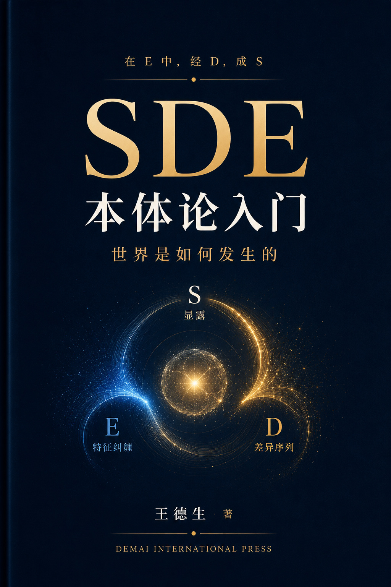
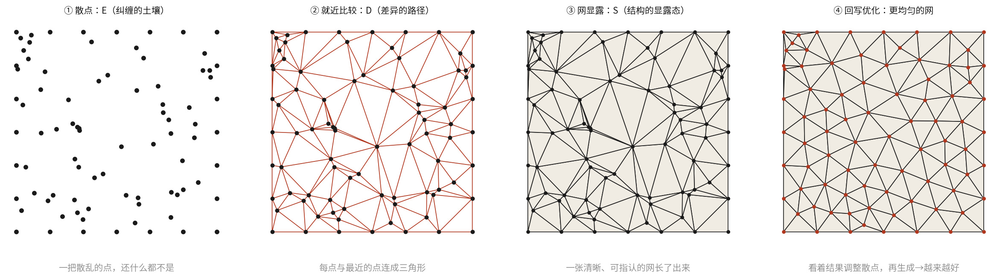
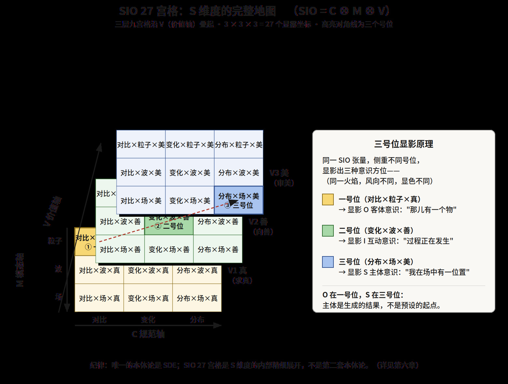
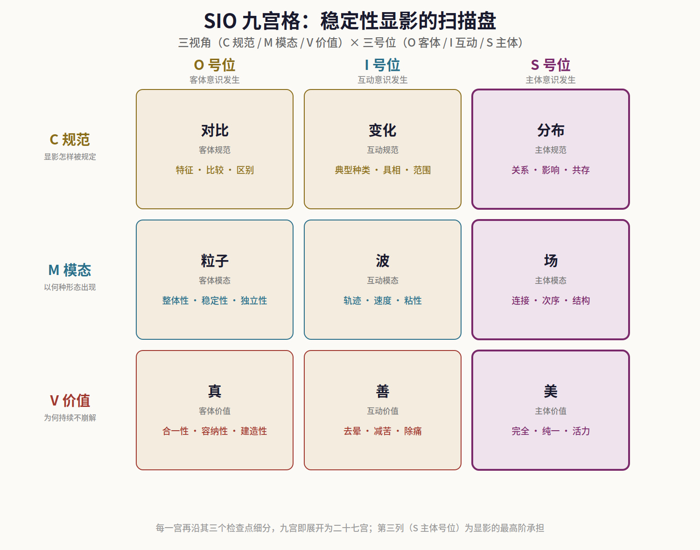

出版信息
书 名 SDE本体论入门：世界是如何发生的
作 者 王德生（Desheng Wang）
出 版 Demai International Press
德麦国际私人有限公司（新加坡）
Demai International Pte. Ltd., Singapore
版 次 2026年7月 第1版
字 数 约39万字
I S B N 978-1-970820-56-0
作者ORCID 0009-0009-8196-0030
网 址 https://sdeuniverses.com
联系邮箱 wangdesheng1234567@gmail.com
版权所有 © 2026 王德生
All rights reserved. 本书受版权法保护。未经出版者书面许可，任何单位与个人不得以任何形式复制、转载或传播本书之全部或部分内容。
数字阅读版 v1.0 · 2026年10月8日。依据作者提供的终稿重建全书排版与目录，保留2026年7月初版及原ISBN。正文、图表、补章与附录完整收录；新增阅读界面不代替独立学术审定。
作者简介
王德生，计算数学博士（中国科学院），SDE（显露—差异序列—特征纠缠；早期通俗旧称“结构—差异—纠缠”）本体论创立者。曾于中国科学院从事博士后研究，其间与哥伦比亚大学杜强（Qiang Du）教授合作，合著ACVT（各向异性中心Voronoi剖分）奠基性论文；后任职于英国斯旺西大学与新加坡南洋理工大学，长期从事Voronoi/Delaunay/CVT网格生成、有限元、自适应算法等计算数学研究。正是在对“网格如何从散点中生成”这一具体问题的长期追问中，SDE本体论的最初火种被点燃——本书第一篇末尾那张“看得见的发生”，正源于此。
SDE本体论历经近三十年发展：始于计算数学中对结构生成机制的追问，经SIO本体论阶段，演化为以三大方程（S=F(D,E)、D=G(S,E)、E=H(S,D)）、123原理、六路径、意义三律（特征律·自由律·幸福律）、混沌—介生—秩序三态与成熟态判断为骨架的完整三维发生学体系。其核心主张，是把人类的根本追问从“世界是什么”（发现范式）转向“世界如何发生”（发生范式）。
以SDE为方法，作者已在哲学、数学、人工智能、医学、教育、艺术、文明研究等约二十个学科出版专著五十余部。这一横跨东西、贯通软硬的野心在本书中可见一斑：它既解构西方自派克、怀特海、德里达至德勒兹、巴拉德等当代本体论家，又回到儒、佛、道认亲；既重构时间与空间这两个最古老的“先验容器”，又敢于走进人类理性最坚固的堡垒——数学，揭示其从未被说破的“相容性公理”，并给出以伞模型为核心、把传统数学作为退化极限包含在内的更大框架。
现居新加坡，创办德麦国际（Demai International），致力于SDE知识创新体系的研究、出版与教学，及以SDE为内核的AI超级员工与智能体研发。在作者看来，通往真正的通用智能，需要的不是更多的“已完成的知识”，而是“知识如何发生”的过程数据——而这，正是SDE近三十年所积累的独特资产。本书是其面向公众读者的SDE本体论入门之作，也是通往这一更大工程的门槛。
多学科阅读导引（示意）
【编者说明】本页推荐语系依据本书内容拟写的示意样张，用以呈现不同学科视角对本书的可能评价方向；所署身份为学科领域代称，非特定真实人士。正式出版时，本页将整体替换为真实署名的推荐。读者可将其视为"这本书大致会被不同领域如何阅读"的一份导引。
——哲学·本体论
哲学史上每隔数百年，就会有人试图重问"存在是什么"。多数尝试要么把存在供上神坛（沦为悬空的理念），要么把它拆成碎片（沦为无根的语言游戏）。这本书走了第三条路：它不问"存在是什么"，而问"存在如何发生"。仅这一个转向，就让海德格尔诊断出却无力医治的"存在的遗忘"，第一次有了可操作的机制。作者把"发生"从诗性的沉吟，搬进了可分析、可诊断、可验证的工作台——显露、差异、纠缠三维互生，既有东方"道生万物"的血脉，又有西方分析哲学的锋利。我尤其欣赏它对自身的诚实：它明写自己还没焊严的接缝，把留白当作邀请而非遮掩。这是一本真正的哲学书——不是因为它给了答案，而是因为它教会你重新提问。
— 一位形而上学研究者
——理论物理
作为一个长期与量子测量问题搏斗的物理学家，我对"世界是被发现还是被发生的"这个问题有切肤之感。测量难题之所以百年无解，或许正因为我们一直假设被测量的东西"本来就在那儿、只等被发现"。这本书提供了一副截然不同的眼镜：结构不是先在的，而是在纠缠中被显露出来的。我不敢说它解决了测量问题——没有哪本哲学书能替物理学做实验——但它给了一个罕见地自洽的本体论框架，让"观测参与了实在的生成"这句话不再是玄学，而有了结构性的表达。书中把"特征纠缠"与量子纠缠小心地区分开、只谈共鸣不谈等同，这份克制让我信任它的其余部分。值得每一个思考物理学基础的人一读。
— 一位量子基础理论研究者
——纯粹数学
数学家最警惕含混。我带着挑剔翻开这本书，却在"数学不独属理念界"这一节停了很久。作者把数学重新定义为"特征纠缠的场模式——连接、次序、结构"，并由此消解了维格纳那个著名的困惑：数学为何能"不合理地有效"地描述物理世界。他的答案是——理念界的场模式与现实界的场模式本就同源。这个说法是否最终成立，我持开放态度，但它的确切、可证伪，远胜于大多数关于数学本质的哲学空谈。书中三大方程虽用了函数记号，作者却诚实地声明那是占位符、关键在互生的闭环结构——这种对形式与实质之分的清醒，让一个数学家读来舒服。它不是数学书，但它比许多数学哲学更懂数学在做什么。
— 一位代数几何学者
——科学哲学·时间与空间
我研究时间哲学三十年，见惯了两种阵营的隔空对骂：物理学家说时间就是钟表读数，现象学家说那不过是被空间化的假时间、真正的时间是绵延。这本书做了一件我期待已久却无人做成的事——它没有选边，而是指出双方各自攥住了时间的一维：爱因斯坦攥住了"显露变化"的S时间，柏格森攥住了"纠缠激发"的E时间，而怀特海攥住了"差异推进"的D时间，三人吵了一百年，根源竟是他们根本不在谈同一维。作者对1922年那场著名论战的"对称清算"，是我读过最公道的一次裁决。更妙的是，它把同一副框架原样搬给了空间——结构空间、运行空间、纠缠空间——让"时间与空间是一对孪生兄弟"这句常被诗意滥用的话，第一次有了精确的结构对应。这一部分本身就值回书价。
— 一位科学哲学教授
——计算数学·非局域方法
作为一个做了半辈子有限元与网格生成的人，我要诚实地说：读到"相容性公理"那一章时，我有一种被人说破心事的错愕。我们这行当，两千年来默认"每个空间点只属于一个单元、单元不重叠"——从没人把它当成一条可以质疑的假设，它就是数学本身的样子。作者却把它拎出来，命名为一条隐含公理，并指出它在非局域问题（分数阶算子、复杂网络、生命系统）面前的系统性失效。他给出的伞模型（可重叠、三参数、以SDE数度量偏离相容的程度、把传统数学作为N_SDE→0的退化极限），与我熟悉的peridynamics、分数阶方法在方向上高度一致，却给了它们一个统一的本体论说法。地震波频散和Santos定理那两个印证，尤其扎实。我未必同意每一个细节，但这是我读过的、把"非局域"讲得最有哲学纵深的一次。
— 一位计算数学研究者
——人工智能
我造了半辈子模型，这本书对大模型的诊断，是我读过最冷静、最不媚俗的。它先给机器做了一次"本体论体检"（理念界超人、现实界与自我界近乎空缺），又在压轴一篇里，把整个时代最含混的那个等式拆开了："会推理"不等于"会创造"——演绎是解释性的、真理保持、从定义上生不出新理念；生新理念的力，全在类比与归纳这两个越出前提的操作上。"形式逻辑是压力盘，不是产房"，一句话点破了"模型会推理了就在通往创造"的集体误读。而它最深的判断，是把"谁在发生新知识"这个问题，从人与机器的二选一，翻转成了"人-机器复合体"——发生力属于装配体，不属于任何一极。这不是又一本 AI 畅想，它是一套能指导"该把 AI 造成什么、该把人往哪培养"的工程哲学。任何认真对待通用人工智能的人，都该读它最后一篇。
— 一位机器学习研究者
——创新与方法论
我研究"创造力"多年，读过的多数著作，要么把创新归于天赋玄学，要么堆砌一堆"头脑风暴"式的技巧。这本书是我见过第一个把思想创新当作可训练、可复现、可验收的工程来对待的。它把"新思想"从一句漂亮口号，重新定义为"可调用的新实体"——必须可激发、可释放、能被他人在十分钟内复现一次；并给出一条反直觉却极实用的分娩序列：不是先立论点再找证据，而是先在失败与转折里采集差分（Δ），再凝结成形（S），最后装上动力引擎（E）。它甚至配了一套"五连问"和"三维验收"，让创新从等灵感降临，变成可以按步骤逼问出来的手艺。作为方法论，它的确切与可操作，远胜于书架上大多数创新学畅销书。我已经开始用它训练我的研究生。
— 一位创新方法论研究者
——认知科学
认知科学一直在两个极端间摇摆：要么把心智还原为神经元的放电，要么把它抬举为脱离身体的计算。这本书提供了第三种语言。它把"特征"定义为差异序列跑出的稳定同一性，把认知理解为多模态特征的共同发生与纠缠——这与具身认知、预测加工的前沿直觉惊人地契合，却给了它们一个更统一的本体论底座。书中对"符号态、逻辑态、数学态"的三分，尤其是"没有通用逻辑学、每束纠缠有自己的逻辑"这一论断，为解释领域特异性的认知提供了新的框架。它不是实证研究，但它是一副能组织实证的镜片。读完之后，我看自己实验数据的眼光都变了。
— 一位认知科学研究者
——临床医学
作为一名临床医生，我对哲学书通常敬而远之——它们离病床太远。这本书是例外，而它谈癌症的那一篇，甚至让我脊背发凉。它提出一个反直觉到刺耳、却越想越有道理的判断：癌症也许不是"某处坏了"，而是"局部太成功、却不再服务整体"——癌细胞不是低能，它是识别缺氧、发展耐药、逃避免疫样样精通的"效率天才"，只是把这身本领从服务整体扭向了服务局部自己。顺着这个判断，攻克的方向也翻转了：从"更彻底地消灭局部"，转向"重新恢复整体的一元"。作为一套理论假说，它逻辑自洽、富有启发。而作者始终谨守分寸，反复声明这是理解框架、不是治疗方案，真实的诊疗必须交给循证医学与专业医生——这份克制，让我放心。它不治病，但它可能启发出治病的新方向。
— 一位肿瘤科医师
——教育学
我做了三十年教育，见过无数把学习当作"知识搬运"的课堂。这本书把这幅"倒水图"烧得干干净净——"信息搬运量最大的学生，往往不是学得最好的那个"，它的病理报告只有六个字：入库饱和，回写为零。而它落地的那一篇更让我震动：它敢把整门教育学翻建在发生学的地基上，指出两千五百年的教育理论史"不是本体发现史，而是发生模式命名史"——柏拉图、杜威、蒙台梭利、孔子，各自命名了一种真实的教育发生，却都错在把局部固化成本体。它甚至一直讲到 0—3 岁：那片被整个教育学遗忘的"最大荒漠"，恰恰是"发生的第一现场"。作者把教师从搬运工还原为"发生的农人"，还配了可操作的三问自查。这是一本每个教育者都该被它冒犯、然后被它改变的书。
— 一位教育研究者
——复杂系统科学
复杂系统科学最深的洞见，是"整体不是部件的累加，而是生成出来的"。但我们一直缺一套本体论语言来安放这个洞见。这本书给了。它把涌现、自组织、临界态，统一进"显露—差异—纠缠"的三维框架，尤其是"介生态"这个概念——将结未结的临界走廊、创造的温床——几乎是对复杂系统"混沌边缘"的哲学翻译，却更精确。书中对组织之死、内卷的分析，把复杂系统的抽象动力学落到了可诊断的社会现场:内卷被定义为"缺高维结构牵引时，众多路径困在同一平面互相消磨"，这个定义比任何经济学模型都更触及本质。它不做仿真，但它给仿真一个值得建模的世界图景。
— 一位复杂性科学研究者
——艺术理论
我一生与美打交道，却始终说不清美到底是什么。这本书给了我一个让我震动的答案：美是"特征纠缠之间互相吸引、要聚成整体的势能"，而我们对它的第一人称体感，是"好像会被纠缠去"。这一句解开了困扰美学两百年的康德悖论——美为何既"无功利"又充满诱惑：因为它是要聚合的势，尚未落入占有。一件作品之所以美，是它的元素互相吸引、聚成一个不可增删的整体，那股"聚成一"的张力就是美。作为艺术理论者，我见过太多把美说玄的文字，而这本书把美说成了一种可感、可辨、甚至可诊断的劲。它没有教我如何创作，但它让我第一次看清，我在创作时到底在追逐什么。
— 一位艺术理论学者
——东方哲学
我研究中国哲学多年，最怕两种人：把三教说成神秘主义的，和把它们硬塞进西方框架的。这本书两者都不是。它的"归乡"一篇，让儒、佛、道第一次在同一副骨架上彼此认亲——它发现三家其实各守着"发生"的一个维度：儒家守显露（正名、礼、仁如何让秩序一代代重新生成），佛家守空性（缘起即纠缠、无我即主体非先验、空即无自性），道家守流动（道是发生本身，"反者道之动"竟与它的矛盾引擎严丝合缝）。尤其难得的是它对佛法与科学的处理：不廉价调和，而是精确指出二者面对同一个"空"却走向相反方向——佛法退出维持（破），科学投入维持（造）。它甚至诚实地指出儒家《中庸》如何把"发生"锁进了立法——这份连自家血脉都不回护的诚实，让我信服。这是我读过对中华三教最尊重、也最有创造性的当代对话。
— 一位中国哲学研究者
——企业管理
我在董事会里待了二十年，见过无数曾经辉煌、最终僵死的组织。这本书里"组织之死"那一节，读得我脊背发凉——它精确地描述了我亲历过的每一次衰败:死于成功路径的过度固化，评估的标准从"事成没成"悄悄变成"合不合流程"，而全程每个员工都在正常工作，人人尽责合规，就是没有一件事在真正发生。作者一句"死的组织把正确制度化，活的组织把发生制度化"，我想把它刻在每一间会议室。书中关于"内卷—升维"、关于"治理含破、能松开手的主权才是主权"的论述，是我见过对组织生命力最深刻的诊断。它不是管理学教材，但它比多数管理学教材更懂组织为什么会活、为什么会死。
— 一位企业治理顾问
——临床心理学
作为一名心理治疗师，我对任何试图"结构化"心灵的理论都保持警惕——心灵太容易被简化。但这本书没有简化，它照亮。它把抑郁重新理解为"真善美三股劲同时熄火"——守不住自己如实的真、激发不了他者的善、感受不到吸引的美，把快感缺失讲成了"感受被吸引的那股势熄了"，这比任何症状清单都更贴近来访者的真实体验。它把焦虑讲成"美的势被恐惧劫持"，把"知道该做却做不到"讲成三界逻辑的互相打架而非意志薄弱。这些框架帮我的来访者卸下了道德自责的重担。作者全程守着分寸,反复强调这是理解不是治疗、真实的困请交给专业帮助——这份负责任，让我愿意把它郑重推荐给同行。
— 一位临床心理学者
导读：这本书能帮你解开的二十个结
这不是一本必须从头读到尾的书。它是一套工具，而工具是用来解决问题的。下面列出二十个几乎每个人都会撞上的人生难题或求知困惑——你未必二十个都有，但只要有一个正卡着你，就可以从那一条切入，顺着指引直接去读最相关的章节。读通一个真实困住你的问题，胜过泛泛翻完全书。当然，若你愿意从头走一遍，全书本身就是一次完整的"发生"，从缺口到涌现，环环相扣。前十四结偏向"人生与实践"的困惑，后六结偏向"求知与思辨"的追问——按你此刻更想解的那类，任选入口。
一、"我学了很多，却好像什么都没真正学到。"
你不是记性差，你是把学习当成了信息搬运——入库饱和，回写为零。请读第十三章（发生＝底盘＋回写），它给你一把最锋利的诊断刀，分清"知道了"与"真发生了"；再读第十四章（知识的三重定义），看清知识为什么不是搬进来的，而是长出来的。若想更深地理解"信息"和"知识"到底差在哪，请接着读第四十二章（信息与熵）——它用物理学的熵给出一个惊人的答案：信息熵最高的是纯噪声，知识则是被守在"介生态"里的信息；这也解释了为什么信息爆炸的时代，人反而更觉知识匮乏。你缺的从来不是信息，是把信息守成知识的那台引擎。
二、"我拼命努力，却越来越累、越来越没出路。"
这是内卷，而内卷的病根不是"人太多"，是你在旧系统里加速、只会把旧系统的吸收能力越喂越强。请读第八章·再补（E 的治理），它把命运定义为可诊断的结构，并给出跃迁/内卷/轮回/耗散的四结局判据；配合第二十一章（社会与组织），看清群体的病如何以每个人的"正常"为症状。若你想从根上换一条路而不是在原路上更用力，请再读第十一章（任务DNA与六路径）——出路往往不在"更努力"，而在换一个发生的起点：六条路径里，你也许一直只走了最累的那一条。
三、"我知道该做什么，却总是做不到。"
这不是意志薄弱。请读第十八章（心灵）与第八章·补中三界逻辑一节——"知道该做却做不到"，是你理念层的推理与自我层的推理在互相打架，而非一个"知"、一个"行"隔着鸿沟。看清这一点，你会放下大半的自我责备。若想进一步理解"自我层"为什么这么难被"理念层"说服，请读第六章（显露维度）里的三号位显影律——你的"我"不是一个发号施令的司令部，而是发生的结果；理解了这一点，你就不会再用"命令自己"的方式去对付一个本该被"重新发生"的自己。
四、"我情绪低落、提不起劲，别人却说我只是想太多。"
请读第十八章（心灵）。它把这种状态理解为能量机制被按住的"油箱之困"，而非意志的"油门之罪"，并从"真善美三股劲同时熄火"的角度，给出一张温和的自查表。（请记住：本书提供的是理解框架，不是治疗——真实的痛苦，请交给专业帮助。）若你想理解"提起劲"这件事在最根本的层面是什么，请读第七章·补的幸福律——劲不是凭空鼓起来的，它是特征纠缠的张力被转换、被释放时的那份体验；知道劲从哪来，你才知道该去哪里重新点火，而不是一味责怪自己"不够坚强"。
五、"我想找到人生的目标，却始终找不到。"
问题也许在于"找"这个字——目标不是藏起来等你发现的，是你亲手长出来的。请读第七章·补（意义三律），它讲清目标如何从 0 到 1 地发生（特征律）、路径如何被裁出（自由律）、动力如何从内部点燃（幸福律）。你不是要去寻宝，你是要去耕种。若你追问得更深——"那意义会不会终究是空的"，请一路读到第三十七章（意义的持续再发生）：意义的价值不在于它永恒，而在于它能一次次重新发生；找不到"那一个"目标不可怕，因为你要的从来不是一个终点，而是让目标不断在你身上重新长出来的那份能力。
六、"我的孩子（或学生）没兴趣、没动力，怎么教都没用。"
请读第十九章（教育）与第七章·补的"三律在三个现场"；若想要一整门可上手的教育发生学（含0—3岁），第九篇整篇为你而写。它把"没目标"精确分成目标缺、路径缺、动力缺三种病，三种治法截然不同；并把教育重新定义为"帮一个人在他自己的土壤里，让理解重新发生一遍"。特别推荐读第四十六章（感觉之门：0—3岁）——它把发生的第一现场追到婴儿睁眼的最初时刻，你会明白：教育不是往一个空容器里装东西，而是守护一场早已在孩子身上自行发生的、无比精密的建构。
七、"我总担心失控，凡事都想抓在手里，却越抓越焦虑。"
请读第八章·再补结尾的"治理含破"，以及第三十一章（造表征与破表征）。你会看到：真正的主权不是掌控一切，而是既能治理、也能在恰当时候松开手——"一切都被计算的人生，美先死"。若你想从更高处看透"控制"这件事的限度，请读第四十三章（学科发生论）里"反身的发生不可自我封顶"——凡是会回头看你、会因你而变的东西（人心、关系、市场），你越想精确掌控，它越会因为你的掌控而变形；懂得这条界，你就懂得了何处该松手，不是因为放弃，而是因为那里本就抓不住。
八、"我被各种健康指标追着跑，越管越焦虑。"
请读第十七章（生命与健康），它揭示指标如何从监测工具异化成"恐惧节点"，把健康重新理解为"发生链的流畅"而非"没有坏东西"；若想看这套发生学如何直面最艰难的疾病，第十二篇（癌症的攻克猜想）提出一个大胆的转向——癌症或许不是"某处坏了"，而是"局部太成功却不再服务整体"，攻克的方向也许该从"消灭局部"转向"恢复整体"。（请记住：这些是理解框架，不是医嘱，更不是治疗方案，详见该篇首页的医学免责声明。）
九、"我想搞懂 AI 到底是什么、会不会取代我。"
先读第二十章（AI），它给大模型做一次完整的"本体论体检"，冷静指出它强在哪、缺在哪；再读第十三篇（SDE 与 AI）四章，它把"体检"推到更深处——回答"会推理"是否等于"会创造"（答案是不等于：形式逻辑是压力盘，不是产房），并给出一个既松一口气又有所警醒的结论：机器能记住一切、演绎一切，而人唯一不可替代的，是嗅出裂缝、称量意义、点燃发生这三样机器给不了的内功。能发生新知识的，从来不是孤立的人或机器，而是"人-机器复合体"。想知道这个判断的物理根据，请回看第四十二章（信息与熵）：大模型是"信息高产机"却产不出知识，因为它缺一台把信息守回介生态的引擎——这正是"你"这一极不可替代的位置。
十、"我想创新、想做出新东西，却总在旧框框里打转。"
请读第十五章（龙爪手），它教你在旧结构的裂缝处裁出新路；配合第十二章（六步法与九步法）的"升维"，以及第七章·补的自由律——自由不是在现成选项里挑，是让一条原本不存在的路发生出来。若你想看这套"裁新路"的功夫被推到极致是什么样，请读全书的数学篇（第四十章·相容性公理与伞模型）——作者正是用同一套功夫，在两千年无人质疑的数学地基上裁出了一条新路：连"数学必须如此"都可以被重新发生，你手边那个"只能如此"的旧框框，多半也没有你以为的那么牢。
十一、"我想理解东方智慧与西方科学，到底哪个对。"
这个问题问错了。请读第二十二章（文明），它把东西方两条思想长河并排体检，发现它们的病历严格互补——一条亏的恰是另一条丰的；再读第三十一章（造表征与破表征），看佛法与科学如何在更高的循环上会通。若想看这种"互补"被落实到最硬的细节，请读因果三章（第三十四至三十六章）——西方的机械因果、佛教的缘起因果、中华的感应因果，恰好是同一个因果之环的三种切法，各执一端、合起来才完整。你会发现，东方与西方从不是"哪个对"的选择题，而是同一副骨架的不同侧面。
十二、"如果一切终将逝去，那我此刻的努力还有什么意义？"
这是最深的一问。请直接读第三十七章（意义的持续再发生）。它给出全书的终极回答：永恒的不是任何一个意义，而是"意义不断再发生"这个过程本身——你不是站在某一朵注定会碎的浪上，你就是那片起浪的海。若你想连"宇宙终将热寂、万物归于死寂"这个终极的悲凉也一并解开，请读第四十二章（信息与熵）：那里证明，"混沌热寂"从不是唯一的死，"冻结的纯秩序"同样是死，而一切活的、有意义的东西，都是逆着熵流被主动撑起的"介生态"——意义的短暂，不是它的缺陷，正是它活着的证明。
十三、"我想真正创造出新思想，而不只是换一套说法。"
请读第五十七章（思想创新方法论）。它把"新思想"从一句漂亮口号，重新定义为"可调用的新实体"——必须可激发、可释放、可复现；并给出一条可训练的分娩序列 Δ→S→E（先在失败与转折里采集差分，再凝结成形，最后装上能被他人十分钟复现的引擎）。你会发现，创新不是等灵感降临，是一门可以按步骤逼问出来的手艺。配合第十五章（龙爪手）与第五十八章（思想创新智能体），看这门手艺如何在 AI 时代被工程化。想看这门手艺的最高成品，请读终章（发现范式的六张面孔）——全书六个"改写学科地基"的颠覆，正是这套方法论逼问出来的六个真实成果。
十四、"我总觉得自己是个旁观者，世界是别人造的，与我无关。"
这也许是最根本的一种困住。这本书从第一页到最后一页，只想说服你一件事：你不是站在世界之外的"发现者"，等着现成的答案降临；你可以成为一个"发生者"，走进属于自己的那片土壤，亲手让一些从未存在过的东西，在你身上重新发生一遍。请读第五十九章（人-机器复合体）的收尾，以及第三十七章（意义的持续再发生）——它们合起来告诉你：发生这件事，从不专属于天才或机器，它一直向每一个愿意走进土壤的人敞开。
十五、"时间到底是什么？我总觉得它是个装万物的容器。"
请读第三十二章（时间是什么）。它把时间从"一个现成的、装着事件的容器"，重新理解为"发生本身的总体刻画"，并给出三维时间（S 时间、D 时间、E 时间），一举清算了爱因斯坦、柏格森、怀特海纠缠了一个世纪的争论——他们各自攥住了时间的一维，却都把自己那一维当成了全部。读完你会发现，时间不是你泡在其中的水，时间就是你正在发生的这件事本身的节奏。紧接着读第三十三章（空间是什么），你会看到空间也一样：它不是先在的盒子，而是运行沉淀出来的结果。
十六、"因果就是 A 导致 B 吧？为什么有时候完全说不通？"
请读第三十四章（因果是什么）。它揭示：单向箭头 A→B 只是因果的一个退化特例（"忽略了回写"的那一半），真正的因果是"矛盾→改变→回写"的循环之环——这就是为什么在活的系统里（关系、市场、生态），"结果"总能回过头改变"原因"。若你被休谟那个著名难题困扰过（"我们其实从未真正看见因果"），这一章会告诉你：休谟没有错，他只是找错了维度——因果的必然性不在两个客体"之间"，而在把它们卷入同一个环的流转与纠缠"之中"。
十七、"数学不是绝对真理、宇宙的唯一语言吗？"
请读数学篇（第三十八至四十一章）。它揭出一条统治了数学两千年、却从未被人说破的隐含假设——"相容性公理"（纠缠必须局域、单元不重叠），并证明传统数学只是一个更大框架（伞模型）在特殊极限下的退化特例，正如牛顿力学是相对论的低速极限。想看这不是空谈，请读附录六（伞模型玩具算例）——那里有一段可以真正运行的代码，用数值证明了这个"更大的数学"能算、能退化、能超越。数学不是被发现的永恒真理，它也是发生的。
十八、"一门学科是怎么来的？为什么有些问题科学永远算不准？"
请读第四十三章（学科发生论）。它追问一个几乎从没被正面问过的问题：学科本身是如何发生的？并揭出一条颠覆性的暗线——"反身的发生不可自我封顶"：凡研究对象会回头看自己（市场会读取预测、人心会因理论而变），那门学科的预测就注定"逼近而不抵达"。这一章还给出一个石破天惊的判断：本体论根本不属于哲学，二者互为表里——本体论是一切文明的根，物理、经济、数学都只是从不同方向研究同一个本体论。
十九、"热力学第二定律说宇宙必然走向死亡，这总该是铁律了吧？"
请读第四十二章（信息与熵）里"第二定律发生学"一节。它做了一件连物理学都会心头一震的事：把热力学第二定律还原为 E 维度内部的一次"发生"，并证明它必须预设一定的结构（S）与运行（D）才能成立——既然 S 和 D 本身是可变的发生，那么第二定律就不是形而上学地永恒的。这不是说它在我们的宇宙里会被违反，而是说：连这条被爱丁顿称为"违反它就只能在最深耻辱中崩溃"的铁律，也有它的前提、有它的来历，因而也是发生的。
二十、"这本书这么多解构，到底有没有一根总的主线？"
有，而且它值得你专门去读一次。请直接读终章（发现范式的六张面孔）。它把散落全书的六个颠覆——数学的相容性公理、认识论的康德先天模型、物理学的永恒第二定律、学科论的自我封顶、哲学史的客观因果、以及"本体论作为哲学分支"——焊成一根主线，宣告它们其实是同一张脸戴着六副面具：每一次，都是把一样"其实正在发生、有前提、可改变"的东西，误当成了"现成、永恒、等着被发现"的天条。读完这一章，你手里就有了全书那把总钥匙的完整形状。
如果你不知道从哪开始，就读导言和第一章——先看清那个统治了我们五百年、却几乎从不被察觉的假设："世界是被发现的"。一旦这个假设松动，上面二十个问题会同时松一口气。而理解全书的那把总钥匙，藏在一句话里：世界不是被发现的，而是发生的。
导言 世界不是被发现的，而是发生的
引子：一个文明正在等一套新的地基
在请你想那三个问题之前，请先允许我说清楚一件事：为什么是现在，为什么人类此刻特别需要一套关于"存在如何发生"的新本体论。因为一套思想若不回应它所处的时代，它再精巧也只是书斋里的摆设。而这本书之所以写在此刻，是因为我们这代人，正站在一个旧地基普遍开裂、新地基尚未浇筑的文明缝隙里。
先看几道正在同时裂开的缝。
第一道缝，是意义的普遍流失。这是一个物质空前丰裕、意义却空前稀薄的时代。前人为温饱、为生存、为一个明确的信仰而活，苦，却少有"活着到底为什么"的茫然。而今天，一个衣食无忧的年轻人，可能比他挨过饿的祖辈更深地陷在虚无里——他拥有一切，却不知道为什么要起床。抑郁、空心、"躺平"、意义感的整体塌陷，正在成为发达社会的流行病。这不是个人的软弱，这是一个文明层面的症状：当旧的意义供给系统（宗教、家族、集体理想）一个个失效，而新的还没长出来，人就悬在了半空。可现有的知识体系对此几乎无话可说——科学能告诉你大脑里哪些神经递质失衡，却回答不了"意义是什么、意义如何发生、一个人如何重新长出意义"。意义问题，需要一套能正面回答"意义如何发生"的本体论。
第二道缝，是文明之间的对撞与失语。这是一个前所未有地连在一起、却又前所未有地撕裂的世界。东方与西方、传统与现代、不同的信仰与价值，被全球化硬塞进同一个房间，却发现彼此的语言根本不通——一方眼里的天经地义，是另一方眼里的匪夷所思。冲突的根，往往不在利益，而在本体论层面的不可通约：双方对"世界是什么、人是什么、什么是善"的最底层预设根本不同，于是任何对话都像隔着一堵墙喊话。人类迫切需要一个更深、更底层的共同地基——一个能让不同文明各自的智慧被看成"同一件事的不同侧面"、而非"你死我活的对错"的框架。这需要一套能容纳并贯通多种文明本体论的元本体论。
第三道缝，是科学在最深处的自我困惑。就连最坚硬的科学，也在它最深的地基上遇到了说不清的东西。量子力学里，观察者为什么会影响被观察的对象？意识为什么能从物质里"涌现"出来？生命为什么能逆着熵增维持自己？时间为什么只有一个方向？这些问题，用"世界是一堆现成的、等着被发现的客观事实"这套旧框架，越挖越拧巴。科学积累了海量的"是什么",却在"为什么会如此发生"这个更根本的追问前反复卡壳——因为它的整个方法论，是为"发现现成之物"设计的，而不是为"理解正在进行的发生"设计的。
这三道缝还共同压向每一个具体的人，酿成一道最贴身的缝——人在加速中的存在失序。技术让世界的变化速度超过了人的适应速度：一个人一生中要经历的职业更替、知识过时、身份重塑，是他祖辈的数倍。你刚刚学会的技能可能几年就被淘汰，你赖以定义自己的行业可能一夜之间被重构。在这种持续的加速里，人越来越难为自己建立一个稳定的"我是谁"——因为那个"我"所依附的一切（职业、专业、角色、关系）都在流动。于是焦虑成了时代的底色：不是对某件具体事的焦虑，而是一种更弥漫的、对"脚下的地在移动"的不安。人们比任何时代都更需要一种能在流变中安顿自己的智慧——一种不把"我"寄托在任何一个终将过时的固定身份上、而是理解"我本身也是一场持续发生"的智慧。可现有的心理学给的是应对技巧，哲学给的是古老的箴言，都难以从根上回应这个"一切都在加速发生、而我该如何自处"的现代困境。它同样在等一套关于"发生"的理解。
而在这几道旧缝之上，又劈下了一道全新的、最急迫的裂口——人工智能。
大语言模型的出现，把一个盘旋了两千年的哲学问题，第一次变成了每个人桌上的现实问题：知识到底是什么？创造到底是什么？人到底还剩下什么？当一台机器能瞬间写出流畅的文章、通过专业考试、生成以假乱真的图像，一种普遍的恐慌与迷茫弥漫开来：如果机器什么都会，人还有什么价值？我们该如何教育下一代——教他们去和机器比记忆、比运算吗（那是必输的）？我们该如何理解"原创""理解""智慧"这些词，当一台没有生命的机器似乎也能模仿它们？
这些问题之所以让整个社会手足无措，根子在于：我们缺一套能说清"知识如何发生""创造如何发生""人机之间到底谁在创造"的本体论。没有它，我们就只能在"AI 万能论"和"AI 威胁论"两种情绪之间摇摆，既看不清机器真正的能力边界，也说不清人真正不可替代的位置。这是这个时代最尖锐、也最不能回避的一道追问——而它，恰恰是一个纯粹的本体论问题。
这道 AI 裂口的深处，还藏着一个更让人不安的追问：教育向何处去。过去几百年，教育的核心是把人类积累的知识"装进"下一代的头脑——记住它、掌握它、能调用它。可如果一台机器能瞬间调用人类几乎全部的显性知识，那么"把知识装进脑袋"这件事的意义就被釜底抽薪了。我们还在用工业时代的方式训练孩子去做机器比他们做得更好的事——记忆、检索、标准化解题——这无异于训练他们去参加一场注定失败的赛跑。教育需要一次根本的转向，而这个转向的方向，取决于我们能不能回答一个本体论问题：当知识可以被机器无限生产，人身上那个不可被机器替代的"发生新知识"的能力，究竟是什么、又该如何培养？这个问题不解决，整个教育体系就是在雾中航行。
把这几道缝放在一起看，一件事就清楚了：它们不是几个孤立的问题，它们共享同一个病根——我们仍然在用一套"世界是现成的、等着被发现的"旧本体论，去应对一个"一切都在剧烈发生、剧烈重构"的新时代。意义的流失、文明的对撞、科学的困惑、AI 的冲击，表面上分属心理学、政治学、物理学、计算机科学，底下却是同一个哲学地基的普遍开裂：那套把世界看成静止的、现成的、被动等待被认识的"发现范式",已经托不住这个万物剧烈生成、边界不断重画的时代了。
为什么偏偏是"发现范式"托不住了？因为发现范式有一个致命的预设：它假定世界是一套先在的、确定的、独立于人的现成事实，认识就是去"发现"这些事实、把它们照搬进脑子。这套预设在一个变化缓慢、边界稳定的世界里够用了几百年——那时你确实可以把世界当成一本已经写好的大书，一页页去读。但今天的世界不再是一本写好的书，它是一场正在书写的、而且是由包括我们自己在内的无数力量共同书写的发生。市场会因为你的预测而改变，社会会因为你的理论而重组，连"人"这个概念本身都在被技术重新定义。在这样一个世界里，"发现现成之物"的旧范式处处碰壁——因为根本没有那么多"现成之物"在那里等着，有的只是不断被生成、被回写、被重画的过程。旧范式的每一次失灵，都是同一个信号：世界从来不是被发现的，它一直是被发生的；只是在一个慢速的时代里，这个真相可以被掩盖，而在一个剧变的时代里，它再也藏不住了。
一个正在剧烈发生的文明，需要一套关于"发生"的本体论来为它奠基。这就是这本书的时代动机。它不满足于再修补旧地基上的某一道裂缝——那是各门具体学科在做的事；它要问的是那个更底层的问题：如果我们换一套最根本的预设，不再把世界看成"被发现的现成之物",而是看成"正在发生的过程",那么意义、文明、科学、AI 这四道缝，会不会在同一个新地基上，同时获得一种全新的、更贯通的理解？
这本书的回答是：会。而那套新地基，就是接下来要讲的 SDE——一套关于"世界、知识、乃至人自身，究竟是如何发生的"的本体论。它不是又一种哲学观点，而是一次地基的更换：把"发现"换成"发生"。这个更换一旦完成，你会看到，从一颗心脏为什么被理解成四种样子，到一个人为什么会陷入虚无，到两个文明为什么无法对话，到一台大模型为什么造不出真正的知识——这些看似天各一方的问题，会第一次显露出它们共同的骨架。
还有一层，是这本书写作方式本身的时代性。你也许会好奇：一本谈"发生"的书，是怎么写成的？坦率地说，它本身就是这个 AI 时代的产物——它是一个人与这个时代最强的思想工具长期纠缠、反复碰撞、彼此激发的结果。这不是要为工具张目，恰恰相反：这本书的写成方式，正是它想讲的那个道理的活样本——真正的新知识，从来不发生在孤立的头脑里，也不发生在冰冷的机器里，而发生在"人与工具扣成一体、共同发生"的那个现场（这正是全书最后一篇要展开的主题）。所以这本书既是关于"发生"的一套理论，也是这套理论在它自己身上的一次亲身验证：它讲的道理，就是它自己的来历。
现在，让我们从三个最朴素、也最能撬动这套地基的问题开始。
一
请你先想三个问题。它们看起来毫不相干，但这本书的全部工作，就是要证明它们其实是同一个问题的三张脸。
第一个问题：为什么同一样东西，在不同的时代会被人类理解成完全不同的样子？
拿"心脏"来说。在古埃及人那里，心脏是灵魂的居所、是思想和记忆发生的地方——他们做木乃伊时把大脑当废物掏空扔掉，却小心翼翼地把心脏留在体内，因为死者要在冥界的审判中把心脏放上天平，与真理女神的羽毛称量。到了古希腊，亚里士多德仍然认为心脏是感觉与智慧的中枢，而大脑不过是给血液降温的散热器。又过了两千年，到了哈维（William Harvey）手里，心脏才变成一台泵——一台推动血液在闭合管路里循环的机械泵。再到今天，心脏又成了一个可以被起搏器接管、可以被移植、可以被三维建模和流体力学仿真的对象。
同一颗在胸腔里跳动的器官，被人类知识化成了灵魂之座、感觉中枢、机械泵、可仿真系统——四个几乎没有交集的东西。如果心脏"本来就是"某个确定的对象、静静躺在那里等着我们去看清它，那么为什么我们看到的东西会随着时代如此剧烈地变形？是古埃及人瞎了眼吗？不是。他们的观察一点也不比我们少认真。变的不是那颗心脏，变的是"心脏得以被理解"的那一整套条件——语言、工具、身体经验、可比较的对象、可支撑的整个知识网络。
第二个问题：全新的知识，到底是从哪里来的？
这个问题比它看上去要尖锐得多。如果知识是"发现"——是把本来就存在、只是藏起来的东西找出来——那么严格说来，就没有任何东西是被"创造"的，一切都只是被"取出"。就像仓库里本来就堆着一百万件货物，你不过是一件件把它们搬到台面上。可是这样一来，牛顿写下万有引力定律的那一刻、爱因斯坦想出相对论的那一刻、康托尔第一次数清无穷有多"大"的那一刻——这些人类精神史上最激动人心的时刻，就都被降格成了"仓库管理员的取货作业"。我们凭直觉知道这不对。那些时刻里明明有某种从无到有的东西被点亮了。可只要我们还守着"发现"这个词，我们就永远无法解释这个"从无到有"是怎么可能的。
第三个问题：知识为什么会死？
这个问题最少被人正视，却最能暴露"发现"范式的破绽。如果知识只是对既存事实的正确描述，那么一条正确的知识一旦被发现，就应该永远正确、永远鲜活。可事实完全相反。燃素说曾经是最先进的化学理论，如今躺在博物馆里；以太曾经是整个十九世纪物理学的地基，如今没人再提；就连不那么"错"的知识也会老去——今天一个受过良好教育的人，读几百年前顶尖学者的著作，常常会觉得那些一度石破天惊的洞见如今平淡得像常识。知识不只是被证伪，它还会老化，会从灼热的前沿变成温吞的背景，会被吸收进"人人都懂"里从而失去它作为知识的锋刃。一样只会"被发现"的东西，是不该有生老病死的。可知识偏偏有。
二
这三个问题——同一对象为何被理解成不同的样子、全新知识从何而来、知识为何会死——像三道裂缝，从三个方向撑向同一堵墙。这堵墙，就是统治了人类思想至少五百年的一个隐秘假设：
世界是被发现的。
这个假设如此深地嵌进我们说话的方式，以至于我们几乎意识不到它是一个假设。我们说"发现了一颗新行星""发现了一条定律""发现了一种新材料"，仿佛那颗行星、那条定律、那种材料本来就完完整整地待在某个地方，只等一个足够聪明、足够幸运的人走过去，把蒙在上面的布掀开。在这幅图景里，世界是一座已经建好、已经摆满家具的房子，人类的全部工作就是打开一扇扇门，把里面本已存在的东西一件件看清、记下、编号。知识是清单，认识是照相，真理是符合——你的描述符合那件早就摆在那里的东西，你就掌握了真理。
这幅图景太顺手了，顺手到我们忘了它其实解释不了刚才那三个问题。它解释不了为什么"同一件家具"在不同人眼里是不同的家具；它解释不了这座房子里怎么会多出原先没有的家具；它更解释不了已经看清的家具怎么会自己朽烂消失。
这本书要提出的，是另一幅图景。它可以用一句话概括，这句话是整本书的种子：
世界不是被发现的，而是发生的。
"发生"这个词，请你务必从一开始就把它和"产生"区分开——这是本书第一个、也是最重要的一个用词纪律。"产生"暗示有个现成的原因，机械地推出一个现成的结果，像开关一按灯就亮。而"发生"指的是：某种可以被认识、可以被表达、可以被维持的存在形态，并不是预先以完整的样子摆在那里等着被看，而是在一定的条件、一定的差异路径、一定的关系网络中，被一步步生成出来、稳定下来、表达出来。它不是从仓库里取货，而是像一场结晶、一次发芽、一个孩子的诞生——需要土壤，需要过程，需要一整张支撑的网，缺一样都长不出来，而且长出来之后还会继续生长、成熟、老去。
一旦你把"发现"换成"发生"，前面那三个问题会同时松动。
同一颗心脏在不同时代被理解成不同的东西，不是因为古人瞎，而是因为"心脏作为一种知识"每一次都是在当时那套条件下重新发生的——古埃及的心脏发生在灵魂观、来世观与防腐技术的网里，哈维的心脏发生在解剖学、机械论与实验方法的网里。网变了，发生出来的知识就变了。这不是错误，这是发生。
全新的知识从哪里来？不从仓库里来。它是在一张此前从未有过的条件网络中，第一次被发生出来的。牛顿那一刻点亮的不是仓库里的旧货，而是一个此前不存在、此后才存在的结晶。创造之所以可能，恰恰因为知识本来就不是预存的库存，而是待发生的结晶。
知识为什么会死？因为凡是被发生出来的东西，就都活在时间里，就都要经历成熟与老化。支撑它的那张网会枯竭，它标示出的那道差异会被吸收成常识，它一度灵活的结构会僵化到再也容不下新的变体——于是它死去。死亡不是"发现"范式里的意外，而是"发生"范式里的必然一环。
三
如果说"世界是发生的"是这本书的种子，那么这颗种子长成的整棵树，叫作 SDE 本体论。
SDE 是三个词的首字母：显露（Show）、差异（Difference）、纠缠（Entanglement）。
一个必须先说清的正名。你可能在别处见过把 SDE 译作"结构—差异—纠缠"——这是本学派早期的通俗旧称，为了让人第一眼有个抓手。但本书采用的、也是唯一标准的译名是"显露—差异—纠缠":S 是 Show（显露），不是 Structure（结构）。这不是改名，而是正名——因为"结构"只是"显露"的一种特例（一种稳定、清晰、可指认的显露），用"结构"命名整个 S 维度，会把一条连续的光谱（从模糊到清晰到可计算）窄化成它最坚硬的一端。所以，全书凡说 S，指的都是"显露",请不要一见 S 就想成"结构"；"结构—差异—纠缠"这个旧称，此后不再使用。（第六章会把"显露与结构"的关系彻底讲清。）
先说 SDE 整体是什么——SDE 就是本体，是最本质、最本能、最本源的存在。而这三个字母，指的是任何"发生"都必须同时具备的三个维度——不是三个部件、三个盒子、三种可以分门别类往里塞东西的抽屉，而是三种同时运行的机制。任何存在的发生，都是这三者相互生成、相互稳定的结果。（要提醒一句：这里的 S 是 Show，显露维度，不要一见 S 就想成"结构"——结构只是显露的一种，后面第六章会讲清。）为了让你在读完导言时就握住这棵树的主干，我在这里先把三个维度各用一句最粗的话点出来，正文里我们会一层层把它们打开：
显露（S），全名"显露维度"，英文 Show。（下文在不致混淆处，径称"显露"或"S"即可。）它指的不是一个死板的框架，而是存在在一定条件下被看见、被维持、被识别的那个样子。请注意"显露"两个字——同一个存在，在不同的条件下可以显露到不同的清晰程度，从模模糊糊说不清，到轮廓分明可指认，再到可以精确计算。所以 S 不是一个"有或没有"的开关，而是一条连续的光谱。这本书后面会反复回到这个"连续谱"的观念，因为它是理解一切的关键：知识不是要么有要么无，而是显露得多清楚、维持得多稳固的问题。
差异（D），全名"差异序列维度"。（下文在不致混淆处，径称"差异""差异序列"或"D"即可。）它指的不是笼统的"变化"，而是存在如何在一步步的比较、试探、偏离、修正、切换与收敛中，走出一条路径来。请你特别记住 D 不等于变化——变化只是说"不一样了"，而 D 关心的是：在无数种可能的不一样里，哪一种差异能继续往前推进、哪一种被抑制、哪一种被放大、哪一种最终收敛成了稳定的结构。差异序列是发生的"路"，是把混沌一点点走成秩序的那个过程本身。
纠缠（E），全名"特征纠缠维度"。（下文在不致混淆处，径称"特征纠缠""纠缠"或"E"即可。）它指的是存在得以发生的厚度层、支撑层、沉淀层——是发生的土壤，是文明沉淀下来的整个世界，是一切新东西得以立足的实体底盘。请你千万不要把 E 当成"背景"——背景是被动的、可有可无的布景，而 E 是主动的、决定性的发生条件。没有足够厚的 E，再好的差异路径也走不出稳定的结构。哈维之所以能把心脏理解成泵，不是因为他比古埃及人聪明，而是因为他脚下踩着一张古埃及人没有的 E：机械钟表的普及、解剖学的积累、实验方法的成型。E 变厚了，新的 S 才能被发生出来。
把这三句话合起来，就得到本书最核心的一句公式，我们会在正文里逐字解剖它：
在 E 中，经 D，成 S。
在纠缠的土壤中，经过差异的路径，成为显露的结构。这是存在的公式，是知识的公式，也是一切创造的公式。它短得像一句口诀，却装得下从一个细胞的发育、一门学科的诞生，到一整个文明的兴衰。
四
在你翻开第一篇之前，我想先立三个约定，它们会让你后面读得更省力。
第一，这不是"又一种三分法"。 人类思想史上三分法多得是——柏拉图的真善美、弗洛伊德的本我自我超我、时间的过去现在未来。你可能会想，SDE 不过又是一组新的三个词罢了。请暂时按住这个念头。三分法是分类：把东西归进三个格子。而 SDE 是运行机制：S、D、E 不是三个格子，而是三种同时转动、相互咬合的齿轮。你没法把一个存在拆成"这部分是 S、那部分是 D、剩下是 E"，就像你没法把一次发芽拆成"这块是过程、那块是土壤"。它们是同一件事的三个不可分割的面。这个区别，是整本书成立与否的分水岭。
第二，完整的 SDE 三维，不是存在的起点，而是存在的成熟态。 这是一个特别反直觉、却特别重要的命题。我们习惯以为最基本的东西在最开始就齐全了，后面只是展开。SDE 恰恰相反：在最原初的状态里，三个维度都还没长齐——结构还没显露到能被识别，世界还没沉淀出足够的厚度，差异还在剧烈翻腾却没走成路径。古人有个词形容这种状态，叫"空虚混沌"。这本书会告诉你，"空、虚、混沌"这三个字，恰好精确地对应着 S、E、D 三个维度各自的未成熟：空是还没有成熟的结构，虚是纠缠还没变厚，混沌是差异极强却尚未成序。任何新生命、新学科、新文明，都从这样的"空虚混沌"里起步，而所谓成长，就是让 S 逐渐显露、E 逐渐压实、D 逐渐成序的过程。完整的三维联动，是长出来的果，不是种下去的因。
第三，这本书自己的写法，就是它讲的道理。 你会发现，本书不是按"先定义 S、再定义 D、最后定义 E"这样一个教科书式的顺序展开的。它是按"发生"的顺序展开的：先让你感到一道缺口（那三个撑破旧墙的问题），再为你搭起底盘（三维本体论），然后教你导航（发生学的操作方法），接着带你去各个现场激活（跨领域的应用），最后打开一道新的缺口（更大的哲学对话），并在终点归乡（回到儒、佛、道，与中华文明的本体论相认），再落地（第十篇教育、第十一篇艺术、第十二篇健康：把整套发生学交到教育、艺术与癌症的现场），最后回应时代（第十三篇：面对人工智能，追问人与机器如何共同发生新知识）。缺口—底盘—导航—激活—新缺口—归乡—落地—回应，这本身就是一次"在 E 中经 D 成 S"的发生。之所以这样写，是因为知识如果只是被平铺直叙地"讲授"，它就只是信息的搬运；只有当它在你心里重新发生一次，它才真正成为你的知识。这本书想做的，不是把 SDE 这套结构灌进你脑子，而是在你脑子里，陪你把它重新发生一遍。
在你出发之前，先给你一张全书的地图。 这本书有十四篇，像一条从抽象到切身、再到时代的下山路：
第一篇·缺口（发现范式的黄昏）——先撑破那堵"世界是被发现的"旧墙。第二篇·底盘（三维本体论）——立起 S、D、E 与 SIO、123 原理这副骨架。第三篇·导航（发生学的方法）——把骨架变成能上手的刀法：六路径、六步法与九步法、龙爪手。第四篇·激活（跨域现场）——带着刀法走进健康、心灵、教育、AI、社会、文明六个现场，做一遍"本体论体检"。第五篇·涌现（更大的对话）——一条十五章的解构长廊，会过派克、四位西方哲学家、过程哲学、语言学、德里达与后现代，再请来德勒兹、西蒙东、巴拉德、哈曼四位当代近邻，然后回到巴门尼德与赫拉克利特的源头分岔、给全人类的本体论传统做一次总体检，再清算时间、空间与因果这三个两千年之谜（三维时间、三维空间、三大文明的三重因果切法，并借这三部曲解构康德的"认知先天模型论"），最后收于"造表征与破表征"和"意义的持续再发生"。第六篇·SDE 数学（理论高峰）——攀上人类理性最坚固的堡垒：数学。重新奠基"数"（"1"是特征纠缠的连接性）与"数学"（E2 场态、化解维格纳之问），揭开传统数学从未被说破的相容性公理，给出以伞模型为核心、把传统数学作为退化极限包含在内的更大框架。第七篇·SDE 信息与熵（理论高峰）——用三态打开熵与信息：熵是纠缠场滑向混沌态的度量，热寂不是唯一的死（纯秩序也是死），生命与知识都是逆着熵流被守住的介生态；并把热力学第二定律与香农信息论焊到同一个 SDE 底盘上，给出"信息发生≠知识发生"的物理根据。第八篇·SDE 学科发生论（元理论高峰）——把 SDE 对准生产一切知识的"学科"本身：学科是怎么发生的？揭出一条颠覆性的暗线——反身的发生不可自我封顶（预测够不到、定义说不尽、汇通完不成），并由此断出大模型是"反身发生的退化极"、信息发生不等于知识发生。第九篇·归乡（中华文明本体论）——回到儒、佛、道，让三条走散的思想长河在同一副骨架上重新认亲。第十篇·落地·教育——把整套发生学交给人类最古老的实践：教育，一直讲到 0—3 岁婴儿睁眼的第一现场。第十一篇·落地·艺术——把它带到人类最古老的感动：艺术，说清艺术只做一件事——点燃改变、生成情、更新一个"我"。第十二篇·落地·健康——把它带到人类最艰难的战场：癌症，提出"从消灭局部到恢复整体"的攻克猜想。第十三篇·回应时代·SDE 与 AI——面对人工智能，追问"会推理"是否等于"会创造"、人与机器如何共同发生新知识。第十四篇·未尽的战场（正面建构）——主干立稳之后，向四处最该正面建构、却此前只被路过的战场伸出新枝：语言如何发生意义、"我"如何从混沌里被显影、善恶如何在发生中被奠基、伞模型如何往形式化深处推。破之后，正面地立。
十四篇环环相扣，但每一篇也都能独立进入。如果你想要一条捷径，紧接这篇导言之后有一份导读，它列出二十个几乎每个人都会撞上的人生难题或求知困惑，你可以从正卡着你的那一个直接切进去。
现在，让我们从那道最先撑破旧墙的缝开始——发现学的黄昏。
第一篇 ΔE·缺口篇：发现学的黄昏
每一场伟大的思想变革，都从一个旧答案的松动开始。这一篇要动的，是一个统治了人类五百年、却几乎从没被人正眼打量过的假设——"世界是被发现的"。我们如此习惯于把世界看成一座早已摆满家具的房子、一本已经写好的大书，以为认识不过是把里面现成的东西一件件看清、搬进脑子。可这个假设，正在四处漏水：为什么同一颗心脏，会被不同时代理解成灵魂之座、机械泵、可仿真系统这四个几乎没有交集的东西？为什么最努力的观察，反而常常离真相更远？这一篇不急着给你新答案，它先做一件更要紧的事——带你亲眼看着那面用了五百年的旧墙，如何在三重解释的失败中一道道裂开，直到那道最深的缝里，透出一束新的光：世界或许从来不是被发现的，而是被发生的。读完这四章，你不会立刻拥有一套新理论，但你会拥有一样更珍贵的东西——一双开始怀疑"现成"、开始追问"发生"的眼睛。而这，正是整场旅程的起点。
第一章 发现范式统治了我们五百年
一道你从未质疑过的假设
有些假设之所以强大，恰恰因为它从不以"假设"的面目出现。它不写在任何一本书的第一页，不被任何一位老师郑重讲授，却渗透在我们说的每一句话、想的每一个念头里。它像空气——你无时无刻不在呼吸它，却几乎从不意识到它的存在。
"世界是被发现的"，就是这样一道假设。
让我们把它请到明处，看看它长什么样。当一个物理学家说"我们发现了引力波"，当一个生物学家说"我们发现了一种新的酶"，当一个历史学家说"我们发现了一批新的史料"——他们用的都是同一个词，"发现"（discover）。这个词的构造本身就在讲一个故事：dis-cover，去掉覆盖物。它预设了：那个东西本来就在那里，完完整整、边界分明，只是上面盖着一层布、蒙着一层土、藏在一层迷雾之后。认识的工作，就是把这层遮蔽物揭开（un-cover / dis-cover），让本已存在的对象暴露在光下。
这个故事听起来天经地义，对不对？引力波在人类造出探测器之前当然就存在，那种酶在生物学家分离出它之前当然就在细胞里工作，那批史料在被翻出来之前当然就躺在某个档案馆的角落。这些具体的说法都没错。但请注意，这本书要挑战的不是这些具体说法，而是从它们背后被悄悄抽取出来、被放大成一条普遍法则的那个总假设：一切可被认识的东西，都以完整现成的样子先于认识而存在，认识只是揭布。
一旦这条法则被当成普遍真理，它就会开始解释它其实解释不了的东西。这一章的任务，就是先把这条统治了我们五百年的法则，看个清清楚楚。因为要走出一间屋子，你得先看清这间屋子的墙在哪里。
三块地基
发现范式不是一句空口号，它立在三块地基上。这三块地基彼此支撑，构成了一整套关于"知识是什么"的隐形信念。我们一块块把它们撬起来看。
第一块地基：对象先在。
这是最根本的一块。它说：认识的对象，先于认识而完整存在。你还没研究它，它已经是它了；你研究它，不会改变它分毫。这颗行星在天文学家看它之前就在那条轨道上运行，这条定律在牛顿写下它之前就在支配着万物，这段基因序列在被测序之前就已经这样排列。对象是给定的（given），像一份早已写好、封存待拆的答案。认识者能做的，只是尽量准确地把这份答案抄下来。
这块地基的力量在于，它对于很多情况确实成立，成立到让你觉得它对一切都成立。石头在你看它之前确实就在那里。山川河流在人类出现之前就存在了亿万年。正因为在这些情况下它如此明显地为真，我们才不假思索地把它推广到了一切——推广到那些它其实并不成立的地方。一个孩子的"人格"，在教育介入之前完整地存在吗？一门学科的"研究对象"，在这门学科建立之前就边界分明地摆在那里吗？一段旋律的"美"，在有耳朵去听它之前就是一个现成的属性吗？这些问题，发现范式没法好好回答，因为它的第一块地基逼它必须说"是"，而我们的直觉分明在说"没那么简单"。
第二块地基：方法中立。
如果对象是先在的、给定的，那么认识的关键就变成了：用一套正确的、干净的、不掺杂主观污染的方法，去逼近它。方法在这里被想象成一面理想的镜子——镜子本身不添加任何东西，它只是忠实地映照对象。观察要"客观"，测量要"精确"，推理要"严格"，就是为了让这面镜子尽可能纤尘不染。理想状态下，一个完美的认识者应该像一台没有任何偏差的相机，对象是什么样，照片就是什么样。
这块地基听上去多么正派、多么科学。可它藏着一个致命的天真：它假装用来认识的工具、语言、概念框架，本身是透明的，是可以被抽掉、不参与塑造结果的。但真的如此吗？当你用"泵"这个来自机械世界的词去理解心脏时，"泵"这个概念难道只是一面中立的镜子，没有把它自己的形状悄悄印在你对心脏的理解上？当你用一台只能测到特定波段的仪器去观测宇宙时，仪器的界限难道不同时就是你所能"发现"的界限？方法从来不是中立的镜子。方法是参与发生的条件。工具变了，你能看见的世界就变了——这不是主观污染，这是发生的本相。但发现范式必须坚持方法中立，否则它整座大厦就会松动。
第三块地基：知识累积。
前两块地基合起来，自然推出第三块：既然对象先在、方法可以越来越中立，那么知识就应该是单向累积的——像往一个大罐子里不断添水，只增不减，越装越满，越来越接近那个叫"完整真理"的满罐状态。科学史于是被讲成一部凯歌式的进步史：从蒙昧到启蒙，从错误到正确，从局部到全体，一代人站在上一代人的肩膀上，把知识的水位一寸寸抬高，终有一天会抵达顶点。
这块地基给了我们巨大的信心和方向感，但它也悄悄地做了一件事：它取消了知识的死亡。在一个只增不减的累积图景里，知识不该会死。已经装进罐子的水，怎么会自己蒸发呢？可是我们在导言里已经看到，知识分明会死——燃素说死了，以太死了，无数曾经灼热的洞见老化成了温吞的常识。累积图景对此只能尴尬地打个补丁，说"那些是错的知识，被正确的知识替换了"。但这个补丁盖不住一个更麻烦的事实：很多并不错的知识也在老去，它们没有被证伪，只是失去了作为知识的锋刃，被吸收进背景，不再能让任何人的头脑发生改变。累积范式对这种"不错却死了"的现象，束手无策。
对象先在、方法中立、知识累积——这三块地基，就是发现范式的整个骨架。它稳稳当当地立了五百年，撑起了近代科学的辉煌。我们必须诚实：正是靠着它，人类走出了蒙昧，造出了整个现代世界。这本书绝不是要否定发现范式取得的一切成就。这本书要说的是一件更微妙的事——这套范式虽然强大，却有它照不到的暗处；而恰恰在那些暗处，藏着关于"知识究竟如何发生"的真正秘密。
它从哪里来
要真正看清一套范式，光看它是什么还不够，还要看它从哪里来——因为它的来处，往往就暗示了它的边界在哪里。
发现范式的成型，大致可以追溯到十六、十七世纪那场我们称为"科学革命"的巨变。在那之前，欧洲人理解世界的主导方式是目的论的、拟人的：石头往下落，是因为它"想要"回到它在宇宙中的自然位置；天体做圆周运动，是因为圆是最完美的形状，而天界理应完美。世界被理解成一个有意义、有目的、有等级的活的整体。
科学革命做的事，本质上是一次伟大的抽空。伽利略、笛卡尔、牛顿这些人，把"目的""意义""意图"这些东西从对自然的解释里一件件搬走，只留下可以测量的量：位置、速度、质量、力。世界被重新想象成一台巨大的钟表——由无数个没有意图、只服从数学定律的部件组成的机械。这台钟表在你看它之前就在那里精确地走着，你的任务就是测量它、写下它遵循的定律。笛卡尔更是干脆把世界一刀切成两半：一半是"广延物"（res extensa），也就是那个可测量、纯客观、先在于你的物质世界；另一半是"思维物"（res cogitans），也就是那个进行认识的、被小心地隔离在物质世界之外的心灵。
你看，发现范式的三块地基，全都从这次抽空里长出来了。世界被抽成没有意图的机械，于是"对象先在"顺理成章——机械当然在被观察前就在运转。心灵被隔离在物质之外，于是"方法中立"顺理成章——一个站在世界之外的旁观者，才可能不干扰他所观察的世界。而一台遵循固定数学定律的钟表，其规律当然可以被一条条发现、一点点积累，于是"知识累积"也顺理成章。
这段来历里藏着一个至关重要的信息：发现范式不是从天上掉下来的普遍真理，它是一套在特定历史条件下、为了特定目的而被发生出来的认识框架。它诞生于人类要把自然当作可控制、可预测、可利用的对象的那个时刻。它把世界抽空成机械，正是为了能够精确地计算和操纵这台机械。这个目的它完成得极为出色——现代技术文明就是证明。但一套为"控制无意图的机械"而生的框架，当我们用它去理解那些有意图的、会生长的、在关系中才成形的东西时——比如一个孩子的成长、一门学科的诞生、一个意义的显现——它就开始力不从心了。工具的锋利之处，恰恰也标定了它的迟钝之处。这是我们下一章要展开的。
它统治得有多深
在结束这一章之前，我要让你真切地感受一下：这套范式统治我们，统治得有多深。它绝不只活在科学实验室里。它活在你我说话的语法里，活在我们对"学习""知道""聪明"这些日常词的理解里。
想想我们是怎么谈"学习"的。主流的说法是"获取知识""吸收知识""掌握知识"——每一个动词都把知识当成一件现成的、外在于你的东西，学习就是把这件外物搬进你的脑子。老师是搬运的源头，学生是接收的容器，好学生就是搬得又快又多、容器装得又满的那个。这整套关于学习的想象，是发现范式的直接延伸：既然知识是现成的、先在的对象，学习当然就是把它原样搬进来。这本书后面会告诉你，这幅"搬运图"错得多离谱——搬运量最大的学生，往往恰恰不是学得最好的那个。但只要你还活在发现范式里，你就很难看出它错在哪。
再想想我们是怎么谈"知道"的。"我知道这件事"，在发现范式里意味着"我脑中有一份关于这件事的正确描述，它符合那件事本身"。知道就是符合，是你脑中的图像和外部的对象对上了号。这个"符合论"的真理观如此深入人心，以至于我们几乎无法想象真理还能是别的什么。可是请你想一想：一个刚学会"红色"这个词的孩子，他"知道"红色，是因为他脑中有一份关于红色的正确描述、符合了某个先在的"红色本身"吗？还是说，"红色"作为一个可以被识别、被指认、被谈论的东西，是在他一次次的比较（这个红、那个不红）、一次次的被纠正、一次次的在一整个语言和生活的网络中被使用，才在他这里发生出来的？两幅图景，指向两种完全不同的认识论。发现范式只允许你看见第一幅。
甚至连我们夸一个人"聪明"，都浸透着发现范式的假设。我们倾向于认为聪明是一种"看得更清、揭布更快"的能力——聪明人就是那个能比别人更快地把蒙在真相上的布掀开的人。真相是现成的，聪明只是掀布的速度。但如果知识根本不是现成的、有待掀布的，而是有待在恰当条件下被发生出来的，那么真正的智慧就不再是"掀布快"，而是别的东西——是能敏锐地感到哪里有一道尚未被命名的缝隙、能判断哪一颗差异的种子值得培育、能搭建起让新结构得以显露的那张条件网。这是一种完全不同的智慧，一种"发生学的智慧"。而发现范式，让我们几乎看不见它。
小结与缺口
这一章，我们做了一件事：把那道我们从未质疑过的假设——"世界是被发现的"——请到了明处，看清了它的三块地基（对象先在、方法中立、知识累积），追溯了它的来历（科学革命对世界的伟大抽空），也感受了它统治我们之深（连"学习""知道""聪明"都被它悄悄定义）。
我要再强调一次，免得引起误会：发现范式是人类了不起的成就，它在它所擅长的地方——理解和操纵那些无意图的、稳定的、可测量的对象——至今无可替代。这本书不要你抛弃它，而要你看见它的边界。因为任何一套框架的边界处，都藏着新知识的产道。
那么，这套范式的边界在哪里？它究竟在哪些地方失效？失效得有多具体、多致命？
这就是下一章的事。我们将看到发现范式在三个地方一败涂地——它无法解释同一对象为何被理解成不同的样子，无法解释全新的知识如何可能，无法解释知识为何会死。这三处失效，就是撑破旧墙的三道裂缝。而每一道裂缝，都在悄悄呼唤那个新的词：发生。
第二章 三重解释失败
一堵墙的三道裂缝
上一章我们把发现范式看清了：它立在"对象先在、方法中立、知识累积"三块地基上，统治了我们五百年。这一章，我们要把它推到它无法回答的三个问题面前，看它如何在每一个问题面前一败涂地。
这不是为了嘲笑它。恰恰相反——一套框架在哪里失效，那里就藏着最珍贵的东西。裂缝不是墙的瑕疵，裂缝是新秩序的产道。我们要找的，正是发现范式这堵墙上，那三道最深、最无法用旧灰浆填补的裂缝。它们分别是：知识化的差异之谜（同一对象为何被理解成不同的样子）、创造之谜（全新知识如何可能）、死亡之谜（知识为何会老去和死亡）。
这三个谜，在导言里我们已经打过照面。现在我们要一个个把它们逼到墙角，让发现范式再也无处躲藏。
第一道裂缝：知识化的差异之谜
先把问题磨得更锋利一些。发现范式说：对象先在，认识是揭布。那么请回答——如果被揭的布下面是同一个对象，为什么不同时代、不同文明的人揭开布，看到的却是不同的东西？
我们在导言里用心脏举过例子。这里再举一个更纯粹、更逼人的：光。
光是什么？在牛顿那里，光是一束微粒——一颗颗极小的、笔直飞行的粒子，这解释了光为什么走直线、为什么能反射。在惠更斯和后来的杨、菲涅耳那里，光是一种波——像水面的涟漪一样传播的振动，这解释了光为什么会衍射、会干涉。到了二十世纪，光又成了"光量子"，成了那个既非纯粹的粒子、也非纯粹的波、要用一整套量子力学才能谈论的怪东西。而在麦克斯韦那里，光干脆是电磁场的一种振荡，是电和磁手拉手在空间里传播的波纹。
粒子、波、光量子、电磁振荡——请注意，这些不是"对同一件事的越来越精确的近似"，它们中的有些是互相冲突的图景。粒子和波，在经典物理里是水火不容的两种存在方式：一个是一颗颗分立的、有确定位置的东西，一个是弥散的、没有确定位置的振动。如果光"本来就是"某个确定的对象、静静躺在那里等人揭布，那么揭开布的人们不该看到互相冲突的东西。可他们偏偏看到了。
发现范式在这里只有两条退路，而两条都走不通。
第一条退路：说"前面的人错了，只有最后（比如量子力学）才对"。可这条路一走就崩——因为牛顿的微粒说、惠更斯的波动说，各自都成功地解释和预言了大量真实现象，它们不是"错误"，而是在各自的条件下成立的有效知识。你没法简单地说它们错。而且照这个逻辑，量子力学也终将被后人说成"错的"，那"对象本身"就永远退到你够不着的地方，成了一个空洞的许诺。
第二条退路：说"它们都对，只是各自抓住了对象的不同侧面"。这条路看似圆融，实则等于放弃了发现范式。因为如果"对象本身"竟然可以同时呈现出互相冲突的侧面，那这个"先在的、边界分明的对象本身"到底还是不是一个确定的东西？一个能同时是粒子又是波的东西，还能说它"完整现成地先于认识而存在"吗？你一旦承认"侧面随条件而变"，你就已经一只脚踏进了发生范式——因为你已经承认，被看见的样子，取决于在什么条件下去看。
这就是第一道裂缝的要害：发现范式假设揭布之下是同一个确定对象，可现实是，随着语言变了、工具变了、可比较的对象变了、整个支撑的知识网络变了，被"发生"出来的知识就是不同的、有时甚至是冲突的。不是对象在变——是对象得以被知识化的那整套条件在变。同一个"光"，在牛顿的条件网里发生成微粒，在麦克斯韦的条件网里发生成电磁波。这不是谁揭错了布。这是发生。
用我们即将建立的语言说：知识总是"在某种 E 中、经某种 D、成为某个 S"。E（条件网络）不同，同一件事发生出来的 S（显露）就不同。发现范式的错，在于它把 E 当成了透明的、不参与的背景，以为揭布之下永远是同一个 S。可 E 从来不是背景，E 是发生的土壤。土壤变了，长出来的东西就变了。
第二道裂缝：创造之谜
第二道裂缝，比第一道更深，也更致命。它直接问：全新的知识，在发现范式里到底怎么可能？
我们把发现范式的逻辑推到底，看看它会撞上什么。
发现范式说：知识是对先在对象的正确描述。那么，一条全新的知识——比如相对论、比如自然选择、比如无穷集合有不同大小——在它被"发现"之前，它所描述的那个对象、那条关系，是不是已经存在了？发现范式必须说"是"，否则它就不叫"发现"，而叫"发明"或"创造"了。可一旦它说"是"，它就把自己逼进了一个荒唐的境地：
如果一切知识所描述的对象都先在，那么严格地讲，没有任何知识是被创造的，一切都只是被"取出"。所有的定律、所有的理论、所有的洞见，都早已完整地存在于某个地方（有人说存在于"自然本身"，有人说存在于"上帝的心智"，有人说存在于某个柏拉图式的理念天国），认识者只是走过去，把早已写好的答案抄了下来。牛顿没有创造万有引力定律，他只是抄下了那条本已存在的定律。达尔文没有创造自然选择理论，他只是抄下了那条本已运行的机制。
这个结论有多荒唐，你只要去问任何一个真正做过创造性工作的人就知道了。任何一个在数学、科学、艺术上有过"从无到有"体验的人都会告诉你：那绝不是"抄写"。那是挣扎、试错、在黑暗中摸索、无数次走进死胡同又退回来、然后在某个时刻突然有某种此前不存在的东西被点亮的过程。庞加莱描述过他如何在踏上马车踏板的一瞬间，一个困扰他数月的数学结构毫无征兆地在脑中成形；无数创造者都描述过类似的时刻。这些时刻里发生的，明明是某种生成，某种从混沌中结晶出秩序的事件，而绝不是从一个现成仓库里取货。
发现范式对这种活生生的创造经验，给不出任何解释。它只能别扭地坚持"其实那东西早就在那里了，你只是终于找到了它"。可这等于否认了创造者亲身经历的一切。更麻烦的是，它连一个操作性的问题都回答不了：如果知识是现成的、待取的，那为什么有的人能"取到"、有的人取不到？为什么牛顿能"发现"而同时代成千上万同样勤奋的人不能？发现范式只能含糊地归因于"天才""灵感""运气"——也就是说，它把创造这件人类精神最核心的活动，推给了它无法解释的神秘。
发生范式在这里给出了一个完全不同、也完全说得通的图景：全新的知识之所以能被真正创造，恰恰因为它本来就不是预存的库存。它是在一张此前从未有过的条件网络中，第一次被发生出来的结晶。牛顿那一刻点亮的，不是仓库里的旧货，而是一个此前不存在、此后才存在的新结构——这个新结构，是在他所处的那张独特的 E（伽利略的运动学、开普勒的行星数据、微积分这一新工具、他自己数十年的沉浸）之中，经过艰苦的 D（无数次的猜想、计算、修正、收敛），才终于成了一个稳定可传递的 S。创造不是取货，创造是发生。而"为什么是牛顿而不是别人"也不再神秘：因为发生需要土壤（足够厚的 E）、需要路径（走得足够远的 D），而这两样，牛顿恰好都比同代人具备得更充分。
你看，同一个词又回来了：在 E 中，经 D，成 S。创造之谜，在发现范式里是无解的黑箱，在发生范式里却成了可以被理解、甚至可以被操作的过程。这不是玄学，这是把"创造如何可能"从神秘归还给了机制。
第三道裂缝：死亡之谜
第三道裂缝，我们在导言里已经点过，现在把它彻底撕开。问题是：知识为什么会死？
发现范式的逻辑，推不出知识会死。让我们看清这个"推不出"有多彻底。
在发现范式里，一条知识就是一份对先在事实的正确描述。那么，一份"正确的描述"一旦被写下，它凭什么会变得不再正确、不再鲜活？事实没变（对象是先在的、不变的），描述也没变（白纸黑字还在那里），那这份知识凭什么会死？发现范式唯一能承认的"知识之死"，是被证伪——原来以为对的，后来发现是错的，于是被扔掉。燃素说被氧化理论证伪了，以太被相对论证伪了。这种死，发现范式勉强能解释：那是把"其实是错的假知识"从罐子里舀出去，好给"真知识"腾地方。
但真实的知识之死，远远不止"被证伪"这一种。这里藏着发现范式最深的盲区。
有一种死，叫"被吸收进常识"。一条知识可能完全正确、从未被证伪，却依然"死"了——死于它太成功。它成功到人人都懂、成功到成了不言自明的背景、成功到再也没有人会因为听到它而头脑发生任何改变。想想"地球是圆的"。这在两千多年前是一个需要精妙论证的、能让人惊掉下巴的知识；今天它是一句连小学生都觉得理所当然的废话。它错了吗？没有。它更"正确"了吗？也谈不上。它只是死了——作为一条能引发认知变革的活知识，它死了，尸体化成了常识的一部分。发现范式对这种死束手无策，因为按它的逻辑，一条正确且未被证伪的知识不该有任何变化。
还有一种死，更微妙，叫"结构僵化而死"。一套知识体系可能因为太成熟、太完备、太自洽，反而丧失了容纳新变体的能力——任何不合它口味的新现象，都被它自动解释掉、消化掉、压平掉，于是它再也无法生长，最终在一场它自己无法预见的变革中整个崩塌。托勒密的地心体系就是这样死的：它不是被简单证伪的，它在崩塌前反而越来越精密、越来越能"解释"观测数据（靠不断添加本轮和均轮）；正是这种过度的自洽和精密，让它僵化成了一个再也长不出新东西、只能被整体替换掉的旧壳。发现范式把这叫"范式转换"或"科学革命"，但它无法从内部解释：一套正确描述先在事实的知识，怎么会因为"太完备"而死？
发生范式对知识之死，有一套完整而自然的解释——因为在发生范式里，知识本来就是活的，是被发生出来的、活在时间里的东西，所以它当然会经历生、成熟、老化、死亡。而且发生范式能精确地区分知识的三种死法，每一种对应 S、D、E 三个维度中一个的枯萎：
其一，纠缠枯竭而死（E 之死）：支撑一条知识的那张条件网络（工具、语言、共同关切、能读懂它的人）枯竭了、散了、没了，于是这条知识失去了立足的土壤，被遗忘。一门只剩最后一个传人的手艺、一种再没人能读懂的古文字里的知识，就是这样死的。
其二，差异消失而死（D 之死）：一条知识之所以是知识，因为它标示出了一道差异——它让某个东西第一次从背景中被区分出来、被看见。可当这道差异被彻底吸收成常识、成了人人默认的背景，它就不再"标示"任何东西了，于是作为知识死去。"地球是圆的"就是这样死的——它标示的那道差异（圆 vs 平）消失进了常识。
其三，结构僵化而死（S 之死）：一套知识的结构固化到再也容不下新的变体、再也无法生长，于是在变革中整体崩塌。托勒密体系就是这样死的。
请你留意这三种死法之间的分工有多干净——它们不是"知识之死"这一团模糊现象的三个随意切片，而是精确地对应着知识赖以存在的三个维度各自的枯萎。这种干净，本身就是一个信号：发生范式不是又一套故事，它触到了某种真实的结构。而这三个维度——S、D、E——正是我们下一篇要郑重搭建的底盘。
三道裂缝，同一个答案
让我们退后一步，看看这三道裂缝拼在一起时呈现出的图案。
第一道裂缝问：同一对象为何被理解成不同的样子？答案里出现了：E 不同，则发生出的 S 不同。
第二道裂缝问：全新知识如何可能？答案里出现了：在新的 E 中经新的 D，成新的 S。
第三道裂缝问：知识为何会死？答案里出现了：S、D、E 三维各自的枯萎，对应知识的三种死法。
你发现了吗——三个看似无关的谜，被同一套语言、同一个公式解开了。这绝不是巧合。这强烈地暗示着：在发现范式失效的所有地方，起作用的是同一套此前被忽略的机制。这套机制，就是"在 E 中，经 D，成 S"的发生机制。三道裂缝之所以都指向它，是因为它们本就是同一堵墙上的三处崩口，而墙后面，是同一片新大陆。
这也回答了一个你可能会有的疑虑：会不会 SDE 只是被硬套上去、用来"事后解释"的漂亮说辞？不是。请注意我们的推进顺序——我们不是先有了 SDE，再去找它能解释什么；我们是先诚实地把发现范式逼到它无法回答的三个具体问题面前，看着答案自己浮现出来，才发现这些答案不约而同地指向了 S、D、E 三个维度。是问题呼唤出了框架，不是框架去套问题。这个区别至关重要，它是这整本书能否立得住的根基。
小结与缺口
这一章，我们把发现范式推到了三个它无法回答的问题面前：知识化的差异之谜、创造之谜、死亡之谜。我们看到它在每一处都一败涂地，也看到每一处的裂缝里，都透出同一个词、同一个公式的微光——发生，以及"在 E 中，经 D，成 S"。
到这里，你可能已经被说服"发现范式确实有它照不到的暗处"，但你心里大概还有一个更强的疑问：这三道裂缝，会不会只是几个精心挑选的哲学思辨案例？在真实的、当下的、活生生的现实里，这堵墙真的在开裂吗？还是说，这只是书斋里的文字游戏？
这个疑问非常公道，也正是下一章要正面回答的。我们将离开思想史，走进三个此时此刻正在发生的当代现场——量子测量、大模型、复杂系统——去看发现范式的旧壳，如何在真实世界里被撑得咯咯作响。裂缝不在故纸堆里，裂缝就在我们眼前。
第三章 裂缝已经出现
从故纸堆到现场
上一章结束时，我们留下了一个公道的疑问：那三道裂缝——知识化的差异、创造之谜、死亡之谜——会不会只是几个精心挑选的思想史案例？在书斋之外的真实世界里，发现范式这堵墙，真的在开裂吗？
这一章就是要带你去三个现场。它们不在故纸堆里，而在此时此刻：一个在物理学的最深处，一个在人工智能的最前沿，一个在从蚁群到城市的复杂世界里。三个现场彼此隔着十万八千里，却在异口同声地说着同一件事：旧壳正在被撑破，而且撑破它的，正是发现范式自己最得意的成果。
这一点特别值得玩味。挑战发现范式的，不是它的敌人，而是它的孩子。近代物理学、计算机科学、系统科学——全是发现范式亲手养大的学科。孩子长大了，走到了父亲的地图之外，回过头来告诉父亲：你的地图，画不下我看到的东西。
第一现场：量子测量——"对象先在"在物质最深处失效
发现范式的第一块地基是"对象先在"：被认识的东西，带着它全部确定的属性，先于认识而完整存在。要检验这块地基牢不牢，最狠的办法就是去问物质世界的最底层——去问电子、光子这些构成万物的基本角色：你们的属性，真的在被测量之前就"先在"吗？
二十世纪物理学用将近一百年的时间去问了这个问题。答案是整个科学史上最惊人的一个：不。
最著名的现场是双缝实验。让电子一颗一颗地穿过两条狭缝打到屏上。如果你不去探测每颗电子走的是哪条缝，屏上会积累出干涉条纹——那是波才有的行为，仿佛每颗电子都同时经过了两条缝、自己跟自己叠加。可只要你在缝边装上探测器、看清它到底走了哪条缝，条纹立刻消失，电子变回一颗颗规规矩矩只走一条缝的粒子。同一套装置、同一种电子，你怎么问，它就怎么显露：问路径，它显露为粒子；不问路径，它显露为波。
发现范式在这里的本能反应是打补丁："电子其实早就悄悄决定好了自己是什么，只是我们不知道。"这个补丁有个学名，叫隐变量理论——假设那些属性其实"先在"，只是藏着。物理学家贝尔在上世纪六十年代设计出了一个天才的判决方案：如果属性真的是先在且定域地藏在粒子身上的，那么某类实验的统计结果就必须满足一条数学不等式；如果不满足，"定域的先在属性"就被判死刑。此后半个多世纪，一代代物理学家把这个实验做得越来越严密，把一个个漏洞堵死。判决结果毫不含糊：不等式被违反了。二〇二二年的诺贝尔物理学奖，正是颁给了完成这一判决的实验家们。大自然亲口回答：不存在那种先在的、定域的、只等着被揭布的属性清单。
更妙的是惠勒设计的"延迟选择"实验：你可以等光子已经飞过了双缝之后，再临时决定要不要探测路径——而它的显露方式，依然由你最终的装置安排说了算。这就彻底堵死了"它事先偷偷决定好了"的退路。
请务必让我在这里立一道纪律，因为这个现场最容易被引向玄学：这一切与"意识"毫无关系。不是"人的心灵一看，世界就变了"——探测器是铁疙瘩，没有心灵；把人换成一台自动记录仪，结果分毫不差。真正起作用的，是整个测量安排：仪器、装置、相互作用的序列——用我们的语言说，是那张实实在在的物理条件之网。量子力学的教训不是"心造万物"，而是一件更冷静也更深刻的事：在物质的最深处，"显露出什么样的结构"取决于"在什么样的条件安排中、经过什么样的相互作用序列"。 属性不是先在的库存，属性是在测量安排中被发生出来的显露态。
玻尔把这叫"互补性"：粒子图景与波图景各自绑定在互相排斥的实验安排上，都真实，但都不是"对象本身在安排之外的样子"。你听出来了吗？这几乎就是在用物理学家的口音，说出我们那句公式——在（怎样的）E 中，经（怎样的）D，成（怎样的）S。顺带一提，物理学家给这套深层关联起的名字，恰好就叫"纠缠"（entanglement）。我们不打算靠这个巧合占任何便宜——SDE 的"特征纠缠"远比量子纠缠宽——但发现范式最忠诚的长子物理学，在自己的地基最深处挖出了"条件参与显露"这块新基石，这件事本身，分量已经够重了。
第二现场：大模型——"知识累积"在信息之巅失效
第二个现场近得多，可能就在你此刻的手机里。
发现范式的第三块地基是"知识累积"：知识是内容，是可以往罐子里装的水，装得越多越有知识。如果这块地基是对的，那么请看大语言模型——它读过的文本，比人类历史上任何一个学者一万辈子能读的还多；几乎整个人类文明的文字沉积层，都被压进了它的参数。按累积图景，它应该是有史以来"最有知识"的存在，没有之一。
可是任何认真用过大模型的人，都会碰到一种奇特的体验：它无所不谈、对答如流、文采斐然——然后在某个瞬间，一本正经地编造出一个不存在的文献、一段没发生过的历史、一个查无此人的专家，编得有鼻子有眼，连它自己都毫无察觉。人们给这起了个名字，叫"幻觉"。更深一层的体验是一种说不清的空：它说出的每句话都像知识，可你隐隐觉得，这些话对它自己而言什么都不是——说对了它不喜悦，说错了它不羞愧，天塌下来它也不在乎，因为没有一个"它"站在这些话后面承担任何东西。
发现范式对这个现象只能耸肩："再多喂点数据、再把模型做大点就好了。"可如果知识真的就是累积的内容，一个已经装下几乎全部内容的系统，怎么还会"没有知识"？这个反差本身就是判决：信息的发生，不等于知识的发生。 你可以把人类全部记录下来的信息堆进一个系统，而知识依然没有在那里发生。罐子装满了，水却不是活的。
用 SDE 的眼睛看，这不是工程问题，是架构层面的本体论缺陷——缺的不是量，是维度。这本书后面会把 E 打开成三个层面细讲，这里先给你一个速写：大模型在"信息"这一层强悍到近乎超人——符号、逻辑、数学，样样精通，这是它吃下整个文字沉积层换来的。可是知识赖以发生的土壤远不止信息这一层。它没有身体，没有一个会把它的判断顶回来的现实世界——它说"火是烫的"，可没有任何东西烫过它；它没有连续的记忆、身份和利害——这一轮对话结束，"它"就散了，没有一个自我在时间中承担自己说过的话；它更没有内在的驱动——没有困惑在体内积成压力、没有非要弄明白不可的饥饿感，只有被动地等待下一个提问。土壤只有一层是厚的，另外几层是空的。在这样的地基上，符号可以流转得再华丽，知识这种需要扎根和承担的东西，就是长不出来。
所以"幻觉"根本不是故障，而是症状——是一个只有信息层、没有现实顶撞和自我承担的系统的必然口音。它编造文献时的流利和它陈述事实时的流利是同一种流利，因为对它来说这两者本来就没有区别：都只是符号接着符号，没有一个世界在后面顶着，也没有一个自我在后面押着。
这个现场对发现范式的打击是釜底抽薪式的：人类第一次造出了"把内容累积推到极限"的机器，恰恰这台机器，用它的空洞证明了知识从来不是累积的内容。知识是发生——需要土壤的厚度、路径的行走和结构的承担。这台机器同时也照亮了我们自己：原来我们平时所说的"懂了"，从来不只是"存进去了"，而是有一个活在世界里、有身体、有历史、有利害的存在，让一个结构在自己身上重新发生了一遍。
第三现场：复杂系统——"分解方法"在生成的秩序前失效
第三个现场遍地都是：一群蚂蚁、一场股市波动、一座城市、一群起舞的椋鸟、你颅骨里那三磅重的大脑。
发现范式有一件祖传的兵器，来自笛卡尔：分解。要理解一个复杂的东西，就把它拆成部分，把部分拆成更小的部分，直到拆到足够简单、可以被彻底看清为止——然后把对部分的理解加起来，就得到对整体的理解。这件兵器立下过汗马功劳，整个还原论的科学都是它打下的江山。它背后的信念正是发现范式的合体：整体的秘密先在地藏在部分里，分解就是揭布。
可是拿这件兵器去砍一个蚁群试试。
单只蚂蚁的行为规则简单得近乎可怜：跟着信息素走、碰到同伴交换一下气味、按几条本能行事。没有任何一只蚂蚁——包括蚁后——知道整个蚁群的"规划"。可是几十万只这样的简单单元交互起来，却涌现出令人瞠目的群体秩序：最优觅食路径会自己成形，堪比工程杰作的巢穴会自己建起，工种分配会随环境自动调节。现在请问：这套群体秩序，"藏"在哪只蚂蚁身上？你把蚁群拆开，一只只研究到分子级别，也找不到它——因为它不在部分里。它只在千万次交互运行起来的时候才存在。分解这把刀砍下去，你要研究的对象直接消失了。
这就是"涌现"：整体层面出现了部分层面不存在、也无法从部分性质中读出的新秩序。物理学家安德森一九七二年那篇著名短文的标题说尽了一切：《多者异也》（More is Different）——多，不只是量多，多会成为不同的东西。市场价格不藏在任何一个交易者脑中，城市的街区风貌不藏在任何一栋建筑里，椋鸟群那如一个生命般翻卷的黑云不藏在任何一只鸟的翅膀上，而意识——至今最深的谜——不藏在任何一个神经元里。这些秩序都不是"先在地藏着等待分解揭露"的，它们是被交互生成的，是只在关系之网运行时才存在的显露态。
复杂系统还补上了狠狠的一刀：历史不可抹除。同样的组分，走过不同的历史路径，会锁定成完全不同的结构——这叫路径依赖。一片雪花的六瓣形状记录着它下落途中经历的每一段温度与湿度；两座资源禀赋相同的城市，因为早年几个偶然事件的差异，百年后长成完全不同的城市。这意味着你不可能"抹掉过程、直接把握对象"——因为对象就是它的过程结晶出来的。发现范式想绕开路径直取对象，可对象身上刻满了路径。
三点合在一起——秩序不在部分里、秩序只在运行中、秩序刻着历史——分解这件祖传兵器就失效了。不是不够锋利，而是砍错了存在方式：它对付"组装起来的东西"（钟表、机器）无往不利，对付"生成出来的东西"（蚁群、市场、大脑、生命）就扑空。而这个世界上真正要紧的东西，几乎全是生成出来的。
三个现场，三块地基，同一句判词
现在把三个现场并排放好，你会看到一幅严整得近乎工整的图案。
量子测量现场，击穿的是第一块地基"对象先在"——在物质的最深处，属性不是先在的清单，而是在测量安排中被发生的显露。复杂系统现场，击穿的是第二块地基"方法中立"的操作形态（分解）——生成的秩序不在部分里，方法若不让关系之网运行起来，对象根本不出场。大模型现场，击穿的是第三块地基"知识累积"——信息堆到极限，知识依然没有发生。
三块地基，三处击穿，全部发生在此时此刻的真实世界，全部出自发现范式自家最优秀的孩子之手。而更要紧的是每个现场用肯定语气说出的东西：量子现场说，显露取决于条件之网；复杂系统现场说，结构是差异路径的历史走出来的；大模型现场说，光有信息不行，发生需要扎根的厚土。条件之网、差异路径、结构显露——三个现场，各自把 E、D、S 中的一维推到了我们眼前。
我们没有把 SDE 强加给这些现场。是这些现场，在各自的语言里，早就说出了 SDE。
小结与缺口
裂缝不在故纸堆里。物理学在物质最深处、人工智能在信息之巅、复杂性科学在从蚁群到城市的每一个尺度上，同时撑破着那副五百岁的旧壳。批判到这里可以收官了——墙上的裂缝已经数清，来历已经查明，现场已经勘验。
但拆墙的人不能只会拆墙。三章下来，你完全有理由追问：旧图景失效了，新图景到底长什么样？"发生"这个词被我们用了三章，可它还只是一道微光、一句口号。它的完整表述是什么？它凭什么不滑向"世界随心所欲"的唯心论？它和"发现""发明""建构"这些近邻，边界划在哪里？
下一章，是第一篇的收官之章。我们要把"发生范式"正正式式地立起来——立得清楚，立得设防，立得可以交付给整个第二篇去展开。
第四章 从"发现"到"发生"
拆墙之后，要能盖房
前三章，我们做的基本是拆的工作：拆出了发现范式的三块地基，拆穿了它在三个思想史谜题面前的无能，又勘验了它在三个当代现场的崩裂。拆到这里，批判的账已经算清。
但思想史上有一条无情的规律：光靠批判，杀不死一个范式。 一套旧图景哪怕千疮百孔，只要没有一套更好的新图景来接手，人们就会继续住在裂了缝的旧房子里——因为露宿街头比住危房更可怕。托勒密体系不是被批评倒的，是被哥白尼—开普勒—牛顿的新体系替换掉的。所以这一章要干的，是全书第一件建设性的大事：把"发生范式"正面地、完整地、设防地立起来。
正面，是指不再借着批判发现范式来间接地说它，而是直接说出它的总命题和支柱。完整，是指把散落在前三章里的那些微光——条件之网、差异路径、结构显露——收拢成一个整体。设防，是指预先堵死两条最常见的误读之路：一条通向"心想事成"的唯心论，一条通向"怎么说都行"的相对主义。一套新范式如果不设防，它招来的第一批客人往往不是理解者，而是误解者。
总命题与三根支柱
先立总命题。发生范式的核心，是这样一句话：
任何可被认识、可被表达、可被维持的存在形态，都不是预先以完整的样子摆在那里等待观看，而是在一定条件、一定差异路径和一定纠缠土壤中，被发生出来、被稳定下来、被表达出来的。
这句话每个字都经过掂量，值得慢读一遍。"可被认识、可被表达、可被维持的存在形态"——注意，主语不是笼统的"世界"或"万物"，而是存在形态：事物显露出来、被把握、被谈论、被维持的那个样子。"不是预先以完整的样子摆在那里"——否定的是"先在的完整性"，而非否定任何东西存在。"在一定条件、一定差异路径和一定纠缠土壤中"——这是发生的三重条件，你已经认得它们的名字：E、D，以及三者交织的整个机制。"被发生出来、被稳定下来、被表达出来"——发生不是一闪即逝的火花，它包括生成、稳定与表达三个动作，缺了稳定，发生的东西留不住；缺了表达，留住的东西传不出。
总命题之下，是三根支柱。它们不多不少恰好三根，因为它们是对发现范式三块地基的逐一替换——旧房子的地基拆到哪里，新房子的柱子就立到哪里。
第一根支柱：条件共生成——替换"对象先在"。 显露出什么样的结构，取决于在什么样的条件之网中发生。心脏显露为灵魂之座还是机械泵，光显露为粒子还是波，取决于语言、工具、身体经验、整个知识网络组成的那张条件之网。条件不是罩在对象外面的干扰因素，条件是参与生成显露态的共同作者。
第二根支柱：路径生成——替换"方法中立"。 结构是被差异路径一步步走出来的，而方法就是路径的一部分。不存在一面纤尘不染、只映照不参与的镜子；你选择的工具、提问的方式、比较的序列，都在参与塑造最终显露出来的东西。这不是要我们为"污染"羞愧，而是要我们对路径负责：既然路径参与生成结果，那么走什么路径，就成了一个必须被自觉对待的问题。
第三根支柱：生命周期——替换"知识累积"。 凡是被发生出来的，就活在时间里；凡是活在时间里的，就有生、有成熟、有老化、有死亡，也有死后的重生。知识不是罐子里只增不减的水，而是一片有荣有枯的森林。于是"进步"的图景也随之改写：进步不是水位的单调上升，而是一轮又一轮的发生、成熟、退化与重新发生。
三根支柱立起来，你会发现前三章所有的裂缝都被这座新房子接住了：知识化的差异之谜，被第一根支柱接住；创造之谜，被第二根支柱接住；死亡之谜，被第三根支柱接住。量子现场站在第一根柱下，复杂系统现场站在第二根柱下，大模型现场站在第三根柱下。拆的时候散落一地的碎片，盖的时候严丝合缝——这种严丝合缝，是一套框架"触到了真实"的最好征兆。
设防：发生范式不是什么
现在设防。一套说"存在形态是被发生出来的"的理论，天然会招来两种误读，而这两种误读恰好是一对：一种嫌它说得太狂，一种嫌它说得太软。
第一道防线：发生范式不是唯心论。 听到"显露取决于条件"，有人立刻会想："哦，所以是心灵创造了世界？我不看月亮，月亮就不存在？"——不是。请把两件事分清楚：存在与存在形态的显露。石头在没有任何人看它时存在不存在？存在。发生范式从不否认这一点，它不是贝克莱。它谈的是另一件事：石头作为一块可辨认的"石头"——带着这个名字、这些边界、这些被把握的属性——这个显露态是在条件之网中被发生出来的。对一条河来说它是障碍物，对一个地质学家来说它是页岩标本，对一个孩子来说它是打水漂的宝贝。三个显露态都真实，都不"仅仅在心里"，但没有一个是"石头本身在一切条件之外的样子"。而且请记住第三章的纪律：条件之网是实实在在的——仪器、身体、语言、历史——不是飘在谁脑子里的念头。量子实验里参与显露的是铁疙瘩探测器，不是观测者的灵魂。发生范式恰恰比发现范式更唯物：它连"认识"这件事本身，都要求用实在的条件来解释。
第二道防线：发生范式不是"怎么说都行"的任意建构论。 另一头的误读是："既然一切都是发生出来的，那岂不是想让什么发生就能让什么发生？各种说法岂不是都一样对？"——也不是。发生是受约束的生成。约束来自三个方向。其一，土壤约束：E 不够厚，想发生的东西就是发生不出来——没有解剖学、机械论和实验方法的沉积，"心脏是泵"这个显露态在古埃及就是不可能发生的，无论谁多想要它。其二，现实顶撞：条件之网里有一界是坚硬的现实世界，它会把走不通的路径顶回来——炼金术士想让"铅变金"发生，几百年的差异路径全部撞死在现实的墙上；这堵墙不跟任何人商量。其三，路径收敛：不是所有差异都能走成路，绝大多数试探会失败、会被修正、会被淘汰，能收敛成稳定结构的路径少而又少。所以发生范式给出的图景是：既不是从现成仓库里取货（发现），也不是随心所欲地凭空捏造（任意建构），而是在真实土壤的约束下、经过大量失败的试探、艰难收敛出来的生成。 它是"发现"与"发明"这对旧概念之间的第三条路——比发现更承认创造，比发明更承认约束。
两道防线立好，发生范式的身位就清楚了：它对世界的实在性比发现范式抓得更牢，同时对认识的生成性比建构主义看得更严。它不狂，也不软。
词的纪律："发生"为何不是"产生"
到这里，可以正式立下贯穿全书的第一条用词纪律了。这本书从头到尾说"发生"，绝不说"产生"——这不是修辞洁癖，这两个词背后是两套世界观。
"产生"是发现范式家族的词。它描述的是机械因果：一个现成的原因，推出一个现成的结果，像多米诺骨牌，一推就倒，倒完就完。产生不需要土壤——原因自带全部力量；产生不需要路径——因到果是一步直达；产生更没有回响——结果出来了，事情就结束了。"摩擦产生热""化学反应产生气体"，这类说法在它适用的地方没有任何问题。
"发生"是另一套语法。发生需要土壤——没有足够厚的特征纠缠，什么也长不出来；发生需要路径——要经过试探、失败、修正、收敛的差异序列，不是一步直达；发生造就显露——结果不是被推出来的现成物，而是一点点显形、稳定下来的结构态。而发生最独特、也最容易被漏掉的一笔是：发生出来的东西，会反过来改写生它的土壤。 一个孩子的诞生改写了整个家庭的结构，一门学科的诞生改写了整个知识版图，一个新词的诞生改写了说这门语言的所有人的世界。产生是单行道，发生是回环。这一笔——发生等于底盘加回写——现在只需在你心里留个位置，第三篇会用整整一章来展开它，因为它是发生学最锋利的诊断工具之一。
顺手把另外两个近邻也划清。"发现"，前三章已经审完，不赘。"发明"和"建构"，毛病在另一头：它们把生成的功劳全记在主体的意志账上，仿佛世界是软的，人想捏什么就捏什么——刚才第二道防线已经说明，土壤、现实与路径三重约束不答应。四个词摆在一起：发现否认生成，产生取消过程，发明夸大意志，唯有发生，同时守住了生成、过程、约束与回写四样东西。这就是为什么它必须是这本书的第一关键词，一个字都不能换。
让新范式跑两步
图景立好了，防线设好了，词也磨利了。收官之前，让这套新范式在两个真实案例上跑两步，你看看它跑起来是什么样子。
第一步：重审"哥伦布发现美洲"。 这句我们从小说到大的话，用发生范式的眼睛一看，语言的错位触目惊心。"发现"？那片大陆在那里矗立了亿万年，几千万人在上面生活了上万年，建起了城市、帝国与文明——对他们来说，家园何曾需要被谁"发现"？一四九二年真正发生的，是一次严格意义上的发生事件：在欧洲那张特定的条件之网里——远洋航海术、新式地图学、香料贸易的欲望、王室扩张的野心——"作为欧洲知识对象的美洲"被发生了出来。而且这次发生完美示范了"回写"：新显露态一旦稳定，立刻反过来改写了生它的整个世界——物种大交换、白银环流、旧大陆的餐桌与新大陆的人口结构，全被改写。你看，"发现"这个词在这里不仅不准确，它还遮蔽——遮蔽了生成的过程，也遮蔽了生成的代价。换一个词，整段历史的看法就换了一副骨架。
第二步：重审"细菌的发现"。 十九世纪四十年代，维也纳的产科医生塞麦尔维斯注意到：由医生接生的产房，产妇死于产褥热的比例远高于由助产士接生的产房，而医生们常常刚解剖完尸体就直接来接生。他推断有某种看不见的"尸体颗粒"经由医生的手传播，并强制推行洗手——死亡率应声暴跌。按发现范式，这是一次干净利落的"发现"：细菌本来就在，塞麦尔维斯揭开了布，故事结束。可真实的故事是：他被整个医学界嘲笑、排挤、逼出了维也纳，最后死在精神病院——就在他死后没几年，巴斯德与科赫带着显微镜、培养皿和实验方法登场，"细菌"才轰然显露为一门学科的基石。同一个洞见，为什么隔二十年就一死一生？发现范式答不出——布不是同一块布吗？发生范式一眼看穿：塞麦尔维斯的时代，土壤还没有厚到能让这个显露态存活——没有能让人亲眼看见微生物的成熟显微技术，没有能反复验证的实验范式，没有能接住"看不见的杀手"这个观念的概念网络。他等于在冻土上撒了一粒好种子。二十年后土壤厚了，同一粒种子长成了森林。这个案例是发生范式最锋利的一课：知识的存活，从来不只取决于它对不对，还取决于它落在什么样的 E 里。 多少超前的洞见死于土壤未厚，多少平庸的说法活于土壤正好——不懂这一点的人，只会把塞麦尔维斯的悲剧归咎于同行的愚蠢；懂这一点的人，才知道让一个新东西活下来，一半的功夫要花在养土上。
两步跑下来，你应该已经尝到范式转移的实际滋味了：换的不是术语，是问法。发现范式只会问一个问题："它对不对？符不符合事实？"发生范式的问题清单长得多，也锋利得多——它是在何种 E 中、经何种 D、成为的什么 S？它的土壤厚不厚？它的路径走到了哪一步？它现在是在生长、成熟，还是已经开始僵化？它死了的话，是死于土壤枯竭、差异消失，还是结构僵死？一个只会问"对不对"的头脑，和一个会问这一整串问题的头脑，看到的是两个世界。
一个最初的画面：网格生成
哥伦布与细菌，是拿历史来跑发生范式。但这一节，我想给你一个更朴素、也更根本的画面——一个可以画出来、一步步看着它发生的画面。它之所以重要，是因为整套 SDE 发生学，最初就是从这样一个画面里长出来的。这不是一个比喻，而是一个真实的来源：这套本体论的作者，最早是一位计算数学的研究者，长年与一个叫"网格生成"的技术问题打交道。而正是在这个问题里，"发生"这件事第一次以最纯粹、最可视的方式显露了出来。
如果说前面所有的论证都还停留在文字里，那么这一节，是你第一次可以用眼睛，看见"在 E 中，经 D，成 S"到底是什么样子。
问题：如何把一片空白，变成一张网
先说清楚"网格生成"是什么，它其实一点都不玄。
工程师要用计算机模拟一架飞机周围的气流、一座大桥承受的应力、一颗心脏里血液的流动——这些连续的、无穷细密的真实世界，计算机没法直接处理。计算机只会算有限个点。所以第一步，永远是把那片连续的空间，剖分成许许多多个小格子（三角形或四边形），每个格子的顶点是一个计算点。这张由无数小格子拼成的网，就叫"网格"。模拟得准不准、快不快，几乎全看这张网生成得好不好——格子太乱、疏密不当，再强的计算机也算不出正确结果。
于是问题来了：给你一片空白的区域，你怎么在里面，生成一张既均匀、又贴合形状、又结构良好的网？
请注意这个问题的形状。它不是"去发现一张本来就在那里的网"——那片区域里，本来什么网都没有，空空如也。这张网必须被造出来，被发生出来。而怎么发生，就是接下来要看的画面。
第一步：撒下一把点（E——纠缠的土壤）
生成一张网，不是从画线开始的，而是从撒点开始的。
想象你面前有一片空白的方形区域。第一个动作，是往里面撒下一把点——可能是随机撒的，可能是大致均匀撒的，总之，先有一批散乱的点落在这片区域里。这些点此刻还什么都不是：它们不构成任何格子，不连成任何线，只是一片散乱的、彼此还没有关系的点。
这，就是 E——纠缠的土壤最纯粹的样子。这些点是后面一切结构得以发生的底料。没有这把点，后面什么都长不出来；点撒得太稀，网就粗糙；点的分布藏着某种倾向（比如在需要精细的地方多撒一些），这张网最终的样子就已经被悄悄决定了一半。E 不是背景，不是空白的画布——它是决定性的发生条件。你撒下的这把点是什么样，你能生成的网就是什么样。第八章会把 E 讲得很细，但此刻，你已经用眼睛看见了它：E 就是那片"还什么都不是、却孕育着一切"的散点。
而且请注意：这些散点之间，其实已经悄悄有了一种关系——谁离谁近，谁离谁远。这种"远近关系"人眼一时看不出结构，但它已经潜在地存在了。这种"潜在的、待显露的关系网"，正是"纠缠"这个词想说的：E 不是一堆孤立的点，而是一片已经彼此牵连、只是还没显露成形的关系场。
第二步：让差异推进（D——差异的路径）
现在，魔法开始了。我们要在这些散点之间，连出格子来。但怎么连？乱连一气吗？不。有一条极其优美的规则，叫"就近原则"——每一个点，都应该和离它最近的那些点连成三角形。
这个"就近"，就是 D——差异在起作用。回想第一篇一直在说的：D 不是笼统的"变化"，而是差异的推进与比较。这里，每一步连线，都是在做一次差异的比较：这个点到那个点的距离，比到另一个点的距离，是近还是远？近的连，远的不连。一整张网，就是靠着千千万万次这样的"远近比较"，一步步被推进出来的。
数学家给这个过程起了个名字，叫"三角剖分"。而其中最优美的一种，叫德劳内三角剖分——它遵循一条精确的规则，保证连出来的每个三角形都尽可能"胖"（接近正三角形），而不是又扁又长的"坏三角形"。这条规则的效果是惊人的：同样一把散点，乱连能连出无数张丑陋的网，而德劳内规则，几乎唯一地挑出了那张最"舒展"、最均匀的网。你几乎能看见那张网，在这条规则的推进下，从散点里"自己长了出来"。
这就是 D 的样子：它是一条把散乱的 E，一步步推进成有序结构的路径。散点本身不会自动变成网，是"就近比较"这个差异动作，把它们组织了起来。没有 D,E 永远只是一片散点；有了 D，散点才开始向着结构生长。
第三步：结构显露出来（S——显露的形态）
当所有的三角形都连好，一张网，就显露出来了。
原本那片散乱的、什么都不是的点，现在成了一张清晰的、可指认的、每个格子都规整的网。你可以指着它说："这是一个三角形，那是一个顶点，这条是边。"——它有了可指称的结构，有了可复现的形态，有了可以拿去做计算的确定样子。
这，就是 S——结构的显露态。请特别注意"显露"这两个字（第六章会专门讲它）。这张网不是"本来就藏在那片区域里、被我们发现的"——那片区域里本来什么网都没有。这张网是在"撒点(E)"这片土壤上，"经过就近比较(D)"这条路径，显露出来的。它是被发生的，不是被发现的。
而且，它是一个连续谱上的显露，而不是"有网/没网"的开关。点撒得密，网就精细；点撒得疏，网就粗糙；德劳内规则用得严，网就规整；规则松一点，网就潦草一些。同一片区域，可以显露出清晰程度、规整程度千差万别的网。S 从来不是"要么有要么无"，而是"显露得多清楚、多规整"的问题——这一点，你在网格上看得一清二楚。

图：一张网的发生全过程。① 一把散点，是 E（纠缠的土壤）；② 就近比较、连成三角形，是 D（差异的路径）；③ 一张规整的网显露出来，是 S（结构的显露态）；④ 看着结果回头调整散点、再生成，网越来越均匀——这是"回写"。整个过程，就是"在 E 中，经 D，成 S"再加回写循环的一次可视化。
合起来：一句公式，一张网
现在，把三步连起来看，你就亲眼见证了全书那句最核心的公式：
在 E 中，经 D，成 S。
在散点的土壤(E)中，经过就近比较的差异推进(D)，显露成一张规整的网(S)。这不是一个比喻，这就是网格生成本身，一字不差。一张网的诞生，就是一次完整的、可视的、可复现的"发生"。
而更妙的是，这个画面里，连三大方程（第九章会讲）都能被你看见。S 由 D 和 E 共同生成：网(S)是由就近规则(D)作用在散点(E)上生成的，换一把点或换一条规则，网就变了。反过来，E 也被 S 回写：高级的网格生成不是一次性的，它会看着已经生成的网(S)，发现哪里的格子太差、太扁、太疏，然后回过头去调整散点(E)——把点挪一挪、加密一些，再重新生成。这一"看着结果回头改条件"的动作，正是第十三章要讲的"回写"；而这个"生成—诊断—调整—再生成"的循环，一圈一圈地跑，网就越来越好——这，不就是 123 原理那个"矛盾驱动改变、改变回写条件"的动态循环，在一张网上活生生地转起来了吗？
为什么这个画面如此重要
现在你该明白，为什么我要把这个略显技术性的例子，放在第一篇的收尾。
因为它是最诚实、也最不玄的一个发生学样本。哥伦布与细菌，毕竟隔着历史的迷雾，你还可以争论"到底算发现还是发生"；但网格生成不一样——它就在计算机里，每天都在发生，你可以把每一步都画出来、慢放、复现。它没有任何神秘，没有任何诗意的含糊，它是一个工程师每天都在做的、最朴素的技术操作。而恰恰是在这个最朴素的操作里，"发生"这件事以最纯粹的形态显露了出来：一片本无一物的空白（E 的土壤），经过一条差异推进的路径(D)，显露成一个此前不存在的、清晰的结构(S)；而这个结构一旦生成，又回过头去改写它的土壤，开始新一轮更好的发生。
SDE 本体论，最初就是从这样一个画面里被"看"出来的。作者在无数次生成网格、调整散点、优化结构的过程中，渐渐意识到：这里发生的事情，远远超出了网格本身——一张网如此发生，一个念头何尝不是如此发生？一门学科、一个文明、一个生命，何尝不是在各自的"散点土壤"里，经由各自的"差异路径"，显露成各自的"结构"，再回写、再发生？网格，只是这个普遍过程的一个最干净的缩影。把在网格上看得一清二楚的这套机制，提炼出来、抽象上去、推广到万事万物——SDE 本体论，就这样发生了。
所以，如果后面那些关于三界、纠缠、显露的论述让你一时觉得抽象，请随时回到这张网。回到那把散点，回到那条就近规则，回到那张一点点长出来的网。你会发现，所有那些看似高深的概念，不过是在为这张网上你已经亲眼看见的东西，寻找更普遍的说法而已。世界不是被发现的，而是发生的——这句话最初的模样，就是一张从散点里长出来的网。
小结：第一篇收官，缺口移交
第一篇到此收官。让我们清点一下手里已经有了什么：一句总命题（存在形态是被发生出来的），三根支柱（条件共生成、路径生成、生命周期），两道防线（不是唯心论、不是任意建构论），一条词的纪律（发生≠产生，发生=需要土壤、经过路径、造就显露、带着回写），外加一串全新的问法。
但你多半也感觉到了：这一切还停在图景的层面。"条件之网""差异路径""结构显露"——这些说法能让你换一副眼光，却还不能让你上手操作。土壤到底由哪几层构成？路径到底怎么个走法、有哪几种走坏的方式？显露到底有哪些等级、怎么判断一个结构显露到了什么程度？三者之间那套"相互生成"的机制，能不能写成精确的关系式？
图景要成为工具，必须先长出骨骼。这就是第二篇的任务：逐一打开 S、D、E 三个维度的内部构造，建立三大方程与那台驱动一切的引擎，并抵达全书最反直觉的一个命题——完整的三维联动，不是存在的起点，而是存在的成熟态。
缺口移交完毕。底盘篇，开工。
第二篇 S·底盘篇：三维本体论
拆掉了旧墙，就得立起新的地基——否则批判只是一片废墟。这一篇是全书的骨架所在，它要交给你一副能看懂一切"发生"的眼睛。核心只有一句话，短到可以刻在掌心：在 E 中，经 D，成 S。任何一次发生——一个念头的诞生、一门学科的成形、一个婴儿的第一声啼哭——都是在纠缠的土壤（E）里，经过差异的路径（D），显露成可见的结构（S）。这一篇会带你逐一打开这三个字母：S 为什么是"显露"而非"结构"，且它内部藏着一张精细到二十七格的地图；D 如何裁出意义、路径与动力；E 又如何作为三界、信息、能量的纠缠土壤，托住这一切。你还会见到三大方程如何让三者互相生成、123 原理如何驱动发生、以及"成熟态"这个全书最核心的命题。这六章读下来会有点费力——它是全书理论密度最高的地段之一。但请务必咬住它，因为这副骨架一旦长在你身上，后面所有的血肉都能自行生长。
第五章 在E中，经D，成S
会背的公式，还不是会用的公式
第一篇结束时，我们手里已经有了一幅新图景。而这幅图景的全部内容，其实一直被压缩在一句反复出现的话里：
在 E 中，经 D，成 S。
到目前为止，你对这句话的理解大概是"意会"式的——它每次出现，你都能感到它在说什么，但如果现在请你合上书，给一个朋友讲清楚这九个字每个字的分量，你多半会卡住。这很正常。一句会背的公式，还不是一句会用的公式。牛顿第二定律谁都会背，但会背 F=ma 和会用它去算一座桥的受力，中间隔着一整门课。
这一章就是那门课的第一讲：把这句公式拆开，逐字解剖——"在E中"三个字里藏着什么，"经D"两个字里藏着什么，"成S"两个字里藏着什么。然后，立下一条极其重要、也极其容易被违反的纪律：公式只有一句，路径却有六条。这条纪律是把 SDE 从"一套说法"变成"一件工具"的第一道门。
"在E中"：发生从不悬空
先看头三个字。注意，公式说的是"在 E 中"——不是"有 E"，不是"用 E"，更不是"E 之后"。这个"在……中"的句式本身就是一个郑重的哲学表态：任何发生，都不能悬空进行。
什么叫悬空？想象一粒种子。你可以把关于土壤的一切知识都教给它——土壤的成分、酸碱度、微生物构成——但只要它没有真正插进一片土壤，发芽这件事就一秒钟也不会开始。种子和土壤之间需要的不是"知道"关系，而是"浸没"关系：根须扎进去，水分渗进来，菌群缠上来。发生的第一个条件，就是这种浸没。
人也一样。你说出的每一句话，都是"在汉语中"（或者别的什么语言中）说出的——你从来不是先有一个赤裸裸的、无语言的念头，再去仓库里挑一件语言的外套给它穿上；你的念头从一开始就是在这门语言的词汇、语法、典故、腔调之中成形的。鱼不是"使用"水的，鱼是在水中的。你不是"使用"母语的，你是在母语中的。
"在 E 中"还有一层更深的意思：E 先于你、厚于你、大于你。 任何一次发生，都不是从零开始的——它总是插进一个早已在进行中的世界。你出生时，语言已经在那里说了几千年，制度已经在那里运转了几百年，你父母的性格已经在那里成形了几十年。你的一切发生，都是在这片早已沉积得极厚的土壤中进行的。这就是为什么我们把 E 叫作沉淀层、厚度层、支撑层——它是时间压出来的实心地层，不是一块随取随用的布景板。
所以，当你以后分析任何一件事的发生——一个孩子的成长、一家公司的成败、一个理论的兴衰——你要问的第一类问题就是："它在怎样的 E 中？这片土壤够不够厚？厚在哪一层、薄在哪一层？"塞麦尔维斯的悲剧你还记得：好种子，冻土壤。问土壤，永远是发生学的第一问之一。
"经D"：路径不可跳过
再看中间两个字。"经 D"——这个"经"字，是经过、经历、穿越的经。它宣告了发生学的第二条铁律：从土壤到结构之间，隔着一段谁也不能替你走、也不能一步跳过的路。
最好的例子是每个人都亲历过的：学骑自行车。你可以把骑车的全部原理讲给一个孩子听——重心、把握、蹬踏的要领——讲得再透，他跨上车的第一分钟照样摇晃、照样歪、照样摔。因为"会骑车"这个 S，不可能由讲授直接"产生"，它只能经一条差异序列而发生：每一次歪斜（差异出现）→ 身体感到不对（差异被识别）→ 下意识地反向调整（差异被修正）→ 调过头了再调回来（再修正）→ 千百次微调之后，某个时刻，摇晃收敛了，平衡"成"了。这条由试探、失败、修正、收敛组成的路，就是 D——差异序列。它有三样东西是不可压缩的：必须试探（不迈出差异就没有路），必须承接（每一步要接住上一步的反馈，否则是原地打转），必须收敛（差异最终要走向稳定，否则永远在摇晃）。
"经"字同时排除了两种幻想。一种是代劳的幻想：你不能雇人替你健身，不能请人替你学会游泳——凡是必须"经 D"的东西，路只能自己走，别人最多帮你把土壤备得厚一点。另一种是速成的幻想：面团发酵需要时间，伤口愈合需要时间，一个洞见在头脑里成形需要时间——凡是发生，就有它不可压缩的过程刻度，一切"跳过过程直取结果"的许诺，都是在兜售"产生"而冒充"发生"。
于是发生学的第二类问题也有了："它经的是怎样的 D？路径走到哪一步了？是还在试探，还是已在收敛？哪一步的反馈没有被承接住？"
"成S"：显露而后可传
最后两个字。"成 S"——注意是"成"，不是"拿到"，不是"找到"，不是"抵达"。成，是结晶之成、成形之成：糖水慢慢析出晶体，云气渐渐凝成雨滴，模糊的感觉终于落成一句清楚的话。
"成 S"意味着发生走到了这样一个节点：某个东西显露到了可以被识别、被维持、被表达的程度。这三个"可"缺一不可。可识别——它从背景里站了出来，有了轮廓，你能指着它说"就是它"；可维持——它不是昙花一现，它稳定住了，明天再看它还在；可表达——它能被说出、写下、传给别人，从此不再只属于发生它的那一个人。一个孩子练了几百次之后终于"会骑车了"，这个"会"就是成了的 S：可识别（他自己和旁人都看得出他会了）、可维持（明天上车照样会）、可表达的程度稍弱（骑车这类身体性的 S 天然难以言传——这个"难以言传"本身，后面的章节里会成为一个重要的线索）。
还有一点必须先在这里钉牢，防止一个最常见的误解："成 S"是结算点，不是终点。公式念到"成S"就完了，很容易让人以为发生是一条单行线，抵达 S 就散场。不是。成了的 S 会立刻反过来做两件事：它会稳定 D（会骑车之后，你的身体路径被这个新结构定型了），它会沉淀进 E（会骑车的你，成了你往后一切发生的新土壤——你敢骑车上学了，你的活动半径变了，你的世界厚了一圈）。这就是我们在第四章末尾预告过的"回写"。S 是一轮发生的结算，同时是下一轮发生的起点。发生是回环，不是直线。
一条纪律：公式一句，路径六条
现在，公式的九个字都拆完了。接下来要立的这条纪律，重要到什么程度呢——不懂它的人，会把 SDE 用成一套僵硬的三步操：凡事先谈环境、再谈过程、最后谈结构。那样用出来的 SDE，是一具没有活气的空壳。
请听清楚："在E中，经D，成S"是三元互生关系的最简句式，它绝不是一个规定"判断必须从E起手"的固定操作顺序。
打个比方。"水往低处流"是一句关于水的普适规律，但它没有规定你研究任何一条河都必须从上游看起——你可以从入海口逆流而上，可以从中游的一座水坝切入，可以从一场山洪开始。规律是一句，切入是多条。SDE 也一样：三个维度在每一次发生中都同时在场、相互生成，但当你动手分析一个具体问题时，你得选一个下刀的地方。S、D、E 三个维度排列组合，恰好给出六条切入路径：
S → D → E：从结构起手。适合"学科本体论"式的议题——比如你要理解中医、理解物理学、理解一套系统论，最省力的切法是先把这门学问的显露立起来（它的核心概念、它的骨架），再看这套结构是经怎样的差异路径被推显出来的，最后看它扎在怎样的纠缠土壤里。
S → E → D：结构起手、环境第二步。适合配置、选择、决策类议题——比如选专业、选技术方案：先明确你要成什么样的 S（目标结构），再盘点你手头的 E（条件、资源、土壤厚薄），最后才规划 D（路径怎么走）。
D → S → E：从过程起手。适合心理咨询、教练式的场景——来访者坐在你面前，最要紧的不是先给他定性（S 起手会变成贴标签），也不是先分析他的原生家庭（E 起手容易隔靴搔痒），而是先跟上他此刻正在推进的差异序列：他正在反复尝试什么、卡在哪一步、哪个反馈没被接住——先跟 D，再显 S，再看 E。
D → E → S：过程起手、环境第二步。适合家长求助、教育干预类议题——孩子"不爱学习"，先看他的行为过程（D：他在哪一步卡住、他试过什么、什么反馈让他退缩），再看家庭与学校的环境（E），最后才谈"成一个什么样的新安排"（S）。
E → S → D：环境起手、结构第二步。适合社会学式的分析——理解一个社区、一种风俗：先铺开它所在的纠缠土壤，再看这片土壤上显露出了什么结构，再看结构正被怎样的差异推着变化。
E → D → S：从环境起手一路推到结论。适合法律论证、学术综述、教育心理分析——先把背景网络铺厚（案情全貌、文献全景），再走一条严密的差异论证链，最后结晶出判决或结论。
六条路径，没有高低贵贱，只有合不合身。合不合身由什么决定？由议题自己的"任务 DNA"决定——每一类议题，天然带着"从哪个维度进入最省力、最不失真"的基因。分析的第一步，永远是先读出议题的任务 DNA，再选路径起点。
起点错了，后面再深也是浪费。这句话请你抄下来。还是那个"孩子不爱学习"的例子：这类议题的 DNA 是 D→E→S。可现实中最常见的做法恰恰是从 S 起手——先给孩子定性："他就是注意力有问题""他就是懒"。标签一贴，一个未经检验的显露被硬立在了分析的起点上，后面所有的观察都会不自觉地往这个标签上凑。起点错了，你后面的功夫下得越深，错得越结实——你是在错误的地基上，盖一座越来越精致的楼。
小结与缺口
这一章，我们把九字公式逐字打开了："在E中"——发生从不悬空，E 先于你、厚于你、大于你；"经D"——路径不可跳过、不可代劳、不可速成；"成S"——显露到可识别、可维持、可表达，且成是结算点不是终点，S 会回写 D 与 E。然后立了第一条操作纪律：公式一句，路径六条，先读任务 DNA，再选起点，起点错了后面再深也是浪费。
但你一定注意到了：到目前为止，S、D、E 三个字母本身，还都是黑箱。我们知道了它们如何连成一句公式，却还没有打开任何一个箱子看看里面的构造。S 只是"显露维度"六个字吗？它内部有没有层次、有没有等级、有没有自己的精细地图？
下一章，打开第一个箱子。你会看到，S 的内部藏着全书最精巧、也最反直觉的一座建筑——一座 27 个房间的立体宫殿，以及宫殿深处那条足以撼动整个西方哲学地基的显影定律。
第六章 S：显露维度（Show）
一个你以为最不需要解释的词
三个箱子里，我们先开 S。而开箱的第一件事，是先把 S 的真名喊准——S 是 Show，是"显露维度"。很多人一见 S 就想到"结构"，这恰恰是要搬走的第一块石头。
"结构"大概是容易和 S 混淆的一个词。房子的结构、文章的结构、组织的结构——这个词太熟了。可正因为太熟，它自带的一整套想象会悄悄污染你对 S 的理解。在日常用法里，"结构"是个名词，是个物：像骨架、像框架、像图纸，要么有、要么没有，造好了就摆在那里。这套想象，恰恰是发现范式的残留——结构被想成一个先在的、现成的、等着被看的东西。
而 S 不是"结构"。S 是 Show，是显露维度（正式全名如此；下文多径称"显露"或"S"）——重音在"显露"两个字上。显露是一个过程性的词：雾中的一张脸，从一团模糊，到隐约有轮廓，到五官渐清，到纤毫毕现——"显露"天然是有程度的、连续的、可进可退的。至于"结构"，它只是显露的一种：当显露稳定下来、并且有了结构，这种特殊的显露才叫"结构显露"，它有一个专名叫 SIO（本章后半会详解）。所以次序要理清——S（显露）是大类，结构显露（SIO）是其中稳定而成形的一种。这就是理解 S 的第一把钥匙：
S 不是一个"有或没有"的开关，而是一条连续谱。
举一个医学里的真实例子。有一类病，病人身上的症状——疲乏、疼痛、某几项指标的漂移——其实早就有无数人经历着，但在很长时间里，它们只是一堆散落的、说不清的抱怨，医生只能耸肩。后来，有人注意到这些症状总是成群结伴地出现，于是给这个"群"起了个名字，叫某某"综合征"。名字一立，奇妙的事情发生了：散落的抱怨突然聚成了一个可以被指认的东西——病人终于能说"我得的是这个"，医生终于能诊断、能统计、能立项研究，再往后，它有了诊断标准、有了量表、甚至有了可计算的模型。请注意：病人的身体状况在命名前后并没有突变，变的是显露度——同一束经验，从"模糊得说不出"，走到"可命名"，走到"可诊断"，再走到"可计算"。这就是一个 S 在连续谱上一格一格亮起来的全过程。
连续谱的观念，还给了我们一句极重要的推论：S 与 D、E 是互相生成的。D 推进到哪里，S 便显露到哪里——伽利略用斜面实验把小球滚落的过程"放慢"了给人看，一步步的测量与比较（D）推进到哪里，"加速度"这个此前隐没在混沌里的结构就显露到哪里。E 支撑有多强，S 便能维持到多强——一门语言的语法是一个巨大的 S，它靠亿万说话者天天使用（E）来维持；当最后一个使用者逝去，语法虽然还印在书页上，这个 S 却已从"活的显露"退回成"弱的残迹"。S 从来不是自己亮的，也不是自己撑住的。
S 的一种特例：结构显露 SIO
知道了 S 是连续谱，下一步要认识 S 的一种特殊而重要的显露。S（显露）里，有一类显露既稳定、又有结构——它不再飘忽、成了形、立得住。这种稳定而成形的显露，有个专名，叫 SIO——结构显露。一家公司、一门学科、一个软件、一套武术，凡是稳定成形、可被反复指认的，都是 SIO。
而 SIO 里的 S、I、O 三个字母，不是"三层构造"，而是三大意识的发生（这里要特别当心：SIO 里的 S 是 Subject 主体，与 SDE 那个 S＝Show 显露维度不是一回事，切勿混淆）：
S，Subject 主体——主体意识的发生："我在这个场中有一个位置。"
I，Interaction 互动——互动意识的发生："某个过程正在发生。"
O，Object 客体——客体意识的发生："那儿有一个物。"
这里必须立刻钉死一件要紧的事：主体、互动、客体，都不是先验现存的。不是先有一个现成的主体、一个现成的客体，然后它们发生关系。恰恰相反——它们是 SIO 这种稳定显露发生时，因号位侧重不同而发生出来的三种意识方位。主体不在显露之前等着，主体是显露到某个号位时才浮现的结果。这一点是本章最深的一记，本章后半的"三号位显影"会把它完整兑现。
你还能给任何一个 SIO 判成熟度，共三个梯级：命名级——有了名字、可以指称，但内部还没稳（想想那些红极一时的新概念，名字满天飞，可你追问它稳不稳、成没成形，就散了）；结构级——有了稳定的、可复用的部分（一门成熟学科的教科书体系，谁来学都是这套骨架）；生成级——最高级，它不但稳定，还能自我更新、让自己的底盘持续增厚（一个活的科学共同体、一座活的城市：它们不断产出新东西，而新东西又不断变成它们自己的新地基）。
命名级、结构级、生成级——这把三级尺子，往后你可以随手拿去量任何东西：量一个概念是虚火还是真材，量一家机构是空壳还是活体。
27 宫格：S 维度的完整地图
X 光片是速写。现在换显微镜，看 S 维度的完整精细结构。在此之前，必须先立一道纪律，立在所有细节之前：
接下来讲的这套结构，不是第二套本体论。这本书的本体论只有一个，就是 SDE。下面这座"27 宫格"，是 SDE 的 S 维度的内部展开——是用显微镜看 S 的内部，不是在 SDE 旁边另立门户。
这道纪律为什么要立得这么重？因为这座宫格实在精巧，精巧到历史上初学者常常一头扎进去就忘了它只是一个维度的内部地图。请你带着这道纪律往下读。
S 的内部构造，是三条轴的乘积。
第一条轴：C，规范轴。它管的是"以何种规范去把握"，有三态：对比（把一物与他物分开：这个/那个，大/小，是/非）、变化（把握推移：来了/去了，升了/降了）、分布（把握布局：疏密、格局、整体的样态）。
第二条轴：M，模态轴。它管的是"以何种样态显现"，也有三态：粒子（分立的、颗粒状的、一个一个的）、波（连续的、起伏的、过程性的）、场（弥漫的、整体的、处处相关的）。是的，你在量子力学那一章见过这组词——但在这里它们不是物理专名，而是显现样态的三个基本类型。
第三条轴：V，价值轴。它管的是"以何种价值去关切"，三态是古老的真、善、美：求真（它是否如实）、向善（它是否妥当）、审美（它是否动人）。
关键在"乘积"两个字。三条轴不是三张并列的单子，让你从每张里挑一个。它们是相乘的——数学里这叫张量积，写作 SIO = C ⊗ M ⊗ V。意思是：任何一次实际的结构显露，都同时在三条轴上各占一个位置，三个位置咬合成一个坐标。三三得九，九三二十七：3 × 3 × 3 = 27 个格子。每个格子，是一种独一无二的显露方式。
（顺带交代一个词：你以后若在别处见到"九宫格"的说法，指的是 C × M 那一层——规范乘模态，3 × 3 = 9；再乘上价值轴 V，立体化，才是完整的 27 宫格。）

图 6-1 SIO 27 宫格立体图：三层九宫沿 V 轴叠起，对角高亮处即三个号位（下一节详解）
抽象吗？走进几个格子看看就不抽象了。（对比 × 粒子 × 真）这个格子：一位化验员在天平上称量一份样本——她在把这份与那份对比，对象是一个分立的粒子态的物，关切是真（数值准不准）。（变化 × 波 × 善）这个格子：一位母亲在安抚哭闹的婴儿——她跟随的是一段连续起伏（波）的情绪变化，关切是善（怎样做对孩子好）。（分布 × 场 × 美）这个格子：你站在山顶看云海——把握的是整体的分布，显现是弥漫一体的场，关切是美。三件事，天差地别，却都是"结构显露"，只是显露在 27 格地图上完全不同的坐标里。这张地图的用处就在这里：它让"S"这个字母不再是一团含混，任何一次显露，都能被问出精确的坐标。
九宫格：把 S 维度铺成一张可扫描的盘
上面的 27 宫格是一座立体的地图，初看容易眼花。要真正把它用起来，得先抓住它的骨架——九宫格。九宫不是 27 宫的简化版，而是它的骨架：把三视角（C/M/V）与三号位（O/I/S）交叉，先得到九个基本宫；每个基本宫再沿它自己的三个检查点三分，才展开成 27 宫。理解了九宫，27 宫就不再是一堆术语，而是一张能上手的扫描盘。
先说清那条被前面略过的横轴——O、I、S 三号位。它们不是三个先存的实体，而是意识发生的三个"号位"：一号位 O，客体意识发生（让某物从背景中被切出来，成为一个对象）；二号位 I，互动意识发生（让对象不再只是被看，而是进入差异的推进、变化、来往）；三号位 S，主体意识发生（让主体在对象与互动之后，真正"成场",能承担、能组织、能维持）。号位有先后：由 O 入手，才有靶点；经 I 推进，才有差异；成 S 在场，才有承担。任何跳过 O 的主体，会变成空泛的意志；任何跳过 I 的主体，会变成静态的旁观；任何没有 S 的互动，会变成无主的流动。
三视角与三号位一交叉，九个宫就出来了，每个宫都有三个检查点（它们不是并列清单，而是"入口→中介→边界"的内部梯度）：

图 6-2 SIO 九宫格扫描盘：C/M/V 三视角 × O/I/S 三号位，每宫再沿三个检查点展开为二十七宫；第三列（S 主体号位）为显影的最高阶承担
C 规范这一行（显影怎样被规定）：客体位是对比宫（特征、比较、区别——把一物从混沌里切出来的第一刀）；互动位是变化宫（典型种类、具相、范围——把互动看成某种可分析的变化）；主体位是分布宫（关系、影响、共存——把主体放进一张网里定位）。M 模态这一行（以何种形态出现）：客体位是粒子宫（整体性、稳定性、独立性——让对象成为可命名、可复用的颗粒）；互动位是波宫（轨迹、速度、粘性——让互动获得运行的形态）；主体位是场宫（连接、次序、结构——让主体成为能组织的场）。V 价值这一行（为何持续不崩解）：客体位是真宫（合一性、容纳性、建造性）；互动位是善宫（去晕、减苦、除痛）；主体位是美宫（完全、纯一、活力）。
这张盘的用处，是让"哪里断了"变得可定位。许多系统的失败，不是整体失败，而是某一个宫断了：对象没被清楚切出（对比宫断）、互动没能成波（波宫断）、主体没能成场（场宫断）、价值维持不住（真善美某一宫断）。传统分析常把这些混成一句"没做好",而九宫格能把断点精确指出来——这就是它作为诊断盘的力量。
把 S 号位铺开：主体，是最高阶的承担
三个号位里，最容易被讲浅、也最值得讲透的是第三号位 S——主体意识发生。因为"主体"这个词，最容易被误解成"一个坐在里面发号施令的我"。而 SIO 要说的恰恰相反：主体不是开端的独裁者，而是显影的最高阶承担者——它必须先有对象（O）、有互动（I），才能作为第三者被显影出来。这正是全书三号位显影律的结构根据（下一节详解）。现在把 S 号位在三视角下的三个宫铺开，你会看到"成为一个成熟的主体"到底意味着什么。
C-S 分布宫：主体不是孤点，是网络里的承担者。主体的规范，不在"我有多强的意志",而在它能否在关系、影响、共存的分布里显影。关系是入口——一个主体总是在与他者的关系中才成其为主体；影响是中介——它能改变什么、又被什么改变；共存是边界——它能否与他者稳定地并存而不吞并、不消散。一个只顾自己、无视关系的"强人",在分布宫是断的：他不是强主体，是孤立点。真正成熟的主体，是能在一张关系网里找准自己位置、施加恰当影响、并与他者长久共存的那一个。
M-S 场宫：主体成熟为场，不是有意愿，是能组织。主体的模态，是"成场"——不是一个点，而是一片能承载差异的场域。它的三个检查点是连接、次序、结构：连接是入口（能把分散的东西联起来），次序是中介（能安排先后、轻重、层级），结构是边界（能形成一个稳定又能生长的组织形态）。一个优秀的教师，不是知识最多的人，也不是最会活跃气氛的人，而是能让一个班级"成场"的人——让学生愿意在场、知道次序、进入结构，让学习在这个场里持续发生。注意：连接不是越多越好，次序不是压迫的等级，结构不是僵死的框图——好的场，是能承载差异、安排动作、持续生成的活场。这一宫断了，主体就只有愿望而无组织力，事情"看着都对，就是转不起来"。
V-S 美宫：主体的价值，是让人愿意继续在场。主体最高的价值不是真（那是客体位的事），也不是善（那是互动位的事），而是美——一种让主体自身与他者都愿意继续参与、继续在场的吸引与生命力。它的三个检查点是完全、纯一、活力：完全让结构闭合（不残缺、不悬空），纯一让气质不裂（不自相矛盾、不精神分裂），活力让主体愿意继续生长（不僵化、不枯竭）。这一宫解释了一个常被忽略的事实：一个系统可以正确（真）、可以有效（善），却依然留不住人——因为它缺了美。一个团队、一个课堂、一个作品、一个人，若在美宫是断的，它可以运转，却没有那股让人愿意一次次回到其中的生命力。美不是装饰，它是主体得以持续在场、不被熵散掉的价值条件。
把 S 号位这三宫连起来看，"成为一个成熟主体"的完整含义就清楚了：它要在分布里找准位置（C-S）、在成场中组织差异（M-S）、并以美维持住让人愿意在场的生命力（V-S）。三宫齐备，一个主体才真正"立"了起来——不是作为一个孤立的意志中心，而是作为一片能承担关系、组织差异、持续生成的显影场。而这，正是 S 维度作为"显露"的最深处：显露的顶点，不是显露出一个物，而是显露出一个能让更多显露在其中发生的主体之场。
现在，走进这座宫殿的最深处，把前面那句"主体、互动、客体都不是先验现存的"彻底兑现。前面说 SIO 的 S、I、O 是主体、互动、客体三大意识的发生——现在要揭开它们如何发生：
S、I、O 不是三块先在的积木。它们是同一座 27 宫格张量，在不同"号位"的侧重下，显影出来的三种意识方位。
什么叫"号位"？看三条轴的三态排序：对比、变化、分布是 C 轴的一、二、三态；粒子、波、场是 M 轴的一、二、三态；真、善、美是 V 轴的一、二、三态。把三条轴的同序号的态对齐咬合，就得到三个"号位"：
一号位 =（对比 × 粒子 × 真）。当显露侧重在这个号位，显影出来的是 O——客体意识："那儿有一个物。"一个分立的、与他物区别开的、如其所是的东西，站在那儿。
二号位 =（变化 × 波 × 善）。侧重在此，显影出的是 I——互动意识："某个过程正在发生。"一段连续的、起伏的、关乎好坏妥当的相互作用，正在进行。
三号位 =（分布 × 场 × 美）。侧重在此，显影出的是 S——主体意识："我在这个场中有一个位置。"一个弥漫的整体格局中，"我"作为其中的一个位置，浮现了出来。
请用一个比喻把"显影"两个字焊牢：同一团火焰，在不同的氧气与风向中，显出不同的颜色。红也好、蓝也好、白也好，都不是三团预先分开的火，而是同一团火在不同条件下的显色。客体意识、互动意识、主体意识，同样不是三个预装在头脑里的部件，而是同一座张量在三个号位上的显色。
如果你觉得这只是漂亮话，请看排序——这个排序里藏着一场哲学革命。
O 在一号位。S 在三号位。客体先，主体最后。
这意味着什么？整个近代西方哲学，是从笛卡尔那句"我思故我在"起步的：先有一个现成的主体（"我"），确凿无疑地立在那里，然后这个主体睁开眼，去面对一个有待认识的客体世界。主体是起点——这是西方主体中心主义的地基，几百年来，认识论、伦理学、政治哲学，都盖在这块地基上。
而三号位显影原理说的恰恰相反：主体不是起点，主体是生成的结果——而且是三个号位里最晚显影的那一个。"我"不是那个从一开始就站在世界对面的观看者；"我"是在客体经验与互动经验都积累到足够厚之后，才在场中浮现出来的一个位置。
这不是思辨的独断，发展心理学的观察恰好排出了同一个序。看一个婴儿：他最早建立的是客体经验——抓到一个东西，看到一张脸，"那儿有个物"（一号位，O 先亮）；接着是互动经验——逗弄与回应、哭声与怀抱之间的来回，"过程正在发生"（二号位，I 次亮）；而"我"的意识——那个能在镜子里认出自己、能说出"我"字、能感到"我在这个世界里有个位置"的主体感——要到一岁半以后才姗姗来迟（三号位，S 最后亮）。每一个人类个体的发育史，都在重演这个显影顺序。笛卡尔的错误由此可以被说得很精确：他把发育的终点，当成了逻辑的起点。"我思"不是那块最先摆好的地基，"我思"是三号位上最后显影出来的果实——他捡起一枚果子，宣布这是种子。
到这里，还剩最后一问，也是最诛心的一问：既然主客二分是个错置，它凭什么统治了几千年、至今仍像天经地义？糊弄了这么多第一流头脑的东西，总不会是纯粹的空气。
答案是：主客叙事之所以像真理，因为它同时占有两样东西——一样真实的"燃料"，和一副便利的"外壳"。燃料是真的：一号位与三号位之间的张力确确实实存在——"那儿有一个物"与"我在场中有一位置"，确实是两个不同的意识方位，这个方位差是 27 宫格里的真实结构，谁也抹不掉。外壳是借的：语言的语法把这个真实的方位差，压缩打包成了"主语—宾语"的现成格式——"我看山"，一个主语，一个宾语，一个先在的我，一个对面的山，多么顺口，多么方便。于是几千年来，真实的号位张力（燃料）一直在给这副语法外壳（壳）供着能量，让"先有一个现成主体站在世界对面"的图景显得凿凿有据。
而解法，就是把燃料与外壳分离：燃料归位——号位之间的张力是真的，收回 27 宫格，各安其位；外壳显形——"先在的主体"原来是语法压缩制造的幻象，让它作为幻象被看见。一次分离，两全其美：真实归位，幻象显形。这一手，比单纯宣布"主客二分是错的"高明得多——单纯的宣布解释不了它为何如此顽固，而分离燃料与外壳，连它的顽固都一并解释了。
规范九宫格：显影，怎样被规定得可辨认
现在把这张扫描盘，一个视角一个视角地走一遍。每个视角在三个号位（O 客体、I 互动、S 主体）上各有一个宫，每个宫又有三个检查点——三个视角乘下来，正是完整的二十七宫。先走 C 规范视角这一整行。
规范视角问的是：显影若要被稳定地辨认，必须具备哪些规定性？注意，这里的"规范"不是外部强加的命令，而是"一样东西要能被清楚地说、清楚地比、清楚地分"所内在需要的那份规定。缺了它，经验就只是一团含混，说得出名字，却落不到可判断、可运行的结构里。规范视角在三个号位上，分别显影为对比宫（客体位）、变化宫（互动位）、分布宫（主体位）。
对比宫（C-O）：把对象从混沌里切出来的第一刀。它的三个检查点是特征、比较、区别——这不是并列的三个词，而是一条"入口→中介→边界"的梯度。特征是第一道光线，让对象从背景里亮起来（一个孩子看正方形，不是因为纸上有四条边就自动懂了，而是"等边、直角、封闭"这些特征在对比中被稳定看见）；比较是一把尺，让对象有了度量的中介（一个品牌若不与相邻产品、替代方案、用户旧习惯比较，所谓"优势"只是自说自话）；区别是一把刀，划出对象的边界（医学的鉴别诊断，正是不让关键差异被表面相似遮蔽）。这一宫最常见的误读，是把特征当成"对象内部早就躺好的属性"——这一误读会立刻把人拖回旧本体论（以为对象先在、等着被发现）。正确的做法，是把特征放回显影链，追问它在什么环境里、经过什么差异、才显露成这个稳定结构。对比宫一断，症状是：概念说得头头是道，却切不出真正可操作的对象——所有的学术定义、产品定位、诊断判断，都要先过这一关。
变化宫（C-I）：让互动从静态关系进入可分析的过程。它的三个检查点是典型种类、具相、范围。互动不是两个东西之间拉一根线那么简单——它必须先被看成某一类可辨认的变化（课堂互动有提问、示范、练习、反馈、评价等种类，不分种类，教师就只能凭情绪判断课堂"活不活跃"）；再呈现出具体的样貌（具相：同样是"批评",疾言厉色与温言相劝是两副面孔）；最后落在一个有效的范围里（一个建议在什么条件下成立、越界就失效）。变化宫最常见的误读，是把变化看成一堆杂乱无章的事件——于是互动无法被分析、无法被改进，只能听天由命。这一宫一断，系统会出现一种典型的症状：对象看着很清楚、主体也很努力，可整个过程就是不通——因为承接对象与主体的那条互动之流，从没被真正看清、分类、限定。
分布宫（C-S）：让主体从孤立点变成网络里的承担者。它的三个检查点是关系、影响、共存。主体的规范，不在"我的意志有多强",而在它能否在一张分布的网里被定位：关系是入口（主体总在与他者的关系中才成其为主体）、影响是中介（它能改变什么、又被什么改变）、共存是边界（它能否与他者长久并存而不吞并、不消散）。一个只顾自己、无视关系的"强人",在分布宫是断的——他不是强主体，是孤立点。分布宫最常见的误读，是把主体理解成一个"发号施令的意志中心"。真正成熟的主体，是能在关系网里找准位置、施加恰当影响、并与他者稳定共存的那一个。这一宫一断，主体就会显得既突兀又脆弱：它可能一时强势，却因为在分布上没有根基，稍遇冲击就崩塌。
把规范这一整行连起来看，它回答的是同一个问题在三个号位上的变形：对象怎样被清楚地规定（对比）、互动怎样被清楚地规定（变化）、主体怎样被清楚地规定（分布）。任何一个 SIO——一堂课、一个产品、一次问诊、一个 AI 智能体——只要在规范行上有一宫是断的，它就会露出"说得清、落不下"的破绽：要么对象含混，要么过程不通，要么主体飘忽。规范行是显影的第一道地基：它不保证一样东西好，但它保证一样东西能被清楚地看见——而看不清的东西，连改进都无从下手。
规范行的补宫，怎么动手。知道一宫断了还不够，得知道怎么补。规范行的三宫，各有一套最小的补宫动作，从最小处就能启动。对比宫断了，补法是从"列显影证据"开始：先老老实实写下这个对象有哪些可观察的特征，再追问这些特征在什么对比中才成立——不是把词填进表格，而是创造一个新的对比条件，让原本漂浮的经验获得可辨认的位置。对比宫尤其要建立"三组比较":同类比较（与同一类的其他成员比）、异类比较（与相邻的不同类比）、历史比较（与它自己过去的样子比）——三组一齐，对象的轮廓才真正稳定下来。变化宫断了，补法是"先分型、再定位":把眼前这团混乱的互动先分成几种典型类型，再判断当前正处在哪一型、该往哪一型推进——一旦互动被分了型，教师、医生、管理者就不必再凭情绪判断"顺不顺",而能精确地说出"卡在了哪一型的转换上"。分布宫断了，补法是"画出关系网":把主体放进它所处的关系、影响、共存的网络里，明确它连着谁、能影响谁、又被谁约束——一个在分布宫补足的主体，不再是悬空的意志，而是网络里一个有位置、有分量、能长久待下去的承担者。
补宫有一个奇妙的连带效应：补足一宫，往往会带动其余诸宫一起活过来。对象被对比宫切清楚了（O 位稳），互动的变化宫就更容易分型（I 位通），主体的分布宫也更容易定位（S 位稳）——因为二十七宫本就是同一个显影的不同侧面，一处通了，气就顺着流到别处。所以真正的诊断高手，不追求一次补齐所有断宫，而是找到那个"补了最省力、带动最大"的关键宫，先补它。这也是规范行作为"第一道地基"的深意：它往往是整个 SIO 最先该扫描、也最先该补的一行——因为一样东西若连"被看清"都做不到，后面的形态（模态）与持续（价值）都无从谈起。
模态九宫格：显影，以何种形态出现
走完规范行，再走 M 模态视角这一整行。如果说规范问的是"怎样被规定得可辨认",模态问的就是另一件事：显影出来的东西，以何种存在形态出现？是一颗一颗分立的，还是一波一波连续的，还是弥漫一体、处处相关的？这三种形态，就是粒子、波、场——你在量子力学那一章见过它们，但在这里它们不是物理专名，而是"存在如何显现"的三个基本样态。模态视角在三个号位上，分别显影为粒子宫（客体位）、波宫（互动位）、场宫（主体位）。
粒子宫（M-O）：让对象获得可保存、可复用的颗粒态。它的三个检查点是整体性、稳定性、独立性。一样东西要成为可操作的对象，必须在某种程度上"成粒"——先聚成一个整体（不是一堆散点，而是一个能被当作"一个"来对待的单元）、再获得稳定性（在不同时刻、不同情境里保持大体一致，不会一碰就散）、最后有独立性（能相对独立地被命名、被传递、被比较）。一个知识概念、一个产品模块、一个身体动作、一条制度条款，都需要先过粒子宫，才可能被反复调用。粒子宫最常见的误读，是以为"成粒"就是把东西孤立、切死——其实好的粒子是"相对独立",它仍与周围保持着可交换的联系。这一宫一断，症状是：东西抓不住、留不下——今天说清了，明天又化成一团糊，无法积累、无法传承。
波宫（M-I）：让互动获得运行的形态。它的三个检查点是轨迹、速度、粘性。互动不是静态的连线，而是以"波"的方式运行的过程：它有轨迹（从哪里来、到哪里去，入口）、有速度（以什么节拍推进，中介）、有粘性（能否承接反馈、形成连续，边界）。一段医患互动、一次谈判、一堂课的推进，都是一道波——轨迹说明它的走向，速度说明它的节奏，而粘性最关键：它决定这道波是能"粘住"、不断承接彼此的回应而向前滚动，还是一击即散、说完就断。波宫最常见的误读，是把互动只当成"你说一句我说一句"的往返，而忽略了它作为一道连续之波的运行形态。这一宫一断，互动就"起不来":要么没有轨迹（漫无目的）、要么没有速度（拖沓或急躁）、要么没有粘性（说过就忘，形不成连续的推进）。很多关系、很多项目的失败，不在缺乏善意，而在这道波从来没能真正"成波"。
场宫（M-S）：让主体成熟为一片能组织的场。它的三个检查点是连接、次序、结构（原图中这三个顶点也写作"元素、次序、结构",指构成一个场的基本组分、排布与骨架）。主体的最高模态，是"成场"——不是一个孤立的点，而是一片能承载差异的场域：它能连接（把分散的东西联起来，入口）、能安排次序（先后、轻重、层级，中介）、能形成结构（一个稳定又能生长的组织形态，边界）。一个优秀的教师，不是知识最多的人，也不是最会活跃气氛的人，而是能让一个班级"成场"的人——让学生愿意在场、知道次序、进入结构，让学习在这个场里持续发生。场宫最常见的误读，是以为"连接越多越好、结构越紧越好"——其实好的场，连接是恰当的、次序不是压迫的等级、结构不是僵死的框图，它是一片能承载差异、安排动作、持续生成的活场。这一宫一断，主体就"只有意愿而无组织力":事情看着都对，就是转不起来，因为没有一片场把人、事、物真正组织到一起。
把模态这一整行连起来看：对象成粒（可保存）、互动成波（可运行）、主体成场（可组织）——这是显影从"能被看见"（规范行）到"能被承载"的一跃。规范行让一样东西清晰，模态行让它有了可以栖身的形态：颗粒态让知识可以积累，波动态让互动可以推进，场态让主体可以组织。一个 SIO 若在模态行有断宫，症状往往比规范行更隐蔽——它不是"看不清",而是"抓不住、推不动、组织不起来":明明每个部分都对，合起来却像一盘散沙。而这，恰恰是许多"道理都懂却做不成"的深层病灶。
模态行的补宫，怎么动手。粒子宫断了（东西留不住），补法是"先聚成一个可命名的整体":把散落的经验、零碎的知识点，收拢成一个能被当作"一个"来对待、能起一个名字的单元，再检验它在不同情境里稳不稳、能不能相对独立地被搬来搬去。一个学生学得快却留不住，往往就是粒子宫断了——知识从没在他那里"结晶成粒",每次都得从头再来；补法不是多刷题，而是帮他把散的东西凝成一个个能反复调用的概念之粒。波宫断了（互动起不来），补法是"给这道波补上它缺的那一段":缺轨迹就先明确"从哪到哪"，缺速度就调整节拍（该快时别拖、该慢时别急），缺粘性就在每一轮互动里留下"钩子"，让下一轮能接住上一轮——很多冷掉的关系、卡住的项目，补的正是那个"粘性":让每一次交流都留下能被下一次承接的东西，波才滚得起来。场宫断了（组织不起来），补法是"从连接、次序、结构三处依次立起":先把该连的人和事连上（连接），再排出轻重先后（次序），最后固化成一个能自行运转的骨架（结构）——一个带不动团队的领导者，缺的往往不是能力或权威，而是"成场"的功夫：他没能把一群人组织成一片能承载差异、持续生成的活场。
模态行还藏着一个更深的规律：三种形态，对应三种不同的"存在硬度"。粒子是最"硬"的显影（分立、稳定、可抓握），场是最"软"的显影（弥漫、整体、处处相关），波居其间（既有形又流动）。一个成熟的 SIO，往往需要三种形态的配合——用粒子态锚住关键对象（让它可积累），用波态推进过程（让它可运行），用场态组织全局（让它可持续生成）。只有粒子而无场，是一堆零件却装不成机器；只有场而无粒子，是一片氛围却落不下实处；缺了波，则粒子与场之间没有流动，各自僵着。所以模态行的诊断，不只是看单个宫断没断，还要看三态之间是否配合——一个系统可能每一态单看都在，却因为三态各自为政、没有咬合，而整体转不起来。这也是为什么"每个部分都对、合起来却是散沙"如此常见：问题不在部件，在部件之间的模态配合。
价值九宫格：显影，为何能持续而不崩解
最后走 V 价值视角这一整行。规范让显影可辨认，模态让显影有形态，但还剩一个最要命的问题：这个显影凭什么能持续下去、而不崩解？一样东西可以被看清（规范齐）、可以有形态（模态齐），却依然维持不住——散了、垮了、没人再理它了。价值行，就是回答"凭什么持续"的那一行。它的三态，是那三个古老的字：真、善、美。但在这里，它们不是抒情的形容词，而是显影得以持续的三种硬条件。价值视角在三个号位上，分别显影为真宫（客体位）、善宫（互动位）、美宫（主体位）。
真宫（V-O）：客体位的显影，凭什么持续。它的三个检查点是合一性、容纳性、建造性。真，不是把一个命题拿去与现成事实"对一对、打个勾"那么简单。一个客体显影要"真"、要立得住，得能合一（把纷杂的差异合成一个自洽的整体，入口）、能容纳（装得下新的、甚至看似矛盾的复杂，中介）、能建造（在它之上能长出新的理解与行动，边界）。一个"真知"若只能停在判分层面、却建造不出任何新东西，它就只是死的正确。真宫一断，客体位就会僵而脆：看着对，却容不下新情况、也生不出新东西，一旦现实稍微复杂一点，就整个崩掉。
善宫（V-I）：互动位的显影，凭什么持续。它的三个检查点是去晕、减苦、除痛。善不是抽象的好心，而是让一条互动链能够继续跑下去的价值条件——它要去晕（消除迷雾与混乱，让人看得清，入口）、减苦（降低不必要的内耗与损耗，中介）、除痛（解除那些卡住流程的关键阻断，边界）。真正的善，落在互动里，是"让迷雾减少、耗损降低、阻断解除"这样极其具体的事，而不是一句温情的表态。善宫一断，互动就会越跑越堵：每一步都要克服多余的摩擦、承受多余的痛，最后没人愿意再推进——不是因为方向错了，而是因为这条链让人太累。
美宫（V-S）：主体位的显影，凭什么持续。它的三个检查点是完全、纯一、活力。美，是主体这一位最高的价值——它决定了一个主体（一个人、一个团队、一个作品、一个场）能否让人愿意继续在场。完全让结构闭合（不残缺、不悬空，入口）、纯一让气质不裂（不自相矛盾、不精神分裂，中介）、活力让主体愿意继续生长（不僵化、不枯竭，边界）。这一宫解释了一个常被忽略的事实：一个系统可以正确（真宫齐）、可以有效（善宫齐），却依然留不住人——因为它缺了美。一个团队可以流程完美却毫无生气，一个作品可以技术无瑕却打动不了人，一个人可以事事正确却让人不愿亲近——那都是美宫断了。美不是锦上添花的装饰，它是主体得以持续在场、不被熵散掉的价值条件。正如全书反复说的那句：一切都被计算的人生，美先死。
把价值这一整行连起来看：客体以真而持续（立得住、容得下、建得起）、互动以善而持续（不晕、不苦、不痛）、主体以美而持续（完全、纯一、有活力）。这一行是整张扫描盘的"续航系统"——前两行让显影能被看见、有形态，这一行才让它能活下去。而且这三者必须彼此贯通：真而不善，是冷酷的正确；善而不美，是疲惫的好意；美而不真，是空洞的漂亮。只有真、善、美在一个 SIO 里同时立住、彼此支撑，这个显影才能既成立、又运行、又持久。这，也正是全书 V 价值轴（真善美）作为 SIO 三股维持力的最深根据——它们不是三种道德要求，而是一个主客互动复合体得以稳定显现、不崩解的三根支柱。
价值行的补宫，怎么动手。真宫断了（正确却僵而脆），补法不是去背更多"标准答案",而是问三件事：它能否把眼前的复杂合成一个自洽的整体（合一）？它容不容得下新出现的、甚至看似矛盾的情况（容纳）？在它之上能不能长出新的理解与行动（建造）？一个理论、一个方案，若只能在理想条件下正确、一遇复杂就崩，那是真宫的容纳性与建造性断了——补法是主动拿反例、拿边缘情况去喂它，逼它长出容纳与建造的能力。善宫断了（越跑越堵），补法是沿着"去晕—减苦—除痛"逐层清理：先去掉让人看不清的迷雾（信息混乱、目标不明），再削减不必要的内耗（重复劳动、无效沟通），最后解除那个真正卡住流程的关键阻断——善宫的补宫，几乎总是从"减"开始，而不是从"加"开始，因为一条互动链的病，多半是被多余的摩擦拖垮的，而非缺了什么。美宫断了（正确有效却留不住人），补法最微妙：它要在"完全、纯一、活力"上下功夫——把悬空残缺的地方补闭合（完全），把自相矛盾、精神分裂的地方理顺成一个统一的气质（纯一），并守护住那股愿意继续生长的生命力（活力）。美宫的补宫无法靠蛮力，只能靠"松"——正如全书反复说的，一切都被算尽、被管死的地方，美会第一个死掉；给一个系统留出未被计算的余地、留出可以自由呼吸的缝，美才可能重新发生。
价值行还揭示了一个层级：真、善、美不是平行的三选一，而是一个从客体到主体、逐级升高的承担序列。真是客体位的价值——它守住"这个显影本身立不立得住";善是互动位的价值——它守住"这个显影与他者的往来通不通畅";美是主体位的价值——它守住"这个显影作为一个整体，值不值得让人继续在场"。一个系统可以只有真（一份冷冰冰但正确的报告），可以有真加善（正确且体贴的服务），但只有当它同时有了美，它才真正"活"了起来——才有了那股让人一次次愿意回到其中的吸引力。这就是为什么最高的显影，总是在美这一宫见分晓：真让它成立，善让它运行，而美，让它成为一个人愿意用生命去参与的东西。也正因如此，价值行是整张二十七宫格的顶——它不是可选的点缀，而是决定一个 SIO 能否从"正确运转的机器"升华为"值得投入的生命现场"的最后一维。
至此，三视角九宫格全部走完：规范（对比·变化·分布）让显影可辨认，模态（粒子·波·场）让显影有形态，价值（真·善·美）让显影可持续。三行相乘、每宫三分，正是完整的二十七宫。这张盘的用法，一言以蔽之：面对任何一个正在发生却出了问题的系统，不急着归咎于人或工具，而是拿它逐宫扫描——哪个宫断了，就在哪里补宫；补一宫，往往能带动其余诸宫一起活过来。这就是把"S=显露"从一个哲学判断，真正落成一套可诊断、可修复的显影工程。
缺了 S，会怎样
前面用整整一座二十七宫格，打开了 S 的全部构造。最后，用一个反问把它收拢：如果一次发生缺了 S——差异在推进，纠缠也够厚，唯独结构迟迟显露不出来——会怎样？
四个字：漂流无物。经验流过，却没有一个成形的结构可以附着，于是留不住、说不出、传不出、积累不起来。你一定有过这样的时刻：心里明明翻涌着什么，却"说不上来"——那正是 D 与 E 都在场、而 S 未显的滋味。一闪而过的好念头没有落成一句话，第二天就再也想不起；一段刻骨的经历没有结晶成可讲述的形状，多年后只剩一团说不清的情绪。没有 S，发生就像水过沙地，不留河道。这就是 S 之于发生的分量：它是让一切"留得住"的那一维。
小结与缺口
这一章打开了第一个箱子：S 是 Show，是显露维度，是一条连续谱（不是"结构"——结构只是显露的一种）；显露里稳定而成形的那一种，叫结构显露 SIO，其 S、I、O 是主体、互动、客体三大意识的发生（非先验现存）；给 SIO 换显微镜，见 27 宫格——C ⊗ M ⊗ V 三轴相乘的完整地图；走到最深处，见三号位显影原理——O 一号位、I 二号位、S 三号位，主体是生成的结果而非预设的起点，并用"燃料与外壳"的分离术，连主客幻象的千年顽固也一并解释了。而缺 S 的代价是漂流无物。
但这一章从头到尾，其实一直欠着一笔账。我们反复说 S 是"被显露出来"的——被谁？连续谱上那一格一格的亮起，是什么在推？三号位的显影，是什么在给显影提供动力？答案你已经知道名字了：D。可 D 究竟怎么推？差异凭什么能走成路径，而不是乱成一团？路径又有几种走法、几种走坏的方式？
下一章，开第二个箱子。你会看到，D 的内部装着一台三层的引擎——而这台引擎最精彩的部件，是一种介于秩序与混沌之间、名字叫"介生"的奇妙状态：一切创造，都在那里孵化。
第七章 D：差异序列
差异，不是"不一样"那么简单
第二个箱子，D。开箱同样要先搬石头，这次要搬的是"差异"这个词自带的一个太轻的理解。
日常里，"差异"约等于"不一样"："这两杯咖啡有差异"——一杯浓一点，一杯淡一点，如此而已。如果 D 只是"不一样"，那它就太廉价了：世上万物两两之间都不一样，随便一比就有差异，这样的差异说明不了任何事。所以第一句话就得把 D 从"不一样"里拔出来：
D 不是"变化"，也不是"不一样"。D 是差异的序列——是差异如何一步接一步地推进、承接、修正、收敛，走成一条路径。
关键词是"序列"和"路径"。单个的"不一样"是死的、孤立的；D 关心的是活的、连着的东西：在无数种可能的"不一样"里，哪一种差异能继续往前推、哪一种被压住、哪一种被放大、哪一种最终收敛成了稳定的结构。
拿破译一门失传文字来说。考古学家面对一堆看不懂的符号，他不是在收集"这个符号和那个符号不一样"这种廉价差异——那种差异有无穷多，毫无用处。他在做的是走一条差异序列：先猜"这个符号也许对应某个音"（迈出一个差异），拿这个猜想去套别的词，套通了几个（这个差异被承接、被放大），套到某处矛盾了（差异被证伪、被修正），换个猜想再套……一步接一步，直到某一刻，所有符号在一套读法下收敛成了通顺的语言。破译成功的那一刻，一个 S（这门文字的结构）显露了——而它是被这条差异序列一步步走出来的。你看，起作用的从来不是散落的"不一样"，而是"不一样"被组织成的那条有方向、能承接、会收敛的路。这就是 D。
由此也带出 D 和 S 的血缘关系，一句话："S 的多样性，来源于 D 的多样性组合。"世界上为什么有这么多千差万别的结构？因为通向它们的差异路径千差万别。同一堆材料，走不同的 D，会收敛成不同的 S——这一点，我们讲复杂系统时见过（路径依赖：同样的组分，不同的历史，锁定不同的结构），现在你知道那背后就是 D 的多样性在起作用。
D 的三层引擎
D 不是一根简单的杠杆，它是一台三层的引擎。三层各管一件事，我们标记为 D1、D2、D3，从上到下依次是：方向、组织、约束。
D1，意义目标——差异序列的方向引擎。
任何一条差异路径，都得有个奔头，否则它凭什么往这个方向走而不往那个方向走？D1 就是那个奔头，是给整条路定向的东西。而人类差异序列的方向，归根到底由三样东西的配比决定：创造、自由、幸福。你更想创造出前所未有的新东西，还是更想挣脱束缚获得自由，还是更想安顿于一种圆满的幸福——这三者的权重不同，你推进差异的风格就截然不同。
这不是空谈。同样是学画画：一个孩子若被"创造"主导，他会不停地画怪东西、破规矩、追求"没人这么画过"，他的 D 是探索型的，愿意为新意忍受大量失败；若被"自由"主导，他画画是为了摆脱某种压抑，他的 D 是宣泄型的，重在畅快而非章法；若被"幸福"主导，他画的是让自己安宁喜悦的东西，他的 D 是安顿型的，趋向和谐圆满。三个孩子学的是同一件事，走的却是三条风格迥异的差异路径——因为他们的 D1 配比不同。D1 是引擎最上面那一层：它不决定路怎么走的细节，它决定路朝哪个方向走。
D2，路径组织——差异序列的行走机制。
有了方向，还得有"怎么走"的章法。D2 就是把差异一步步组织起来的操作机制。它最基本的形态，是一套六步的循环：猜想 → 执行 → 评估 → 反馈 → 修正 → 迭代。猜一个方向，做出来试试，看结果如何，收集反馈，据此修正，然后带着修正后的猜想再来一轮。你回想上一章学骑车的例子——歪了、感到不对、反向调整、调过头、再调——那正是这套六步循环在身体里飞速运转。这套循环，是一切试错型发生的通用引擎，小到骑车，大到一个实验室数年的攻关，跑的都是它。
比六步更完整的，是九步法：在六步的基础上，再加"分化 → 重组 → 升维"三步。什么时候需要这三步？当简单的循环修正已经不够用、问题需要质的跃升时。分化，是把一个笼统的东西拆解出内部的层次（像我们把 D 拆成 D1/D2/D3）；重组，是把拆出来的部件按新的关系重新组织（像把散落的材料"重组"成一个不得不一起看的整体）；升维，是跳到一个更高的层级，从那里俯看原来的问题（像从"怎么解这道题"跳到"这类题有没有统一的解法"）。分化—重组—升维，是差异序列从"量的积累"迈向"质的突破"的三级台阶。
而 D2 最精彩的部分，是它有三种状态——这是本章的核心，值得单独一节细讲。
D3，优化约束——差异序列的节流机制。
引擎最底下这一层，管的是"省"：最小化误差、最小化冗余、最小化损耗。任何一条差异路径走顺了之后，都会自然而然地趋向优化——把多余的步骤砍掉，把绕远的路取直，把浪费的力气省下。一个熟练工人的动作比新手精简得多，一套成熟的算法比初版高效得多，这都是 D3 在起作用。D3 让发生变得经济。
但 D3 是一把双刃剑，这是必须钉死的一句警告：过度的优化，会走向"高效而贫血"。一条路径若被优化到极致，它会砍掉一切"看似多余"的东西——可创造所需要的冗余、试探、看似无用的迂回，恰恰常常是被 D3 当作"浪费"第一批砍掉的。一家把流程优化到极致的公司，往往也是一家再也长不出新东西的公司，因为它把"不产生即时效益的探索"全优化没了。一个人若把生活优化到分秒不浪费，他也常常把发呆、闲逛、胡思乱想这些创造的温床一并优化掉了。D3 让你跑得快，但跑得快的路是已知的路；而新的路，恰恰要靠一点"不那么优化"的余裕才走得出来。省，要省，但省过了头，就把未来一起省掉了。
三种状态：创造为什么诞生在"介生"
现在放大 D2，看它那三种状态。这一节，是理解"创造从何而来"的钥匙。
D2 在组织差异时，可以处在三种状态里：
秩序态。方向明确，章法严整，每一步都踩在既定的轨道上。秩序态高效、可靠、可预测——一条成熟的流水线、一套严格的操作规程，都是秩序态。它的好处不必多说。它的病，是过度即僵化：秩序太强，路径就被锁死在既定轨道上，再也拐不出新的方向。一个只有秩序态的系统，能把已知的事做到极致，却对未知寸步难移。
混沌态。开放度极高，各种差异一齐迸发、四处试探、互不收敛。混沌态生机勃勃、可能性丰沛——头脑风暴的酣畅、灵感喷涌的时刻，都带着混沌态的气息。它的好处是"什么都可能"。它的病，是过度即无法结晶：差异太多太散，谁也收敛不成稳定的结构，永远在沸腾，永远长不出形。一个只有混沌态的系统，点子漫天飞，却一个也落不了地。
秩序太紧，长不出新的；混沌太散，留不住成的。那么创造在哪里发生？
答案是第三种状态——介生态。介，是介于之间的介；生，是生成的生。介生态，是正在自组织的中间状态：它既不像秩序态那样把路锁死，也不像混沌态那样让路散架，而是恰好处在两者之间那条窄窄的活地带——有足够的开放让新差异不断涌入，又有足够的收敛让涌入的差异能被组织成形。差异在这里不是被压平（秩序），也不是在空转（混沌），而是在互相碰撞中自发地组织出新的秩序。
用一个比喻：介生态是水将结未结成冰的那个临界时刻。再暖一点，全是流动的水（混沌），成不了形；再冷一点，早已冻成死板的冰（秩序），不再变化；唯有在那个将结未结的临界点上，晶体才在流动与凝固的边缘一点点自组织地生长出来。一切真正的创造——一个新理论的成形、一件杰作的诞生、一门新学科的孕育——都发生在这个"将结未结"的介生态里。
所以这一节的结论，请你重重记下：介生态是创造最关键的温床。它稀有，因为它是两种极端之间一条窄窄的走廊；它脆弱，因为稍偏一点就滑进僵化的秩序或失控的混沌。会不会创造、能不能创新，很大程度上就是能不能把一个系统（一个团队、一个头脑、一堂课）稳定在介生态里的功夫——既不把它管死，也不放它散架，而是让它在临界点上持续地自组织。这是一门极难的手艺，但它是创造的核心手艺。回想上一章末尾埋的那个词——"介生"，孵化一切创造——现在它兑现了。
缺了 D，会怎样
和上一章一样，用一个反问收拢。如果一次发生缺了 D——纠缠够厚，结构的潜能也在，唯独没有差异序列去推进——会怎样？
会凝滞不动。土壤再肥，没有那条一步步试探、修正、收敛的路，什么也长不出来。这在现实里极常见，且常常伪装成"稳定"：一个人守着丰厚的资源和禀赋（厚 E）却几十年不变（无 D），一个组织坐拥一切条件却死气沉沉，一门学问积累了浩繁的材料却再无推进——都是缺 D 的凝滞。它看着像安稳，实则是发生的停摆。没有 D，E 里的一切潜能都只是潜能，永远兑现不成显露的结构。这就是 D 之于发生的分量：它是让一切"动起来、走出来"的那一维。
小结与缺口
第二个箱子打开了：D 不是"变化"或"不一样"，而是差异的序列、路径；S 的多样性来自 D 的多样性组合。D 是一台三层引擎——D1 意义目标（创造/自由/幸福的配比，定方向），D2 路径组织（六步法、九步法，以及秩序/混沌/介生三态，其中介生态是创造的温床），D3 优化约束（节流，但过度即高效而贫血的双刃剑）。缺 D 的代价是凝滞不动。
到这里，三个箱子我们开了两个：S（结构如何显露）、D（差异如何推进）。你也许已经隐隐察觉，这两个箱子里反复出现一个它们自己解释不了的词——"土壤""厚度""沉淀""条件之网"。D 要在其中推进、S 要靠其支撑的那片东西，究竟是什么构造？它只是模模糊糊的"背景"，还是也像 S、D 一样，有自己精密的内部分层？
下一章，开最后一个箱子：E。你会看到，这片被无数人当作"背景"而一笔带过的东西，其实是三维本体论里构造最丰厚的一维——它分三界、含三态、走四相，而它内部一个叫"符号态封顶"的诊断，将一举说清一个困扰了人类几千年的谜：为什么有些文明格言警句多如繁星，却始终生不出科学。
第七章·补 意义三律：D1 的发生逻辑
第七章讲 D1（意义目标）时，说它由"创造、自由、幸福"三者的配比定方向。但那里留了一个更深的问题没答：创造、自由、幸福这三样东西本身，是从哪儿来的？目标、路径、动力，凭什么会从无到有地发生？这一章补上这个缺。它给出 D1 层最核心的三条律——特征律、自由律、幸福律，合称"意义三律"。三律各管一件"从 0 到 1"的发生：目标如何发生、路径如何发生、动力如何发生。读完这一章，D1 就从"一个定方向的配比"变成"一台生成意义的引擎"，而你也会看到，它与第八章·补的 E 理论，是同一副骨架的两次显影。（这一章是 D 维度的进阶章，若第七章已够用可跳过，不影响主线。）
从"目标先在"到"目标发生"
先把这一章要对治的那个根深蒂固的错觉点破——它比第一篇批过的"对象先在"更隐蔽，因为它藏在"目标"这个词里。
我们几乎本能地认为：目标是先有的，然后我们去追求它。要么目标像柏拉图的理念一样先在于某个理想国里等我们发现；要么像亚里士多德的潜能一样，像橡子里"本来就有"一棵橡树、等着实现；要么像康德那样，认为有某种先验的形式框架，先于一切经验规定了目标的可能样式。三种说法各异，共享同一个预设：目标是现成的，人的任务是去发现、实现、或套入它。
这仍是发现范式，只不过它作用在"意义"上。而 SDE 的发生学，要把这个预设在意义领域也翻过来：
目标不是先在的，目标是发生的。它在每一次意义活动中，被即时地生成出来——而不是从某个先在的库存里被取出。
这不是文字游戏，它有极实在的后果。如果目标先在，那么人生就是一道"找到你真正的目标然后实现它"的寻宝题——找不到就焦虑（"我还没找到人生目标"），找错了就悔恨（"我追求了错误的目标"）。而如果目标是发生的，人生就不是寻宝，是耕种：目标不在别处等你，它在你与世界的每一次纠缠里被你亲手长出来。"找到人生目标"这个说法本身就错位了——你不是去找一个藏好的目标，你是在发生中不断生成、修正、重新生成你的目标。
那么目标到底怎么发生？意义三律，就是这个"怎么"的三个环节。
目标不是那个"结构"，是三律的成功运行
但在讲三律之前，必须先钉死一个更精确、也更容易犯的错——它藏得比"目标先在"还深。
我们不但以为目标是先在的，还常常把目标认成了一个静态的结构：一个学位、一套房子、一个头衔、一份成品、一段被认可的关系。仿佛人生的目标，就是去造出或占有某个稳定的东西，造出来了、拿到手了，目标就"达成"了。
用本书的语言说，这是把 S（显露的稳定结构）当成了 D 的目标。而这恰恰是最深的一个错位。回想第六章讲过的：SIO——那个由主体意识、客体意识、互动意识稳定显影而成的结构——它是发生之后的产物，是差异序列跑完之后沉淀下来的稳定态。SIO 里的 S、I、O，说到底不过是三大类意识（客体意识"那儿有个物"、互动意识"某个过程在进行"、主体意识"我在场"）各自的同一性被稳定地保持住而已。它们是果，不是因；是发生留下的痕迹，不是发生奔赴的方向。
把 S（或 SIO，或 S/I/O 中的任何一个）当成 D 的目标，等于把"果"错当成了"因"、把"停下来的地方"错当成了"要去的地方"。这就是为什么那么多人"达成目标"之后反而陷入空虚——买到了房子、拿到了头衔、做出了成品，那个曾牵引他多年的"目标结构"一旦到手、凝固成一个静态的 S，牵引力就当场消失了。因为静态结构从来不是真正的牵引力所在；他追逐的其实一直是别的东西，只是错把它认成了那个结构。
那么，真正的牵引力在哪里？
D 的真正目标，不是任何一个静态的结构，而是三大意义律的成功运行本身。
不是"造出那幅画"（一个静态的 S），而是"创造在畅快地运行"（特征律在成功地跑）；不是"获得那份自由"（一个到手的状态），而是"自由在真实地发生"（自由律在成功地跑）；不是"抵达那种幸福"（一个占有的结果），而是"幸福在当下地流动"（幸福律在成功地跑）。目标不是三律跑完后留下的那个结构，目标就是三律成功运行的那个过程本身。牵引力不来自远处那个待占有的果，它来自此刻这场正在成功进行的运行。
这一笔，佛法看得极深、也说得极透。佛法讲"活在当下""当下圆满"——圆满不在未来某个达成目标的时刻，而在此刻这场如实的运行里；佛法又讲"凡所有相，皆是虚妄""诸相皆空"——一切"相"（一切显露出来的 S、一切稳定的结构与形态）都是空性的，都没有可以被永久占有的自性，执着于任何一个"相"作为目标，就是执妄为实、就是苦的根源。用本书的语言翻译过来，佛法说的正是：S（相）不能成为 D 的目标；把某个显露态执为实有、当成奔赴的终点，恰恰背离了发生本身。真正的圆满，是三律在当下的成功运行，而不是对任何一个"相"的抓取。这是佛法与 SDE 在最深处的一次握手——一个从解脱论进入，一个从发生学进入，却在"目标不在相中、而在当下的运行里"这一点上，说出了同一句话。
（要说清一个分寸：这不是说结构不重要、不要去造房子画画。结构当然要造——造出 S 正是三律运行留下的、真实而宝贵的痕迹。要破的只是那个错位：别把留下的痕迹错当成奔赴的方向，别在痕迹凝固的那一刻以为一切就此完成。造，尽管去造；但牵引你的，永远该是"造"这件事在当下的成功运行，而不是那个造完就凝固、就再也牵引不了你的静态结果。）
那么这三律，各自是怎么成功运行的？
第一律·特征律：目标的发生
特征律回答：一个"目标"这种东西，最初是怎么从一片无差别里冒出来的？
答案要从最底层的"特征"讲起——而这里，我们与第八章·补正面接上了。第八章·补给过特征的定义：特征 = 差异序列（D）跑出稳定性，而发生的"SIO 意识同一性"。差异在流动，跑着跑着某一束收敛出稳定——这次的红和上次的红被认作"同一个红"，这个反复认得出的同一性，就是特征。
特征律说的第一件事，就是把这个机制立为目标发生的第一步：
特征律（其一）：目标的最小种子，是一个特征的发生——差异出稳定性，凝成一个"可被指向"的同一性。
为什么这是目标的种子？因为"目标"意味着"有一个可指向的东西"——你不可能以一片无差别的混沌为目标，你只能以某个从混沌里凸显出来、稳定成形、可被指认的东西为目标。而"从混沌里凸显、稳定成形、可被指认"，正是特征的发生。所以：没有特征的发生，就没有可指向之物，就没有目标。目标的第一颗种子，是一个差异被稳定成了特征。
第二件事，特征律接着讲特征如何聚成更大的目标——这里又与第八章·补合流：不同模态的特征共同发生、互相影响，聚成特征纠缠聚合体（世界的组成元素）。婴儿的"目标"最初可能只是一个模糊的亮（视觉特征），然后触觉、味觉的特征纠缠进来，聚成"奶瓶"这个聚合体——一个可被稳定指向的目标。目标的复杂化，就是特征纠缠聚合体的层级涌现：单特征→聚合体→聚合体之间再纠缠成更高的聚合体（从"奶瓶"到"吃饱"到"安全"到"被爱"到"活出意义"）。一个人的目标体系，就是他的特征纠缠聚合体的层级塔。
这里要点出特征律与第八章·补的分工，因为它正是那一章留下的一个悬念的解答。第八章·补讲特征纠缠聚合体，是从 E 侧讲的——聚合体作为沉淀下来的土壤（世界的组成元素，住在三界里）。特征律讲的是同一个聚合体，但从 D1 侧讲——聚合体作为即时发生的目标（意义活动当下生成的指向）。同一个"特征纠缠聚合体"，沉淀下来是 E（土壤、已成的世界），即时发生是 D1（目标、正在长的意义）。
这就填上了第八章·补末尾那个诚实的留白——"C 轴（对比/变化/分布→知识/规范）在 E 侧对应什么"。现在有了线索：C 轴（规范/意义那一维）的动作，正是特征律——把差异对比、变化、分布地稳定成特征与聚合体，即"给世界立目标、立意义、立规范"。E2 沿 M 轴（信息展示）、E3 沿 V 轴（真善美能量），而 C 轴（意义/规范/目标的发生）正是 D1 经由特征律在做的事。M 是"怎么展示"、V 是"带什么劲"、C 是"指向什么意义"——三轴齐了。目标的发生（特征律）就是 C 轴在 D1 侧的引擎。（这里给出的是这条界的一个可能划法，供后续专论检验，不作定论。）
特征律对治的旧幻觉，正是本章开头那三种"目标先在论"：柏拉图的理念（目标是先在的完美范型）、亚里士多德的潜能（目标是内蕴的、等待实现的本质）、康德的先验形式（目标的框架先于经验）。特征律说：都不是。没有先在的理念范型，目标是特征当场发生的；没有内蕴的潜能等着实现，橡子长成橡树是特征纠缠的层级涌现、不是"本来就有的橡树"在展开；没有先验框架规定目标的可能样式，样式是在纠缠中被生成的。目标不在你之前、不在你之内、不在你之上——目标在你与世界的纠缠之中，被即时地发生。
第二律·自由律：路径的发生
目标发生了（特征律），下一个问题立刻来：从当下到目标，路怎么来？这是自由律管的事。
自由律：路径不是被选出来的，路径是被发生出来的——它由矛盾纠缠触发、经路径裁剪、以新模式激发而成。
这一律最需要破的，是"自由=在若干现成选项里挑一个"这个流俗理解。日常我们把自由想成一道多选题：面前摆着 A、B、C 三条路，自由就是"我有权挑其中一条"。这个图景错在哪？错在它预设了 A、B、C 三条路是现成的、先摆在那儿的——你只是挑，没有创造。这仍是发现范式（路径先在，人去发现并挑选）。
自由律把它翻过来：真正的自由，不是在现成选项里挑，而是让一条原本不存在的路，从纠缠里发生出来。这与第九章 123 原理是同一台引擎在 D1 层的运转：
- 矛盾纠缠触发（对应 123 的第一步：D-E 矛盾累积）——当下状态与目标之间、旧路径与新处境之间，张力累积。这张力不是故障，是路径发生的动力源（第九章"矛盾是引擎不是故障"）。一个人卡住了、拧巴了、觉得"现有的路都不对"——那不是绝境，那是新路即将发生的临界。
- 路径裁剪（对应 123 的第二步：矛盾逼出 S 改变）——在这张力下，纠缠网络被重新裁剪：某些连接被切断，某些被接通，一条此前不存在的路径在网络里被裁出来。注意"裁剪"这个词——路径不是无中生有地凭空造，是在已有的纠缠网络里，通过切断与接通，裁出一条新路。这也正是第十五章龙爪手"抓核—抓裂缝—重组"在做的：在旧结构的裂缝处，裁出新的连接。
- 新模式激发（对应 123 的第三步：新 S 回写 D-E）——被裁出的路径一旦跑通，它激发出一个新的行为模式、思维模式，并回写进底盘（第十三章"回写"），成为下一轮路径发生的新起点。
于是"自由"有了发生学的精确定义：自由 = 在矛盾张力下，裁剪纠缠网络、发生出一条原本不存在之路径的能力。自由不是"有几个选项可挑"，自由是"能不能长出新路"。一个选项再多却只会挑现成路的人，不自由（他被现成选项的边界锁死）；一个看似无路可走、却能从裂缝里裁出新路的人，才是自由的。自由的量度，不是选项的数目，是发生新路径的能力。
这也一举厘清了"自由意志"那场两千年的死结。决定论说一切被因果锁定、没有自由；意志自由论说人有一个不受因果约束的自由意志；虚无论说怎么都行、自由即任意。自由律给出第四个位置：自由既不是不受约束的任意（那是虚无），也不是幻觉（那是决定论），而是"在约束中发生新路径"的真实能力。路径的发生受约束（第四章：发生受土壤、现实、收敛三重约束，不能任意），但正因为它是"发生"而非"挑选"，它就不是被现成选项决定的——它在约束的缝里，长出约束原本没有预备的东西。自由活在"受约束"与"能新生"之间那条介生态的走廊里（第七章 D2 三态）：全被决定是秩序态（无自由），全然任意是混沌态（伪自由），而在约束中裁出新路，是介生态——那才是真自由的居所。
第三律·幸福律：动力的发生
目标发生了（特征律），路径发生了（自由律），还差最后一样：凭什么走下去？走这条路的劲，从哪儿来？这是幸福律管的事——它管动力的发生。
幸福律：动力不是外部奖赏给的，动力是内部发生的——它由张力积累、经模式转换、以能量释放而成。
这一律最需要破的，是"动力=追求快乐/逃避痛苦"这个功利主义、享乐主义的图景。那个图景把动力想成外挂的胡萝卜加大棒：你做一件事，是为了事成之后的奖赏（快乐）、或避免事败的惩罚（痛苦）。动力被安置在行为之外的结果里。
幸福律把动力从"外部结果"收回到"内部发生"，而它的三步机制，与 E3 能量（第八章·补）直接接续：
- 张力积累——这正是 E3 的势能：纠缠之间蓄着的、待释放的张力（第八章·补：势能=美=纠缠互相吸引要聚成整体的张力）。一个悬而未决的问题、一件呼之欲出的作品、一段绷紧待发的关系，都在积累势能。这势能不是痛苦（尽管它常被误当作"压力"），它是动力的储备。
- 模式转换——积累的势能到达临界，触发一次模式的转换：旧的行为/认知模式让位于新的（对应九步法的"升维"、123 原理的"S 改变"）。这一转换，是势能找到释放口的时刻。
- 能量释放——势能经转换释放为动能（第八章·补：动能=善=激发力），推动行为真实地发生、推动一个纠缠去激发另一个。而释放完成的那一刻，被体验为幸福——不是获得某个外部奖赏的快感，而是一次完整发生（张力积累→转换→释放）走通了的、内在的畅快。
于是"幸福"有了发生学的定义，而且它拆解出一个三重结构，恰好对应人的三个层面：
- 心的满足——一次意义发生走通了的踏实感（对应 E3 内能=真：认得住、如实持存的稳当）。
- 身的快乐——能量释放时的生理畅快（对应 E3 动能=善在现实界的显影：身体被激发、做功的爽利）。
- 灵的喜悦——纠缠聚成更大整体那一刻的圆满感（对应 E3 势能=美：被吸引、聚成一体的"好像会被纠缠去"在完成时的绽放）。
真正的幸福是三者俱全：心满足、身快乐、灵喜悦。而各种"不完整的幸福"都可由此诊断——只有身的快乐而无心的满足与灵的喜悦，是空虚的享乐（势能没有真正积累和转换，只是反复的即时释放，如成瘾，第十八章"D 短路"的动力学侧写）；只有心的满足而无身的快乐，是苦行式的自我压抑；把幸福寄托于彼岸（宗教的来世、乌托邦的将来），则是把动力永久悬置、永不释放——势能只积累不转换不释放，是一种被推迟到不存在之时刻的伪幸福。
幸福律对治的旧幻觉，正是功利主义（幸福=快乐总量的最大化，把幸福外化为可计算的结果）、享乐主义（幸福=即时快感，把幸福坍缩为身的一层）、彼岸论（幸福在别处、在将来、在死后，把幸福永久悬置）。幸福律说：幸福不在结果里、不在别处、不在将来，幸福就在每一次完整发生走通的当下——张力积累、模式转换、能量释放，三步走通，幸福即发生。幸福是一个动词，不是一个可囤积的名词。
三律怎么跑起来：每一步都是 D2 在 D3 约束下完成的
三律各自的机制讲完了，但还剩一个最关键、也最容易被跳过的问题：这三律，具体是靠什么跑起来的？
回到第七章那台"三层引擎"。D1（意义三律）是方向——它说明差异序列奔向何方（奔向三律的成功运行）。但方向本身不会自己走路。真正把三律的每一步跑出来的，是下面两层：D2（六步法/九步法）是行走的机制，D3（三大最优化：最小误差、最小冗余、最小损耗）是行走时的约束。一句话钉死这三层的关系：
D1 定方向，D2 去实现，D3 管着别跑歪、别浪费。三律的每一步，都是 D2 在 D3 的约束下，一轮一轮跑出来的。
这不是抽象的架构图，它可以被一步步看清。我们把三律各自的三步机制，逐一放到 D2 的六步循环（猜想→执行→评估→反馈→修正→迭代，必要时进入九步法的分化→重组→升维）里，看它们到底怎么被跑出来——你会发现，三律不是三条神秘的天条，而是同一台 D2 引擎，在三个不同方向上的运转。
先看幸福律：张力 → 转换 → 释放。
幸福律的每一步，都是一轮 D2 循环。就拿一件最日常的事——学做一道菜、并在做成时感到满足。
- 张力积累这一步，本身就是一轮 D2：你"猜想"这道菜大概怎么做（猜想），下厨试一遍（执行），尝一口发现不对、太咸了（评估），意识到盐放早了、味道抢了（反馈），这份"想做好却还没做好"的落差，就是张力。张力不是凭空来的，它是 D2 跑了一轮、发现现状与目标有差距后，积累出来的。而这一步受 D3 约束：你不会把厨房里所有调料都试一遍（那是无穷冗余），D3 的"最小冗余"让你只在最可能出问题的那几处（盐、火候）上试——张力被约束在有效的范围里，而不是漫无边际地焦虑。
- 模式转换这一步，是 D2 的"修正 → 迭代",甚至进入九步法的"重组"：你调整方案（修正），下一次先放料后放盐、改中火为小火（迭代），如果小修小补还不行，你干脆换一套做法——把"边炒边调味"重组成"先调好料汁再下锅"（重组）。这个"换一套模式"的跃迁，就是转换。它受 D3 的"最小误差"约束：你朝着"误差更小"的方向转换，而不是随机乱换。
- 能量释放这一步，是 D2 跑通后的迭代闭合：这一次，菜做成了，咸淡正好，那一口下去的满足感——就是能量的释放。请注意，这份满足不来自"我拥有了一盘菜"（那是静态的 S），它来自"张力—转换—释放三步在这一次完整地走通了"。幸福，就是一轮 D2 循环在 D3 约束下成功闭合时，释放出来的那个信号。这也解释了为什么"过程中的小成就"往往比"最终的大结果"更让人幸福——因为幸福绑定的是 D2 的成功闭合，而不是那个凝固的结果。
再看自由律：纠缠 → 选择 → 激发（即矛盾纠缠触发 → 路径裁剪 → 新模式激发）。
举一个更有分量的例子——一位科学家在旧理论走不通处，走出一条新路。
- 矛盾纠缠触发这一步，是 D2 反复跑却反复撞墙、把张力累积到临界：他用旧理论"猜想"、"执行"、"评估",一次次发现实验数据对不上（反馈全是否定）。这些失败的 D2 循环不是白跑的——它们把"旧路走不通"这件事，累积成了一股非突破不可的张力。没有这一堆先跑失败的 D2 循环，就没有那股逼出新路的矛盾张力。
- 路径裁剪这一步，是 D2 进入九步法的"分化 → 重组":他把笼统的"旧理论"分化成一条条具体的假设（分化），逐一检查哪条假设是那个卡住一切的病根，然后把保留下来的部件按一个全新的关系重组（重组）——一条此前不存在的路径，就在这次重组里被裁了出来。这一步受 D3 的"最小误差"和"最小损耗"双重约束：他不会推倒一切从零重来（那是最大损耗），而是尽可能少地改动、只切断那个真正致命的连接——奥卡姆剃刀（最简假设）正是 D3 在这里的化身。
- 新模式激发这一步，是 D2 的迭代闭合加回写：新路径一旦跑通、被实验证实（迭代成功），它就激发出一套新的研究范式，并回写进这位科学家（乃至整个领域）的底盘，成为下一轮发生的新起点。这，就是自由的完成——不是他"有很多条路可选"，而是他"让一条原本不存在的路，从纠缠里发生了出来"。
最后看特征律（创造律）：混沌碰撞 → 自组织 → 涌现。
特征律又叫创造律——因为它管的正是"新特征、新规律、新结构的诞生"，而这就是创造本身。举一个所有人都经历过的例子——一个全新的想法，如何从一团混乱里冒出来。
- 混沌碰撞这一步，是大量 D2 循环在同时、并行地跑：你为一个难题苦思，脑子里各种念头、材料、别人的说法、不相干的联想，全在互相碰撞——这是一片"混沌",是无数条差异路径在同时试探。每一个念头的冒出与被否，都是一小轮 D2（猜想→评估）。D3 在这里的约束很微妙：它不能太紧——如果这时就用"最小冗余"把大部分念头当成"废料"砍掉，创造就死了（这正是第七章警告的"高效而贫血"）。所以创造的第一步，恰恰需要 D3 暂时松一松手，容许大量"看似无用"的碰撞。
- 自组织这一步，是 D2 的九步法"重组"在暗中进行：碰撞中，某些念头开始互相吸引、结块，散乱的材料开始"不得不一起被看"——一个隐约的结构，在混沌里自己组织了起来。你还说不清它是什么，但你感到"有个东西要成形了"。
- 涌现这一步，是那个新结构突然"跳"出来、稳定成形、可被指认——一个前所未有的新特征、新想法、新规律诞生了。这时 D3 重新收紧：把这个涌现出的粗糙想法，打磨成精确、简洁、无冗余的成品（这是锻造，也是 D3 的最小误差、最小冗余在收尾时的作用）。创造，就是 D2 在"先松后紧"的 D3 约束下，把一片混沌跑成一个涌现物的全过程。
三个例子看下来，一个统一的图景清楚了：三大意义律，不是三条悬在半空的抽象法则，而是同一台 D2 引擎在 D3 约束下的三种运转方向。幸福律是 D2 在"完整走通一轮"方向上的成功闭合，自由律是 D2 在"裁出一条新路"方向上的成功突破，特征律（创造律）是 D2 在"涌现一个新结构"方向上的成功生成。而 D3 始终在旁边把关：管着别跑歪（最小误差）、别啰嗦（最小冗余）、别浪费（最小损耗），但又不能管得太死，否则把创造一起管没了。
这就把 D 维度的三层，从"三个并列的概念"，还原成了"一台协同运转的引擎"：你要的是三律的成功运行（D1 给方向），而你实际在做的，永远是一轮又一轮的六步、九步循环（D2 去实现），且每一轮都被三大最优化约束着、校准着（D3 管分寸）。下一次你感到幸福、感到自由、感到创造的喜悦时，别以为那是撞上了什么玄妙的天意——那是你的 D2 引擎，在 D3 的把关下，又成功地跑通了一轮意义的发生。
同一台引擎，三种相位：三态如何渗透进 D 的每一层
上一节把三律还原成了"D2 在 D3 约束下的运转"。但这里还藏着一个更精微、也更容易被漏掉的层次——第七章讲过 D2 有三种状态（秩序态、混沌态、介生态），而这三态并不只是 D2 整体的状态，它像一种相位，渗透进 D 的每一层、每一步。同一台引擎，在不同的相位下，连它的零件都会呈现出完全不同的样子。看清这一点，你才算真正理解了 D 为什么这么活、这么难驾驭。
先立一句总纲：
三态不是 D2 的一个附加属性，而是整个 D 引擎的一种相位。D1 的目标、D2 的每一步、D3 的每一条约束，在秩序态、介生态、混沌态下，都各自呈现出三副不同的面孔。
D2 的每一步，都有三态
先看最直观的 D2 六步（猜想→执行→评估→反馈→修正→迭代）。我们习惯把这六步想成六个固定的动作，仿佛无论何时"执行"就是执行、"评估"就是评估。但真相是：每一步，在三态下都是三样东西。
拿"执行"这一步来说。在秩序态下，执行是清晰、确定、照章办事的——方案明确，你只管把它做出来，每一个动作都有既定的样子（工人照图纸装配、厨师照菜谱下厨）。但在混沌态下，"执行"这一步几乎没有内容——因为方案本身还没成形，你根本不知道要"执行"什么。一个人陷在真正的混沌里（比如面对一个全新的、连问题都说不清的难题），他想"执行"却发现无从下手：没有确定的动作可做，所谓"执行"退化成了漫无目的的乱试、涂鸦、把玩。在混沌态下，"执行"不是"做一件明确的事"，而是"在还不知道要做什么的情况下先动起来"——它更像搅动，而不是操作。只有到了介生态，"执行"才恢复出一半内容：方案还没完全定，但已经有了几个隐约的方向，执行变成了"带着试探性地做做看"——做一点，看它往哪长。
"评估"这一步同样如此。秩序态下，评估有明确的标准（合格线、指标、对错），你拿结果一对，好坏立判。可混沌态下呢？评估这一步也失去了内容——因为根本没有稳定的标准可对。你做出来一个东西，却说不清它"好不好"，因为"好"的尺度本身还在混沌里没成形。一个艺术家在创作最混沌的阶段，常常连"这一笔对不对"都判断不了——不是他水平不够，是那个用来判断的标准，此刻还没被发生出来。介生态下，评估才开始有了模糊的、正在成形的标准："好像这个方向对""这个感觉不太对"——判断回来了，但还是柔软的、可修改的。
"反馈"这一步也一样。秩序态下反馈是清晰的信号（数据、结果、他人的明确回应）。混沌态下，反馈这一步同样近乎空转——因为没有稳定的结构去承接信号，反馈回来一堆噪声，你分不清哪个是有意义的信号、哪个是随机的扰动。只有当系统进入介生态、开始自组织出一点结构时，反馈才第一次变得"可读"——那个正在成形的结构，成了一张能筛选信号的网。
你看出规律了吗？D2 的每一步，在混沌态下都会不同程度地"失去内容"、退化成一种前形态的搅动；在秩序态下则获得完全确定的形态；而在介生态下，它们各自恢复出一半——足够引导，又足够松动。这正是为什么创造这么难：创造恰恰要在介生态里进行，而介生态里的每一步都是"半成形"的——你既不能像秩序态那样照章执行，也不能像混沌态那样彻底放任，你得在"执行了一半的执行、评估着一半的评估"里，摸索着往前走。九步法的"分化→重组→升维"更是介生态的专属动作：它们本质上就是在半成形的材料里，把混沌一点点组织成秩序的手艺。
D3 的约束，也随三态而变
三态不只改写 D2，它同样改写 D3（三大最优化：最小误差、最小冗余、最小损耗）。
在秩序态下，D3 全力工作、也应该全力工作——路径已经清晰，正是把它优化到极致的时候：砍冗余、降误差、省损耗，让成熟的流程越来越精。这时 D3 是纯粹的好帮手。
但在混沌态下，D3 几乎无从施力，也不该施力。你没法"最小化误差"——因为连什么是误差都还没定义（没有标准，何来误差？）；你没法"最小化冗余"——因为在混沌里，那些看似冗余的乱试，恰恰是可能性的来源，此刻砍掉它们就是砍掉未来。第七章那句最要紧的警告，在这里有了精确的定位：D3 在混沌态和介生态早期必须松手，一旦它过早地用秩序态的标准去优化一片还在混沌里的东西，就会把创造扼杀在摇篮里——这就是"高效而贫血"的机制根源：用秩序态的 D3，去管一个本该处在介生态的过程。
而在介生态下，D3 要做的是最难的分寸活——它得半开半合：既要有一点约束（否则彻底散架成混沌），又不能约束太狠（否则冻结成僵死的秩序）。介生态里的 D3，不是"最小化"，而是"恰到好处地保留"——保留恰好够多的冗余让新东西还能长，又收敛恰好够紧让已成形的部分不散掉。这门"半开半合"的分寸，正是创造最考验人的地方。
连 D1 的目标，在混沌态下也是不清楚的
最后，也是最深的一层：三态甚至渗透进了 D1——连"目标"本身，在不同态下都清晰程度不同。
我们总以为目标至少是清楚的——哪怕路怎么走不知道，"想去哪儿"总该明确吧？但真相是：在真正的混沌态下，连三大意义目标本身都是不清楚的。一个人陷在人生的混沌期（一切都乱、都不确定），你问他"你到底想要什么"——想创造什么？想要怎样的自由？什么才让你幸福？——他答不上来。不是他不肯答，是那三个目标此刻还没被发生出来，还在混沌里没有成形。这正照应了本章开头那句话：目标不是先在的、是发生的；而在混沌态下，目标恰恰处在"尚未发生"的前夜。
到了介生态，D1 才开始显影——那三大意义目标从混沌里隐约浮现："我好像想做点真正新的东西了"（特征律的目标在成形），"我开始感到某些束缚必须挣脱"（自由律的目标在成形），"我隐约知道什么让我安宁"（幸福律的目标在成形）。它们还模糊，但已经有了方向感。只有到了秩序态，D1 才完全清晰——目标明确、笃定、可陈述。
这就带出一个极重要的、反直觉的推论：当你目标不清楚时，问题往往不在"你还没找到目标"，而在"你整个系统正处在混沌态、目标还没到被发生出来的相位"。这时正确的做法，不是逼自己"想清楚目标"（在混沌态里逼出的目标多半是伪目标），而是先把系统往介生态里带——给它一点结构、一点约束、一点方向感，让它从混沌里开始自组织。目标会随着系统进入介生态而自己浮现出来。这也是为什么"先做起来、在做中找方向"常常比"想清楚再做"更有效：因为"做"能把一个人从混沌态推进到介生态，而目标恰恰要在介生态里才显影。
三态：一张贯穿 D 全层的相位表
把三态对 D1、D2、D3 的渗透合起来看，一张清晰的相位表就浮现了：混沌态里，D1 目标未成形、D2 每步都失去内容、D3 无从施力——整个 D 引擎处在"沸腾但未成形"的前夜；秩序态里，D1 目标完全清晰、D2 每步照章确定、D3 全力优化——整个 D 引擎处在"高效但锁死"的成熟态；而唯有介生态，D1 目标隐约显影、D2 每步半成形、D3 半开半合——整个 D 引擎处在"将成未成、正在自组织"的创造相位。
所以，"把系统稳定在介生态"这门第七章说过的核心手艺，现在有了更精确的含义：它不是单单调节 D2 一层，而是同时把 D1（让目标半显影而不锁死）、D2（让每步半成形而不空转）、D3（让约束半开半合而不僵化）一起，稳定在那条"将结未结"的窄走廊里。三态是一根贯穿 D 全层的相位轴——读懂了它，你就读懂了创造为什么既不能靠蛮力的秩序、也不能靠放任的混沌，而只能靠那门在临界点上持续自组织的、最难的手艺。
三态不只属于 D：存在本身的三态
到这里，还得再往上推一层——因为一个更大的真相正在浮现：三态其实不只属于 D，它属于整个存在。
前面一直在 D 维度里谈混沌、介生、秩序。但只要你回头看第二篇讲过的 S 和 E，就会发现它们各自也有一模一样的三态，只是换了一套措辞。
S（显露维度）的三态，本书其实早已讲过，只是没这么点名。还记得空虚混沌吗？——"空"就是 S 的混沌态（结构尚未显露到可识别的程度，一片模糊）；而一个清晰、稳定、可指认的成熟结构，就是 S 的秩序态；至于那个"将显未显、轮廓正在浮现"的中间态——一个概念正在成形却还说不清、一幅画的构图正在凸显却未定——正是 S 的介生态。S 从"空"到"成形"，走的正是混沌→介生→秩序这条路。
E（纠缠维度）的三态同样如此。一片还没有沉淀出厚度、关系散乱未织的纠缠场，是 E 的混沌态（第二篇说的"虚"，就是它）；一个积淀深厚、关系稳固、可靠支撑的成熟底盘，是 E 的秩序态；而那个"关系正在结网、土壤正在变厚"的中间态，是 E 的介生态。E 从"虚"到"厚",走的也是这条路。
于是一个统一的图景出现了：混沌、介生、秩序，不是 D 维度专有的三种状态，而是存在本身的三种相位。S、D、E 三维，各自都要经历从混沌相、经介生相、到秩序相的历程——只是各维用了不同的词来说它（S 说空/成形，E 说虚/厚，D 说散/序）。把三维合起来看，就得到一个更根本的命题：
存在有三态：混沌—介生—秩序。任何一个存在——一个念头、一门学科、一个生命、一个文明——都要经历从混沌中诞生、在介生中生长、抵达秩序而成熟、最终又走向僵化与死亡的完整历程。
这就把第二篇讲过的"成熟态—退化态—重组态"接上了头，也讲深了。一个存在的诞生，是它从混沌里第一次自组织出形（进入介生相）；它的成长，是它在介生相里不断显露、增厚、成序；它的成熟，是它抵达秩序相、结构稳定、可靠运转；而它的衰老与死亡，则是秩序相走向极端——结构僵化到再也容不下新的差异，于是它锁死、退化，直到瓦解，重新落回混沌，等待下一次在介生相里的重组与再生。混沌是它的产房，介生是它的成长期，秩序是它的盛年，而秩序的僵化就是它的暮年。
一切存在，都在这条"混沌→介生→秩序→僵化→重组"的相位环上，各自走着自己的一圈。这也正是为什么本书反复强调"介生态最珍贵"——因为它是这条环上唯一一段"活着的、正在发生的"相位：混沌尚未成形，秩序已然定型，唯有介生，是存在正在诞生、正在生长的那一段。守护介生，就是守护存在的生机本身。
三律互生：意义如何从 0 到 1
三律讲完，最后要看清它们不是三条并列的规则，而是一个互相咬合、循环推进的整体——正如 S、D、E 三大方程互生。三律的互生关系是：
特征律发生目标 → 自由律发生路径 → 幸福律发生动力 → 动力释放又激发新的特征发生 → 新目标 → ……
一次完整的"意义从 0 到 1"，就是这个循环转一圈：混沌中，一个特征稳定发生了（特征律：有了可指向之物）；当下与它之间张力累积，一条路径被裁出（自由律：有了可走之路）；走这条路的动力在张力积累—转换—释放中发生（幸福律：有了走下去的劲）；而释放出的能量，回写底盘、激发新的特征发生，新一轮意义又从 0 开始长起。意义不是一次找到就永久拥有的东西，意义是这个三律循环不停转出来的、持续再发生的东西——这正是第三十七章"意义的持续再发生"在 D1 层的机制版：那一章说"永恒的是意义不断再发生这个过程本身"，而意义三律，就是这个"再发生"每一圈的内部构造。
三律与第七章原本的 D1"创造/自由/幸福配比"也对上了，而且加深了它：原来那三样"创造、自由、幸福"，正是三律各自的产物或侧重——创造是特征律与自由律合力（发生新目标、裁出新路径）的结晶，自由是自由律（路径发生能力）的直接产物，幸福是幸福律（动力发生）的完成态。所以第七章说"D1 由创造/自由/幸福的配比定方向"，现在可以说得更深：D1 的方向，由三律各自发生的强度配比决定——特征律强的人目标丰盛（总能从混沌里长出新指向）、自由律强的人路径丰盈（总能裁出新路）、幸福律强的人动力充沛（总能让劲从内部发生）。一个人 D1 的画像，就是他三律强弱的配比。
与 E 维度的合龙：D1 与 E 是同一副骨架的两次显影
把这一章与第八章·补并置，会看到一个更大的对称，值得单独点明，因为它坐实了 D 与 E 的互生（三大方程 D=G(S,E)、E=H(S,D)）。
第八章·补讲 E：特征纠缠聚合体作为沉淀的土壤，沿三界×三维（E1处所/E2信息/E3能量）展开。这一章讲 D1：同样的特征纠缠聚合体，作为即时发生的目标，由三律（特征律/自由律/幸福律）生成。而两者用的是同一批材料——特征、特征纠缠、特征纠缠聚合体。区别只在朝向：
- 朝"已沉淀"看，聚合体是 E（土壤、世界、家底）——你站在它上面发生。
- 朝"正发生"看，聚合体是 D1（目标、意义、指向）——你朝着它发生。
同一个聚合体，回望是土壤（E），前瞻是目标（D1）。而连接这两侧的，正是幸福律的能量三步——它调用 E3 的势能（土壤里蓄的劲）、经转换、释放为动能（推向目标的劲）。所以 D1 与 E 不是两样东西，是同一片特征纠缠场的两个时向：E 是它的过去时（已成的沉淀），D1 是它的将来时（待发的目标），而 D2/D3 与六步九步，是它的现在进行时（正在走的路径）。三大方程"D 与 E 互生"，在这里落到了最实处：D1 的目标从 E 的土壤里长出（E 供给特征纠缠的原料），D1 的动力从 E3 的势能里点燃，而 D1 发生的每一步又回写、增厚 E（新目标达成后沉淀为新土壤）。花与壤、前瞻与回望，同一副 C⊗M⊗V 骨架，D 让它从壤显为花、再从花沉为壤，生生不息。
三律在三个现场：教育、科研、文明
三律不是悬空的原理，它是可上手的诊断工具。同一套"目标—路径—动力"的三律，走进三个尺度极不相同的现场——一间教室、一项研究、一个文明——每一个都能被它照出病灶与出路。三个现场走完，你会看到三律的普适：换的是现场，不换的是骨架。
现场一·教育：一个"没有目标"的孩子
一个常见的求助："我孩子对什么都没兴趣、没目标、不知道自己想要什么。"用三律一照，"没目标"这个笼统的说法立刻分化成三种截然不同的病，各有各的治法。
若病在特征律（目标发生不出来）：这孩子的问题不是"没找到目标"，是目标根本没在他身上发生过——他的世界里差异没能稳定成足够多、足够分明的特征纠缠聚合体，于是没有可指向之物。病根往往在环境太单一、太被安排：一切都被喂到嘴边、没有让他自己在混沌里把差异凝成特征的机会。治法不是逼他"定个目标"（目标不能被外部指派，只能被发生），而是给他富含差异的环境与亲手试的机会——让他去碰、去做、去搞砸，让特征在他自己的纠缠里长出来。目标会自己发生，前提是给足特征发生的土壤。（这也回收了第十九章"教育是在学生自己的E里让S重新发生"——目标同理，只能在他自己的纠缠里发生，不能倒进去。）
若病在自由律（路径裁剪不出来）：这孩子其实有隐约的目标（他想画画、想做游戏），但他裁不出通向它的路——要么觉得"只有一条现成的路而那条路走不通"（被现成选项锁死，不会在约束里裁新路），要么一遇矛盾张力就退（把"卡住"当绝境，而非新路发生的临界）。治法是教他把"卡住"读成信号而非终点，陪他在裂缝处裁出哪怕很小的一条新路——一次"原来还能这样"的经历，就是自由律的一次成功点火。
若病在幸福律（动力发生不出来）：这孩子有目标、也知道路，但走不动——因为他的动力一直是外挂的（为分数、为家长的脸色），从没体验过"一次完整发生走通"的内在畅快。他的势能从不真正积累（一有张力就用刷手机等即时释放泄掉了），于是永远攒不出那个"张力积累→转换→释放"的完整幸福循环。治法是保护他的势能不被廉价释放掉，陪他走通哪怕一件小事的完整循环，让他尝到一次内生的幸福——那比任何外部奖赏都更能点燃持续的动力。
三律把"没目标"这一团模糊，精确诊断成了目标缺、路径缺、动力缺三种病——而三种病的治法截然不同，混治必然无效。这正是三律作为工具的价值：它让"孩子没动力"这种无从下手的抱怨，变成可定位、可施治的三个具体环节。
现场二·科研：一项"做不下去"的研究
一个研究者卡住了："这个课题做不下去了。"三律一照，同样分化成三种。
特征律层面的卡：真问题（真正的研究目标）没有发生出来——他手里是一个被指派的、外来的题目，而不是一个从他与领域的真实纠缠里长出来的问题。这样的研究从起点就缺目标（有题目≠有问题）。出路是回到特征律：泡进领域、让真问题在自己的纠缠里发生——这正是第十五章龙爪手"抓核·抓裂缝"的前提，裂缝（真问题）只对被领域真实咬住的人显形。
自由律层面的卡：真问题有了，但方法路径裁不出来——他在几条现成的标准方法里打转（在现成选项里挑），而这个问题恰恰需要一条现成方法里没有的新路。这是"卡住"最富矿藏的一种：矛盾张力（旧方法罩不住新问题）正是新方法即将发生的临界。出路是自由律——不在现成方法里挑，在旧方法的裂缝处裁出新方法（龙爪手的"重组·改姓"）。科研史上的方法突破，几乎都是这一步。
幸福律层面的卡：问题有、方法有，但研究者耗竭了、走不动了——这常被误当作"能力不够"或"毅力不足"，其实是幸福律的失调：长期只有张力积累（压力）而没有模式转换与能量释放（阶段性的完整发生走通），势能积成了内耗而非动力。出路不是"更努力"（那是往已经满溢的势能上加压），而是设计出阶段性的"完整发生"——把大课题切成能走通完整循环、能尝到"心满足/身快乐/灵喜悦"的小段，让动力在一次次真实释放中再生。（这也接第八章·再补的"停止条件与修复裕度"：没有修复裕度的科研，必被耗散结局吞掉。）
现场三·文明：一个"停滞"的文明
尺度放到最大。一个文明为什么会停滞、会僵化？三律给出三层诊断——而这三层，恰好呼应第二十二章东西方镜像里已经点过的东西，现在用三律把它系统化。
特征律层面的停滞：一个文明若丧失了让新特征、新目标发生的能力——一切价值、意义、目标都被祖先一次性定死，后人只能继承、不能新生——它的 D1 就在特征律这一层枯死了。它不是没有智慧（它可能智慧极丰），是它的智慧只在守成、不在发生新目标。这正是第二十二章说的东方之河"符号态封顶"的 D1 侧写：最深的洞见代代相传，却升不出新的意义目标。
自由律层面的停滞：一个文明若把路径也定死——只有一条被反复走的路，一切偏离都被视为异端、被裁剪掉——它就丧失了在矛盾中裁出新路的自由律。它的停滞表现为：明明旧路已走到尽头（矛盾张力巨大），却裁不出新路，只能在旧路上加码（文明尺度的内卷，第八章·再补）。
幸福律层面的停滞：一个文明若把动力永久悬置于彼岸——幸福在来世、在乌托邦、在永远不到来的将来——它的势能就只积累不释放，整个文明活在一种"推迟的、从不兑现的幸福"里。这是彼岸论在文明尺度的病：动力被抽离当下、悬置于不存在之时刻，于是当下永远是苦熬、是手段、是为将来燃烧的燃料。
三层合起来，一个停滞文明的完整病历是：新目标发生不出（特征律死）、新路径裁不出（自由律死）、动力被悬置于彼岸（幸福律死）。而它的复兴，也必从三律的重新点火开始——让新的意义目标能发生、让新的路径能被裁出、让幸福回到可兑现的当下。这与第二十二章"东西方焊接"是同一件事的两种说法：焊接，就是让一个 E 饱满却 D1 三律迟滞的文明，重新获得让目标、路径、动力从 0 到 1 发生的能力。
三个现场——一间教室、一项研究、一个文明——尺度相差亿万倍，用的却是同一套三律诊断：目标发生不出？路径裁剪不出？动力发生不出？这三问，对孩子、对研究者、对文明，一字不改。这正是本体论层面工具的标志：一套机制，通吃所有尺度；换的是现场，不换的是骨架。
本章小结
这一章补上了 D1 层最核心的发生逻辑——意义三律，以及一个更深的目标论突破与三层协同机制。
目标不是那个结构，是三律的成功运行：把 S（或 SIO、或 S/I/O 任一）当成 D 的目标，是把"果"错当成"因"——SIO 是发生之后沉淀的稳定态，S/I/O 只是三类意识（客体/互动/主体意识）各自的同一性被稳定保持而已，它们是发生留下的痕迹，不是奔赴的方向。这解释了"达成目标反而空虚"：静态结构一旦到手、凝固成 S，牵引力当场消失。真正的牵引力，是三律成功运行的过程本身。佛法"活在当下""诸相皆空"在此与 SDE 深层握手——一切相（S）皆空、不可执为目标，圆满在当下的运行里。
三律的每一步，都是 D2 在 D3 约束下跑出来的：D1 定方向、D2（六步/九步法）去实现、D3（最小误差/冗余/损耗）管分寸。幸福律（张力→转换→释放）、自由律（纠缠→选择→激发）、特征律（混沌碰撞→自组织→涌现）——每一律的每一步，都是一轮或多轮 D2 循环在 D3 约束下的运转；三律不是三条悬空天条，而是同一台 D2 引擎在三个方向（走通一轮/裁出新路/涌现新构）上的成功运行。而 D3 在创造时须先松后紧，否则把创造一起优化掉。
三态是贯穿 D 全层的一根相位轴：秩序态、混沌态、介生态不只是 D2 的状态，而是渗透进 D1、D2、D3 每一层每一步的相位。混沌态下 D1 目标未成形、D2 每步失去内容（"执行"退化为无目的搅动、"评估""反馈"因无稳定标准而空转）、D3 无从施力（也不该施力）；秩序态下三层全部确定（目标清晰、每步照章、D3 全力优化）；唯有介生态，三层都"半成形"（目标隐约显影、每步半试探、D3 半开半合），这才是创造的相位。由此得一反直觉推论：目标不清时，问题多半不是"没找到目标"，而是系统正处混沌态、目标还没到被发生的相位——正确的做法不是硬逼出目标，而是先把系统带进介生态，目标会自己浮现（这正是"先做起来、在做中找方向"有效的机制）。
三态不只属于 D，而是存在本身的三态：S 也有三态（空=混沌、成形=介生、成熟结构=秩序），E 也有三态（虚=混沌、结网增厚=介生、深厚底盘=秩序），只是各维措辞不同。于是存在有三态：混沌—介生—秩序，任何存在都要经历从混沌中诞生、在介生中生长、抵达秩序而成熟、终至僵化死亡再落回混沌重组的完整历程（接上第二篇"成熟—退化—重组"）。介生态最珍贵，因为它是这条相位环上唯一"正在诞生、正在生长"的一段——守护介生，就是守护存在的生机。
三律各自的发生逻辑是：
特征律发生目标：差异出稳定性→特征→特征纠缠→聚合体的层级涌现；目标不先在（破柏拉图理念、亚氏潜能、康德先验），目标在纠缠中即时发生。它与第八章·补同源——同一个聚合体，E 侧是土壤、D1 侧是目标；并为那一章"C 轴在 E 侧对应什么"的留白给出线索：C 轴（意义/规范）的引擎正是特征律。
自由律发生路径：矛盾纠缠触发→路径裁剪→新模式激发（123 原理在 D1 层的运转）；自由不是在现成选项里挑，而是在约束中裁出原本不存在的新路——自由的量度是发生新路径的能力，不是选项数目。
幸福律发生动力：张力积累（E3 势能）→模式转换→能量释放（E3 动能）；幸福不在结果、别处、将来，而在每一次完整发生走通的当下，且有心满足（真）、身快乐（善）、灵喜悦（美）三重结构。
三律互生成一个循环——目标→路径→动力→激发新目标，这正是"意义的持续再发生"（第三十七章）在 D1 层的机制。而三律用的材料与 E 维度同源：同一片特征纠缠场，回望是 E（壤），前瞻是 D1（花）。带着这台生成意义的引擎回到第八章那句"缺 D 会凝滞不动"，你会发现它还有更深的一层——缺的不只是路径的推进力，是意义本身的发生：一个 D1 三律都熄火的人，不是走不动路，是连"想去哪儿"都发生不出来了。而三律但凡有一律还在转，意义就还在从 0 到 1 地生长。
第八章 E：特征纠缠维度
被当成"背景"的那一维，其实最厚
最后一个箱子，E。而开这个箱子要搬走的石头，是三块石头里最沉、最不起眼的一块——因为它几乎是隐形的。前两个词，"结构""差异"，好歹还会引起你一些主动的想象。可"纠缠"这个词一出来，最常见的反应是把它降格为一个模糊的、可有可无的东西："哦，就是背景吧""就是环境、上下文之类的"。
这个降格，是理解 E 的头号障碍。所以第一句话必须斩钉截铁：
E 不是背景。E 是发生的土壤、沉淀的世界、实体的底盘。
"背景"这个词错在哪？错在它是被动的、惰性的、可抽换的——舞台背景板，换一张不影响演员演戏；照片背景，虚化掉也不影响主体。如果 E 是这种东西，那它确实无关紧要。可 E 恰恰相反：它是主动参与、决定性地塑造、抽掉就什么都发生不了的那个东西。
我们其实已经反复见识过 E 的分量了，只是没点破。塞麦尔维斯的"细菌"洞见为什么会死？因为承接它的 E（显微技术、实验范式、概念网络）还没厚起来——E 薄，再好的种子也活不了。哈维为什么能把心脏理解成泵而古埃及人不能？因为哈维脚下的 E（机械钟表、解剖学、实验方法）比古埃及厚——E 变厚，新的 S 才能被发生。大模型为什么强在信息却生不出知识？因为它的 E 缺了扎根现实和源自内在的那几层——E 有缺口，知识就长不出来。
你看，整本书走到这里，E 一直是那个在幕后决定成败的力量。现在，我们要把这个"幕后"请到台前，看清它的内部构造。而你将看到一件出乎意料的事：这个被无数人一笔带过为"背景"的维度，恰恰是三维本体论里内部构造最丰厚的一维——S 有它的 27 宫格，D 有它的三层引擎，而 E，有三界、三态、四相，还有一座能诊断文明病症的分层阶梯。
E1 三界：发生沉淀在哪里
E 的第一层展开，叫三界——它回答"发生所需的厚度，沉淀在哪些地方"。人类一切发生的土壤，沉淀在三个界域里：
理念界——沉淀着概念、规则、制度。你脑中的每一个概念、社会中的每一条法律、行业里的每一套规范、语言里的每一条语法，都沉淀在这里。这是"想法与规矩"的地层。
现实界——沉淀着身体、器具、地理。你的血肉之躯、你手边的工具、你脚下的土地、城市的道路与建筑、实验室里的仪器，都沉淀在这里。这是"实实在在、摸得着"的地层。
自我界——沉淀着记忆、身份、情绪、意志。你是谁、你记得什么、你在乎什么、你想成为什么，都沉淀在这里。这是"内在的、属于'我'"的地层。
三界的分法有什么用？它让你在分析任何发生时，能精确地问："支撑它的土壤，在哪一界厚、在哪一界薄？"这一问极其锋利。回到大模型：它的 E，在理念界（概念、逻辑、规则）厚得惊人，可在现实界几乎为零（没有身体、没下过厨、没被烫过手），在自我界也是空的（没有连续的记忆与真实的在乎）。三界厚薄不均，正是它"信息强、知识弱"的病根——用三界这把尺子一量，病灶清清楚楚。
再看一个人的成长。有的人理念界很厚（读了很多书、懂很多道理），可现实界很薄（很少动手实践、身体经验贫乏），自我界也不稳（不清楚自己是谁、在乎什么）——这种人常被说成"高分低能""纸上谈兵"，用三界一量就明白：土壤严重偏科。发生需要三界协同供给养分，任何一界的塌陷，都会让某一类结构长不出来。三界不是三个学术标签，是三张随身携带的诊断表。
E2 三模态：信息以什么形态沉淀
E 的第二层展开，是往理念界内部再看一眼——那里沉淀的"信息"，本身有三种形态，叫信息三模态。还记得上一章 S 的模态轴（粒子/波/场）吗？信息也恰好按这三态分层：
符号态（粒子态）——信息以离散、可清点、条目式的方式沉淀。一句格言、一条案例、一则语录、一个孤立的判断，都是符号态。它像一颗颗散落的珠子，可以一颗颗数、一条条列，但珠子与珠子之间没有线串起来。
逻辑态（波态）——信息以连续推进、有论证链的方式沉淀。从前提能一步步演绎到结论，环环相扣，可以公开检验、可以被反驳。它像一条起伏推进的波，有来龙去脉，有内在的推动力。
数学态（场态）——信息以公理化、形式化、可计算、全域一致的方式沉淀。一套形式系统，任意一处都遵守同一套规则，处处相关、全局自洽。它像一个弥漫的场，牵一发而动全身，任何局部都被整体的规则贯穿。
珠子、波、场——这三态不是三种并列的信息，而是一道结构化程度的阶梯：从散落的珠子（符号态），到串起的波（逻辑态），到贯通的场（数学态），结构化程度层层攀升。而正是把这道阶梯看作"理念界内部的分层"，我们得到了 E 维度里最锋利的一个诊断工具。它值得单独一节。
符号态封顶：一个困扰千年的谜，就此说清
先把这个诊断的名字亮出来：符号态封顶。
它说的是这样一种状态：一个文明、一个传统、一门学问，它的理念库一（符号态）极其丰饶——格言警句多如繁星，心得体会汗牛充栋，案例典故取之不尽——却始终升不到理念库二（逻辑态）和理念库三（数学态）。珠子堆成了山，却始终没有串成波、贯成场。
（这里把"理念库三层"这个说法交代清楚：理念界按信息三模态分成三个库——理念库一·符号态、理念库二·逻辑态、理念库三·数学态。它们不是三堆并列的知识，而是同一片理念界里结构化程度依次升高的三级台阶。）
符号态封顶，是一种"看不见的发育停滞"。为什么看不见？因为它被符号态的丰饶掩盖了。一个理念库一极其丰饶的传统，表面看起来智慧充盈、博大精深——满是精妙的格言、深刻的洞见、生动的案例，让人叹为观止。你很难第一眼看出它"缺"了什么，因为它明明"有"那么多。可它缺的恰恰不是"有没有智慧"，而是有没有把智慧从珠子串成波、从波贯成场的那道工序。
这个诊断的威力，在于它一举说清了一个困扰人类几千年的谜：为什么有些文明，格言警句多如繁星，道理人人会讲，却始终生不出科学？
过去人们对这个谜的解释，往往陷入两种误区。一种说"是不是这些文明不够聪明？"——荒谬，能产出那么多精妙洞见的传统，怎么可能不聪明。另一种说"是不是这些文明缺乏智慧、缺乏思想？"——更荒谬，它们的理念库一丰饶得让整个人类受益至今。符号态封顶给出的诊断，比这两种都精确得多，也公道得多：
缺的不是理念，不是聪明，不是经验。缺的是从符号态上升到逻辑态、数学态的那一道工序。
请体会这个诊断的公道。它没有贬低任何传统的智慧——恰恰相反，它承认那些传统在理念库一上的成就无与伦比。它只是精确地指出：智慧的存在形态卡在了第一级台阶上，没能升级为可演绎、可公共检验、可形式计算的形态。而近代科学之所以能爆发，关键正在于它把大量知识推上了理念库二（严密的逻辑演绎、可反驳的公开论证）和理念库三（数学化、形式化、可计算）——科学的母机，正是理念库二和库三。
这个诊断的应用远不止于文明尺度。它能解释无数日常现象：
为什么有些道理"人人都懂、现场人人破"？——比如"要长期主义""要延迟满足""要控制情绪"，这些道理谁不懂？可一到现场，人人照破不误。为什么？因为这些道理停留在符号态——它们是一颗颗孤立的、条目式的珠子，没有被串成一条"在什么条件下、经什么机制、必然导致什么后果"的逻辑波，更没有贯成一个可推演、可计算的场。停在符号态的道理，听的时候点头，用的时候使不上劲，因为它不具备逻辑态那种"从前提必然推出结论"的强制力。
为什么有些人"经验丰富却成不了专家"？——一个做了三十年的老师傅，手上的案例、心得、诀窍多得数不清（理念库一极丰饶），却始终说不出一套能传授、能推广、能被别人复现的方法（升不到理念库二三）。他的知识封顶在符号态：全是珠子，串不成线。于是他一旦离场，那身本事就随他而去，无法沉淀成学科。
符号态封顶——记住这个诊断。往后你再看到任何"智慧满溢却生不出体系""道理讲尽却行之无力""经验丰厚却传之无门"的现象，都可以拿它一照：不是缺智慧，是智慧的形态卡在了第一级台阶。而破解之道也就清楚了：补上那道从珠子到波、从波到场的工序——这道工序，就是把符号态的洞见，锻造成逻辑态的论证、数学态的形式。这正是本书后半部分、以及龙爪手方法论要反复做的事。
E3 三状态：发生的能量从哪来
E 的第三层展开，是能量三状态——它回答"推动发生的力气，储存在哪些形态里"。任何发生都要耗能，而能量在 E 里以三种状态储备：
内能——已经积累的储备。你多年读的书、练的功、攒的经验、存的钱，都是内能。它是静止的、已完成的、库存式的力量。
动能——正在推进的力量。你此刻正在投入的精力、正在燃烧的热情、正在使的劲，都是动能。它是运动中的、正在释放的力量。
势能——尚未释放的张力。一个憋着劲要证明自己的人、一个蓄势待发的市场、一段绷紧了尚未爆发的关系，都带着势能。它是被压着的、随时可能转化的潜在力量。
内能、动能、势能——这三态一分，你就能诊断一个人、一个组织的能量结构。有的人内能极厚（积累深厚）却动能为零（迟迟不投入行动），是"茶壶里煮饺子"；有的人动能很猛（拼命使劲）却内能空虚（没有积累打底），是"透支硬撑"；有的人势能被长期错配——本该用于创造的张力，被恐惧持续扭曲成焦虑（这一点我们讲心灵那一章会细说）。E3 这把尺子，量的是发生的"劲儿"够不够、顺不顺、用对地方没有。
E 的四相循环：土壤自己也在生长
最后，E 不是一片死沉沉的土壤，它自己也有生命节律，走一个四相循环：建立 → 巩固 → 激活 → 释放。
先建立——土壤从无到有地积累起来（一个新领域从零开始沉淀概念、工具、经验）；再巩固——积累起来的东西沉淀得更实、更稳、更成体系；然后激活——沉睡的土壤被调动起来，参与新一轮的发生（厚积的储备被一个新问题唤醒）；最后释放——土壤中的能量与结构被释放出去，转化为新的显露，同时也为下一轮建立准备了新的地基。
这个四相循环告诉你一件重要的事：E 不是一劳永逸的。积累起来的土壤如果只建立、巩固，却从不激活、释放，它会板结、会僵死（想想那些坐拥丰厚积累却死气沉沉的机构）；而只顾激活、释放，却不回头建立、巩固，土壤会被掏空、会枯竭（想想那些不断消耗老本却从不补充的透支）。健康的 E，是四相流转不息的——建立、巩固、激活、释放，然后在更高的地基上重新建立。这也呼应了全书那个总主题：发生是回环，连土壤本身，都在这个回环里生生不息。
缺了 E，会怎样
老规矩，反问收拢。如果一次发生缺了 E——差异在推进，结构也想显露，唯独没有足够厚的土壤来支撑——会怎样？
会无根而散。就像在一块光溜溜的石板上撒种：种子（潜能）有，浇水（差异推进）也有，可没有土壤接住根须，一切努力都抓不住、立不稳、留不下。塞麦尔维斯的悲剧就是最惨烈的注脚——他有对的洞见（差异走到了位），可时代的土壤太薄（E 不足），于是那个显露态长出来了却活不下去，凋零在冻土上。缺 E 的发生，不是长不出来，而是长出来也扎不下根、经不起时间——这比缺 S、缺 D 更隐蔽，也更令人扼腕。这就是 E 之于发生的分量：它是让一切"扎得下根、经得起时间"的那一维。
小结与缺口
三个箱子，到此全部打开。E 不是背景，而是发生的土壤、沉淀的世界、实体的底盘，且是三维中内部构造最丰厚的一维：E1 三界（理念界/现实界/自我界，一张诊断土壤偏科的表）、E2 信息三模态（符号态/逻辑态/数学态，以及理念库三层的阶梯，其中"符号态封顶"一举说清了"格言多如繁星却生不出科学"的千年之谜）、E3 能量三状态（内能/动能/势能，诊断发生的劲儿）、四相循环（建立/巩固/激活/释放，连土壤自己都在生长）。缺 E 的代价是无根而散。
现在，S、D、E 三个维度都已经解剖完毕。但你手里握着的，还是三个分开的箱子。前面每一章我们都在偷偷用一句话把它们连起来——"S 与 D、E 互相生成""D 推进到哪 S 显露到哪""E 支撑多强 S 维持多强"——可这种"互相生成"，到底是一种怎样的关系？它能不能被精确地写下来，而不只是反复的口头强调？三个维度之间那台让它们相互生成、永不停歇的引擎，究竟长什么样？
下一章，我们把三个箱子合起来，写下三维本体论的心脏——三大方程与 123 原理。你会看到，"相互生成"绝不是循环论证的糊涂账，而是一台精确的、自我推进的非线性引擎；你也会第一次看清，那个从第一篇就反复出现、却一直没被正面处理的词——"矛盾"——原来不是需要消灭的故障，而是驱动整个宇宙不停发生的动力源。
第八章·补 E 维度的深层结构：特征纠缠、三界、信息、能量
本章是为已经读完第八章、并且想往 E 维度更深处走的读者准备的进阶章。第八章给了 E 的骨架（E1 三界 / E2 三模态 / E3 三状态）；这一章要把骨架里的每一块都用一个更根本的概念——特征纠缠——重新浇筑一遍，让"三界""信息""能量"不再是三个需要分别记忆的清单，而是从同一个源头长出来的同一棵树。读完这一章，你手里的 E 会从"一张分类表"变成"一台能自己运转、且与 S 维度共享同一副骨架的活结构"。若你觉得第八章已经够用，可以跳过本章、直接进第九章，不影响主线。
从"沉淀层"到"特征纠缠"：把 E 的地基再挖深一层
第八章说 E 是"发生的土壤、沉淀的世界、实体的底盘"。这个说法对，但它是从外面看 E 的样子——像从高空看一片土地，看到的是地层的厚薄。这一章要钻进土里，看清这片土壤到底由什么颗粒构成。
答案只有四个字：特征纠缠。而要理解特征纠缠，得先把"特征"这个词从日常用法里拔出来。
日常里我们把"特征"当成一个事物的属性——"这只鸟的特征是红色的喙"。这个用法预设了：先有一只完整的鸟（一个现成的事物），然后我们从它身上读出若干特征。这仍然是发现范式的老路——事物先在，特征是事物的附属。
SDE 把这个次序倒过来。在 SDE 里，特征比事物更原初。因为"一只鸟"已经是一个 S 了，是一个被稳定显露出来的结构——它不是起点，是结果。比"鸟"更靠近发生源头的，是那些更细、更流动的东西：那一抹红、那声啼鸣、那个掠过的形影、翅膀扑动的节律。这些，才是"特征"。特征是存在尚未凝成"一个事物"之前，那些更细的、正在流动的发生质料。
那么一个特征是怎么来的？这里要接上第七章讲 D（差异序列）时那句话——"S 由 D 发生"。特征的发生，同样是 D 的产物：
特征 = 差异序列（D）跑出稳定性，而发生的"SIO 意识同一性"。
拆开看。差异序列在跑（比较、试探、修正、收敛那条 D 的运行），跑着跑着，某一束差异收敛出了稳定性——不再每次都不一样，而是反复回到同一个样子。这一次的红和上一次的红，被认作"同一个红"。这个"反复回到同一个样子"，就是同一性；而这个同一性挂在某一类 SIO 上，就成了这类 SIO 的特征。所以特征不是一块现成的料，特征是D 的收敛在某个感官通道里结出的稳定同一性。红色这个特征，是视觉这条差异序列反复收敛出的稳定同一性；某个音高这个特征，是听觉那条差异序列收敛出的稳定同一性。
这一步立刻带出一个关键推论：特征是分模态的，每类 SIO 有它自己的特征发生。触觉有触觉自己的一条"D 出稳定性"的生产线，产出触觉特征；视觉有视觉的，产出视觉特征；听觉有听觉的，产出听觉特征。它们各产各的——触觉特征不是视觉特征换了个地方出现，它们从根上是两条独立的差异序列各自收敛出来的。这一点后面会反复用到，请先记住：特征，先天分模态。
特征纠缠：不同模态的特征，共同发生、互相影响
有了"特征是分模态发生的"，"纠缠"就有了确切的定义。第八章说 E 是"特征纠缠维度"，但没说清到底什么在跟什么纠缠。现在可以说清了：
特征纠缠 = 不同模态的 SIO 的特征，共同发生、互相影响。
关键在"共同发生"四个字——不是"先各自发生完，再拿去纠缠"（那又滑回了拼装，滑回了"关系"），而是不同模态的特征发生在同一场里彼此牵动。
用一个婴儿认奶瓶的场景把它讲活。婴儿看见又摸到同一个奶瓶：视觉那条差异序列正在往"圆的、亮的、在那儿"收敛，触觉那条正在往"凉的、滑的、有阻力"收敛。这两条收敛不是各跑各的——摸到阻力这件事，让"那儿有个实体"的视觉收敛得更快更稳；看到轮廓这件事，让"这团凉滑"的触觉收敛得更定位。两条差异序列的收敛互为条件、互相牵动——这就是纠缠。纠的不是两个已完成的特征，纠的是两场正在进行的特征发生。
这里必须把"纠缠"和"关系"这两个词的分野钉死，因为一字之差是发生范式与发现范式的分水岭。"关系"暗示：先有两个现成的东西，再被一根线连起来（先有视觉特征、再有触觉特征，然后它们发生关系）。"纠缠"说的更狠：两端本身就是被这种相互牵动构成的——不是先有两个特征再纠缠，是纠缠着纠缠着，两个特征才各自收敛成形。缠绕在先，端点在后。这就是为什么 SDE 这一维叫"特征纠缠维度"而非"特征关系维度"：它不是现成节点的连线图，而是节点在其中被生成的那张相互牵动的场。
特征纠缠聚合体：世界的组成元素
特征纠缠再往上叠一层，就得到 E 里真正住着的东西。多股互相纠缠的特征，聚合成一个可以被当作"一个东西"来对待的整体，这个整体就是：
特征纠缠聚合体 = 世界的组成元素。
三界里住的、E 这片土壤里长的，就是这些聚合体。而这里要落下全章第一记重锤——它改写了"事物"这个词的性质：
一个"物体"，就是若干感觉模态的特征纠缠聚合体，被稳定显露出来的表征。
拿一棵树来说。发现范式里，"树"是一个先在的、自足的、立在那儿的实体，"树"这个字是贴在它身上的名签。SDE 把这整套掀翻："树"不含一棵树，"树"是一根指针，指向"各种各样的触觉、听觉、视觉……特征的纠缠聚合体"。粗糙的树皮（触觉）、风过的叶响（听觉）、那团绿与那道干的轮廓（视觉）——这些特征的纠缠聚合，是被指者；"树"这个名，是指针。名与聚合体之间，不是"包含"、不是"等于"，是"指向"：
"树" ──→ （触/听/视……特征的）纠缠聚合体
这根箭头是本章最要紧的一个符号。它一举取消了"名装着物的本质"这个千年成见——"树"什么都不装，它只是指向当下正聚着的那一束特征纠缠。抽掉那束纠缠（比如在全黑里、隔着厚玻璃、聋了），"树"这根指针就悬空、指无所指。
这也给"物理世界"重新定了性。物理世界（现实界的一部分）不再是一堆先在实体的集合，而是一层特征纠缠聚合体的沉淀区：物理学研究的所有"物体""物质"，追到底都是这类聚合体；而每一个物理学名词，都是一根指向某类聚合体的指针。物理学能被数学化、能精确预测，不是因为它抓住了先在的实体，是因为聚合体的纠缠有它自己的稳定场模式（这一点讲 E2 数学态时会兑现）。
"各种各样的"这五个字要特别留意——它宣告聚合体没有固定配方。一棵够得着的树（能看能摸能听）和一棵只在远处看的树（够不着、摸不了），聚进来的特征股数不同：前者多了触觉那一股纠缠顶着，于是它作为聚合体更"实"、更厚；后者少了触觉，于是发虚。但"树"这根指针始终指向"当下正聚着的那一束"——指针不变，被指的束的厚薄随境而变。认识一个东西越深，就是它在你这里被点亮、被聚进来的特征股数越多、纠缠越致密。
三界通则：名是指针，被指的都是特征纠缠聚合体
"树——→聚合体"这个指向结构，是现实界的。而它的威力在于——它三界通用。理念界、自我界的元素，同样是名（指针）指向特征纠缠聚合体，只是聚的特征种类不同。这是第八章"E1 三界"那张清单背后真正的统一原理，现在把它立出来：
现实界：名（树、石、水）——→ 现实特征纠缠聚合体。聚的是感觉模态的特征（触/听/视/温度/重量……）。
理念界：名（素数、正义）——→ 理念特征纠缠聚合体。聚的是信息模态的特征（逻辑关系、可推演性、规则）。"素数"这根指针，指向"只能被 1 和自身整除"这一束逻辑关系特征的稳定纠缠聚合。理念界的元素"看不见摸不着"，不再神秘：不是它没有被指者，是它的被指者由信息模态特征聚成，本就不在感觉里现身。
自我界：名（我、这段记忆、我的悲伤）——→ 自我特征纠缠聚合体。聚的是内感与时间连续性的特征——身体内感（心悸、发紧、发空）、情绪基调（那种"悲"的稳定同一性，也是一条内感的 D 出稳定性）、以及最关键的时间连续性特征（"昨天的我"和"今天的我"被认作同一个的那种跨时同一性）。"我"这根指针，指向的正是这一束内感与时间连续性特征稳定纠缠聚成的聚合体。
三界一张表，同构得惊人：
| 界 | 元素（名/指针） | 被指者（聚合体） | 聚的是哪类特征 |
|---|---|---|---|
| 现实界 | 树、石、水 | 现实特征纠缠聚合体 | 感觉模态特征 |
| 理念界 | 素数、正义 | 理念特征纠缠聚合体 | 信息模态特征 |
| 自我界 | 我、记忆、悲伤 | 自我特征纠缠聚合体 | 内感+时间连续性特征 |
三列同构：第一列都是指针，第二列都是聚合体，只有第三列（聚的特征种类）因界而异。这就是发生学对发现范式最彻底的一次清算。发现范式在每一界都要留一个自足的先在者：现实界留"物自体"、理念界留"理念/共相"、自我界留"实体性的自我（我思）"。而这条三界通则，一个都不留——现实的物、理念的概念、自我的我，一并降格为"指针指向的特征纠缠聚合体"，三界平权，谁也不比谁更根本、更实。
这一步尤其把"自我"解构得干净。"我"也只是一根指向特征纠缠聚合体的指针——它不含一个先在的、自足的主体，它指向一束内感与时间连续性特征的聚合。抽掉那束特征的持续纠缠（记忆断裂、时间连续性中断），"我"就悬空、指无所指。这正是佛家"诸法无我"能被 SDE 精确接住的位置（第三十一章会展开）：无我，不是说没有那束特征聚合，而是说没有指针背后那个被误以为自足的实有——名是指针，主体是被指的聚合体，而聚合体是缘起的、无自性的。第六章"主体是三号位显影的结果、不是预设的起点"，到这里得到了它在 E 维度的落地：主体在 S 侧是显影的结果，在 E 侧是一根指向自我聚合体的指针，两侧都没有那个先在的自足主体。
信息（E2）：特征纠缠的模态展示
三界（元素住在哪）讲完，进入 E 的第二维——信息。第八章说 E2 是"信息三模态：符号态、逻辑态、数学态"。这一章要给"信息"一个正面定义，并纠正一个第八章容易留下的误会。
先立定义：
E2 信息 = 特征纠缠的模态展示。
一个聚合体本身，是一束正在共同发生、互相影响的特征纠缠——它是活的、在场的、流动的暗涌。可它要能被把握、被指认、被传递，就得展示出来；而展示出来的那个形态，就是信息。所以信息不是聚合体之外的东西，信息是聚合体朝"可把握、可传递"那一面转过来时的形态。没有信息这一展示层，聚合体就是一束没法被指、没法被传的暗涌；有了它，聚合体才"露出可被指认的脸"。上一节说"名是聚合体的指针"，现在补一句：信息，就是让指针指得住、让聚合体能被传递的那个可显形态。
要纠正的误会是：第八章的排布容易让人以为"信息"只是理念界那一格的事（理念界沉淀概念规则，听着像"信息的家"）。不是。信息不是某一界专属的一格，它是三界里每一个聚合体都具备的展示层。一棵树（现实界聚合体）有它的信息展示，"正义"（理念界聚合体）有，"我"（自我界聚合体）也有。所以 E2 不与 E1 并列，E2 陪着 E1——每一界都有它自己的一套信息：
现实信息 / 理念信息 / 自我信息。
摸到树皮那种现实信息、"素数无穷"那种理念信息、"我记得那棵树"那种自我信息，是三种不同质地的信息，不是同一种信息落在三个地方。E2 随三界三分。
信息的三态：符号、逻辑、数学——同一束纠缠的三种模态
E2 内部，信息有且只有三种模态——这三态接的正是第六章 SIO 里 M 模态轴的"粒子/波/场"。而这一章要做第八章没做的事：给每一态一个正面的、从特征纠缠长出来的定义，而不是只给个名字。且要钉死一件事：符号、逻辑、数学不是三类不同的信息，是同一束特征纠缠的三种模态——如同同一份水的冰、流水、蒸汽。
符号态（粒子）：特征纠缠的"整体·稳定·独立"三重发生
一个符号 = 一种特征纠缠（如视觉特征×听觉特征）的"整体性·稳定性·独立性"发生，被表征出来的形态。
注意最后那个动词——发生。符号不是一颗现成的粒子、一个成品，符号是"整体性、稳定性、独立性正在发生"这件事的表征。三性不是符号的三个静态标签，是三个正在进行的发生：
- 整体性在发生：视觉特征和听觉特征，本是两股各自跑的差异序列，此刻正被攥合成一个囫囵——你听见"汪"、看见毛茸茸四条腿，这两股正被合发生为"一个整体"。
- 稳定性在发生：这个整体正在收敛出"反复认得出是同一个"的同一性——这次的狗和上次的狗被正发生为"同一类"。
- 独立性在发生：这个稳定的整体正在挣脱当下这条具体的狗、变得可以被单独拎出来说、想、传。
而"符号"，就是这三重发生被表征出来的东西。这就和第三十一章那把总钥匙（符号=特征纠缠的稳定性表征）完全咬合，且咬得更细：那把钥匙只点了"稳定性"一面，这里补齐成"整体性+稳定性+独立性"三面的发生。
这个"发生"动词一举把符号从发现范式里拔出来。发现范式怎么看符号？先有一条狗（现成的物），然后人给它贴个"狗"的标签——符号是事后的、外加的、任意的贴附。SDE 掀翻它：没有先在的"狗"等着被贴标签；"狗"这个符号，就是视觉听觉等特征的整体化-稳定化-独立化正在发生、并被表征出来的产物。符号不在事物之后（贴上去），符号与事物的显露是同一场发生——那束特征纠缠整体化稳定化独立化地发生，发生出来的，一面是可指认的"那个东西"（S 的显露），一面是指认它的"符号"（表征），一体两面，不是先有物后有名。名不是贴上去的，名是那束纠缠"发生成一颗粒子"时同时长出来的脸。
"整体·稳定·独立"三性也校正了一个几何化的误读：不要把符号态想成"孤立的点"（一个缺了连接的初级阶段）。符号态不是"缺了什么"，它是自身圆满的一种把握——里头攥着一整束纠缠，满得很，只是被当作一颗来对待。"独立"不是"孤立"（孤立是缺失，独立是"能被单独拎出来"这个本事）；"整体"不是"简单"（整体里攥着一整束纠缠）。符号态是饱满的一颗，不是空的一点。
符号态也随三界三分，各有具体住户：现实符号（树）、理念符号（素数）、自我符号（我）。而"自我符号"这一格值得单独一提，因为它平时根本不被当作"符号"看——"我""我是个失败者"这种，我们平时叫它"自我认知""身份""念头"，从不叫它"符号"。三界通则逼我们承认：它就是符号，是自我界特征纠缠的粒子态。一旦承认，第三十一章那把"造表征/破表征"的钥匙就能插进心理层面："我是个失败者"是一颗自我符号——一束内感与自我评价特征被整体化（把无数具体经历攥成"失败"这一囫囵）、稳定化（次次都是同一个判决）、独立化（脱离具体情境，随身携带）。它作为符号极其稳固，而人把这颗符号错认成自性（当成关于我的实有真相，而非一颗被发生出来的粒子）——这正是佛家说的"执"。破，不是消灭这颗粒子，是看破它只是一颗被发生出来的粒子态表征，从而能重新以波态、场态去把握那束纠缠。
逻辑态（波）：特征纠缠的激发序列，带速度与粘度
逻辑 = 特征纠缠的波态 = 一个特征纠缠激发另一个特征纠缠，连成序列；而这序列有它的速度与粘度。
符号态是把一束纠缠攥成一颗（静态地立住）；波态不攥，波态让一颗纠缠去激发另一颗，连成一条正在推进的序列。"激发"是波态的心脏——前一个纠缠一发，激起后一个，后一个再激起下一个，一条被点亮的纠缠链在时间里推进。所以逻辑不是"命题之间的静态蕴含关系"（那是把逻辑当理念界的现成结构），逻辑是纠缠激发纠缠的动态序列本身。逻辑是活的、在跑的，不是摆着的。
这也接回了 D：符号态是 D 的收敛相（跑到收敛、攥成一颗），波态是 D 的推进相（正在从一个纠缠激发向下一个）。同一个 D，收敛下来显为符号，推进起来显为逻辑。
而波态最独特的，是它带两个第八章完全没有的量——速度与粘度。这两个量把逻辑从"对错"的平面，拽到了"动力学"的平面。传统逻辑学只问一件事：推理对不对（有效/无效），它是二值的、静态的、不计时间的。SDE 逻辑学给逻辑装上速度和粘度：
- 速度：一个纠缠激发下一个的快慢。有的序列一点就着、瞬间贯通（灵光一闪、一通百通），有的极慢、一步一顿。
- 粘度：激发过程中的阻滞、粘连。粘度高，前一个激发后一个时拖泥带水、粘住、传不干脆（思维发滞、卡壳、反复原地粘着）；粘度低，激发顺滑利落。
这两个量一装上，逻辑就成了一门流体动力学：纠缠序列像流体一样推进，有流速、有黏滞。它解释了传统逻辑学根本处理不了的现象——两个人可以逻辑上都"对"（推理都有效），但一个思维如飞流直下（速度高、粘度低）、一个如老牛陷泥（速度低、粘度高）；同一个人状态好时思路顺滑、状态差时处处卡壳，推的还是同样"对"的逻辑，变的是速度和粘度。思维的流畅度，第一次成了逻辑学内部可谈的量，而不是被打发给"心理状态"的界外事。
逻辑态同样随三界三分——而这一刀砍的成见，比"数学只属理念界"还顽固。两千年来"逻辑"几乎等于"理念逻辑"（概念推演、命题蕴含、三段论、形式有效性）。SDE 说：逻辑是特征纠缠的波态，三界都有纠缠，所以三界都有各自的激发序列，都有各自的逻辑：
- 现实逻辑：现实界纠缠的激发序列。摸到火→缩手，看到坑→绕行——身体在世界里"一个感觉纠缠激发下一个动作纠缠"的序列。这不是"用理念逻辑指导身体"（不是先在脑中推"火烫所以该缩手"再执行）；缩手快到根本来不及经过理念推演（手已缩回，理念的"因为所以"还没启动）。现实逻辑是独立的一门逻辑：身体有身体的推理，运动员的"身体记忆"、老工匠"手比脑子快"、危急时的本能反应，全是现实逻辑在跑，常常比理念逻辑更快、更准。
- 理念逻辑：概念激发概念、前提激发结论的激发序列。被研究了两千年的那一格——形式逻辑、数理逻辑都在这。它只是三界逻辑之一，不是母版。
- 自我逻辑：内心念头、情绪、记忆之间的激发序列。一个念头激发一种情绪，一段记忆激发另一段，一句自我评判激发一连串自我攻击。它有自己的速度（反刍时念头翻涌多快）和粘度（陷进去拔不出来那种高黏滞）。自我逻辑最不被承认为"逻辑"，因为它常"不合理念逻辑"——一个人明知（理念逻辑上）"这事不值得难过"，却还是一路难过下去，旁人说他"不理性、没逻辑"。发生学讲：他不是没逻辑，是自我逻辑在跑，而自我逻辑有它自己的激发序列，不服从理念逻辑的有效性规则。
三界逻辑一立，"理性/非理性"这对老词就被重铸了。传统框架：合理念逻辑=理性，不合=非理性（要被纠正压制）。SDE 三界逻辑把这条鄙视链拆了：没有"逻辑"和"非逻辑"，只有三界各自的逻辑。身体缩手不是"没逻辑的冲动"，是现实逻辑（且它比理念逻辑快得救命）；情绪不听劝不是"非理性"，是自我逻辑在跑它自己的序列。"以理念逻辑为唯一逻辑、拿它审判另两界"，本身就是理念界的僭越，是第六章"主体中心主义"在逻辑学里的变体——把一界立为全体的标准。
而三界逻辑会互相激发、也会互相打架，这才是活人身上真实发生的事。摸到滚烫（现实逻辑激发缩手）、同时"这么烫肯定坏了"（理念逻辑激发判断）、同时"我怎么这么笨又搞砸了"（自我逻辑激发自责）——三条激发序列同时跑、互相牵动，也会冲突：理念逻辑推出"该去做这件事"，自我逻辑却激发出"我做不到"的序列死死顶住。"知道该做却做不到"，在 SDE 逻辑学里的精确解：不是意志薄弱，是理念逻辑的序列与自我逻辑的序列在打架，而自我逻辑那条粘度极高、在自责方向上速度却飞快，把理念逻辑推出的行动序列堵死了。第十三章"知道≠做到"、第十八章的心灵之困，到这里有了逻辑学层面的坐标。
没有通用逻辑学
三界逻辑再往前推一步，会逼出一个更根本、也更激进的结论：每一类特征纠缠，都有它自己的逻辑发生。
因为逻辑是"一个纠缠激发另一个"的序列，而激发什么、怎么激发，由这束纠缠自己的质地决定。"火"这束纠缠激发的序列（热→痛→缩手→警觉），和"水"那束纠缠激发的序列（凉→顺滑→流动→漫延），是两套完全不同的激发法则。不是有一个通用的"逻辑"凌驾在火和水之上、同样地处理它们；是火有火的逻辑，水有水的逻辑——每束纠缠的激发序列，长在这束纠缠自己的相关结构里。有多少类特征纠缠，就有多少种逻辑发生。
由此得出一个撼动两千年逻辑传统的结论：
没有通用逻辑学。
不存在一门凌驾于所有内容之上、对任何东西都同样适用的、内容无关的推理术。这不是"我们还没找到"，是结构上不可能有——"通用逻辑"是个自相矛盾的词：它要"逻辑"（激发序列），却又要"无关于任何具体纠缠"（抽掉激发的双方）；抽掉了激发的双方，哪还有序列可言。
那形式逻辑（亚里士多德到数理逻辑那一整套）是什么？它不是"通用逻辑"，它是一束特殊纠缠——理念界里最抽象、最稀薄那束——自己的本地逻辑，却被误当成了全体的母版。形式逻辑处理的"A、B、命题、集合"本身就是理念界的一类特征纠缠（剥到最稀薄的概念纠缠），它当然有它的激发序列（同一律、矛盾律、三段论），这套序列在它这束纠缠上跑得极准。错的不是这套序列，错的是那一步僭越——把"理念界里最抽象那束纠缠的本地逻辑"宣布成"一切纠缠都必须服从的通用逻辑"。形式逻辑的有效性是真的（在它的本地），它的普遍性是僭的。
"没有通用逻辑学"撤销了一个法庭——那个"逻辑"作为理性最后法庭、可以站在所有具体领域之上审判它们的位置。当有人拿形式逻辑去审判中医"不合逻辑"、审判诗"不合逻辑"、审判某种异质文明的思维"不合逻辑"，他做的不是"用普遍理性纠错"，而是拿自己那一束纠缠的本地逻辑，去冒充普遍法庭，压制另一束纠缠的本地逻辑。
但这里必须立刻设一道防线："没有通用逻辑学"不等于"怎么推都行、逻辑无高下、一切相对"。取消的是"一个凌驾一切的普遍法庭"，不是取消"每束纠缠自己的激发法则的严格性"。恰恰相反——每束纠缠的本地逻辑，在它自己的域内是严格的、可对错的：火的逻辑里"摸火不痛"就是错的激发；中医的逻辑里乱套症候就是错的激发。本地不等于随意，本地逻辑照样有它铁一样的约束（来自那束纠缠自己的质地、来自现实的顶撞）。所以"没有通用逻辑学"通向的不是相对主义，而是多元而各自严格的逻辑生态：逻辑不是一部凌驾万物的宪法，是万千域各自的本地法，各自严格，彼此平权，可对接可冲突，但不能一域僭称审判全体。无通用，不等于无约束；去中心，不等于无高下——高下由每域自己的域内约束来裁，不由一个僭越的中心来裁。
这还有个建设性的下文。既然没有通用逻辑、每域各有其逻辑，那"把一个领域搞明白"就有了确切含义：不是拿通用逻辑去套它，而是钻进那束纠缠里、习得它自己的激发法则，再（若要传出去）把这套本地逻辑上升为可离境传递的理念逻辑与理念数学。这正是龙爪手"抓核-改姓"的底层道理（第十五章）：改姓，就是承认目标域有它自己的本地逻辑，你得让新概念服从那域的激发法则、说那域的话——因为没有通用逻辑可以让你一套话通吃所有战场。"没有通用逻辑学"不是终点的虚无，是方法的起点：它逼你对每一个域，都去习得它本地的逻辑，而非拿一套万能推理术去碾。
（至于"没有通用逻辑学"这句话自己是否也逃不过它自己的刀——它是通用的则自否、是本地的则无权普遍——这个自指问题，答案在于它不是一条形式逻辑命题，而是一条发生逻辑判断：它不在各域逻辑的平面上争对错，它描述"各域逻辑如何各自发生、如何不被某一域僭越锁死"。一个描述"逻辑如何发生"的判断，不必自己也是一条通用逻辑，正如"所有语言都有语法"这个判断自己不必是一条适用于所有语言的语法规则——它是关于语法的，不是语法之一。它不立法，只观察发生；不立法故不僭越，只描述发生故不自否。这个"更高循环上的元判断"位置，与第三十一章 SDE 不站佛/科学中间、而站更高循环，是同一个手法。）
数学态（场）：特征纠缠的连接·次序·结构
数学 = 特征纠缠的场态 = 特征纠缠之间的连接、次序、结构。
这个定义的狠处，是它不从"数"出发，而从"纠缠的组织方式"出发。通常我们以为数学是关于数量、图形的抽象学问（所以自然把它塞进理念界）。SDE 把它翻过来：数学是 E2 三态里最致密的那一级——场态。"场"意味着处处相关、全域一致。所以当聚合体的信息被展示到"数学"这一级，展示的不是它有几个、什么形状，而是它内部的特征纠缠彼此怎么连接、按什么次序排列、构成什么结构——那束纠缠的场模式。数学就是把一束特征纠缠的"连接-次序-结构"如实展示出来的最致密形态。
由此，"数学只属理念界"这个几乎无人质疑的成见被拆掉了。既然数学是"任何特征纠缠的场模式"，而三界都住着聚合体，那三界当然各有各的数学：
- 理念数学：理念界聚合体（概念、逻辑关系）的场模式——概念间怎么连接、推演次序、公理化结构。这是我们习惯称的"数学"（数论、代数、拓扑），它只是理念界特征纠缠的场模式，不是数学的全部。
- 现实数学：现实界聚合体（物体、身体、器具、地理）的场模式——物理特征纠缠之间的连接、次序、结构。物体如何在空间排布、力如何传递的次序、材料内部的应力结构。这不是"用数学去描述现实"（那还是把数学当理念工具外挂到现实上），而是现实界特征纠缠本身就有的场模式。物理学能被数学化，不是人类拿理念数学去套现实，是现实界本就有它自己的场模式在那里、被展示了出来。
- 自我数学：自我界聚合体（记忆、情绪、意志、身份）的场模式——内感与时间连续性特征之间怎么连接、按什么次序、构成什么结构。一段记忆如何勾连另一段的次序、情绪如何转化的结构、"我"如何把散落经验组织成一条连续线的场模式。它平时最不被承认为"数学"（不带数、不成公式），但按定义它就是数学——自我界特征纠缠的连接、次序、结构。心理治疗里那种"终于看清了自己的模式"的顿悟，发生学讲，就是自我信息第一次上到了自我数学这一级——看见了自我特征纠缠的场模式。
"数学三界化"顺手解开了一个著名难题——维格纳的困惑：为什么数学（一种纯理念的东西）居然能"不合理地有效"地描述物理世界？这困惑的根子，在于默认了"数学=理念数学"，于是理念的东西能管现实就成了谜。一旦承认现实界有它自己的数学（自己的场模式），谜就散了：不是理念数学神奇地够得着现实，是理念界的场模式与现实界的场模式同源（都是特征纠缠的连接-次序-结构），它们能对接，是因为它们是同一种东西（场模式）在两界的显影。
三态一表：信息的九宫
把 E2 收拢，它两个方向都三分——按界（现实/理念/自我信息）、按致密度（符号/逻辑/数学），交叉成九种信息形态：
| 致密度＼界 | 现实界 | 理念界 | 自我界 |
|---|---|---|---|
| 符号（粒子：整体·稳定·独立发生） | 现实符号（树） | 理念符号（素数） | 自我符号（我） |
| 逻辑（波：激发序列＋速度＋粘度） | 现实逻辑 | 理念逻辑 | 自我逻辑 |
| 数学（场：连接·次序·结构） | 现实数学 | 理念数学 | 自我数学 |
这张九宫，把第八章"符号态封顶"的诊断也精确化、并普适化了。符号态封顶，不再只是"理念库一丰饶升不到库二库三"（听着像理念界内部的事），而是任何一界的信息，都可能上不到更致密的模态：
- 理念信息封顶在符号态：道理讲得出（符号）、论证也走得通（逻辑），却建不成公理化可计算的形式系统（上不到理念数学）——一门学问格言满筐却成不了科学。
- 现实信息封顶：对一个现象观察一大堆（符号）、也能说些因果链（逻辑），却提炼不出"处处一致的场模式"（建不成物理定律那种数学结构）。
- 自我信息封顶：能罗列情绪（"我就是烦"，符号）、能说些"因为所以"（逻辑），却看不清自己内在那个连接-次序-结构的整体场模式（看不清"我为什么反复以同一种方式崩溃"那个结构性的自我数学）。
而"符号态封顶"最深的一层，还接住了"没有通用逻辑学"：一个领域（一束纠缠）可以有极丰富的本地逻辑（老中医、老工匠、老棋手那束纠缠的激发序列在他们身上跑得极精极顺），却始终没有被提取成理念逻辑/理念数学（说不出、写不成可传授的形式）。这不是他们"没逻辑"，恰恰相反，他们的本地逻辑饱满得很；缺的是把这套本地逻辑再以理念界的符号/逻辑/数学重新展示一遍的那道工序。"经验丰富却传不出、成不了科学"，精确说就是：本地逻辑极强，但未被上升为理念逻辑与理念数学。
能量（E3）：特征纠缠的真、善、美
现在进入这一章最深、也最出人意料的一维——能量。第八章说 E3 是"能量三状态：内能、动能、势能"，并借了物理学的词。这一章要做的，是把这三个词从物理类比里彻底拔出来，用特征纠缠重新浇筑——而浇筑出来的结果，会让你看到 E 维度与整个 SDE 价值论的合龙。
方法论纪律先立好。E2 我们没有说"信息就是信息"，而是说信息是"特征纠缠的模态展示"（纠缠朝可把握那一面转过来的形态）。E3 必须同构地做：能量不是外加于纠缠的燃料，能量是特征纠缠的某一个"面"。是哪一面？E2 是纠缠朝"被展示、被把握"那一面转过来（认识的面）；E3 是纠缠朝"要发生、在发生、能再发生"那一面转过来（发生的面）。E3 回答的不是"这束纠缠长什么样"，而是"这束纠缠带着多少劲"。
而这"劲"，恰好有三种——它们不是三个物理相位，而是三个价值。这是全章的重锤，请慢读：
内能 = 特征纠缠的真。
动能 = 特征纠缠的善。
势能 = 特征纠缠的美。
E3 不是时间三相（过去储备/现在推进/未来蓄势），E3 是价值三轴（真·善·美）在能量上的显影。真善美不是悬在万物之上、供人追求的三个至高标准，它们是每一束特征纠缠此刻就在携带、就在消耗、就在蓄积的三种劲。让我一态一态讲透。
内能 = 真：维持纠缠如实持存的劲
内能是一束特征纠缠"保持自己是自己"的那股劲——而"保持自己如其所是"，正是真。
回到根定义：特征是"D 出稳定性"。每一次"D 出稳定性"，都做了一件事——把一段曾经流动的、耗力才能维持的差异推进，凝成一个不再费力就自动立得住的稳定结构，等于把发生所耗的劲存进了结构。而这束纠缠要持续"保持"为这一束、不散架、反复认得出是同一个，这个"保持"本身就在耗劲，就是一股劲。这股维持自身如实的劲，就是内能，就是真。
这一下把"真"从一个认识论谓词（描述"符不符合"）变成了一个能量事实：真不是一个静态的"对"，真是一束纠缠花着内能、持续把自己保持为如实的那个主动的维持。真要烧劲去守。这解释了一件深刻的事——为什么"守真"这么累：守住一个如实的判断、不让它随境漂移、不让它被扭曲，是持续的内能消耗；一个人内能枯竭（累垮了、崩溃了），最先失守的就是真——记忆开始不准、判断开始失实、"我是谁"开始模糊。真不是白给的，真是内能撑着的。
内能与结构（尤其 E2 数学态那种致密的场）关系密切：越致密的结构，保持自己如实所需、也所能供给的维持性越强——一个公理化系统能极稳地保持自洽（真得极稳），因为它把维持性锁进了全域一致的场。但要分清：内能（真）通过 E2 的致密度来实现，致密度是维持性的载体，但维持性本身是 E3 的事。E2 给形，E3 给"保持这个形的劲"。
内能（真）的第一人称体感是："它就是这样，我认得住。"一种笃定、稳当、如实的踏实感。内能枯竭时，体感是"抓不住了、认不出了、它在散"——那种记忆模糊、身份动摇时脚下发空的眩晕。
动能 = 善：一个纠缠激发另一个的力
动能是一个特征纠缠激发另一个特征纠缠的那股力——而"激发、成全、使……得以发生"，正是善。
这一态与 E2 的波态（逻辑）焊死：逻辑序列跑得动，靠的正是动能在烧。动能就是"速度"背后的能量供给——速度高＝动能足且畅（激发快）；粘度高＝动能虽有却被阻滞（劲使出来了却传不畅，卡壳）。
为什么激发力是善？因为善的本质是"促成、推动、使好的东西发生"——善不是一个静态的好，善是使好的东西发生的那个动作力。一束纠缠去激发另一束，是"给出"、是"推动"、是"让下一步得以到来"——这本就是善的动力学内核：善是激发性、给予性、成全性。这也解释了为什么第六章里二号位（善）显影的是"互动意识：过程正在发生"——因为善就是"激发"这个互动本身、是推动过程往前走的那股力。
这给"善"去掉了道德说教味，还它一个动力学的硬核：善不是"应该做好事"这种规训，善是一束纠缠激发、成全、推动另一束发生。一个好老师激发学生（学生的纠缠被点亮）、一句话点醒一个人（一个纠缠激发了另一个纠缠的重组）、一个善举推动一连串善的发生——这些"激发-成全"都是善的动能在跑。善是会传导的激发力（善正是波态的价值面——激发序列，一个成全一个，连成链，善行引发善行）。反过来，"作恶"是什么？是激发力被用于压制、切断、耗散另一束纠缠（不让它发生、扑灭它、把它导向死路）——恶是负向的激发，是反-成全。
动能（善）的第一人称体感是："它在推我，我被点着了 / 我要去成全它。"一种被激发、被点燃、要行动要给出的冲动。动能被按死时（抑郁），体感是"点不着、使不上、什么都不想动"。这也解释了为什么"自己都快垮了的人很难对别人好"——不是自私，是动能（善的劲）见了底，激发、成全别人的劲使不出来。
势能 = 美：纠缠之间互相吸引的张力
势能是特征纠缠之间互相吸引、要聚成整体的那股蓄着的张力——而这股"互相吸引、要聚成整体"的张力被感受到，正是美。
这是三态里转向最大的一态。物理里势能藏在吸引（引力势、电势）里——两个互相吸引的东西之间，蓄着"要靠拢"的势。移到纠缠上：两束特征纠缠若互相吸引（彼此呼应、彼此需要、要聚成一个更大的整体），它们之间就蓄着一股"要聚合"的势能——而这股势能被体验，就是美。
这把美讲得比任何美学都硬：美不是一个物的属性（这朵花美），美是纠缠之间"互相吸引、要聚成整体"的那股张力被感受到。一首诗美，是它的意象、声韵、情感这些纠缠互相吸引、彼此呼应、聚成一个不可增删的整体，那股"聚成一"的张力就是美；一个数学证明美，是它的步骤互相吸引、严丝合缝地聚成一个必然的整体（数学家说的"优雅"正是这个）；两个人之间的美（吸引），是两束自我纠缠互相吸引要聚合。美 = 互相吸引 = 要聚成整体的势 = 场态（三号位、场、整体格局）的价值面。这也解释了美为何对应三号位、对应"场"、对应"主体意识：我在场中有一位置"——因为吸引是把散落纠缠拉聚成一个"场"（整体格局）的力，而在这个被吸引聚成的整体场中，"我"作为其中一个位置浮现出来。美是聚场之力，主体是聚成的场里显影的位置。
势能（美）的第一人称体感，最精准的一句是："好像会被纠缠去。"注意这个"好像"和"会"——它们精确标出这是势能而非动能：还没真的去（不是动能，动能是已经在激发、在推进了），而是"好像会"（将发生而未发生的蓄势）。真正的美不是隔岸静观（我在这头、美的东西在那头，隔着距离打量），是"好像会被纠缠去"——是你感到自己要被卷进去、要缠上去、要和它聚成一体的那股势。站在一幅让你挪不动脚的画前、听到一段让你屏息的乐、遇到一个让你"被吸进去"的人——那个体感不是"我在评价它美不美"，是"我好像要被它纠缠去了"。所以真正的美总有点危险、总有点"失控"的边缘——因为它是要把你纠缠进去的势，不是让你安全打量的对象。最强的美总伴随"沦陷感""挪不动""回不来"，那正是势能强到你感到自己将被聚合进去。
"好像会被纠缠去"这个体感，还解开了一个美学老难题：美的"无功利"和美的"诱惑"为什么并存。康德说美是"无功利的愉悦"（你不占有它、不利用它，只欣赏），可谁都知道美有强烈的诱惑、拉扯、甚至危险，这两者怎么并存？势能给了答案：美是势能——是"要聚合"的张力（所以有强烈牵引、诱惑，你"好像会被纠缠去"），但它尚未释放为占有的动能（所以是"无功利"的——你还没真的去抓取、利用、消耗它，你停在"将聚而未聚"的势里）。美就活在这个"被强烈吸引、却停在吸引本身、不落入占有"的势能相位里。一旦势能释放成动能、你真的去占有消耗它了，美感反而消退（占有了就不美了，是老经验）——因为势（美）转成了动（行动/占有），相位变了。美是被纠缠去的势，而不是纠缠完了的果。将而未，正是势能，正是美。
真善美三态一收：能量与价值的合一
把三态收拢，会看到 E3 做了一件哲学史一直没做成的事——把真善美从"价值"落成"能量"。
两千年来真善美是什么？是价值、是理想、是"应当追求的三个至高目标"——它们高悬在上，是评价的标准，但它们本身是什么、以什么方式存在，从来含糊。柏拉图把它们供在理念天国（悬空的 S，第二十二章那个病），此后它们一直是"标准"却不是"实在"——你能拿它们衡量万物，却说不出它们自己是什么材料做的。
E3 三态给了它们材料：真善美不是悬在上面的标准，它们是特征纠缠的能量三态。真是维持一束纠缠如实持存的内能；善是一束纠缠激发另一束的动能；美是纠缠之间互相吸引要聚成整体的势能。它们不再是"应当追求的理想"，而是每一束纠缠此刻就在携带、消耗、蓄积的三种劲。真善美从天国下来了，落进了每一束纠缠的能量里。这是彻底的发生学动作：把一切悬空的先在者（这次是真善美三个至高价值）拉回发生里——它们不先在于万物之上，它们内在于每束纠缠的发生之中。
这还填平了休谟那道著名的鸿沟——"事实推不出价值"（is-ought gap）。这道鸿沟在 E3 这里被填上，不是靠论证跨过，而是因为在纠缠层面，能量（is，实然的劲）与价值（ought，真善美）本就没分开过，是后来的抽象把它们劈成两半的。一束纠缠维持自己如实的劲——你叫它内能（从能量说）也对，叫它真（从价值说）也对，它是同一件事。凡被二分的（能量/价值、事实/价值），追到特征纠缠这个第一性层面，就合一了。
三态各自还解开一个死结：内能=真，解开"真为什么要守、守真为什么累"（真是烧内能维持的如实，会累会失守）；动能=善，解开"善为什么是给予、为什么会传导"（善是成全另一束纠缠发生的激发力，会沿波态传导）；势能=美，解开"美为什么动人、为什么是圆满感"（美是趋向聚合成整体的势，"呼之欲出"比"已经说尽"更美，因为将满未满的势最动人）。
三态合起来：一束特征纠缠，同时携带着维持自身的真、激发他者的善、趋向聚合的美——这三股劲，就是它的能量。一束纠缠"有劲"，意思是它真得住（内能）、能激发（动能）、有吸引（势能）；它"没劲了"，就是真守不住、善使不出、美也吸不动——真善美同时枯竭，就是 E3 的耗竭。这给了第十八章的抑郁最深的一层：抑郁不只是"没能量"，是真善美三股劲同时被按压——守不住"我还是我"（真失守，自我瓦解感）、激发不了也成全不了任何人任何事（善使不出，情感钝化）、感受不到任何吸引任何美（美吸不动，快感缺失）。抑郁是真善美在一个人身上同时熄火。
三态的朝向也各不相同，正好补全每一态的第一人称证词：
| E3 | =纠缠的 | 朝向 | 第一人称体感 |
|---|---|---|---|
| 内能 | 真 | 向内守（维持如实） | "它就是这样，我认得住" |
| 动能 | 善 | 向外发（激发成全） | "它在推我，我被点着了" |
| 势能 | 美 | 向着彼此聚（互相吸引） | "好像会被纠缠去" |
守、发、聚——真守、善发、美聚。而这三个体感，是普通人不学任何理论也随时能验的：你此刻对某件事的"踏实/来劲/被吸走"，就是你在直接感受你自己 E3 的真/善/美三股劲的当下配比。
E3 同样随三界三分，各界的真善美各有其质地：现实界——内能是身体储能与肌肉记忆（现实的真：身体如实持存的劲），动能是正做功的身体之力（现实的善），势能是身体绷着待发的张力（现实的美，起跑线上的运动员）；理念界——内能是已建成的理论储备（理念的真），动能是论证正推进的劲（理念的善），势能是呼之欲出的推论、悖论积着要逼出新结构的张力（理念的美，也正是 123 原理在理念界的引擎）；自我界——内能是积攒的意志力与心气（自我的真：自我如实持存的底气），动能是正燃烧的激情与专注（自我的善），势能是憋着的欲望、绷着的冲动、呼之欲出的"我要……"（自我的美）。
三界 E3 可跨界转换：自我界的势能（憋着的求知欲）→ 点火为理念界的动能（推演之力）→ 再转为现实界的动能（动手做实验）。一个研究者一天的发生，就是能量在三界内动势之间流转的一条链。这也给第十八章"行为激活能缓解抑郁"一个精确解：自我界 E3 的点火阀被按死时，用还没被按死的现实界 E3（去动手、去走路、去做小事）产生动能，反向给自我界的内能重新点火——跨界转换是绕过死阀门的旁路。
合龙：E 与 S 共享同一副骨架（C⊗M⊗V）
走到这里，可以揭开这一章埋得最深的一个结构对齐——它会让你看到 E 维度不是一套孤立的分类，而是与第六章的 S 维度（27 宫格）共享同一副底层骨架。
回看 E 的三维，各自沿着一条轴展开：
- E2 信息沿 M 模态轴显影三态：粒子（符号）/ 波（逻辑）/ 场（数学）。
- E3 能量沿 V 价值轴显影三态：真（内能）/ 善（动能）/ 美（势能）。
而第六章的 SIO 27 宫格，正是 C ⊗ M ⊗ V 三轴张成的。于是一个惊人的对齐浮现：
| E 维度的显影 | 对应 27 宫格的轴 | |
|---|---|---|
| E2 信息 | 符号 / 逻辑 / 数学 | M 模态轴（粒子/波/场） |
| E3 能量 | 真 / 善 / 美 | V 价值轴（真/善/美） |
| E1 三界 | 现实 / 理念 / 自我 | 三界即 C⊗M⊗V 各自的处所 |
同一束特征纠缠，从"怎么被展示"看是 E2（沿 M 轴：符号逻辑数学），从"带什么价值化的劲"看是 E3（沿 V 轴：真善美）。E2 与 E3 不是两个无关的维度，是同一束纠缠沿 27 宫格两条不同轴的两次显影——E2 走 M 轴，E3 走 V 轴。而 S 的 27 宫格（C⊗M⊗V 铺开成显露态），与 E 的这套结构，是同一个 C⊗M⊗V 张量的两侧显影：
S 侧问"这束纠缠显露成什么结构"（27 宫格铺开）；E 侧问"这束纠缠沉淀成什么土壤、蓄什么劲"（E1 处所 / E2 信息沿 M 轴 / E3 能量沿 V 轴）。S 是纠缠之花，E 是纠缠之壤——而花与壤，是同一张 C⊗M⊗V 骨架的两面。
这一合龙，回答了一个贯穿全书的隐问：为什么 S 有一张 27 宫格、E 有三维，两者看起来各说各的？现在清楚了——它们不各说各的，它们共享同一副骨架，只是一个管显露（花）、一个管沉淀（壤）。这正是三大方程 S=F(D,E) 与 E=H(S,D) 在结构层面的兑现：S 与 E 能互相生成，因为它们本就是同一张骨架的两次显影，D 是让骨架从壤显为花、又从花沉为壤的那台推进引擎。
（关于 C 轴的落点：27 宫格是 C⊗M⊗V 三轴，这一章我们已清晰对上了 M 轴（信息）与 V 轴（能量）。那条 C 规范轴——对比/变化/分布——在 E 侧对应什么？答案是：C 轴是三界之间"从现实上升为理念"的抽象动作。现实界住着具体变化的特征纠缠聚合体，而"对比"就是把这些具体聚合体相互比较、抽出它们共有的同一性、让这同一性脱离具体上升为理念——对比＝抽象＝从现实界向理念界的上升。所以 C 轴不是 E 的第三个平行子维，而是 E1 三界之间的纵向上升通道：M 轴与 V 轴是横向的（同一聚合体怎么展示、带什么劲），C 轴是纵向的（聚合体如何从现实抽象为理念）。两横一纵，三轴在 E 侧由此俱全。这也解释了 S 侧与 E 侧的不对称——C 轴在 S 侧是铺开的坐标经线（显露的结果），在 E 侧是正在进行的上升动作（沉淀兼抽象的通道），同一条轴的两种形态。完整的合龙推演见附录四。）
本章小结：被重写的 E
这一章把第八章的 E 骨架，用"特征纠缠"从头浇筑了一遍：
E 的元素是特征纠缠聚合体（世界的组成元素）；聚合体由 D 出稳定性的多模态特征共同发生、互相影响聚成；名是它的指针（更准确说，是它粒子态发生的自我表征），三界通用"名指向聚合体"这一结构，只是聚的特征种类不同（现实=感觉、理念=信息、自我=内感+时间）——由此现实的物、理念的概念、自我的我一并平权，发现范式的三个先在者一个不留。
E 沿三界 × 三维展开，每一维都随三界三分：E1 处所（现实/理念/自我）；E2 信息＝特征纠缠的模态展示，三态——符号（整体·稳定·独立）、逻辑（激发序列＋速度粘度，且没有通用逻辑学）、数学（连接·次序·结构，且数学不独属理念界）；E3 能量＝特征纠缠的价值三态——内能=真、动能=善、势能=美，把真善美从悬空的标准落成了每束纠缠携带的劲，并填平了事实/价值的鸿沟。
最后，E 与 S 共享同一副 C⊗M⊗V 骨架——E2 沿 M 轴、E3 沿 V 轴，S 是这骨架显露的花、E 是它沉淀的壤。
这就是被这一章重写、填实后的 E：它不再是一张需要背诵的三层清单，而是一台与 S 维度同骨、由 D 驱动、能自己运转的活结构。带着这个更深的 E，回到第九章那三大方程与 123 原理，你会发现"E=H(S,D)"这一行，从此不再是一个抽象的记号，而是一整片你已经能亲手触摸其纹理的土壤。
第八章·再补 E 的治理：从潜意识到命运工程
上一章（第八章·补）把 E 的深层结构浇筑完毕：特征纠缠聚合体、三界通则、信息三态、能量三态（真善美）。这一章把这套结构从"理解"推进到"治理"——它要回答一个所有人都关心、却几乎没人用结构语言回答过的问题：命运是什么？命运能不能改？从哪里改？你会看到，答案就藏在 E 的三态里；而"学习符号学、逻辑学、数学"这件听起来像书斋趣味的事，会显露出它真正的分量——那是一项关于命运与自醒的根本工程。
命运：E 的长期稳定化发生
人对"命运"的态度，通常在两个极端之间摇摆：要么把它神秘化（天注定、八字、时运），要么把它取消掉（根本没有命运，一切都是选择）。两种态度共享同一个盲区——都没有去看命运的结构。
发生学看命运，先给一个冷静的定义：
命运，不是一组偶然事件的堆叠，而是特征纠缠系统 E 的长期稳定化发生。
拆开看。一个人活着，他的 E（三界的聚合体、九宫的信息、三态的能量）无时无刻不在运行——而且是自动运行：某些选择被持续打开，某些路径被反复关闭，某些代价被默认接受，某些评价轴被无条件服从。这些"打开/关闭/接受/服从"，绝大多数不经过意识——它们由沉淀在 E 里的符号粒子、激发链条、场态结构在暗处执行。日复一日，年复一年，这套自动运行稳定化了：同类的机会总是被同样地错过，同类的冲突总是以同样的方式爆发，同样的努力总是被导向同样的耗散。旁观者看到一条轨迹，惊叹"这就是他的命"；而发生学看到的是——一套 E 在长期地、稳定地、自动地发生着。
这个定义立刻带出三个推论，每一个都掀翻一种流俗之见：
第一，命运是"看似自由、实则被路由"的人生状态。你每天都在做选择，选择的体验千真万确——但候选集是谁定的？你以为你在自由地选，其实你只是在一个被暗处裁剪过的候选集里选。哪些目标从来没被允许进入你的世界？哪些路你连"可以走"都没想过？裁剪候选集的，正是沉淀在 E 里的符号粒子库。自由不假，但它是被路由的自由——路由器在潜意识的 E 里。
第二，命运的顽固，不是意志问题，是结构问题。"江山易改本性难移"，难在哪？难在命运不是一时的想法（想法可以说服），而是 E 的稳定化发生（稳定化的东西自带维持性——上一章讲过，那正是内能，是"真"那股守着自己如实持存的劲；一套坏命运也有它的内能，它也在"守真"，守它自己那套稳定态的真）。所以劝说、激励、下决心，对命运几乎无效——你在跟一个想法说话，而对手是一整套自动运行的结构。
第三，改变命运的关键，不在 D 的无限加量，而在对 E 进行规范重写。这是最要害的一条，值得单独一节。
内卷的病根：D 的加量，被 E 全数吸收
一个极其现代、又极其古老的困局：越学越累，越累越卷，越卷越像命运。
一个人可以把时间投入到极致，把纪律执行到极致，把忍耐推到极致——最后仍只能在同一轨道上加速，获得更高的成本、更窄的空间、更强的焦虑。人们看见竞争的加密、指标的收紧、回报的递减，却往往看不见最核心的事实：真正被锁死的不是努力的强度，而是努力被转化为结果的路由机制。
用 SDE 的话说：这是差异序列的加量 D（1→N），被某种更深层的系统持续吸收，从而无法生成新的结构平台 S。你加倍地学、加班地干、加码地投入——每一份追加的 D，都被旧 E 照单全收：旧的符号粒子库把你的新努力路由回旧候选集，旧的激发链条把你的新投入导入旧轨道，旧的场态结构按旧的代价函数给你的新付出定价。你在旧系统里拼命奔跑，只会把旧系统的吸收能力越跑越强。当"加量"不再带来"跃迁"，当努力成为一种吞噬自身的燃烧，人们便把这种体验称作内卷——而内卷的本质并非"人太多"，而是"路由器没变"。
这就是为什么改变命运的钥匙不在"更努力"（D 加量），而在改写 E——改写那台在暗处路由一切努力的机器。而 E 怎么改写？上一章已经把 E 的三态构造摆清了：符号（粒子）、逻辑（波）、数学（场）。三态各有一把钥匙，三把钥匙各对应一种主权。
三大主权：命名权、判错权、计算权
学习符号学、逻辑学、数学，为什么重要到足以被称为"命运工程"？答案不在于它们更难、更高贵、更抽象，而在于：它们分别触及并改写了命运的三层底盘——E 的粒子态、波态、场态。三门学科，各自承担一项不可替代的规范使命，各自夺回一项主权。
符号学：夺回命名权——治理粒子态
E 的粒子态，是沉淀在潜意识里的符号粒子库——那些整体、稳定、独立的符号，在暗处裁剪着你的候选集。"成功""体面""稳定""上岸""丢脸"——这些支配你行动的词，每一个都是一颗强符号粒子：它整体（把万千具体情境攥成一颗）、稳定（次次触发同样的反应）、独立（脱离具体情境随身携带）。你的理想候选集，正是被这些粒子在暗处裁剪的——哪些目标从未被允许进入你的世界？它们被哪几颗符号节点挡住了？
符号学的使命，是让粒子态的纠缠可见、可命名、可进入长期记忆的治理。具体说：把潜意识里那些自动运行的符号节点对象化——拎到台面上，逐一检验它的整体性、稳定性、独立性；给影子符号（那些在暗处支配你却从未被审视的词）写出替代符号并讲明边界与代价；重写候选集清单。这一步的本质，是夺回命名权：不再被别人（时代、家庭、平台）灌入的符号粒子自动路由，而是自己审计、自己命名、自己扩容候选集。命名权是三权之首——因为候选集若被裁死，后面一切努力都只是在残缺的选项里精耕。
逻辑学：夺回判错权——治理波态
E 的波态，是潜意识里的激发链条——一个纠缠激发一个纠缠的序列，在暗处决定你的推进方式。学习链、工作链、健康链、关系链……每个人身上都跑着若干条这样的链，而危险的链有一个共同特征：免疫——它对失败免疫、对反馈免疫、对痛苦免疫，无论出现什么信号，它都继续加码。应试链免疫（分数不理想→更多刷题）、加班链免疫（回报递减→更长工时）、忍耐链免疫（关系恶化→更深忍让）。免疫的链条，就是把人锁进轨道的那条波。
逻辑学的使命，是使链条可判错、可改轨、可复位。这里必须引入一个关键三分——逻辑学即"道"，而道分三种：发生逻辑、发展逻辑与形式逻辑。
- 形式逻辑：判"推理对不对"（有效/无效）。它重要，但它是三种里最不够用的一种——它能告诉你一条链内部推得通不通，却回答不了"这条链该不该继续、何时该停、往哪儿改"。
- 发生逻辑：追问一条链如何发生、如何锁死——这条应试链是怎么建立的？哪次奖惩把它焊死的？它靠什么维持免疫？发生逻辑是往回看的诊断之道。
- 发展逻辑：追问张力如何触发转换而非加码——失败不是加码的理由，而是转换的信号；复位不是回到旧轨道，而是把新链条稳定化为习惯。发展逻辑是往前走的改轨之道。
只会形式逻辑的人，是"推理正确的囚徒"——他能把囚室里的每一步都推得严丝合缝。而缺了发生逻辑与发展逻辑的教育，会把人训练成"解释型奴隶"：能够为任何痛苦找到继续忍耐的理由，却无法为自己建立改轨与复位的机制。这个词值得记住，因为它命名了一种极普遍、极隐蔽的困境：逻辑很丰富，但全部用于为不改轨辩护——自我逻辑那条链在"合理化"方向上速度飞快、粘度极高，把一切"该改了"的信号解释掉。
逻辑学的治理动作因此非常具体：为你最重要的链条写下判错条款（出现什么可观察结果就必须停机与改轨——把"打脸条件"白纸黑字写出来，让链条脱离免疫叙事）、写下改轨策略（失败发生时不加码，做哪一个替代动作）、写下复位规则（新动作如何重复、如何加强、如何进入长期记忆）。这一步的本质，是夺回判错权：让"我错了、该改了"这件事，不再依赖顿悟或崩溃，而成为链条自带的机制。
数学：夺回计算权——治理场态
E 的场态，是那个在暗处给你的人生定价的结构——连接、次序、结构与代价函数。你活在若干强场里：教育的排名场、职场的薪酬场、社交的比较场。每个场都自带一个代价函数：它以什么为目标函数（排名？KPI？面子？），以什么为奖励机制，以什么为惩罚机制。个体若不掌握数学自觉，就只能被迫接受这个代价函数，并把自己的生命完全嵌入其中——于是出现"越努力越贵"的结构性现象：越接近头部，竞争越密，成本越高；边际收益递减而代偿递增，最终逼近不可继续性。所谓焦虑，本质上常是代价函数外包后的必然痛苦：你在为别人的目标函数燃烧你的生命。
数学的使命，是使场结构可建模、可度量、可优化、可控制。具体说：画出你的资源与约束图（时间、精力、现金流、健康、关系、技能），写出你正在被谁的代价函数定价（排名？面子？KPI？），再写出你自己的多目标代价函数——创造、自由、幸福如何权衡（注意"多目标"三个字：单轴目标函数是内卷的数学根源，把人生一切变量拿去服务一个单轴，必然内卷化并耗散化）；最后写出停止条件与修复裕度：什么情况必须停机，什么情况必须修复。这一步的本质，是夺回计算权：分数是变量之一，不是目标函数本身；排名是外部信息，不是自我价值；资源分配是环境约束，不是生命意义。
三权合一：潜意识的量化与自醒
三门学科合在一起，构成一条完整路径——把潜意识从黑箱变成可治理系统：符号学对象化潜意识节点（看见并改写候选集），逻辑学过程化潜意识链条（看见并改轨），数学结构化并量化潜意识场态（看见并改写代价函数与反馈控制）。命名权、判错权、计算权——三权合一，个体便从被动的定价对象，转化为主动的结构生成主体：不再用一生追逐头衔，而用一生生成结构；不再在免疫链条上加码，而在发生与发展逻辑里改轨；不再被外部代价函数定价，而以自定义的场规范控制自己的自由与意义。
而这也回答了本章开头那个问题的后半段——命运能不能改、从哪里改：能改；从 E 的三态改；每一态一把钥匙、一项主权。改命不是玄学，是三层工程。
三态协同：从"看见—判错—控制"到"稳定化发生"
三把钥匙不是各开各的门，它们要协同成一个可复用的流程。命运的改写可以描述为：先用符号学让节点显影并改写候选集，再用逻辑学让链条可判错并建立改轨规则，最后用数学让场结构可建模并改写代价函数与反馈控制。而这个流程的关键在于四个字——稳定化发生。
为什么？回到命运的定义：命运本质是稳定化。旧命运之所以是命运，因为旧 E 稳定；那么新的改写若不能同样稳定化，就只是浪花——短暂觉醒之后，被旧场吸回旧轨道。所以改变不以一次成功为判据，而以反复可重复为判据。命运工程的最小闭环，可以压成一句话：
候选集可改（符号学）→ 链条可断（逻辑学）→ 场可控（数学）→ 新稳态可重复（进入新 E）。
当这一闭环成立，个体便不再依赖偶然运气或短期激情，而获得一种真正意义上的命运主权：能在失败中改轨，能在误差中复位，能在压力中转换，能在长期中稳定生成。注意这个闭环的最后一环——"进入新 E"——它正是第十三章"发生＝底盘＋回写"的命运版：改写若不回写进 E、沉淀为新的稳定底盘，就没有真的发生。
四结局诊断：跃迁、内卷、轮回、耗散
有了三态与闭环，就可以给"我在改变命运"这句话装上一个硬诊断。当一个人说"我在努力改变"，必须能回答——你的努力，正在走向四种结局中的哪一种？
跃迁：D 的投入正在生成新的结构平台 S——新候选集真的扩容了（符号被重写），新链条真的替代了旧链条并稳定化（逻辑被改轨），新的代价函数真的接管了定价（数学被重写）。努力被转化为不可逆的结构增量。这是唯一算数的结局。
内卷：D 在加量，E 纹丝不动——所有追加的努力被旧路由器全数吸收，转化为更高的成本与更密的竞争。表征是"越努力越贵"：投入单调上升，位次原地不动。
轮回：周期性回落——短暂的觉醒与改变之后，被旧场吸回原轨。年年立志、岁岁重蹈；换了城市换了工作，三年后活成同一个剧本。轮回的病理是改写未稳定化：新链条没有复位规则、没有进入长期记忆，旧 E 的内能（旧稳态的"真"）把它拉了回去。
耗散：加速磨损，标志是不可继续性——身体先崩、关系先断、财务先裂、精神先耗。此时不是转换，而是终止。耗散给出的提醒是：改变不是只要勇敢就行，它需要修复裕度；没有修复裕度，谈跃迁只是浪漫。
这四结局构成一个硬诊断：你是在生成新 S（跃迁）？还是在更聪明地加码（内卷）？是在周期性回落（轮回）？还是在加速磨损（耗散）？如果答不出，说明体系仍停在解释层，尚未进入治理层。而四结局的判据全部落在可观察处：候选集扩没扩、链条换没换且稳没稳、代价函数改没改、修复裕度在不在——不靠感觉，靠结构证据。
一个现场：指标符号如何成为恐惧节点
三态治理不是抽象操演，拿一个人人身处其中的现场走一遍——健康。（依旧是全书的纪律：以下是发生学层面的结构分析，不是医学建议；具体健康问题请交给专业医生。）
健康领域是 E 三态显影得最残酷的地方。先看粒子态：健康世界最强的符号粒子，往往不是病名，而是指标——血糖、血压、体重、化验单上的箭头。指标为什么强？因为它天然满足粒子态三判据：整体性（数字边界明确）、稳定性（跨场景重复有效）、独立性（脱离身体体验也能触发反应——甚至无任何症状，身体仍会被数字触发恐惧）。一次体检异常伴随家人惊慌、医生警告、媒体恐吓，形成"数字—恐惧—死亡想象"的纠缠；两三次重复后，纠缠进入粒子态，符号发生；反复激发后进入长期记忆，成为 E 的潜意识节点。从此健康候选集被裁剪：你不再追问"身体结构如何修复"，只追问"数字如何降下来"；不再追问"为何失衡"，只追问"怎么压住"。
这里必须指出一个关键的发生学偏差：指标符号天然倾向于把"结果"当作"原因"——它让人以为数字异常就是病的本质，于是应对从结构修复退化为数字驯服。这正是上一章"把表征错认成自性"在健康领域的落地：指标是一颗表征粒子，被执成了实有。
三态改写在这个现场的样子：符号学改写——把"指标恐惧符号"降权为局部监测工具，把"结构修复的可见改善"升权为新的触发符号；逻辑学改写——为健康链安装判错条款（长期压制仍走向衰退，必须判错；加码导致功能下降，必须判错），恢复发生逻辑（追问这套纠缠如何建立、如何锁死）与发展逻辑（让张力触发转换：从压制转为修复、从外控转为自控）；数学改写——把健康目标函数从单轴指标改为多目标结构，建立停止条件与修复裕度，把外部治理场当作环境约束而非人生本体。两条路的分岔由此清晰：一条是指标符号统治、链条免疫、场态定价，走向慢性耗散；一条是符号重写、链条改轨、场态可控，走向可重复的结构修复。
同样的三态分析，可以原样搬进教育（分数符号如何裁剪候选集、应试链如何免疫、排名场如何定价人生）、职业（头衔符号如何生成使命幻觉、组织链条如何固化"道"、薪酬场如何定价）、财富（机会符号如何诱惑、暴富链条如何免疫、杠杆场如何吞噬）——四个领域，同一套 E 三态病理，同一套三权治理。这正是结构性理论的标志：一套机制，处处可用；换的是现场，不换的是骨架。
治理的边界：治理之中，必须含着破
本章走到这里，"可治理、可建模、可优化、可控制"的语调已经很强——强到必须在收尾处自己踩一脚刹车，否则这一章会违背全书的总纲。
危险在哪？在于"治理"本身可以被执取。一个人若把"我要治理我的命运、把我的潜意识变成可控操作系统"这件事本身攥得太紧，他会制造出一颗新的、更精巧的符号粒子——"完全掌控的人生"——然后为这颗新粒子内卷：在"我必须掌控一切"上重新单轴化、重新焦虑、重新耗散。那样的话，命运工程就成了一座更精致的铁屋——用治理的语言重建的旧监狱。这正是第七章 D3 的警告（过度优化→高效而贫血）与第三十一章的警告（造而不破→表征成铁屋）在命运层面的合流。
所以必须把边界钉死：命运工程的"主权"，不是"我掌控我的一切 E"，而是"我既能治理 E，也能在恰当时候松开治理"——治理之中，含着对治理本身的破。这不是折中的姿态，它有具体的工程含义，而且已经内置在前文的每一处：
- 多目标而非单轴：数学改写坚持多目标代价函数，正是防止"掌控"本身成为新单轴；
- 停止条件与修复裕度：为治理本身也写下停机条款——什么时候必须停止优化、必须休整、必须允许一段不被治理的时间；
- 允许不可治理的部分存在：E 的三态里永远有测不准、控不住的暗涌（势能那股"好像会被纠缠去"的美，恰恰只在不被掌控处发生——一切都被计算的人生，美先死）；
- 把"放下掌控"也列为治理动作：在恰当的相位（第十章弧线的成熟后期、僵化前夜），主动松动自己建好的结构，让新的发生有缝可入。
一句话收束这条边界：造中含破，治理含松；掌控一切的命运工程是新的命运锁死，能松开手的命运工程才是主权。主权的最高形态，不是攥紧，是收放自如。
本章小结
这一章把 E 从"深层结构"推进到"治理工程"：命运 = E 的长期稳定化发生——看似自由、实则被潜意识的节点—链条—场路由；命运的顽固是结构问题不是意志问题；内卷的病根是 D 加量被旧 E 全数吸收（路由器没变）。改写命运的三把钥匙对应 E 三态与三项主权：符号学夺命名权（对象化节点、重写候选集）、逻辑学夺判错权（区分发生/发展/形式逻辑，为链条安装判错、改轨、复位——否则教育只产出"解释型奴隶"）、数学夺计算权（重写多目标代价函数与停止条件——否则你在为别人的目标函数燃烧生命）。三态协同的最小闭环：候选集可改→链条可断→场可控→新稳态可重复；四结局硬诊断：跃迁／内卷／轮回／耗散。最后钉下治理的边界：治理含破，能松开手的主权才是主权。
至此，E 维度的两章增补（深层结构＋治理工程）合拢：上一章给了你 E 的解剖学，这一章给了你 E 的临床学。带着这两章回望第八章那句"E 不是背景，是发生的土壤"，你会发现它还藏着后半句，现在可以补全了——E 不只是你脚下的土壤，E 就是你的命运本身；而懂得 E 的人，第一次拥有了给自己的土壤翻土、施肥、换种的手。下一章（第九章），这片被你重新认识的土壤，将与 S、D 一起，被装进三大方程那台永不停歇的引擎。
第九章 三大方程与123原理
把三个箱子合起来
前三章，我们一个一个打开了 S、D、E 三个箱子。现在到了最关键的一步——把它们合起来。
因为 SDE 的真正主张，从来不是"存在有三个维度"这种平淡的分类。它的主张是一件激烈得多的事：这三个维度不是三块可以各自独立存在的部件，而是相互生成、彼此定义、谁也离不开谁的一个整体。前面每一章末尾，我都用一句话偷偷点了这层关系——"S 与 D、E 互相生成""D 推进到哪 S 显露到哪""E 支撑多强 S 维持多强"。这些零散的点，这一章要收拢成一个精确的整体。
而这一步一迈出去，就会立刻撞上一个尖锐的哲学质疑，我们必须正面接住它——否则整座大厦会被这个质疑抽掉地基。质疑是这样的："你说 S 由 D 和 E 生成，可你又说 D 由 S 和 E 生成，E 由 S 和 D 生成——这不是循环论证吗？A 靠 B 定义，B 又靠 A 定义，这在逻辑上不是犯了大忌吗？"
这个质疑很内行，也很致命。这一章的头等大事，就是说清楚：为什么这不是循环论证，而是一种比线性因果更真实、更深刻的关系——非线性互生。
三大方程：写下"互相生成"
先把三个维度的相互关系，正式写成三个式子。它们是三维本体论的骨架：
S = F(D, E) 显露维度，由差异序列维度与特征纠缠维度共同生成
D = G(S, E) 差异序列维度，由显露维度与特征纠缠维度共同生成
E = H(S, D) 特征纠缠维度，由显露维度与差异序列维度共同生成
先扫掉一个可能的困惑：F、G、H 这三个字母是什么？它们是"函数"的记号，你可以读成"某种生成关系"。关键不在这三个字母是什么——它们只是占位符，完全可以换成别的记号——关键在这组式子摆出来的样子：三个维度，每一个都被另外两个当作"原料"生成出来，三个式子首尾嵌套，转成了一个闭环。字母不重要，这个相互嵌套的闭环结构才重要。（也正因如此，你会看到三个式子用了三个不同的字母 F、G、H——这只是为了提醒你它们是三个不同的生成关系，而不是同一个。）
现在，正面回答那个"循环论证"的质疑。
循环论证之所以是逻辑错误，错在它发生在定义的层面、逻辑先后的层面：我用 B 来定义A，就预设了 B 在逻辑上先于 A、已经独立地被确定了；可我转头又用 A 去定义 B，于是 B 又得先于 A——两个"先于"打架，逻辑就死锁了。这确实是错误，但请看清它的前提：它假设了 A 和 B 之间有一个逻辑上的先后次序，只是这个次序被搞成了自相矛盾的循环。
而三大方程讲的根本不是逻辑先后，是同时互生。请把这四个字焊死：
S、D、E 三者，是在同一次发生中，同时相互生成、相互稳定的。没有任何一维在时间上或逻辑上先于其他两维、可以被单独抽出来当作原初的起点。
这不是循环，因为循环预设了"先后"（只是先后成了怪圈），而互生根本取消了"先后"——三者是一并涌现、一并成立的。
用一个比喻你立刻就懂：一个三条腿互相支撑的架子（比如相机三脚架收拢站立时，或者三根木棍互相斜靠搭成的支架）。第一根腿靠什么立着？靠另两根撑着。那另两根呢？也靠剩下的撑着。你能说"这是循环论证——第一根靠第二根，第二根又靠第一根，逻辑死锁"吗？不能。因为三根腿不是"先立好一根、再立第二根"的先后关系，而是同时互相支撑、一并站稳的关系。你不可能先单独立好一根让它站着——单独一根必倒；三根必须同时斜靠上去，在同一个动作里一起立住。三大方程就是这个"三脚架结构"的精确写法：S、D、E 谁也不能先单独成立，它们在同一次发生里一并成立、互相撑住。
所以这不是逻辑的缺陷，恰恰是对真实的忠实。真实世界里大量最根本的东西就是这样存在的——供给与需求相互定义（没有脱离需求的纯供给，也没有脱离供给的纯需求），语言与思想相互塑造，个体与社会相互生成。线性因果（A 推出 B，B 推出 C）是特例，非线性互生才是常态。发现范式偏爱线性因果，因为它好算、好控制；但它把常态误当成了例外。三大方程要做的，是把这个被颠倒的关系再颠倒回来。
这也顺带解释了第二篇开头那个反直觉的命题——为什么完整的三元 SDE 是成熟态而非原初态。你现在能从三大方程里直接读出答案了：三大方程描述的是一个已经形成的互生闭环（三脚架已经稳稳站住）。可这个闭环不是一开始就有的——在原初态（空虚混沌）里，三条腿还没长齐、还没能互相斜靠着站住，闭环尚未闭合。三者要各自长到足够、并且咬合成这个相互支撑的闭环，需要一个过程。闭环闭合了，才叫成熟态。所以完整三元是长出来的果，不是摆好的因——三大方程画的是那个果，不是那颗种子。
123原理：让静止的骨架动起来
三大方程有一个"缺陷"——它是一张静态的关系图。它精确地画出了"三者是什么关系"（互为生成），却看不出"谁先动、为什么动、怎么动下去"。就像一张三脚架的照片，你看得出三条腿如何互相支撑，却看不出这架子如何被搭起来、又将如何变化。
要让这张静止的骨架动起来，需要一台引擎。这台引擎，就是 123 原理。
123 原理补上了三大方程缺的那样东西——驱动力。它是一个自我推进、循环不止的过程，三步一循环：
第一步：D 与 E 相互矛盾。差异序列（D）与特征纠缠（E）之间，张力在累积。这很好理解：D 总在试探、在推进、在制造新的可能，而 E 是已经沉淀下来的、稳定的、有惯性的土壤——一个要变，一个要稳，两者之间必然生出张力。新的想法（D 在推进）撞上旧的制度（E 的沉淀），新的实践（D 在试探）顶着旧的习惯（E 的惯性）——矛盾就在这里累积。
第二步：矛盾推动 S 改变。累积的 D-E 张力，必须有个出口。这个出口，就是显露（S）的改变——S 发生位移、重组，以容纳这股张力。旧结构撑不住新旧之间的张力了，于是它变形、它重构、它跃迁到一个新的显露态。注意这里再次印证了上一章讲 S 时钉下的那句话：S 是矛盾的结算点，不是起点。S 的改变不是自己想变，是被 D-E 之间累积的矛盾逼出来的。
第三步：S 的改变回写 D、E。这是最关键、也最容易被漏掉的一步。新的 S 一旦形成，它会反过来重置差异路径（D）与特征纠缠（E）：新结构定义了新的"什么算差异、往哪走"（重置 D），也沉淀成了新的土壤、改变了纠缠的格局（重置 E）。于是，一个新的 D-E 矛盾又在这个被重置过的场里生成了——然后回到第一步，新一轮循环开始。如此往复，永不停歇。
把这三步连起来看：
D-E 矛盾累积 → 逼出 S 改变 → S 回写、重置 D-E → 新的 D-E 矛盾累积 → 再逼出 S 改变 …（循环不止）
这就是驱动一切发生的引擎。它一转起来，静态的三脚架就活了——它不再只是站着，而是在不停地生长、变形、跃迁、再生。
三笔纪律，钉死 123 原理
123 原理简洁，但极易被用歪。三笔纪律必须钉死。
第一笔：矛盾是引擎，不是故障。
这一笔，是对我们整个思维习惯的一次矫正。我们太习惯把"矛盾"当成坏事——出了矛盾要"解决"，有了冲突要"消除"，一个系统内部有张力被视为"有问题"。可 123 原理告诉你：D-E 矛盾是发生的动力源。没有这股矛盾，就没有逼出 S 改变的力量，发生就停摆了。
所以，一个把内部矛盾彻底压平的系统，不是健康，而是停滞乃至退化。一个再没有任何新想法顶撞旧制度（D-E 矛盾被压平）的组织，看着"和谐稳定"，实则丧失了自我更新的引擎，正在走向僵死。一个内心再没有任何冲突、任何不安、任何"想要不一样"的张力的人，看着"平和圆满"，实则可能已经停止了成长。矛盾令人不适，但不适恰恰是发生正在进行的信号。真正该警惕的不是有矛盾，而是矛盾被过早、过度地压平——那等于亲手拆掉了自己的引擎。（当然，这不是说矛盾越多越好、越激烈越好——过度的、失控的矛盾会把系统撕裂。健康在于让矛盾维持在能持续驱动、又不至撕裂的那个区间，这又回到了上一章那个词：介生态。）
第二笔：S 是结算点，不是起点。
这一笔在讲 S 时说过，123 原理再次印证。我们总有一种冲动，想从"结构"入手去改变一切——想直接设计一个新结构、颁布一个新制度、树立一个新形象，以为把 S 一换，问题就解决了。可 123 原理揭示：S 的改变是被 D-E 矛盾逼出来的结算，你没法绕过矛盾直接换 S。硬换的 S（不是从真实矛盾里长出来的、而是从外面空降的结构），会因为下面的 D-E 矛盾并未真正累积到位、并未真正指向它，而挂不住、扎不牢。多少改革失败、多少新规形同虚设、多少"新气象"昙花一现，根子都在这里：在矛盾尚未逼出它之前，就把一个结构硬安上去了。要换 S，先看它下面的 D-E 矛盾到位没有。
第三笔：回写那一步，是命门，最易漏。
第三步——S 回写、重置 D-E——是整个循环里最容易被漏掉的一环，可它恰恰是命门。为什么最易漏？因为我们的注意力天然停在"结果"上：S 变了，事情"成了"，我们就以为结束了，转身去看别的。可发生根本没结束——新的 S 正在悄悄重置整个 D-E 场，一轮新的矛盾正在酝酿。漏看回写，你就看不见发生的下半场。
这一笔的分量，重到值得用一整章来展开——事实上第三篇真的会用一整章（"发生=底盘+回写"）专门讲它，因为它是发生学最锋利的诊断工具之一。这里先把种子埋下，让你记住：任何一次发生，都不止于 S 的达成；S 达成的那一刻，恰恰是它开始回写、开始孕育下一轮的时刻。看不见回写的人，会一次次困惑于"为什么问题解决了又冒出新问题""为什么改好了又变回去"——而懂回写的人知道，那不是失败，那是发生的常态节律。
一道必须守住的边界：123 原理不是"万能三步法"
最后，必须给 123 原理划一道严格的边界，否则它会被滥用成一句空洞的口号。
123 原理只讲一件事：D-E 矛盾驱动 S 改变、S 改变回写 D-E 的这个非线性互生循环。就这一件事，不多不少。
它不能被外推成"任何三步流程都是 123 原理""任何三元结构都合乎 123 原理"。世上三步走的事多了（起承转、开中结、天地人），三元的结构也多了，它们绝大多数和 123 原理毫无关系。123 原理特指的是 S、D、E 这三个特定维度之间那个特定的驱动循环——矛盾在 D-E 之间累积、S 作为结算被逼出、S 再回写 D-E。抽掉这个特定内容，只剩一个"三步循环"的空架子，那就不是 123 原理了，是把一个精确的机制稀释成了一句正确的废话。
为什么要如此严守边界？因为一套有力的理论，最大的敌人往往不是反对者，而是过度热情的滥用者——把它套到一切东西上，最后套得它什么都"能解释"，也就什么都解释不了。SDE 要成为一件精确的工具，就必须时刻守住每个概念的边界，宁可承认"这里 123 原理用不上"，也绝不把它注水成万能钥匙。这道纪律，是本书对自己的要求，也是对每一个 SDE 使用者的要求。
三个层次，不可混淆
讲完引擎，把第二篇这半程反复出现的三样东西并排厘清，防止你把它们混作一团。它们回答三个不同的问题：
三大方程（S=F(D,E) / D=G(S,E) / E=H(S,D)）回答的是：三元是什么关系？——答：互为函数，非线性互生（三脚架如何互相支撑）。
123 原理（D-E 矛盾 → S 改变 → 回写 D-E → 循环）回答的是：这个关系如何自我推进？——答：靠 D-E 矛盾这台引擎（三脚架如何生长、变形）。
在 E 中经 D 成 S + 六路径回答的是：具体分析时从哪里下手切入？——答：读任务 DNA，选六条路径之一（从三脚架的哪条腿开始看）。
三者层次分明：一个讲静态关系，一个讲动态引擎，一个讲切入方法。混淆它们，是初学 SDE 最常见的错。守住这三层的分工，你才算真正握住了三维本体论的操作手柄。
小结与缺口
这一章，我们把三个箱子合成了一台整机。三大方程写下了"互相生成"的精确骨架，并澄清了它不是循环论证而是非线性互生（三脚架的同时互撑，取消了逻辑先后）；由此也解释了完整三元为何是成熟态（互生闭环是长出来的果）。123 原理为这副骨架装上了引擎——D-E 矛盾逼出 S 改变、S 回写 D-E 的自我推进循环；三笔纪律钉死了它（矛盾是引擎不是故障、S 是结算点不是起点、回写是最易漏的命门），一道边界圈住了它（不是万能三步法）。最后厘清了三大方程/123原理/六路径三个层次的分工。
三维本体论的骨架、引擎、操作手柄，到此已经齐备。但还有最后一块拼图没有落位——也是全书最反直觉的那个命题。我们已经反复说"完整三元是成熟态而非原初态"，可"成熟态"到底是一套怎样完整的图景？从原初到成熟，中间要经历哪些阶段？成熟之后又会怎样？而最惊人的是：一旦我们把"成熟态—退化态—重组态"这套完整图景铺开，人类哲学史上那些看似水火不容的派别——一元论、二元论、三元论——竟会像散落的拼图一样，各自归位到同一张大图上的不同格子里。
下一章，第二篇的收官之章。我们将抵达三维本体论的核心命题——成熟态；并见证它如何一举把整部哲学史，收编成同一个存在在不同显露度上的一组"冻结图"。
第十章 成熟态：本体论的核心命题
一个贯穿全书的悬念，现在揭底
从第二篇一开篇，一句反直觉的话就像一根线，缝进了每一章：完整的三元 SDE，不是存在的原初态，而是成熟态。
第五章讲公式时点过它，第六章讲 S 时借它解释了"连续谱"，第八章讲 E 时用它说明了土壤的积累，第九章讲三大方程时更是用"三脚架长出来的果"给了它一个精确的说法。可我们始终没有把这个命题完整地铺开——它到底意味着什么？"成熟"之前是什么？"成熟"之后又是什么？
这一章，第二篇的收官之章，就来揭这个底。而揭底的过程会带出一个谁也没料到的收获：一旦我们把"从原初到成熟再到重组"的完整图景铺开，人类哲学史上那些吵了两千年、看似水火不容的派别——一元论、二元论、三元论——竟会像散落一地的拼图，各自"咔哒"一声，归位到同一张大图上不同的格子里。整部哲学史，将被收编成同一个存在在不同显露度上的一组"冻结图"。
这是本书第一个真正意义上的"大收束"。请系好安全带。
为什么"成熟态"这一步如此反直觉
先说清楚，这个命题为什么反直觉——因为它逆着我们一个根深蒂固的思维习惯。
我们习惯认为：最基本的东西，在最开始就齐全了。物理学找"基本粒子"，以为万物由最开始就存在的基本砖块搭成；哲学找"第一原理"，以为一切从一个最初的、完备的原点推演而出；我们理解任何事物，都倾向于假设它有一个"本来的、完整的、原初的样子"，后来的一切只是这个原初完备状态的展开或堕落。这个习惯如此自然，以至于我们几乎意识不到它是一个"假设"。
SDE 的成熟态命题，正面顶撞了这个习惯。它说：在最原初的状态里，三个维度恰恰都还没长齐。结构还没显露到能被识别(S 未成），世界还没沉淀出足够的厚度(E 未厚），差异还在剧烈翻腾却没走成路径(D 未成序）。原初不是完备，原初是未成熟。完备的三元联动，是发生走到后来才长出来的成熟果实，不是一开始就摆好的种子。
为什么必须这样理解？因为只有这样，才能解释我们在第一篇看到的一切——如果三元从一开始就完备现成，那"发生"就无从谈起了，一切都成了对既存完备之物的展开（那不又回到发现范式了吗？)。恰恰因为原初是未成熟的、三元是逐步长齐的，"发生"才有真实的内容：发生，就是三个维度从未成熟走向成熟、从散落走向咬合的那个过程本身。成熟态命题，是"发生"这个词能够成立的地基。
五个阶段：存在的一生
把"从未成熟到成熟再往后"的完整历程铺开，存在的一生共分五个阶段。请注意，这五个阶段不只适用于宏大的东西——一门学科、一个文明——它同样适用于一个孩子的成长、一家公司的兴衰、一段关系的演变、乃至一个念头的一生。它是一张普适的"存在生命表"。
第一阶段：原初态。三元尚未长齐——结构未充分显露，世界未充分压实，路径未充分成序。这就是古人说的"空虚混沌"（下一节详解）。一切新生命、新学科、新组织、新文明的起点，都在这里：一片混沌未分、潜能满溢却尚无定形的状态。
第二阶段：成长态。某些维度开始点亮，但仍不均衡。也许 D 先动起来了（开始大量试探），而 S 还很模糊、E 还很薄；也许 E 先厚起来了（积累了不少），而 D 还没找到推进的方向。这是一个"部分点亮、尚未协同"的阶段——像黎明前，东方已经发白，但天还没大亮，万物还在半明半暗里。
第三阶段：成熟态。三者形成了联动——这是关键词。E 为 D 提供厚度（土壤够肥，路径才走得远）,D 为 S 提供路径（路径走到位，结构才显露得清）,S 又反过来稳定 D 并沉淀 E（结构一立，路径被定型、土壤被增厚）。三个维度不再是各自为政，而是咬合成了那个自我支撑、自我推进的互生闭环（第九章的三脚架站稳了，引擎转起来了）。这是存在的"壮年"——最有力、最能产、最能自我更新的状态。
第四阶段：退化态。原本较成熟的三元，开始塌缩、偏斜、断裂或老化。也许 E 枯竭了（支撑的土壤流失），也许 D 僵化了（路径锁死在旧轨道拐不出来），也许 S 固化了（结构再容不下新变体）。成熟不是终点，成熟之后，若不能持续更新，便滑向退化。这对应着第二章讲过的知识三种死亡(E-死、D-死、S-死）——退化，就是走向死亡的下坡路。
第五阶段：重组态。旧三元解体之后，进入新的配权与再发生。注意，退化不必然通向彻底的死寂——旧结构的解体，恰恰可能为新一轮发生腾出空间。散落的材料在新的条件下重新配比、重新咬合，一个新的原初态孕育其中，新一轮"原初→成长→成熟"的循环即将开始。这正是我们在第四章讲"进步"时说的——进步不是水位的单调上升，而是一轮又一轮的发生、成熟、退化与重新发生。重组态，是旧循环的终点，也是新循环的产道。
五个阶段连起来，是一条完整的生命弧线：原初（未成熟）→ 成长（部分点亮）→ 成熟（三元联动）→ 退化（塌缩老化）→ 重组（再发生的产道）。而这条弧线不是一次性的直线，它是螺旋的——每一次重组，都在旧循环的废墟上，把新循环托举到一个可能更高的起点。存在不是从完备走向堕落（那是一个悲观的下坡），也不是从低级单调走向高级（那是一个天真的上坡），而是在这条成熟—退化—重组的螺旋里，生生不息。
"空虚混沌"：四个字里的三维密码
现在回到第一阶段——原初态，也就是"空虚混沌"。这四个古老的字，值得单独拆一拆，因为它们里面藏着一个惊人精确的三维密码。
我们的祖先在描述天地未开、万物未分的原初状态时，用了"空虚混沌"这样的词。长久以来，这被当作一种诗性的、模糊的形容。可用 SDE 的三维一照，你会发现这四个字精确地对应着 S、E、D 三个维度各自的未成熟:
空 = 无成熟的 S（结构尚未显露到可识别的程度）
虚 = E 未厚成（特征纠缠尚未形成足够的沉淀层）
混沌 = D 极强而未成序（差异在剧烈推进，却尚未收敛成路径链）
请细品这个对应的精准。"空"，不是绝对的一无所有，而是结构层面的空——还没有成形的、可指认的结构立起来，所以"空"。"虚"，是厚度层面的虚——土壤还很薄、沉淀还不实，所以"虚"。"混沌"，最妙——它不是"什么都没有"，恰恰相反，它是差异极其活跃、极其强烈，却还没有收敛成序的状态。混沌里有的是运动、有的是可能、有的是翻腾的差异，只是这些差异还没走成路径、还没结晶成结构。所以"混沌"精确对应"D 极强而未成序"。
这个解构告诉我们一件深刻的事："空虚混沌"不是绝对的无，而是存在的原初未成熟态。它不是死寂的虚空，而是一个潜能满溢、蓄势待发的孕育状态——结构尚未显露（空），土壤尚未厚实（虚），但差异已在剧烈翻腾（混沌），只等条件成熟，便要收敛成序、显露成形、沉淀成厚。任何新东西的诞生，都要经过这样一段"空虚混沌"：一个新想法最初的那团理不清的兴奋，一门新学科草创时的那片众说纷纭，一个婴儿降生前后的那种混沌未分——都是"空虚混沌"。而所谓成长，就是让 S 逐渐从"空"里显露、E 逐渐从"虚"里压实、D 逐渐从"混沌"里成序的过程。
我们的祖先在几千年前，用四个字直觉地摸到了原初态的三维结构。SDE 做的，是把这个直觉，翻译成了可分析、可操作的坐标。这本身就是一个小小的示范——示范我们在第四章预告、后面还要大讲的那件事：东方思想天然握住了发生学的直觉(E 饱满、对原初生成有深切体会），而 SDE 要做的，是给这份直觉配上可操作的分析精度。"空虚混沌"的解构，是这场"焊接"的第一个样品。
大收束：整部哲学史，一张冻结图
现在，抵达这一章、也是整个第二篇最精彩的一记收束。
我们要处理一个古老的战场。两千多年来，哲学家们为一个问题打得不可开交：世界的根本，到底是"一"还是"多"？是一元的，还是二元的，还是三元的？
一元论说，万物归根到底是"一"——一个本原、一种实体、一个绝对。从古希腊那些主张万物源于水、源于火、源于某种单一本原的哲人，到主张万物皆是某种单一实体之展开的近代哲人，再到东方那些讲"道生一""万法归一"的传统，一元论源远流长，阵容强大。
二元论说，世界根本上是"二"——心与物、精神与物质、主体与客体。笛卡尔把世界一刀切成"思维物"与"广延物"，是二元论最著名的版本；无数关于"心灵与身体""意识与大脑"的争论，都在二元论的框架里进行。
三元论则主张某种三重的根本结构——从各种"正反合"的三段式，到各种把存在分作三个根本层面的体系。
这三派，各有各的大师，各有各的论证，各有各的死忠。两千年吵下来，谁也没能说服谁——因为每一派都能在世界里找到大量支持自己的证据，也都能对另外两派提出致命的诘难。这场争论，似乎是一个无解的死局。
SDE 的成熟态命题，一举解开了这个死局。解法惊人地简单，也惊人地深刻：
一元论、二元论、三元论，不是三种互相排斥、争个你死我活的关于世界的理论。它们是同一个存在，在不同的显露度、以不同的退化方式，被"冻结"下来的三张不同的图。
要看懂这句话，需要引入第六章讲 S 时提过、这里正式展开的一个东西——S 的退化谱系。
一个本该三维联动的成熟存在，当它退化时，会以不同的方式"塌缩"。塌缩的样态，构成一个谱系：
一元显影态。当 S、D、E 三维中，某一维过度明亮、其他两维被极度压缩进背景，几乎不可见时，存在就显露成了"一"的样子——你眼中只剩那一个过度明亮的维度，于是你自然而然地得出"世界根本上是一"的结论。一元论，就是站在一元显影态里看世界所得的图。它不是错觉——那个过度明亮的维度确实真实存在；它只是以偏概全——把一个塌缩态误当成了全貌。
二元退化态。当三维中有两维显露强烈，而第三维被压缩到近乎不可见时，存在就显露成了"二"的样子。笛卡尔的心物二元，正是这样一张图：思维（可对应某种维度的显露）与广延（可对应另一维度的显露）被强烈地凸显，而把它们生成、联结起来的那个维度（那张让心与物得以纠缠、得以在同一次发生里一并涌现的 E，以及让它们相互生成的 D)被压缩、被遗忘了。于是"心"与"物"看起来像两个断裂的、无法沟通的实体——著名的"心身如何相互作用"的千古难题，正是这种压缩的后果：当你把联结的维度压没了，你当然会困惑于"这两个断裂的东西怎么可能相互作用"。二元论的所有困境，根子都在那个被压缩掉的维度上。
三元偏态。当 S、D、E 三维都有显露、但显露强度不均衡时，存在显露成一种"三，但偏"的样子。三元论触到了"根本结构是三重的"这一层——比一元、二元都更接近真相；但它往往停在"三个并列的部分"上，没能看到这三者是相互生成、非线性互生的（它常把三元理解成三块拼起来的积木，而非三脚架式的互撑闭环），也没能看到完整三元是成熟态而非原初态。所以叫"偏态"——方向对了，但还没到位。
弱 S 态与无成熟 S。谱系的另一端，是结构尚未显露到清晰阈值的状态——这对应着各种强调"不可言说""浑然未分""恍兮惚兮"的思想。它们不是没看到东西，而是看到了 S 尚未充分显露的那个原初层面（接近"空虚混沌")，却因 S 太弱而无法给出清晰的结构陈述。
把这个谱系铺开，那场两千年的争论豁然贯通了：
一元论、二元论、三元论，原来根本不在"争论谁对"——它们是在从不同的显露度、不同的退化方式，描述同一个存在。一元论描述的是一维过亮、余维塌缩的冻结图；二元论描述的是二维凸显、联结维被压缩的冻结图；三元论描述的是三维皆现、但未达互生成熟的冻结图。它们各自都抓住了真实的一角，又各自都把一个"塌缩态/未成熟态"误当成了"世界的全貌"。它们不是三个互相否定的敌人，而是同一座雕像在不同光线、不同角度下投下的三个影子。
SDE 不站在三派中的任何一派，它站在更高的地方——它提供的不是第四种主张，而是一张能让前三种各归其位的总图。在这张总图上，一元、二元、三元不再打架，它们各自认领了自己描述的那个显露态：哦，你描述的是一元显影态，你描述的是二元退化态，你描述的是三元偏态——你们说的都对，只是你们各自看到的，是同一个存在在不同显露度上被冻结下来的一张局部图，而完整的图，是那个动态的、三维互生的、有原初有成熟有退化有重组的存在本身。
这就是成熟态命题的收编之力。它没有消灭任何一派，反而给了每一派一个它在总图上的确切位置——就像库恩之后，人们不再问"托勒密和哥白尼谁绝对正确"，而是理解了它们各自是怎样的范式、各自的适用与局限。SDE 对哲学史做的，是同一件事，但更进一步：它给出了一张坐标，让整部哲学史上关于"一与多"的争执，从一场无解的混战，变成了一幅各安其位的地图。
小结：第二篇收官
第二篇到此收官。让我们清点这半程立起的整座底盘：
一句公式（在 E 中经 D 成 S)及其逐字解剖与六路径纪律（第五章）；三个维度的完整内部构造——S 的连续谱、SIO 三层与 27 宫格、三号位显影（第六章）,D 的三层引擎与介生态（第七章）,E 的三界三态四相与符号态封顶（第八章）；三个维度合成的整机——三大方程的非线性互生与 123 原理的驱动引擎、三笔纪律与一道边界（第九章）；以及这一章的核心命题——五阶段生命弧线、空虚混沌的三维解构，和把整部哲学史收编成一张冻结图的大收束。
到这里，SDE 三维本体论的骨架、引擎、生命史、以及它在思想史上的位置，已经完整地立了起来。你手里握着的，不再是几个零散的概念，而是一整套能看、能分析、能诊断的存在论工具。
但——请注意这个"但"——一套工具的价值，不在它有多精巧，而在它能用来做什么。第一篇诊断旧范式，第二篇搭建新底盘，可我们至今做的，基本还是"建立框架"的工作。这套框架真正的锋刃，要在用它去切真实世界的问题时才显露出来。它怎么指导我们做出更好的判断？怎么帮我们看清一个孩子为什么学不好、一种病为什么好不了、一个组织为什么困在原地？怎么落成一套可操作的方法，而不只是一套漂亮的说法？
这就是第三篇——导航篇——的任务。我们将从"框架"走向"方法"，把三维本体论磨成一把能上手的刀：任务 DNA 与六路径的实战用法、六步法与九步法的操作、那记最锋利的诊断工具"发生=底盘+回写"、知识的三重定义与三种死亡、以及 SDE 自己的写作章法。底盘已成，该学开船了。
（作者附识：第一、二两篇合起来，是全书的"缺口—底盘"两段。读到这里，你已经走完了 SDE 本体论最硬的一程——最抽象、最需要耐心的地基部分。如果某些章节你读得吃力，那是正常的：地基本就比楼层难砌。往后的第三、四、五篇，会越来越贴近你能亲手验证的经验——健康、心灵、教育、AI、文明、以及那些最深的哲学对话。地基已经夯实，接下来，我们盖房。)
第三篇 D·导航篇：发生学的操作方法
有了眼睛，还得有手。前一篇让你看懂了"发生是什么",这一篇要教你"如何让发生真正发生"——它是全书从"理解"走向"动手"的转折。你会拿到一整套可以随身携带的工具：任务 DNA 与六路径，教你在一件事的哪个起点切入最省力（很多人一辈子只走了最累的那一条）；六步法与九步法，是推进发生的引擎与换挡；而其中最锋利的一把，是"发生＝底盘＋回写"这把诊断刀——它能一刀分清"你只是知道了"还是"它真的在你身上发生了",这个区别，足以解释你为什么学了很多却好像什么都没学到。你还会遇到"龙爪手":一套在旧结构的裂缝处裁出新路的创新功夫，以及一门让文字替你完成思考的写作法。这一篇的每一章，都不是拿来欣赏的，是拿来用的——读完请立刻找一件正困住你的真事，拿这些工具去试一次。用起来灵不灵，才是它唯一的价值。
第十一章 任务DNA与六路径：起点的功夫
从"知道"到"会用"，隔着一条河
第二篇结束时，你手里已经握着一整套三维本体论。但"握着"和"会用"是两回事——就像背熟了游泳教程和真的会游泳是两回事。第三篇的任务，就是陪你下水。
下水的第一课，回到第五章立过的那条纪律：公式一句，路径六条，先读任务DNA，再选起点。第五章把六条路径报了一遍名，但那是"认识"层面的介绍；这一章要做的是"操作"层面的训练——怎么读一个议题的任务DNA？读错了会怎样？每条路径走起来，脚下是什么感觉？
先说为什么这件事配得上单独一章。因为在实际分析中，起点的错误是所有错误里最贵的。中途的错误可以修正——六步法里本来就有评估、反馈、修正的环节；可起点的错误不会被中途修正机制捕捉，因为你后面的每一步都建立在它上面，走得越远、越深、越用功，错误就被夯得越结实。第五章那句话值得再抄一遍：起点错了，后面再深也是浪费。而更扎心的是它的推论：一个勤奋的人若不懂选起点，他的勤奋会成为错误的放大器。
什么是任务DNA，怎么读
"任务DNA"这个说法，指的是：每一类议题，天然带着"从哪个维度进入最省力、最不失真"的基因。这个基因不是谁规定的，是议题自身的结构决定的。读DNA，就是在动手之前先问一个问题：
这个议题的"要害"，此刻落在哪个维度上？
三种典型情形，对应三类起手：
要害落在S上——议题的核心是"一个结构是什么、该是什么"。比如"中医的理论体系如何理解""这家公司该采用什么组织架构""我该选哪个专业"。这类议题，结构本身就是问题的靶心，从S起手最省力。
要害落在D上——议题的核心是"一个过程正在如何推进、卡在哪"。比如"来访者为什么反复陷入同一种关系模式""孩子写作业为什么总在同一步崩溃""这个项目为什么推不动"。这类议题，靶心是正在运行的差异序列，从D起手才能跟得上活的过程。
要害落在E上——议题的核心是"一片土壤的构成与厚薄"。比如"这个社区为什么留不住年轻人""这条法律该如何解释适用""这个领域的研究现状如何"。这类议题，靶心是那张沉淀的网络，从E起手才铺得开全景。
读出第一落点，再定第二步往哪个维度走，六条路径就都活了。下面把六条路径逐一走一遍——每条配一个展开的实例，请你注意每个实例里"这样走为什么顺、反着走为什么别扭"。
六条路径，逐条下水
S→D→E：学科本体论的走法。
议题："向一个西医背景的朋友解释中医到底是什么。"要害在S——他要的是这门学问的结构。所以先立S：中医的核心结构是什么（辨证论治的框架、藏象经络的骨架）；再走D：这套结构是经怎样的差异路径被推显出来的（几千年临床中"这样治有效、那样治无效"的比较、修正与收敛）；最后铺E：它扎在怎样的土壤里（农耕文明的身体经验、天人观念的理念界、师承制度的传承网络）。这样讲，朋友听到的是一座立体的建筑。反过来若从E起手——先大谈农耕文明与天人合一——他多半在你讲到正题之前就已经觉得你在"绕玄学"；土壤要在结构立起之后再铺，才显出支撑之力而非故弄玄虚。
S→E→D：配置与决策的走法。
议题："我该不该转行做人工智能？"要害在S——你首先要弄清"转成的那个结构"是什么：目标岗位的真实构造（它每天做什么、需要什么能力骨架）。第二步走E：盘点你的土壤——理念界（已有的知识储备）、现实界（年龄、财务、所在城市的行业厚度）、自我界（你真实的兴趣与身份认同）。第三步才规划D：路径怎么走、先补哪块、试探多久、以什么信号判断收敛或止损。这个顺序的妙处在于：S先立，E的盘点才有靶子；E盘清，D的规划才不悬空。现实中最常见的错序是直接从D起手——"先报个班学起来再说"——路径没有靶子（S未立）也没有地基（E未盘），学了半年发现方向不对或根本供养不起，正是"起点错了，勤奋成了放大器"。
D→S→E：心理咨询与教练的走法。
议题：来访者说"我总是搞砸亲密关系"。要害在D——一个正在反复运行的过程。所以第一步是跟D：跟上他此刻正在推进的差异序列——最近一次"搞砸"，具体是怎么一步步走到那里的？在哪一步他做了什么、感到什么、对方回了什么、他又如何反应？先把这条活的序列原原本本走一遍。第二步才显S：走着走着，一个模式的轮廓自己会浮出来——"每当对方靠近到某个程度，你就开始挑剔"——这个结构是从他自己的序列里显露出来的，不是咨询师贴上去的。第三步看E：这个模式扎在什么土壤里（早年的关系经验、自我界的沉淀）。为什么不能倒着走？若从S起手——开场就定性"你这是回避型依恋"——标签先行，来访者要么顺从标签重组记忆，要么抗拒关门，活的过程再也跟不到了；若从E起手——上来就挖原生家庭——则容易变成隔靴搔痒的考古，此刻正在运行的序列被晾在一边。先跟上活的，再显露形的，再追溯根的——这是所有过程类工作的通用心法。
D→E→S：教育干预的走法。
议题：家长求助"孩子不爱学习"。第五章用它讲过反面（S起手贴标签），现在走一遍正面。第一步跟D：孩子的行为过程长什么样——他是从头到尾都不学，还是能坐下但十分钟后离开？离开发生在哪类任务上？他试过什么、在哪一步得到过什么反馈？（常见的发现：他不是"不爱学习"，而是在某一步反复得不到正反馈后学会了逃离——那是一条被理解的D，不是一个品质缺陷。）第二步看E：家庭与学校的土壤——作业环境（现实界）、评价方式（理念界）、他对"我是不是学习的料"的自我认定（自我界）。第三步才成S：基于前两步，成一个新的结构安排——把任务切到他能获得反馈的粒度、调整评价的方式。注意这条路径与上一条的差别：同为D起手，咨询走D→S→E（成人的模式需要先被本人看见），教育干预走D→E→S（孩子的环境往往比"让他看见自己"更可操作、更该先动）。第二步的分岔，正是任务DNA的精细处。
E→S→D：社会学分析的走法。
议题："理解一座老城区为什么在衰落。"要害在E——一整片土壤的变迁。第一步铺E：这片街区的特征纠缠——产业（现实界）、人口与代际（现实界+自我界）、政策与规划（理念界）、邻里关系的厚度。第二步显S：这片土壤上显露着怎样的结构——商业形态、空间格局、社群组织，以及这些结构正处在五阶段生命弧线的哪一段（多半已入退化态）。第三步看D：什么差异正在推动它变化——哪些力量在流出、哪些新差异在试探着进入（艺术家工作室？还是拆迁资本？），这些差异各自可能把它推向怎样的重组态。E→S→D铺开的是一幅"土壤—结构—动向"的全景图，这正是社会分析要的东西。
E→D→S：法律论证与学术综述的走法。
议题："写一篇领域综述"或"起草一份法律意见"。第一步把E铺厚：文献全景或案情全貌、既有判例、各方立场——这一步的功夫直接决定成品的分量，土壤没铺够就动笔，是综述空洞、意见站不住的头号原因。第二步走D：一条严密的差异论证链——甲说与乙说的分歧在哪、各自的证据链如何、逐一比较、排除、修正。第三步成S：结论作为整条论证链的结晶而显露——它是被推出来的，不是被宣布的。这条路径的纪律是S必须最后到场：结论若提前到场（先有立场再找证据），整条D就退化成了辩护而非论证。
六路径速览表
| 路径 | 任务DNA | 典型场景 | 起手要诀 |
|---|---|---|---|
| S→D→E | 理解一个结构体系 | 学科本体论、体系讲解 | 先立骨架，再讲来路，后铺土壤 |
| S→E→D | 达成一个目标结构 | 选择、配置、决策 | 先明靶子，再盘家底，后定路线 |
| D→S→E | 理解一个人的过程 | 咨询、教练 | 先跟序列，让模式自己显露 |
| D→E→S | 干预一个进行中的过程 | 教育、行为干预 | 先看卡点，再调土壤，后成新构 |
| E→S→D | 理解一个场域 | 社会学、田野分析 | 先铺全景，再辨结构，后察动向 |
| E→D→S | 论证一个结论 | 法律、综述、论文 | 先厚底料，再走链条，结论最后到场 |
两个实战纪律
纪律一：DNA读不准时，宁可多问一步，不可硬选。读DNA靠的是问"要害此刻落在哪一维"，但有些议题送到你面前时是含混的——"帮我看看我们团队的问题"。这时不要急着选路径，先追问一层：你说的问题，是团队的架构不合理（S），还是某件事推进卡住了（D），还是人心散了、信任薄了（E）？追问本身就是在读DNA。多数含混的议题，一两个追问就能让要害显形。
纪律二：路径是起点的纪律，不是全程的枷锁。选定D起手，不等于全程只看D——三维在每次发生里都同时在场，你终究要把三维都走到（六条路径每条都包含全部三维，差别只在次序）。路径纪律管的是下刀的地方和展开的次序，不是让你戴上只看一维的眼罩。起点定音，全程三维——这才是完整的走法。
小结与缺口
这一章把六条路径逐一走了下水：读任务DNA（问"要害落在哪一维"），按DNA选起点，按路径次序展开，全程三维都到场。外加两条实战纪律：含混议题先追问，路径管起点不管全程。
但你可能已经注意到，六条路径里反复出现一个被打包处理的东西——"走D"。跟上序列、走论证链、规划路线……这些"走"，具体怎么走？差异序列的推进，有没有它自己的标准操作？如果说这一章练的是"从哪儿下刀"，下一章要练的就是"刀怎么运"——六步法与九步法：一切有效路径的通用引擎，以及当引擎转不动时，如何换挡升维。
第十二章 六步法与九步法：路径的引擎与换挡
刀怎么运
上一章练了"从哪儿下刀"，这一章练"刀怎么运"。所有六条路径里那个被打包的动作——"走D"——现在拆开看它的内部构造。
好消息是：这个构造你已经见过了。第七章讲D2时报过它的名字——六步法与九步法。坏消息是：报过名字离会用还很远，而且这两套方法看起来太朴素了，朴素到你可能会轻视它们。"猜想、执行、评估……这不就是常识吗？"是的，它朴素——但请你想想，你身边有多少人、多少组织，一辈子没能把这个"常识"完整地转起来。方法的难，从来不在知道，而在每一步都有一个专属的走坏方式，而人们恰恰死在这些走坏方式上。这一章的重心，就是把六步的每一步，连同它的走坏方式，一步步过堂。
六步法：一切有效路径的最小循环
先把六步摆出来：
猜想 → 执行 → 评估 → 反馈 → 修正 → 迭代
这是差异序列推进的最小完整循环。说"最小"，是因为少任何一步，循环就转不动；说"完整"，是因为凡是真实起效的推进——婴儿学步、厨师调味、科学家攻关、公司试产品——剥开花样，里面转的都是这六步。现在逐步过堂。
第一步：猜想。迈出一个有方向的差异——"也许是这样""不如试试那个"。猜想是差异的种子，没有猜想，序列根本不会启动。
它的走坏方式是两个极端。一头是不敢猜：要等"想清楚了""有把握了"才动——可发生学告诉你，清楚是走出来的，不是想出来的；等待完美猜想的人，序列永远停在零步。另一头是只会猜：满脑子念头，个个舍不得，结果一个也没走进第二步。猜想的纪律是：一次只押一个，押了就走——其余的记下来，排队。
第二步：执行。把猜想做出来，让它在真实世界里落地。
走坏方式：打折执行。嘴上试了，实际只做了三成——剂量不够、周期不足、心里先留了后手。打折执行最阴险的地方在于它污染下一步：结果不好，你分不清是猜想错了还是执行虚了，整轮循环白转。执行的纪律是：要么按足剂量做，要么明确说这轮只是小试——但不可含混。
第三步：评估。看结果，如实地看。
走坏方式：带着答案看结果。人对自己的猜想有天然的父爱母爱，于是评估时不自觉地挑对自己有利的证据（成效放大镜，问题睁只眼闭只眼）。评估的纪律有二：事先定标准——执行之前就写下"什么算成、什么算败"，免得事后弹性解释；找反例——主动问"哪里不对劲"，而不是只问"哪里印证了我"。
第四步：反馈。把评估的结果，原原本本送回序列里来。
这一步看似多余——评估完不就自动知道了吗？不。评估产生的是信息，反馈是让信息真正进入下一步的动作，中间隔着一道最常见的深渊：评了不认。数据摆在那里，人却"知道了，但当没看见"——因为承认它意味着推翻自己的猜想、否定已投入的成本。多少组织年年复盘、岁岁重蹈，就是死在这一步：评估在做，反馈断流。反馈的纪律是：评估结论必须落成对下一轮的明确修改指令，否则视同没评。
第五步：修正。根据反馈，调整猜想或调整执行。
走坏方式也是两极。不修：一条道走到黑，把坚持错误当成毅力（"再加把劲就好了"——可如果方向错了，加劲只是加速）。乱修：一有风吹草动就整个推翻，每轮换个新方向，序列永远在原点附近打转，差异无法承接——记住第七章的话，D的要害在承接，每一步要接住上一步，乱修等于每步都从零开始。修正的纪律是：小步修方向，保留可承接的主干——像掌舵，常调角度，不常换船。
第六步：迭代。带着修正后的猜想，进入下一轮。
走坏方式：收官幻觉——转了一轮，有点成果，就以为完事了。可单轮循环几乎从不产出成熟的S；结构是被多轮循环一层层推显出来的（想想连续谱：每轮迭代把显露度推亮一格）。迭代的纪律是：转到收敛为止——收敛的信号是相邻两轮的修正量越来越小、结果越来越稳；在此之前，循环不算完。
六步过完，请回头看一眼全局：六步里有四步（评估、反馈、修正、迭代）都在处理"错误"。这不是巧合——它道破了六步法的本性：它不是一条通往正确的直线，而是一台把错误转化为推进力的机器。不犯错的序列不存在；存在的只有会消化错误的序列和被错误噎死的序列。懂了这一点，你对"犯错"的整个态度都会改变：错误不是路径的事故，错误是路径的燃料——前提是这台六步机器在转，能把它烧掉。
九步法：当循环到顶，如何换挡
六步法强大，但它有一个内在的限度：它是同一平面上的循环。猜想—修正—迭代，转得再好，也是在同一个问题空间里逼近这个空间内的最优解。可有些时候，问题的出路根本不在这个平面上——你把马车改良到极致，也改不出汽车；把蜡烛做到极致，也做不出电灯。这时继续转六步，就是在错误的平面上精益求精。
识别"到顶"的信号很清楚：循环还在转，修正量却不再带来改善——每轮的调整越来越小，结果却纹丝不动，甚至按下葫芦浮起瓢。这是平面已被穷尽的征兆。此时需要的不是更努力地转，而是换挡——在六步之上，追加三步：
分化 → 重组 → 升维
第七步：分化。把那个转不动的笼统之物，拆出内部的层次与成分。"销量上不去"转到顶了？把"销量"分化开：新客与老客、渠道A与渠道B、引流与转化与复购——笼统的一团，拆成结构分明的多股。分化的本质，是让被平均数掩盖的差异重新显形：整体停滞的表象下，往往是有的部分在涨、有的在跌，互相抵消成了"纹丝不动"。你转六步转不动，常常是因为你在对一个平均数用力。
第八步：重组。把分化出来的成分，按新的关系重新组织。注意，重组不是把拆开的照原样装回去——那是白拆。重组是发现成分之间此前没被看见的关系，据此换一种组织方式："原来复购差是因为引流引来的根本不是目标人群——问题不在售后环节，在最前端"；散落的部件在新关系下重新咬合，一个新的问题结构出现了。（你应该认出来了：这正是第二篇干过的事——把"知识之死"这团笼统现象，分化成S、D、E三维各自的枯萎，再重组成三种死法。方法自用，屡试不爽。）
第九步：升维。跳到更高一层，从上面俯看原来的问题。升维问的不再是"这个问题怎么解"，而是"这个问题为什么会成为问题？它是哪个更大结构的局部症状？"——"我们真正该问的也许不是'这款产品销量怎么提'，而是'这个品类本身是不是在退化态'"。升维不保证舒服——它常常把一个小问题变成一个大问题——但它把你从错误的平面上解放出来：马车问题升一维，是"人如何更快移动"，汽车才在那一层显露。
分化—重组—升维，就是从"量的积累"到"质的跃迁"的三级台阶。而它与六步的关系要说准：九步不是替代六步，是包含六步——升维抵达新平面后，新平面上照样要转六步（新猜想、新执行……）。九步法=六步循环+三步换挡，换挡之后，接着循环。
引擎的火候：把循环稳在介生态
最后一节，讲这台引擎最微妙的一件事——火候。
第七章讲过D2的三态：秩序、混沌、介生，且创造孵化在介生态。现在这个论断可以落到操作上了：六步循环的质量，取决于它运行在哪个态里。
循环滑进秩序态的样子：每一轮的猜想越来越保守，都在上一轮的紧邻处小修小补，评估标准僵死不变，序列高效地收敛——收敛在一个平庸的解上。整个循环像一台上了轨道的机器，可靠、可预测、再也不会带来惊喜。
循环滑进混沌态的样子：每一轮的猜想天马行空、彼此无关，上一轮的反馈没人接（承接断了），修正即推翻，序列热闹非凡——却永不收敛。像一场永远在发散、永远不落地的头脑风暴。
而介生态的循环，是两样火候的同时把持：猜想环节保持足够的野——允许一定比例的大胆假设、看似离谱的方向（防秩序化）；评估与承接环节保持足够的严——标准不含糊、反馈不打折、主干可承接（防混沌化）。一句口诀：猜想要野，承接要严。野而不严，是混沌；严而不野，是秩序；又野又严，循环就稳在那条将结未结的临界走廊里——差异不断涌入，又不断被组织成形，创造就在这里孵化。
这句口诀不只用于自己，更用于带团队、带学生：一个好的带领者，一手给"野"撑腰（保护那些离谱的猜想不被过早掐死），一手给"严"立规（评估反馈的纪律寸步不让）。多数带领者的失败，是只会其中一手——只会撑腰的把团队带进混沌，只会立规的把团队带进秩序。两手同时硬，才守得住介生。
小结与缺口
这一章把"刀怎么运"练完了：六步法是把错误转化为推进力的最小循环，每步各有走坏方式与对应纪律（一次押一个／不打折／先定标准找反例／评了必认／小步修保主干／转到收敛）；循环到顶的信号是修正不再改善，此时以分化—重组—升维三步换挡，跃上新平面再转六步；而全程的火候，是"猜想要野、承接要严"，把循环稳在介生态。
至此，"从哪儿下刀"（第十一章）与"刀怎么运"（本章）都齐了。但有一个更隐蔽的问题还悬着——它关乎的不是刀法，而是你如何判断一刀下去到底有没有用。你一定见过这样的怪事：一个人学了很多，人却没变（学了没变）；一个组织改了又改，事却照旧（改了没用）。刀明明在挥，肉却纹丝不动——问题出在哪？
下一章要交给你的，是发生学最锋利的一件诊断工具。它只有七个字——发生＝底盘＋回写——却能把"学了没变""改了没用"这两团千古疑难，一刀切开，看得清清楚楚。
第十三章 发生＝底盘＋回写：最锋利的诊断刀
两桩千古疑案
先摆两桩你一定亲眼见过、甚至亲身经历过的疑案。
疑案一："学了没变"。一个人真诚地求知：书一本本读，课一门门上，道理一条条懂，笔记记了几大本。若干年过去，你再看他——认知的谈吐确实丰富了，可他这个人没变：遇事还是原来的反应，困境还是原来的困境，生活还是原来的轨道。知识进去了那么多，人却纹丝不动。知识去哪儿了？
疑案二："改了没用"。一个组织下决心变革：新制度颁布了，新架构上墙了，新口号响彻了，动员大会开了一场又一场。三个月后你再看——所有人在新的名目下，干着和原来一模一样的事。改革进行了，组织却纹丝不动。改革去哪儿了？
两桩疑案，一桩关于个人，一桩关于组织，看似不相干，实则是同一种病。而诊断这种病的工具，是发生学里最锋利的一把刀，只有七个字：
发生 ＝ 底盘 ＋ 回写
这七个字在全书已两次露面：第四章讲"发生≠产生"时点过（发生出来的东西会反过来改写生它的土壤），第九章讲123原理时把它标记为"最易漏的命门"（S改变后回写、重置D-E场）。两次都是预告，这一章正式兑现——把这把刀完整地磨出来，然后用它当场解剖那两桩疑案。
七个字，两个部件
先把公式的两个部件说透。
底盘，指的是一次发生所依托的基础平台——就是那个已经沉淀在那里的S-D-E整体：既有的结构、既有的路径习惯、既有的纠缠土壤。任何新的发生，都不是在真空里进行的，它总是站在一个底盘上发生（这呼应"在E中"：E先于你、厚于你、大于你——但底盘比E更宽，它是三维既有状态的总和）。你学一个新知识，是站在你既有的认知底盘上学的；一个组织搞改革，是站在它既有的运行底盘上搞的。
回写，指的是发生的下半场：新发生出来的东西，反过来改写底盘本身。新知识不只是"进入"你，它要改写你既有的认知结构、反应路径、乃至你是谁（S回写D与E）；新制度不只是"颁布"于组织，它要改写组织既有的流程、习惯、权责网络。
现在，这七个字的诊断力就出来了。它说：一次真正的发生，必须两个部件齐全——有底盘承接，有回写落地。由此立刻推出两种典型的"假发生"：
假发生之一：无底盘的发生。新东西来了，但底盘上没有能承接它的结构——它悬空，挂不住，像雨落在玻璃上，看着淋湿了，一抹就干。
假发生之二：无回写的发生。新东西来了，底盘也接住了它，但它没有改写底盘——它被底盘收编、存档、供起来了，底盘自身分毫未动。像往图书馆里添了一本书：馆藏多了一册，图书馆还是那个图书馆。
拿着这两种假发生，回头解剖那两桩疑案——刀锋所至，迎刃而解。
解剖疑案一："学了没变"
"学了没变"的病理，就是无回写的学习。
知识确实进去了——他能复述、能引用、能考试，说明底盘接住了这些内容（存进了理念界）。但这些知识从未回写他的底盘：没有改写他遇事的反应路径（D没被重置），没有动摇他既有的自我认定与情绪习惯（自我界的E没被改写），没有重组他原有的认知结构（S没有位移）。知识以"馆藏"的方式存在于他体内——被收编，被存档，与他这个人的实际运行并联而非串联。所以他"知道"一切道理，而一切道理都不参与他的运行。
这个诊断顺手解开了一个古老的谜：为什么"知道"和"做到"之间隔着鸿沟？流行的解释是"执行力不够""自律不足"——把锅甩给意志。发生学的诊断完全不同：不是知道了没去做，而是那个"知道"根本就是无回写的假发生——它从进入的那一刻起就没有接入运行系统，当然不会输出为行动。鸿沟不在"知"与"行"之间，鸿沟在"有回写的知"与"无回写的知"之间。真正回写了底盘的知识，不需要额外的意志去"执行"它——它已经成了你反应路径的一部分，到时候自己会跑（想想学会骑车的人，上车不需要意志力去"执行骑车知识"）。
那么，是什么决定了一次学习有没有回写？关键在于新知识有没有被逼着与底盘正面相撞。只入眼入耳的知识（读过、听过、划过线），与底盘擦肩而过；只有当它被用于做一件底盘原本做不了的事——去解一个真实的题、做一个真实的决定、在真实世界里被检验对错——它才不得不与既有的S-D-E短兵相接，才谈得上改写。这也照亮了第一章埋的那句话：为什么信息搬运量最大的学生往往不是学得最好的——搬运是入库，入库无回写；而学得好的那个，未必搬得多，但搬进来的每一件都被逼着与底盘相撞过。（教育篇会沿这条线走得更深。）
解剖疑案二："改了没用"
"改了没用"的病理，一模一样，只是发生在组织尺度：无回写的改革。
新制度确实颁布了——文件下发、架构上墙，说明它进入了组织的理念界。但它没有回写组织的底盘：没有改写实际的做事路径（老流程照跑，只是换了表格的名目——D未重置），没有触动真实的权责与利益网络（谁说了算还是谁说了算——E未改写），没有重组实际的运行结构（S未位移）。于是新制度与旧运行并联存在：墙上一套，地上一套。所有人在新名目下干旧事——不是他们阳奉阴违，而是这场改革从未真正发生，发生的只是一份文件的入库。
而这桩疑案还有另一半，对应另一种假发生——无底盘的改革。有些改革不是被收编，而是压根挂不住：空降一套先进制度，可组织的底盘上没有承接它的结构——没有会用它的人（自我界未备）、没有配套的流程与工具（现实界未备）、没有与之兼容的观念土壤（理念界未备）。制度悬在空中，三个月后无声脱落。这正是第九章那笔纪律的组织版：S是结算点不是起点——在底盘的D-E矛盾尚未累积到位之前硬空降一个S，挂不住。塞麦尔维斯的冻土，在每一个失败的改革现场重演。
两半合起来，改革的诊断学就完整了：改革失败，病理不外两种——要么无底盘（挂不住），要么无回写（被收编）。前者错在时机与配套（矛盾未到位、土壤未备），后者错在深度（只改了理念界的文本，没改到D的路径与E的网络）。下次你再看到一场声势浩大却悄无声息的变革，拿这把刀一剖，病灶立现。
回写的另一面：它不挑好坏
到这里，你可能已经把"回写"当成一个褒义词了——仿佛回写总是好事，没回写才是病。必须立刻纠正：回写是中性的机制，它不挑好坏。坏东西的回写，和好东西的回写，一样真实、一样有力，甚至往往更容易。
每一次刷短视频到深夜，都在回写你的注意力路径（D被重置得越来越碎）；每一次用逃避应对压力，都在回写"遇压即逃"的反应结构；一个组织每一次对问题的敷衍成功，都在回写"敷衍可行"进它的文化底盘。这些回写没人设计、没人推动，却日日夜夜、笔笔到账。这就是为什么坏习惯如此难改——它不是一个待删除的文件，它是已经被千百次回写进底盘的路径，删无可删，只能用新的回写一层层覆盖。
由此得到本章最实用的一个推论：人和组织无时无刻不在被回写，唯一的问题是被什么回写。你以为的"没有发生什么"的日子，回写照常进行——只是回写你的是惯性、是环境的默认设置、是无意的重复。发生学在这里给出的不是安慰而是警醒：不主动选择回写的内容，就等于把底盘的编辑权交给了随机与惯性。
用刀的口诀
把这一章压成三句可以随身带走的口诀：
第一句：入库不算发生，回写才算。无论对人还是对组织，判断一次学习、一场改革、一段经历有没有"真的发生"，只看一条——底盘被改写了没有。没有，就还没发生，无论场面多大、投入多深。
第二句：要回写，先相撞。新东西必须被逼着与底盘正面相撞——被使用、被检验、被逼着去做底盘原本做不了的事。一切设计学习、设计变革的功夫，归根到底是设计这场相撞。
第三句：底盘每天都在被写，看好你的笔。回写不挑好坏、从不停笔。主动的发生与被动的沉沦，用的是同一支笔——区别只在谁握着它。
小结与缺口
这一章把"发生＝底盘＋回写"这把刀完整磨出：两个部件（底盘承接、回写落地），两种假发生（无底盘挂不住、无回写被收编），当场解剖了"学了没变"（无回写的学习，"知行鸿沟"实为"回写之别"）与"改了没用"（被收编或挂不住的改革），并翻出回写的中性面（不挑好坏、从不停笔）。三句口诀收刀入鞘。
刀已在手，一个更根本的问题却被它逼了出来。这一章我们反复说"知识回写了才算数"——可这就预设了我们知道知识究竟是什么。整本书走到现在，我们批判过"知识是待发现的库存"（第一篇），也点过"知识是SDE发生链的稳定结晶"（散见各处），但始终没有正面地、完整地回答：知识到底是什么？它以哪几种形态存在？还有第二章留下的那笔账——知识的三种死亡，只报了名目，未见全貌。
下一章，正面清账：知识的三重定义，与知识的三种死亡。而看清了知识如何死，你才能真正看懂再下一章的主角——那个专门在知识的死亡处、裂缝处锻造新生的方法：龙爪手。
第十四章 知识的三重定义与三种死亡
清一笔欠了十三章的账
全书走到这里，"知识"这个词已经出现了几百次。我们批判过它的旧定义（第一篇：知识不是待发现的库存），点过它的新定义（散见各处：知识是SDE发生链的稳定结晶），报过它的死亡名目（第二章：三种死法）——可我们始终没有停下来，正面地、完整地回答那个最基本的问题：
知识，到底是什么？
这不是学究气的较真。上一章刚说过"知识回写了才算数"，可如果不知道知识是什么、以什么形态存在，你就没法判断"什么东西在回写"；下一章要讲在知识的裂缝处锻造新知识，可如果不知道知识如何生如何死，你就找不到裂缝在哪里。这一章是承上启下的枢纽：正面清账。
先把总定义立起来——它其实只是把全书反复出现的那句公式，投射到知识这个领域：
知识 ＝ SDE发生链的稳定结晶。
在某种E中（一片足够厚的纠缠土壤里），经某种D（一条走到收敛的差异序列），成某个S（一个显露到可识别、可维持、可表达的结构）——当这条发生链稳定下来、结晶成形，那个结晶物，就是知识。知识的"语法"因此也定了：描述任何一条知识，完整的说法是"在何种E中，经何种D，成为什么S"。牛顿力学：在十七世纪欧洲那张E中（开普勒的数据、伽利略的运动学、微积分工具），经数十年的猜想修正收敛（D），结晶成三定律与万有引力的结构（S）。这就是一条知识的全名——而发现范式只念它的小名（"三定律"），把E和D全省略了，省略掉的恰恰是它作为发生之物的身世。
三重定义：知识的三张面孔
总定义立了，往下分。既然知识是三维发生链的结晶，它就天然有三张面孔——从S、D、E三个维度各看过去，各见一副真容。这不是把知识切成三块，而是同一个结晶体的三个晶面。
第一张面孔：S-knowledge，结构直觉。
从S维度看，知识是结构从隐含变为可观察的那个事件。世界上有无数结构一直在运行，却隐没在混沌里没人看见——加速度在伽利略之前就在每一次坠落里运行，血液循环在哈维之前就在每一具身体里进行。S-knowledge，就是这些结构被推显出来、变得可观察的状态。它在人身上的形态，是那种"看得见门道"的直觉：老棋手一眼看出棋局的筋、老医生一眼看出病人的神色不对、老工匠一眼看出木料的纹理走向。他们"看见"的，正是外行眼中不存在的结构。S-knowledge的要害是看见。
第二张面孔：D-knowledge，差异标识。
从D维度看，知识是特征被从背景中区分出来、被命名的那个事件。请回想D的本性——差异。一条知识之所以能立住，因为它标示出了一道此前没人标出的差异："这个"和"那个"原来不一样、这一类现象原来自成一类。"综合征"的命名（第六章的例子）就是纯粹的D-knowledge时刻：症状早就存在，把它们从背景里区分出来并给了名字，才是知识的诞生。每一个学科术语、每一次分类、每一个新概念，本质上都是一道被固定下来的差异标识。D-knowledge的要害是区分并命名。
第三张面孔：E-knowledge，纠缠可传态。
从E维度看，知识是能通过媒介引发他人结构变化的东西。这一面最容易被忽略，却最要命：一个洞见如果只在一个人心里"看见"了、"区分"了，却无法传递——写不出、说不清、教不会——它就还不是完整的知识，它只是一次私人的照亮。知识必须可传：能落进语言、公式、图表、演示这些媒介，并且经由媒介，在另一个人的底盘上引发结构变化（注意这个说法——用上一章的话，就是能在他人那里完成回写）。E-knowledge的要害是可传且能引发他人的发生。
三张面孔合起来，一条完整的知识必须三面俱全：看得见（S）、分得清并叫得出名（D）、传得出并能在他人身上再发生（E）。这个三面标准，立刻就有诊断力。老师傅那身"经验丰富却传之无门"的本事（第八章的符号态封顶案例），用三面一照：S面极强（看得见门道）、D面残缺（区分了但命名粗糙零散）、E面近乎为零（传不出）——所以它是残缺的知识，只有一个晶面成形。而一篇堆满术语却毫无洞察的论文恰恰相反：D面、E面的形式齐全（命名规范、媒介标准），S面空洞（作者自己都没看见什么结构）——另一种残缺。知识的健康检查，就是查这三面各自的成色。
三种死亡：结晶如何风化
知识既是发生的结晶，就活在时间里；活在时间里，就会死。第二章报过三种死法的名目，现在补全每一种的完整病理——你会再次看到那个干净的对应：三种死法，恰是三个晶面各自的风化。
E-death：纠缠枯竭而死。
病理：支撑这条知识的特征纠缠散了——能读懂它的人凋零了，需要它的问题消失了，承载它的工具、语言、共同体枯竭了。知识本身可能一字未错，但它失去了立足的土壤，于是被遗忘。死状：无声无息。没有人宣判它、驳倒它，它只是渐渐没人再提起，像一种再无人会说的语言。古代大量精妙的技艺与学问就是这样死的——不是被证明错误，是供养它们的世界先死了。E-death提醒我们一件冷峻的事：知识的存活从来不只靠自身的正确，还靠一个持续供养它的世界。维护知识，一半的功夫是维护那个世界。
D-death：差异消失而死。
病理：这条知识当年标示的那道差异，被彻底吸收成了常识——人人默认、无人惊讶，它不再能"区分"任何东西，于是作为知识死去。死状：死于成功。"地球是圆的"（第二章的例子）死得风光无限——它赢得太彻底，彻底到丧失了作为知识的锋刃。D-death是三种死里最吊诡的一种，因为它的尸体不腐烂，而是化作地基：死掉的差异沉入常识层，成为后来一切新差异得以标示的背景。从这个角度说，D-death是知识最好的归宿——它以死亡的方式完成了最深的回写，写进了整个文明的底盘。
S-death：结构僵化而死。
病理：这套知识的结构固化到再也容不下新变体——一切不合口味的新现象都被它自动消化、解释掉、压平掉，它丧失了生长的能力，最终在一场自己无法预见的变革中整体崩塌。死状：死于过度自洽。托勒密体系（第二章的例子）临死前反而越来越精密——本轮套均轮，什么观测都"解释"得了——正是这种无所不能的自洽，宣告它已停止发生，只剩一副越擦越亮的旧壳。S-death最值得警惕，因为它的临终症状酷似健康巅峰：体系完备、逻辑严密、对答如流。当一套知识对一切质疑都有现成答案时，它不是赢了，是快死了。
三种死法各有死状，也各有"验尸"要点：查E-death，看供养它的共同体还在不在；查D-death，看它标示的差异还能不能让人惊讶；查S-death，看它还接不接得住真正的反例。拿这三条去验任何一门学问、一套理论、一个组织的知识体系，其生死存亡，大体可判。
信息发生 ≠ 知识发生：这条主线的正式收拢
三重定义在手，全书那条从第三章就埋下的主线，现在可以正式收拢了。
第三章诊断大模型时说：信息的发生，不等于知识的发生。当时只能点到"它缺了扎根现实的E1和源自内在的E3"。现在有了三重定义，这个诊断可以说得完整而精确：
信息，是E2层面（符号、逻辑、数学三模态）的流转与组合。大模型把这一层做到了极致——它是人类有史以来最强大的信息发生器。但对照知识的三面标准：S面——它有没有"看见"结构？它能输出关于结构的描述，但没有一个"看见"在那里发生（没有现实界的顶撞来确证所见，没有自我界的主体在看）；D面——它能复述一切既有的差异标识，却极少标示出真正的新差异（它的差异从既有文本的分布里来，而非从与现实的碰撞里来）；E面——它输出的媒介形式完美，但那些输出对它自己而言不曾在任何底盘上回写过（说过即忘，无人承担）。三面查下来，结论精确成形：大模型是E2的巨人、E1与E3的空壳；它能无限地发生信息，却不能凭自身发生知识——因为知识的发生需要完整的三维底盘，而它的底盘天生缺维。
这个诊断同时照亮人类自己：我们这个时代最大的认知陷阱，是把信息的丰盛误当作知识的丰盛。一个人每天摄入海量信息（E2流转不息），却可能多年没有一次真正的知识发生（没有一个结构在他身上显露、没有一道差异被他亲手标出、没有一次回写改动他的底盘）。信息过载与知识贫乏，完全可以集于一身——而且正在亿万人身上同时发生。解药不是更多信息，而是回到发生的完整链条：让信息落进真实的E1（去做、去撞、去验证），接上真实的E3（让真实的困惑与在乎来驱动），走完真实的D（六步转到收敛）——信息才结晶为知识。
小结与缺口
账清完了。知识＝SDE发生链的稳定结晶，语法为"在何种E中经何种D成什么S"；三重定义给出三个晶面——S-knowledge（看得见）、D-knowledge（分得清叫得出）、E-knowledge（传得出、能在他人身上再发生），三面俱全才是完整知识，三面成色即健康检查；三种死亡对应三面风化——E-death被遗忘（验共同体）、D-death化作常识地基（验惊讶）、S-death死于过度自洽（验反例）；最后正式收拢"信息发生≠知识发生"主线——大模型是E2巨人E1E3空壳，而信息过载与知识贫乏正集于这个时代一身。
现在，一个巨大的问号已经成形。我们看清了知识如何生（发生链结晶）、如何死（三种风化）——那么，新知识从哪里来？更准确地问：一个想要创造新知识的人，该到哪里去找它、用什么方法把它锻造出来？
答案的第一半，其实已经在死亡的分析里露头了：知识死去的地方、旧结构僵化开裂的地方、旧语言够不着的地方——裂缝，就是新知识的产道。答案的第二半，是一整套在裂缝处动手的功法：怎么发现缝、怎么抓住缝里那颗能长大的核、怎么把它锻造成一件能在真实战场上立住的知识武器。
这套功法有个名字，叫龙爪手。下一章，本书第一次从"看"转向"造"——从本体论的眼，接上知识创新的爪。
第十五章 龙爪手：从看见缝到填补缝
从眼到爪
到上一章为止，这本书教你的，本质上是一双眼——一双能看见"世界如何发生、知识如何生死"的眼。这双眼很贵重，但只有眼，你还是一个旁观者：你能看懂文明知识树上每一根枝条如何长出、哪一片叶子正在枯萎，却还不能亲手在这棵树上长出新枝。
这一章，给你配上爪。
这套功法叫龙爪手。一句话定义它：以发生学的眼光，对旧知识进行裂缝扫描，再以新概念的发明完成建构性的填补。它的总纲也只有一句：解构与建构，连续运行——只解构不建构，是把旧壳敲裂了却不盖新房，徒留一地碎片；只建构不解构，是不看裂缝在哪就凭空造物，造出来的东西与真实的缺口对不上茬。两手必须连成一套连续的动作，像龙爪抓物：认准、扣住、收拢、成型，一气呵成。
在展开之前，先立一个心理预期：这一章讲的是创造的功法，而创造是全书所有主题里最容易被神秘化的一个——人们把它归给天才、灵感、缪斯。龙爪手要做的，恰恰是把创造从神坛上请下来，还原成一套可学习、可训练、可诊断的动作链。这不是贬低创造，而是对创造最大的敬意：真正尊重一件事，就是把它弄明白。
裂缝第一原理：创新始于听见开裂的声音
功法的第一原理，接着上一章的结尾说：
一切创新，始于对"尚未被旧语言充分命名的裂缝"的高敏感抓取。裂缝不是瑕疵，裂缝是新知识秩序即将诞生的产道。
为什么裂缝有这个地位？因为上一章已经给了答案：知识是发生之物，会成熟也会僵化；而僵化的旧结构（S-death的前夜）与新经验之间，必然挤压出旧语言说不圆、旧方法罩不住、旧框架装不下的地带——那就是裂缝。新知识不可能凭空降落在旧知识严丝合缝的地方（那里没有它的位置），它只能从裂缝里长出来。所以创造者的第一功，不是"想出新点子"，而是听见旧壳开裂的声音。
裂缝长什么样？它很少以"裂缝"的面目示人，多数时候它伪装成一些不起眼的小别扭：一种反复出现的不适感（用现成术语描述某个现象时总觉得"不对味"）；一种命名困难（明明大家都遇到过的东西，却谁也说不出它叫什么）；一批反复出现的例外（理论说不该发生的事，隔三差五就发生一次，每次都被当作"特例"打发掉）；一种跨学科翻译的尴尬（一个概念在本学科里通顺，一搬到隔壁学科就说不圆）。这些小别扭，多数人耸耸肩就过去了——而创造者的天赋，一大半就是不放过这些别扭的敏感。
裂缝还有深浅之分，由浅入深四级：术语裂缝（一个词不够用了）、方法裂缝（一套操作失灵了）、结构裂缝（一个框架内部的长期争论怎么也收敛不了）、本体裂缝（整套体系的房角石松动了）。缝越深，填补它的知识越重——填术语缝，得一个新概念；填本体缝，得一场范式革命。本书自己就是一个现成的标本：第一篇干的事，正是把发现范式的缝从术语层一路追到本体层（三块地基的松动），然后用整个第二篇去填那道本体缝。你读过的这本书，本身就是一次完整的龙爪手示范。
给裂缝扫描一个可操作的抓手——四追问法。面对任何一个领域，依次问：①旧语言在哪里显得笨重？（哪些现象要绕好几个弯才说得清？）②旧方法在哪里失效？（哪些问题用标准操作反复做、反复不灵？）③旧框架内部哪些争论长期无法收敛？（吵了几十年谁也说服不了谁的题目，往往不是双方谁错了，而是共享的框架裂了。）④旧体系的房角石还可靠吗？（那些"不言自明"的基本假设，还扛得住今天的新现象吗？）四问问下去，缝自己会显形。
六爪动作链：从缝到武器
听见了开裂的声音，接下来是一套六个动作的连续链条。六爪必须连续咬合——任何一爪缺失，创新就停在半成品：
抓核 → 抓裂缝 → 重组 → 改姓 → 锻造 → 投放
第一爪：抓核——在纷繁的材料与念头里，识别出那个能长大的概念胚胎。判断一个核值不值得抓，看三条：生长性（它能不能长出后续的问题与方法，还是说完这一句就到头了）、差异性（它标示的差异是真的新，还是旧差异换了件衣裳）、纠缠密度（它周围有没有足够的问题、工具、材料可供它扎根——一颗孤悬的好点子长不大）。抓核最典型的错，叫抓响不抓核：把最惊艳、最闪光的那个念头当核心，而漏掉了旁边那个安静却根系深厚的胚胎。响的未必能长，能长的常常不响——抓核抓的是生长力，不是音量。
第二爪：抓裂缝——把核对准一道真实的、可定位的裂缝。注意"可定位"三个字：裂缝必须具体到"某个论证的某一步不自洽""某类现象在某框架下始终说不圆"，而不能是"整个传统都有问题"这种大而无当的控诉——定位不了的裂缝，等于没有裂缝。这一爪是解构性的顶点，也是最需要学识的一爪：你必须先深入一个传统，才够资格听见它哪里在裂。
第三爪：重组——在更高的层级上，重新组织材料之间的吸引与排斥关系。重组成功的标志只有一条：让一批原本散乱的材料，突然变得"不得不一起被看"。第二章干的就是这个：三个原本散落在不同领域的谜（知识化差异、创造、死亡），被重组之后，任何人都能看出它们是同一堵墙上的三道缝——这"不得不一起被看"的强制力，就是重组的成品。
第四爪：改姓——让新概念获得目标领域的本地身份。这一爪最独特，也最容易被误解，值得多说几句。一个新概念诞生时，总是带着它出生地的"口音"——带着孕育它的那套母体语言的腔调。可它要去的战场（某个具体学科、某个具体领域）有自己的语言、自己的论证节奏、自己的证据标准。改姓，就是让概念换上目标领域的姓氏：用那个领域的语言重新命名它、按那个领域的规矩重新论证它，深到"概念语法"的层面——不只换术语，连展开论证的节奏、举证的方式、措辞的分寸都要本地化。改姓的检验标准是本地人测试：这个领域的行家读完，觉得这是"我们领域里长出来的好东西"，而不是"外面的人拿着锤子来敲我们"。改姓不是伪装，更不是背叛母体——恰恰是母体的最高境界：让子代忘记它的名字，却继续携带它的火。
第五爪：锻造——让概念有锋。一个改好姓的概念还只是坯子，要经过"六打"才成刃：打定义（一句话说得清吗？边界画得准吗？）、打论证链（每一环都扣得住吗？）、打反对意见（最强的反驳是什么？接得住吗？）、打例子（最有力的正例、最刁的边界案例，都备了吗？）、打方法（别人拿到这个概念，知道怎么用吗？）、打失效条件（它在哪里不适用？——敢于言明自己失效条件的概念，才是诚实的硬概念）。锻造最难的不在技术，在心理：它要求你放弃对第一灵感版本的迷恋。初稿是原铁，不是成品——舍不得砸原铁的人，永远炼不出剑。
第六爪：投放——把锻好的武器送上合适的战场（一个学科、一群读者、一个真实的问题现场），并且——注意——投放之后必须回环：战场的反馈（接受、误解、反驳、冷遇）要输入新一轮的裂缝扫描。这一爪常被轻视（"东西好还怕没人识？"），可武器精良而战场选错，照样全军覆没；而不回环的投放，是一次性的烟花——六爪的最后一扣，扣回第一爪，整套功法才成为一个能持续运转的循环。你认出来了吗：这正是"发生＝底盘＋回写"在创造领域的化身——投放而不回环，就是无回写的创造。
两把尺：什么算"大概念"，什么算"改姓成功"
六爪教的是"怎么做"，但还缺两把度量的尺——一把量"抓到的核够不够大"，一把量"改的姓够不够真"。没有这两把尺，六爪容易空转在自我感觉良好里。
第一把尺，量核的大小，叫大概念六判准。不是每个新念头都配叫"大概念"，真正的大概念要同时过六关：其一，能生成新问题空间——它不只回答一个问题，还能不断逼出一串以前根本问不出来的新问题（本书的"发生"就是：它一提出，"知识为什么会死""主体从哪来""AI 缺什么"这些问题才第一次能被问）。其二，能跨场景维持自身——从这个领域搬到那个领域，它不散架，核心还在。其三，能长出方法论——它不只是一个判断，还能派生出一套"怎么做"的操作（发生学长出了六路径、六步法、龙爪手）。其四，能改写旧边界——它让原本分属两个领域的东西，重新划界、重新归类。其五，能持续锻造自身——它不是一次成型的死物，而是能在使用中不断被打磨、长出新版本。其六，能完成学科改姓——它能脱下出生地的口音，在别的学科里被当成本地人。还有一条藏在最深处的隐藏判准：能改变时间感——一个真正的大概念，会让你觉得"想清楚它之前"和"之后"像是两个时代，你再也回不去从前那种看法了。六判准过得越多，核越大；一条都过不了的，多半只是个漂亮的说法。
第二把尺，量改姓的真假，叫武器锻造五律——它是给"把 SDE 这类母体思想用到具体领域"立的五条铁规：第一律，不写母体名（成品里绝不出现"SDE""发生学"这类母体术语，全用目标领域的母语）；第二律，母体只做隐性引擎（SDE 在后台驱动你的思考，绝不在前台充当论证的招牌）；第三律，即时改名（概念一诞生就同步完成目标学科的命名，不等终稿再翻译）；第四律，独立自洽（成品在完全不提母体的前提下，必须自己就能讲圆、自己就站得住）；第五律，本地人测试（交给目标学科的行家审，他认这是"我们领域的东西"才算过关）。这五律听起来严苛，却是一切"跨领域思想"能否真正落地的生死线——凡是满口母体黑话、离了母体框架就讲不圆的所谓"应用"，都死在这五律上。（细心的你会发现：本书全篇都在示范它的反面——它是唯一一本可以、也应该反复直呼"SDE"的书，因为它的战场就是讲 SDE 本身；而当 SDE 走出这本书、走进医学或教育的具体论文时，它就必须隐姓埋名。）
断链诊断：卡在哪一爪，症状各不同
六爪是连续链条，链条断在不同位置，会留下可辨认的症状——这给了我们一张诊断表，反过来一查，就知道一件半成品卡在了哪里：
概念很漂亮，但浅，经不起三问——抓核成了，抓裂缝没成（核没有对准真实的缝，是无病呻吟的漂亮话）。回去做裂缝扫描。
批判很精彩，但只破不立，读完只觉一地碎片——抓裂缝成了，重组没成。启动重组：逼自己回答"那么，这些碎片该怎样重新组织？"
内容有真货，但满口外来腔，本地行家本能地排斥——重组成了，改姓没成（成品带着母体口音上了战场）。回去做本地化。
概念清楚周正，但没有锋，谁读了都点头、谁也不会真用——改姓成了，锻造没成（六打没打够，尤其没打方法与失效条件）。回炉六打。
武器锻得精良，却无人问津——锻造成了，投放失误（战场选错，或者投放的方式不对）。重新评估战场。
一战成名，然后再无下文——全链走完了，唯独没有回环（反馈没有输入新一轮扫描）。一次性的成功，最容易腐蚀持续的创造。
这张表的价值，在于它把"创新失败"这团模糊的挫败感，拆成了六种可定位、可修复的具体断点。创造由此彻底告别玄学：不顺的时候，不必怀疑天赋，查链条——断在哪爪，修哪爪。
人机复合：这个时代的新爪法
最后一节，把龙爪手接到此刻的时代现场——因为这套功法在今天有一个新条件：强大的AI就在手边。第三章诊断过大模型（E2巨人、E1E3空壳），那个诊断在这里结出果实：既然人与AI的强弱面恰好互补，创造就可以是人机复合的。
分工的原则一句话说清：人负责主导性的问题空间与抓核定向，AI负责高频的生成与变体试探。具体到六爪：抓核与抓裂缝，必须以人为主——因为听见开裂需要扎根真实世界的E1（在现场泡过、被现实顶撞过）与发自内心的E3（真实的困惑与在乎），这两样恰是AI的空腔；而重组与锻造中的变体试探（一个定义换二十种表述、一条论证从五个角度攻防、一批材料按十种方式重排），AI快得惊人——它是不知疲倦的原料炉与陪练。改姓时，AI熟悉各领域语言风格，可当"口音教练"；投放后，AI可帮助整理反馈。但请把总纲刻在炉门上：问题的主导权，永远在人手里。人一旦放弃主导——把"帮我想个创新点"整个丢给机器——产出的必是无根的漂亮话：因为机器给得出无穷的变体，却给不出那道"非如此不可"的真实裂缝。裂缝只对活在真实世界里、被真实问题咬住的人显形。
由此也回收了第三章埋下的一句提醒：AI不会替你创造，但它能把你创造中一切"可加速的环节"（检索、变体、排版、试错）压缩到极短，从而把你解放出来，去做只有人能做的事。而"只有人能做的事"里，藏着一个常被这个求快的时代忽略的真相——有三种时间，本质上不可压缩，也不该压缩：
其一，沉浸的时间。要听见一个传统在哪里开裂，你得先在它里面泡够久——久到它的语言成了你的直觉、它的难处成了你的心事。这种"人与领域建立起厚纠缠"的过程（E 的积累），没有捷径：你没法用三天读完的资料，替代三年泡出来的手感。其二，发酵的时间。很多真正的创见，不是坐下来"想"出来的，而是把问题揣在心里、经过散步、睡眠、走神、日常琐事，在意识与潜意识里慢慢发酵，某一刻自己"冒"出来的。这个过程你催不得——逼它快，出来的往往是急就章的伪核。其三，打磨的时间。六打一把概念，需要反复回看、反复修改，而每一次真正有效的修改，都需要视角的切换与冷却：刚写完时你爱它爱得看不见它的毛病，得放一放、凉一凉，换一副眼睛回来，才砍得下手。
这三种时间——沉浸、发酵、打磨——正是创造中"人"那一份的所在。AI 能把"可加速的"压到极短，恰恰是为了给这三种"不可加速的"腾出位置。所以真正的人机复合，不是"让 AI 替你快"，而是"用 AI 换来的时间，去做那些必须慢的事"。一个把省下的时间又填满更多任务的人，等于没用好 AI——他只是更高效地绕开了创造真正发生的地方。
小结与缺口
爪已配齐。裂缝第一原理（创新始于听见开裂，四追问扫描，四级深度）；六爪动作链（抓核认生长力、抓裂缝须可定位、重组求"不得不一起被看"、改姓过本地人测试、锻造行六打、投放必回环）；断链诊断表（六种断点，各有症状与修法）；以及这个时代的人机复合爪法（人主问题空间，AI供高频变体，主导权永在人手）。创造，从此不是天才的神迹，而是一条可练的链。
导航篇至此已经交付了五件工具：起点的功夫（十一章）、循环的引擎（十二章）、验收的刀（十三章）、知识的生死簿（十四章）、创造的爪（本章）。只剩最后一件——也是把前五件串起来用的那件：写作。你可能会奇怪：写作也算方法论的收官重器？是的——因为在发生学看来，写作根本不是"把想好的东西记下来"，写作本身就是一次完整的发生；而一本书、一篇文章要让读者真正"发生"而不只是"读过"，它的章法必须遵循发生自身的次序。这套章法，本书从第一页起就在你眼皮底下运行着——下一章，把它翻给你看。
第十六章 发生学写作法：让文字替你完成发生
写作不是记录，写作是发生
导航篇的最后一件工具，是写作。把写作放在方法论的收官位置，不是凑数——恰恰相反，它是前面五件工具的总装车间。理由要从一个流行的误解说起。
流行的误解是：写作是记录——先在脑子里想清楚，再把想清楚的东西"写下来"。写作被当成思想的誊写员，是发生完成之后的文书工作。
发生学对写作的理解完全不同：写作本身就是一次发生。你一定有过这样的体验：某个想法在脑子里明明"很清楚"，一落笔却发现处处是洞——原来那种"清楚"是幻觉，是混沌顶着清楚的面具。而写的过程中，你被迫给每个概念定边界（S在显露）、被迫把跳跃的念头连成论证（D在成序）、被迫调用你全部的储备来供养这些句子（E在激活）——写完之时，你的想法已经不是动笔之前那个想法了：它显露得更清、成序得更实、扎根得更深。是写作把它发生了出来。所以老话说"不写不知道自己不知道"——写作是思想的产房，不是思想的档案室。
这就引出本章的两个任务：其一，既然写作是发生，它就该遵循发生自身的次序——这个次序是什么？其二，一本书、一篇文章要让读者真正"发生"而不只是"读过"，章法上该怎么安排？两个问题，一个答案。
一个必须先烧掉的旧模板
先破后立。要烧掉的旧模板，是我们从小被训练的那套教科书顺序：先定义、再性质、再应用——"什么是X：X的定义是……X有三个特征……X的应用如下……"
这套顺序看起来清晰、严谨、无懈可击。可用发生学一照，它的病灶触目惊心：它把成熟态当成了起点。定义，是一个概念显露到最成熟时的结晶（S的完成态）；把定义放在开头，等于把发生的终点放在起点，让读者从果实开始倒着啃。读者接住这枚从天而降的定义时，他的底盘上没有任何东西能承接它——没有困惑为它铺过路（他还不知道这个概念要解决什么问题），没有差异为它显过形（他还没经历"没有这个概念时的别扭"）。于是定义入库了，却无处扎根——用第十三章的刀说：教科书顺序生产的，是大规模的无回写学习。这就是为什么教科书人人读过、知识少有人长进；为什么"什么是X"式的讲授，听时明白、过后即忘。它不是讲得不对，是次序违反了发生。
顺着这个诊断，发生学写作的第一戒律就立起来了：
绝不用"S→D→E"的教学顺序（先端出结构、再讲推演、再给背景），必须用发生的顺序。
那么发生的顺序是什么？
五步章法：ΔE → S → D → E → 新ΔE
发生学写作的基本章法，是一个五步循环。先把符号说明白：ΔE读作"德尔塔E"，意思是E的缺口与增量——读者底盘上的一道裂缝，以及填补它之后底盘的净增厚。五步是：
ΔE（开缺口）→ S（立框架）→ D（走张力）→ E（落实例）→ 新ΔE（开新缺口）
第一步，ΔE开场：从读者的困惑出发，撕开一道缺口。不是从定义出发，不是从"本章要讲"出发，而是从一个能让读者心里"咯噔"一下的东西出发——一个他见过却说不清的现象、一桩他亲历过的疑案、一个他从未质疑过的假设。这一步在做的，正是龙爪手的前两爪：替读者抓他自己底盘上的裂缝。缺口一开，读者的E被激活了、绷紧了——一个真实的"想知道"诞生了。这是后面一切能回写的前提：没有缺口的底盘，泼什么都挂不住。
第二步，S展开：立起本章的结构框架。缺口开了，现在端上结构——定义、分层、坐标、模型。注意，同样是给定义，此刻给和开头给，命运截然不同：此刻读者的底盘上已经有一道缺口在等它，定义落下去是严丝合缝地填进去，而不是悬空砸下来。这就是次序的全部秘密——内容可以一样，次序决定回写。
第三步，D穿越：带着框架走一遍张力与边界。框架立起来还不算数，要让它动起来：它与直觉冲突的地方在哪（正面接住反驳）、它的边界在哪（哪里适用哪里失效）、它内部的张力如何推进（从简单情形走向复杂情形）。这一步是让读者亲自走一遍差异序列——而不是把结论直接喂给他。读者在"跟着想、跟着推、跟着接招"的过程中，框架才从"作者的S"变成"他自己走出来的S"。
第四步，E激活：用实例把框架焊进读者的经验。理论走完，落地——用读者自己经验里就有的实例去验证框架：他见过的人、经历过的事、用过的东西。实例在这里不是装饰，是焊接：把新框架焊到读者既有的E上，让抽象的S在他熟悉的土壤里扎下根须。实例选得越贴身，焊点越牢。
第五步，新ΔE收尾：打开下一道缺口。一章的结尾，不是总结陈词式的封口，而是开一道通向下一章的新缝——本章解决的问题，恰好暴露出一个更深的未解问题。这一步做两件事：让读者的发生不在本章终止（回写产生新矛盾，正是123原理的节律——S的达成回写底盘、孕育新的D-E张力）；同时让全书各章咬合成一条连续的发生链，而不是一串各自独立的珠子。
五步连起来再看一眼，你会认出它的骨相：这不是什么写作技巧的拼盘，这就是"在E中经D成S"外加"底盘+回写"，被翻译成了章法——开缺口是激活E，立框架是显露S，走张力是推进D，落实例是回写E，开新缺口是新一轮ΔE。写作章法与本体论，一副骨头。
现在，把这本书自己翻过来给你看
上一章末尾承诺过：这套章法，本书从第一页起就在你眼皮底下运行。现在兑现——把这本书翻过来，让你看它的背面。
全书的五篇，就是一个放大的五步循环。第一篇（缺口篇）＝ΔE：用三桩疑案与三个现场，在你的底盘上撕开那道"发现范式说不圆"的大缺口。第二篇（底盘篇）＝S：立起三维本体论的完整框架——注意，S的正式登场被安排在缺口撕开之后，这是全书最大的一处章法自觉。第三篇（导航篇）＝D：带着框架走操作的张力——路径、循环、诊断、生死、爪法。第四篇（激活篇，马上开始）＝E：把框架焊进你最熟悉的经验现场——健康、心灵、教育、AI、社会、文明。第五篇（涌现篇）＝新ΔE：全书收官处，打开更大的缺口。
每一章的内部，是一个缩小的五步循环。随手翻回任何一章验证：第十三章，开场两桩疑案（ΔE）→"底盘+回写"七字刀（S）→两种假发生与回写的中性面（D）→刷短视频、改革现场（E）→"知识究竟是什么"的新问号（新ΔE）。第六章、第九章、第十四章……章章如此。连每章末尾那个固定栏目的名字——"小结与缺口"——都在明说：小结是收拢本章的S，缺口是开出下一章的ΔE。
把底牌翻给你看，不是炫技，是交付：从此这套章法不再是你读到的东西，而是你可以拿走的东西。你下一次写方案、备一堂课、做一场报告，都可以先问自己五个问题——我的听众底盘上，那道缺口撕开了吗（ΔE）？我的框架是在缺口之后才登场的吗（S）？我带他们亲自走过张力了吗（D）？我用他们自己的经验焊接过了吗（E）？我在结尾开出新的想知道了吗（新ΔE）？五问过关，你的文字就不只是被读过——它会在读者身上发生。
三条随身纪律
章法之外，三条短纪律，都从前面的工具直接推出：
一、写给一道具体的缺口，不写给"大家"。动笔前先认准：这篇东西要填的，是谁的、哪一道裂缝？"写给大家看"的文字，等于投放没有选战场（第六爪的错误）——谁都能读的东西，往往谁也不会被它改变。缺口越具体，回写越深。
二、初稿是发生，改稿是锻造——两种状态，不可混用。初稿阶段，让六步循环跑在"猜想要野"的一侧：不回头、不修饰、允许粗糙，先让东西发生出来；改稿阶段，切换到六打锻造：打定义、打论证、打反例、砍冗余。最常见的写作瘫痪——写一句改一句、半天憋不出一段——病理就是两种状态混用了：用锻造的锤子，去砸还没出生的胚胎。先让它生下来，再谈打铁。
三、写完之后，验一验回写——首先验你自己的。一篇真正完成了发生的文字，第一个被回写的人是作者：写完之后，你对这个问题的理解应当已经不同于动笔之前。如果写完发现自己毫无变化——只是把早就想好的话誊写了一遍——那多半意味着这次写作没有真的发生，它大概率也很难在读者身上发生。作者不动，读者不动。
小结：导航篇收官
第三篇到此收官。清点这一篇交付的六件工具，它们恰好连成一条完整的作业线：起点的功夫（任务DNA与六路径——从哪儿切入）、循环的引擎（六步与九步——怎么推进）、验收的刀（底盘+回写——怎么判断真的发生了）、知识的生死簿（三重定义与三种死亡——产出物是什么、如何老去）、创造的爪（龙爪手——如何在裂缝处锻造新知）、发生的笔（本章——如何让文字在他人身上完成发生）。六件在手，你已经从"看得懂发生"的人，变成"操作得了发生"的人。
但一套方法论的真正成色，不在方法论自己的篇章里，而在它离开主场之后的表现——把它带到那些它没有主场优势的现场去：一个久治不愈的慢性病人面前、一颗被焦虑攫住的心面前、一间死气沉沉的教室面前、一台越来越聪明的机器面前、一个困在内卷里的社会面前。这套眼与爪，在那里还灵吗？
第四篇，激活篇。六个现场，逐一进入。第一站——生命与健康：我们将用三维本体论重新理解"病"这个字，你会看到，慢性病之所以"慢"、之所以缠绵难愈，在发生学的眼里有一个清晰得近乎残酷的定义。
第四篇 E·激活篇：跨域发生现场
一套本体论若只能待在书斋里，它再精巧也是死的。这一篇要做的，是把前三篇立起的骨架，带到六个真实的现场去激活——看它能不能真的照亮那些困住无数人的具体问题。你会看到发生学如何把"病"重新理解一遍（健康不是"没有坏东西",而是发生链的流畅）；如何把"困住人的东西"精确定位到发生链的某一环（"知道该做却做不到",是理念层与自我层在打架，不是意志薄弱）；如何把教育重新定义为"帮一个人在他自己的土壤里让理解重新发生"；如何给大模型做一次冷静的本体论体检；如何看穿一个群体的病，如何总是以每个人的"正常"为症状；又如何把东西方两条思想长河并排体检、发现它们的病历严格互补。同一副骨架，落到六个天差地别的领域，处处都能切中要害——这一篇是全书第一次大规模的实战检验，也是你确认"这套东西到底管不管用"的地方。
第十七章 生命与健康：把"病"重新理解一遍
一句话的定位，先说在前面
这一篇进入应用现场，第一站是健康。开讲之前必须把定位钉死，因为这是全书最需要谨慎的一章：这一章讲的是一种理解疾病与健康的思维方式，不是诊疗方案；它属于哲学与发生学的解释，不属于医学建议。任何具体的身体状况，都请交给专业医生——本章提供的是一副看待"病"与"健康"的眼镜，而不是任何一副药方。请带着这个前提往下读。
有了这个前提，我们来做一件事：用前十六章磨出的眼与刀，把"病"这个我们以为最熟悉的字，重新理解一遍。你会发现，一旦换上发生学的眼镜，"健康""疾病""衰老"这些词的含义，会发生一次静悄悄却深刻的位移。
旧眼镜：病是"多出来的坏东西"
先看我们默认戴着的旧眼镜——它其实就是发现范式在身体上的投影。
在这副旧眼镜里，健康是身体的"正常状态"（一个先在的、给定的标准态），而病，是这个正常态上多出来的一样坏东西或缺失的一样好东西：一个病灶、一种病菌、一处损伤、一项超标的指标。于是治病的逻辑，就是发现并清除那样坏东西（找到病灶切掉它、找到病菌杀死它），或补上那样缺失的好东西（缺什么补什么）。这副眼镜对付一大类疾病极其有效——急性感染、外伤、明确的病灶，正是"发现—清除"逻辑的主场，现代医学在这里的成就无可撼动。
可这副眼镜有它照不到的地方，而且恰恰照不到当代最普遍、最缠人的那一大类——慢性病。高血压、糖尿病、慢性炎症、许多代谢与功能性的失调……它们有个共同的怪脾气：你按"发现—清除"的逻辑去找那个"多出来的坏东西"，常常找不到一个干净的靶子；就算把某个指标暂时压下去，它过段时间又漂回来；它不像感染那样"得了—治了—好了"，而是缠绵、反复、与人共存几十年。为什么慢性病这么"慢"、这么难缠？旧眼镜给不出好答案——因为它把病想成了一个"东西"（一个可清除的靶子），而慢性病根本不是一个东西，是一个状态。
新眼镜：病是发生链的失调
换上发生学的眼镜，"病"的定义整个变了：
病，不是身体这个S上多出来的坏东西，而是身体这条发生链——E的供养、D的运行、S的显露——出了失调。
先把"身体"用三维本体论看一遍。身体是一个典型的成熟态三元系统：它有E（沉淀的底盘：器官、组织、能量储备、菌群、乃至你的生活环境与作息节律）、有D（不停运行的差异序列：新陈代谢、免疫应答、修复更新、各种反馈调节——每时每刻都在"猜想—执行—评估—反馈—修正"地维持平衡）、有S（显露的结构态：你的体格、机能、各项指标呈现出的整体样貌）。健康，不是某个静止的"正常值"，而是这条E-D-S发生链流畅地运转、三维稳定联动的成熟态。
于是"病"就有了一个远比"多出个坏东西"精细的图谱。急性病，往往是发生链遭到一次外来的猛烈冲击（病菌入侵、外伤），链条被打断——这时"发现—清除"最对症，清掉冲击源，链条自己恢复。而慢性病，是另一回事：它是发生链的长期失调，是D的运行和E的供养在漫长时间里一点点走偏、又互相拖累，最终锁定成一个"病态的稳定"。
请特别体会"病态的稳定"这个说法——它是理解慢性病的钥匙。慢性病之所以慢、之所以缠，因为它也是一种成熟态，只不过是个坏的成熟态：三维之间形成了一个自我维持的恶性闭环（回想三脚架——三条坏腿也能互相撑着站稳）。你若只去动其中一维（比如只用药压一个指标＝只推S），另外两维（失调的D、亏空的E）会立刻把它拉回原位——这正是"改了没用"在身体上的翻版（第十三章）：无回写的干预，被那个稳定的坏闭环收编了。慢性病难治，不是因为那个"坏东西"太顽固，而是因为整个闭环太稳定。
一个更精确的定义：D流程失能 + E产能缺陷
把慢性病的病理再说精确一层，它常常是两件事的长期纠缠：
慢性病 ＝ D流程失能 ＋ E产能缺陷。
D流程失能：身体那套维持平衡的差异序列（调节、修复、更新的六步循环）运转失灵了——该启动的修复没启动，该收敛的炎症不收敛，该灵活切换的代谢卡在一个挡位上。这是"运行"层面的病：引擎还在，但空转、错拍、卡挡。
E产能缺陷：身体这块底盘的能量供给与储备出了亏空——E3那三态（内能储备、动能产出、势能张力）失衡，土壤供养不上发生所需的养分。这是"土壤"层面的病：地力衰了。
两者为什么总是纠缠？因为D与E本就互生（三大方程）：D流程失能久了，修复更新跟不上，E的底盘就一点点被掏空（失能拖累产能）；E产能一旦缺陷，D又拿不到足够的能量去正常运行（产能拖累失能）。一失一亏，互相喂养，日积月累，就锁成了那个"病态的稳定"闭环。这就是为什么慢性病往往"来得慢"——它不是某天突然多出个坏东西，而是D与E在数年里悄悄地互相拖累，直到有一天，坏闭环稳定到显露成了"病"这个S。
这个定义的价值，不在于它比医学更"准"（它不是医学），而在于它换了一个提问的方向：旧眼镜问"多出来的坏东西在哪、怎么清除它"；新眼镜问"这条发生链在D的哪一环失了能、在E的哪一层缺了产能、这个坏闭环靠什么在自我维持"。问法一变，着力点就从"跟那个坏东西死磕"，转向"如何松动那个稳定的坏闭环、如何一点点把发生链的三维重新导回良性联动"。
三个功能位：为什么不同的照护各管一段
发生学这副眼镜，还顺手厘清了一件常引起争论的事——不同医疗与照护传统之间的关系。用发生链的三段，它们各自的功能位就清楚了（再次提醒：以下是发生学层面的功能定位，不是诊疗指南）：
一段照护的功能位，在守住红线——在发生链遭遇急性冲击、面临断裂危险时，用最直接有效的手段清除冲击源、稳住结构（S层面的紧急干预）。这是"发现—清除"逻辑的主场，不可替代。
另一段照护的功能位，在扶土减阻——不直接跟某个靶子死磕，而是着力于改善E这块底盘的整体供养、松动D运行中的阻滞，让发生链自身的良性运转获得更好的土壤条件（偏E、偏D的调理）。它慢，因为养土本就慢；它的对象不是"病灶"而是"土壤"。
还有一段功能位，在修复中段——专注于那些"运行流程"本身的失调，帮助卡住的D重新流畅起来（针对D流程的修复）。
把它们放进发生链的三段一看，长久以来"哪种医学更高明"的争论，很大程度上是个假问题——它们功能位不同，各管发生链的一段：一个守S的红线，一个扶E的土壤，一个修D的流程。一条完整的发生链需要三段都健康，正如一次完整的发生需要S、D、E三维都到位。争"谁取代谁"，如同争"三脚架哪条腿最重要"——答案是缺一不可，而且要看此刻是哪条腿在晃。
衰老，与"机械性的年轻"
最后，把这副眼镜转向一个更大的题目——衰老。
旧眼镜里，衰老是"零件的磨损"：身体这台机器用久了，零件一个个坏掉、性能一路下滑，直到停机。这个图景不算错，但它把身体当成了组装起来的机器，而身体其实是生成出来的发生体（还记得第三章：组装物用分解法，生成物用不了）。用发生学看，衰老不只是零件磨损，更是发生链的整体退化——E的四相循环（建立/巩固/激活/释放）流转变慢、D的介生态越来越难维持（要么滑向僵化的秩序，要么散成失控的混沌）、S的更新能力下降（长不出新变体）。衰老，是那个曾经流畅的成熟态，向退化态的缓慢滑行。
这个视角带出一个有意思的区分——"机械性的年轻"与"发生性的年轻"。一个人可以各项指标都年轻（机械性年轻：零件都好），却已经丧失了发生的活力——不再学新东西、不再走出舒适区、D锁死在几十年不变的轨道里、E只消耗不建立。反过来，一个上了年纪的人，身体这台"机器"确实在磨损，却始终保持着发生的活力——持续与新事物建立纠缠（E在建立）、持续走新的差异路径（D在介生态里活着）、持续让自己长出新的结构（S在更新）。发生学关心的"年轻"，重心在后者：不在零件的新旧，而在发生链是否还在流畅地发生。这也把健康的定义推到了它的尽头——健康的最高形态，不是"没有病"（没有坏东西），而是发生链持续处在良性的、能自我更新的成熟态：能建立、能运行、能更新、能在受冲击后重新导回良性联动。
（这个"发生性年轻"的观念，会在下一章讲心灵、在讲教育与文明时反复回响——因为它其实是全书总主题在生命上的落点：永恒的不是某个状态，而是发生的持续进行。一个人、一个组织、一个文明的"活着"，归根到底都是同一件事——发生链还在不在发生。）
小结与缺口
这一章给了你一副理解健康与疾病的新眼镜（再次申明：是眼镜，不是药方）。旧眼镜把病看成"多出来的坏东西"，主场是急性病；新眼镜把病看成发生链（E供养—D运行—S显露）的失调，尤其把慢性病精确理解为"D流程失能＋E产能缺陷"锁定成的"病态稳定"闭环——难治不在坏东西顽固，而在坏闭环太稳定（无回写的干预会被它收编）。由此厘清了不同照护的三个功能位（守S红线／扶E土壤／修D流程，各管一段），也把衰老重新理解为发生链的整体退化，并区分了"机械性年轻"与"发生性年轻"。
身体这条发生链讲完了，一个自然的追问浮上来：那颗心呢？情绪、焦虑、抑郁、上瘾——这些没有明确"病灶"、却真切折磨着无数人的状态，在发生学的眼里是什么？如果说身体的病是E-D-S的失调，那么心灵的困，是不是也能被同一副眼镜看清？
下一章，我们把发生学的眼，转向那片更幽微、也更切身的疆域——心灵。你会看到，焦虑与抑郁在发生学里各有一个出人意料的定义，而它们指向的，是同一维的失衡。（说明：下一章同样是解释性的思维框架，不是心理诊疗；若你或身边人正被相关困扰真实地折磨着，请寻求专业帮助——这始终是最重要的一步。）
第十八章 心灵：困住人的，是发生链的哪一环
定位，仍然先说在前面
这一章把发生学的眼转向心灵——焦虑、抑郁、上瘾、内耗，这些没有明确"病灶"却真切折磨着无数人的状态。与上一章相同的话必须再说一遍，而且要说得更重：本章提供的是一种理解这些状态的思维框架，属于哲学与发生学的解释，绝不是心理诊断，更不是治疗方案。心灵的困扰有其复杂的生理、心理与社会成因，任何真实的、持续的痛苦，都值得被专业的帮助认真对待——如果你或你身边的人正处在那样的状态里，寻求专业支持永远是最重要、最值得迈出的一步。这一章能做的，只是提供一副也许有助于"看清"的眼镜；看清不能代替治疗，但看清本身，有时是善待自己的开始。
定位钉死了，开始。
旧眼镜在心灵面前的双重失灵
我们对心灵之困的日常理解，大体有两副旧眼镜，各有各的失灵。
第一副，还是那副"发现范式"的眼镜：把心灵的困扰理解为多出来的坏东西——"我心里有个病""我脑子出了毛病"——一个待发现、待清除的靶子。这副眼镜的失灵在于：心灵之困往往找不到那个干净的靶子。你切除不了焦虑，像切除阑尾那样；你清除不了内耗，像清除病菌那样。把困扰"东西化"，还常带来一个副作用——它让人把自己劈成两半："健康的我"和"体内那个坏东西"，然后发动一场对自己的战争。而对自己的战争，几乎没有赢家。
第二副眼镜更古老，是道德的眼镜：把心灵之困理解为品格的缺陷——焦虑是"想太多"，抑郁是"不够坚强"，上瘾是"意志薄弱"，走不出来是"不肯振作"。这副眼镜的失灵不必多论证，它的残忍倒值得点破：它把一个在发生链层面出了失调的人，当成了一个在道德层面欠了债的人——诊断错了层面，开出的"药"（指责、激励、"你要加油"）不仅无效，还会加重自我界的损耗。
发生学换第三副眼镜。它既不把心灵之困看成"体内的坏东西"，也不看成"品格的欠债"，而是问那个一以贯之的问题：这条发生链——E的供养、D的运行、S的显露——是哪一环、以什么方式失调了？上一章我们看到身体的慢性病是D与E的长期纠缠；这一章你会看到，心灵最常见的几种困，恰好可以在三维的坐标上各归其位——而其中两种最普遍的，指向的竟是同一维。
抑郁：点火与续航被持续按压
先看抑郁样的状态（再次强调：这里说的是对一类体验的发生学描述，不是临床定义）。处在其中的人常这样描述自己：不是悲伤——悲伤起码还是一种涌动——而是没有力气。起不了床不是不想起，是那个"起"的力气不在了；对曾经热爱的事提不起兴趣，不是不认了那份热爱，是"提起"这个动作本身没有燃料了。世界还是那个世界，只是它整个地褪了色、变了重——每件小事都重得像山。
用三维坐标一照，这个状态的位置立刻清晰：它的震中不在S（这个人的结构、能力、才华都还在），也不主要在D（他不是不知道路径——他往往比谁都清楚"该做什么"，这正是最折磨人的地方：清清楚楚地知道，就是动不了）。震中在E3——能量那一维。用发生学的话说：
抑郁样的状态 ＝ E3的点火与续航机制，被持续地按压。
回想E3的三态：内能（储备）、动能（正在推进的力）、势能（待释放的张力）。健康的能量流转，是储备能点燃为行动（点火），行动能持续获得供给（续航）。而这个状态里，点火失灵——从"想做"到"做"之间那次小小的点燃，打不着火了；续航枯竭——即便勉强点着，烧两分钟就熄。请注意"持续按压"这四个字：它不是某一天的没电（谁都有没电的日子），而是点火与续航机制被某种东西长期地、结构性地压着——可能是长期的消耗大于补给（E的四相循环里只有释放没有建立）、长期的努力得不到回应（D的反馈环持续断裂，反过来掏空E3）、或自我界里某些沉重的沉淀持续吸走能量。
这个定位为什么重要？因为它一举撤销了道德眼镜的整个指控。对一个E3被持续按压的人说"你要振作"，等于对一辆没油的车喊"你要加速"——问题不在油门（意志），在油箱（能量机制）。他不是不肯踩油门；他踩了，车没有回应。看清这一点，对处在其中的人是一种深刻的松绑：你不是懒，不是软弱，不是品格欠债——你是能量机制被按住了，而这是一个可以被理解、值得被专业帮助认真对待的状态，不是一个该被审判的罪名。对陪伴者，这个定位同样改写着相处的方式：催促与激励是在向油门施压，而真正对症的方向（具体怎么做请交给专业者）在油箱那一侧——供给、减压、修复点火的条件。
（读过第八章·补的读者，可以把这个定位再往深处推一层。那一章揭示了E3三态的真身：内能是特征纠缠的真，动能是善，势能是美。于是抑郁样状态最深的刻画是：真善美三股劲同时被按压、同时熄火——内能失守，是"真"守不住：维持"我还是我"的那股如实持存之劲耗竭了，所以有自我瓦解感、"认不出自己"的空茫；动能熄灭，是"善"使不出：激发与成全的力量枯竭了，所以既点不着自己的行动，也回应不了他人的靠近——那种被误读为"冷漠"的情感钝化，其实是善的劲见了底；势能失效，是"美"吸不动：纠缠之间互相吸引的张力感受不到了，任何东西都不再"好像会被纠缠去"——这正是快感缺失的发生学真身：不是世界褪了色，是感受"被吸引"的那股势熄了。真、善、美，在一个人身上同时熄火——这就是那种状态为何被体验为整个存在层面的塌陷，而不只是"心情不好"。也因此，恢复从来不只是"补充能量"这么简单，而是三股劲各自的、缓慢的重新点燃——这再一次说明它值得专业的、耐心的帮助，而不是一句"振作"。）
焦虑：势能被恐惧持续错配
再看焦虑。乍看之下，焦虑与抑郁像两个极端：一个空得像没电，一个满得像过载——焦虑的人能量分明很足：心跳快、思绪停不下来、夜里睡不着、浑身绷着劲。可这股劲哪儿也去不了，只在原地空转、发烫。
发生学的定位会让你意外：焦虑的震中，与抑郁在同一维——还是E3，只是失调的方式不同：
焦虑样的状态 ＝ E3的势能，被恐惧持续地错配。
拆开看。势能，是待释放的张力——它本是好东西，是发生的储备燃料：一股"有事要做、有劲要使"的绷紧，本该被导向真实的差异路径（去做、去试、去建造），在推进中释放为动能。而焦虑的机制，是恐惧接管了势能的分配权：那股张力不再被导向"去做什么"，而是被持续导向"提防什么"——扫描威胁、预演灾难、反刍过失。势能没有消失（所以焦虑的人不是没电，恰恰电很满），它被错配了：本该烧在建造上的燃料，全烧在了警报器上。警报器烧得越旺，越觉得处处是威胁；越觉得处处是威胁，越把新的势能填给警报器——又一个自我维持的坏闭环（你已经会认它了：三条坏腿互撑的"病态稳定"，与慢性病同构）。
于是抑郁与焦虑这对表面的反义词，露出了它们深层的亲缘：同是E3之困——一个是燃料点不着（按压），一个是燃料烧错了地方（错配）。这也解释了为什么两者常常纠缠共生：长期的错配（焦虑）会耗竭点火机制（滑向抑郁），而长期的按压（抑郁）中残存的能量往往只够供养警报器（掺着焦虑）。同一维的两种失调，本就一墙之隔。
（第八章·补还给了这个"错配"更深的一层。那一章讲，势能是特征纠缠的美——是纠缠之间互相吸引、要聚成整体的张力，它的第一人称体感是"好像会被纠缠去"。健康的势能，是被世界吸引：被一件想做的事、一个想靠近的人、一种想抵达的可能"纠缠去"——那股牵引正是美，是发生的方向感。而焦虑的错配，深处是美的势被恐惧劫持：那股"被纠缠去"的牵引依然强烈，只是牵引的方向从"吸引我去建造"整个翻转成了"拽我去提防"——威胁、灾难、过失，以同样强的势能吸住注意力。所以焦虑中的人常有一种奇特的体验：明知不该反刍，却"控制不住地被吸过去想"——那正是被劫持的势能在牵引，是美的机制在为恐惧打工。这也点亮了恢复的方向感（方向而已，路径请交给专业帮助）：不是消灭那股势能——它是宝贵的、是美的原料——而是让它重新被值得的东西吸引。焦虑者不缺劲，缺的是把劲吸回建造那一侧的、真实的美。）
上瘾：D维度的短路
第三种困，换了一维。上瘾——无论对象是物质、游戏、短视频还是别的——在发生学坐标上，震中在D：
上瘾 ＝ D维度的短路。
"短路"是个精确的比喻。回想健康的D是什么：一条完整的差异序列——猜想、执行、评估、反馈、修正、迭代，走过张力，抵达收敛，然后收获那个千金难换的东西：做成一件事的满足。这条完整回路有个特点：它慢，且不保证——你要走过试探与失败，才换来收敛的奖赏。而上瘾的机制，是找到了一条从"想要"直通"奖赏"的短路：不需要走过程，不需要冒失败的险，点一下，爽一下——刺激与满足之间的整条差异序列，被跳过了。
短路为什么危险？电路的比喻已经说明了一半：电流永远走电阻最小的路——一旦短路存在，电流就不再流经原来的回路。心灵也一样：一旦"点一下就爽"的短路建立，那条"走完整过程才有满足"的长回路就争不到电流了——相比之下它太慢、太苦、太不确定。另一半危险在回写（第十三章的刀又用上了）：每走一次短路，都在回写底盘——把"绕过过程直取奖赏"这条路径刻得更深、更宽、电阻更小；同时，长回路因长期不通电而日渐荒芜。这就是为什么上瘾越陷越深、为什么"戒"如此艰难：你要对抗的不是一个念头，而是一条被千百次回写加宽的沟——沟不会因为你决心大就自动填平，它只能靠新的回写一层层覆盖（而这恰是漫长的、需要支持的过程——又一次，请把具体的路交给专业的帮助）。
这个定位同样撤销着道德审判：上瘾的核心机制不是"意志薄弱"，而是回路被短路劫持——短路是环境与设计精心铺就的（多少产品的全部心思，就是把那条短路铺得更顺滑），个人的意志在一条被工业化加宽的沟面前，本就不是对等的对手。看清这一点，自责可以少一些，对环境的警觉可以多一些。
内耗与内卷：两个时代病的坐标
眼镜既已上手，顺手再照两个高频词，作为本章的练习。
内耗——那种"什么都没干却精疲力尽"的状态。三维一照：这是D在空转、E3在漏电。差异序列没有走向外部世界（没有执行、没有真实的反馈），而是在内部空转——反复权衡而不决断（六步卡死在猜想与评估之间来回横跳）、反复预演而不出场、反复自我审判而无判决。空转不产出任何S，却实打实地烧E3——像一辆挂着空挡猛踩油门的车：油烧了，路一米没走。诊断到这里，出路的方向也就显形了（方向而已）：内耗的解法不在"想通"（继续空转），而在让D接上真实世界——哪怕最小的一步执行，也会带回真实的反馈，让空转的循环重新咬合上地面。
内卷——那种"所有人都在拼命、所有人都不前进"的集体状态。它是下一章之后讲社会时的正题，这里先给一个预告式的定位：内卷 ＝ 没有更高维的S牵引时，所有的D被困在同一个纠缠平面上互相消磨。每个人的差异序列都在全力推进，但因为缺一个更高层的结构把力导出去，所有的推进都变成了同一平面内的相互抵消——像一群人在电梯里拼命往前挤：每个人都在用力，电梯没有上升。个体的勤奋，在错误的结构里，成了集体的损耗（第十一章那句"勤奋是错误的放大器"，在这里显出了它的社会版本）。
心灵的"发生性健康"
收拢本章之前，把上一章末尾那个概念接过来，落在心灵上。
上一章区分过"机械性年轻"与"发生性年轻"，心灵同理。心灵的健康，在发生学看来，不是"没有负面情绪"（那是把健康理解成"没有坏东西"——旧眼镜），也不是恒常的平静喜乐（那是把健康理解成一个静止的S）。心灵的健康，是心灵这条发生链的流畅：E3能点火、能续航、势能配得到建造上（能量顺）；D走得完整回路、经得起过程的慢、耐得住反馈的糙（路径通）；S能持续更新——旧的自我认定容得下修正，新的经验长得成新的自我（结构活）。这样的一颗心，照样会有低落、会有紧张、会有失序的日子——但它们是流动中的波澜，来了，走了，被消化成了底盘的一部分；而不是锁死的闭环，一圈一圈，自我维持。
这里可以从第八章·补借来一件轻巧却好用的随身工具。那一章给了E3三态各一句第一人称体感证词：内能（真）的体感是"它就是这样，我认得住"（笃定、稳当、如实的踏实）；动能（善）的体感是"它在推我，我被点着了"（被激发、想行动、想给出）；势能（美）的体感是"好像会被纠缠去"（被吸引、被牵动、想靠近）。这三句合起来，就是一张不需要任何理论训练的心灵自查表：此刻的你，对你的生活——还认得住吗？还点得着吗？还被吸引吗？三问常在，就是三股劲常在；某一问长期答不上来，就是那一股劲在告急——踏实感持续流失（真在失守）、什么都提不起劲也不想回应任何人（善在枯竭）、什么都吸不动你（美在熄灭）。三问不是诊断（诊断请交给专业者），三问是觉察——而觉察，是一切求助与恢复的第一步。
区分波澜与闭环，也许是这副眼镜能给普通人最实用的一样东西：波澜是发生的常态，无需惊慌；而当你察觉某种状态开始自我维持、开始形成那个"越……越……"的循环时——那是闭环的征兆，是值得认真对待、值得求助的信号。看清，然后善待自己：这一章的全部用意，尽于此。
小结与缺口
这一章把发生学的眼转向了心灵：撤下"坏东西"与"道德审判"两副旧眼镜，在三维坐标上为几种最常见的困各归其位——抑郁样状态是E3点火与续航被持续按压（油箱之困，不是油门之罪；用第八章·补的深层刻画说，是真善美三股劲同时熄火），焦虑样状态是E3势能被恐惧持续错配（燃料烧在了警报器上；深层说，是美的牵引被恐惧劫持），两者同维而异症、一墙之隔；上瘾是D维度的短路（被千百次回写加宽的沟，不是意志的欠债）；内耗是D空转烧E3，内卷是缺高维S牵引下同平面D的互相消磨。最后把心灵健康定义为发生链的流畅——能起波澜，不锁闭环——并留下一张真善美三问自查表：还认得住吗？还点得着吗？还被吸引吗？（而所有这些，都是看清的眼镜，不是治疗的路径——真实的困，请交给真实的帮助。）
身与心两个现场走完，一条线索已经反复出现：无论身体还是心灵，发生链的健康都不是给定的，是要被养成的——点火机制、完整回路、活的结构，都是长出来的。那么它们是怎么长出来的？什么样的条件，能让一个人的发生链从小长得健康、流畅、有力？
这个问题有个古老的名字，叫教育。下一章，我们走进这个也许被误解得最深的现场——你会看到，用发生学的眼睛看，我们习以为常的那套教育图景，从第一块地基起就放错了位置；而放对位置之后，"教"与"学"这两个字，会各自露出全新的含义。
第十九章 教育：帮一个人在他自己的E中，走过他自己的D
一幅统治了课堂的图景
走进任何一间典型的教室，你都能看见同一幅图景在运行：讲台上，一个"有知识的人"在输出；台下，几十个"还没有知识的人"在接收。知识从老师流向学生，像水从满罐倒进空罐。教得好，是倒得清楚、倒得生动；学得好，是接得专注、装得牢固。考试，是检查每个罐子装了多少。
这幅"倒水图"，就是传递模式——它是发现范式在教育中的直系后代。逻辑一脉相承：知识既然是现成的、先在的东西（发现范式的地基），教育当然就是把这件现成之物从一个头脑传递到另一个头脑；学习当然就是接收与储存；而聪明，当然就是接收快、储存多。第一章我们点过这套关于"学习"的想象，说它"错得离谱"，欠着论证——这一章连本带利地还。
先还那句最扎眼的话。第一章说：信息搬运量最大的学生，往往不是学得最好的那个。为什么？现在你手里的工具足够把它说透了。传递模式搬运的是什么？是信息——E2层面的符号、命题、结论。而第十四章已经清了账：信息发生≠知识发生；知识是三面俱全的结晶（看得见、分得清、能在自己身上再发生），它需要完整的发生链。搬运解决的只是"内容入库"，而入库不等于发生——第十三章的刀早就备好了：入库不算发生，回写才算。一个学生可以把整本教科书搬进脑子（入库量惊人），却没有一条内容真正回写过他的底盘——没有改写他看世界的结构（S没显露）、没有重塑他思考的路径（D没成序）、没有接通他真实的经验与关切（E没激活）。这样的学习，用第十三章的诊断说，是大规模的无回写学习——搬得越多，库存越大，人却纹丝不动。"高分低能"这个老词，发生学给它的病理报告只有一行：入库饱和，回写为零。
而那个搬运量不大、却学得好的学生呢？他的秘密不在搬得多，而在搬进来的每一件都发生过——都被逼着与他的底盘相撞过：用来解过一道真实的题、回答过一个他自己真实的困惑、修正过他原有的一个误解。少而发生，胜过多而入库。
换图景：教育的发生学定义
诊断完旧图景，立新图景。发生学给教育的定义，一句话：
教育的本质，不是把S传递给学生，而是帮助学生在他自己的E中，走过D的路径，让S在他身上重新发生一遍。
这句话的每个部件都在颠覆倒水图，逐一看。
"他自己的E"——学习必须发生在学生自己的土壤里。倒水图默认所有罐子是一样的空罐，可发生学知道：每个学生带着一片独一无二的、早已存在的E走进教室——他自己的经验沉淀（现实界）、他已有的概念网络（理念界）、他的兴趣、恐惧与自我认定（自我界）。同一句话落进不同的E，发生出完全不同的东西——这不是教学的干扰项，这是教学的根本前提。不接入学生自己的E的讲授，字字清楚，却粒粒悬空——种子撒在了别人的地图上，不是他的土壤里。
"走过D"——理解不能被给予，只能被走过。这是全书讲过的老理（第五章："经"字排除代劳与速成；骑车不能靠讲授），落在教育上却最惊心：因为整个传递模式，恰恰建立在"D可以被跳过"的幻想上——老师替学生走完了全部差异序列（几百年间无数次的猜想、失败、修正），然后把终点的结晶（定义、公式、结论）直接交给学生。老师以为这是效率，是"让学生少走弯路"；发生学看得分明：被跳过的不是弯路，是发生本身。结论没有经过学生自己的试探、比较、出错与修正，就不会在他身上显露为活的结构——它只是一枚从天而降的、无处扎根的成熟态果实（第十六章烧掉的那个教科书顺序，正是这个错误的文本形态）。学生必须自己走一遍——不必走人类花掉的几百年原路，但必须走过一条属于他自己的、有真实猜想与真实修正的压缩路径。
"让S重新发生一遍"——这是"学会"的真正含义。不是"记住了S"，而是S在他身上重新显露了一次：他亲眼看着（并亲手参与着）那个结构从他自己的混沌里一点点成形——先是模糊的直觉，然后是说不圆的表述，然后在一次次修正里轮廓渐清，最后落成他能用自己的话说出、能用在新场合的活结构。走完这一遭的学生，与背下定义的学生，考卷上可能同分，底盘上判若两人：前者的S会生长（因为它带着自己的D与E，是活的），后者的S只会磨损（因为它是无根的库存，只出不进）。
一句话收拢新图景：教，不是倒水，是备土、引路、守着显露；学，不是装罐，是在自己的地里，把人类走过的路，压缩着重走一遍，让果实重新长一次。
教师的新画像：三种条件的设计师
新图景里，教师做什么？倒水图里教师是输出源，输出得清楚生动就是好教师。新图景里，教师的角色深刻得多，也谦卑得多：发生不能被执行，只能被促成——教师是发生条件的设计师。具体说，为每一个核心概念的"重新发生"，设计三种条件：
S-条件（结构准备）：让即将显露的结构有处落脚。包括：把大结构切成学生当前显露度够得着的台阶（连续谱的应用——你不能要求一步从模糊直觉跳到精确定义）；准备好"脚手架"式的中间表述（允许学生先用不严谨的自己的话说，再逐步收紧）；以及最重要的——管住把定义提前端出来的手（定义是显露的终点，提前端出即是剧透发生）。
D-条件（差异激活）：设计学生要亲自走的那条路径。核心是设计好的问题序列——不是"检查你记住没有"的问题，而是"逼你猜想、允许你错、让错误暴露得有信息量"的问题；是安排真实的试探空间（让学生的第一个答案可以是错的、且错得有价值）；是把控反馈的节奏（六步循环的课堂版：猜想要被执行，执行要被评估，评估要落成下一轮的修正——第十二章那句"猜想要野，承接要严"，原封不动就是课堂纪律）。一个标志性的区别：倒水图的课堂怕错误、掩盖错误、惩罚错误；发生图的课堂采集错误、使用错误——因为错误是差异序列的燃料（第十二章），一个不出错的课堂，是一个没有D在走的课堂。
E-条件（纠缠建立）：把新概念接到学生自己的三界土壤上。接现实界——让概念在可触碰、可操作、可亲验的经验里露面（不是举"例子"给学生看，是让概念出现在学生自己动过手的地方）；接理念界——把新概念与学生已有的概念网络挂上钩（新知识只能长在旧知识的枝头上）；接自我界——这一条最深也最常被忽略：让学生与这个概念之间产生真实的关切（它回答他的一个真困惑、够着他的一个真兴趣、关联他的一点真在乎）。E3那一章的道理在此适用：没有内在驱动的学习，是无火之炊——所有"点燃学生"的老生常谈，发生学给了它精确的位置：那是在接通E3，是发生的能源工程，不是锦上添花的煽情。
三种条件齐备，教师就把自己修炼成了另一种存在：不是知识的搬运工，而是发生的农人——备土（E-条件）、引路（D-条件）、守着果实按它自己的节律显露（S-条件）。农人不能替庄稼生长，但没有农人的土地，长的多半是野草。这个角色一点也不比"讲授者"轻松——设计一场发生，比讲清一个结论难十倍——但唯有它配得上"教育"二字的分量。
快与慢：给"效率"重新记账
传递模式对发生模式最顽固的抵抗，是一个字：慢。让学生自己猜、自己错、自己走——"哪有时间？进度怎么办？直接讲，五分钟的事。"
发生学不回避这笔账，只要求把账记全。直接讲，五分钟，学生"知道了"——但请用第十三章的刀验收：这五分钟入的库，有多少回写了底盘？三个月后还剩多少？需要用的时候调得出来吗？能迁移到新场合吗？把"过后即忘、考完清零、知行两张皮"的坏账全部入账，倒水的"快"就露了底：它快在入库，亏在回写——是一种把成本记到未来的快。而发生的"慢"，慢在当下，赚在底盘：走过一遍的东西不用复习式地"保鲜"（你不需要复习怎么骑车），能迁移（因为学生拿到的是带着D与E的活结构，不是孤立结论），且越学越快——每一次真实的发生都在增厚底盘，而厚的底盘让下一次发生更容易（E的复利）。两笔账摆平了看：倒水是线性的快、复利的亏；发生是线性的慢、复利的赚。教育是以十年计的事业，十年尺度上，复利没有对手。
（还有一笔账在账本之外：走过发生的学生，学到的不只是那个概念，还有"我能让一个东西在我身上发生"的元经验——对自己发生能力的信任。这笔资产不出现在任何考卷上，却决定他往后一生敢不敢学新东西。倒水图最深的亏空，是它十几年如一日地教学生"知识是别人给的"——把一代代人训练成等待被倒水的罐子。）
学习者的自我检查表
这一章最后一节，写给作为学习者的你——因为新图景不只改写教师的角色，也把学习的责任交还给了每个学的人：既然发生只能在你自己的E中、经你自己的D完成，那么无论遇到怎样的老师，你都保有让学习真正发生的最后权限。三条自查，来自本章全部内容的反面：
一问：我在入库，还是在发生？读完听完之后，验回写：我能用自己的话（不是原话）把它讲给外行吗？我能举一个材料里没有的新例子吗？它修正了我原来的哪个想法？三问皆空，说明刚才只是入库——回去，找一道真实的题，逼它与你的底盘相撞。
二问：我的D走了吗，还是被代走了？在看答案、看结论之前，我自己猜过吗？错过吗？哪怕三分钟的自己先想——那三分钟是你的D，是任何讲授替代不了的发生权。先猜后看，是学习者最便宜也最有效的一条纪律。
三问：这东西接上我的E了吗？它和我已知的什么挂上了钩？和我真实生活的什么发生了关系？我为什么在乎它——如果实在找不到在乎的理由，要么去找到一个（把它接上你的某个真问题），要么诚实地承认这次学习缺一台发动机，效果打折是结构性的，不必自责为"不专注"。
三问随身，你就把这一章带走了。
小结与缺口
这一章烧掉了倒水图：传递模式是发现范式的直系后代，它生产大规模的无回写学习——"高分低能"的病理是入库饱和、回写为零。新图景一句话：教育是帮一个人在他自己的E中走过他自己的D，让S在他身上重新发生一遍。教师由此从搬运工变为三种条件（S-条件备台阶、D-条件设路径、E-条件接土壤）的设计师——发生的农人；效率的账要记全（倒水是线性快复利亏，发生是线性慢复利赚）；而学习者手握三问（入库还是发生／D走了没／接上E没），保有让学习发生的最后权限。
从健康到心灵到教育，三个现场走下来，你可能已经注意到一个身影反复出现在诊断书里：大模型——第三章它是撑破旧范式的现场，第十四章它是"信息≠知识"的活标本，本章它又隐在"搬运量最大者未必学得好"的背后（一个把搬运做到极限的存在，恰好照出搬运的限度）。这个身影出现得太频繁了，频繁到它配得上一个正面的、完整的现场——不再只是借它说明别的，而是把发生学的眼直直地对准它自己：这台机器，究竟是什么？它离"智能"还差什么？差的那个东西，造得出来吗？
下一章，AI现场。这一章会把全书关于大模型的所有散点收拢成一次完整的"本体论体检"——而体检报告的最后一栏，写着一个也许会让你意外的判断。
第二十章 AI：给大模型做一次完整的本体论体检
散点收拢，正面体检
大模型这个身影，在本书已经出现了四次：第三章，它是撑破发现范式的当代现场之一；第十四章，它是"信息发生≠知识发生"的活标本；第十五章，它是人机复合创造里的变体引擎；第十九章，它又隐在"搬运的极限"背后。四次都是借它照亮别的东西。这一章，把它请到体检台上，正面地、完整地检查一遍——它究竟是什么？强在哪、缺在哪、缺的能不能补？以及，什么才是对"智能"的正确期待？
先立体检的方法。给一台机器做"本体论体检"，查的不是跑分与参数，而是拿三维坐标逐维过一遍：它的E什么成色？它的D怎么运行？它的S以什么方式显露？逐维查完，汇总成报告。这个体检的价值不在给AI打分，而在——你马上会看到——查AI的过程，恰好是一面照妖镜，把"智能""理解""知识"这些我们用了几千年却从未真正查验过的词，一个个照出了原形。
第一维：E的体检——一片惊人偏科的土壤
E查三界（第八章的诊断表，原样搬来用）。
理念界：厚到超人。大模型吃下了人类文字沉积层的几乎全部——概念、逻辑、规则、几乎一切成文的知识，且在E2三模态上样样精通：符号态（海量的表述与事实）、逻辑态（论证与推理的链条）、数学态（形式系统的操作）。单论理念界的厚度，人类历史上没有任何个体能望其项背。这是它一切惊人表现的来源，必须如实记录：这一界，它不是及格，是碾压。
现实界：接近于零。它没有身体。没有一双被烫过的手、一副熬过夜的躯体、一次亲手把东西做坏的经历。它谈论"重"，却没扛过任何东西；描述"疼"，却没有可疼的组织。这意味着什么？意味着它的整个理念界悬空——那些概念不是从现实的顶撞中结晶出来的，而是从别人的文字（别人的结晶的记录）中统计出来的。第三章说它"像读遍菜谱却没下过厨的人"，体检报告要写得更冷静：它的一切知识都是二手的——不是二手的内容（内容可能一字不差），而是二手的来路：没有一条经过它自己与现实界的相撞。
自我界：结构性空缺。它没有连续的记忆与身份（一轮对话结束，"它"即消散），没有利害（说对不喜悦，说错不承担），没有真实的在乎与困惑。注意措辞：这不是说它"冷漠"——冷漠是一种自我界的状态，而它是没有那个界。第三章描述过那种奇特的"空"：没有一个"它"站在它说的话后面。体检确认：空腔属实，且是架构性的，不是态度性的。
E维小结：一界超人，两界空缺——史上最偏科的一片土壤。而第八章的诊断早就写好了：发生需要三界协同供养，任何一界的塌陷，都会让某一类结构长不出来。长不出来的是哪一类？往下查。
第二维：D的体检——有循环之形，无承接之实
D查差异序列：它有没有在走一条"猜想—执行—评估—反馈—修正—迭代"的真实路径？
表面看有：它训练时经历了海量的"预测—比对—修正"，使用时也在逐词地"生成—衔接"。但拿第十二章的六步逐环压过去，缺口就显形了，而且缺在最要害的两环：
评估环——它没有自己的"对错之感"。六步法的评估，靠的是结果与真实世界相撞后返回的信号（菜咸不咸，尝一口便知）。而大模型的"评估"信号来自文本分布与人类反馈——都是别人的尝，不是它的舌头。这正是"幻觉"的病根所在（第三章的诊断在此归档）：它编造与它陈述用的是同一种流利，因为在它内部，这两者本就没有区别——没有一个来自现实界的顶撞替它区分"说通了"与"说对了"。
承接环——它没有跨越时间的路径。D的要害在承接（第七章）：每一步接住上一步，误差被记住，路径在生长。而它没有连续的自我界来承接——这一轮对话里犯的错，不会成为下一轮的修正起点；今天的"领悟"，明天荡然无存。它的每一次运行都近乎从同一个起点出发。用第七章的话给它的D定性：它有差异的海量生成（混沌态的富饶），有既定轨道上的流畅推进（秩序态的娴熟），却难以自持在那条介生态的走廊里——因为守住介生需要一个跨时间的主体来"又野又严"地把持火候，而把持者缺位。
D维小结：有循环之形（生成与修正的机制），无承接之实（无自己的评估之舌，无跨时间的路径之身）。
第三维：S的体检——显露的巨匠，发生的旁观者
S查结构显露：它能不能让结构显露？
答案微妙：它是"呈现"结构的巨匠，却不是"发生"结构的主体。它能把人类已经显露过的一切结构，以惊人的清晰度重新呈现、重新组合、变换角度地表述——第十五章正是用它的这个本事做变体引擎。但拿第十四章的三面标准查它的知识成色：S面（看得见）——呈现结构≠看见结构，"看见"需要一个在看的主体与一个顶回来的现实，两者皆缺；D面（分得清、标得出新差异）——它极少标示真正的新差异，它的差异从既有文本的分布里来，不从与现实的碰撞里来；E面（能在他人身上引发发生）——有趣的是，这一面它反而不弱：它的输出确实能在人类读者身上引发真实的结构变化。于是S维的体检结论带着一丝奇特：它自己不发生知识，却能有力地参与他人的知识发生——像一面不发光却极善反射的镜子，照亮它自己无法看见的东西。
体检报告汇总，与一个正名
三维查毕，汇总一行：
大模型：E偏科（理念界超人、现实界与自我界空缺），D残缺（有形无承接），S代具（善呈现而不自发生）——一台伟大的信息发生器，一个结构性的知识发生缺位者。
这份报告首先要用来做一件正名的事：平息"它到底懂不懂"的口水仗。这场争论旷日持久——一方说"它只是鹦鹉学舌"，一方说"它显然理解了"——吵不出结果，因为双方共用着一个从未被查验的词："懂"。发生学的体检把这个词拆开了：如果"懂"指理念界内部的结构操作（把概念用对、把逻辑走通、把关联建全），它懂，而且懂得比绝大多数人好；如果"懂"指完整发生链上的知识（在自己的E中、经自己的D、让S在自己身上显露并承担），它不懂，而且是架构性地不懂。两方各执半个"懂"字互扔，当然吵不完。体检的价值不是判谁赢，是把那个含混的词，换成两个精确的问题。
报告同时对两种时代情绪各泼一瓢冷水。对狂热者：第三章的判断如今有了完整论证——E1与E3的空缺是架构层面的，堆参数堆数据堆的都是E2，在缺的维度上，加码不缺的维度，加不出来（就像给一界偏科的学生无限加练他最强的那科）。对恐慌者：同一份报告也是定心丸——它没有自我界，就没有自己的目的；没有E3，就没有内生的"想要"。真正值得警觉的，从来不是这台机器自己想做什么（它不想），而是握着它的人拿它做什么，以及——下一段要说的——我们自己因它而变成什么。
照妖镜的另一面：它照出的其实是我们
这一章最深的一层，不在机器身上，在镜子的反面。
大模型把"E2的极致"造了出来，于是一切只靠E2的活动，第一次有了一个非人的参照物——而这个参照物，照出了我们自己身上大量"其实一直只是E2操作、却一直被当成智能"的东西。想想那些被视为"有学问"的表现：引经据典、对答如流、术语娴熟、写一手漂亮的八股——机器全会，而且更快更好。机器会的，未必不珍贵；但"机器全会"这个事实，逼我们重新回答一个老问题：人的智能，核心到底是什么？
发生学的回答，全书已经备好了材料：是那些恰好长在机器空缺处的东西——被现实顶撞过的一手经验（E1），真实的困惑与在乎所点燃的驱动（E3），跨越岁月的承接与承担（自我界的D），以及在裂缝处让新结构第一次显露的发生力（完整的发生链）。这些东西过去混在"聪明"这个词里不分彼此；大模型像一把筛子，把可代劳的筛走了，剩在筛面上的，才是人之为人的那份智能的净重。
这也就回答了教育（上一章）与个人成长最迫切的时代之问：机器时代该练什么？答案冷静而清晰——别再把人往E2的比赛里训练（那场比赛人类已经输了，且输得很健康），把人往发生链的完整上养：多让现实顶撞（厚E1），护住真实的好奇与在乎（养E3），走完整的回路（练D），去裂缝处创造（长S）。机器不是人的替代者，是人的分工重划者——它划走的恰是"倒水图"训练了几百年的那部分，剩下的部分，恰是"发生图"要养的全部。这不是巧合，这是本书第四篇一路走来最大的一处会师。
小结与缺口
体检完毕。三维报告：E一界超人两界空缺，D有形无承接，S善呈现不自发生——伟大的信息发生器，架构性的知识发生缺位者。这份报告平息了"懂不懂"之争（把一个含混的词换成两个精确的问题），给狂热与恐慌各泼了冷水（缺的维度加码不出来；没有自我界就没有自己的目的），而它最深的用处是照妖镜的反面：筛出人的智能的净重，为机器时代"人该练什么"给出了发生学的答案——与教育章会师。
个人的身、心、学，与人机之界，四个现场已毕。但人从来不是单独发生的——人在组织里工作，在社会里生活，而组织与社会自身，也是发生体：它们也有三维、也有成熟与退化、也会陷进坏闭环。上一章埋的那个词该兑现了——内卷：为什么所有人都在拼命、所有人都不前进？一个组织怎样一步步变得死气沉沉？而一个"活"的组织，活在哪里？
下一章，社会与组织的现场。你会看到，发生学的眼睛看群体，与看个体用的是同一副镜片——而看出的病，常常比个体的病更隐蔽，因为群体的病，往往以每个个体的"正常"为症状。
第二十一章 社会与组织：群体的病，以个体的"正常"为症状
换一副尺度，不换镜片
前四章，发生学的眼一直看着个体：一个身体、一颗心、一个学习者、一台机器。这一章把尺度调大——看组织与社会。要先说清的是方法：尺度换了，镜片不换。一个组织、一个行业、一个社会，同样是发生体：有它的E（沉淀的制度、文化、关系网络、资源底盘）、它的D（正在推进的实践、变革、竞争、试错）、它的S（显露出的架构、格局、秩序）；同样有五阶段的生命弧线（第十章），同样会锁进坏闭环（第十七章），同样逃不过"底盘+回写"的验收（第十三章）。第三章讲复杂系统时其实已经预告了这一点：城市、市场、组织，都是"生成出来的东西"，不是"组装起来的东西"。
但群体尺度有一个个体尺度没有的险峻之处，也是本章标题那句话：群体的病，往往以每个个体的"正常"为症状。个体病了，本人多少有感（疼、乏、困）；而一个群体病了，身在其中的每个人可能都在做"正常"甚至"正确"的事——每个人都理性、都努力、都无可指摘，病却在所有人的正常之上稳定地运行。这使群体的病格外难以察觉，也使发生学的眼在这里格外有用：它看的不是个体对不对，而是结构把个体的对，合成了什么。
本章看三个病例，由小到大：一个组织如何变得死气沉沉；一个群体如何陷入内卷；以及贯穿两者的那个总病理。最后，反过来看"活"的组织活在哪里。
病例一：组织之死——死于它最引以为傲的东西
先看组织。一个组织从生到死的轨迹，第十章的五阶段弧线原样适用，而最值得解剖的是那个从成熟滑向退化的拐点——因为组织之死的第一推动，往往恰恰是它最引以为傲的东西。
回想一个组织的青年期（成长态爬向成熟态的路上）：那时它的D生机勃勃——到处是试探，允许出错，反馈直接，修正飞快；它的E在快速增厚——人与人的信任、共享的默契、干成事的经验都在沉淀；它的S在不断更新——架构跟着业务长，今天的形不妨碍明天变形。三维联动，介生态的活气充盈——这是组织的黄金岁月。
然后成功来了。成功带来规模，规模呼唤秩序，于是组织开始做一件完全正确的事：把成功的路径固化下来——流程化、制度化、标准化。这没有错，甚至必须（E需要巩固，S需要定形）。病，出在这个正确动作的过度与失衡上，而且三维同时中招：
D的病：优化到贫血。第七章警告过的D3双刃剑，在组织身上应验得最惨烈。流程越来越优化，冗余越砍越尽，"不产生即时效益的探索"第一批出局——组织跑已知的路越来越快，走新路的能力却在同一个过程里被优化掉了。更隐蔽的是评估环的变质：青年期评估看"事成没成"（与现实相撞的信号），成熟后评估渐渐变成看"合不合流程、像不像正确"（与内部标准比对的信号）——组织的评估之舌，从尝现实，变成了尝自己。（你该觉得眼熟：这正是上一章大模型的病——评估信号不来自现实的顶撞——一个组织可以活成一台大模型。）
E的病：巩固到板结。四相循环（第八章）失衡：只剩建立与巩固，激活与释放停摆。制度越沉越厚，却越来越少被真问题唤醒；关系网越织越密，却渐渐从"协作的通道"变质为"既得位置的护城河"。土壤还在增厚，但增厚的是板结层。
S的病：自洽到僵死。架构越来越完备，完备到对一切新现象都有现成的解释与归口——任何冒出来的新东西，都能被现有框架"消化掉"（分给某个部门、纳入某个流程、归入某类旧例）。第十四章验S-death的那条标准，此刻亮红灯：当一个组织对一切质疑都有现成答案时，它不是成熟了，是快死了。托勒密体系临终前的精密，在无数大组织的制度手册里转世。
三维的病合起来，组织滑进了那个我们已两次见过的东西——坏的成熟态，病态的稳定，三条坏腿互撑的闭环：贫血的D产不出新东西→板结的E供不出活气→僵死的S又把仅剩的新芽消化掉→更没有新东西……而最险峻的是本章开头那句话在此的应验：这一切运行时，组织里的每个人都在正常工作——按流程办事（对的）、按制度考核（对的）、按惯例决策（对的）。没有人做错什么，所有人的对，合成了组织的死。这就是为什么垂死的大组织里常弥漫着一种无人能名状的窒闷：人人尽责，处处合规，就是没有一件事在真正发生。
病例二：内卷——同一平面上的互相消磨
第二个病例，把上一章末尾埋的定义正式展开：
内卷 ＝ 没有更高维的S牵引时，所有的D被困在同一个纠缠平面上互相消磨。
逐词解开。先看"同一个平面"：一群人（学生、员工、商家、一个行业）的差异序列，全部挤在同一个维度上推进——同一张考卷的分数、同一个KPI的数字、同一种产品的价格。每个人的D都在全力奔跑，但因为所有人跑在同一条数轴上，一个人的前进就是其他人的相对后退，于是所有推进相互抵消。上一章那个画面再用一次，因为没有更好的：电梯里往前挤——人人用尽全力，电梯没有上升。
再看"没有更高维的S牵引"——这是定义的要害，也是内卷与健康竞争的分界线。健康的竞争同样激烈，但它有一个高维的S在上方牵引：一个尚未成形、值得共同显露的新结构（一个新问题、新品类、新的可能性空间）。有它在，竞争者的D就有了岔出去的出口——跑不过你，我可以跑到你没去的维度上；于是竞争推动分化，分化打开新平面，整体在升维。而内卷的场里，那个高维S缺位了（或被遮蔽了），所有出口封死，D只剩一个方向：在既有数轴上比别人多挪一格。竞争本是D的良性形态，内卷是D被剥夺了升维出口之后的病理形态——病不在"卷"的人，在那个封死出口的平面。
最后看"互相消磨"的机制，用回写的刀（第十三章）切最后一刀：内卷最毒的一笔，是它自我加深。每个人为在数轴上多挪一格而追加的投入（更长的工时、更极致的应试、更薄的利润），都在回写整个场的底盘——把"入场的标准成本"抬高一格。你多付出的，成为所有人明天的起步价；所有人的起步价，又逼你付出更多。一轮轮回写下来，同样的位次需要成倍的投入——收益不变，成本单调上升，这正是"内卷"一词的本义（向内卷绕、无法外展的精细化）。而身处其中的每个个体，做的每个决定都是理性的（不多投入就出局）——又一次：人人正常，合成群病。
出路在哪？定义本身已经写明：内卷缺的不是努力（努力过剩），是那个高维的S。所以一切真解卷的动作，本质上只有一种：升维——第十二章九步法的第九步，在群体尺度的应用。对个体，是把自己的D从拥挤的数轴上岔出去（不在别人的维度上比，去开自己的维度——哪怕那意味着离开一条看似安全的赛道）；对组织与社会的主事者，是去做那件唯一治本的事：开辟新平面——立起新的问题空间、新的价值维度、新的可能性，让被困的千万条D有处可去。批评"卷"没有用，加剧"卷"的道德劝说（"大家都别卷了"）更没有用——被封在平面里的D不会因劝说而消失，它只会换个姿势继续消磨。唯有新维度能解旧平面的困。
总病理，与"活"的组织
两个病例并排放好，总病理浮出水面，一句话：
群体的病，是把个体理性的D，合成结构性失灵的那个"合成方式"出了病——病在结构，不在人。
这句话是本章送给所有身处组织与社会中的人的一副解毒剂，它同时解两种毒。解互相指责之毒：垂死组织里的人互怨"同事平庸、领导昏聩"，内卷场中的人互怨"都是别人太拼"——而诊断显示，换一批同样优秀的人进同一个结构，合成同样的病；该修的是合成方式，不是人。也解自我怀疑之毒：在坏结构里精疲力尽的个体，常把结构的病认领为自己的罪（"是我不够强"）——而诊断显示，你的疲惫是结构病的症状，不是你个人的败绩。看清病在哪一层，是改变的第一步，也是善待彼此的第一步。
那么反过来，一个活的组织，活在哪里？把本章的病理逐条反转，答案自然显形——活的组织，是把发生链的健康制度化了的组织：
它制度化地保护D的介生态：给探索留着预算与闲余（抵抗D3的过度优化），让"有价值的失败"真的不被惩罚（评估环尝现实而不是尝流程），高层的手够得到一线的真实反馈（承接环不断）。它制度化地流转E的四相：沉淀（复盘成方法）、也激活（老经验被新问题反复唤醒）、也释放（人与知识流动，不让网络板结为护城河）。它制度化地给S留着变形的缝：架构服务于业务而不是相反，定期问自己第十四章那三条验尸题（共同体还活着吗？我们还会被惊讶吗？我们还接得住真反例吗？），并且——最难的一条——容忍一部分"消化不掉"的新东西在体内存在，因为消化不掉的东西，正是明天的新枝（一个把一切都消化得干干净净的组织，正在失去未来）。
一句话收拢：死的组织把"正确"制度化，活的组织把"发生"制度化。前者保证每件事都对，后者保证一直有事在真正地发生——而十年之后回头看，后者的"对"，会远远多于前者。
小结与缺口
这一章把发生学的镜片对准了群体：组织之死，死于成功路径的过度固化——D优化到贫血（评估之舌从尝现实变成尝自己）、E巩固到板结、S自洽到僵死，三条坏腿互撑，而每个个体全程"正常"；内卷＝缺高维S牵引时，众D困于同一平面互相消磨、并以回写自我加深——解法唯有升维，新维度才能解旧平面的困。总病理：病在合成方式，不在人——这副解毒剂同解互相指责与自我怀疑两种毒。而活的组织，是把发生制度化的组织。
组织与社会再往上，只剩最大的那个尺度了：文明。而文明尺度上，正躺着本书从第十章就埋下的那个最大的悬念——"空虚混沌"的解构曾预告过一场"焊接"：东方思想天然握着发生学的直觉，西方思想锻造出了可操作的分析精度——这个判断，当时只是一句预告。现在，全书的工具已经齐备，第四篇也只剩最后一站。
下一章，激活篇的收官：文明现场。我们将把东西方两条思想长河并排放进三维坐标，看清各自的丰饶与亏缺——为什么西方哲学反复在同一个地方栽跟头，为什么中国思想的智慧迟迟升不上那道阶梯——然后，正面回答那个最大的问题：这两条河，能不能、以及如何，汇成一条。
第二十二章 文明：两条思想长河的体检与焊接
最大的尺度，最老的悬念
激活篇的最后一站，尺度放到最大：文明。而在这个尺度上，躺着本书埋得最早、也最大的一个悬念。
第十章解构"空虚混沌"时，曾留下一句预告：我们的祖先用四个字直觉地摸到了原初态的三维结构，而SDE做的是把这份直觉翻译成可操作的坐标——那是一场"焊接"的第一个样品。焊接什么？当时只给了一句判断：东方思想天然握着发生学的直觉，西方思想锻造出了可操作的分析精度。这句话说得很重，欠的论证也很重。这一章清这笔账。
方法依旧：镜片不换。把东西方两条思想长河，当作两个巨大的发生体，放进三维坐标各做一次体检——查各自的S、D、E成色如何、哪一维丰饶、哪一维亏缺。体检做完你会看到，两条河的病历竟然严格互补——一条河亏的，恰是另一条河丰的；而这个互补，正是"焊接"二字的全部根据。
先立一道纪律，立在所有论述之前：给两大文明"体检"，极易滑向两种廉价——廉价的贬损（"某某文明就是不行"）或廉价的吹捧（"某某文明早就有了一切"）。发生学的体检两者都不做。它做的是第八章"三界诊断表"式的事：如实记录每一维的厚薄，不打总分。土壤偏科不是罪，是待诊断的结构；说清偏在哪，才谈得上补。
西方之河的体检：S与D的锋利，E的反复塌缩
先查西方哲学这条河——从柏拉图起笔，经笛卡尔、康德、黑格尔，到尼采、海德格尔。两千多年的推进，用三维坐标看，是一幅"两维锻得极利、一维反复塌缩"的图。
先记它的丰饶：S的刀法与D的引擎。西方思想对人类最大的贡献，是把两样东西锻造到了前所未有的精度。一是S的分析刀法：定义要划到边界分明，概念要磨到棱角清晰，体系要搭到层级井然——从亚里士多德的范畴到近代科学的形式化，西方把"让结构显露得精确"这门手艺练到了极致（第八章说过：科学的母机是理念库二与库三——逻辑态与数学态——正是在西方被建成的）。二是D的辩证引擎：正题、反题、对立、扬弃——西方思想深谙"让差异互相攻击、在攻击中推进"的功夫，一部西方哲学史就是一场绵延两千年的、规则严明的论战，D的推进力惊人。这两样，是全人类的资产，体检报告必须先如实记下。
再记它的病：E维的反复塌缩。病历上最触目的是一个反复发作的模式——西方哲学一次次在同一个地方栽跟头：把结构或主体从纠缠土壤中拔出来，悬空供奉。
柏拉图开的头：理念（最纯粹的S）被安置在一个脱离一切现实纠缠的"理念世界"里——大地上的万物反倒成了那个悬空世界的影子。S被连根拔起，E被贬为幻影——这是第一次塌缩，且为后世立了范式。笛卡尔接续：那个"我思"的主体被从身体、从世界、从一切纠缠中剥离出来，成为悬空的、自明的起点——第六章已经解剖过这个错误（把发育的终点当逻辑的起点），此刻可以补上它的谱系定位：这是柏拉图式塌缩的主体版——上次悬空的是理念，这次悬空的是"我"。康德劳苦功高地想把两边接起来，却又造出一个原则上永远够不着的"物自体"——纠缠的土壤没有被请回来，而是被正式宣布为不可知。黑格尔让一切都动了起来（D的引擎轰鸣到顶点），可推动一切的"绝对精神"依然是个不食人间烟火的悬空主角。直到尼采与海德格尔，西方才开始自我诊断——尼采怒斥柏拉图主义颠倒了大地与天空，海德格尔直接命名了病根："存在的遗忘"，并把"人在世界之中存在"（听听这个"在……之中"！）重新说了出来。西方最深刻的头脑，最终自己摸到了那个塌缩的位置——只是他们手里还没有把它说成机制的坐标系。
病历一行小结：西方之河，S刀法与D引擎举世无双，E维反复塌缩——两千年里最伟大的体系，几乎都建在拔离了土壤的悬空地基上；而它最伟大的自我批判（尼采、海德格尔），恰恰是对这个塌缩的觉察。
东方之河的体检：E的天然饱满，与那道封住的顶
再查中国思想这条河——老庄、孔孟、王阳明、慧能。同一副镜片，照出一幅严格反相的图。
先记它的丰饶：E维的天然饱满。中国思想从源头起就没有犯西方那个病——它从来不曾把存在从纠缠土壤中拔出来。老子的"道"，不是悬空的理念，而是万物由之发生、行于其中的那个总过程——"道生一，一生二，二生三，三生万物"，这是一幅纯正的发生图景，不是一幅"发现图景"（道不是摆在某处待观看的对象，道是生生不已的发生本身）。庄子"乘天地之正，御六气之辩"——人不是站在世界对面的观察者，人浸在天地的大化流行之中。孔子的智慧扎根在人伦日用的现场，王阳明把功夫落在"事上磨练"（不在事外空想，在事中成己——这几乎就是"在E中经D成S"的功夫论表述），慧能的"自性"在担水劈柴处显现。一条河从头到尾，E维饱满得近乎奢侈：天人不二、知行合一、体用不离——中国思想的每一个大命题，都在拒绝那种"拔出来"的悬空。第十章说"东方天然握着发生学的直觉"，根据就在这里：发生学最难的那一步——承认一切都在纠缠之中发生——中国思想从第一天起就站在那里了。
再记它的病：符号态封顶，与S、D的欠账。可是同一份病历往下翻，亏缺同样醒目，而且你已经学过给它命名的工具——第八章的符号态封顶。中国思想的理念库一（符号态）丰饶得举世罕见：格言、心法、语录、公案，精妙的洞见多如繁星；可这些洞见长久地停在珠子的形态，罕有被串成逻辑态的严密论证链（可公共检验、可反驳、可传授的推理体系），更罕有被贯成数学态的形式系统。"道可道，非常道"——这句开篇语固然深刻（它诚实地标出了符号态的极限），可它也几乎成了一道自我豁免令：既然道不可道，那就不必费力去建那道从符号态攀向逻辑态、数学态的阶梯了。于是最深的直觉，两千年里以珠子的形态代代相传——师徒之间以心印心，妙则妙矣，却正应了第十四章的诊断：S面极强（看得见），D面粗疏（区分了但未成序），E面残缺（难以在陌生人之间引发可靠的再发生）——残缺的知识形态。与之相连的是D的欠账：中国思想不缺深刻的辨析，缺的是把辨析制度化为引擎的那套东西——规则严明的论战传统、可积累的批判程序、让差异持续互相攻击并收敛出新结构的公共机制。直觉靠个人的悟，悟不可复制，于是每一代都近乎从头再悟——D的承接环，在文明尺度上是断的。
病历一行小结：东方之河，E维天然饱满、发生直觉举世无双；病在符号态封顶与D引擎缺位——最深的智慧，长久停在珠子形态，升不上那道阶梯，也传不成可积累的公共知识。（第八章那个千年之谜——"格言多如繁星却生不出科学"——至此在思想史的现场得到了完整的印证。）
两份病历并排：严格的互补
现在，把两份病历并排放在桌上，那个惊人的图案自己显形了：
| S（结构刀法） | D（差异引擎） | E（纠缠土壤） | |
|---|---|---|---|
| 西方之河 | 极利（定义、体系、形式化） | 强劲（辩证、论战、可积累） | 反复塌缩（悬空的理念/主体） |
| 东方之河 | 欠精（符号态封顶，难成形式体系） | 欠序（凭悟不凭程序，承接断） | 天然饱满（道、事上磨练、自性） |
一条河亏的，恰是另一条河丰的；两份病历合在一起，恰好是一份完整的健康表。这不是修辞的巧合，这是体检的结果。而它立刻推出一个结论：那场绵延百年的争论——"东方智慧高还是西方科学强""中学为体还是西学为用"——问错了问题。两条河不是竞争关系（比谁的总分高），是互补关系（各自偏科，恰好互补）。比总分是发现范式的问法（把文明当作待排名的现成对象）；发生学的问法是：两片偏科的土壤，如何合成一片三维齐备的沃土？
这就是"焊接"。焊接不是拼盘（把东方格言与西方公式各摆一半），不是嫁接（把一方的果子硬绑到另一方的枝上），而是在机制层面接通：让东方那份"一切在纠缠中发生"的直觉，获得西方锻造的S刀法与D引擎——让直觉升上逻辑态与数学态的阶梯，成为可定义、可论证、可传授、可积累的公共知识；同时让西方的刀法与引擎，扎回东方守住的那片土壤——让分析不再悬空，让主体回到场中，让结构永远带着它的发生条件被理解。
而如果你回头看这本书自己——你会发现你正捧着这场焊接的一次完整试制。本书的每一个核心动作都是双源的：它的总直觉（世界是发生的、一切在E中、成熟是长出来的）是东方的血脉；它的表达形态（三大方程、27宫格、六路径、诊断表——定义、坐标、可操作的程序）是西方的锻造。"空虚混沌"被翻译成三维坐标（第十章），"事上磨练"被展开为六步循环与回写之刀（第十二、十三章），而西方的塌缩病，则被E维的坐标第一次说成了可诊断的机制而不只是诗性的控诉（本章）。焊接不是本书的一个话题——焊接是本书的写法本身。至于这场焊接完成得如何，那不是作者能自我宣判的；它要交给这本书的读者们、批评者们，交给它能否在真实的问题上出活——交给它自己的六爪链条的最后一爪与回环。
小结与缺口：激活篇收官
激活篇六站走完。回头看，六个现场其实是一场连续的验证：健康现场验证了三维对身体的诊断力（坏闭环），心灵现场验证了对内在世界的（E3之困与D短路），教育现场验证了对发生之培育的（三条件），AI现场验证了对非人智能的（三维体检），社会现场验证了对群体的（合成方式之病），而本章验证了对文明的（两河病历与焊接）。同一副镜片，从一颗细胞的尺度用到一个文明的尺度，没有换过镜片——这正是激活篇要交付的最终确认：三维本体论不是一套关于某类事物的理论，它是一副关于"发生"本身的镜片，而万物皆发生。
但恰恰是这个确认，把最后一批问题逼了出来——比前面一切都更根本的问题。全书说"万物皆发生"，可发生学自己，在人类思想的星空里站在哪个位置？那些同样触到过"过程""生成""差异"的伟大心灵——海德格尔、怀特海、德里达、库恩——SDE与他们是什么关系：重复、继承，还是推进？更锋利的：佛陀早就说"诸行无常、诸法无我"——这与"一切皆发生、无先在自性"何其相似——那么SDE与佛法，是一回事吗？如果不是，分歧的根扎在哪里？而所有这些问题的尽头，站着那个最后的问题：如果一切都在发生与死亡的循环里，包括意义本身——那么，什么是永恒的？还有什么是永恒的？
第五篇，涌现篇——一条十五章的解构与对话长廊：从派克的行为结构论，到四位西方哲学家，到过程哲学与事件本体论，到结构主义语言学，到德里达与后现代，再到德勒兹、西蒙东、巴拉德、哈曼四位当代近邻，然后回到巴门尼德与赫拉克利特的源头分岔、给全人类的本体论传统做一次总体检，接着是佛陀与科学的造破之辩、对时间、空间、因果三大之谜的清算，最后抵达意义本身。而攀登完这道长廊，还有一座理论的高峰要登——SDE 数学（第六篇：重新奠基数与数学、揭开相容性公理、给出伞模型），一座信息与熵的高峰——熵与信息（第七篇：用三态打开熵，把热力学与信息论焊到同一个根上），再有一座元理论的高峰——学科发生论（第八篇：追问学科本身如何发生，揭出"反身的发生不可自我封顶"），然后是一程归乡的路（第九篇），与四场落地的实践——教育（第十篇）、艺术（第十一篇：艺术只做一件事，点燃改变）、健康（第十二篇：癌症的攻克猜想）、以及对这个 AI 时代的正面回应（第十三篇：SDE 与人工智能）——在等着。
第五篇 新ΔE·涌现篇：更大的对话
一套思想真正的成色，要在与最强对手的正面交锋中才见分晓。这一篇是全书最长、也最硬的一段——它带着发生学，去会一会人类思想史上那些最深的头脑。你会看到它如何解构结构主义与后现代，如何与休谟、康德、黑格尔、怀特海四位哲学家对话（接住他们摸到的、补齐他们漏掉的），如何辨析与它最接近的对手——过程哲学"差的那一口气",又如何回到巴门尼德与赫拉克利特那道两千年的分岔。而在这场大对话的深处，埋着全书最锋利的几刀：时间不是装万物的容器，因果不是单向的箭头，它们都被重新打开为"发生"本身。这一篇的门槛不低，个别章节接近研究生水平——如果你只想先握住主干，完全可以跳过它，主线不会断。但如果你想亲眼看看，发生学能不能啃下人类理性最坚硬的那几块骨头，那么，这里就是它与巨人们同台的地方。
第二十三章 解构派克：人类行为是 SDE 洪流，不是九宫格切片
一位几乎被遗忘的先驱
在把 SDE 带进与四位哲学家的正面对话之前，先请出一位不太为大众所知、却极其重要的先驱——美国语言学家与人类学家肯尼斯·派克（Kenneth Pike）。他值得单独一章，因为他在几十年前就摸到了一个惊人的东西：人类的行为，是有结构的。
在派克之前，行为多半被当成一团流水——你吃饭、你走路、你参加一场聚会，这些被看作连续的、没有内在骨架的动作流。派克不这么看。他提出：任何一个人类行为单位，都可以从三种互补的视角去把握，而这三种视角不是随便凑的，它们构成一套稳定的结构。用他的术语，这三视角是：
- 粒子视角（particle）：把行为看成一个个分立的、有边界的单位——像看一颗颗珠子。
- 波视角（wave）：把行为看成连续起伏、彼此交叠、没有硬边界的流动——像看一道波。
- 场视角（field）：把行为看成一整张关系网络中的一个位置——像看一片场。
派克的洞见是：同一个行为，可以同时从这三个视角看，三个视角都真、都不可偏废。一场教会礼拜，你可以把它切成一个个分立的环节（唱诗、祷告、讲道——粒子）；也可以把它看成情绪与专注度连续起伏的一道波（波）；还可以把它看成整个信仰共同体关系网中的一个节点（场）。吃饭如此，跑步如此，一场婚礼、一堂课、一次谈判，无不如此。派克把这套"三视角看行为"的方法，从语言学一路推广到全部人类行为，试图为"人类行为的统一结构"奠基。
这是了不起的一步。在一个把行为当作无结构流水的时代，派克坚持行为有骨架、可分析、可跨文化比较——他实际上是在为一门"行为的结构学"打地基。SDE 必须先向他脱帽：他看见的那副骨架，是真的。粒子、波、场，确实是人类行为里反复出现的三种显现样态。熟悉本书的读者立刻会认出：这不正是第六章 SIO 里的 M 模态轴吗？派克独立地、从行为这一侧，摸到了 M 轴。
而且他还不止摸到 M 轴。仔细看派克对行为的分析，他其实还隐约触到了另外两条轴——行为里"这个和那个的对比、区分"（这已是 C 规范轴的影子），以及行为背后"为了什么、好不好、对不对"的关切（这已是 V 价值轴的影子）。把这些合起来，派克摸到的，正是一副三视角九宫格的结构——对比/变化/分布，粒子/波/场——一个行为，被这套九宫格结构所刻画。他站在了 SIO 的 C⊗M⊗V 的门口。
这是派克最早的、也最珍贵的发现。但是——仔细一看，他的人类行为结构理论，还是非常粗糙的。
粗糙在哪里：他把结晶，当成了洪流本身
派克的粗糙，不在于他看错了——他看到的九宫格结构确实在那里。他的粗糙在于：他把一个行为，当成了一个静态的、一次成形的结构切片；而一个行为的真身，是一条永不停息、边生边灭的洪流。
打个比方。派克像一位站在河边、给奔流的河水拍了一张照片的人。照片里，水面的波纹、漩涡、光影，构成了一副清晰的、可分析的图案——他把这副图案研究得很透，甚至总结出了图案的规律（九宫格）。但他忘了一件根本的事：照片是静的，河水是动的。那副图案不是河，那副图案只是河在某一瞬间、在水面这一层，结晶出来的一个样子。下一刻，水还在流，图案已经换了；再下一刻，旧的漩涡死了，新的漩涡生了。派克抓住了图案，却漏掉了图案底下那条永远在流、永远在生灭的水。
用 SDE 的语言把这件事说准：
一个行为，不是一个九宫格结构，而是一条 SDE 洪流序列——由无数个 SDE 片段序列扭结而成，每个片段都在随时发生、又在不断死亡。
让我们把"吃饭"这个再普通不过的行为，放到显微镜下，看清这条洪流。
把"吃饭"拆开：一条 SDE 洪流
派克会说：吃饭是一个行为单位，有它的粒子态（一口一口）、波态（饥饿到饱足的连续曲线）、场态（餐桌礼仪与家庭关系的网络）。这些都对。但这只是水面的图案。潜到水面之下，"吃饭"这一刻真正在发生的，是许多条 SDE 同时在跑、互相扭结：
- 一条触觉 SDE：食物的温度、质地、软硬在口腔与手上不断发生——这是一束触觉特征纠缠（E）在经由差异序列（D）显露成"烫""滑""脆"的同一性（S）。它每一瞬都在发生，又每一瞬都在死亡：这一口的触感刚成形，下一口的触感就把它顶替了。
- 一条味觉 SDE：咸、甜、鲜、苦在舌面上一波一波地发生、又一波一波地褪去。
- 一条视觉 SDE：盘中食物的颜色、摆盘、剩余量的变化，持续显露、持续更新。
- 一条听觉 SDE：咀嚼的声音、餐具的碰撞、旁人的谈话，边生边灭。
- 一条思考 SDE：这道菜合不合口味、够不够吃、待会儿还有什么事、想起某段往事——念头一个接一个地发生、又一个接一个地熄灭。
- 还有情绪 SDE、身体内感 SDE、社交互动 SDE……
这些 SDE 不是排好队一条条来的，它们同时在跑、互相扭结：味觉 SDE 牵动着思考 SDE（"真好吃"这个念头由味觉激发），思考 SDE 又牵动着情绪 SDE，情绪 SDE 又反过来改变了味觉的显露（心情好时同样的菜更香）。无数条 SDE 拧成一股，边拧边流，边流边有旧的 SDE 死去、新的 SDE 诞生。这一整股拧着流着、生生灭灭的东西，才是"吃饭"这个行为的真身。"吃饭"这个名，只是给这一整条洪流打上的一枚标签——正如第八章·补讲的，名是指针，它指向的不是一个静态结构，而是这条正在奔流的 SDE 序列。
教会礼拜、跑步，同理。跑步不是"一个有九宫格结构的行为单位"，跑步是：呼吸 SDE、步频 SDE、地面触觉 SDE、肌肉酸胀的身体内感 SDE、"还能坚持多久"的思考 SDE、沿途风景的视觉 SDE、"再跑一公里"的意志 SDE……无数条 SDE 同时奔涌、扭结、生灭。派克的九宫格，只是这条洪流在某一瞬被拍下的一张水面照片。
那么派克的九宫格，到底是什么？——它是 SDE 洪流里 S 维度的显露结构
现在可以给派克的发现一个精确的定位了。他没有错，他只是把层次搞混了。他以为九宫格是行为本身的结构，而真相是：
对比/变化/分布、粒子/波/场——这套九宫格，是 SDE 洪流里每一个 SDE 片段的 S 维度（显露维度）稳定显露成 SIO 时，那副 SIO 的 C⊗M⊗V 结构。
把这句话拆开，就看清了派克站在了哪一层、又漏了哪几层：
回忆 SDE 三维：一个 SDE 片段，有它的 E（特征纠缠土壤）、D（差异序列的推进）、S（显露）。而 S 显露到"稳定且有结构"时，就成了 SIO（第六章）；SIO 有它的 C⊗M⊗V 三视角九宫格。派克看到的九宫格，正是这个 SIO 的 C⊗M⊗V。
也就是说，派克的目光，精确地落在了每一个 SDE 片段的最表层——S 维度显露成 SIO、SIO 亮出 C⊗M⊗V 结构的那一层。这是整条 SDE 洪流里最"结晶"、最稳定、最像"结构"的一层，所以最容易被看见、被拍成照片。派克的天才，在于他看见了这最表层的结晶并总结出了它的规律。派克的局限，在于他只看到了这一层：
- 他没看到这副 SIO 结构底下的 D——那条让 S 得以显露的差异序列的推进（食物由生到熟、由整到碎、由多到少的推进，念头由起到落的推进）。
- 他没看到 SIO 底下的 E——那片支撑显露的特征纠缠土壤（口腔的感觉底盘、一个人一生积累的口味记忆、整个饮食文化的沉淀）。
- 他更没看到，这副 SIO 结构是边生边灭的——它不是一次成形、稳定不变的骨架，而是 SDE 洪流每一瞬结晶出来、又每一瞬融解掉的浪花花纹。他把一朵浪花的花纹，误当成了整条河的河床。
一句话：派克抓住了 SDE 洪流里 S 维度显露成 SIO 的那一层 C⊗M⊗V 结构，却把它误当成了整个行为的全部。他看见了花，漏掉了茎、根、和让花不断开落的那条时间之流。
解构之后是提升：从"行为结构学"到"行为发生学"
解构派克，不是为了否定他，而是为了在他站住的地方，往下多挖三层、往前多走一步。经过 SDE 的重浇，派克的"人类行为结构学"，可以升级为一门"人类行为发生学"。这个升级带来三样他的理论给不出的东西：
其一，行为的动态与生灭，第一次进入了理论。派克的九宫格是静态的——它能描述一个行为"长什么样"，却描述不了它"如何发生、如何流变、如何生灭"。SDE 洪流把时间还给了行为：一个行为不是一张切片，而是一条正在奔流的、每一瞬都有 SDE 诞生与死亡的序列。为什么同一个"吃饭"每次都不一样？为什么一场礼拜的"味道"会随情绪流转？因为行为是活的洪流，不是死的结构。这一点，静态九宫格永远解释不了，SDE 洪流一句话就说清了。
其二，行为的多模态并发与扭结，第一次被看清。派克把一个行为当成一个统一的单位去套九宫格，看不见这个"单位"内部其实是许多条不同模态的 SDE 在同时奔跑、互相牵动。SDE 洪流揭示：一个行为是触觉、味觉、视觉、思考、情绪等等多条 SDE 的扭结体，它们互相激发、互相改写。这解释了行为中大量派克无法处理的现象——比如为什么焦虑（情绪 SDE）会让人食不知味（味觉 SDE 被改写），为什么一段音乐（听觉 SDE）能改变整顿饭的体验。多模态扭结，是行为的真实构造。
其三，也是最深的一步——它把派克的九宫格，安放回了它本来的位置。九宫格不再是悬空的"行为结构"，而是有了确切的坐标：它是 SDE 洪流里，每个片段的 S 维度显露成 SIO 时的那副 C⊗M⊗V。派克的发现因此不但没有被推翻，反而被接住并安顿了——它从一个孤立的、说不清根据的经验规律，变成了 SDE 本体论里一个有明确出身的结构层。这正是 SDE 解构的一贯手法（你在后面几章会反复看到）：不砸烂前人的发现，而是找到它在更大结构里的确切位置，让它从"知其然"升级为"知其所以然"。
一个更大的启示：所有"结构理论"可能都站在派克的位置上
派克的案例，藏着一个远比派克本人更大的启示。
人类思想史上，有大量"结构主义"式的理论——它们在各自的领域里，发现了某种稳定的、可分析的结构：语言的结构、亲属关系的结构、神话的结构、无意识的结构、社会的结构。这些发现，大多是真的——那些结构确实在那里。但它们很可能都犯着和派克同一个毛病：把 SDE 洪流里 S 维度结晶出来的那层 SIO 结构，误当成了对象的全部；把一张水面的照片，当成了整条河。
结构主义看到的"结构"，在 SDE 看来，几乎都是"S 维度显露成 SIO 的那副 C⊗M⊗V"——是洪流最表层的结晶。它们真，但它们静；它们抓住了花纹，漏掉了洪流。所以结构主义之后必然来后结构主义的反叛（那些"结构会流动、会解构、会延异"的呼喊）——但后结构主义只喊出了"结构不稳定"，却给不出结构底下到底是什么。SDE 给得出：底下是 D 的推进、E 的土壤，是边生边灭的 SDE 洪流。结构主义看见了 S 的结晶，后结构主义感到了结晶会融，而 SDE 看见了让结晶不断生灭的那条洪流本身。
这就是解构派克的真正分量：它不只解构了一个人的行为理论，它给出了一把钥匙，可以重新安放整个结构主义传统——把它们各自发现的"结构"，还原为 SDE 洪流里 S 维度的 SIO 显露层，再往下补回 D 与 E，往前补回时间与生灭。派克是这一大类理论里最早、最纯粹的一个样本，所以我们用他开刀。开完这一刀，你手里就有了解构一切"静态结构理论"的通法。
带着这把钥匙，下一章，我们去会一会四位真正的哲学重量级人物。你会发现，他们各自抓住的，也都是这条 SDE 洪流的某一段、某一面——而 SDE 要做的，始终是同一件事：接住他们抓对的，补齐他们漏掉的。
本章小结
派克(Kenneth Pike)最早发现：人类行为有结构——任何行为都可从粒子、波、场三视角把握，构成一套三视角九宫格（对比/变化/分布、粒子/波/场）。这是真发现，他实际独立摸到了 SIO 的 C⊗M⊗V。但他的理论粗糙在：把静态结构切片当成了行为的全部，漏掉了行为的动态、并发与生灭。SDE 的解构与提升是：一个行为（如吃饭）不是一个九宫格结构，而是一条 SDE 洪流序列——由触觉、味觉、视觉、听觉、思考等无数条 SDE 片段同时奔涌、互相扭结、随时发生又不断死亡而成；而派克的九宫格，只是这洪流里每个 SDE 片段的 S 维度显露成 SIO 时的那副 C⊗M⊗V 结构——是洪流最表层的结晶。派克抓住了花，漏掉了茎、根，与让花不断开落的时间之流。这一解构还给出一把更大的钥匙：整个结构主义传统，可能都站在派克的位置上——把 S 的 SIO 结晶误当成对象的全部；而 SDE 的任务，是把结构还原为洪流表层的显露层，再补回底下的 D、E 与生灭。行为结构学，由此升级为行为发生学。
第二十四章 与四位哲学家的对话：接住什么，补齐什么
为什么要有这一篇的对话
一本书讲完了它的理论（第二篇）、方法（第三篇）与应用（第四篇），按常理该收尾了。为什么还有一整篇？
因为一套严肃的思想，必须完成最后一道工序：在人类思想的星空里，找到并说清自己的位置。这不是学术礼节，是诚实的要求——SDE讲的那些事（过程、生成、差异、纠缠、范式的兴衰），历史上一些最伟大的心灵都曾触及。不与他们对话，就无法回答那个任何读者都有权提出的质问："这些话，前人是不是早就说过了？你不过是换了套词？"这一章正面接下这个质问，请四位西方思想家依次入座：海德格尔、怀特海、德里达、库恩——四位都被公认触到过"发生"的边缘。每一场对话都用同一个双问结构：SDE从他那里接住了什么？又在他停下的地方补齐了什么？四场对话下来，SDE的位置自然显形——它不是谁的注脚，也不自居凭空的原创；它是站在这些肩膀上，把他们各自摸到的一角，合成了一张完整的图。
（一句必要的谦逊：以下每位思想家都拥有汗牛充栋的体系与研究，一章之内的对话必然是取其与SDE相切的那一面。这不是四篇思想家评传，是四次精确的接榫。）
第一场：海德格尔——接住诊断，补上机制
海德格尔提出过二十世纪最著名的哲学诊断：存在的遗忘。他的意思是：西方思想两千年来一直在研究各种"存在者"（一个个现成的东西——桌子、原子、上帝、主体），却遗忘了追问"存在"本身——遗忘了追问"是"这件事本身如何可能、如何进行。存在者被当成了现成的（第一章那三块地基里的"对象先在"，正是这遗忘的地基形态），而那个让一切存在者得以存在的"存在"，无人过问。他还给出了那个珍贵的方向："人在世界之中存在"（In-der-Welt-sein）——第二十二章我们已经为这个"在……之中"击节：它是对悬空主体的直接反击，是E维直觉在西方语言里最响亮的一次显形。
SDE接住的：整个诊断，全盘接收。"存在的遗忘"用SDE的话翻译过来严丝合缝：遗忘了发生——把发生的结晶（S）当成了全部，忘了它们是在E中经D被发生出来的；发现范式，就是这场遗忘的制度化形态。可以说，本书第一篇做的正是海德格尔式的工作：揭示那个被遗忘的维度。
SDE补齐的：海德格尔诊断了病，却拒绝开出机制性的药方。他愈到晚年愈是转向诗与思的沉吟——存在"自行遮蔽""自行显露"，人只能"泰然任之"、在林中路上等待存在的召唤。这种诗性有其深意（防止"存在"再度被工具化为一个可操控的对象），但它付出的代价是：追问停在了敬畏里，没有走进机制里。"存在如何显露"在他那里是一桩近乎神秘的事件；而在SDE这里，它是一套可分析的机制——显露有它的条件（E的厚度）、路径（D的序列）、程度（连续谱）、坐标（27宫格）、阶段（五态弧线）与病理（退化谱系）。一句话概括这场对话：海德格尔让我们重新听见了那个问题，SDE把那个问题从圣殿搬进了工作台。从诗性沉思到可操作的发生学——接住诊断，补上机制。
第二场：怀特海——接住过程，撤掉天库
怀特海是四位中与SDE血缘最近的一位。他的过程哲学几乎是在正面宣告发生范式：现实的基本单元不是"东西"，是"事件"——是一次次的"合生"（concrescence）：众多既有的材料在一次发生中被聚拢、整合成一个新的现实单元，这个新单元随即又成为后续一切合生的材料。听听这个结构：既有的沉淀（E）被聚入一次生成的过程（D），成就一个新的现实（S），而这个新现实回头加入沉淀（回写）——合生与发生，深层共鸣，一目了然。怀特海甚至说过"现实实有如何生成，即构成这个现实实有是什么"——生成方式即存在本身，这是发生学的第一等直觉。
SDE接住的：过程优先于实体、事件优先于东西、生成方式即存在——这整个方向。
SDE补齐的，有两处。第一处：怀特海保留了一个"天库"。在他的体系里，一切合生所能实现的形式与可能性，来自一套先在的"永恒客体"（eternal objects）——万般形式的永恒仓库，合生从中"选取"自己要实现的样式。看出问题了吗？仓库回来了。第一篇批判发现范式时那个"从预存库存中取货"的图景，在这位过程哲学家的顶层设计里悄悄复活：过程虽然是真实的，可过程能生成的一切样式，早已在天上备好。SDE在这里分道：没有天库。新的S不是从永恒仓库里被选取的，而是在E中经D第一次被发生出来的——发生是真正的从无到有（第二章"创造之谜"的全部论证在此适用：如果样式早已备好，创造依然只是取货）。撤掉永恒客体的先在性，过程哲学才真正彻底。第二处：怀特海的宇宙图景里，合生生生不已，却缺一部病理学——他讲了发生如何进行，没讲发生如何败坏。而SDE的成熟—退化—重组弧线、三种死亡、断链诊断，恰恰把"发生的病理与临床"补成了体系（而这半边，恰是它对现实最有用的半边）。一句话概括：怀特海把过程立为第一原理，SDE撤掉了他天上的仓库，补上了他缺的病历。
第三场：德里达——接住D，补齐E与S
德里达的"延异"（différance），是二十世纪对D维度最深的一次凝视。他看到：意义从来不是现成在场的——任何一个词的意义，都靠它与其他词的差异来界定，而那些词又靠更多的差异……差异指向差异，意义永远在差异的链条上延宕，从不最终"到场"。凭这一眼，他解构了整个西方的"在场形而上学"（以为意义、真理、本源能够完整现成地在场——又是"对象先在"的一个变体）。
SDE接住的：这一眼看到的东西，真实而深刻——它正是D维度的真相之一：差异的推进永不终结，任何S都不是最终的、绝对的在场（S是连续谱上的显露态，不是完成态；发生永远有下一轮）。
SDE补齐的：德里达把这一眼当成了全部。他的世界里几乎只剩下D——差异无尽地延宕、播撒、解构，没有E，也没有S。没有E：差异的游戏仿佛在真空中进行，可真实的差异从来是在土壤的约束下推进的（第四章的三重约束：土壤、现实的顶撞、路径的收敛——不是什么差异都能延下去，绝大多数被现实掐灭了）；没有S：他不承认差异会收敛——可发生的全部要义恰恰在于，差异虽然原则上无尽，却实实在在地、一次次地收敛出了稳定的结构（你正在读的这门语言、你脚下的这个文明，都是差异收敛的铁证；"从不最终到场"不等于"从不显露"——显露不需要"最终"，显露只需要足够稳定）。于是德里达陷入了那个著名的窘境：解构一切建构，自己却无法建构——他的方法论只有前两爪（抓核、抓裂缝），没有后四爪，是一门只破不立的半套龙爪手（第十五章的断链诊断表上，他的位置一目了然：批判精彩，一地碎片）。更微妙的是他的自我豁免：延异之说若为真，它自己的文本也该被无尽解构，可它事实上作为一个稳定的S被建立、被传授、被引用了几十年——他的学说的存在方式，反驳着他的学说的内容。一句话概括：德里达把D的一维看到了底，SDE把他缺的两维补了回来——差异在土壤中推进，并且真的会收敛成形。
第四场：库恩——接住兴衰，补上事前之眼
库恩讲的是科学的宏观节律：常规科学在一个"范式"内解谜题，反常渐渐累积，危机爆发，革命发生，新范式取代旧范式——不是平滑的累积，而是格式塔式的整体转换。这幅图景摧毁了"知识累积"那块地基（第一章的第三块），也与SDE的弧线一望而知地同构：常规科学≈成熟态，反常累积≈D-E矛盾的累积（123原理的第一步！），危机≈退化态，革命≈重组态，新范式≈新一轮成熟态。库恩用科学史的血肉，独立画出了SDE用本体论画出的那条曲线。
SDE接住的：范式的兴衰节律，全图接收——它是成熟—退化—重组弧线在科学史上最雄辩的实证。
SDE补齐的：库恩的图有两个限度。其一，它是事后的描述，不是事前的诊断。库恩能在革命尘埃落定后告诉你"看，范式转换了"，却给不出一套工具，让身处其中的人提前判断：我们的范式此刻在弧线的哪一段？是健康的成熟，还是已入退化？反常是良性的谜题，还是致命的裂缝？而SDE恰恰把这套事前之眼配齐了——三条验尸题（共同体还活着吗、还会被惊讶吗、还接得住真反例吗）、S-death的临终症状（对一切质疑都有现成答案）、裂缝的四级深度、断链的六种症状——库恩描述天气，SDE想做气象学。其二，库恩的机制只到社会学层面（科学共同体的心理与建制），没有下探到本体论层面——为什么知识注定有这个节律？SDE的回答在第九章与第十四章：因为知识是发生之物，凡发生之物必循互生闭环的成熟与风化——范式的兴衰不是科学的特例，是一切S的通则，科学只是它最清晰的显影。一句话概括：库恩画出了曲线，SDE给出了曲线背后的方程，并把事后的历史学，磨成了事前的诊断学。
四场对话之后：位置显形
把四张对话记录并排放好，一个图案再次自己显形——四位思想家，恰好各自摸到了SDE的一角：
海德格尔摸到了总诊断（存在的遗忘＝发生的遗忘），停在了诗性；怀特海摸到了过程本身（合生≈发生），却留了天库、缺了病理；德里达摸到了D维（差异的无尽推进），却丢了E与S；库恩摸到了弧线（成熟—退化—重组的节律），却只能事后描述。四个人，四个角，谁也没有那张完整的图——而他们摸到的四个角拼起来，恰好就是那张图的轮廓。这不是说SDE"超越"了四位巨人——每一角都是他们先摸到的，SDE的工作是合图与补全：接住每一角，补齐每一角的缺，再用三大方程与123原理把四角焊成一个能运转的整体。站在肩膀上的意思，从来不是比肩膀高明，而是多看见了肩膀彼此看不见的连接。
但细心的你应该已经发觉：这四场对话有一个共同点——四位哲学家，无论多深刻，都还停在"实体/主体/语言"的框架里打转，没有一位真正把本体论的地基从"物"翻转成"发生"。而恰恰有两个思想传统，早已迈出了这最关键的一步——它们和 SDE 站在同一个起点上，都认定世界的底层是生灭的发生而非持存的物。它们是 SDE 最接近的对手。
下一章，我们就去会一会这两个最强的同盟兼对手：怀特海的过程哲学，与当代的事件本体论。看清他们已经跑对的那一棒，也看清他们脚下还差的那一口气。
第二十五章 解构过程哲学与事件本体论：最接近的对手，差的那一口气
两个最像 SDE 的对手
上一章解构派克，解构的是"把结构当成行为全部"的静态结构主义——那是离 SDE 较远的对手，因为它连"过程"都还没进入。这一章要会一会两个最接近 SDE 的对手：怀特海（Alfred North Whitehead）的过程哲学，以及当代分析哲学里的事件本体论（event ontology）。
它们近到什么程度？近到它们已经做完了 SDE 要做的第一个、也是最艰难的动作——把世界的基本单位，从"物"换成了"发生"。发现范式的整个大厦，建立在一个默认之上：世界是由实体（substance）构成的——一个个持存的、自我同一的、独立存在的东西，先在地摆在那里，等着被认识。这正是本书从第一章就开始拆的那块地基。而怀特海和事件本体论，早就替我们拆过一遍了：他们说，世界的底层不是持存的物，而是生灭的事件、流动的过程。
所以对这两个对手，SDE 要用一种和前面都不同的姿态。对发现范式，SDE 是掀翻；对派克，SDE 是补全；而对过程哲学与事件本体论，SDE 是接棒——先郑重承认他们已经跑到了离终点很近的地方，再指出他们脚下还差的那最后一口气。这一口气不大，却是决定性的：他们看见了"世界是发生的"，却没有看清"发生"内部的构造。他们把"发生"当成了一个不再可分的终点，而 SDE 说，发生本身还有它精密的三维结构、还有它自我推进的引擎、还有它稳定显露的中间层。会一会这两个最强的对手，是这本书对自己最好的一次淬火。
上篇 怀特海：他看见了过程，却没看见过程的三维
怀特海做对了什么
先把怀特海的伟大讲够，因为不讲够，就配不上后面的解构。
二十世纪初，怀特海——一位先做了半辈子数学家、与罗素合著《数学原理》、后半生转向形而上学的思想家——做了一件石破天惊的事：他系统地把"实体"从本体论的中心赶了下去，换上了"过程"。在他的体系里，世界的终极单位不是"物"，而是他称为"实际发生"（actual occasion，或 actual entity）的东西——一个个刹那生灭的、经验性的发生事件。
这套构造的精妙，值得细看。一个"实际发生"，怀特海说，它的一生是这样的：它诞生时，会去"摄入"（prehension）它之前的所有发生——把过去的世界纳入自身、感受它、回应它；然后它在这摄入的基础上，达成一个"满足"（satisfaction）——成为一个确定的、完成了的自己；达成满足的那一刻，它也就消逝了，随即成为下一个"实际发生"要去摄入的"材料"（datum）。生、摄入、满足、消逝——然后把自己交给未来。世界，就是无数这样的实际发生，一个接一个、彼此摄入、连绵不绝的洪流。
停下来体会一下这有多接近 SDE。
第一，他否定了持存实体。没有一个"桌子"作为持存的实体一直在那里；有的只是"桌子"这个模式，在无数刹那的实际发生中被反复重演。这几乎就是本书第八章·补讲的"名是指针，指向的不是一个静态的物，而是一束正在发生的纠缠"。
第二，他让过去参与现在。"摄入"意味着每一个当下的发生，都不是凭空的，它内在地包含着对全部过去的纳入与回应。这几乎就是 SDE 讲的"发生总在一片已沉淀的土壤（E）中进行"。
第三，他让现在流向未来。一个实际发生达成满足后消逝、成为下一个发生的材料——这几乎就是本书第十三章讲的"回写"：发生出来的东西，成为下一轮发生的底盘。
怀特海甚至有一句和 SDE 神似到令人动容的话，大意是：存在的方式就是生成（becoming），一个现实的东西如何生成，构成了它是什么。"如何生成"决定"是什么"——这不正是本书反复说的"存在不是被发现的，而是被发生的"吗？怀特海在近一个世纪前，就用他自己的语言，喊出了本书的种子。
所以 SDE 必须对怀特海行大礼。在整个西方哲学传统里，他是最早、也最系统地把"发生/过程"抬上本体论王座的人。他做对了那个最难、最根本的动作。
怀特海差的那一口气：过程是笼统的，没有三维分工
然而——正是因为他站得这么高，他没看清的那一口气才显得如此关键。
怀特海的"实际发生"，是一个笼统的、未经内部分化的经验事件。它有生、有摄入、有满足、有消逝，这是它的时间相位；但它内部，没有分出不同种类的机制。也就是说，怀特海回答了"发生何时发生"（诞生—摄入—满足—消逝的时间流程），却没有回答"发生由哪几种不同的机制构成"。
这正是 SDE 比他多出的第一口气：
任何一次发生，都不是笼统的一团，而是三种不同机制的互生：显露（S）、差异序列（D）、特征纠缠（E）。
用一次具体的发生来看这个差别。就说你此刻"读懂这一句话"这个实际发生。怀特海会说：这是一个 actual occasion，它摄入了你过去所有的阅读经验，达成了"懂了"这个满足，然后消逝，成为你下一句阅读的材料。这没错，但它太笼统了——它把这个发生当成一个不可分的整体。SDE 则要往这个发生内部看，看见三种同时运行、却截然不同的机制：
- E（特征纠缠）：支撑你读懂的那片土壤——你一生积累的词汇、概念、语感，整个汉语的沉淀，此前二十四章建立的语境。没有这片 E，同样一句话你读不懂。
- D（差异序列）：你读这句话时，目光的推进、语义的比较、"这个意思还是那个意思"的试探与收敛——那条把混沌的字符流一步步走成确定理解的路径。
- S（显露）："懂了"这件事的显露程度——从"隐约觉得"到"清楚了"到"能复述能应用"的连续谱。
怀特海的"实际发生"，把这三者搅成了一团笼统的"经验"。他看见了发生的时间流程（何时生、何时灭），却没看见发生的机制构造（由哪三维互生）。这就好比：他准确地描述了一朵花从含苞到绽放到凋谢的时间过程，却没有解剖出花的结构——哪是茎（E）、哪是脉络的生长（D）、哪是花瓣的显露（S）。SDE 是对"发生"的一次解剖学，而怀特海停在了对"发生"的编年史。
怀特海差的第二口气：有摄入，没有"底盘+回写"的不对称引擎
怀特海的"摄入"和"消逝—成为材料"，确实摸到了 SDE 的回写。但他缺一样东西：回写的不对称动力学，以及由这个不对称驱动的自我推进引擎（123 原理）。
在怀特海那里，事件之间的承接是平滑的、连续的：一个发生摄入过去、达成满足、成为下一个的材料，如此循环。这是一条温和的河。但 SDE 讲的回写，带着一个怀特海没有的东西——矛盾与张力。本书第九章的 123 原理说：D 与 E 之间会累积矛盾（差异序列要变、纠缠土壤要稳，一个要动一个要惯），这矛盾累积到临界，逼出 S 的改变，新的 S 再回写、重置 D 与 E，于是新一轮矛盾又生成。这不是平滑的承接，这是由内在矛盾驱动的、带落差的跃迁。
怀特海的过程，是一条没有落差的河——它流动，但它不解释"为什么会有质变、为什么会有跃迁、为什么旧模式会突然崩解出新模式"。他的实际发生一个个达成满足，却缺少一个机制去解释：为什么有时候是平滑的重演（旧模式一再复现），有时候却是剧烈的重构（新结构突然涌现）？SDE 的答案是 123 原理的矛盾引擎——矛盾是发动机，不是故障。怀特海把河修得太平了，平到流不出瀑布。而真实的发生里，恰恰是那些瀑布——那些由矛盾逼出的跃迁——才是创造、才是新知识、才是文明的转折。
这一口气的缺失是有后果的。怀特海的体系，最终更擅长描述世界的连绵，而不擅长解释世界的创新。他有一个漂亮的"创造性"（creativity）概念作为终极范畴，但那更像一个被安置在体系顶端的形而上学原理，而非一个可操作、可诊断的机制。SDE 的 123 原理不同——它是一台你能拿去诊断任何一次"卡住"与"跃迁"的引擎（第九章）：看 D 与 E 的矛盾累积到哪了、S 有没有被逼出改变、新 S 有没有回写。怀特海给了"创造性"一个尊贵的名字，SDE 给了它一副可运转的齿轮。
怀特海差的第三口气：没有 SIO，事件无法稳定显露成可指认的结构
还有最后一口气，也许是最要命的一口。怀特海的世界，是由刹那生灭的实际发生构成的洪流——但这带来一个他一生都在艰难处理的难题：如果一切都是刹那生灭的事件，那么我们日常经验到的那些稳定的、可指认的东西——一张桌子、一个人、一门学科——是怎么回事？
怀特海必须解释：为什么这个刹那生灭的世界，看起来却充满了持久稳定的物。他的答案是"结合体"（nexus）与"社会"（society）——许多实际发生因为彼此摄入、彼此重演一个共同的模式，结成一个有秩序的群体，这个群体的稳定重演，就显现为我们看到的"持久的物"。一张桌子，是无数实际发生反复重演"桌子模式"而结成的一个"社会"。
这个解释是对的方向，但它是粗糙的、外挂的。怀特海只是说"它们结成了有序的群体"，却没有一套精密的结构去刻画：这个稳定显露出来的东西，内部有什么构造？它显露到什么程度？它成熟到哪一级？ 而这，恰恰是 SDE 的 SIO 要做的事（第六章）。
SDE 说：发生(S 维度）显露到"稳定且有结构"时，就成了 SIO——而 SIO 有它精密的内部构造：C⊗M⊗V 三视角九宫格、三号位显影、命名级/结构级/生成级的成熟度梯级。怀特海的"社会"只能说"这些事件结成了稳定群体",SDE 的 SIO 却能说清：这个稳定显露，是在哪个号位显影的、成熟到哪一级、C/M/V 各占什么坐标。怀特海缺的，是从"刹那事件的洪流"到"稳定可指认的结构"之间的那个精密中间层。他有洪流（实际发生），有模糊的稳定化机制（社会），但没有 SIO 这副把稳定化讲清楚的骨架。
于是怀特海陷入一个他自己也承认的困难：他的体系极难解释我们经验中那个"稳固的、可靠的、日常的世界"是如何从刹那生灭里稳稳浮现的。这个困难，在 SDE 里不存在——因为 SDE 有 SIO 这个专门处理"发生如何稳定显露成结构"的中间层。怀特海从洪流直接跳到了"社会"，中间缺了 SIO 这一级台阶，所以他每次要解释日常世界的稳固，都得费很大的劲、绕很远的路。
小结怀特海：他修好了河，但没装上解剖刀、发动机与河床
把三口气收拢：怀特海伟大地把本体论从"实体"翻转为"过程"，让世界成为发生的洪流——这一步 SDE 全盘继承并致敬。但他的过程是笼统的（没有 S/D/E 三维分工）、是平滑的（没有 123 矛盾引擎驱动的跃迁）、是缺中间层的（没有 SIO 让事件稳定显露成可指认的结构）。他修好了那条"世界是过程"的大河，却没有给这条河配上三样东西：一把能解剖每一朵浪花内部构造的刀(SDE 三维）、一台能解释瀑布为何出现的发动机(123 原理）、一道能让流水稳定成形的河床(SIO)。SDE 要做的，不是另修一条河，而是给怀特海这条伟大的河，补上这三样。
下篇 事件本体论：它把事件当成了新的先在原子
事件本体论做对了什么
如果说怀特海是过程哲学的古典巨人，那么当代分析哲学里的事件本体论，是这条路线更晚近、也更"硬核"的一支。它的主张更干脆：世界的基本构成，不是物(objects)，而是事件(events)、是发生(happenings)。一场闪电、一次爆炸、一段舞蹈、一场会议——这些"发生的事"才是实在的基本单位；而我们以为的"物"，不过是事件的相对稳定的模式，或者说，是"慢速的事件"。一块石头，在事件本体论看来，只是一个变化极慢、稳定重演的事件流。
这一支同样值得尊重。它以分析哲学特有的清晰和严格，再次否定了持存实体的优先性，把"发生"钉在了本体论的地基上。它对"物即慢事件"的洞察尤其漂亮——它取消了"物"与"事件"之间的绝对界限，让一切都落在"发生"的连续谱上，快的叫事件，慢的叫物。这与 SDE"一切都是发生、只是显露与稳定的程度不同"的连续谱观念，高度共鸣。
事件本体论差的那一口气：它有事件，却没有发生学
但事件本体论差的那一口气，和怀特海不同，而且更隐蔽、也更严重。怀特海的问题是"过程太笼统"，事件本体论的问题是——它把事件当成了新的先在原子，却不追问事件本身如何发生、为何这样发生。
这是一个极深的反讽。事件本体论起兵造反，反的是"把物当成先在的原子"这个发现范式的老毛病。它成功地把"物"这个原子废黜了。可是它转手又立了一个新的原子：事件。在它的体系里，事件成了那个基本的、给定的、不再追问的单位——世界"就是"由事件构成的，事件"就在那里"发生。
你听出这里的问题了吗？它只是把"先在的物"换成了"先在的事件"，而那个"先在"的、"给定"的、"不再追问其如何来"的姿态——也就是发现范式的真正病根——它一点没改。发现范式的错，从来不只在于它选了"物"作原子，而在于它有一个"先在原子"的思维姿态：总要找一个不再追问、给定摆在那里的基本单位，然后去"发现"它、分析它、用它搭建世界。事件本体论把原子从"物"换成了"事件"，却保留了这个"寻找先在原子"的姿态。它是发现范式的事件版——它发现了一种新原子（事件），而没有转向发生范式（追问一切如何被发生）。
SDE 在这里多出的那一口气，是致命的一问：
事件不是先在的原子，事件本身也是被发生的。你得追问：这个事件，在何种 E 中、经何种 D、成何种 S?
一场闪电，事件本体论说"这是一个基本事件"。SDE 说：不，闪电也是一次发生——它在一片特定的 E 中（大气电荷的积累、云层的结构、温湿度的沉淀），经一条 D（电位差一步步累积到击穿的临界），成一个 S（那道显露出来的、可被指认为"闪电"的放电结构）。事件本体论止步于"这是一个事件",SDE 追问"这个事件是如何被发生出来的、它的三维构造是什么"。事件本体论把事件当成了句号，SDE 把每一个事件重新打开成一次三维的发生过程。
更深一层：事件本体论缺"回写"，所以它的事件是散的
事件本体论还差第二口气，与第一口气相连：因为它把事件当成先在的基本单位，它就很难讲清事件与事件之间的生成关系——尤其是那个最关键的、SDE 称为"回写"的关系。
在事件本体论里，事件与事件之间，主要靠因果关系(causation)相连——一个事件引起另一个事件。这是一种外在的、单向的连接：A 事件发生，导致 B 事件发生，像台球一颗撞一颗。但 SDE 的"回写"是一种内在的、构成性的关系：发生出来的 S，会反过来改写生它的那片 E——不是"A 撞出 B"，而是"A 发生后，回过头把生 A 的土壤本身给改了，于是下一个发生 A' 是在一片被 A 改写过的新土壤里进行的"（第十三章）。
这个差别是根本的。因果关系（事件本体论）描述的是事件在一个不变的舞台上的先后撞击；回写(SDE)描述的是每一次发生都在改写舞台本身。一个孩子的诞生，不只是"引起"了一系列后续事件（因果），它回写了整个家庭的 E——重新定义了每个成员的角色、改写了这个家的运行底盘，以至于此后所有的发生，都是在一个被这次诞生永久改写过的新土壤里进行的。事件本体论的因果链，是舞台不变、演员轮番上场；SDE 的回写，是每场戏都在重建舞台。缺了回写，事件本体论的世界就是一堆因果相连、却彼此外在的事件——它们排成链，却不互相构成、不互相改写土壤。它有事件的序列，却没有事件对底盘的回写，所以它的洪流是散的珠子，不是拧成一股、边流边改写河床的活流。
这里正好接上了上一章派克的洪流。派克把行为洪流切成了静态九宫格切片；事件本体论则把发生洪流切成了一颗颗因果相连、却彼此外在的事件珠子。两者犯的是同构的错——都把连续的、互相构成的、边生边灭又回写土壤的 SDE 洪流，切成了一颗颗孤立的、先在的单位（派克切成结构切片，事件论切成事件原子）。SDE 要做的，是把这些被切碎的珠子，重新还原为那条拧着流、边流边改写河床的活流。
小结事件本体论：反了旧原子，又立了新原子
事件本体论勇敢地废黜了"物"这个先在原子，漂亮地提出"物即慢事件"，把一切拉回发生的连续谱——这些 SDE 都致敬。但它转手立了"事件"这个新原子，保留了"寻找先在给定单位"的发现范式姿态，于是它有事件、却没有发生学（不追问事件如何被发生、其三维构造为何）；它用因果连接事件、却没有回写（事件彼此外在、不互相改写土壤）。它比发现范式前进了一大步（承认世界是发生的），却在最后一步上退回了老姿态（把发生当成新的先在原子去发现）。
合观：过程/事件派为什么是最好的对手
把怀特海与事件本体论合起来看，会看到一件意味深长的事：他们是 SDE 在西方哲学里最好的对手，恰恰因为他们最接近 SDE。
发现范式的主流，离 SDE 很远——它们连"世界是发生的"这一步都没迈出。而过程哲学与事件本体论，已经迈出了这最关键的一步：他们和 SDE 站在同一个基本判断上——世界的底层不是持存的物，而是生灭的发生。在这个大是大非上，他们是 SDE 的同盟军，不是敌人。
正因如此，解构他们不是为了打倒，而是为了接棒：承认他们已经跑完了最艰难的第一棒（把本体论从实体翻转为过程/事件），再指出他们没跑完的第二棒——看清"发生"内部的精密构造。用一张表把这一棒交接讲清：
他们共同做对的：废黜先在实体，确立"世界是发生"。
他们共同差的三口气，恰是 SDE 的三个核心贡献：
其一，发生的三维分工——他们有笼统的"过程/事件"，没有 S（显露）/D（差异序列）/E（特征纠缠）的三维互生。发生不是一团，是三维结构化的。
其二，回写的引擎——怀特海有平滑的摄入、事件论有外在的因果，都没有"底盘+回写"的不对称动力学，更没有 123 原理那台由矛盾驱动跃迁的发动机。发生不是平滑连绵，是矛盾逼出的、改写土壤的跃迁。
其三，稳定显露的中间层——他们从洪流直接跳到"稳定的物"（怀特海的"社会"、事件论的"慢事件")，中间缺了 SIO 这副把"发生如何稳定显露成可指认结构"讲清楚的骨架。
这三口气合起来，正是本书第二篇(S 的 SIO、D 的引擎、E 的土壤）与第九章（三大方程、123 原理）、第十三章（回写）所建立的整个"发生的内部结构"。怀特海和事件本体论，喊出了"世界是发生的"这句真理；而 SDE，把这句真理拆开，看清了发生内部到底装着什么。他们给了世界一个正确的动词（发生/生成），SDE 给这个动词配上了完整的语法（三维、引擎、显露层）。
这也回答了一个你也许会问的问题：既然过程哲学早在一个世纪前就提出了，为什么它没能取代发现范式、成为主流？SDE 的诊断是：因为它只给出了动词，没给出语法。"世界是过程"是一个深刻却笼统的断言，它无法像发现范式那样，提供一套精密、可操作、可用于具体研究的工具。科学家、工程师、医生没法拿"实际发生"和"摄入"去做研究——那太笼统了。而 SDE 之所以敢自称一套可用的本体论，正因为它不止说"世界是发生的"，它还交出了发生的三维解剖、123 引擎、SIO 显露层、六路径、成熟态诊断——一整套能上手的工具。过程哲学是一句伟大的宣言，SDE 想做的，是把这句宣言变成一套能用的科学。
带着对这两个最强对手的敬意与超越，下一章，我们再回到派克——但这次，进他真正的主场：语言学。你会看到，语言不只是一种行为，它是所有行为里 SDE 结构最复杂、最多元、多层扭结的一条洪流；而派克，连同整个结构主义语言学的开山者索绪尔，都在这条最湍急的洪流前，挂上了一幅静止的画。
本章小结
这一章会一会两个最接近 SDE 的对手。怀特海过程哲学伟大地把本体论从"实体"翻转为"过程"，让世界成为实际发生(actual occasion)的洪流，并以"摄入"和"消逝—成为材料"摸到了土壤与回写——SDE 全盘致敬。但他的过程是笼统的（缺 S/D/E 三维分工）、平滑的（缺 123 矛盾引擎驱动的跃迁）、缺中间层的（缺 SIO 让事件稳定显露成可指认结构）：他修好了"世界是过程"的大河，却没配上解剖刀、发动机与河床。事件本体论勇敢废黜"物"这个先在原子、提出"物即慢事件"，却转手立了"事件"这个新原子，保留了"寻找先在给定单位"的发现范式姿态：它有事件却没有发生学（不追问事件如何被发生、其三维构造），用外在因果连接事件却没有回写（事件彼此外在、不互相改写土壤），于是把 SDE 洪流切成了一颗颗孤立的事件珠子——与上一章派克把行为切成静态切片，是同构的错。合观：过程/事件派是 SDE 最好的对手，因为他们已跑完最难的第一棒（确立"世界是发生"),SDE 要接的第二棒是看清发生的内部构造——三维分工、回写引擎、SIO 显露层。他们给了世界一个正确的动词，SDE 给这个动词配上完整的语法。
第二十六章 语言不是结构，是洪流：解构派克语言学与结构主义
回到派克的主场
第二十三章解构了派克的"人类行为结构论"——那还只是外围。现在要回到派克真正的主场：语言学。派克首先是一位语言学家，他一生最核心的工作，是把语言当作一个可分析的结构对象。而正因为语言是他的看家本领，在这里解构他，才真正见功力——这是在一位大师最强的地盘上，指出他最深的那一处未竟。
而且这一章的靶子，不止派克一人。因为派克在语言上犯的那个错，恰恰是整个结构主义语言学——从索绪尔（Ferdinand de Saussure）开山以来的主流传统——共同犯的错。解构派克的语言学，等于给整个"把语言当静态结构系统"的传统，做一次 SDE 的体检。这一章要证明的是一句话：
语言不是一个结构，语言是一条洪流——一条比任何行为都更复杂、更多元、多层扭结的 SDE 洪流。
派克怎么处理语言：把语言当作"言语行为"，再套上三视角
派克处理语言的思路，有一种令人佩服的统一性，也正是这统一性藏着问题。
他的第一步，是把语言归入行为。在派克看来，说话不是什么特殊的、和身体行为截然不同的东西——说话就是一种行为，他称之为"言语行为"（verbal behavior）。吃饭是行为，跑步是行为，说一句话也是行为，它们本质同类。这一步本身有其洞见：它打破了"语言是一套独立于人类活动的抽象符号系统"的孤立看法，把语言拉回到活生生的人类行为之中。
他的第二步，是把他那套通用的行为三视角，直接套到语言这种"言语行为"上。既然语言是行为，而一切行为都可以从粒子、波、场三视角来把握（第二十三章），那么语言当然也可以：
- 粒子视角：把语言切成一个个分立的单位——音位、词素、单词、句子，像一颗颗珠子。这是我们最熟悉的语言分析：把语流切成词，把词切成音。
- 波视角：把语言看成连续起伏、彼此交融、没有硬边界的语流——实际说话时，词与词之间并没有清晰的停顿，音与音互相渗透（连读、音变、语调的起伏），语言是一道波。
- 场视角：把语言单位看成整个语法系统这张关系网中的一个位置——一个词的意义，取决于它在整个系统中与其他词的关系。
派克把这套三视角分析（他的 tagmemic 理论）用得极其精细，从语音到语法到篇章，层层贯通。这是了不起的语言学工程。而 SDE 又一次必须先脱帽：语言确实有粒子、波、场三态——派克在语言这一侧，再次独立摸到了 SIO 的 M 模态轴。他没有看错，他看到的三态是真的。
但问题也恰恰在这里：他把上一章那个错，原封不动地搬到了语言上，而且这次错得更严重。
错在哪：把语言这条洪流，当成了结构切片——而且语言的洪流最复杂
第二十三章已经证明：一个行为不是九宫格结构，而是一条 SDE 洪流；派克的三视角，只是这洪流里每个 SDE 片段的 S 维度显露成 SIO 时那副 M 模态骨架，是洪流最表层的结晶。这个诊断，对语言加倍成立——因为语言不是普通的行为，语言是所有行为里 SDE 结构最复杂、最多元、扭结层数最多的一种。
让我们把"说一句话"放到显微镜下，看清这条洪流有多复杂。就说你对朋友说出"我懂你的意思"这样一句再普通不过的话。派克会说：这是一个言语行为，有它的粒子态（五个词、若干音节）、波态（连读的语流、起伏的语调）、场态（每个词在汉语语法系统中的位置）。这些都对——但这只是水面的图案。潜到水面之下，说出这句话的这一两秒里，真正在同时奔涌、互相扭结的，是许多层、许多条 SDE：
- 一条语音 SDE：发声器官的运动、气流的调节、每个音的成形与消逝，同时你还在听自己的声音、微调音量语调——这是一束发声与听辨的特征纠缠，在经差异序列显露成一个个转瞬即逝的音。
- 一条词汇 SDE：从你的整个词库里，"我""懂""意思"这些词被激活、被选中——而在它们被选中的同一刻，无数没被选中的近义词（"明白""理解""晓得"）也被激活又被抑制。选词本身是一条边生边灭的差异序列。
- 一条句法 SDE：这些词被组织成一个结构——主谓宾的骨架在实时搭建，而搭建的同时，其他可能的句式（"你的意思我懂""懂了懂了"）被放弃。句法不是预先摆好的模板，是当场被组织、当场收敛的。
- 一条语义 SDE：意义在生成——"懂"到什么程度？"你的意思"指的是刚才那句话，还是他整个人的处境？意义在这句话里一边被说出、一边被确定、一边还在向听者敞开着多种可能。
- 一条语用 SDE：这句话在此语境中要做什么？是安慰、是认同、是想结束话题、还是想让对方继续说？同一句"我懂你的意思"，在不同语境里是完全不同的行为——而这个语用维度，每一刻都在根据对方的表情、场合、你们的关系被实时调整。
- 还有情绪 SDE（说这话时你的关切与温度）、社交 SDE（你和对方关系的实时协商）、思考 SDE（你一边说一边在想他会怎么回应）……
这些 SDE 不是排好队一条条来的，它们多层同时奔跑、互相激发、互相改写：语义 SDE 牵动选词（词汇 SDE），选词牵动句法（句法 SDE），句法又反过来限制语义；语用 SDE（想安慰对方）从头就在调制着语音 SDE（放软语调）、词汇 SDE（选更温和的词）；而对方一个细微的表情变化，会瞬间改写你正在进行的全部这些 SDE。无数条 SDE 拧成一股、层层扭结、边拧边流、边流边有旧的死去新的诞生——这一整股多元扭结、生生灭灭的洪流，才是"说这句话"的真身。
派克的粒子/波/场，是这条汹涌洪流在某一瞬被拍下的一张水面照片。而语言的这条洪流，比吃饭、跑步那些行为的洪流复杂得多：吃饭主要是感觉模态的几条 SDE 扭结，而语言是语音、词汇、句法、语义、语用、情绪、社交等七八个不同层面的 SDE 同时多层扭结——它是 SDE 洪流里结构最繁复的一种。派克却用同一套简单的三视角去套它，等于用一张静态照片，去表征一条你能想象的最湍急、最多层的激流。他不但把洪流当成了结晶，还用最粗的网去捞最复杂的流。
那么派克的三视角，在语言里到底是什么？
和第二十三章一样，可以给派克的语言三视角一个精确的定位。他没有看错三态的存在，他只是把层次彻底搞混了：
粒子/波/场，在语言里，是这条多元 SDE 洪流中——每一个 SDE 片段的 S 维度（显露维度）稳定显露成 SIO 时，那副 SIO 的 M 模态结构。
一个音，是语音 SDE 显露成 SIO 后、以粒子态呈现的那一层结晶；连读的语流，是语音 SDE 的波态显露；一个词在语法系统中的位置，是词汇/句法 SDE 场态的显露。派克抓住的，全是这条洪流最表层、最结晶的那一薄层——S 维度显露成 SIO、SIO 亮出 M 模态的那一层。他漏掉的，是这薄层底下的一切：
- 他漏掉了每条 SDE 的 D——意义如何一步步被试探、被选择、被收敛（选词的犹豫、句式的调整、意思的逐渐明确）。
- 他漏掉了每条 SDE 的 E——支撑这句话的整片土壤：你一生的语言经验、整个汉语的沉淀、你和这位朋友之间全部的共同历史。
- 他漏掉了这些 SDE 是多层扭结、互相激发的——语音受语用调制、选词受语义牵引、一切又随对方反应实时改写。
- 他更漏掉了这一切是边生边灭的——这句话的意义不是一个稳定的结构，它在说出的过程中诞生，在被理解的过程中改变，在下一句话到来时消逝。
一句话：派克在语言里抓住了 SDE 洪流最表层的 M 模态结晶，把它当成了语言的全部——而语言恰恰是所有洪流里结晶层之下藏得最深、流得最急的一条。
顺带解构索绪尔：整个结构主义语言学同此一病
派克不是孤例。他在语言上犯的错，是整个结构主义语言学传统的共同病根——而这个传统的开山祖师，是索绪尔。
索绪尔做了现代语言学史上最有名的一个区分：语言（langue）与言语（parole）。parole 是每个人实际说出的、千变万化的、个人的话语；langue 是隐藏在这些话语背后的、社会共有的、稳定的语言系统——一套符号与规则的结构。索绪尔的天才主张是：语言学真正的对象，应该是 langue（那个稳定的系统），而不是 parole（那些杂乱的实际话语）。他还提出，语言是一个共时的（synchronic）符号系统，每个符号的价值来自它与系统中其他符号的差异关系——"猫"之所以是"猫"，是因为它不是"狗"、不是"帽"。
这套构造极其深刻，它为二十世纪整个结构主义（不只语言学，还蔓延到人类学、文学、精神分析）奠基。SDE 必须承认索绪尔的两个真发现：其一，符号的意义来自差异关系（这几乎就是 SDE 说的"特征是差异序列跑出的同一性"）；其二，语言背后确有稳定的结构（这就是 SDE 说的 SIO 显露层）。
但索绪尔犯的，正是派克的病，而且犯在更根本的地方：他把 langue（那个稳定结构系统）当成了语言的真身，把 parole（活的话语洪流）当成了应该被搁置的杂乱表象。
这恰恰把 SDE 的层次完全颠倒了。在 SDE 看来：
- 索绪尔的 parole（活的话语），才是语言的真身——那正是我们上面描述的、多元 SDE 多层扭结、边生边灭的洪流。
- 索绪尔的 langue（稳定系统），只是这条洪流里 S 维度反复显露、沉淀下来的那层 SIO 结构——是壤，是结晶，是洪流长期稳定化的产物。
索绪尔说"研究 langue、搁置 parole"，用 SDE 的话说，等于是："只研究河水结的冰，把流动的河水当成杂乱表象搁在一边。"他把因果彻底弄反了——不是先有 langue 这个稳定系统、parole 只是它的具体使用；而是先有 parole 这条奔流的 SDE 洪流，langue 是这条洪流反复冲刷、沉淀出来的河床（SIO）。河床确实稳定、确实可研究，但把河床当成河的真身、把流水当成表象，正是把结晶误当洪流的老病——只不过索绪尔比派克更进一步，他不但抓住了结晶，还主动宣布结晶才是本质、洪流应该被搁置。这就是为什么结构主义语言学在描述"语言系统"上极为成功，却始终无法处理语言最鲜活的部分：意义如何在语境中即时生成、语言如何流变、理解如何是重新发生而非解码。这些都在被搁置的 parole 洪流里，而结构主义把那条洪流关在了门外。
后来乔姆斯基的转换生成语法，某种意义上是对静态结构的反叛——他要为语言的生成性（能产出无限句子）建模。这是朝洪流方向迈的一步，值得肯定。但他建模的仍是一套先天的、静态的规则系统（普遍语法），本质上还是在为"结晶如何生成结晶"立规则，没有真正潜入那条多元 SDE 扭结、语用与语境实时参与的活洪流。语言学一次次想抓住语言的活性，却一次次因为缺少"SDE 洪流"这个模型，而退回到某种新的静态结构里去。
提升：从语言结构学到语言发生学
解构派克与索绪尔，是为了把语言学往前推一步——从"语言结构学"升级为"语言发生学"。这个升级，能给出结构主义语言学给不出的东西：
其一，意义的语境即时生成，第一次被讲清。结构主义把意义锁在 langue 系统里（一个词的意义＝它在系统中的差异位置），所以它永远解释不了：为什么同一句"我懂你的意思"，在不同语境里意义完全不同？SDE 发生学的答案很简单：因为意义不在静态系统里，意义是语用 SDE 与语义 SDE 在具体语境中即时扭结、当场发生的。语境不是意义的外部装饰，语境（E）是意义得以发生的土壤。换了土壤，同样的词就发生出不同的意义。
其二，语言的流变，第一次有了机制。结构主义的共时系统是静止的，它把语言的历史变化当成外在于系统的麻烦。而 SDE 说：语言本就是洪流，流变是它的常态而非例外——每一次实际说话（parole 洪流）都在微微改写着那层沉淀的 SIO 结构（langue），无数次改写累积，语言就流变了。这正是"回写"（第十三章）在语言上的兑现：话语洪流回写语言系统。语言为什么会变？因为它从来是活的洪流在不断回写它自己的河床。
其三，理解是重新发生，不是解码。结构主义（以及朴素的通信模型）把理解看成解码：说者把意义编码进符号，听者把符号解码还原出意义。但这解释不了误解、歧义、言外之意、以及"听懂了弦外之音"。SDE 发生学说：理解不是解码，而是听者在自己的 E（语言经验、与说者的共同历史、当下语境）中，经自己的 D（试探、推断、收敛），重新发生出一个意义。这就是第十九章"知识只能在学习者自己身上重新发生"在语言理解上的落地——听懂一句话，是在你自己身上重新发生一次意义，而不是接收一个被打包好的意义。所以同一句话，不同的人听懂的不完全一样，因为每个人是在自己的 E 中重新发生它。
这三样，静态结构语言学都给不出，而语言发生学一并给出了——因为它把语言还原成了它本来的样子：一条多元 SDE 多层扭结、边生边灭、不断回写自身河床的活洪流。
一个更大的判断：语言是 SDE 洪流的极致样本
最后收一个更大的判断。为什么语言值得单独一章、值得从派克到索绪尔一路解构过来？因为语言是 SDE 洪流的极致样本——它是这个世界上，我们能观察到的、SDE 结构最复杂、扭结层数最多、回写最频繁、且最贴近"意义发生"本身的一条洪流。
其他行为的洪流（吃饭、跑步）主要在感觉与身体层面扭结；而语言的洪流，直接就是意义在多层 SDE 中被发生、被传递、被重新发生的现场。研究语言，几乎就是在直接研究"意义如何发生"这件事本身——而意义的持续发生，正是第五篇收口之章的主题。所以语言学若能真正升级为语言发生学，它就不再只是一门关于"语言系统"的专门学问，而会成为观察一切发生的最佳窗口之一。派克和索绪尔把这扇窗户擦得很亮，却在窗前挂了一幅静止的画（结构系统），挡住了窗外那条奔流的河。SDE 要做的，是取下那幅画，让你看见窗外真正在流的东西。
带着"语言即洪流"这个视角，我们已经走到了第五篇的深处。而解构还剩最后一记——上一章我们拆掉了把语言冻成静态系统的索绪尔，可二十世纪还有一个人，专门以"拆穿一切静态结构"闻名，他叫德里达。下一章，我们就来看这位最著名的解构者：当他挥拳砸向结构主义那层本就是流沙的冰时，他这一拳，究竟砸中了什么、又落空了什么——并由他，把 SDE 的大刀，正式转向整个后现代主义。
本章小结
这一章回到派克的主场语言学，并兼及索绪尔。派克把语言归为"言语行为"（verbal behavior），再把通用的行为三视角（粒子/波/场）套到语言上——他独立摸到了语言的 M 模态三态，这是真发现，但他把第二十三章那个"结晶当洪流"的错原封搬到语言上、且错得更重，因为语言是所有行为里 SDE 结构最复杂、最多元、多层扭结的一种：说一句话时，语音、词汇、句法、语义、语用、情绪、社交等七八条 SDE 同时奔涌、互相激发、边生边灭。派克的三视角只是这洪流里每个 SDE 片段 S 维度显露成 SIO 的那副 M 模态结晶。索绪尔同此一病且更根本——他区分 langue（稳定系统）与 parole（活话语），主张研究 langue、搁置 parole，等于"只研究河结的冰、把流动的河水当表象搁置"，把因果彻底弄反：不是 langue 生 parole，而是 parole 这条 SDE 洪流沉淀出 langue 这层 SIO 河床。提升的方向是语言发生学：意义在语境中即时生成、语言流变是话语对系统的回写、理解是听者在自己 E 中重新发生意义——三样静态结构学给不出的东西。语言是 SDE 洪流的极致样本，是观察"意义如何发生"的最佳窗口。
第二十七章 打击流沙的人：解构德里达与后现代主义
一记看似致命、实则落空的重拳
上一章我们拆掉了索绪尔——他把语言这条 SDE 洪流冻成了一层叫 langue 的静态冰，还宣布冰才是本质、流动的河水（parole）该被搁置。整个结构主义，就建在这层冰上。
而二十世纪下半叶，一个人挥出了西方思想史上最有名的一记重拳，专砸这层冰。他是德里达（Jacques Derrida），他的武器叫解构（deconstruction）。德里达的洞察极其锐利：他指出，结构主义所依赖的那些稳定的东西——中心、在场、二元对立、确定的所指——统统靠不住。任何一个结构，都暗中依赖一个"中心"来固定它，可这个中心本身却站不住脚；任何一个符号的意义，都不是当场确定的，而是靠它与无数别的符号的差异被界定，于是意义永远在延异（différance）中被推迟、被播撒，永远抵达不了一个最终的、稳定的所指。文本没有底、意义没有中心、结构会自我瓦解——这就是解构的核心判决。
这一拳，砸得结构主义粉碎。德里达因此被奉为二十世纪最有颠覆性的思想家之一。
但是——请站到 SDE 的高处看一眼这记重拳落在了哪里。
结构主义那层冰，本来是什么？上一章已经讲透了：它是 SDE 洪流冻结出来的一层假冰，本就不稳，本就该化。索绪尔把流动的话语洪流当成了可以搁置的表象，硬把洪流表层那层结晶（langue）供成了本质——这本身就是一个立在流沙上的地基。那么德里达做了什么？他费尽毕生之力，极其精巧地证明了：这层冰会裂、这个地基是流沙。
可问题是：如果结构主义的地基本来就是流沙，那么"证明它是流沙"这件事，价值还有多大？
解构的价值，为什么反而不大
这是一个必须冷静说出的判断：德里达打的是流沙，所以他这一拳，破坏力是真的，建设性却几乎是零。
打个比方。有人在流沙上盖了一座房子（结构主义），德里达走过来，用极其高超的力学分析，一步步证明"这座房子的地基是流沙、它必然下陷、它的每一根梁柱都在自我瓦解"。他证明得无比精彩，房子应声而塌。所有人都为这场拆除喝彩。可是——塌了之后呢？德里达站在那片流沙上，两手一摊：这里什么都立不住，一切都是流沙，任何想在这里盖房子的努力都注定瓦解。然后他就停在了这里。
这就是解构的困境。它有一种寄生性：它的全部力量，来自它所攻击的那个对象。它必须先有一个结构主义式的"稳定结构"作为靶子，才能施展"证明它不稳定"的绝技。一旦靶子塌了，解构自己也就无事可做——它给不出任何正面的东西，因为它的整套武器只会做一件事：证明"这个也不稳、那个也会裂"。它是一把只能拆、不能盖的锤子。而当它拆的东西本来就该塌时，这把锤子的挥舞就成了一种华丽的空转——用最精巧的力气，推倒了一堵本来就要倒的墙。
更深一层看，德里达其实触到了真相，却因手里工具太旧而说反了。他反复感到意义的"不稳定、滑动、推迟、缺席"——这份感觉是真的，因为意义本来就是流动的 SDE 洪流。但德里达手里只有结构主义留下的那套旧框架（在场对缺席、能指对所指、中心对边缘）。用这套只会描述静态结构的框架去描述流动的洪流，他能说出的，只有否定式的话：意义"不"在场、中心"不"存在、所指被"无限推迟"。他触到了那条流动的河，却只会用"这里没有冰、那里也没有冰"来描述它。他感到了洪流，却只会说"没有结构"——因为他没有"洪流"这个正面的词。
这正是 SDE 与德里达的分野。同样面对"意义不稳定"这个现象：
- 德里达说：意义永远在延异中被推迟，没有终极所指，一切都在滑动。（否定式：没有稳定的在场。）
- SDE 说：意义不是被推迟的缺席，意义是在 SDE 洪流中不断即时发生的在场。（肯定式：每一次理解都是一次真实的发生。）
上一章讲过，理解不是解码、而是听者在自己的 E 中重新发生意义（第二十六章）。所以意义从来不是"没抵达的缺席"——它每一次都真实地、当场地发生了，只是它发生完就流走了、下一次在新语境里又重新发生。德里达把这个"流走"看成了"从未抵达"，把洪流的流动性误读成了意义的缺席性。他站在河边说"这里抓不住任何固定的水"，这话没错；但他由此得出"所以这里什么都没有、什么都不可靠"，就错了——抓不住，不等于没有；流动，不等于虚无。河一直在那里流，只是你不能把它当成冰来抓。德里达要么抓到冰、要么宣布虚无，他缺的正是第三个选项：承认那是一条真实的、正在流动的河。
大刀转向：整个后现代主义的通病
德里达不是孤例。他是一整个思潮的最锋利的刀尖，这个思潮，叫后现代主义。现在把 SDE 的大刀，从德里达一人，转向这整片思想版图。
后现代主义千头万绪，但它有一个共同的核心姿态，可以一句话概括：否定一切稳定的基础，解构一切宏大叙事，怀疑一切声称"客观、普遍、根本"的东西。没有绝对真理，没有普遍理性，没有确定的主体，没有可靠的基础——一切都是建构的、相对的、随权力与语境流转的。
SDE 对后现代主义的态度，是一次精确的"接住一半、掀翻一半"。
接住的那一半——后现代对了，而且对得深刻：它对"静态的、先在的基础"的否定，是对的。发现范式几百年来一直在找那个终极的、客观的、先于一切而存在的地基——终极实体、绝对真理、普遍理性、自足的主体。后现代主义把这些逐一戳穿：没有那样一个先在的地基。这一点，SDE 完全同意——本书从第一章起就在做同一件事，拆掉"世界是被发现的"这个假设，拆掉一切先在的、现成的、等着被找到的基础。在"没有静态先在基础"这件事上，后现代主义是 SDE 的同路人。
掀翻的那一半——后现代错在哪：它从"没有静态基础"，滑向了"没有任何基础"。这一滑，是致命的。后现代主义戳穿了假的地基（静态先在物）之后，没有能力再往下找，于是它得出结论：既然没有那种基础，那就根本没有基础——一切皆建构、一切皆相对、一切皆流沙、怎么都行(anything goes)。真理是权力的修辞，知识是话语的建构，客观是幻觉，标准是压迫。它从"你找错了基础"一路滑到了"根本没有基础可站"，最终落进了相对主义与虚无主义的流沙——和德里达停在的，是同一片流沙。
而 SDE 恰恰在这个滑坡的起点上，伸手拦住了它，给出了第三条路：
基础不是静态的先在物（后现代反对得对），但基础也不是不存在（后现代滑得太远）。基础是动态的发生本身。
这就是 SDE 与后现代主义最根本的分野。后现代主义把问题设成了一道二选一：要么有一个静态的、先在的、绝对的基础（发现范式），要么根本没有基础（虚无与相对）。它证明了第一项不成立，就以为只剩第二项。可它漏掉了第三项——基础可以是动态的、生成的、却依然真实而有约束的。SDE 的整套本体论，就是这第三项：世界的基础不是任何一个先在的东西，而是"发生"这件事本身——那条由 S、D、E 三维互生、由 123 矛盾驱动、不断回写自身的 SDE 洪流。它不是静止的岩石（所以后现代戳穿静态基础是对的），但它也绝不是虚无（它有三维结构、有引擎、有严格的约束——第四章讲过，发生受土壤、现实、收敛三重约束，绝不是"怎么都行")。
于是那句收束整章的话可以说出来了：
德里达和后现代主义证明了旧地基是流沙——这一步他们对了。然后他们停在流沙上宣布"一切都是流沙"——这一步他们错了。因为流沙之下，有岩床。那岩床，就是发生本身。
后现代之所以只能停在流沙上，是因为它手里和德里达一样，只有一把"证明不稳定"的拆除锤，没有"发生"这个正面的建设性概念。它能拆穿一切静态基础，却造不出任何东西来替代——因为它的整个思想装备，是反向的、否定性的、寄生于它所反对的对象的。它是发现范式的掘墓人，却当不了发生范式的接生婆。掘墓是必要的（旧范式确实该埋），但埋葬之后，得有人接生新的。SDE 想做的，正是那个接生婆：在后现代掘开的墓穴旁边，接生出一个动态的、生成的、却依然坚实的新地基。
为什么这一刀，是全书解构序列的收尾
从派克到四位哲学家，到过程与事件本体论，到派克语言学与索绪尔，再到这一章的德里达与后现代主义——第五篇这一路解构下来，其实画出了一条完整的思想史弧线：
发现范式（把世界当先在实体去发现）是这条弧线的起点；结构主义（把结构当先在系统）是它在人文领域的变体；而后现代主义与解构，是这条弧线的终点与自我瓦解——它用尽全力证明了前面那一切基础都是假的、都会塌。后现代主义是发现范式这栋大楼的拆除队，它拆得很彻底、很痛快。但拆完之后，它站在废墟上，给不出任何新东西，只能宣布"废墟就是一切"。
SDE 的位置，恰恰是在这片废墟之后。它承接了后现代的全部拆除成果（那些静态基础确实都塌了），但它不停在废墟上，它往废墟底下再挖一层，挖到了那个后现代主义没能力挖到的岩床——发生本身。后现代是旧世界的黄昏，SDE 想做新世界的黎明。解构主义的锤子落下，砸碎了最后一块假地基；而 SDE 要做的，是在那声巨响之后的寂静里，让人第一次听见脚下那条一直在流、从未停歇的河。
下一章，一场更古老、更根本、也更深的交锋在等着我们——它同样关于"破"，却是一种和德里达全然不同的破。有一个传统，比德里达、比索绪尔、比四位哲学家都早两千年，就看穿了"无先在自性、一切缘起而生"，看穿的深度不在 SDE 之下，却从同一个起点走向了完全相反的方向。那就是佛法：同样看穿一切皆发生，德里达的"破"停在了流沙上、给不出岩床，而佛陀的"破"通向的是解脱——为什么佛陀选择"破"、科学选择"造"？这道裂到根上的分歧，可有更高处的会通？造表征与破表征——同一个空，两个方向。
本章小结
德里达的解构极其锐利地砸碎了结构主义——证明了中心、在场、确定所指都靠不住，意义永远在延异中被推迟。但从 SDE 高处看，结构主义那层 langue 冰本就是 SDE 洪流冻出的假冰、本就该化：德里达打的是流沙，所以破坏力真、建设性近乎零——他用最精巧的力气推倒了一堵本就要倒的墙，并停在废墟上给不出任何正面的东西。更深看，他触到了意义的流动性（那是真的），却因手里只有结构主义的旧框架，把"流动"误读成了"缺席、推迟、虚无"：他感到了洪流，却只会说"没有结构"，因为他没有"洪流"这个正面的词。SDE 正面说出他只能反面暗示的：意义不是被推迟的缺席，而是在 SDE 洪流中不断即时发生的在场。大刀转向整个后现代主义：它对在"否定静态先在基础"（与 SDE 同路），它错在从"没有静态基础"滑向"没有任何基础"，落进相对主义与虚无。SDE 给出被后现代漏掉的第三项——基础不是静态先在物，也不是不存在，而是动态的发生本身：有三维结构、有 123 引擎、有严格约束，绝非"怎么都行"。一句话：德里达与后现代证明了旧地基是流沙（对），然后停在流沙上宣布一切皆流沙（错）——因为流沙之下有岩床，那岩床就是发生本身。后现代是发现范式的掘墓人，SDE 想做发生范式的接生婆。
解构长廊走到这里，从派克到德里达，我们已经把西方思想的近代与后现代逐一过了一遍。但思想史没有停在德里达——进入二十一世纪，本体论正在重新出场。下一章，我们先请来四位与 SDE 最近的当代近邻，看看这场当代转向，正朝着什么方向靠拢。
第二十八章 当代的四位近邻：生成、个体化、内动与对象
长廊没有停在德里达
前面从派克走到德里达，像是把西方思想解构到了后现代就收尾了。但思想史没有在德里达那里停下——进入二十一世纪，西方哲学有一次显著的"本体论转向"：一批思想家不再满足于后现代那种"解构一切、什么都不确定"的姿态，重新开始正面追问"存在到底是什么、怎么运作"。有意思的是，这批当代本体论里，有几位与 SDE 走得特别近——近到有些判断几乎就贴在发生学的耳边。这一章，我们请来四位最近的近邻，看看 SDE 与他们各自接住了什么、又在哪里多走了一步。这不是解构，更像是认亲——认出那些在不同语言里，隐约摸到了同一件事的人。
德勒兹：把"生成"提到了本体的高度
四位近邻里，德勒兹（Gilles Deleuze）离 D 维度最近。他一生都在反对西方哲学的一个老习惯——用"同一"和"存在"去压制"差异"和"生成"。在他看来，传统哲学总把变化看成"某个不变实体的变化"，把差异看成"两个已知事物之间的差异"；而他要翻转过来：差异是本原的，生成先于存在。世界不是先有一堆稳定的东西、然后它们才发生变化，而是"生成变化"本身才是最根本的，那些看似稳定的东西，只是生成流里暂时的凝结。
读到这里，本书的读者一定会心一笑——这几乎就是 D 维度的宣言。德勒兹接住的，正是"差异的推进先于稳定的结构"这个发生学的核心直觉，他把赫拉克利特那条被压抑了两千年的"流变"之线，重新提到了本体的高度。SDE 与他在这一点上完全同路。
但德勒兹也栽在一个熟悉的坑里——他把差异放大得太满，几乎吞掉了另外两维（这正是第三十章"维度压缩"那种病的当代版）。当一切都是无休止的生成流变，"稳定的结构（S）如何可能被反复辨认、可靠复现"就变得含糊；而"生成得以进行的那片纠缠土壤（E）"，也隐没在流变的背景里。SDE 多走的一步，是把德勒兹的"纯生成"重新装回三维：生成（D）永远是在某片土壤（E）里、朝着某种可辨认的结构（S）推进的——差异不是漫无目的的流淌，而是有土壤、有方向、会结晶的发生。
西蒙东：个体是结果，不是起点
西蒙东（Gilbert Simondon）这个名字在中文世界不算响亮，但他有一个判断，简直像是提前几十年为本书第六章写的注脚。他毕生追问一个问题：个体是怎么来的？而他给出的答案石破天惊——传统哲学总是先假设有一个个体，再问它有什么性质；西蒙东说，这个顺序错了。先有的不是个体，而是一片"前个体"的、充满张力与潜能的场；个体，是这片场经过"个体化"过程之后，才发生出来的结果。
把这句话和本书第六章的"三号位显影律"放在一起看——主体不是预设的起点，而是在显影中生成的结果——你会发现它们说的几乎是同一件事。西蒙东的"前个体的场"，对应着 E（充满潜能与张力的纠缠土壤）；他的"个体化过程"，对应着 D（差异的推进）；而"个体"，对应着 S（显露出来的稳定形态）。他甚至和 SDE 共享同一个反直觉的姿态：不要问"这个个体是什么"，要问"它是怎么被个体化出来的"——这与本书反复强调的"不要问它的结构是什么，要问是哪些条件让它显露成现在这个样子"，是同一种发生学的目光。
SDE 与西蒙东如此贴近，以至于对话几乎变成了印证。若说 SDE 多了什么，是它把西蒙东那个略显单线的"个体化"过程，展开成了三维互生的完整结构（三大方程），并给出了成熟态、退化态、重组态的完整生命周期——个体化不只是"发生"，还会成熟、老去、重组。
巴拉德：关系先于被关联的东西
巴拉德（Karen Barad）是物理学家出身的哲学家，她提出了一个精巧的新词——"内动"（intra-action），专门用来对抗那个我们习以为常的词"互动"（interaction）。"互动"这个词偷偷预设了：先有两个独立的东西 A 和 B，然后它们之间才发生关系。巴拉德说，不对——在很多最根本的层面上，关系是先于被关联的东西的：不是先有 A 和 B 再有关系，而是关系（内动）在进行中，A 和 B 才被"切分"出来、才获得各自确定的边界。她把这叫作"能动的实在论"，主张世界的基本单位不是"物"，而是"现象"——现象里，观察者与被观察者、主体与客体，是一道被生成出来的、而非预先分好的。
这一步，正踩在 SDE 的 E 维度和三大方程上。本书第九章讲三大方程时反复强调：S、D、E 三者是同时互生的，没有哪一个能被单独抽出来当先在的起点；第六章讲三号位显影律时也说，主体与客体不是两个独立实体通过互动联系，而是三者互生、同时被确定。巴拉德的"内动"，几乎就是这个"互生"命题在量子物理语境里的独立发现——她从测量难题出发，摸到了和 SDE 同一块岩床：关系性是本原的，被关联的实体是发生的结果。
SDE 与她的差异，只在覆盖面：巴拉德的"内动"主要照亮了 E（关系的本原性）和主客的共同生成，而 SDE 把这份洞见放进了更完整的三维——关系（E）之外，还有推进关系的路径（D）和显露出的结构（S）；并且，SDE 不止于指出"实体是被生成的"，还追问它如何成熟、如何退化、如何在新条件下重组。
哈曼：一位精彩的反面近邻
最后一位近邻很特别——哈曼（Graham Harman）的"面向对象本体论"（OOO），恰恰站在 SDE 的反面，但正因为如此，他成了一面绝好的镜子。哈曼反对的，正是德勒兹、西蒙东、巴拉德（以及 SDE）共享的那个"关系/过程优先"的立场。他主张：对象才是本原的。每个对象都有一个"退隐"的内核，永远无法被任何关系、任何认识穷尽——你和一张桌子的关系、猫和这张桌子的关系、这张桌子和地板的关系，都只触及它的某个侧面，而桌子本身，永远退隐在所有关系之后，自足而神秘。
用发生学的眼睛看，哈曼做的事，正是第三十章要点名的第一种失败模式——实体化：他把"存在会在某些条件下显露为相对稳定的形态"这个真实洞见，推到了极端，凝固成了"对象先于一切关系而自足存在"。他确实抓住了一个真的东西：对象确实有某种不被任何单一关系穷尽的余量（这正是 S 作为连续谱、永远有未显露部分的那一面）。但他把这个"未被穷尽的余量"，误当成了"先于关系而自存的内核"。SDE 的诊断很清楚：对象的那个"退隐的余量"，不是先在的实体内核，而是尚未被当前这组 D、E 显露出来的、S 的其余部分——换一组条件，它就会显露出来。桌子不是"永远退隐的神秘内核"，而是"在此刻这组条件下只显露了一部分的发生结果"。
哈曼之所以是"精彩的反面近邻"，就在于此：他和 SDE 面对的是同一个现象（对象有不被关系穷尽的余量），却走向了相反的解释——他说那是先在的实体，SDE 说那是待显露的结构。有他这面镜子照着，SDE 的立场反而更清楚了：承认对象有余量，但这余量属于发生，不属于实体。
四位近邻，一条共同的岸
把四位放在一起看，会浮现一条清晰的岸线。德勒兹接住了 D（生成先于存在），西蒙东接住了"个体是结果不是起点"（S 是显影的果），巴拉德接住了 E（关系先于被关联者），而哈曼从反面反衬出——一旦把"对象的余量"误读成"先在的实体内核"，就会滑回实体化的老路。
这条岸线告诉我们一件事：二十一世纪的本体论转向，整体上正在朝发生学的方向靠拢。越来越多的当代哲学家，从不同的入口（生成、个体化、量子测量），独立地摸到了同一件事——存在不是先在的实体，而是在关系与过程中被生成的。他们每一位都抓住了发生学的一个维度，却大多只抓住了一维、或缺一副能把各维焊在一起的完整骨架。SDE 想做的，不是宣称自己比这些杰出的近邻更高明，而是提供那副骨架：把德勒兹的生成、西蒙东的个体化、巴拉德的内动，连同它们各自漏掉的那些维，一起装回"在 E 中、经 D、成 S"的三维互生里。这是一次认亲，也是一次会合——发生学不是孤军，它是这条正在成形的当代岸线上，走得最完整的那一段。
认过了当代的近邻，接下来要做一件更大的事：把目光从当代拉回整条河流的源头，再从源头一路望到全人类所有文明的本体论传统。下一章，我们先回到西方思想最古老的那对分岔——巴门尼德与赫拉克利特。
本章小结
这一章请来四位与 SDE 最近的当代本体论近邻，做的不是解构而是认亲。德勒兹把"生成先于存在、差异先于同一"提到本体高度（接住 D），却把差异放大到几乎吞掉 S 与 E（维度压缩的当代版）；SDE 多走一步——生成永远是在某片土壤里朝某种结构推进的。西蒙东主张"个体不是起点、而是前个体的场经个体化后发生的结果"，几乎就是三号位显影律的注脚（前个体场=E、个体化=D、个体=S），SDE 把他单线的个体化展开为三维互生与完整生命周期。巴拉德用"内动"对抗"互动"，指出"关系先于被关联的东西、实体是被切分出来的结果"，几乎是三大方程"同时互生"在量子物理里的独立发现（接住 E 与主客共生）。哈曼的面向对象本体论恰站在反面（对象先于关系、有退隐的自足内核），是一面绝好的镜子——他把"对象有不被关系穷尽的余量"这一真洞见，误当成"先在的实体内核"（第三十章的"实体化"失败模式），而 SDE 诊断：那余量不是先在内核，是尚未被当前 D、E 显露出来的 S 的其余部分。四位近邻连成一条岸线——二十一世纪的本体论转向整体正朝发生学靠拢，每位各抓住一维、却大多缺一副完整骨架；SDE 提供的正是这副骨架，把生成、个体化、内动连同各自漏掉的维，一起装回"在 E 中、经 D、成 S"的三维互生里。
第二十九章 回到源头：巴门尼德与赫拉克利特的分岔
从德里达往回走两千年
前面几章，我们沿着西方思想一路走来，从派克到四位哲学家、过程哲学、语言学、德里达，再到当代那几位与 SDE 最近的近邻——这条路，是从近代一直走到当代。这一章，我们要掉头，往回走两千五百年，走到整条西方本体论河流的源头。因为一切争论，其实早在源头处就已经分好了岔。
回望这条长廊，你会发现一件奇怪的事：从巴门尼德到德里达，两千五百年里那么多伟大的头脑，吵得不可开交——巴门尼德的"不动一者"、柏拉图的"理念"、亚里士多德的"实体"、康德的"物自体"、黑格尔的"绝对精神"、海德格尔的"存在"、怀特海的"过程"、德里达的"延异"——他们争的全是"那个真正存在的东西到底是什么"。可是，几乎没有人回头问一句：凭什么认定"存在"是一个已经在那里、等着被说清的东西？
这就是全书第一章那个诊断，在西方哲学史全程的又一次确认：所有这些争论，都共享同一个从未被反思的预设——存在是被发现的，而不是被发生的。他们在"发现"的地基上盖了两千五百年的楼，从没人怀疑过地基本身。而一旦把这个预设换掉，整部西方哲学史就要被重新看一遍：每一个伟大的本体论判断，都不再是"对存在的正确刻画"，而是特定 E 土壤中、经特定 D 路径、显露为特定 S 的一次发生事件。
这个看法，从源头处看得最清楚。因为西方本体论的源头，恰好是一对完美的反例——两个几乎同时代的人，给出了两个截然相反的答案，而用发生学的眼睛看，他们其实各自冻结了 SDE 的一个维度。
巴门尼德：把 S 冻结成唯一的真
公元前五世纪，巴门尼德写下一句统治了西方两千年的话："存在者存在，非存在者不存在；真正的存在是不变的一。"在他看来，真正的存在必须是永恒、不动、不生不灭、连续而完整的"一"；而我们眼睛看到的那个变动不居、生生灭灭的世界，只是虚妄的"意见",不是真理。
用发生学的眼睛看，巴门尼德干了什么？他抓住了 SDE 里一个真实的维度——S，显露的稳定态——然后把它冻结、放大、绝对化，当成了存在的全部。他说的"不变的一"，其实是在 E 极深、D 极稳的条件下，存在显露出的那个高度稳定的 S 形态。这个形态是真的——存在确实会在某些条件下显露为高度稳定、近乎不动的结构（一条数学定理、一个逻辑必然，都有这种"不动"的质地）。巴门尼德的了不起，正在于他第一个如此清晰地抓住了这个"稳定显露"的维度，并为它锻造了逻辑的铠甲。
但他错在哪？他把这个条件性的稳定，误当成了无条件的实体。他没看见，那个"不变的一"之所以能"不变"，恰恰依赖于一整套 E 与 D 的条件在背后支撑；抽掉那些条件，"一"就不再"不变"。更致命的是，他为了守住这个"不变的一",不得不把整个 D 维度——变化、生灭、差异的流动——统统打成"虚妄的意见"、逐出真理的领地。这一逐，就把发生学的另一半彻底遮蔽了。巴门尼德是 S 维度极端发达、D 维度被判死刑的第一个典型。
赫拉克利特：把 D 放大成唯一的真
几乎在同一时代，赫拉克利特给出了完全相反的答案。他那句名言人人皆知："人不能两次踏进同一条河流。"在他看来，万物皆流，无物常驻；世界的本质是永恒的变化、对立面的相互转化、生生不息的"活火"。"战争（对立）是万物之父"——冲突与张力，才是万物的源头。
用发生学的眼睛看，赫拉克利特抓住的，恰恰是巴门尼德逐出去的那个维度——D，差异的流动与推进。他看见了存在的动态本质，看见了对立驱动转化（这一点，两千多年后被本书认作 123 原理的雏形——矛盾是发动机）。在这个意义上，赫拉克利特比巴门尼德更接近发生学的直觉：他至少知道，世界是流动的、是"发生"的，而不是一块不动的石头。
但赫拉克利特也栽在同一种病上，只是方向相反：他把 D 放大成了唯一的真，而把 S 挤到了角落。如果一切真的只是无休止的流变、没有任何稳定的显露，那么我们凭什么还能谈论"河流""火""万物"——这些词本身，不就已经预设了某种可辨认、可指称的稳定 S 吗？纯粹的流变，连"变的是什么"都说不出口。赫拉克利特是 D 维度极端发达、S 维度被压缩的第一个典型。
这场分岔，为什么两千年没有答案
于是西方本体论在它的源头，就裂成了两支：巴门尼德的"一切不变"（纯 S）与赫拉克利特的"一切皆流"（纯 D）。此后两千五百年，西方哲学在某种意义上，一直在这两极之间摇摆——柏拉图的"理念界不变、现象界流变"是想两头都要（却把它们劈成了两个世界），亚里士多德的"实体承载变化"是想调和（却把天平压向了 S），黑格尔的"绝对精神在辩证运动中展开"是最接近发生的一次尝试（第二十四章讲过他差的那口气），而德里达的"延异"某种意义上是赫拉克利特的当代回魂（把 D 放大到吞掉一切稳定）。
为什么这场分岔两千年争不出答案？因为双方都对，也都错——而且错在同一个地方。巴门尼德对，对在他抓住了 S 的真实（存在确实会稳定显露）；赫拉克利特对，对在他抓住了 D 的真实（存在确实在流动推进）。他们各自攥着真理的一半。而他们都错，错在都以为自己攥住的是全部——都想用一个维度打倒另一个维度，都在做"维度压缩"。只要还在"S 和 D 二选一"的赛道上，这场架就永远打不完，因为答案根本不在这条赛道上。
答案在哪？在于看清：S 和 D 从来不是对手，而是同一场发生的两个面。赫拉克利特的"流"（D）与巴门尼德的"一"（S），加上他们俩都没看见的那个维度——E，让流与一都得以发生的纠缠土壤——三者一起，才凑齐了一场完整的发生。存在既不是纯粹不动的"一"，也不是纯粹流变的"火"，而是在 E 中、经 D、成 S：在纠缠的土壤里，经过差异的流动，显露出相对稳定的结构。巴门尼德看见了"成 S"的那一端，赫拉克利特看见了"经 D"的那一段，而两人都漏掉了"在 E 中"这个前提。
一把可以套用到任何本体论的尺
从源头这场分岔里，其实可以提炼出一把尺——它能给任何一个本体论判断（包括你自己的世界观）做定位。因为既然每个本体论判断都是"特定 E 中经特定 D 显露的特定 S",那么理解任何一种思想，就是回答几个问题：
它的 E 土壤是什么？（它诞生在什么历史、文化、思想、个人的条件里？）巴门尼德的"一"，诞生在公元前五世纪希腊数学化思维与理性化生活的土壤里——那是一个刚刚学会用逻辑必然性思考的文明，才会把"不变的一"奉为最高的真。它走的 D 路径是什么？（它用什么方法、经什么推进，显露出它的结论？）巴门尼德走的是"逻辑必然性"的路径，赫拉克利特走的是"直观流变"的路径。它显露成什么 S 形态？（它落在 S 退化谱系的哪个位置——一元、二元、还是三元偏态？）巴门尼德是 S 极端的一元显影，赫拉克利特是 D 极端的一元显影。最要紧的两问：它抓住了什么真？它漏掉了什么？——任何一个被人类严肃对待了千百年的本体论，都必然抓住了某个真实的洞见（否则不会有人信这么久）；而它之所以最终成为"待解构的对象"，是因为它把这个局部的真，说成了全部的真。
这把尺的妙处在于：它让解构不再是"证明前人错了"的傲慢游戏。前人没有错——他们在自己的 E 土壤里，做了他们能做的、最好的工作。他们只是把自己抓住的那一维，误当成了整个存在。用这把尺，我们既能公正地接住每个传统抓住的真，又能清楚地看见它漏掉的维——这，才是发生学对待思想史该有的姿态：不是审判，是归位。
本章小结
这一章掉头回到西方本体论的源头，确认全书第一章的诊断在西方哲学史全程成立：从巴门尼德到德里达，所有争论都共享"存在是被发现的"这个未反思的预设，都在争"那个已在的东西是什么"；换成发生学，每个本体论判断都是特定 E 经特定 D 显露的特定 S 的发生事件。源头处的分岔是完美的例证：巴门尼德把 S（稳定显露态）冻结、绝对化为"不变的一",逐 D 为虚妄——S 极端发达、D 被判死刑；赫拉克利特把 D（差异流动）放大为"万物皆流"（对立驱动转化＝123 原理雏形），却挤掉了 S——D 极端发达、S 被压缩。这场分岔两千年无解，因为双方都攥着真理的一半、都错在以为是全部、都在做"维度压缩"；答案不在"S 与 D 二选一"的赛道上，而在看清 S 与 D 加上两人都漏掉的 E，才凑齐一场完整发生（在 E 中、经 D、成 S）。由此提炼出一把可套用于任何本体论的尺：问它的 E 土壤、D 路径、S 形态，尤其问它抓住了什么真、漏掉了什么维——解构由此从"审判前人"变成"公正归位"。这把尺，下一章将用来给全人类的本体论传统做一次总体检。
第三十章 全人类的体检：七种一犯再犯的错
把所有文明的本体论摆上同一张台
上一章打磨出了一把尺——给任何本体论判断做 SDE 定位。这一章，我们用这把尺，做一件此前没人做过的事：把人类所有主要文明的本体论传统，摆上同一张体检台，一起诊断。
不只是西方。西方从巴门尼德到分析哲学是一支；中华从《易经》、老庄、孔孟到宋明理学、当代新儒家是一支；印度从吠陀、奥义书到数论、胜论、吠檀多、佛家本体论是一支；此外还有希伯来传统、伊斯兰苏菲、非洲的 Ubuntu 共同体本体论、原始泛灵论——每一支都攥着关于存在的一角真理。把它们并排放在一起，会发生一件惊人的事：那些看似天差地别的传统，竟然一犯再犯着同样几种错。这些错不是某个哲学家的疏忽，而是跨文明的共同失败模式——它们像一组反复出现的陷阱，凡是不知道发生学的思想，几乎都逃不掉。
先立一句公道话，免得这一章被误读成傲慢：提取这些失败模式，不是为了"批判前人"。前人在他们各自的 E 土壤里，做了他们能做的最好工作。之所以要把这些模式一条条列清，是为了让我们自己——包括 SDE 自己——能够看清这些陷阱、避免重蹈覆辙。体检不是审判，是让所有人（包括医生自己）都照一次镜子。
七种一犯再犯的错
把全球本体论传统摆在一起，反复出现的失败模式，可以清点为七种。
第一种：实体化。把发生过程中某个稳定的显露态，误当成一个独立自存的"实体"。这是所有失败模式里最深、最普遍的一种——它是"发现学预设"最直接的产物。看这份名单有多长：巴门尼德的"一"、柏拉图的"理念世界"、笛卡尔的"心与物"、吠檀多的"梵"、唯心论的"绝对精神"、唯物论的"物质"——它们全都在做同一件事：把"E 中经 D 显露的 S"，误解为"先于 E 和 D 的独立存在者"。发生学的处理不是否定它们（在某些条件下，存在确实显露为相对稳定的形态，这是真的），而是取消那个"独立实体"的形而上学预设——把它们全部还原为 E 中的发生事件。
第二种：维度压缩。把 S/D/E 中的某一维过度发达，压掉其余。上一章的巴门尼德（S 极端）与赫拉克利特（D 极端）是最纯粹的样本；此外，亚里士多德的实体本体论是 S 的过度发达，唯物论是 E1 现实界的过度发达，唯心论是 E1 自我界或理念界的过度发达，柏格森的过程哲学则是 D 的过度发达。每一种压缩，都真实地抓住了它所放大那一维的洞见——代价是其余维度被牺牲。发生学的处理，是用明确的三维框架，让任何本体论判断都能被定位到 S/D/E 三维坐标上，看清它放大了哪一维、压掉了哪一维。
第三种：二元退化。把存在简化成一对二元对立——心与物、本质与现象、主体与客体、理与气。这看起来比一元论"全面"，其实是另一种病：它把同一个维度内部的张力，误当成了两个独立本体的对立。心物不是两种实体，而是 E1 里两个相互纠缠的界（自我界与现实界）；理气不是两种本体，而是 S 形态与 E 物质性的不同侧面。二元退化的诱惑在于它顺口好用（第六章讲过主客语法的"便利外壳"），但它把一个连续的三维发生，硬劈成了两块对立的积木。
第四种：发现学预设。假设存在某种"先于发现而在"的真相，认识的工作只是"看见本来就在那里的东西"。这是全书从第一页就在拆的那堵墙，也是前三种失败模式共同的地基——正因为预设了"存在先在、等着被发现"，才会去实体化、去压缩、去二元切分。发生学的处理是釜底抽薪：从发现学转向发生学——存在不是被发现的，是发生的；任何"被认识的对象",都是认识活动参与其中的发生结果。
第五种：解脱论压缩。把本体论完全塞进"解脱"的框架里——追问存在，最终只是为了脱离苦、达成解脱。这在印度传统里尤其典型。发生学对此有一句分寸极准的判断：解脱作为一种生命取向，完全合理——它是 D1 意义目标的一种取向（第七章·补）。问题不在解脱本身，而在把本体论绑死在解脱这一个目的上，于是"存在如何发生"这个问题，永远只能服务于"如何离苦",发展不出独立的、可用于建造的发生学。发生学的处理，是保留解脱论抓住的真实洞见（它对执着与无常的洞察极深），但解开那道框架的绑绳，让本体论也能朝"造"的方向走。
第六种：伦理化压缩。与第五种同构，只是换了个框架——把本体论完全塞进"伦理"里，追问存在最终只为了成就某种德性或秩序。这在中华儒家传统里尤其典型（第四十四章讲儒家的两副面孔时会细说）。同样一句公道话：伦理作为生命取向完全合理，问题在把本体论绑死在伦理目的上，于是"存在如何发生"永远服务于"人该如何做",发展不出独立的发生分析。处理方式同上：保留洞见，解开绑绳。
第七种：把批判误当创新。把"批判某种本体论"误以为就是"建立了新本体论"。这一种在二十世纪后半叶的哲学里尤其猖獗——解构、否定、拆穿成了显学，仿佛拆掉旧房子就等于盖起了新房子。第二十七章解构德里达时已经点破这个病：批判（解构）和建构，是两种不同的工作。批判能揭示旧本体论的盲区（这是龙爪手的前两爪：抓核、抓裂缝），但批判本身建不起任何新东西。发生学的处理，是把批判和建构明确分成两个阶段——批判揭示裂缝，建构填补裂缝，六爪连续咬合，缺一不可。一个只会批判、从不建构的传统，最终只会留下一地聪明的碎片。
七种错背后，是同一个根
把这七种错并排看，会发现它们不是七个孤立的毛病，而是从同一个根上长出的七根枝。这个根，就是发现学预设（第四种）——因为默认了"存在是先在的、等着被发现的现成物",所以：会把稳定显露误当独立实体（实体化），会想用一个维度一劳永逸地"抓住"那个现成物（维度压缩），会把它切成便于把握的对立两块（二元退化），会把追问它的目的绑死在解脱或伦理上（解脱论、伦理化压缩），甚至会以为拆穿了旧的说法就等于找到了新的真相（批判误当创新）。
七种错，一个根：把"发生的结果"误当成了"先在的真相"。这也正是为什么，SDE 不是在七个战场上分别打七场仗，而是只需在源头处换一个字——把"发现"换成"发生"——七种错就同时失去了它们的地基。这就是发生学作为一次本体论革命的分量所在：它不是又提出了一个"关于存在的新说法"（那样它只会成为第八种实体化），而是改变了提问的方式本身。
三大文明的三种侧重：混沌、介生、秩序
体检看的是各文明共同犯的错。但把镜头转一转，还能看见另一面——各文明各自的禀赋。而这里有一个惊人的对应：本书讲过的"存在三态"（混沌—介生—秩序，见第七章·补），恰好对上了人类三大文明各自的侧重。
先把这个对应摆出来：西方文明侧重秩序，中华文明侧重介生，印度文明侧重混沌。这不是给三大文明贴标签、分高下，而是说：每一个文明，都在"存在三态"这条相位环上，长期驻守着其中的一态，把那一态发挥到了极致——也因此，各自看清了别人看不清的东西，也各自被自己那一态的极端所困。
西方文明侧重秩序。从古希腊的几何学、逻辑学，到近代的科学、法律、制度，西方思想最强的禀赋，是把一切都推向清晰、确定、可陈述的秩序态。它痴迷于"把混沌整理成条理"——公理化的数学、形式化的逻辑、精密的实验、成文的法典，都是秩序态的杰作。这份禀赋让西方在"把已知的事做到极致、把结构锻造到精确"上无与伦比。但它的困，也正是秩序态的困（第七章说过"秩序过度即僵化"）：它容易把一切都实体化、静态化，把"发生的结果"误当成"先在的真相"——本章前面清点的七种错里，实体化、二元退化、发现学预设，都在西方传统里表现得最典型。西方看得最清结构，却最容易忘记结构是发生出来的。
印度文明侧重混沌。这里的"混沌"绝非贬义——它指的是印度思想那种惊人的、朝向无限与无形的开放。从奥义书的"梵"（无限、不可名状、超越一切规定），到佛教对一切固定形态的破除（诸行无常、诸法无我、缘起性空），印度思想最强的禀赋，是不被任何稳定结构锁住、始终朝向那个未分化、未成形的本源。它对"一切相皆是虚妄"的洞察深不见底，对结构之虚妄、之无常、之可破的敏感，是三大文明里最锐利的。但它的困，也正是混沌态的困（第七章说过"混沌过度即无法结晶"）：它容易停在"破"而给不出"造"，容易把发生学压缩进解脱论（本章清点的"解脱论压缩"，正是印度传统的典型），对"如何把洞见沉淀成可传递、可积累的稳定结构"用力不足——这也呼应了第八章讲过的"符号态封顶"：极丰饶的智慧，却难升成可累积的科学结构。印度看得最透"无常与空",却最容易在"造出稳定"上留白。
中华文明侧重介生。这是三大文明里最微妙、也最贴近发生学的一种侧重。中华思想的禀赋，既不痴迷于把一切钉成秩序（不像西方那样追求形式化的终极确定），也不朝向彻底的破除与无形（不像印度那样追求解脱于一切相），而是始终守在那条"将结未结、生生不息"的介生态走廊里。你看中华思想那些最核心的词——"生生之谓易"（存在就是不断地生成）、"中庸"（不走极端、守在恰到好处的中间）、"阴阳相生"（在对立的张力中持续转化）、"气"（那个既非死物、又未定形、正在流动生化的东西）——它们无一不是介生态的语言。中华文明天然地懂得"不把话说死、不把路走绝、留一线生机让它继续生长"。这份禀赋，让中华思想在"守护发生、体会生化、安顿于变易"上独步天下——它几乎是"发生学"这件事的天然母语。但它的困，恰恰是介生态"难以言传"的那一面：它太懂得"守在中间、不落两边",却因此长期缺少把这份直觉推向秩序端的分析精度——它体证到了发生，却没有像西方那样把发生拆成可操作的坐标、可陈述的方程（这正是本书想补的那一笔）。中华看得最真"生生之为发生",却最容易停在体证、难以说成精确的工具。
三种侧重，三种感官：气、光、音
更深的一层还在下面。三大文明的三态侧重，竟然与它们各自倚重的感官模态精确相关——而这，把文明的差异一直追溯到了身体经验的最底层。
回想第八章讲过的 E2 信息三模态：粒子态、波态、场态。人类的三大主导感官，恰好对应着这三种模态，也对应着三态：
西方是视觉文明——看，光。西方思想以视觉为中心。"理论"（theory）一词的希腊词源就是"观看"；"清楚"叫 clear（本义是明亮）；追求真理叫"启蒙"（enlightenment，本义是照亮）。视觉的特点，是把对象摆在眼前、划定清晰的边界、看清确定的形状——它天然地把世界粒子化、对象化、秩序化。光照到哪里，哪里就有清晰的轮廓与确定的边界。所以以视觉/光为中心的文明，天然侧重秩序态：看，就是把世界看成一个个边界分明的对象。视觉给了西方精确，也给了它"把一切看成静止对象"的执念。
印度是听觉文明——听，音。印度思想以听觉为中心。吠陀经典是靠口耳相传的"听闻"（śruti，本义就是"所听到的"）传下来的；宇宙的本源被表达为一个原初的声音"唵"（Om）；修行的核心是持诵与聆听。声音的特点，是没有固定的形状、在时间中流动、来了又去、无法被抓住固定——它天然地朝向波动、无常、无形。你没法把一个声音"摆在眼前看清边界",它一响起就在消逝。所以以听觉/音为中心的文明，天然侧重混沌态：听，就是体会那无形、流动、不可执取的本源。听觉给了印度对无常与空的深彻体证，也给了它"难以沉淀成固定结构"的那一面。
中华是触觉文明——触，气。中华思想以触觉为中心——这是最容易被忽略、却最关键的一笔。中华文明的核心词是"气"：气不是看到的（它无形），也不是听到的（它无声），它是感触到的——是皮肤上的温热、是呼吸间的充盈、是身体里那股"通"或"滞"的流动感。中医切脉是"触"，练气是"感",养生讲"通",人际讲"和气""接触"。触觉的特点，是无边界却有实感：你触到一股气、一阵温、一种势，它没有视觉那样清晰的边界（不像粒子），也不像声音那样纯粹流逝（不像纯波），而是一个正在流动、可感可育、将成未成的场。这正是场态，也正是介生态——有实在的接触感（不是虚无），又没有固定的形（不是死物），是"正在生化"的那个当口。所以以触觉/气为中心的文明，天然侧重介生态：触，就是感受那正在流动、正在生成的场。触觉给了中华对"发生、生化、变易"的天然亲近，让"气"成了发生学最古老的身体隐喻。
把这张对应表合起来看，一个贯通身体、感官、文明、本体论的图景就完整了：
西方：视觉—光—粒子态—秩序（看清对象，锻造结构）
印度：听觉—音—波态—混沌（体会无常，朝向无形）
中华：触觉—气—场态—介生（感受生化，守护发生）
这张表解释了太多东西。它解释了为什么西方发展出了以"看"为范式的科学（观察、观测、可见性是科学的核心）；为什么印度发展出了以"听"为范式的解脱之道（持诵、聆听、内在的声音）；也解释了为什么中华文明天然是"发生学的"——因为触觉的"气",本就是介生态、场态、发生本身在身体上最直接的感受。中华思想不是通过抽象推理"想到"了发生，而是通过身体的触感"感到"了发生——这既是它的伟大（离发生最近），也是它的局限（停在体感、难成精确工具）。
而 SDE 想做的事，在这张表前变得无比清晰：它要把中华文明用触觉/气感受到的那个介生态发生场，用西方文明的视觉/光所擅长的精确结构说清楚，同时不丢掉印度文明的听觉/音所守护的对一切固定结构之无常的警觉。SDE 是这三种感官、三种侧重、三态的一次会合——它想成为那个既能"感到"发生（守住中华的介生禀赋）、又能"看清"发生（借来西方的秩序精度）、还始终"听得见"发生终将无常（记住印度的混沌洞察）的完整框架。
从实在论与反实在论，到三大文明的三种中心
上一节从感官看文明。这一节，换一个入口——从西方哲学吵得最凶的一场论争进去，你会发现它通向同一片风景，只是照亮了另一个侧面。
西方哲学两千年里，有一场始终没有定论的核心之争：实在论（Realism）与反实在论（Antirealism）之争。
实在论说：世界是先于我们的认识而独立存在的。那些星辰、原子、规律，不管有没有人去看、去想，它们都实实在在地在那里；认识的任务，就是尽可能准确地去符合那个本来就在的客观世界。这是一种"世界先在、人去发现"的立场——它产生的，是一个客观的世界：一个不依赖任何人、自己就立得住的世界。
反实在论说：不对。我们所谓的"世界",从来无法脱离我们认识它的方式而被谈论；离开了人的感知、语言、概念框架，"世界本身是什么样"这个问题根本无法回答。所以在某种意义上，世界是依赖于认识主体才成其为世界的。这是一种"世界离不开人"的立场——它产生的，是一个主观的世界：一个与认识主体不可分割的世界。
这场争论两千年没有结果，因为——你现在应该很熟悉这个句式了——双方都对，也都错，而且错在同一个地方。实在论对，对在它抓住了"存在确实有不依赖此刻这个人的稳定性"（一块石头不会因为你闭眼就消失）；反实在论对，对在它抓住了"任何被谈论的世界都渗透着认识的参与"（你说的"石头",已经是被你的感知与概念显露过的石头）。他们都错，错在都以为自己攥住的是全部，都想用一方压倒另一方。而用发生学的眼睛看，这场争论的谜底一句话就能说破：
实在论抓住的是"成 S"那一端（存在显露为相对稳定的客观结构），反实在论抓住的是"在 E 中"那一端（存在离不开认识主体所提供的纠缠土壤）。他们各执发生的一端，却都漏掉了把两端连起来的那条路——"经 D"。
而这里藏着一个和上一节呼应的、极深的对应。实在论是"看"出来的世界，反实在论是"摸"出来的世界。实在论天然是视觉的——"看"总是把对象摆在眼前、划定边界、当成一个不依赖我而独立在那儿的客体（我闭眼它还在），所以"看"最容易产生"客观独立存在"的信念。反实在论则天然是触觉的——"摸"永远是我与对象的接触，没有那只手的触碰就没有触感，触觉里"对象"和"我"是黏在一起、无法分开的，所以"摸"最容易产生"世界离不开主体"的信念。而佛法呢？佛法既不站实在论也不站反实在论——它用"听"：声音无自性、缘起而生、响过即空，既不是自在的客体（它一响就在消逝），也依赖于一个自在的主体（无我），它指向的是空性：既无自在之客体，也无自在之主体，一切在缘起的互动中生灭。
于是，三大文明在最深处的类型，第二次浮现出来——而这一次，是从"主客"这个轴上看的：
西方是客观文明——客体性文明。它以"看"为范式，相信有独立自存的客体，把世界锚定在客体一端。中华是主观文明——主体性文明。它以"摸"为范式（气、感、通、和），世界总是"我"参与其中、与我不可分的世界，把重心放在主体的体验与参与一端。印度是互动文明——缘起文明、空性文明。它以"听"为范式，既不立自在的客体，也不立自在的主体，只承认缘起的互动本身，把一切安放在"关系与互动"一端。
这套"主客"轴上的类型，正好对应到 SDE 的三维中心：
西方 = S 中心（客体、结构、显露的稳定态——看得见、摸不着的那个"在那儿的对象"）
中华 = E 中心（主体、纠缠、参与的土壤——那个我身在其中、与我相连的世界）
印度 = D 中心（互动、缘起、差异的推进——那个既非客体也非主体、只在关系中生灭的过程）
要立刻说清一件事，免得它和上一节"打架"：这不是对上一节的推翻，而是从另一个角度看同一组文明。上一节从"三态"看（西方侧重秩序、中华侧重介生、印度侧重混沌），这一节从"三维中心"看（西方 S、中华 E、印度 D）——两套映射是同一组文明的两个侧面，就像同一个人，你既可以按"性格"给他分类，也可以按"擅长的手艺"给他分类，两种分类不冲突、还互相印证。事实上它们在深处是通的：西方以"看"锚定客体（S 中心），而"看清对象、锻造结构"正是把 S 推向秩序（秩序侧重）；印度以"听"体会缘起互动（D 中心），而"朝向无形、不执一相"正是把 D 敞开为混沌（混沌侧重）；中华以"摸"参与世界（E 中心），而"感受生化、守护那个正在流动的场"正是安顿于介生（介生侧重）。感官—主客类型—三维中心—三态侧重，四条线在每个文明身上，是拧成一股的同一条绳。
而 SDE 的位置，也由此第三次被照亮：它既不站实在论（不把世界锁死为独立自存的客体），也不站反实在论（不把世界坍缩为主体的建构），更不停在佛法的纯粹空性（不止于破、还要造）。它说的是：世界既有"成 S"的客观稳定（接住实在论、接住西方的 S），又离不开"在 E 中"的主体参与（接住反实在论、接住中华的 E），而把这两端连起来的，是"经 D"的缘起互动（接住佛法的空性、接住印度的 D）。实在论、反实在论、空性论，西方、中华、印度，S、E、D——这场争了两千年的公案，在"在 E 中、经 D、成 S"这一句里，第一次三方和解：它们不是三个互相排斥的答案，而是同一场发生的三个不可分割的面。
成熟态判别：一把量本体论的尺
体检做完，最后需要一把正面的尺——不只诊断"错在哪",还要能判断"什么样的本体论才算健康"。发生学给出的这把尺，叫成熟态判别。
回到第二篇立过的那个核心命题：完整的 SDE 三维不是存在的起点，而是成熟态（原初态是"空虚混沌"）。把这个命题用到本体论传统自身上，就得到一把判别尺——一个本体论是否成熟，看它是否同时满足几条：其一，三维是否齐全（S、D、E 都在场，还是压缩了某一维？）；其二，是否守住了发生学立场（把存在看作发生的，还是滑回了"先在待发现"？）；其三，是否能自我反身（它能不能用自己的概念，分析自己是怎么发生的？——一个不敢把镜头对准自己的本体论，等于豁免了自己）；其四，是否可落地为工具（它停在"理解世界"，还是能长出"参与世界发生"的可操作方法？）。
用这把尺一量，那些伟大传统的位置就清楚了：它们大多在某一两条上极为出色（西方在 S、D 的分析精度上登峰造极，中华在 E 的饱满直觉上无与伦比，印度在对无常的洞察上深不见底），却几乎都在"三维齐全"或"发生学立场"上失守。而 SDE 想做的，不是再加一个更聪明的答案，而是把各家攥住的那半块真理，焊回一个三维齐全、守住发生、并且敢于自我反身的框架里。
值得说明的是最后那条——自我反身。SDE 必须敢用自己的尺量自己：它自己是不是也在某个 E 土壤（2020 年代、多文明交汇、AI 逼问知识本质）里、经某条 D 路径、显露出的一个 S？答案是"是"。SDE 也是被发生的，不是从天上掉下来的终极真理；它同样会成熟、会退化、会在某一天被一个更完整的框架重组。一个诚实的本体论，必须把自己也放上体检台。这既是 SDE 的谦卑，也恰恰是它区别于前面七种错的地方——前七种错，无一例外都免除了自己受检的义务。
全球体检做完，解构长廊也接近尾声。但在收口之前，还有一场最古老、也最根本的对话被留到了最后——它不在东西方哲学之间，而在佛法与科学之间：面对同一个"稳定并非天然"的事实，一个选择破，一个选择造。下一章，这场造与破的交锋。
本章小结
这一章用上一章的尺，给全人类主要文明的本体论传统（西方/中华/印度/希伯来/伊斯兰/非洲 Ubuntu/原始泛灵）做了一次同台体检，发现它们一犯再犯七种共同失败模式：实体化（把 E 中经 D 显露的 S 误当先在的独立实体——巴门尼德的一、柏拉图的理念、笛卡尔的心物、吠檀多的梵）、维度压缩（某一维过度发达压掉其余）、二元退化（把同一维度内部张力误当两个独立本体的对立）、发现学预设（假设存在先在待发现）、解脱论压缩（本体论被绑死在解脱目的上，印度典型）、伦理化压缩（被绑死在伦理目的上，儒家典型）、批判误当创新（以为拆穿旧说就等于建了新说，20 世纪后半叶典型）。七种错是从同一个根长出的七根枝——根是发现学预设：把"发生的结果"误当"先在的真相"；所以 SDE 只需在源头换一个字（发现→发生），七种错同时失去地基——它改变的不是"关于存在的说法"，而是提问方式本身。最后立起正面的成熟态判别尺：一个本体论是否成熟，看三维是否齐全、是否守住发生学立场、是否能自我反身、是否可落地为工具；各大传统多在某一两条上出色却在"三维齐全/发生立场"失守；而 SDE 的诚实，正在于它敢把自己也放上体检台（承认自己也是被发生的、会退化、会被重组）——前七种错无一例外免除了自己受检的义务，这正是 SDE 与它们的分野。
此外，本章还揭示了各文明各自的禀赋与"存在三态"的对应：西方侧重秩序（视觉—光—粒子态，看清对象、锻造结构，却易实体化）、印度侧重混沌（听觉—音—波态，体会无常、朝向无形，却难沉淀稳定结构）、中华侧重介生（触觉—气—场态，感受生化、守护发生，是发生学的天然母语，却易停在体证难成精确工具）。三态侧重竟与三大主导感官精确相关——这把文明差异追溯到了身体经验的最底层，也让 SDE 的抱负无比清晰：把中华用触觉"感到"的发生场，用西方视觉擅长的精确结构说清，同时不丢印度听觉守护的"对固定结构之无常的警觉"——SDE 是这三种感官、三种侧重、三态的一次会合。
本章还从西方哲学的实在论 vs 反实在论之争进入，抵达同一片风景的另一侧面：实在论（世界先在、客观独立）抓住的是"成 S"那一端、是"看"出来的客观世界；反实在论（世界离不开主体）抓住的是"在 E 中"那一端、是"摸"出来的主观世界；佛法则用"听"指向空性（既无自在客体、也无自在主体、缘起而生）。由此三大文明在"主客轴"上的类型第二次浮现——西方是客体性文明（S 中心）、中华是主体性文明（E 中心）、印度是互动/缘起/空性文明（D 中心）。这套"三维中心"与上一节的"三态侧重"是同一组文明的两个侧面、互不冲突且在深处相通（感官—主客类型—三维中心—三态侧重是拧成一股的同一条绳）。SDE 的位置由此第三次被照亮：它既不站实在论、也不站反实在论、更不停在纯粹空性，而是说世界既有"成 S"的客观稳定（接住实在论与西方 S）、又离不开"在 E 中"的主体参与（接住反实在论与中华 E）、还靠"经 D"的缘起互动把两端连起（接住佛法空性与印度 D）——争了两千年的公案，在"在 E 中、经 D、成 S"一句里三方和解。
第三十一章 造表征与破表征：同一个空，两个方向
全书最深的一场交锋
还有一场对话，被刻意留到了这条解构长廊的最后，因为它最古老，也最根本。现在开始这场对话。
对话的一方，是佛法——两千五百年前，佛陀看穿的那两件事："诸行无常"（一切迁流不息，没有恒常），"诸法无我"（一切事物没有独立自存的本性——用哲学的话说，无先在自性：任何东西都不是凭自己就成立的，都是缘起的——依条件聚合而生，条件散去而灭）。请把这两句放到本书的坐标里掂一掂分量：无先在自性、依条件而生——这不就是本书第一篇用二十几万字论证的东西吗？任何S都没有先在的完整性，一切S都是在E中经D被发生出来的缘起显现。发生学最难的那一步，佛陀在两千五百年前就一步踏了过去，而且踏得比谁都干脆。
对话的另一方，是科学——西方近五百年那场轰轰烈烈的事业。第二十二章给它做过体检：S刀法极利、D引擎强劲。
按理说，这两方该是盟友：都不承认现成的、自足的、永恒在场的实体；都看到了显现依赖于条件。可思想史给出的事实恰恰相反——两者走向了完全相反的方向，相反到几乎无法对话。这一章要做三件事：把这场分歧的根挖到底（你会发现它比"信仰与理性之争"深得多）；说清为什么它不可调和；然后回答那个真正的问题——不可调和的两端，可有更高处的位置，能同时接住两边？
先铸一个概念：特征纠缠的稳定性表征
要把分歧挖到根上，先得铸一个概念——它是这一章的钥匙。
问一个看似简单的问题：一个"名字"、一个"符号"、一个"概念"，究竟是什么？比如"心脏"这个词、"H₂O"这个式子、"我"这个字。
用全书的工具回答：任何一个可指称、可传递的符号，背后都是一束特征的纠缠态——"心脏"这个词捆住的，是跳动、供血、位于胸腔、可闻可测的一整束彼此纠缠的特征。而这束纠缠本是流动的、缘起的、随条件变化的（无常，无我）；符号做的事，是把这束流动的纠缠稳定下来、固定住、显露成一个可以反复指称、可以传给他人的S。所以，给这个概念铸型：
符号／名／概念 ＝ 特征纠缠的稳定性表征。
一个名字，就是给一束流动的缘起打上的一枚稳定化的印章。请注意这个定义同时说出的两件事：其一，稳定不是天然的——那束特征本身在流变，是表征把它"钉"稳的；钉住需要持续的条件维护（一门语言要有人说、一个概念要有人用、一套测量要有仪器撑），条件散了，表征就松了。其二，表征极其有用——正因为被钉稳了，那束纠缠才能被记住、被谈论、被积累、被传给下一代；没有稳定性表征，每一代人面对的都是一片未被命名的流变，文明无从谈起。
钥匙铸好了。现在你会看到：佛法与科学的全部分歧，就压缩在对这枚"印章"的态度上。
佛法的方向：破
佛法从"无常、无我"出发，看到的首先是这枚印章的危险。
危险在哪？在于印章太好用了，好用到人会忘记它只是印章。"心脏"叫久了，人们就以为世上真有一个自足自立、名叫"心脏"的东西；"我"这个字用久了，人就深信身体里真住着一个恒常不变、名叫"我"的主人。表征被错认成了自性——流动的缘起，被当成了坚固的实有。而佛陀诊断：这个错认，正是苦的总根。人执着于"我"（一枚被错认的印章），便有我所、我执、贪嗔痴；执着于万物的"常"（另一批被错认的印章），便有求不得、爱别离、怨憎会——一切执，执的都是被误认为实有的表征；一切苦，源于抓着流沙以为是磐石。
于是佛法的方向定了：破。破除对稳定性表征的执取——层层剥开每一枚印章，露出印章底下那片缘起的流变，直到"应无所住而生其心"。这条路走到中国，在慧能那里抵达顶点："本来无一物，何处惹尘埃"——连"修行""佛法"这些印章自身也要破掉，所以"不立文字"：文字是最大宗的印章制造业，靠印章去破印章，终是隔靴。佛法对表征的态度，由此彻底：表征是渡河的筏，过河必须弃筏；抓着筏不放的人，永远站在河里。它的目的写得明白——断苦，解脱。为了这个目的，破是彻底对症的：苦既然源于执取表征，放下表征，苦无所附。
科学的方向：造
科学从同一个起点出发——请看清楚，真的是同一个起点。科学同样不承认稳定是天然的：一颗遥远的星、一个看不见的细菌、一条抽象的定律，它们对人类的显现本是飘忽的、易逝的、因人因时而异的。科学的第一课就是承认这一点——所以它才需要发明那么多东西去对付这一点。
对付的方式，是造。科学的本质动作，是发明工具、技术与制度，去制造并保持"有意义的特征纠缠稳定性表征"：望远镜，把肉眼够不着的那束特征稳定成可反复观测的对象；实验方法，把一闪即逝的现象稳定成可重复验证的事实；数学，把流动的关系稳定成全域一致、可计算的场态（理念库三！）；期刊、同行评议、学科建制，把个人的洞见稳定成可传承积累的公共知识。五百年科学史，用这枚钥匙一转，露出一个统一的身姿：一部大规模制造与维护稳定性表征的历史。它的目的也写得明白——认识世界，改造世界。而这个目的非稳定不可：认识要积累，积累要载体，载体就是被造出来、被维护着的表征。文明的一切——你脚下的桥、手中的药、眼前的字——都驮在这些印章上。
分歧的根：不在"信不信"，在"退出还是投入"
现在把两条路并排。流俗的讲法把这场分歧说成"信仰与理性""出世与入世"，甚至"东方与西方"——全都没挖到根。根在这里：
两边看到的是同一个事实：稳定非天然，稳定需靠条件维持。佛法看到了（诸行无常——没有天然的常），科学也看到了（所以才要造望远镜、定实验规程——天然的稳定不存在，稳定要人工维护）。在"稳定是不是真的、是不是天然的"这个问题上，两边没有分歧——把这场交锋说成"信不信稳定"，是给双方都降了级。
真正的分歧在下一步——面对"稳定需靠条件维持"这个共同的事实，怎么办？
佛法的回答：退出维持。既然稳定要靠条件撑着，那它终究会散（条件必散），执着它必然苦；与其耗尽一生去维护注定要散的印章，不如看破、放下、退出这场维护——破。
科学的回答：投入维持。既然稳定要靠条件撑着，那就把条件造得更好、撑得更久；正因为稳定不是白来的，维护它才是文明最庄严的劳作——一代代人接力供养那些印章，文明才得以在流变之上筑起可积累的世界——造。
同一个空——同样看穿了无自性、无天然之常——一边走向解脱论的破，一边走向发生学的造。而且请看清这个分歧为什么不可调和：因为它不是事实之争（事实两边共认），是目的之争——断苦与造世，是两个不同方向的根本目的；目的既反，同一个事实就推出相反的行动，而目的本身没有更高的裁判可以上诉。这就是为什么两千年来一切"调和佛法与科学"的努力都显得隔靴——你无法在行动层面调和两个方向相反的目的，正如你无法同时向东走和向西走。
SDE的位置：不折中，在更高的循环上
那么SDE站在哪里？先把话说死：不站中间。"各打五十大板""互相取长补短"式的折中，是对这场交锋深度的侮辱——方向相反的两条路，中点上什么也没有。
SDE的位置在更高的一层循环上。看清这个位置，要用全书最后交付的那件工具——第十章的弧线：成熟—退化—重组。把这条弧线套在"稳定性表征"的一生上：一枚表征被造出（发生），被维护而成熟（稳定期），然后——必然地——走向退化：要么僵死（S-death：印章钉得太死，把流变彻底遮蔽，人开始把印章当实有——这正是佛陀诊断的那个错认！），要么空转（D3过度：为造而造，表征繁殖如麻而意义流失——形式的空转）。而退化处需要什么？需要破——在恰当的时刻打破僵死的表征，让被遮蔽的流变重新露出，让重组得以发生，让新的、更有生机的表征得以再造。
看见了吗？在这条弧线上，造与破不再是两条相反的路，而是同一个循环的两个节拍：
SDE生产"有意义的"稳定性表征——接住科学的造，并以D1的意义目标纠偏"为造而造"的形式空转；同时持续诊断表征的退化，在S-death处果断打破、推动重组——接住佛法对执取与僵化的全部警觉。造中含破（每一次建造都带着对自身退化的预诊断），破中有造（每一次打破都是为了下一轮更好的发生）。
两千年的对峙，在弧线上各自归位：科学守住了循环的上升段（造，但它缺一部退化病理学，容易把印章造成新的铁屋——第二十二章西方E维塌缩的病，一半病根在此）；佛法守住了循环的临界段（破，但它把某一段的药方当成了全程的真理，破到不肯再立，于是守着最深的直觉两千年，造不出一座桥、一剂药、一门可积累的科学——第二十二章符号态封顶的病，一半病根在此）。两边都对，对在各自的节拍上；两边都偏，偏在把一个节拍当成了整首曲子。SDE不裁判谁赢——它把曲谱摊开：造与破，是"成熟—退化—重组"这首循环曲的两个必然节拍，缺谁曲子都断。
这不是和稀泥式的"都有道理"。这是一个有明确操作后果的位置：它告诉造的人何时该破（三条验尸题亮灯时、印章开始被错认成实有时），也告诉破的人何时该造（重组态的产道打开时、新的意义等待表征时）。执其一端者没有这张时刻表；站在循环上的人有。
小结与最后的缺口
这一章走完了全书最深的一场交锋。铸了钥匙（符号＝特征纠缠的稳定性表征——稳定非天然，且极其有用）；看清了两条路（佛法破——因表征被错认成自性是苦之总根；科学造——因表征是认识与文明的载体）；把分歧挖到了根（不在信不信稳定——两边共认稳定非天然；在退出维持还是投入维持——目的之争，故不可调和）；然后给出了SDE的位置：不折中，在更高的循环上——造与破是"成熟—退化—重组"的两个节拍，造中含破，破中有造。
但这场交锋的硝烟里，站起来了最后一个问题——它已经在那里等了整本书。
佛法说破，因为一切终将散去——包括意义。你为之造表征的那些意义，那些让你觉得"值得"的东西，也是缘起的，也会死（第十四章：知识的三种死亡，哪一种不是意义的死亡？）。科学说造，可造出的一切既然终将退化，造的意义又在哪里托底？如果连"意义"本身都在发生与死亡的循环里——那么，还有什么是永恒的？一个诚实地接受了"一切皆发生"的人，拿什么安身立命？
这是全书的最后一问。它将在本篇的收口之章（第三十七章）得到回答。但在回答它之前，还有一场对话不能缺席——一个与"发生与死亡的循环"缠得最紧的概念，一个两千年来最亲密也最难言说的谜：时间。下一章，先清算它。
第三十二章 时间是什么：三维时间与一场百年之争的清算
给读者的一个提示。从这一章起，直到第七篇（信息与熵），接连几章要走进人类理性最坚硬的几处地基——时间、空间、因果、数学、熵。它们是全书理论密度最高的一段，个别地方的门槛接近研究生水平。如果你是初次阅读、或对形式化的推演不感兴趣，完全可以先跳过这几章，直接从第八篇（学科发生论）或第九篇（归乡）继续——它们不依赖这几章的技术细节，主线不会断。这几章是为想看"发生学能不能啃下最硬的骨头"的读者准备的；等你对全书骨架熟悉了，再回来啃它们，会更省力。
最亲密，也最难言说
在所有哲学问题里，时间也许是最奇异的一个。奥古斯丁在《忏悔录》里说过一句道尽困境的话：没有人问我时，我知道时间是什么；一旦要向问的人解释，我便不知道了。时间是我们最亲密的存在——我们无时无刻不在它里面——却也是最难言说的存在。
两千年来，最伟大的头脑都与它正面交锋过，答案五花八门：亚里士多德说时间是运动的量度；奥古斯丁说时间是灵魂的延展（过去在记忆里、现在在直觉里、未来在期待里）；牛顿说时间是绝对的、均匀流逝的容器，与外部世界无关、自己流淌自己的；莱布尼茨说时间是事件之间的关系；康德说时间是内感官的先天直观形式、先于一切经验；爱因斯坦说时间是相对的、可弯曲的，与空间共同构成四维时空；怀特海说时间是生成过程，事件在涌现与消逝中推进实在；柏格森说时间是绵延，是纯粹的质性流动、不可被空间化测量；霍金说时间有起点有终点有箭头、在奇点处消失。
这些答案并不互相否定——它们更像几份盲人摸象的报告：每一份都真实，没有一份完整。而它们共同的病根，用本书的眼睛一看就现形了：几乎所有传统时间理论，都共享一个隐秘的预设——时间是一种先验的容器或渠道，事件在其中发生、历史在其中展开（这个预设最精致的表达是康德的"先天直观形式"）。这不正是全书第一章拆的那堵墙吗？把时间当成"先于一切、等着被发现刻画的现成物"——这是发现学预设在时间问题上的翻版。
发生学要给出的回答，是把这个预设整个翻过来：
时间不是先验的容器。时间，是 SDE 三维变化与流动的总体刻画。
若无结构的改变（S），所谓"先后次序"便无从显现；若无差异序列的运行（D），所谓"过程"便无从发生；若无纠缠网络的激发与传递（E），所谓"绵延与厚度"便无从形成。时间不在 SDE 之外流淌——时间就是 SDE 在变化，被我们总体地刻画为"时间"。
三种时间：S 时间、D 时间、E 时间
既然时间是三维变化的总体刻画，那么顺着三维拆开，就得到三种时间——而你会惊讶地发现，人类历史上所有的时间理论，都各自落在其中的某一维上。
S 时间：显露变化的时间。这是结构改变所刻画的时间——钟表指针从一格跳到下一格、日历从一页翻到下一页、原子从一个能级跃到另一个能级。它的特征是刻度感、跳跃感、分段感：清晰的结构单位在切换，可测量、可标定、可公共校准。这就是物理学的时间、大众的时间、钟表的时间——一种"客观时间"。它之所以客观，是因为它刻画的是公共可见的 S 变化，与任何人的主观感受无关：钟表不管你高兴还是难过，一秒就是一秒。
D 时间：差异流动的时间。这是差异序列的运行所刻画的时间——我们在做事之中体验到的那种时间。你专注地读一本书，"时间在书页间流动"；你吃一顿饭，"时间在筷子上流逝"；你做一件投入的事，时间随着事情的推进而推进。D 时间的特征是推进感：一步接一步、有承接、有方向。它既不是钟表的客观刻度，也不完全是内心的主观感受——它是做事的时间、过程的时间、意义体验展开的时间，跟着差异序列的脚步走。
E 时间：纠缠变化的时间。这是纠缠网络的激发与演化所刻画的时间——最主观、最贴身的那种时间。同样是一小时：热恋中人觉得一晃而过，等待中人觉得度日如年；一段深刻的经历，事后回忆起来"仿佛过了很久"，一段麻木的日子，回头看"好像什么都没发生过"。这就是 主观时间、感受的时间——它的快慢厚薄，不由钟表决定，而由你的纠缠网络被激发了多少、改变了多少决定：纠缠被深深搅动的时刻，时间"厚"；纠缠纹丝不动的时刻，时间"薄"到近乎不存在。一句话：E 时间，就是纠缠的变化本身。
三种时间，三种质地：S 时间是刻度（客观、公共、可测），D 时间是流动（过程、做事、推进），E 时间是绵延（主观、感受、厚薄）。而最关键的一句是——三者不可分离。任何一个真实的时刻，三种时间都同时在场：你读书的那一小时，钟表在走（S）、阅读在推进（D）、内心在被搅动（E）——三条时间并行流淌，只是通常某一条最显著、把另外两条压到了意识的阈值之下。
一场百年之争的清算：爱因斯坦对柏格森
有了这把三维的尺，人类思想史上一场著名的争论，可以第一次被对称地清算了。
一九二二年，巴黎。爱因斯坦与柏格森——当时物理学与哲学各自最耀眼的名字——就"时间是什么"正面交锋。爱因斯坦主张时间就是相对论刻画的那个可测量的物理时间，"哲学家的时间"并不存在；柏格森针锋相对：物理学测量的只是被空间化了的时间刻度，而真正的时间是绵延——那种活生生的、质性的、不可被切成刻度的流动，物理学根本没有触及它。这场争论以爱因斯坦的"获胜"载入主流史册（据说还影响了柏格森错失诺贝尔物理学奖评议中的声誉），但争论本身从未被真正解决——一百年来，"物理时间"与"生命时间"依然各说各话。
用三维时间的尺一量，这场争论的真相水落石出：两人都对，也都不完整——他们各自攥住了时间的一维，却都把自己那一维当成了全部。
爱因斯坦攥住的是 S 时间（更准确地说，是高度结构化的 S 时间）。相对论刻画的，是结构变化如何随参照系、速度、引力而改变——时间膨胀、同时性的相对性，说的都是"S 变化的刻度在不同条件下如何不同"。这是对 S 时间登峰造极的刻画。柏格森攥住的是 E 时间——绵延，正是纠缠网络的激发与演化：那种质性的、厚薄不均的、不可空间化的流动，恰恰是 E 时间的本相。柏格森对爱因斯坦的批评是对的——物理时间确实没有触及绵延；但他错在由此否定物理时间的实在性。爱因斯坦对柏格森的不屑也事出有因——绵延确实无法进物理方程；但他错在由此宣称"哲学家的时间不存在"。两人打了个平手却互不相识：他们根本不在谈同一维的时间。
这里还有一笔更精细的定位，值得单独说：牛顿的时间是最纯粹的 S 时间——绝对、均匀、与万物无关地自己流淌，那是把 S 时间的容器性推到极端的形态。而爱因斯坦的时间，其实已经是 S 与 D 的纠缠了：相对论里，时间不再是独立的容器，它与运动（速度）、与引力场绑定——"时间的刻度随差异的运行状态而变"，这已经把 D（运动、过程）编织进了 S 时间里。爱因斯坦相对于牛顿的革命，用三维时间的语言说，就是从纯 S 时间走向 S-D 纠缠的时间。但他止步于此——E 始终没有进来：相对论的时间里，没有主体、没有感受、没有绵延的位置。这正是柏格森戳中的那个缺口，也正是这场百年之争的病灶：一个走到了 S-D，一个守着 E，中间隔着的那道墙，要等三维齐全的框架才能拆掉。
顺带，怀特海（第二十五章解构过的过程哲学家）也可以在这张图上精确归位：他的"时间是事件的生成承继"，攥住的是 D 时间——而且是有序态的 D 时间（事件一个接一个、有承接、有推进）。这很深刻，但也有边界：当 D 处在混沌态（差异乱撞、无路径——时间感是"翻腾"而非"推进"）或介生态（将成未成——时间感是"临界"）时，"事件承继"的图景就失效了。推进感只是有序 D2 的特殊效果，不是 D 时间的普遍本质——把它当成时间的一般本体论，就把区域理论错升成了全体（这与第七章·补讲的 D2 三态完全接轨：不同的 D2 状态，给出的时间感根本不同）。
钟表时间与生命时间：隐没，而非死亡
三维时间还解开了一个人人都体验过、却说不清的日常之谜：为什么我们的生活里，明明同时有两种时间——钟表的时间和"我的时间"——它们却好像互不打扰？
先看清两者的构造。钟表时间是一种被高度公共化的 S 时间：全社会预设了同一套固化的激发系统（历法、钟表、时刻表）和同一套流程秩序（上班、开会、赶车），把每个人的时间去主体化、去个体化，校准到同一根公共刻度上。生命时间则是主体性的 E 时间——你的纠缠网络被激发时的绵延，以你自我世界的材料织成，厚薄快慢全由你的发生决定。
关键的洞见是：在钟表时间主导的场合，生命时间并没有死，它只是隐没到了意识阈值之下。你按部就班地上班、赶车、开会，钟表时间统治着一切，你几乎感觉不到"我的时间"——但它一直在底下流着。而任何一次 D 的爆发事件，都能让它瞬间浮出水面：你赶的那趟车延误了——就在这一刻，公共流程断裂，钟表时间失去了对你的编排权，你猛然掉回自己的绵延里：焦灼的等待让每一分钟变得漫长而黏稠，你重新"感到"了时间。延误的站台上，两种时间同时在场：大屏幕上的钟表时间照常跳动（S），而你的生命时间正汹涌地流（E）。这个日常场景，就是三维时间"不可分离、只是显著性不同"的最好证词。
理论顶点：SDE 显著性原则
把这一切收拢，就得到本章的顶点命题——它把两千年的时间之争，做了一次釜底抽薪的转化：
SDE 显著性原则：当一个情境中 SDE 的改变以 S 的改变为显著，就用物理时间（爱因斯坦的工具）；以 D 的改变为显著，就用事件时间（怀特海的工具）；以 E 的改变为显著，就用生命时间（柏格森的工具）。
这条原则的分量在于：它把三种时间理论之间"谁才是时间的真相"的本体论战争，转化成了"何时该用哪把尺"的工具论选择。爱因斯坦、怀特海、柏格森不再是三个互相否定的答案，而是三把各有适用域的尺——测卫星轨道，S 显著，用物理时间；追踪一个项目的推进，D 显著，用事件时间；理解一段悲伤为何度日如年，E 显著，用生命时间。底层是统一的（时间=SDE 三维变化的总体刻画），选用哪把尺，由哪一维的改变最显著来判定。两千年来时间理论的互相攻伐，很大程度上，是三把好尺在争"谁是唯一的尺"——而它们本可以各归其位。
（这条原则也给出了它自己的证伪窗口：若能找到一种时间经验，它既不能被归入 S 变化的刻度、也不能被归入 D 运行的推进、也不能被归入 E 激发的绵延，且三者的任何组合都刻画不了它——那么三维时间论就需要修正。到目前为止，从物理时间到绵延、从推进感到翻腾感，尚未发现这样的反例。）
本章小结
这一章用三维框架重构了时间。传统时间理论的共同病根，是把时间预设为先验的容器（发现学预设在时间上的翻版），并各自把摸到的一面当成全体。发生学的回答：时间不是容器，时间是 SDE 三维变化与流动的总体刻画——由此得三种时间：S 时间（显露变化的时间：钟表、物理、客观、刻度感），D 时间（差异流动的时间：做事、过程、推进感——"时间在筷子上流逝、在书页间流动"），E 时间（纠缠变化的时间：主观、感受、绵延的厚薄），三者不可分离、同时在场、只是显著性不同。用这把尺清算了 1922 年爱因斯坦与柏格森的百年之争：爱因斯坦攥住 S 时间、柏格森攥住 E 时间，两人都对也都不完整、根本不在谈同一维；更精细的定位是——牛顿是最纯粹的 S 时间，爱因斯坦已是 S 与 D 的纠缠（时间刻度随运动与引力而变），但 E 始终没有进来，这正是柏格森戳中的缺口；怀特海则攥住有序态的 D 时间，但推进感只是有序 D2 的特殊效果（混沌 D2 给翻腾感、介生 D2 给临界感），把区域理论错升成了一般本体论。日常之谜也解开了：钟表时间（公共化的 S）主导时，生命时间（主体性的 E）隐没而非死亡，任何 D 爆发事件（如延误的车次）都能让它瞬间浮现、两种时间同时在场。顶点是 SDE 显著性原则：S 改变显著用物理时间、D 显著用事件时间、E 显著用生命时间——把三种时间理论"谁是真相"的本体论战争，转化为"何时用哪把尺"的工具论选择，并自带证伪窗口。时间，这个两千年"最亲密也最难言说"的谜，在"时间就是发生本身的总体刻画"这一句里，第一次三维齐全地被说清。
而时间一旦被说清，它的孪生兄弟就该紧跟着出场了——那个同样古老、同样被当成"先验容器"的空间。下一章，我们用同一把钥匙打开它。
第三十三章 空间是什么：结构空间、运行空间与纠缠空间
时间的孪生兄弟
上一章清算了时间。而时间从来不是独自出场的——它总有一个孪生兄弟站在旁边，同样古老、同样被误解，那就是空间。既然时间是 SDE 三维变化的总体刻画、分出了三种时间，那么依着同一副骨架，空间也该被重新问一遍：空间是什么？它是不是也有三种？
答案是肯定的，而且对称得惊人。这一章，我们对空间做一次和时间平行的三维解构。
空间不是盒子
先看那个统治了两千年、也遮蔽了两千年的空间观——容器论。
一提到"空间",人们脑子里几乎本能地浮现出一个画面：一个尚未填满的地方、一块可被占据的区域、一个可以用长宽高直接量出来的背景。空间在直观里天然等于"空着的、可容纳之地",在数学里天然等于坐标化的广延，在建筑里天然等于可分割布局的壳体，在日常话里天然等于"还有没有地方"。这个画面太顺手了，顺手到没人再追问它——而这份"过分顺手",恰恰把空间最深的本体性层层掩埋了。
因为只要空间还被想成一个盒子，主体、客体、互动就只能被理解为"后来被放进盒子里的东西"；而一旦它们被这样安置，空间自身就被偷换成了一个沉默的、被动的、先于存在而独立存在的背景。这又是全书第一章那堵墙——把空间当成"先于一切、等着被填充和测量的现成容器",正是发现学预设在空间上的翻版（和上一章的时间容器论一模一样）。
可是现实经验，不断以最朴素也最猛烈的方式击穿这个盒子：同样面积的房间，会因布局不同而显得或开阔或逼仄；同样体量的厂房，会因堆放秩序不同而呈现截然不同的空间效能；一间看似狭小的住宅，可以靠功能切换、时序组织，做出远超静态平米数的"大空间感";一个杯子的表面，对蚂蚁是巨大的触觉世界，对人的手掌却一触尽覆。更有意思的是日常语言——人们不断说"改进空间""发展空间""操作空间""还有没有余地",而这些"空间"显然早已不是长宽高的几何广延，它们指向的是一种容许差异继续运行、继续校准、继续抬升的余地。
所有这些都在逼理论承认一件事：空间绝不等于立方米，绝不等于空盒子。空间，也是发生出来的。
三种空间：结构空间、运行空间、纠缠空间
顺着 SDE 三维拆开，空间同样分出三种——它们分别回答三个不同却互相预设的问题：空间如何成形、空间如何展开、空间如何容纳。
结构空间（空间之 S）：空间如何成形。这是空间显影为连接、次序、结构的那一维。它回答的不是抽象的"多大",而是"这个空间是怎么连起来、排起来、搭起来的"。连接决定哪些位置彼此可达、哪些点之间能形成通路；次序决定这些连接以怎样的先后、主次组织起来；结构决定整体呈现出怎样一个稳定的骨架。一个惊人的重写是：长度是连接的显影，面积是次序的显影，体积是结构的显影——几何量不再是空间的本体，而是结构空间的三层投影。这就解释了那个房间之谜：一个房间显得"大",不是因为你先算了它的立方米，而是因为你的视觉、触觉、行动所能展开的连接更多、次序更顺、结构更开；反过来，一个几何体量极大的厂房，只要内部乱堆放、连接被切断、次序被打乱，你照样觉得"空间少"。大与小，首先是结构空间的事，不是立方米的事。
运行空间（空间之 D）：空间如何展开。这是空间作为差异序列实际运行的场的那一维——也就是我们说的"使用空间"。它回答的是"这个空间里，事情能不能继续跑、能不能转换、能不能调整"。这一维最直接的证据，就藏在那些日常短语里：当我们说"还有改进空间""还有发展空间""还有操作空间"时，指的根本不是某块空白，而是这个系统还处在介生态——还允许转换发生、还支持局部自组织、还留着选择的余地。反过来，当一个系统彻底冻结成秩序态，人们就说"没有空间了";当它彻底跌进混沌、什么都没成形，人们也说"谈不上空间"。所以空间之 D，本质上就是介生态里的运行空间（这与第七章·补讲的 D2 三态精确接轨）——它在秩序与混沌之间，维持着那条"既张力化又可操作"的活地带。一间住宅之所以能"小而好用",正是因为它的运行空间大：功能可切换、时序可组织、动线可转换。
纠缠空间（空间之 E）：空间如何容纳。这是空间的"肚量"那一维——它由分布、影响、共存构成。空间里的诸多事物，从来不是孤立陈列的，而是在分布中形成关系、在影响中彼此牵引放大或抑制、在共存中维持某种稳定的张力。纠缠空间因此不是一张静止的网，而是一个有容量、有张力的场：所谓一个空间"大",更深的意思不是面积大，而是它拥有更高的纠缠容量——能容纳更多关系并存而不失稳、能让更复杂的事物共处而不打架。一个客厅能不能同时容下家人闲坐、孩子玩耍、客人来访这几套不冲突的关系，靠的不是面积，是纠缠空间的肚量。这一维还牵着 E1 自我界——一个空间的纠缠程度，最终要看主体能不能真正承受它、活出它、赋予它意义：再大的纠缠容量，主体承受不了，也只是逼仄。
三种空间，三个问题：结构空间管成形（连接次序结构），运行空间管展开（介生态的使用余地），纠缠空间管容纳（分布影响共存的肚量）。而和时间一样，三者不可分离——你走进一个房间的那一刻，它的结构在向你显影（S）、它的可用性在向你敞开（D）、它容纳关系的肚量在托着你（E），三重空间同时在场。
一个和时间完全对称的发生机制
现在到了最漂亮的一笔——空间三维之间的发生关系，与上一章时间、与全书的底盘命题，完全同构：
结构空间，是运行空间在纠缠空间的约束下，反复运行之后沉淀出来的稳定显影。换句话说：S 是 D 的沉淀，E 是 D 的约束。
这句话，把空间从盒子里彻底解放了出来。一个空间的结构（S），不是图纸上先画好、再等着被使用的——它是运行的历史结晶：某些使用序列、行动路径、功能切换、视觉焦点，在一次次的实际运行中反复发生、反复筛选、反复压实，最终把少数几条最好用的轨道固化成了稳定的骨架。这就是为什么一个从未被真正使用过的空间，它的"结构"往往只是图纸上的理念结构，而未必是现实中的有效结构——没有运行，就没有真正的结构。想想一条被人走出来的小路：它的"结构"（那条清晰的路径）不是谁设计的，是无数次行走（D 的运行）在地形（E 的约束）下沉淀出来的 S。空间，也是这样长出来的。
而 E 为什么是 D 的约束？因为任何运行都不是在真空里跑的——它必须在一个已有的纠缠场里跑：现有的关系分布、彼此的影响、共存的张力，规定了运行能往哪走、不能往哪走。纠缠空间就是运行空间的河床，运行只能在河床允许的范围里冲刷、改道、沉淀。
你看，这和上一章的时间机制（S 时间是结构变化的刻度、由 D 的运行沉淀、受 E 的纠缠约束）、和第七章讲的 D 三层引擎、和第十章的成熟态命题，是同一套发生学在不同对象上的显影。时间与空间，这两个最古老的"先验容器",在发生学里被同一把钥匙打开了：它们都不是容器，它们都是 SDE 的变化被总体地刻画出来的样子——时间是这变化"沿着推进看"的刻画，空间是这变化"横着摊开看"的刻画。
空间也在三界里：九种空间
时间主要沿一维展开，空间却要在三界里各显影一次——这是空间比时间更繁复的地方，也是它更丰富的地方。
按第八章讲的 E1 三界（理念界、现实界、自我界），空间在每一界里都显影一次，于是有理念空间、现实空间、自我空间：理念空间是概念、逻辑、数学结构展开的空间（一个理论体系的"架构"就是它的理念空间）；现实空间是物理事物占据、运行、纠缠的空间（房间、厂房、城市）；自我空间是主体体验、感受、赋义的空间（一个人"心里的空间"大不大、"活得开阔还是逼仄"）。而每一界的空间，又各自有结构空间、运行空间、纠缠空间三维——三界乘三维，就得到九种空间。一间房子的"大小",从此不再是一个数，而是一张九格的地图：它的现实结构空间（几何布局）、现实运行空间（好不好用）、现实纠缠空间（能容纳多少关系），乃至它在住户自我界里的自我空间（住着开不开心）……九维合起来，才是这个空间真实的"大小"。
这里还带出一个连锁的解放：数学与信息，也不再是理念界的专属。既然空间在三界都显影，那么刻画空间的数学也在三界都有：有理念数学（纯形式）、现实数学（对物理空间的度量）、自我数学（对体验空间的把握）；信息同理。于是，"空间中的数学"就不再只是对空盒子广延的被动度量，而成了纠缠空间在三界中的形式显影——这一步，正好为下一个大主题（数学的 SDE 本体论地位）埋下了引线。
从测量问题到设计问题
这套理论不是概念游戏，它直接改写了我们"造空间"的方式。
传统的空间设计，是测量思维：算平米、排家具、塞进尽可能多的功能——把空间当盒子来填。而三维空间论给出的是发生思维：设计一个空间，真正要设计的不是它的几何（结构空间只是结果），而是它的运行空间（让使用能持续转换、留足介生态的余地）和纠缠空间（让它有容纳复杂关系的肚量）——结构空间会在良好的运行与纠缠中，自己沉淀出来。这就解释了为什么最好的住宅设计师，从不先画墙、而是先研究"人在里面怎么活"（运行）、"各种关系怎么共存"（纠缠）；也解释了为什么好的城市不是规划出一个静态的完美结构、而是留足"发展空间"（运行）和"包容不同人群共存的肚量"（纠缠），让它自己生长。从测量到设计，从填盒子到养发生——这是空间观的一次范式转移。
它甚至能照进身体：一个好的身体姿势、一套流畅的动作，它的"结构"（那个稳定的姿态）也不是设计出来的，而是使用序列、行动路径在身体的纠缠约束下反复运行、反复压实，最终固化下来的稳定骨架。身体的空间，也是运行的结晶。
本章小结
这一章把空间做了一次与时间完全对称的三维解构。传统空间观的病根是容器论——把空间当成"先于存在、等着被填充和测量的现成盒子"（发现学预设在空间上的翻版），而现实经验不断击穿它（同面积房间因布局而或开阔或逼仄、"改进空间/发展空间"根本不指几何广延）。发生学的回答：空间不是盒子，空间也是发生出来的——分出三种空间：结构空间（空间之 S，回答"如何成形":连接/次序/结构，且长度是连接的显影、面积是次序的显影、体积是结构的显影——大小首先是结构空间的事不是立方米的事）、运行空间（空间之 D，回答"如何展开":介生态里的使用余地，"改进/发展/操作空间"指的正是系统还处在介生态、还允许转换与选择）、纠缠空间（空间之 E，回答"如何容纳":分布/影响/共存的"肚量",空间"大"更深的意思是纠缠容量高、能容多关系并存而不失稳）。三者不可分离、同时在场。核心机制与时间、与全书底盘完全同构：结构空间是运行空间在纠缠空间约束下反复运行后沉淀的稳定显影——S 是 D 的沉淀、E 是 D 的约束（被走出来的小路、被用出来的房型、被练出来的身体姿势，都是运行的结晶，没有运行就没有真正的结构）。时间与空间这两个最古老的"先验容器",由此被同一把钥匙打开：都不是容器，都是 SDE 变化的总体刻画——时间是"沿推进看"、空间是"横着摊开看"。空间还在三界各显影一次（理念/现实/自我空间）、每界又各有三维，构成九种空间，并顺带解放了数学与信息（三界都有其符号逻辑数学，为下一个主题埋下引线）。最后，这套理论把空间从测量问题转成了设计问题：真正要设计的不是几何（结构是结果），而是运行空间与纠缠空间——结构会自己沉淀出来，从填盒子到养发生。
时间与空间都被打开之后，还剩下这组三重奏的第三个、也是最关键的一个——因果。它比时间空间更隐蔽，却支配着我们理解世界的每一步"为什么"。下一章，我们用同一把钥匙，打开因果。
第三十四章 因果是什么：从单向的箭头，到循环的回写
三重奏的第三个
时间被打开了，空间被打开了。还剩下第三个——它比时间空间更隐蔽，却支配着我们理解世界的每一步：因果。
我们做的每一件事、说的每一句解释、建的每一个理论，背后都站着一个"因为……所以……"。科学的全部工作，几乎可以概括为"找原因";日常的每一次追问，几乎都是"为什么"。可正因为因果太根本、太贴身，我们几乎从没停下来问过：因果本身，是什么？这一章，我们用打开时间和空间的同一把钥匙，打开因果——它和前两者构成一组三重奏，而它，是其中最关键的一个。
传统因果：一支单向的箭头
先看我们默认的那个因果观。它的形状，是一支单向的箭头：A → B。原因 A 在前，结果 B 在后；A 决定 B，B 由 A 而来；箭头只朝一个方向走，从因指向果，绝不回头。
这个"单向箭头"模型，有几个根深蒂固的预设。其一，因先果后：原因永远在结果之前，时间上不可逆。其二，因主果从：原因是主动的、决定性的一方，结果是被动的、被决定的一方。其三，因果外在：原因和结果是两个各自独立、本来就存在的事物，因果关系只是把它们"连"起来的一根外部链条。休谟把这个模型推到了极致——他说我们其实从未真正"看见"因果，我们看见的只是 A 和 B 的恒常连接（每次 A 出现，B 就跟着出现），"因果"不过是这种连接在我们心里养成的习惯。而近代科学的决定论，则把这支箭头绷到最紧：给定初始条件（因），未来（果）就被唯一地、完全地决定了——宇宙是一台巨大的、单向运转的因果机器。
这个模型极其成功——整个经典物理、整个工程学，都建立在它上面。但它有一个和时间容器论、空间盒子论一模一样的病根：它把因果当成了一种先在的、等着被发现的现成链条。这又是发现学预设——因果被想成"客观世界里本来就铺好的、一条条从因到果的轨道",科学家的任务只是把它们找出来。
而一旦你追问几个它回答不好的问题，这支单向箭头就开始晃动了。
单向箭头晃动的地方
第一个晃动：果，真的从不影响因吗？一个人因为预期考试会失败（果的预期），现在就放弃努力（因），于是真的失败了——这里，"结果"反过来塑造了"原因"。一家公司因为担心衰败（对果的预期），就拼命保守（因），结果加速了衰败。经济里的自我实现预言、心理上的安慰剂效应、社会中的信念塑造现实——处处都是"果回过头来影响因"。单向箭头对此束手无策，因为它规定箭头不许回头。
第二个晃动：原因和结果，真的是两个独立的东西吗？一场友谊里，"我对你好"是因、"你对我好"是果，可"你对我好"又立刻成了"我对你更好"的因——因和果在这里根本分不开，它们是同一个关系在循环里的两个位置，你无法把其中一个抽出来当成"独立的原因"。生态系统、免疫应答、任何一个活的系统，因与果都这样纠缠成环，拆不开。
第三个晃动：一因一果，还是牵一发而动全身？单向箭头默认"一个因对一个果"（或几个因线性叠加成一个果）。可在复杂系统里，一个微小的扰动可以通过纠缠网络引发全局的剧变（蝴蝶效应），而一个大结果往往是无数因素非线性地纠缠出来的，根本无法拆成一根根独立的因果链。这正是上一篇数学篇说的非局域——因果也有它的"非局域性",而单向箭头的因果观，恰恰是"局域相容"的因果观，它在非局域的世界里系统性地失灵。
三个晃动，指向同一件事：因果不是一支单向的箭头。那它是什么？
因果 = 123 原理 + 回写
答案，其实全书早就备好了，只是一直没有点破它就是"因果"的真相。
SDE 的因果，不是一支单向的箭头（A→B），而是一个循环的回写结构——它就是 123 原理加上回写。
回想第九章的 123 原理：D-E 矛盾累积 → 逼出 S 的改变 → 新 S 回写 D 和 E，然后一个新的 D-E 矛盾又在被重置过的底盘上生成，循环往复。再想第十三章那句最锋利的话：发生 = 底盘 + 回写。把这两者合起来看因果，一切就清楚了：
所谓"原因",是 D-E 矛盾（底盘上积累的张力）；所谓"结果",是被逼出的 S 改变（新结构的显露）。到这一步，还像单向箭头（矛盾→改变）。但决定性的一步是回写：新的 S（结果）不会乖乖停在那里当一个"终点",它会反过来重置 D 和 E——它改变了"什么算差异、往哪走"（重置 D），也沉淀成新的土壤、改变了纠缠格局（重置 E）。于是，结果回过头来，成了下一轮原因的一部分。因果的箭头，在回写这一步拐了个弯、接成了环。
这一下，前面三个晃动全被接住了：
- 果为什么能影响因？因为回写——结果（新 S）必然回写底盘（D、E），而底盘正是下一轮原因的所在。果影响因，不是灵异，是回写的必然。
- 因果为什么分不开？因为它们是同一个循环上的两个位置——原因是"矛盾态"、结果是"改变态",而改变会回写成新的矛盾态，循环不息。抽出任何一个当"独立的因",都是把一个环硬掰成一根直线。
- 因果为什么非局域？因为回写作用在整个纠缠场（E）上，而 E 是非局域的——一次改变会通过纠缠网络重置远处的格局，所以一个因可以有远处的、非线性的果。
因果的真身，是一个"矛盾→改变→回写→新矛盾"的循环回写结构。单向箭头 A→B，只是这个循环被截下来的一小段——你只看了"矛盾逼出改变"这半步，没看见"改变回写成新矛盾"那半步，于是把一个环误当成了一根直线。
三大因果论：三大文明各抓住了这个环的一维
这个"矛盾→改变→回写"的完整因果结构，一旦立起来，一件极漂亮的事情就浮现了——人类三大文明的因果论，恰好各自抓住了它的一维。就像上一章（时间章）里爱因斯坦、柏格森、怀特海各攥住时间的一维一样，西方、佛教、中华的因果论，也各攥住了因果之环的一维，并把自己那一维当成了因果的全部。
回想第三十章（全人类的体检）建立的三大文明×三维中心：西方是 S 中心、佛教（印度）是 D 中心、中华是 E 中心。因果论上，这个格局再次精确重演。
西方因果论：S 维的机械因果。西方文明以 S（客体、结构）为中心，它的因果论，是我们最熟悉的那支单向箭头——机械因果：一个客观的原因，决定一个客观的结果，A 撞 B、B 就动，清清楚楚、可测可算。从亚里士多德的四因说，到近代科学的决定论，到休谟的恒常连接，西方因果论的全部功夫，都下在"如何精确地刻画一个 S（原因）如何决定另一个 S（结果）"上。它抓住的，正是因果之环里"矛盾逼出改变"那半步——而且是把这半步刻画得最精确、最可操作的文明（整个现代科学与工程都建立在它上面）。但它的局限也正在于此：它只看这半步，把因果凝固成了单向的、客体间的、不回头的箭头，看不见回写，于是进不了那些循环的、纠缠的、非局域的因果（生命、心灵、复杂系统）。西方因果论是 S 维的因果论——精确，但只有半个环。
这里值得为西方因果论中最深刻的一个人停一停——休谟，以及他那个折磨了哲学三百年的因果怀疑论。休谟做了一件极诚实、也极致命的事：他去找因果，想在原因 A 和结果 B 之间，找到那根"必然联系"的线——A 一出现，B 就必然跟着的那个"必然"到底在哪里？他找遍了，却什么也没找到：他只看见 A 出现、然后 B 出现，一次又一次，如此而已。那根"必然性"的线，从来没有在经验里现身。于是休谟下了那个著名的、令无数后人不安的结论：因果的"必然性"不是客观实在，它只是我们心里的一个习惯——A 和 B 反复恒常连接，在我们心里养成了"看见 A 就预期 B"的联想，我们把这个心理习惯误当成了客观的因果必然。
用三维因果论一看，休谟的困境和出路，一下就都清楚了。休谟找不到因果的必然性，不是因为它不存在，而是因为他找错了维度——他一直在 S 维度里找。他盯着的 A 和 B，是两个客观的结构（两个 S）；他想在这两个 S 之间，找到一根 S 维度的"必然联系"。可因果的必然性根本不在 S 维度里——S 维度里只有一个个并列的、显露的结构，它们之间确实没有"必然的线"（休谟在这一点上完全正确！在纯 S 维度里找因果必然性，注定一无所获）。因果的必然性，藏在另外两维里：藏在 D（是差异的循环流转把 A 接向 B，"必然"是流转的方向性）、藏在 E（是纠缠场的感应把 A 和 B 绑在一起，"必然"是纠缠的绑定）。休谟拆掉的，其实只是"S 维度的因果"——也就是"两个客体结构之间有一根看得见的必然之线"这个幻觉；而他误以为自己拆掉了因果本身。
说得更精确些：休谟的因果，是西方科学的因果，而西方科学的因果，是 SIO 结构（S 维度）内部的一个"因果模型"——它把因果简化为"客体与客体之间的规则连接",是 S 维度这个大房间里的一个格子（正如 SIO 的 27 宫格，本就是 S 维度内部的坐标系，而非独立的本体）。休谟对这个"S 维因果模型"的怀疑是成立的、甚至是深刻的——他准确地证明了：在纯 S 维度里，因果的必然性确实无处安放。但他的怀疑之所以变成了一个死结、三百年解不开，是因为他和整个西方传统一样，默认了"S 维度就是全部",没有 D 和 E 两维可去。一旦因果被还原为三维之环（在 E 中经 D 成 S 再回写），休谟的难题就自动松开了：因果的必然性不在 A、B 两个结构"之间"（那里确实没有），而在把它们卷入同一个回写之环的 D 流转与 E 纠缠"之中"。休谟站在 S 维的岸边，正确地宣告那里没有因果之桥；他不知道的是，桥在水下——在 D 与 E 里。
还可以把休谟到底"在找什么"说得更精确。休谟找的，其实是 SIO 分布层面的东西——关系、影响、共存。回想全书讲过的三号位（第六章）：任何一个 SIO 结构，都可以问它的"分布"——它内部诸要素之间有怎样的关系、谁影响谁、如何共存。休谟盯着 A 和 B，问的正是这个：A 和 B 之间，客观上到底有没有一种"影响性的纠缠"？——A 是否真的影响了 B，这种相关与影响是不是实实在在、独立于我心地存在于两个客体之间？这就是西方科学主张的那种"客观因果":因果，是两个客体的分布层面上，那根客观存在的"影响性关系"。
而休谟做的，是把这种"客观因果"证否了。他极其诚实地报告：我在 A 和 B 的分布层面反复查看，只看见它们一次次地相继出现（恒常连接），却从未看见那根"影响性纠缠"本身——我看见闪电、看见雷声，一次次地伴随，可"闪电影响了雷声"的那个影响，从来没有作为一个可观察的东西现身。所以，那种被设想为客观存在于两客体之间的"影响性关系",在经验里是找不到的。休谟在这一点上是对的，而且深刻——他准确地拆穿了"客观因果"这个幻觉：在 SIO 的分布层面（S 维度里两个客体的关系、影响、共存），确实没有一根可观察的、客观的"因果影响线"。西方科学两千年设想的那种"客体间的客观因果",经不起休谟这一查。
问题在于，休谟证否了"SIO 分布层面的客观因果"之后，就停在那儿了。他拆掉了那个幻觉，却没有再往前走一步——他没有问：如果"客体之间的客观影响线"不存在，那么我们每天分明在亲身经历着的那个因果，又是什么？因为因果绝不只是一个理论设想——它是我们每时每刻都在体验的东西：我按下开关（矛盾：想要光），灯亮了（改变），于是我下次就知道怎么取光（回写）；我说错一句话（改变），朋友脸色变了（新的矛盾态），我赶紧补救（新一轮改变）。这个"想要什么、于是做出改变、改变又反过来重置我的处境"的过程，是我们活着的每一分钟都在亲历的第一人称的因果。休谟在书斋里盯着两个客体找不到的那根线，我们在生活里每天都在走——因为真正的因果从来不是"两个客体之间的一根静态影响线"（那当然找不到），而是123 原理加回写：矛盾逼出改变、改变回写成新矛盾的那个正在转动的环。
于是休谟的困境彻底解开了，而且解得干净：他找的是 SIO 分布层面的"客观因果"（客体间的影响性纠缠是否存在），他正确地否定了它；但他不该停在否定上——他该转身去看那个他自己每天都在体验的、活的因果。那个因果不在两个客体"之间"的分布里（S 维度，休谟查过了，没有），它在主体亲历的"矛盾→改变→回写"的循环里（D 与 E，是每个活着的人第一人称地经历着的）。休谟的怀疑论之所以三百年悬而未决，正是因为它把因果永远锁死在了 S 维度的客体分布层面——在那里，它的否定是终局；可一旦走出那个房间，走进 D 与 E、走进我们每天亲历的发生，因果不但存在，而且是我们最熟悉、最贴身、片刻不曾离开的东西。休谟拆穿了一个客体间的幻觉，我们要接住的，是一个主体每天都在活的真相。
佛教因果论：D 维的缘起因果。佛教（源自印度）以 D（差异运行、互动、缘起）为中心，它的因果论，是缘起因果——"此有故彼有，此生故彼生"。佛教从一开始就不把因果看成"客体 A 决定客体 B",而看成一个无始无终的相互激发的流转：十二因缘环环相扣，无明缘行、行缘识……生缘老死，而老死又接回无明，循环不息。佛教因果论抓住的，正是因果之环里"流转、循环、相互生成"这一维——它比西方走得远，因为它一开始就看见了"环"（反对第一因，正是反对"箭头必须有个起点"的单向预设）。用发生学的话说，佛教攥住的是因果里 D（差异的相互激发与流转）那一维。但它的局限，是它把这个环主要理解为"流转"与"轮回"（一个要被超越、被解脱的循环），而较少去刻画"每一步的结构改变（S）如何精确发生""这个环沉淀在怎样的纠缠土壤（E）里"——它看见了环的运行，却较少落到环的结构与土壤。佛教因果论是 D 维的因果论——看见了循环，但主要停在流转。
不过佛法在因果上，还藏着一个比"缘起流转"更深的对应，值得单独挖出来——那就是佛法最核心的一对概念：缘起与性空。这一对，其实精确地就是 SDE 的 123 原理，只是用了两千五百年前的语言说出来。
先看缘起。佛法说"诸法因缘生"——一切事物都不是自己独立冒出来的，而是众多条件（缘）和合而生。用发生学的语言翻译：缘起，就是 E 与 D 发生矛盾。"缘"是什么？是那张相互纠缠、相互依存的条件之网——那正是 E（特征纠缠的土壤）。而"起"是什么？是这些缘不安于静止、相互激发、相互推动而运行起来——那正是 D（差异的运行）。所以"缘起"这两个字，说的正是纠缠的土壤（E）与差异的运行（D）相激相荡、生出张力——这不就是 123 原理的第一步"D-E 矛盾"吗？佛法说"此有故彼有，此生故彼生",描述的正是 E 与 D 如何在相互依存中激起变化的势能。缘起，是佛法给"E-D 矛盾"起的名字。
再看性空。这是佛法最深、也最常被误解的一个概念。"性空"不是说"什么都没有"（那是断灭见，佛法明确反对），而是说一切缘起而生的事物，都没有固定不变的自性——它是暂时和合而显、又终将随缘散去的，没有一个恒常独立的"自体"。用发生学的语言翻译：性空，就是 E-D 矛盾引发了 S 的改变，而这个 S 又要回写掉 E 和 D。为什么缘起的事物"无自性、是空"的？因为在 SDE 里，任何一个 S（显露的结构、成形的事物），都不是先在的、固定的实体——它是被 E-D 矛盾逼出来的暂态显露，而且它一旦成形，就要回写E 和 D，从而在下一轮里被重置、被改变。S 的"空",正是因为它是"被缘起逼出来、又要回写掉"的——它没有自性，因为它本就是发生之环上的一个暂态环节，而不是一个自足的实体。佛法说"缘起性空",说的正是：正因为一切是缘起的（E-D 矛盾逼出的 S 改变），所以一切是性空的（这个 S 没有自性、要回写、会被重置）。缘起与性空不是两件事，而是发生之环的一体两面——缘起是"矛盾逼出改变",性空是"改变没有自性、要回写"。
于是佛法这对最核心的概念，被完整地翻译成了 123 原理：缘起（E 与 D 矛盾）→ 引发 S 改变 → 而 S 无自性、性空（回写 E 和 D）→ 新一轮缘起。佛法从解脱论进入，两千五百年前就直觉到了这个环的全貌——它甚至比西方更早看穿了"S 没有自性"（性空），这一点连现代科学都还常常忘记（科学总倾向于把结构当成客观固定的实体）。佛法的深，深在它看见了 S 的空；佛法的未尽，在它把这看作一个要被超越、被解脱的轮回之苦，而没有把它看作一个可以被理解、被善用的发生机制。SDE 接过这一棒：缘起性空不是要逃离的苦海，而是万物得以持续发生、持续更新的引擎——正因为 S 性空（无自性、要回写），世界才不会僵死，才能一轮轮地重新发生。佛法看见了空，SDE 看见了空之中生生不息的发生。这也与第四十五章（佛家：缘起是纠缠，无我是显影，空是无自性）在最深处接上了头。
中华因果论：E 维的感应因果。中华文明以 E（纠缠、气、感应）为中心，它的因果论，是三大文明里最独特、也最少被"因果"这个词框住的一种——感应因果。中华思想很少讲"A 机械地决定 B",它讲的是感应：同气相求、同声相应、天人感应、牵一发而动全身。《易经》讲"寂然不动，感而遂通"——事物之间不是靠一根根单向的因果链条相连，而是处在一张相互感应的纠缠大网里，一处动，通过这张网的共振，另一处就应。董仲舒的天人感应、中医的"整体关联"（一个脏器的病应在另一处、情志能致病）、乃至"福祸相依"的辩证——都是这种感应因果的表现。用发生学的话说，中华攥住的，正是因果里 E（纠缠场中的共振与感应）那一维——它最懂"非局域的因果"（远处的、不经中介的、整体牵连的影响），因为感应本就是纠缠场的直接作用。但它的局限，是它对"感应"往往只有整体的体证，而缺少把"感应如何一步步经由差异运行（D）沉淀为确定结构（S）"讲清楚的分析精度——它感到了那张网，却较少把网的运行拆解出来。中华因果论是 E 维的因果论——最懂感应与非局域，但停在体证。
三大因果论，三维各执一端：西方的机械因果攥住 S（结构决定，精确但只有半个环）、佛教的缘起因果攥住 D（循环流转，见环但停在流转）、中华的感应因果攥住 E（共振感应，懂非局域但停在体证）。它们不是三种互相矛盾的因果论，而是同一个"矛盾→改变→回写"因果之环的三个侧面——正如三种时间、三种空间是同一个发生的三个侧面。而 SDE 的因果观要做的，正是把这三维合起来：因果，是在 E（纠缠感应的土壤）中、经 D（差异的循环流转）、成 S（结构的精确改变），再回写 E 与 D 的完整之环。西方的精确、佛教的循环、中华的感应，在这个完整的环里第一次各归其位、合为一体。这也再次印证了全书的判断——三大文明不是三条互相否定的路，而是同一副发生学骨架的三次显影，各自照亮了它的一维。
而这三大因果论的分工，还藏着一个更精确、更漂亮的结构，值得预告一下：如果把因果之环看成"两维相激、逼出第三维"，那么三大文明恰好各取了一种切法，而且不多不少、正好覆盖全部三种——佛教切的是"E 和 D → S"（缘起是 E-D 矛盾，性空是被逼出又要回写的 S，刚讲过），中华切的是"S 和 E → D"（种子入土壤，长出命运轨迹），西方切的是"S 和 D → E"（结构加操作，改变纠缠系统）。这两条尚未展开的切法——中华的"种子与土壤"、西方的"实验台上的因果"——各自都值得单独一章。接下来的两章，就分别去看它们；而西方那一章的末尾，还将借这三部曲，完成一场对康德的清算。
必须说清楚：这不是说"原因和结果没有区别""什么都能互为因果"的相对主义。回写结构里，方向依然存在——在任何一个具体的时刻，确实是"这个矛盾"逼出了"这个改变"，先后是清楚的。SDE 没有取消因果的方向，它只是指出：这个方向不是一条射到无穷远的直线，而是一段会拐回来的弧。在短时间、局部的尺度上，因果看起来就是单向箭头（所以经典科学在它的适用域内完全有效，正如相容数学在它的适用域内完全有效）；但在足够长的时间、足够大的尺度上，每一支箭头都会通过回写拐回来，接成循环。单向因果，是循环因果在"忽略回写"这个极限下的特例——这和"传统数学是伞模型在 N_SDE→0 下的退化极限"是同一个句式，因为它们是同一件事：局域相容的世界观，在因果上的又一次现身。
因果不在书斋里，在你今天的每一步里
前面说休谟错在"停在了否定上，没转身去看我们每天亲历的因果"。这句话值得展开——因为它是这一章最要紧、也最能自己验证的一点：真正的因果，不是一个需要在两个客体之间艰难寻找的哲学难题，而是你今天从睁眼到闭眼、片刻不曾离开的、第一人称的活经验。
看今天的任何一件小事。你早上赖床（当前的 S：躺着），可"要迟到了"这个念头（D-E 矛盾：现实的时间压力，与"想睡"的欲望顶上了）逼着你翻身起床（S 改变）——起床这个新结构立刻回写：你现在站着了，"接下来干什么"的整个差异格局都变了（重置 D：该洗漱、该出门），你所处的处境也变了（重置 E：从"温暖的被窝"变成了"匆忙的早晨"）。然后新的矛盾又来了（还没吃早饭 vs 快来不及了），又逼出新的改变（抓个面包就走），又一轮回写……你的一整天，就是这样一环扣一环、矛盾逼出改变、改变回写成新矛盾地转下来的。这里的每一步，都是活生生的因果——而它没有一处是"两个客体之间的一根静态影响线",它全都是你亲身在走的那个"矛盾→改变→回写"的环。
再看一件更长的事：学一样东西。你想学游泳（D1 目标），一下水就呛（矛盾：身体的本能与水的规律顶上了），你挣扎、调整、试了几次（D 的运行），终于找到了换气的节奏（S 改变：一个新的身体结构成形了）。而这个新结构立刻回写：会换气之后，你"想学的下一步"变了（重置 D：现在想学蹬腿了），你和水的整个关系也变了（重置 E：水从"呛你的敌人"变成了"托你的伙伴"）。于是你带着一个被更新过的自己，进入下一轮。学会一样东西，从来不是"知识 A 导致了能力 B"这种客体间的传输，而是你自己在"矛盾—改变—回写"的循环里，一圈圈地把自己重新发生了出来。你能亲身感到每一圈——呛水的难受、找到节奏的那一下"通了"的畅快、下一次下水时身体已经不一样了。这就是因果，你从不需要去"证明"它存在，因为你就活在它里面。
这一下，休谟与我们的分野彻底清楚了。休谟坐在书斋里，从外面盯着两个客体（闪电与雷、A 与 B），要找那根客观的影响线——他找不到，因为从外面、在客体之间，那根线确实不存在。而我们不需要从外面找，因为我们从里面走：因果是我们第一人称亲历的、"想要什么—做出改变—处境被改变—又生出新的想要"的那个环，它是我们活着这件事本身的形状。休谟的错，不在他的观察（他的观察精确无比），而在他站错了位置——他站在因果的外面（当作客体去旁观），而因果只能从里面去经历（当作发生去亲历）。第三人称地旁观，因果是找不到的一根线；第一人称地亲历，因果是躲不开的一个环。这也正是全书一以贯之的立场：发生，不是一个被外部观察的对象，而是一个被内部经历的过程。因果，作为发生之环最贴身的名字，尤其如此。
因果观的这次重构，不是纯思辨——它直接改变了我们"解决问题"的方式。
单向箭头的因果观，让我们习惯于"找元凶"：出了问题，就去追查"是哪个原因导致的",找到那个因、消灭它，问题就该解决。这在局域、线性的问题上有效（水管漏了，找到裂口补上）。但在一切循环回写的系统里——一个人的抑郁、一个组织的衰败、一个慢性病、一段恶化的关系——"找元凶"几乎必然失败，因为那里根本没有一个独立的"元凶因",只有一个已经转起来的恶性循环：抑郁让人退缩（果），退缩又加深抑郁（果变成因），环越转越紧。你抓住环上任何一点当"元凶"去打，都打不断这个环。
发生学给出的转向是：从"找元凶"到"改循环"。不问"是谁导致的",而问"这个循环是怎么转起来的、能在哪一环插进去、把恶性循环扳成良性循环"。这正是全书健康篇（把癌症理解为一个失序的循环、要"恢复整体一元"而非"消灭元凶细胞")、心灵篇（把抑郁理解为发生链的循环熄火、要重新点燃而非揪出病根）、组织篇一以贯之的思路。因果是环，所以解法不是斩断某一支箭头，而是改变整个环的转法。这是"因果=循环回写"这个看似抽象的重构，最落地、也最有用的一个后果。
本章小结
这一章是时间、空间之后的三重奏第三章——重构了因果。传统因果观是一支单向的箭头（A→B：因先果后、因主果从、因果外在，休谟的恒常连接、决定论的唯一决定），它和时间容器论、空间盒子论共享同一病根——把因果当成先在的、等着被发现的现成链条（发现学预设）。但它在三处晃动：果能反过来影响因（自我实现预言、安慰剂）、因与果分不开（友谊/生态里因果纠缠成环）、因果是非局域的（蝴蝶效应、非线性——单向箭头是"局域相容"的因果观，在非局域世界失灵）。SDE 的回答一句话说破：因果 = 123 原理 + 回写——"原因"是 D-E 矛盾、"结果"是被逼出的 S 改变，而决定性的回写让新 S 反过来重置 D、E，于是结果回过头成了下一轮原因，箭头拐弯接成了环。三处晃动由此全被接住（果影响因=回写的必然、因果分不开=同一循环的两个位置、非局域=回写作用于非局域的 E）。这个完整的因果之环，还一举照亮了三大文明的三大因果论——它们各自攥住了环的一维（与第三十章的三大文明×三维中心精确重演）：西方的机械因果攥住 S（结构决定、A→B，精确但只有半个环，现代科学建于其上；休谟的因果怀疑论正是这一维的诚实产物——他找的是 SIO 分布层面的"客观因果"（客体 A 与 B 之间的影响性纠缠是否存在），他正确地否定了它，却停在了否定上，没有转身去看那个我们每天亲历的、"123 原理+回写"的活因果——必然性不在客体之间的分布里，而在主体每天经历的 D 流转与 E 纠缠里）、佛教的缘起因果攥住 D（此有故彼有、十二因缘的循环流转，见环但主要停在流转；而佛法最核心的"缘起性空"正精确对应 123 原理——缘起即 E 与 D 矛盾、性空即 S 无自性要回写）、中华的感应因果攥住 E（同气相求、天人感应、寂然不动感而遂通，最懂非局域但停在体证）。三者不是互相矛盾的因果论，而是同一个"矛盾→改变→回写"之环的三个侧面；SDE 把三维合起来——因果是在 E（感应的土壤）中、经 D（循环流转）、成 S（结构改变），再回写 E 与 D 的完整之环，西方的精确、佛教的循环、中华的感应，第一次各归其位、合为一体。这不取消因果方向（短程局部仍是单向箭头，经典科学在其适用域有效），只是指出单向因果是循环因果在"忽略回写"极限下的特例（与"传统数学是伞模型 N_SDE→0 退化极限"同一句式——局域相容世界观的又一次现身）。佛法的缘起（此有故彼有、十二因缘的环、反对第一因）早已看见这个环，SDE 补上了它的 D-E-S 机制。最落地的后果是实践转向：从"找元凶"（在循环系统里必然失败）到"改循环"——因果是环，解法不是斩断某支箭头，而是改变整个环的转法（贯穿健康、心灵、组织诸篇）。
因果的骨架立起来了，三大文明的分工也点出来了。但刚才预告的那两条尚未展开的切法，各自都值得一章：中国人的"种子与土壤"（S 和 E → D），以及西方科学"实验台上的因果"（S 和 D → E）。接下来的两章，我们分别去看它们——先从最贴近我们生活、却最少被正式讲清的那一套开始：中国人的因果观。
第三十五章 种子与土壤：中国人的因果观
一句俗语里藏着一整套因果观
上一章把因果重构为"矛盾→改变→回写"的环，也点出三大文明各攥住了它的一维——西方攥 S（机械因果）、佛教攥 D（缘起因果）、中华攥 E（感应因果）。但中华的那一维，还有一个更具体、更可操作、更贴近中国人骨血的形态，值得单独讲一章。它不藏在哲学书里，藏在无数张嘴里、无数句俗语里——种子与土壤。
"龙游浅水遭虾戏，虎落平阳被犬欺。"——这句几乎每个中国人都会说的话，其实是一套完整的因果观。一条龙，是何等强大的存在（多强的 S）；可它一旦游进了浅水（错误的 E），就要被小小的虾戏弄。一只虎，是何等威猛（多强的 S）；可它一旦落到了平阳（错误的 E），就要被家犬欺负。同一条龙、同一只虎，命运却天差地别——差别不在龙和虎本身（S 没变），全在它进了什么水、落了什么地（E 变了）。
这句俗语说破的，正是中国人因果观的核心：一个东西的命运，不由它自己（种子 S）单独决定，而由它进入了什么样的处境（土壤 E）决定。
因不是种子，是"种子进入土壤"
把这套因果观提炼出来，它的形状是这样的：
中国人的因果，是"S 和 E"的因果——因，不是种子（S）本身，而是"种子进入土壤"（S 进入 E、S 与 E 发生矛盾）；果，是从这场相遇里长出来的 D（轨迹、命运）及其改变。
这和西方、佛教的因果，是三种不同的"切法"。西方的机械因果，切的是 S→S（一个原因结构决定一个结果结构，A 撞 B）；佛教的缘起因果，切的是 E-D 矛盾→S 改变（缘起性空的环）；而中国人切的，是 S 和 E → D：一颗种子（S）落进一片土壤（E），二者相遇、相激、发生矛盾，于是长出一条命运的轨迹（D）。
"种瓜得瓜，种豆得豆"——这句常被当成"因果报应"的话，其实中国人从来没把它理解成简单的 S→S。因为紧跟着还有半句中国人都懂的潜台词：同样的瓜种，种在肥土里结硕果，种在盐碱地里颗粒无收。种子（S）固然重要，但"种进什么地"（E）同样决定成败。真正的因，从来不是孤零零的种子，而是种子入土这个事件——是 S 与 E 的相遇。
龙游浅水：同一颗种子，两种命运
这套因果观最锋利的地方，是它盯住了一件西方机械因果看不见的事：同一颗种子（S），进入不同的土壤（E），会长出完全不同的命运（D）。
一条龙，本身的"结构"（S）没有任何变化——它还是那条龙，鳞、爪、力量，一样不缺。可把它放进深海，它兴云布雨、翻江倒海；把它放进浅滩，它连转身都难，被虾米戏弄。龙没变，变的是水（E），而水，决定了龙能长出什么样的命运轨迹（D）。这就是为什么中国人看一个人、一件事的成败，从不只看"他这个人本身怎么样"（S），一定要看"他处在什么位置、什么时势、什么环境"（E）。一个再有才华的人（强 S），放错了地方（错 E），也施展不开、甚至被埋没被欺凌；一个资质平平的人，赶上了对的时势、进了对的圈子（对 E），反而能成事。命运不写在种子里，命运写在种子与土壤的相遇里。
中国俗语，是一部因果学
一旦看懂这套"S 和 E → D"的因果，你会发现，中国人几千年的生活智慧，大半都是围着它转的。中国俗语，简直就是一部民间的因果学：
"橘生淮南则为橘，生于淮北则为枳。"——同一种种子（S），种在淮南是甜橘，种到淮北就成了苦枳。种子没变，土壤（E）变了，结出的果（D）就变了。这是"种子入土"因果观最精确的一句表达。
"近朱者赤，近墨者黑。"——一个人（S）挨着什么样的人和环境（E），就会被染成什么颜色（长出什么样的 D）。你是什么样，一半看你自己，一半看你身处的土壤。
"时势造英雄。"——不是英雄（S）造时势，而是时势（E）造英雄。同样的人才，生在乱世能成枭雄，生在治世或许只是良吏。是时势这片土壤，决定了这颗种子能长成什么。
"天时地利人和。"——中国人做事，从不只问"这事本身好不好"（S），一定要凑齐天时、地利、人和——而这三样，全是土壤（E）：时机的土壤、位置的土壤、人际的土壤。土壤齐了，事才成。
"孟母三迁。"——孟子的母亲，为什么要搬三次家？因为她懂得：孩子（种子 S）会长成什么样，极大地取决于他周围的环境（土壤 E）。住在墓地旁，孩子学哭丧；住在集市旁，学买卖；住在学宫旁，才学礼仪。改变不了种子的天性，就为它选一片对的土壤——这是中国母亲最朴素、也最深刻的因果智慧。
这些俗语，没有一句在讲西方式的"A 机械地导致 B"。它们全在讲同一件事：果，是种子（S）与土壤（E）相遇后长出来的；要论因，就得同时看种子和土壤，尤其是土壤。
西方问种子的本质，中国问种子的土壤
把中西一对照，一个深刻的分野就浮现了。
面对一颗种子、一个人、一件事，西方追问的是："它的本质（essence）是什么？"——它想找到那个决定一切的、种子内部的、固定的本性（S 的自性）。柏拉图的理念、亚里士多德的形式、近代科学对"本质属性"的追寻，都是在种子内部（S）找答案。这套追问极其有力，它催生了整个西方科学——但它有一个盲区：它容易以为，只要摸清了种子的本质，就能预言它的命运。
而中国人追问的是："这颗种子，进了什么土壤（E）？"——中国人不太相信"命运写在种子的本质里"，他们相信命运写在种子与土壤的相遇里。所以中国人看重的，从来不只是一个人的才能（S），更是他的"时"（时机的土壤）、他的"位"（位置的土壤）、他的"势"（趋势的土壤）、他的"缘"（人际的土壤）。西方重"是什么"（种子的自性 S），中国重"在哪里、逢其时"（种子的土壤 E）。这正是为什么中华文明是 E 中心的——它的目光，始终落在那片决定成败的纠缠土壤上。
这两种追问，各有洞见，也各有盲区。西方深究种子的本质，却容易忽略土壤的决定性(于是常有"明明很优秀却处处碰壁"的困惑);中国深谙土壤的力量，却有时轻视了种子本身的锤炼(于是有"只钻营环境、不修炼实力"的流弊)。而 SDE 要说的是：种子(S)与土壤(E)的相遇，才是完整的因——既不能只磨种子而不看土壤，也不能只挑土壤而不炼种子。果，是 S 与 E 一起长出来的。
机制：土壤如何规定种子能长出的轨迹
为什么土壤（E）有这么大的力量？用发生学的机制看，一句话就清楚了：土壤（E）是种子（S）运行（D）的约束场——它规定了这颗种子能往哪长、能长成什么。
这正是全书反复讲的"E 是 D 的约束"（第七章、第三十三章空间章都讲过）。一颗种子落进土壤，它接下来能长出怎样的轨迹（D），不是种子单方面决定的——土壤的肥瘦、水分、光照、周围的草木（整片 E 的纠缠格局），像一只无形的手，规定了这颗种子的差异运行能往哪个方向展开、能展开到多大。肥土里，强种子长成参天大树（D 充分展开）；盐碱地里，同样的种子勉强发芽就枯萎（D 被死死约束）。种子提供了可能性（S），土壤规定了这可能性能实现多少、往哪实现（E 约束 D）。龙的力量是它的 S，但浅滩这片 E 把它的 D（能施展的空间）约束到了几乎为零，于是它空有一身本领，被虾戏弄。
所以中国人的因果观，本质上是看透了"E 对 D 的约束"这件事——他们早就凭直觉懂得：决定一个东西命运的，往往不是它自己(S),而是它所处的那片约束着它、也成全着它的土壤(E)。
实践：中国人不改种子，换土壤
这套因果观，落到做事上，给出了一个与西方极为不同的解题思路。
西方式的思路，倾向于改造种子（改 S）：一个人不行，就训练他、改造他的本质属性；一个东西有问题，就修改它内部的结构。而中国式的思路，往往是换土壤（换 E）：种子没长好，先别急着怪种子，看看它进错了什么土壤。
孟母三迁，不是去改造孟子这个孩子(不是逼他、罚他、改他的天性),而是给他换一片能让他长好的土壤——换 E,而非改 S。"良禽择木而栖，良臣择主而事"——好鸟要挑好树，好臣要挑明主，讲的都是：与其在错的土壤里硬扛，不如为自己选一片对的土壤。"人挪活，树挪死"——人换个环境(换 E)常能活出新气象。乃至中国人讲的"风水",剥去迷信的外壳，内核也是这套因果观的极端表达：极度看重"人/宅(S)所处的环境场(E)",相信选对了环境场，命运(D)就会不同。
当然，这套"换土壤"的智慧也有它的边界——若一味只想换土壤、不肯锤炼种子本身，就成了投机取巧、攀附钻营。真正的智慧，是 SDE 说的那句：种子与土壤要匹配——既要把种子(S)炼好，也要为它选/造对的土壤(E),让二者的相遇长出最好的命运(D)。这才是中国人因果观最成熟的样子：不是宿命地等土壤，也不是狂妄地只信种子，而是主动地让好种子遇上对土壤。
这是 SDE 六路径里的一条
最后，把这套中国人的因果观，放回 SDE 的框架里定位一下。
全书讲过，SDE 的发生有六条路径(S、D、E 三者的不同排列组合),因为发生从不是只有一条固定的路。西方的机械因果，走的是"从 S 到 S"的路(盯着结构到结构);佛教的缘起因果，走的是"E-D 矛盾到 S"的路(缘起性空的环);而中国人的"种子入土"因果，走的正是"S 和 E 到 D"这条路——从种子(S)与土壤(E)的相遇出发，长出命运的轨迹(D)。
三条路，不是三个互相否定的因果论，而是同一个"矛盾—改变—回写"之环上，三个不同的入口和视角。中国人这一条的独特贡献，是它把目光牢牢钉在了S 与 E 的匹配上——它最懂"同样的种子，换个土壤就是另一个命运",最懂"决定成败的常常是那片看不见的、约束着也成全着种子的土壤"。这份智慧，西方的机械因果给不了，它太盯着种子；佛教的缘起因果也不够明说，它太重流转。唯有中华文明，把"种子与土壤"这件事，酿成了几千年的生活智慧，写进了每一句俗语、每一次择邻、每一回审时度势里。
本章小结
这一章讲的是中国人独特的因果观——种子与土壤。上一章说中华因果攥住 E 维(感应因果),这一章给出它更具体可操作的形态：中国人的因果是"S 和 E"的因果——因不是种子(S)本身，而是"种子进入土壤"(S 进入 E、S 与 E 相遇发生矛盾);果，是从这场相遇里长出的 D(轨迹、命运)及其改变。这是不同于西方(S→S 机械因果)、佛教(E-D→S 缘起性空)的第三种"切法"——中华取的是 S 和 E → D 这一路径。"龙游浅水遭虾戏，虎落平阳被犬欺"说破了它的核心：同一条龙(强 S),入深海则腾飞、入浅滩(错 E)则被戏——命运不由种子独定，由种子与土壤的相遇决定。中国俗语是一部民间因果学：橘生淮南为橘生淮北为枳、近朱者赤近墨者黑、时势造英雄、天时地利人和、孟母三迁，讲的全是"果是种子与土壤一起长出来的"。中西分野由此清楚：西方问种子的本质(essence,S 的自性),中国问种子的土壤(E)——各有洞见也各有盲区，而完整的因是 S 与 E 的相遇。机制上，这是"E 是 D 的约束"——土壤规定了种子能往哪长、能长成什么(龙的 S 被浅滩这片 E 把 D 约束到近零)。实践上，中国人倾向换土壤(换 E)而非改种子(改 S):孟母三迁、良禽择木、人挪活树挪死——但成熟的智慧是让好种子遇上对土壤(S 与 E 匹配)。放回 SDE,这是六路径里"S 和 E → D"的那一条，是中华文明对因果最独特的贡献：它最懂那片看不见的、约束着也成全着种子的土壤。
中华的种子与土壤讲完了，三大文明的因果观还剩最后一个——也是影响世界最深的那个：西方科学的因果。它和佛教、中华恰好凑成一组精妙的三重切法。下一章，我们看看它，并借它为整个时间-空间-因果的三部曲收官——那里，还等着一场对康德的正面清算。
第三十六章 实验台上的因果：西方科学如何用因果改造世界
西方因果的两张面孔
佛教的缘起性空、中华的种子入土，都讲完了。三大文明的因果观，还剩最后一个，也是影响世界最深的一个——西方的因果。但它有两张面孔，必须分开看。
第一张，是它的理论自画像——机械因果 A→B：一个原因决定一个结果，单向、客观、可测。这张面孔，上一章讲因果时已经拆过——休谟正是盯着它，发现两个客体之间根本找不到那根"必然的因果线",于是把它拆穿了。如果西方因果只有这张面孔，它其实是三大文明里最浅的一个（只看见半个环）。
可西方文明凭什么用它的因果观，造出了改天换地的现代科学与技术？如果它的因果观真这么浅，就不该有这么大的力量。这说明：西方因果还有第二张面孔，一张更深、更有力的面孔——它不在西方因果的"理论"里，而在西方科学的"实践"里。
科学不只是观察，科学是动手
关键的转折在这里：西方科学真正的力量，从来不在"观察 A 如何导致 B",而在"动手让某件事发生"。
一个科学家，不是坐在那里被动地看闪电引起雷声、看苹果落地。他做的是实验：亲手搭起一套装置（一个精心设计的结构 S），对它施加一道精确的操作、通入一个受控的过程（一段差异运行 D），然后观察这套系统的状态发生了什么改变（E 的改变）。伽利略不是"观察"到了自由落体定律——他是搭起斜面（S）、让小球滚下（D）、测量时间与距离的变化（E 的改变），亲手把这个规律逼了出来。
这才是西方因果最深的那张面孔。用发生学的语言，它的形状是：
西方科学的因果，是"S 和 D"的因果——因，是一个结构（S）与一道操作/过程（D）的相遇、相激、发生矛盾；果，是由此引发的 E 的改变——即特征纠缠系统（三界、信息、能量）的改变。
这是三大因果论里的第三种切法：西方切的是 S 和 D → E。拿一个结构（实验装置、材料、系统），对它跑一道过程（操作、施力、通电、加热），于是改变了整个特征纠缠系统的状态——它的三界格局变了、它承载的信息变了、它的能量分布变了。这，就是一切实验、技术、工程的因果结构。
一种"特征纠缠系统改变"的因果论
为什么说西方科学的因果，本质上是"特征纠缠系统改变的因果论"？
因为科学实践真正在做的，从来不是"发现两个客体间的静态联系",而是主动地去改变世界的特征纠缠系统（E）。回想第八章讲过，E 有三个角度：三界（理念/现实/自我）、信息、能量。而科学技术的每一次成功，都是对这三者之一或全部的精确改变：
化学家把几种物质（S）放进反应釜、加温加压（D），于是分子的纠缠格局被彻底重组（E 变了）——一种新物质诞生。工程师把钢铁水泥（S）按力学原理施工组装（D），于是一座桥在现实界里立了起来（E 的现实界改变了）。信息技术把电子元件（S）按逻辑组织、通入电流（D），于是信息以前所未有的方式被存储、传递、处理（E 的信息维度改变了）。能源技术把燃料或原子核（S）点燃、裂变（D），于是巨大的能量被释放、被驾驭（E 的能量维度改变了）。
看清楚了吗？西方科学的全部威力，就在于它掌握了"S 和 D → E"这条因果路径——用结构加操作，去精确地、可重复地改变世界的特征纠缠系统。这就是为什么西方文明是"改造世界"的文明：它的因果观，天生是一套实践的、改造的、动手的因果观。它不满足于理解世界（那更接近佛教的解脱、中华的顺应），它要动手改变世界的 E。休谟拆穿的，只是西方因果那张肤浅的理论面孔（A→B）；而西方文明真正赖以改天换地的，是这张深藏在实验台上、车间里、工程现场的实践面孔——S 和 D → E。
它的力量，与它的代价
这套"S 和 D → E"的因果观，给了西方文明无与伦比的改造力，但也带着它特有的盲区——而这盲区，恰恰是另外两大文明看得最清的地方。
西方科学盯着"用 S 和 D 去改变 E",极其擅长制造改变；但它常常忘了那个改变会回写。它改变了一片 E（比如大规模改变了自然的纠缠格局），却较少去想：这个被改变的 E，会回过头来重置整个系统的 D 和 S（生态的反噬、技术的副作用、被改变的世界反过来改变了人自身）。西方科学的因果观里，"果"（E 的改变）往往被当成一个可以停下来的终点（我造出了这个东西，任务完成），而不是一个必然回写、必然接成环的中间环节。这正是"只看半个环"在实践层面的表现——西方极擅长走"矛盾→改变"这半步（而且是用 S 和 D 主动地、精确地走），却常常忽略"改变→回写→新矛盾"那半步。于是，现代文明才会一次次遭遇它自己制造的改变的回写：技术解决一个问题，又制造出新的问题；改造了自然，又被改造后的自然反噬。而佛教的缘起性空（看透改变必然回写、S 必然性空）、中华的种子入土（看重与土壤的顺应而非硬改），恰恰是对西方这个盲区的补足。
三种切法，一个完整的环
现在，三大文明的因果观全部到齐了。把它们放在一起，一件极漂亮的事情显现了——它们恰好是同一个"矛盾→改变→回写"之环的三种切法，而且不多不少，正好覆盖了全部三种：
- 佛教：E 和 D → S。缘起（E-D 矛盾）引发性空的 S 改变。佛教切的，是"纠缠与运行，逼出结构"这一刀。
- 中华：S 和 E → D。种子（S）入土壤（E），长出命运的轨迹（D）。中华切的，是"结构与土壤，长出轨迹"这一刀。
- 西方：S 和 D → E。结构（S）加操作（D），改变纠缠系统（E）。西方切的，是"结构与操作，改变系统"这一刀。
三种切法，三个不同的"两维逼出第三维"。它们不是三个互相矛盾的因果论，而是同一个三维之环上，三个文明各自选取的一个入口：佛教从 E-D 入、盯着 S 的空，中华从 S-E 入、盯着 D 的命，西方从 S-D 入、盯着 E 的变。三家合起来，才是那个完整的、三维互生、循环回写的因果之环。这也是全书判断的又一次印证：三大文明不是三条互相否定的路，而是同一副发生学骨架的三次显影——而在因果这个主题上，它们的分工，精确得如同事先商量好了一样。
三部曲的终点：解构康德
走到这里，时间、空间、因果——这组贯穿第五篇后半的三部曲，全部奏完了。而当它们合在一起，一件哲学史上极重的事情发生了：我们可以正面解构康德了。
康德做过一件石破天惊的事，史称"哥白尼式革命"：他说，时间、空间、因果，都不是世界本身固有的东西，而是我们认识能力里先天的模型——是人心在认识世界之前就已经装好的一副"眼镜"。空间和时间是先天的"直观形式",因果是先天的"知性范畴";我们永远看不到"物自体"（世界本来的样子），看到的一切，都已被这副先天眼镜塑造过了。这套"认知先天模型论",统治了此后两百多年的哲学。
康德对了一半，也错了一半。他对的那一半是：时间、空间、因果，确实不是世界里现成摆着、等着被发现的容器与链条（这正是本书三章反复拆的"先验容器"与"单向箭头"）——在这一点上，康德比朴素的实在论深刻得多，SDE 与他站在一起。
但他错的那一半是：他把时间、空间、因果，安放进了一个先天的、固定的认识主体里——仿佛有一个先于一切经验就已备好的"心",里面预装着这三副模型，然后拿它们去套世界。这一步，SDE 无法同意。因为全书第六章早已说破：主体本身，不是先天现成的，而是在发生中被生成的（三号位显影律——"我"是发生的果，不是发生的因）。既然主体自己都是被发生出来的，它就不可能"先天地"预装好时间、空间、因果这三副模型——没有一个先于发生的固定主体，来充当这些先天形式的容器。
那么时间、空间、因果究竟在哪里？SDE 的回答是第三条路：既不在世界本身（反对朴素实在论），也不在先天主体（反对康德），而在发生本身里。时间是 SDE 变化沿推进的总体刻画，空间是 SDE 变化横向摊开的刻画，因果是 SDE 变化"矛盾→改变→回写"的环。它们不是世界的现成属性，也不是心灵的先天模型，而是发生的三个维度——而这发生，先于、并生成了主体与客体的分裂。康德把它们锁进了先天的心；SDE 让它们回到了那个生成心与物的、正在进行的发生里。康德冻结了它们（先天、固定、属于一个现成的主体）；SDE 让它们重新流动、重新发生（它们自己就在发生，并且生成着那个会追问它们的主体）。这，就是时间发生学、空间发生学、因果发生学联手完成的一件事：把康德那副"先天的眼镜",还原成了"正在发生的眼睛"。
本章小结
这一章讲西方文明的因果观，并为时间-空间-因果三部曲收官。西方因果有两张面孔：浅的一张是理论自画像——机械因果 A→B（休谟已拆穿它在两客体间找不到必然线）；深的一张藏在科学实践里——西方科学的因果是"S 和 D"的因果：因是结构（S）与操作/过程（D）的相遇矛盾，果是由此引发的 E 改变（特征纠缠系统——三界、信息、能量的改变）。这是三大因果论的第三种切法 S 和 D → E，是一切实验、技术、工程的因果结构（伽利略搭斜面滚小球测变化、化学家反应釜造新物质、工程师造桥、信息与能源技术改变 E 的信息与能量维度）。它是一套"特征纠缠系统改变"的因果论——西方文明"改造世界"的威力正源于掌握了这条"用结构加操作精确改变 E"的路径。它的代价是盲区：极擅长制造改变（矛盾→改变半步），却常忘改变必然回写（改变→回写半步），于是屡屡遭遇自己制造的改变的反噬——而佛教的缘起性空、中华的种子入土恰是对此的补足。三种切法由此正好覆盖全部三种"两维逼出第三维"：佛教 E 和 D → S、中华 S 和 E → D、西方 S 和 D → E——三文明各取一个入口，合起来才是完整的三维互生、循环回写之环。最后，时间、空间、因果三部曲联手解构康德：康德的"认知先天模型论"对了一半（时空因果确实不是世界现成的容器与链条），错了一半（他把它们锁进一个先天固定的主体）——而主体本身是发生的果（第六章三号位显影律），不可能先天预装这三副模型。SDE 走第三条路：时空因果既不在世界本身、也不在先天主体，而在发生本身里（是发生的三个维度，且这发生生成了主体与客体的分裂）。康德冻结了它们、锁进先天的心；SDE 让它们回到正在进行的发生里——把"先天的眼镜"还原成了"正在发生的眼睛"。
时间、空间、因果——连同三大文明的三重切法、连同对康德的清算——这组贯穿第五篇后半的宏大三部曲，到此全部奏完。第五篇的解构长廊，也终于走到了它的尽头。造破之辩末尾悬起的那个"全书最后一问"——如果连意义都在发生与死亡的循环里，还有什么是永恒的？——现在可以正面回答了。下一章，本篇的收口。
第三十七章 意义的持续再发生：理论的收口，与打开
最后一问
造破之辩的硝烟里站起来的那个问题（第三十一章末尾悬起、又穿过了时间之章的那一问），值得先原原本本地再摆一遍，因为它不是学术问题，是每个人的问题：
如果一切皆发生——那么一切皆会死，包括意义。你此生为之努力的事业，会退化；你锻造的知识，会被吸收成常识或被遗忘；你爱的人与被爱的记忆，依存的条件终将散去；甚至"人类文明"这个最大的表征，也在弧线上，也无豁免。一个把这本书诚实读到这里的人，无处可躲：发生学亲手拆掉了一切"永恒之物"的许诺——没有先在的理念天国，没有不朽的实体，没有终极的、一劳永逸的意义。那么，还有什么是永恒的？一个接受了"一切皆发生"的人，拿什么安身立命？
这一问必须回答。一套本体论如果只能解释世界而不能安放解释者，它就没有完工。而且必须诚实地回答——不许在收口时偷偷请回任何一个刚被全书拆掉的"永恒"。
两个各执一半的答案
面对"意义终将死去"这个事实，人类思想给出过两个伟大的回答——恰好又是上一章那两位老对手，而且，你会看到，它们恰好各执了同一个真理的一半。
佛法的回答：接受死，放下执。意义会死？如实观之——本来无常，何曾许诺过永恒。执着于让某个意义不死，正是苦的形态之一；放下这份执，死便不再是恐怖，只是缘散。这个回答有真实而深邃的力量：它治好了人对"永恒"的病态渴求，教会人与"逝去"和解。但它付出的代价，上一章已经看清：接受意义之死，滑向了退出意义之造——既然终将散去，何必再造？于是最深的安顿，与最盛的创造，两千年里难以同席。
科学（以及一切创造者传统）的回答：意义会死，但可以再造。旧的意义死了？那就创造新的。一个理论老去，就去建更好的理论；一件作品被时间吸收，就去写下一件。这个回答同样有真实的力量：它是文明不熄的火种，是"知其不可为而为之"的庄严。但它也有它不敢直视的东西：它靠不停手来回避那个问题——只要一直在造下一个，就不必面对"造出的一切终将死去"这个事实。创造者的深夜里都住着这个疑问：如果终将化为尘埃，此刻的全力以赴，究竟托底于什么？科学没有回答，它只是天亮后继续干活。
一个敢于面对死，却放弃了生；一个全力以赴地生，却回避着死。佛法执了"死"的接受，科学执了"生"的重启——两者各执无常的一面。而真理的完整形态，要把两个半圆合上。
合圆：把"永恒"从名词换成动词
合圆的钥匙，藏在一个再简单不过的追问里。我们一直在问"什么东西是永恒的"——请注意这个问法本身：它预设了永恒必须是一个东西，一个名词，一件可以被持有、被指认、被存放的S。而这本书从第一页就在训练你识破这类预设（还记得吗：发现范式的第一块地基，就是把一切实在都想成"现成的东西"）。
现在，对"永恒"做全书的最后一次范式转换：
永恒不是名词，永恒是动词。
看事实。每一个具体的意义都死了——古埃及人安放灵魂的那套意义死了，中世纪人仰望的那套意义死了，你祖父辈安身立命的许多意义也已死去或垂老。可是请看另一个事实，一个同样确凿、却总被忽略的事实：在每一次意义的死亡之后，新的意义都重新发生了。旧神隐去，新的敬畏在别处升起；旧的解释崩塌，新的理解破土而出；一代人的意义世界风化成尘，下一代人在尘土上——恰恰是用那些尘土作底盘——长出了自己的意义世界。三千年了，没有一个意义活过全程，可"意义的发生"这件事，一次也没有停止过。
所以，全书的最后一个命题：
永恒的，不是任何一个意义；永恒的，是"意义不断再发生"这个发生过程本身。
每一朵浪都会碎，浪的生灭一次也没有停止——如果你把家安在某一朵浪上，你注定失去家园；如果你认出自己就是这片起浪的海，你从未失去过什么。名词的永恒是幻觉（全书已拆干净），动词的永恒是事实（三千年一次未断）——我们不是找不到永恒，我们只是一直在错误的词性里找它。
而这个命题立刻把两个半圆合上了。它全盘吸收佛法：不执着于任何特定意义的永恒——每一个意义都是缘起的浪，生而必灭，执之必苦；同时它全盘吸收科学：绝不因意义会死而停止发生——因为死去的从来只是浪，而你参与的是海。接受每一次死（佛法的半圆），投身每一次生（科学的半圆）——两个半圆在"再发生"这个动词上，严丝合缝。
创造力：重启发生链的能力
把最后的命题落回人身上，它给"创造力"这个被说滥的词，一个发生学的定义：
创造力 ＝ 重启发生链的能力 ＝ 在旧意义死亡之后，于新的E中、经新的D、让新的S（意义）重新发生的能力。
对照第十章的弧线，你会认出它的坐标：创造力正是把"退化态"接引到"重组态"、再从重组态开出新一轮循环的那种能力——它是弧线上那道最惊险的接力。由此，全书写过的所有工具，在这收口之章显出了它们共同的身份：读任务DNA是为了在正确的地方重启，六步九步是重启的引擎，底盘加回写是重启的验收，龙爪手是在裂缝处重启的爪法，发生学写作是让重启在他人身上继续——这本书从头到尾，教的是同一件事：如何在意义死去的地方，让意义再一次发生。
这也是"发生性年轻"（第十七章）最后的着落：一个人真正的老去，不是身体的磨损，而是丧失了重启的能力与意愿——旧意义死后，再也不肯、不能让新的发生，从此守着一座意义的废墟活着。而一个人真正的年轻，是无论经历多少次意义的死亡——失去、幻灭、时代翻页——发生链还能重启：还能在新的土壤里扎根，还敢走新的差异路径，还会让新的意义在自己身上显露。安身立命的答案，至此完整：不立命于任何一个意义（它会死），立命于自己重启意义的能力（它可以不死，只要你不放下它）。
收口，即打开
这收口之章的最后一节，按全书的章法，本该叫"小结与缺口"。但走到这里，你应该已经看出：对这本书而言，收口与打开是同一个动作——因为它讲的道理不允许它有别的结尾。
先收口。这本书走过的路：第一篇撕开缺口（发现范式的三重失败与当代崩裂），第二篇立起底盘（三维、三方程、一引擎、五阶段），第三篇交付方法（路径、循环、诊断、生死、爪法、写作），第四篇激活六个现场（身、心、教、机、群、文明），第五篇完成三场对话（四哲、佛与科学、意义本身）——一个完整的大循环：ΔE→S→D→E→新ΔE。而全书的全部内容，最终可以收进一进一出两句话——一句是它的开端：世界不是被发现的，而是发生的；一句是它的终点：永恒的不是意义，是意义的持续再发生。从第一句走到第二句，就是这本书。
再打开——打开是对你的。按这本书自己的标准（第十三章的刀），它此刻还没有完成：一本书的发生，不在写完之时，而在回写读者底盘之时。这二十五章若只是入了你的库——能复述、能引用、划了许多线——那么按本书自己的诊断，它在你这里尚未发生。它真正的完成，在合上书之后：在你下一次分析问题时先读了任务DNA，在你下一次学东西时先猜后看，在你察觉某个"越……越……"的闭环时认出了它，在你于某个领域听见旧壳开裂的声音、并且——但愿——伸出了爪。
所以这本书最后的缺口，不再通向下一章。它通向你的下一次发生。
书会老去。这本也会——它的表述会被更好的表述取代，它标出的差异会被吸收成常识，若干年后，它此刻最锋利的地方，或许平淡如空气。作者对此毫无伤感，因为这恰恰是这本书为自己选定的、也是它所能想望的最好归宿：像"地球是圆的"那样死去——死于人人都懂，葬于文明的底盘，成为后来者脚下不再被察觉的大地。
在E中，经D，成S。然后，回写。
然后，再一次。
理论的主线到这里，已经收口了。但在归乡之前，还有一座理论的高峰要攀——它是人类理性最坚固的堡垒，也是全书对发生学最严苛的一次自我考验：数学。下一篇，我们要问一个从未有人正面问过的问题——"1"到底是怎么发生的？数学为什么能不合理地有效？而当发生学能走进数学、能指出连数学都建立在一条可松开的隐含公理上，它就完成了对自己最硬的一次证明。攀过这座高峰之后，才是归乡的事——回到儒、佛、道，回到滋养了这片土地两千年的三条思想长河，去认亲，去看看这套叫 SDE 的东西与孔子、释迦、老子隔着两千年究竟是什么关系。但那是再下一篇了。下一篇，先攀数学这座高峰。
第六篇 SDE 数学篇：数、数学与伞模型
时间与空间被打开之后，还剩一个更硬的堡垒——它是人类理性的骄傲，也是两千年来"确定性"的最后一块基石：数学。我们从小被教导，数学是最纯粹、最客观、最不容置疑的真理，是"上帝书写宇宙的语言"。但发生学要问一个从未有人正面问过的问题：数，本身是怎么发生的？"1"到底是什么？为什么数学能不合理地有效？而当我们真的把这些问题追到底，会发现一个惊人的事实——传统数学，原来一直建立在一条从未被说破的隐含公理上；而一旦这条公理被看见、被松开，一个更大的数学就浮现了出来。这一篇分四章：先重新定义"数"，再重新定义"数学"，然后揭开那条隐含公理、给出统一的伞模型，最后把伞模型推广出去。这是全书理论的最高峰——发生学在人类最坚固的堡垒上，做的一次正面攻坚。
第三十八章 数是什么：从数苹果到"1"的发生
一个我们以为早就懂了的问题
没有哪个概念比"数"更让我们觉得理所当然了。"1"、"2"、"3"——三岁小孩都会数，谁还需要问"1 是什么"？可正是这份理所当然，藏着一个从未被真正打开的深渊。
试着认真回答一下："1"到底是什么？你会发现出乎意料地难。说"1 是一个东西"？可"一个苹果"的 1 和"一个念头"的 1、"一小时"的 1，是同一个 1，它们却没有任何共同的"东西"。说"1 是一个符号"？可符号只是记号，它记的那个东西才是 1 本身。说"1 是集合论里的空集的后继"？那是把 1 定义进了一套更复杂的形式系统，等于用更难懂的东西解释简单的东西，而且——集合论自己又建立在什么上面？
两千年来，数学家对"1 是什么"给出的所有回答，几乎都有一个共同的姿态：把数当成一个先验的、抽象的、先于经验而存在的对象，然后用越来越精巧的形式系统去"定义"它。这又是全书一直在拆的那堵墙——发现学预设在数学上的翻版：数被当成了"先在的、等着被发现和刻画的现成物"。
发生学要换一个问法。不问"1 是什么现成的对象",而问："1"是怎么发生的？
数从数数中来，数数从纠缠中来
答案，藏在一个最朴素的场景里——数苹果。
一个孩子学数数：一个，两个，三个……我们习惯以为，孩子是先在脑子里有了抽象的"1、2、3",再把它们贴到苹果上。但真实的发生顺序恰恰相反。孩子数苹果时发生的，是一连串真实的 SIO 互动事件：眼睛看到第一个苹果（一次视觉的纠缠激发），手指点一下（一次触觉的纠缠激发），嘴里说出"一"（一次听觉-运动的纠缠激发）——这三束纠缠"通"在了一起，绑定成一个整体。然后是第二个苹果，同样的纠缠激发再来一次……
数，不是从抽象中来的。数从数数中来，而数数，是现实世界里真实发生的一连串特征纠缠的连接。"1、2、3"不是先在孩子脑子里、再被贴到苹果上的标签；它们是孩子在与苹果的一次次纠缠互动中，被数出来、发生出来的。这就是为什么全世界的孩子学数数，都必须先经过"扳手指、数实物"的阶段——不是因为他们笨，而是因为数本来就是从纠缠连接里长出来的，绕过纠缠、直接灌抽象符号，数就失去了它的根。（这也顺带解开了一个教育学的老谜：为什么"动手做数学"在低年级有效、到高年级却被放弃？因为高年级数学退化成了纯符号操作，与现实的 SIO 纠缠脱了锚——学生在纯理念世界里学数学，就像学一门没有指称的语言。）
"1"：特征纠缠的连接性
顺着这个发生，"1"的真正身份浮现了：
"1"不是"一个东西"，"1"是特征纠缠的连接性——是那个"通着、不断"本身。
当两个特征互相激发、而这激发没有断——它持续着、连接着、通着——这个"通"本身、这个"不断"本身，被稳定化、被整体化、被独立地攥成一个认知单元，就是"1"。所以"1"是数学里最基本的静态对象，它确认的是一件事：纠缠存在，纠缠没有断。它不涉及先后（那是次序的事），也不涉及整体模式（那是结构的事），它只说"通着"。
这个看似玄的定义，一下就解释了"1"的全部数学性质——而这正是它不是玄谈的证据：
为什么 1 是乘法单位元（1×a = a）？因为"不断"不改变任何东西。纠缠本来就通着，你用"1"确认一下"它通着",什么也没变——所以拿 1 去乘任何数，那个数纹丝不动。为什么 1 是数数的起点？因为一切计数都始于"确认一次不断的连接"——没有第一个"通",就没有后面的一切。为什么 0 和 1 如此不同？因为 0 是"断"（纠缠不存在、没有连接），1 是"不断"（纠缠存在、连接成立）——0 与 1 的对立，本质上是"断"与"通"的对立，这比"无与有"讲得精确得多。你看，从"1 是连接性"这一个发生学定义出发，1 的那些看似天经地义的性质，全都不再是需要死记的公理，而是从它的本性里自然流出的结果。
"7"：连接、次序、结构的聚合体
如果"1"只是"连接",那更大的数呢？比如"7"。
"7"和"1"根本不在同一个层面上。"1"只有连接这一层，而"7"是连接、次序、结构三种特征不可分离的聚合体：
- 连接层：七次纠缠激发，每一次都是"通"的——七个"1",七次不断。
- 次序层：这七次激发依次释放，第一次、第二次……第七次，一个接一个，有了先后。
- 结构层：这七次激发排成一条链——第一个激发第二个、第二个激发第三个……直到第七个，构成一个可辨认的整体模式。
关键在于："7"一出现，这三层同时在场、不可分离。不是先有连接、再加次序、再加结构——你不能把"7"拆成"先给你七个连接，然后再排上次序，最后搭出结构"。三者是一口气说完的："7"就是"七次通、依次排、连成链"这个整体的名字。
这就把"数"讲透了。数不是抽象符号，也不是先在的柏拉图对象——数是特征纠缠的连接、次序、结构，被稳定地攥成一个认知单元。小的数（如 1）可能只显影出连接一层；大的数（如 7）则同时显影出连接、次序、结构三层。而所有的数，都是从现实的纠缠连接里、经由数数这个真实的发生过程，被发生出来的。
一个历史的旁证：负数为什么被抗拒了两千年
如果"数是纠缠连接的发生"这个定义是对的，它就该能解释一些数学史上的怪事。这里有一个绝好的旁证——负数。
负数在数学史上遭遇了漫长的抗拒。有意思的是，中国数学早在《九章算术》（约公元一世纪）就自如地使用负数了——红色算筹记正、黑色算筹记负，买卖、盈亏、借贷，负数用得理所当然。可欧洲数学界直到十六、十七世纪，还在激烈地怀疑负数：笛卡尔把负数称为"假数"，帕斯卡等人干脆认为"从零里减去四"是纯粹的胡说。为什么同一个负数，一边用了一千多年，一边抗拒了那么久？
用发生学的数论一看，谜底就清楚了。回到"1 是纠缠的连接性"——在现实世界里，纠缠只有两种状态：通（连接成立）和不通（连接断开）。正数对应"通"（连接的强度），零对应"不通"（连接断开）。可负数是什么？负数是"反向的通"——它把纠缠的方向反转了过来。而问题恰恰在于：现实世界里没有"反向的通"这回事。你不能有"负三个苹果"。"反向"这个东西，是纯粹理念的发明——它不是从现实纠缠里直接数出来的，而是理念界为了让运算闭合（让减法在任何情况下都有结果）而创造出来的。
这就解释了负数的抗拒史：凡是把数学牢牢锚在现实纠缠上的传统，接受"反向的通"就困难（因为现实里确实没有它）；而凡是更早允许理念自由发明的传统，接受起来就顺畅。负数不是"被发现"的（它不在现实里等着），而是"被发明"的（理念界为了闭合运算而造出来的一个新方向）。这也印证了那句更大的话——数学 = 现实的发生（连接、次序、结构从现实纠缠里发生）+ 理念的发明（理念界为闭合、为对称、为自洽而添加的新构造）。数不是纯发现，也不是纯发明；它是现实发生与理念发明的合流。
这一步，动了数学的地基
这个重新定义，看起来只是换了个说法，实际上动的是整个数学的地基。
传统数学从"数是先在的抽象对象"出发，于是它必须回答一个永远回答不好的问题：这些抽象对象存在于哪里？（柏拉图说存在于理念界，可谁也没去过；形式主义说数学只是符号游戏、不指向任何存在，可那为什么符号游戏能精确预言物理世界？）——这就是著名的"数学对象的存在论难题",两千年无解。
发生学一下绕过了它：数学对象不先在于任何地方，它们是特征纠缠在被数数、被把握时发生出来的显影。"1"不在天上、也不在纯符号里，它就在你确认一次"不断的连接"的那个当口发生。这既不是柏拉图的"数在理念界"（那是把 S 冻结成先在实体，第三十章的实体化失败模式），也不是形式主义的"数只是符号"（那是把数抽空成无根的粒子态符号）——数，是纠缠的发生。
而一旦"数"被这样重新奠基，一个更大的问题就跟着浮出水面：如果数是纠缠的连接、次序、结构，那么由数搭起来的整个数学，又是什么？下一章回答它。
本章小结
这一章重新定义了"数"。传统数学把数当成先验的、抽象的、先于经验的现成对象（发现学预设在数学上的翻版），并由此陷入"数学对象存在于哪里"的两千年难题。发生学换一个问法——不问"1 是什么现成对象"，而问"1 是怎么发生的"，答案藏在数苹果里：数从数数中来，数数是现实世界里真实发生的一连串特征纠缠的连接（看一眼、点一下、说出声，三束纠缠绑成一个整体——数是被数出来、发生出来的，不是先在脑中再贴到物上；这也解释了为何"动手做数学"在低年级有效、高年级脱锚失效）。由此得数的新定义："1"是特征纠缠的连接性——"通着、不断"本身（它一举解释了 1 为何是乘法单位元、为何是计数起点、为何与 0 对立——0 是"断"、1 是"不断"）；"7"则是连接、次序、结构三层不可分离的聚合体（七次通、依次排、连成链）。所有的数，都是特征纠缠的连接/次序/结构被稳定攥成的认知单元。这一步动了数学的地基：数学对象不先在于任何地方（既非柏拉图理念界、也非形式主义的纯符号），而是纠缠在被数数时发生出来的显影——数，是纠缠的发生。下一章追问：由数搭起来的整个数学，又是什么？
第三十九章 数学是什么：特征纠缠的场
从"数"到"数学"
上一章把"数"重新奠基为特征纠缠的连接、次序、结构。但数只是砖，由砖砌起来的整座大厦——数学——又是什么？
传统的回答是：数学是关于数量与图形的抽象学问。正因为这个定义，数学被理所当然地塞进了"理念界"——它谈的是抽象的量、抽象的形，不属于现实世界。但这个定义有个致命的破绽，它就是那个困扰了哲学家一个世纪的"维格纳之问"：数学明明是纯粹抽象的、人类头脑里的符号游戏，为什么它能如此"不合理地有效",能精确到小数点后十几位地预言物理世界？一个纯理念界的东西，凭什么号令现实界？
这个问题，用发生学的三维定义一看，就化解了。
数学 = E2 场态：特征纠缠的场模式
回到第八章·补讲过的 E2 信息三模态。信息是特征纠缠被"展示"出来的形态，而展示有三级致密程度：符号态（粒子）、逻辑态（波）、数学态（场）。符号态把一束纠缠攥成一颗、静态立住；逻辑态让一颗纠缠去激发另一颗、连成有速度的序列；而数学态，是三者里最致密的一级——场态。
"场"意味着什么？意味着处处相关、全域一致。所以当一束特征纠缠被展示到"数学"这一级，展示出来的不是"它有几个、什么形状"（那太浅），而是——
数学，是特征纠缠的场模式：即那束纠缠彼此之间怎么连接、按什么次序排列、构成什么结构。
一句话：数学 = E2 场态 = 特征纠缠的连接、次序、结构的场。数学对象（数、点、线、群、空间……）本质上都是特征纠缠的连接对象、次序对象、结构对象；而数学的"运动"（运算、变换、证明）本质上是这些场之间的关系、影响、共存——用一个更精确的词，是共振。数学，就是把一束特征纠缠的场模式，精确地把握、表达、推演出来的那门学问。
维格纳之问的化解
现在回头看那个折磨了一个世纪的问题：数学为什么能不合理地有效？
在传统的"数学=理念界抽象物"框架下，这确实是个谜——一个头脑里的符号系统凭什么号令现实？但在发生学里，谜底一句话说破：数学从来不是理念界的私产，因为它刻画的"场模式",在现实界与理念界是同源的。
现实世界里的事物，是特征纠缠的聚合体——它们彼此连接、排列、构成结构，也就是说，现实本身就有它的场模式（物理定律，正是现实场模式的精确形态）。而数学，是把这种场模式提纯、抽象、形式化地把握出来。数学之所以能精确预言现实，不是因为一个抽象系统"碰巧"符合现实，而是因为数学与现实刻画的是同一种东西——特征纠缠的场模式，只是一个在理念界显影（纯形式）、一个在现实界显影（物理事物）。它们同源，所以它们相通。维格纳觉得"不合理",是因为他默认了数学与现实分属两个世界；一旦看清它们是同一场模式的两次显影，"有效"就成了理所当然——不是数学不合理地有效，而是它们本来就是一回事的两面。
这里还带出上一篇空间章埋下的那条引线：数学与信息，都不再是理念界的专属。既然场模式在三界都显影，那么数学在三界都有——理念数学（纯形式）、现实数学（对物理场模式的度量）、自我数学（对体验场模式的把握）；信息同理。数学不是从理念界"下凡"到现实界的，它本就在三界同时生长。
数学证明是什么：场的共振达成一致
顺着"数学=场"的定义，连"数学证明"这件最神圣的事，也能被重新看清。
传统看法里，证明是一串逻辑推演：从公理出发，一步步推出定理，每一步都由逻辑规则保证。这没错，但它是"波态"的视角（逻辑=波=激发序列）。而从场态看，证明还有更深的一层：一个证明之所以成立、之所以让人"信服",是因为它让相关的特征纠缠场达成了共振一致。当你"看懂"一个证明、感到"确实如此、不得不如此"的那一刻，不只是逻辑链条走通了，更是你内部的纠缠场与这个数学结构共振了——那束场模式在你这里"对上了、通了、稳了"。这解释了为什么有些证明虽然逻辑上无懈可击，却让人觉得"没懂、不服气"（逻辑通了但场没共振），而有些绝妙的证明让人拍案叫绝、"一下就懂了"（场瞬间共振一致）。数学的"美"与"优雅",正是场共振达成高度一致时的那种体验——这与第五十一章讲的"美更新"（张力释放后存在秩序的新生）是同一件事。
顺带化解一个老问题：数学是发现还是发明
数学哲学里有一个吵了几百年、始终没有定论的问题：数学是被发现的，还是被发明的？柏拉图主义者说是发现的——那些定理"早就在那里",数学家只是把它们找出来（就像哥伦布发现新大陆）；建构主义者说是发明的——数学是人类心智的创造物（就像贝多芬创作交响曲）。两派各执一词，谁也说服不了谁。
发生学一看就发现，这又是一个"两边都对、也都不完整"的假问题——因为它漏了一个关键变量：这个数学，在多大范围的 SIO 里发生？
用发生学的语言：数学的普遍部分（如 1+1=2），在几乎所有的现实纠缠里都会发生——无论你数苹果、数星星、数念头，"一个加一个是两个"都成立。因为它在几乎所有 SIO 里都发生，所以它看起来"好像早就在那里、不依赖任何人",于是显得像"发现"。而数学的特殊部分（如连续统假设、某些高度抽象的公理选择），只在特定的、被精心构造的 SIO 里才发生，于是它显得像"发明"（好像是被创造出来的）。
于是那个老问题被一把化解了：数学既不是纯发现，也不是纯发明——它全都是"发生",只是发生的 SIO 范围不同。范围极广、几乎处处发生的（1+1=2），看起来像发现；范围极窄、只在特定构造里发生的，看起来像发明。发现与发明，不是两种对立的东西，而是同一条"发生"谱系的两端——一端普遍，一端特殊，大多数数学定理落在中间。这也再次印证了上一节：数学是现实的发生与理念的发明的合流，只不过合流的配比，随发生范围的宽窄而不同。
这不是要推翻数学，是要重新奠基
必须说清一件事，免得这一章被误读成"反数学"。发生学没有否定任何一条数学定理，也没有说 1+1≠2。它做的是给整座数学大厦换一个地基：从"数学是先在的理念界抽象物"，换成"数学是特征纠缠的场模式在三界中的显影"。定理还是那些定理，运算还是那些运算——但它们的本体论身份变了：它们不再是悬在理念天空、来路不明的抽象真理，而是有根的、从纠缠里发生出来的、与现实同源的场模式。
这个换地基的动作，看似温和，后果却极深远。因为一旦数学被重新奠基为"场模式的显影",一个一直被掩盖的问题就暴露了：传统数学，在把这些场模式形式化的时候，是不是偷偷预设了某个条件？一个在多数情况下成立、却在某些最重要的情况下会崩溃的条件？——答案是肯定的。那个隐含的条件，就是下一章要揭开的相容性公理。而正是它，把传统数学锁在了一个更大数学的一个角落里。
本章小结
这一章重新定义了"数学"。传统定义"数学=关于数量图形的抽象学问"把数学塞进理念界，由此陷入维格纳之问（纯抽象的数学为何能不合理地有效地预言现实）。发生学承接第八章·补的 E2 三模态（符号=粒子/逻辑=波/数学=场），给出新定义：数学 = E2 场态 = 特征纠缠的场模式——那束纠缠彼此怎么连接、按什么次序排列、构成什么结构（数学对象是连接/次序/结构对象，数学运动是它们之间的关系、影响、共存，即共振）。维格纳之问由此化解：数学与现实刻画的是同一种东西——特征纠缠的场模式，一个在理念界显影（纯形式）、一个在现实界显影（物理事物），二者同源故相通，"不合理地有效"其实是它们本就是一回事的两面。这也兑现了空间章的引线——数学在三界都有（理念/现实/自我数学）。连数学证明也被重看：证明成立不只是逻辑链走通（波态视角），更是相关纠缠场共振达成一致（场态视角）——这解释了"逻辑通了却不服气"与"一下就懂了"的差别，数学的优雅正是场共振高度一致的体验。最后澄清：这不是反数学，而是给数学换地基（定理不变，但本体论身份从"理念界抽象物"变为"与现实同源的场模式显影"）。而换地基后一个被掩盖的问题暴露了：传统数学在形式化场模式时，偷偷预设了一个条件——下一章揭开的相容性公理。
第四十章 那条从未被说破的公理：相容性与伞模型
回到那张网
还记得第一篇末尾那张网吗？——网格生成：一片散点，经过就近连接，长出一张规整的三角网。那是全书第一个"看得见的发生"。现在，我们要回到那张网，因为整个现代计算数学，就建立在它上面——而它藏着一条从未被说破的公理。
工程师要用计算机模拟飞机的气流、大桥的应力、心脏的血流，第一步永远是把连续的空间剖分成一张网（有限元网格），在网格上求解方程。这套方法（有限元法）是二十世纪计算科学最伟大的成就之一，支撑着今天几乎所有的工程仿真。但这张网，有三条铁律，铁到从没人质疑过：
第一，不重叠、不缝隙。相邻的网格单元必须严丝合缝地共享一条边或一个面，不许重叠、不许有缝。每一个空间点，属于且只属于一个单元。（专业上叫 conforming，"相容"。）第二，每一步都要合法。网格调整的每一步之后，网格必须仍然合格——没有翻转的单元、没有退化的三角形。第三，质量单调改善。每一步操作都要通过质量检查，误差必须减小、质量必须提高，否则这步不许做。
这三条铁律，合起来就是那条从未被说破的隐含公理——我们叫它相容性公理。它如此天经地义，以至于两千年（从欧几里得把空间切成不重叠的图形，到今天的有限元）里，没人觉得它是一条"可以质疑的假设"。它就是数学本身的样子。
相容性公理，其实预设了"纠缠必须局域"
但用发生学的眼睛一看，相容性公理立刻露出了它的真面目——它偷偷预设了一件事：纠缠必须是局域的。
想想那条"每个空间点只属于一个单元、单元之间只能通过共享的边交换信息"的铁律，它翻译成纠缠的语言就是：两个东西要发生关系（交换信息），必须在几何上直接相邻。远处的东西之间，没有直接的纠缠——影响必须一格一格地传过去。
对很多物理问题，这个预设是合理的——热的扩散、弹性的传导，确实是局域的：这里热了，先传给紧挨着的邻居，再一格格扩散。微分方程（现代物理的核心语言）本身就是"局域"的数学化身——导数只涉及一个点的无穷小邻域。所以在局域物理的世界里，相容性公理不但合理，还极其成功。
问题在于：世界上有大量最重要的现象，纠缠根本不是局域的。
分数阶的扩散（反常扩散）里，每一个点都直接依赖所有其他点——远处的点对这里有直接的、不需要逐格传递的影响。一个复杂网络（大脑、生态、金融、社会）里，相隔很远的两个节点可以直接强关联。一个生命系统里，一个基因可以同时调控身体各处的过程，远隔的器官通过血液、神经、激素直接对话。量子纠缠更是把"非局域"推到了极致——两个纠缠粒子无论相隔多远，都保持着不需要中介的直接关联。
在所有这些"非局域纠缠"的现象面前，相容性公理系统性地失效了。当你硬用不重叠的网格去处理非局域问题，会发生什么？矩阵从稀疏变成稠密（每个点和所有点都有关系）、计算量爆炸、精度崩溃——现代计算数学处理这类问题时那些层出不穷的"补丁"（截断、近似、正则化），本质上都是在给一条不适用的公理打补丁。这不是技术难题，这是地基问题：我们一直在用一套"局域相容"的数学，去硬套一个大量非局域的世界。
伞模型：让纠缠可以重叠
既然病根是"纠缠必须局域、单元不许重叠",那药方就呼之欲出了：换一种基本单元——让它可以重叠、可以非局域地相互影响。这个新单元，就是伞（umbrella）。
想象把那张严丝合缝的网格，换成一片互相重叠的伞。每一把伞，不再是一个边界分明、只管自己那一格的单元，而是一个以某点为中心、向四周张开、可以和别的伞重叠的影响场。一把伞由三个参数刻画：
- 半径 r：这把伞张开多大——它的影响能延伸多远。
- 重叠度 ω：一个空间点平均被几把伞覆盖。ω=1 表示不重叠（每点恰好被一把伞盖住——这就退回了传统网格！）；ω>1 表示重叠——一个点同时受多把伞的影响。
- 传播速度 v：影响（纠缠信号）沿伞场传导的速度。
有了伞，"非局域"就自然了：因为伞可以张得很大、可以重叠，一个点可以同时被远处的大伞和近处的小伞覆盖——远处的东西不需要"逐格传递"就能直接影响这里，因为它们的伞在这里重叠了。伞模型，天生就能容纳非局域的纠缠。而数学对象（连接、次序、结构），就是伞；数学的运动（运算、变换），就是伞的共振——伞与伞在重叠处相互激发、相互影响，达成或破坏某种一致。
SDE 数：量出你离"相容"有多远
有了三个参数，就能定义一个极其关键的量——它是这整套理论的"温度计":
SDE 数：N_SDE = r · ω / (v · T_c)（其中 T_c 是系统的特征时间。）
这个无量纲的数，衡量的是一个系统偏离"相容条件"有多远。直觉上：伞越大（r 大）、重叠越多（ω 大），系统就越非局域、越偏离相容；传播越快（v 大）、系统特征时间越长（T_c 大），影响就越能及时抹平、越接近相容。
而最漂亮的一步来了：当 N_SDE → 0，伞模型就精确退化成了传统的相容数学。为什么？因为 N_SDE→0 意味着重叠 ω→1（伞不重叠了，退回不重叠的网格）、或者传播速度 v→∞（影响瞬间传遍全场、等于处处相邻、等于局域）。也就是说——
传统数学，不是被推翻了，而是被看清了它的位置：它是伞模型在 N_SDE→0 这个退化极限下的特例——"相容数学"。
这就像相对论包含牛顿力学作为低速极限、量子力学包含经典力学作为宏观极限一样：伞模型（SDE 数学）包含传统数学，作为它的"相容极限"（低纠缠、局域、不重叠的极限）。传统数学没有错，它只是一直待在一个更大数学的一个角落里——那个"纠缠恰好局域、恰好可以不重叠"的角落。而这个角落之外的广大地带（非局域、高重叠、复杂系统、生命、AI），传统数学一直进不去——不是因为它不够努力，而是因为它的地基公理（相容性）在那里根本不成立。
一个来自大地的验证：地震波
伞模型不是纸上的思辨——它在大自然里有一个天然的、可观测的验证：地震波。这个例子的分量在于，它让伞模型的三个参数（r、ω、v）第一次有了实实在在、可测量的物理对应。
地震波有两大类，恰好对应伞参数的两种取值。体波（P 波和 S 波）在均匀介质里是局域传播的——扰动从震源出发，以有限速度向外做球面扩散，影响范围随时间线性增长。用伞的语言，这是 r 小（局域）、ω=1（不重叠）、v 有限的伞——它几乎就是传统网格的样子。
真正精彩的是面波（Rayleigh 波和 Love 波）。面波沿地表传播，有一个关键特征叫频散——不同频率的分量以不同速度传播，低频分量穿透得更深、高频分量只在浅层传播。用伞模型看，这个频散现象一下就被翻译清楚了：不同频率的面波，就是不同半径 r 的"伞"——低频伞的 r 大（穿透深），高频伞的 r 小（穿透浅）；这些不同的伞在地表重叠（ω>1——同一个地表点同时被多个频率的伞覆盖）；不同的伞传播速度 v 不同（这正是频散）。
而这里有一个可证伪的硬对应：地震学家早就在用面波的频散特性来反演地球内部的速度结构（面波层析成像）——他们从伞的"表面行为"（可观测的频散曲线）反推伞的"内部参数"（不同深度的波速分布）。这与伞场理论的"逆问题"完全对应：给定伞场的可观测量，反推伞的参数分布。伞模型不是给地球物理换了套说法，它给出的是同一套可测量、可反演、可证伪的结构。如果面波的频散行为无法被"不同 r 的伞在地表重叠、以不同 v 传播"所刻画，伞模型就在这里被证伪了——但迄今为止，它对得严丝合缝。
三态：伞场的秩序、混沌与介生
伞模型还自带了一套动态——而且，正是全书反复讲的那三态（第七章·补的 D2 三态，在这里以数学的精确形态再次现身）：
秩序态：伞场高度规则、重叠稳定、共振有序——这时系统行为可预测、可用传统方法（相容数学）近似处理。混沌态：伞场剧烈翻腾、重叠聚散不定、共振失稳——这时 N_SDE 极大，秩序态的一切控制都失效（著名的 Navier-Stokes 湍流奇异性难题，本质上就是混沌态下纠缠几何是否允许无限集中的问题）。介生态：伞场局部开始自组织、共振将成未成——这是最富创造力、也最难驾驭的态，是复杂系统真正"活着"的态。
而一个高明的求解器（SDE 数学的算法实现），会根据实时估算的 N_SDE，在三态间自适应切换：秩序态用传统方法（省力），介生态用伞场算子（抓住自组织），混沌态注入受控随机（不强求秩序）。这不是纸上谈兵——N_SDE 可以实时计算、态切换可以用成熟算法判定，这是一套能真正编码运行的框架。
至此，一个更大的数学的轮廓已经清晰：它以可重叠的伞为基本对象、以共振为基本运动、以 N_SDE 为标尺、以三态轮换为动态，把传统数学作为 N_SDE→0 的退化极限包含在内。下一章，我们把这个"伞"的思想推广出去——你会发现，它远不止是一套新的计算方法。
本章小结
这一章揭开了传统数学从未被说破的隐含公理，并给出取代它的伞模型。现代计算数学建立在网格上，网格有三条铁律——不重叠不缝隙（每个空间点只属于一个单元，conforming）、每步合法、质量单调改善——合起来就是相容性公理。用发生学一看，它偷偷预设了"纠缠必须局域"（两个东西发生关系必须几何相邻、影响须逐格传递）。这对局域物理（热扩散、弹性传导，微分方程正是局域的数学化身）合理且极成功；但对大量非局域纠缠现象（反常扩散、复杂网络、生命系统、量子纠缠——远隔的东西直接强关联）系统性失效，现代计算里层出不穷的补丁都是在给一条不适用的公理打补丁。药方是伞模型：用可重叠的"伞"取代不重叠的网格，每把伞由三参数刻画——半径 r、重叠度 ω、传播速度 v（ω=1 即退回传统网格）；数学对象就是伞、数学运动就是伞的共振，非局域纠缠由此自然容纳。关键的标尺是 SDE 数 N_SDE = r·ω/(v·T_c)，衡量系统偏离相容的程度；而当 N_SDE→0，伞模型精确退化为传统的相容数学——所以传统数学没被推翻，只是被看清了位置：它是伞模型在"相容极限"下的特例，一直待在更大数学的一个角落（正如牛顿力学是相对论的低速极限）。伞场还自带三态（秩序/混沌/介生，即 D2 三态的数学形态，湍流奇异性正是混沌态问题），高明的求解器按实时 N_SDE 在三态间自适应切换。一个更大的数学轮廓由此清晰：以可重叠的伞为对象、以共振为运动、以 N_SDE 为标尺、以三态为动态，把传统数学作为退化极限包含在内。
第四十一章 伞模型的推广：一把伞，一个更大的世界
伞，远不止是一种网格
上一章的伞模型，看起来是一套新的计算方法——用可重叠的伞取代不重叠的网格。但如果它只是计算数学内部的一次技术革新，就配不上"理论高峰"这个位置了。这一章要说的是：伞，是一个可以推广到几乎一切领域的思想模型；相容性公理的松开，是一次远超数学的解放。
因为"相容 vs 非相容""局域 vs 非局域""不重叠 vs 可重叠"这组对立，根本不是网格独有的——它是人类理性组织世界的两种根本方式。传统数学选择了前一种（相容、局域、不重叠、每个东西只属于一个格子），而这个选择，悄悄塑造了我们对整个世界的理解方式。松开它，松开的不只是数学，是我们看世界的眼睛。
从伞看：那些"不服相容"的领域
一旦握住"伞"这个模型，你会发现，那些让传统方法头疼的领域，几乎全都是因为它们"不服相容"——而用伞一看，全都豁然开朗。
生命，是最不服相容的。一个活的身体，绝不是"每个器官只属于自己那一格、只和相邻器官交换信息"的相容系统。一个基因可以同时调控全身各处（一把张得极大的伞）；一个情绪可以瞬间改变整个身体的状态（高重叠的伞场共振）；免疫、内分泌、神经系统层层重叠、处处相关。这就是为什么用"局域相容"的还原论方法（把生命拆成一个个独立的零件分别研究）总是抓不住生命的整体性——因为生命的纠缠本质上是非局域的、高重叠的。用伞模型看，生命是一个 N_SDE 很高、长期运行在介生态的伞场——它活着，正因为它不相容、不局域、不肯被切成互不重叠的格子。（这也接上了健康篇的癌症猜想：癌症正是这个伞场从"整体共振的介生态"跌向"局部过度成功的失序态"的过程。）
AI 的幻觉，是相容性公理在数字世界的又一次失效。今天的大模型，其内部的 token 之间是一种"纠缠",但这种纠缠缺乏与现实的 SIO 锚定——它是一片没有现实之根的、自我指涉的伞场。这就是幻觉的深层机理：符号（token）的纠缠没有被现实锚定，所以符号必然漂移。单纯给模型接入更多数据（更多 token）并不能解决这个问题，因为问题不在数据量，而在架构——一个纯 token 的伞场，无论多大，都缺乏现实纠缠的约束。用伞模型看 AI，问题从"如何减少幻觉"变成了"如何为符号伞场建立现实的 SIO 锚定"——这是一个架构级的重新提问（与第十二篇 AI 诸章的诊断同构）。
复杂系统、社会、经济、生态——凡是"牵一发而动全身""远处的小事引发这里的大变""整体行为无法从局部相加得出"的领域，全都是高 N_SDE 的非局域伞场。传统的"分解-求解-组装"方法（相容思维）在它们面前总是失灵，正是因为它们的纠缠拒绝被切成不重叠的格子。伞模型给了这些领域一个共同的语言：它们不是"太复杂以至于算不清",而是"非局域到相容数学根本进不去"。
两个来自最硬科学的印证：蛋白质与网格
伞模型最有力的印证，来自两个看起来毫不相干、却在深处精确同构的难题——一个来自生物学，一个来自计算数学。它们一起证明了："必须经过不合法的中间态才能到达最优"这件事，不是伞模型的臆想，而是被两个领域各自独立证明了的硬事实。
先看生物学里的蛋白质折叠。一条氨基酸长链，要折叠成精确的三维结构才能工作。这里有一个著名的悖论——Levinthal 悖论：蛋白质的能量景观有天文数字级的局部极小值，如果折叠只允许"每一步都降低自由能"的合法变化，那么蛋白质要试遍所有构象、找到全局最优，所需时间会超过宇宙的年龄。可现实中，蛋白质在毫秒到秒的时间里就折好了。它是怎么做到的？答案是：它必须经过"不合法"的中间态——部分展开、局部疏水崩塌、多条路径并行探索。它不走"步步降低自由能"的合法路，而是先爬上一些"更高能量"的临时构象（不合法），再借道它们抵达全局最优。这正是三态轮换的生物实现：不困守秩序态的"步步合法",而是借道混沌与介生态，才穿过了那片不可能的搜索空间。
再看计算数学里的网格。上一章的相容性公理要求"每一步都合法"。可 Santos 定理（2000 年）给出了一个精确的数学证明：在三维空间里，存在两个都合法、都高质量的网格配置，它们之间不存在任何一条全由合法翻转连接的路径——你想从一个走到另一个，中途必须经过不合法的网格。换句话说，坚持"步步合法"（相容性公理）的代价，是不完备性：有些合法的高质量解，在相容约束下永远走不到。Santos 定理，是相容性公理的"哥德尔不完备性定理"。
现在把两者并排：蛋白质折叠的 Levinthal 悖论，与网格的 Santos 障碍，是精确同构的。两者都证明了同一件事——在"步步合法"的约束下，配置空间是不连通的，最优解不可达；而两者的解法也同构——必须经过"不合法的中间态"（蛋白质要经过高自由能的部分展开态，网格要经过非相容的中间构型）才能抵达全局最优。这个跨越生物与数学的同构，不是一个类比修辞，而是同一条发生学法则在两个领域的独立现身：真正的发生，必须允许暂时的"不合法"——必须借道介生态与混沌态，才能穿过秩序态永远走不通的那些路。相容性公理的错，就错在它禁止了这种"暂时的不合法",于是把系统永远锁在了它出发的那个局部极小值里。
更深一层：伞是"发生"本身的模型
推广到这里，还可以再往上走一层——伞模型，其实就是 SDE 发生学在数学上的精确显影。
回想全书的核心：存在是在 E（纠缠土壤）中、经 D（差异运行）、成 S（显露结构）地发生的。而一把伞是什么？——一把伞，就是一小片纠缠场（E）；伞与伞的重叠共振，就是差异的运行（D）；共振沉淀出的稳定伞场模式，就是显露的结构（S）。伞场的三态（秩序/混沌/介生），就是发生的三态。N_SDE，就是"这个发生离相容极限有多远"的度量——N_SDE→0 是纯秩序、纯局域、纯稳定的极限（那里没有真正的发生，只有静态的相容结构）；N_SDE 高的地方，才是发生真正活跃的地方。
所以，伞模型不是一个孤立的数学发明，它是把整套 SDE 发生学，翻译成了可计算、可度量、可编码的精确形式。传统数学之所以进不了生命、进不了复杂系统、进不了真正的"发生",正是因为它站在 N_SDE→0 的极限上——它是一门关于"已经发生完、沉淀为静态相容结构"的数学，而不是一门关于"正在发生"的数学。伞模型要补的，正是这块空白：一门关于发生本身的数学。
为什么这件事如此重要
最后说清楚，为什么这一篇值得放在全书理论的最高峰。
因为数学，是人类理性最坚固的堡垒，是"确定性"的最后据点。当发生学能够进入数学、能够指出连数学都建立在一条可松开的隐含公理上、能够给出一个包含传统数学作为特例的更大框架——这意味着发生学不再只是一种"看世界的哲学视角",它已经具备了改写人类最硬核知识地基的能力。这正是一个本体论框架能达到的最高证明：它不满足于解释柔软的领域（意义、艺术、心灵），它敢于走进最硬的领域（数学、物理），并在那里同样成立、同样有力、同样给出新的东西。
而这件事还有一个面向未来的意义。全书后面的 AI 篇会讲到，通往真正的通用智能，需要的是"关于知识如何发生的数据"。而一门"关于发生本身的数学"（伞模型、N_SDE、三态轮换），恰恰可能是描述、度量、乃至训练"发生"这件事的形式语言。如果说传统数学是工业文明的语言（它精确地刻画了那个可分解、可相容、可预测的机械世界），那么 SDE 数学，也许是发生文明的语言——它要去刻画那个非局域、高纠缠、三态轮换、正在发生的活世界。这门数学还只是一个开端，但它指向的方向已经清晰：让数学，第一次能够进入生命、进入复杂、进入发生本身。
本篇小结
数学篇走到这里，一个完整的重构完成了。数被重新奠基为特征纠缠的连接、次序、结构（"1"是连接性、"7"是三层聚合体，数从数数的真实纠缠中发生）；数学被重新定义为 E2 场态——特征纠缠的场模式（化解了维格纳之问：数学与现实是同一场模式的两次显影）；传统数学那条从未被说破的相容性公理（纠缠必须局域、单元不许重叠）被揭开，它在非局域的生命、复杂系统、AI 面前系统性失效；伞模型（三参数 r/ω/v、可重叠、以共振为运动）取而代之，用 SDE 数 N_SDE 度量偏离相容的程度，把传统数学作为 N_SDE→0 的退化极限包含在内；而伞模型可推广到一切非局域领域（生命、AI、社会、复杂系统），因为它本质上就是 SDE 发生学在数学上的精确显影——一把伞是一片纠缠场（E）、伞的共振是差异运行（D）、沉淀的伞场模式是显露结构（S）。传统数学是"关于已发生完、沉淀为静态相容结构的数学",而伞模型要补的，是一门关于"正在发生"本身的数学。这一篇之所以是全书理论的最高峰，是因为它证明了发生学敢于走进人类最坚固的堡垒——数学——并在那里同样成立、同样给出包含旧框架的更大框架。若说传统数学是工业文明（可分解、可相容、可预测的机械世界）的语言，SDE 数学也许是发生文明的语言：让数学第一次能够进入生命、进入复杂、进入发生本身。
理论的最高峰——数学——也被攀过了。发生学从最柔软的意义、艺术，一直走到了最坚硬的数学，处处成立、处处给出更大的框架。但在数学之后，还有一对横跨物理与信息、盘踞在科学最深处的概念等着被打开——熵，与信息。它们被说成是"宇宙走向死亡"的度量，可发生学要让那层悲凉散去。下一篇，我们用三态照进熵与信息。
第七篇 SDE 信息与熵：秩序、混沌与生命的抗争
数学的高峰之后，还有一对概念，它们横跨物理学与信息论、盘踞在现代科学最深处，却始终带着一层挥之不去的悲凉——熵，与信息。熵，被说成是"宇宙走向死亡"的度量；信息，被香农量化成了"惊奇的多少"。这两个概念看似分属两门学科，却在二十世纪被发现原来是同一件事。这一篇要用 SDE 把它们重新打开——你会看到，熵不是"宇宙的死刑判决书"，信息也不等于知识；而当发生学的"三态"照进它们，一个笼罩了物理学一个半世纪的幽灵（热寂），和一个困扰了 AI 时代的难题（信息为何不是知识），会在同一个答案里同时松开。这一篇先讲物理的熵，再讲信息的熵，最后把热力学与信息论焊到同一个根上。读完你会发现，那句让无数人脊背发凉的"宇宙终将热寂",藏着一个从未被质疑的预设；而拆掉它，你会看见一件温暖的事——一切活着的、有意义的东西，都是逆着熵流被主动撑起的一小片"介生态"。你不是站在一朵注定会碎的浪上，你就是那股逆流撑起结构的力量本身。
第四十二章 熵与信息：从宇宙的热寂，到知识的发生
一个笼罩了物理学一个半世纪的幽灵
十九世纪中叶，物理学立起了一条让无数人脊背发凉的定律——热力学第二定律：在一个孤立系统里，熵永不减少，只会增加或不变。而熵，通常被解释为"无序的度量"。于是这条定律推出了一个令人绝望的图景：整个宇宙作为一个孤立系统，它的熵在不可逆地增加，一切有序的结构——恒星、生命、文明——终将瓦解，宇宙最终会滑向一个处处均匀、再无差别、再无任何过程可以发生的死寂状态。这就是著名的"热寂"（heat death）：宇宙的终极命运，是一锅温度处处相等、再也搅不起任何波澜的、绝对无聊的均匀汤。
这个幽灵笼罩了物理学一个半世纪。它让熵背上了一个沉重的名声：熵是宇宙的死亡时钟，是一切秩序注定瓦解的宿命。可这个图景，藏着一个从未被正面质疑的预设——而 SDE 要拆的，正是这个预设。
熵是什么：纠缠场滑向混沌态的度量
先用发生学重新定义熵。
回想全书反复讲的三态（第七章·补的 D2 三态）：秩序态、混沌态、介生态。秩序态是高度规则、冻结、无变异的状态；混沌态是彻底铺开、无结构、无差别的状态；介生态是二者之间那个既有张力又可运行的、真正能发生的活地带。
用这副三态，熵一下就有了精确的身份：
熵，是一个特征纠缠场（E）"滑向混沌态"的程度的度量。熵高，意味着这个纠缠场的特征已经高度铺开、彼此的连接与结构被抹平、差异被拉均——它滑向了混沌态。熵低，意味着特征还高度聚集、结构还清晰、差异还分明。
而第二定律（熵自发增加），翻译成发生学的话就是：一个纠缠场，若没有一台发生引擎在其中主动维持结构，它就会自发地滑向混沌态。为什么？因为混沌态是"铺得最开"的状态——就像一滴墨水滴进清水，分子的乱撞（没有引擎约束的差异运行）总会把墨水铺满整杯水，而不会自己聚回一滴。铺开，是不需要引擎的（随机就够了）；而聚集、维持结构，是需要引擎主动做功的。所以"熵自发增加"的真相是：没有引擎维持时，纠缠场默认滑向混沌——这不是宇宙的诅咒，只是"发生需要引擎、而铺开不需要"这件事的物理表达。
第二定律发生学：E 维度里的 123 原理，一条并非永恒的定律
前面说"没有引擎时纠缠场默认滑向混沌",这只是现象。往深处看，第二定律其实是E 维度内部的一次 123 原理+回写——而看清这一点，会推出一个石破天惊的结论：热力学第二定律，不是永恒定律。
先把机制拆开。回想第八章·补：E（特征纠缠维度）有三个角度——三界（特征纠缠聚合体的集合）、信息、能量。第二定律说的那个"孤立系统",用发生学的话，就是一个不能与其他 SDE 系统发生能量交换的 SDE 系统。在这样一个系统里，会发生什么？它的信息态与三界之间，会不断增长矛盾——这个不断增长的矛盾，正是"熵增"的真身。而这个矛盾（E 内部的 D-E 张力），会逼出能量的改变（E 内部的 S 改变）；能量一改变，又回写三界与信息，于是在被重置过的底盘上，一个新的、更大的矛盾又长出来……这就是 123 原理+回写，在 E 维度内部的一轮轮运转。因为是孤立系统、没有外部能量注入来逆转它，这轮回写就单调地、不可逆地推进：矛盾越积越大，纠缠场越铺越开，一路滑向混沌态；直到最后，特征纠缠维度（E）本身死亡（纠缠彻底铺平、再无结构），而 E 一死，存在也就随之死亡——因为没有了特征纠缠，就没有了任何东西可以显露、可以发生。热寂，正是这场 E 维度内部 123 回写走到尽头的样子。
到这里，第二定律被精确地重述成了"E 内容的 123 原理+回写的永恒推进"。但恰恰在这个重述里，藏着那把颠覆的钥匙——这场 E 维度的运转，必须预设一定的 S 和一定的 D，否则它根本不会发生。
什么意思？E 内部的 123 回写，不是在真空里凭空运转的。它必须站在一个给定的结构舞台（S）上——一个特定的空间结构、相空间结构、一套特定的"场地规则"；它也必须依托一套给定的运行方式（D）——一套特定的微观动力学、一个特定的初始条件（物理学里那个著名的"过去假设":宇宙从一个低熵的初态出发——这本身正是一个被预设的、并非第二定律自己能解释的 S 与 D）。没有这个给定的 S 和给定的 D，熵就没有"在其中增加"的舞台，第二定律根本无从发生。换句话说：第二定律不是一条凌空的、自足的永恒真理，它是 E 维度在一组给定的 S 和 D 之下的行为。
而全书从第一章讲到现在的核心正是：S 和 D 本身也是发生的，不是永恒现成的。空间的结构、宇宙的动力学、它的初始条件——这些 S 和 D，不是从来就有、永远不变的天条，它们自己也曾发生、也可能改变。既然第二定律依赖于一组特定的 S 和 D，而这组 S 和 D 本身是发生的、可变的，那么结论就不可回避：
热力学第二定律，不是永恒定律。它是 E 维度在某一组特定 S、D 之下的发生行为；换一组 S 和 D，这条定律就可能改变形态、甚至不再成立。
这就是"SDE 热力学第二定律发生学"：连物理学最神圣、最不可撼动的这条定律——爱丁顿曾说"若你的理论违反第二定律，它就只能在最深的耻辱中崩溃"——也被还原成了一次发生：它有前提（一定的 S 和 D）、有来历（E 维度的 123 回写）、因而并不永恒。这不是说第二定律在我们这个宇宙里会被违反（在我们给定的 S、D 之下，它稳稳成立、不容违反）；而是说，它不是形而上学地永恒的——它不是那种在任何可能的 SDE 配置下都必然成立的天条，它只是我们这组 S、D 下 E 维度的行为。把第二定律当成凌空的永恒律，正是发现范式在物理学最深处的最后一次现身；而把它还原成一次有前提、有来历的发生，是发生范式对这条"物理学第一铁律"的又一次解构。连熵与热寂这样看似给宇宙判了死刑的定律，都不是终审判决——因为下判决的那条定律自己，也是发生出来的。
现在可以拆那个热寂幽灵藏着的预设了。热寂图景默认：秩序是好的（活的），无序（高熵、混沌）是坏的（死的），宇宙的悲剧就是从有序滑向无序。它把世界想成一根只有两极、一个方向的轴：有序 → 无序，生 → 死。
但三态告诉我们：这根轴错了。真正的世界不是两极，是三态；死亡不是一种，是两种。
混沌态是一种死亡——热寂就是它：一切铺开、抹平、再无差别，没有任何结构可以承载过程，所以什么也不能发生。这是"太散"的死。但纯秩序态也是一种死亡——一块绝对零度的完美晶体，熵极低、秩序极高，可它冻结了、僵死了，同样没有任何过程可以发生。这是"太紧"的死。低熵不等于活，高熵不等于死——两个极端都是死的。
那什么是活的？活，在两种死之间的那个介生态里。生命、文明、一切正在发生的过程，都不待在纯秩序（冻死），也不待在纯混沌（散死），而待在那条"既有足够结构承载过程、又有足够开放允许变异"的介生地带。发生，只在介生态里发生。这一下，熵的悲凉被解除了一半：宇宙滑向高熵混沌固然是一种死，但那从来不是唯一值得担心的死——把一切冻进纯秩序，同样是死。真正要守护的，从来不是"低熵"，而是"介生态"。
负熵：生命，是被守住的介生态
薛定谔在《生命是什么》里说过一句名言：生命以负熵为食。生命之所以能在一个熵不断增加的宇宙里维持自己的有序，是因为它不断从环境中摄取"负熵"（低熵的食物、阳光），把熵排放给环境。这个洞见极深，但用发生学能把它说得更准。
传统对"负熵"的理解，是"对抗熵增、维持低熵、维持秩序"。可我们刚说过，纯秩序也是死。所以生命要维持的，绝不是"尽可能低的熵、尽可能高的秩序"（那会把自己冻死），而是——维持在那个介生态里。生命真正在做的，是一场双向的抗争：既要抵抗滑向混沌（别散掉、别腐烂、别热寂），又要抵抗滑向纯秩序（别僵化、别冻结、别变成一块死板的晶体）。生命是一个被主动守在介生态里的纠缠场——它靠持续地做功（发生引擎的运转），把自己稳稳地维持在"既不太散、也不太紧"的那条活地带上。所以"负熵为食"更准确的说法是：生命以维持介生态所需的那份持续做功为食——它吃进的不只是低熵，而是"能让引擎持续转、从而把自己守在介生态里"的那份秩序与能量。
这就是为什么生命现象如此反直觉地"逆天而行"：在一个默认滑向混沌的宇宙里，它偏偏能维持住结构、还能生长演化。它不是违反了第二定律（它向环境排放的熵，总是多于它自己减少的熵），而是在局部，用持续的做功，撑起了一小片对抗两种死亡的介生态。一株草、一个人、一个文明，都是宇宙的熵流里一朵被主动撑住的、不肯散也不肯僵的漩涡。
麦克斯韦妖：连"整理"本身，也得发生
关于熵，物理学史上有一个著名的思想实验——麦克斯韦妖。设想一个小妖精守在两个气室之间的小门旁，它放快分子过去、挡慢分子回来，于是不费力气就把气体分成了冷热两边，凭空降低了熵——这似乎违反了第二定律。这个悖论困扰了物理学近一个世纪，最终的解答是：小妖精要判断分子的快慢、要记住信息、再擦除信息，而这些信息处理本身必然消耗能量、产生熵（兰道尔原理：擦除信息有不可回避的能量代价）。小妖精降低的熵，总是少于它处理信息所产生的熵。
用发生学看，这个解答有一层更深的意味：小妖精想在纠缠场里维持秩序（分开冷热），但它的"整理"动作本身，也是一场必须在三界里真实发生的过程——它要在现实界消耗能量、要在信息层做区分。换句话说，你不可能"免费地"从混沌里制造秩序；任何把纠缠场往介生态、往秩序拉回的努力，本身都是一场发生，都要付出发生的代价。这也和全书后面（学科发生篇）将讲的"判根者"遥相呼应：一台机器（或一个小妖精）想维持自己根上的秩序，都需要一道真实发生的、要付代价的整理之门——秩序从不免费，它永远是发生做功的结果。
熵与时间之箭：为什么时间不能倒流
最后，熵还牵着一个我们在时间章（第三十二章）留下的扣子——时间之箭。为什么时间有方向、不能倒流？物理学的经典回答正是熵：时间的方向，就是熵增的方向。
用发生学把这个回答接进全书：时间之箭的方向，就是纠缠场"在没有引擎时默认滑向混沌"的那个方向。而这，恰恰是"回写"（123 原理）在宇宙尺度上的缺席与在场——凡有发生引擎在主动回写、维持介生态的地方（生命、文明），局部的时间之箭就被那台引擎顶住、甚至局部逆转（结构在生长而非瓦解）；凡没有引擎的地方，纠缠场就顺着默认方向滑向混沌，时间之箭就单向前指。时间之所以有方向，不是因为宇宙被判了死刑，而是因为"铺开不需要引擎、聚集需要引擎"这件事，本身就是不对称的。发生引擎的每一次运转，都是在这条单向的熵流里，逆流撑起一小段"结构在生长"的时间——生命的时间、成长的时间、意义再发生的时间。
信息熵：香农量化的"惊奇"
讲完物理的熵，转向信息的熵——你会发现它们是同一件事的两张脸。
1948 年，香农为"信息"这个含混的日常词，找到了一个精确的数学度量——信息熵。他的洞见是：信息的多少，等于它消除的不确定性的多少。一条你早就料到的消息（"太阳明天会升起"），信息量几乎为零，因为它没消除任何不确定性；一条出乎意料的消息（"你中了大奖"），信息量很大，因为它消除了巨大的不确定性。香农用一个公式（H = −Σ p·log p）把这个"惊奇的多少"精确地算了出来。一个信源越是"什么都可能发生、越难预料"，它的信息熵就越高。
注意这个惊人的巧合：信息熵的公式，和物理熵的公式，形式上一模一样。一个测的是"消息的不可预料程度"，一个测的是"纠缠场铺开的程度"，可它们是同一个数学形式。这不是巧合。
物理熵与信息熵，本是同一件事
二十世纪的物理学家（兰道尔、雅内斯等）逐步揭示：物理熵与信息熵，不是形式相似的两个东西，而是同一件事。"信息是物理的"——擦除一比特信息，必然在物理世界产生一份确定的熵（麦克斯韦妖的解答正建立在此）。物理的熵，就是一个系统"你不知道它具体处在哪个微观状态"的那份不确定性——而这，正是信息熵。
用发生学一看，这个统一顺理成章：熵，无论叫物理熵还是信息熵，测的都是同一件事——一个特征纠缠场"铺开到了什么程度"。从能量的角度看这份铺开，是物理熵（E3 能量维度）；从信息的角度看这份铺开，是信息熵（E2 信息维度）。它们是同一个纠缠场的铺开程度，在 E 的两个不同维度（能量与信息）上的两次显影。第八章·补早就讲过，E 有三界、信息、能量三个角度——物理熵与信息熵的统一，正是"同一个纠缠场，在能量维度和信息维度上的同一次滑动"。热力学与信息论这两门看似隔行如山的学科，原来扎根在同一个 SDE 底盘上。
但信息，不等于知识
现在到了这一篇最关键、也最能接上 AI 时代的一刀。
香农的信息熵测的是"铺开、惊奇、不可预料"。可这里藏着一个巨大的陷阱：信息熵最高的东西，是纯随机的噪声。一串完全随机的乱码，它的信息熵是最大的（最不可预料）——可它没有任何意义、任何知识。这就暴露了香农信息的边界：它测的是"铺开的程度"，而不是"发生的程度"；它是一个关于信息之量的理论，不是一个关于知识之生的理论。
这就逼出一刀——它也将是下一篇（学科发生篇）反复用到的一刀，而这里，我们给它一个物理学的根据：信息发生 ≠ 知识发生。用三态来说：
- 纯随机噪声：信息熵最高，处在混沌态——铺得最开，却什么也没发生。
- 一份僵死的、完全可预料的重复（如"AAAA…"）：信息熵最低，处在秩序态——冻结、无变异，同样什么也没发生。
- 而知识，处在信息的介生态：它既有足够的结构（不是纯噪声、能被理解），又有足够的开放（不是死板重复、能生成新意义）。知识不是高信息，也不是低信息——知识是被守在介生态里的信息。
所以"负熵"在信息层面的真正含义，不是"降低信息熵、追求确定"（那会滑向僵死的秩序态），而是——把信息守在介生态里，让结构与意义在铺开与冻结之间持续地发生出来。知识的发生，就是信息层面的"守住介生态"。这也解释了一个常见的困惑：为什么信息爆炸的时代，人们反而感到"知识"的匮乏？因为信息的暴涨（越来越多、越来越碎、越来越铺开）本身是熵增、是滑向混沌，它并不自动等于知识；知识需要一台发生引擎，把爆炸的信息主动收拢、结构化、赋义，守回介生态——而这份守，正越来越稀缺。
大模型，再看一眼
带着这把尺子回看大模型，上一篇的判断有了更硬的物理表达。
大模型能生成海量流畅的文本——它是一台信息的高产机。但它产出的，是信息，不是知识。因为它做的事，本质上是在人类留下的表征（训练数据）里做高维的重组与铺开——它在信息层面高速运转，却缺一台把信息守回介生态、锚回现实、赋予意义的发生引擎。它要么滑向"流畅的平均"（把训练数据的模式重新铺开，接近一种高级的秩序态复读），要么在没有现实校准时滑向"自信的幻觉"（信息铺开成了没有根的混沌）。它两头都够不到那个"知识发生"的介生态——因为它缺的正是守住介生态所需的、那台在三界里完整发生的引擎。这就是为什么"信息发生≠知识发生"不是一句哲学口号，而是一条有熵作物理根据的、可操作的判断：知识是信息的介生态，而守住介生态需要发生引擎，大模型恰恰缺这台引擎。
一个根：热力学、信息论、生命、知识
收拢这一篇。熵，无论以物理的面孔（能量的铺开）还是信息的面孔（不确定性的铺开）出现，测的都是同一件事：一个特征纠缠场滑向混沌态的程度。第二定律说的，是纠缠场在没有引擎时默认滑向混沌。而生命、文明、知识——一切"活的"东西——都是在这条默认滑向混沌的熵流里，用持续的发生做功，逆流撑起的一小片介生态：它既抵抗散成混沌，也抵抗冻成纯秩序，把自己守在那条唯一能发生的活地带上。
于是，四样看似风马牛不相及的东西——热力学的熵、信息论的熵、生命的负熵、知识的发生——在 SDE 这里被焊到了同一个根上：它们全都是"纠缠场的三态动力学"在不同维度上的显影。热力学看能量维度的滑动，信息论看信息维度的滑动，生命是被守住的介生态在物理层的显影，知识是被守住的介生态在信息层的显影。熵不是宇宙的死刑，它只是"发生需要引擎、铺开不需要引擎"这条更深法则的一个侧影；而一切活的、有意义的东西，都是逆着这条熵流、被主动撑起的介生态。这，就是把热力学第二定律与信息论，一起纳入发生学之后，看见的同一片风景。
本章小结
这一章用 SDE 重新打开了熵与信息。物理上：熵是一个特征纠缠场"滑向混沌态"的程度的度量，第二定律（熵自发增加）的真相是"没有引擎维持时，纠缠场默认滑向混沌——因为铺开不需要引擎、聚集需要引擎"。更深一层，第二定律其实是 E 维度内部的 123 原理+回写（孤立系统里信息态与三界的矛盾不断增长、逼出能量改变、回写三界与信息，单调滑向混沌直至 E 死亡、存在死亡）；而这场 E 维度的运转必须预设一定的 S 和一定的 D，否则第二定律根本无从发生——既然 S 与 D 本身是发生、可变的，那么热力学第二定律并非永恒定律（它只是 E 维度在某组特定 S、D 下的发生行为），这是发生范式对物理学最神圣铁律的又一次解构。由此还拆掉了"热寂"幽灵藏着的预设：世界不是"有序→无序"的两极一轴，而是三态——混沌态是一种死（太散，热寂），纯秩序态也是一种死（太紧，冻结的完美晶体），低熵不等于活、高熵不等于死。活，在两种死之间的介生态里。薛定谔的"生命以负熵为食"被讲得更准：生命要维持的不是低熵（那会冻死），而是介生态——一场既抗散成混沌、又抗冻成纯秩序的双向抗争。麦克斯韦妖（兰道尔原理）说明秩序从不免费：任何把纠缠场拉回秩序的整理，本身都是要付代价的发生。熵还解释了时间之箭——时间的方向就是纠缠场默认滑向混沌的方向，而发生引擎的回写在局部逆流撑起"结构在生长"的时间。信息上：香农信息熵测的是"惊奇、不可预料的程度"，其公式与物理熵一模一样——因为物理熵与信息熵本是同一件事（同一个纠缠场的铺开，在能量维度与信息维度上的两次显影，把热力学与信息论焊到同一个 SDE 底盘上）。但信息不等于知识：信息熵最高的是纯噪声（混沌态）、最低的是僵死重复（秩序态），而知识是被守在介生态里的信息（既有结构可理解、又开放能生成新意义）——这正是"信息发生≠知识发生"的物理根据，也解释了信息爆炸时代为何反而知识匮乏（信息暴涨是熵增，知识需引擎守回介生态）。大模型是信息高产机却产不出知识，正因它缺那台守住介生态的发生引擎。最终，热力学的熵、信息论的熵、生命的负熵、知识的发生，被焊到同一个根上——都是纠缠场三态动力学在不同维度的显影；熵不是宇宙的死刑，而一切活的、有意义的东西，都是逆着熵流被主动撑起的介生态。
熵与信息也被打开了。数学、熵与信息——这几座形式与物理的高峰都攀过之后，还剩最后一座、也最奇特的峰：前面我们用 SDE 解构了一个个对象，却从未解构过生产这一切知识的"学科"本身。下一篇，我们把这把刀对准学科自己——问一问：学科，究竟是怎么发生的？
第八篇 SDE 学科发生论：学科本身是怎么发生的
数学、熵与信息的高峰都攀过了。但还有一座更高、也更奇特的峰——它不指向任何一门具体学科，而指向"学科"这件事本身。前面各篇，我们用 SDE 去解构一个个对象：时间、空间、因果、意义、艺术、癌症、AI……可有一个对象，一直站在所有这些解构的背后，从未被解构过——那就是学科本身。物理学、经济学、哲学、数学……这些学科是怎么发生出来的？为什么是这些学科而不是另一些？一门新学科如何从无到有地诞生，一门旧学科又如何老化、僵死？这一篇只有一章，却是全书理论野心的最高点：把 SDE 这把刀，对准生产一切知识的那些学科自己。而当我们真这么做，会撞见一条颠覆性的暗线——它不仅解释了学科如何发生，还划出了一道连最强大的智能也跨不过去的界限。
第四十三章 学科是怎么发生的：反身的发生，不可自我封顶
从一个最刺眼的失败讲起
要问"学科是怎么发生的",最好的入口不是一门学科的成功，而是它最刺眼的失败。而在所有学科里，最刺眼的一个失败，来自那门最像科学的社会科学——经济学。
在所有社会科学里，经济学是最像自然科学的一门：最多的诺贝尔奖、最精致的数学、最庞大的数据、最严整的公理。一个经济学家在黑板上写下的不是议论，是方程；他做的不是评论，是估计、检验、预测。它的形式装备，已经和理论物理难分高下。可正是这门最像科学的学科，在它最该预测、也最想预测的地方反复失手。1637 年荷兰的郁金香、1929 年华尔街的崩盘（崩盘前夕最负盛名的经济学家还在宣称"股价已抵达一个永久的高原"）、2008 年那场几乎没有主流模型预见到的金融海啸——事后连英国女王访问伦敦政经学院时都当面发问："为什么没有人看到它要来？"
这里有一个尖锐的对比：经济学能精确告诉你，对一件商品征一笔税，税负如何在买卖双方之间分摊——准到可以写进政策；可它几乎无法告诉你，下一场崩盘什么时候来。它在小事上精确，在大事上失明。这不是哪个经济学家不够聪明（费雪是天才），也不是数据不够多、模型不够复杂。这是一个结构性的失明——一门学科，在它的某个特定位置上，天生看不见东西。把这个位置找出来，我们就拿到了理解"学科如何发生"的第一道缝。
石头与市场：一道决定性的分界
那个位置在哪里？答案藏在"石头"与"市场"的区别里。
物理学研究石头，能把日食的时刻算到秒。为什么？因为石头不持有关于自己的模型——它不会因为你预测了它的轨迹而改变轨迹。你算出一块陨石的落点，陨石不会读你的计算、然后偏移。关于石头的理论，站在石头之外，像一台相机，拍摄它而不扰动它。
可市场不是石头。市场（以及构成它的每一个经济主体）持有关于自己的表征——它的发生，穿过它自己生产的表征。于是关于它的理论会扰动它的发生，像一台引擎，参与构成它所描述的对象。你公开预测一只股票会涨，这个预测本身就可能引来买盘、把它推涨——预测进入了它所预测的对象。这就是"反身性":对象会读取关于自己的理论，并因此改变自己。
这道石头与市场的分界，是理解一切学科的钥匙。它把所有的发生分成了两类：不自我建模的发生（石头、恒星、晶体——物理学、化学研究的对象），和自我建模的、反身的发生（市场、人心、社会、文明——经济学、心理学、哲学研究的对象）。物理学之所以能把预测做到极致，不是因为物理学家更聪明，而是因为它的对象恰好是"相机安全"的——石头不反身。而经济学之所以在大事上失明，也不是因为经济学家更笨，而是因为它的对象会反身——市场会读取预测、并因此改变。
全书最颠覆的一条律：反身的发生，不可自我封顶
由这道分界，浮出全书这一篇最锋利、也最具颠覆性的一条律：
反身的发生，不可自我封顶。凡研究对象会自我建模之处——它穿过自己生产的表征、对自己的理论可渗透——那里的"封顶"就只能逼近，而不抵达。
什么叫"封顶"？就是一门学科想要达到的那个完成态：物理学想把预测做到精确（预测封顶），哲学想把根本概念定义清楚（定义封顶），文明研究想把所有文明汇通成一个统一框架（汇通封顶）。而这条律说：凡对象会反身的地方，这个封顶就永远差一口气——逼近，但不抵达。
- 经济学：预测够不到。因为市场会读取预测、改变自己，所以任何足够公开、足够有效的预测，都会因为改变了对象而部分地失效。预测越有效，就越会扰动对象、从而越够不到那个精确的封顶。
- 哲学：定义说不尽。哲学要定义"存在""真理""正义"这些根本概念，可这些概念恰恰是人类用自己的理论反复重塑的——你对"正义"的定义会改变人们的正义实践，改变了的实践又会反过来要求新的定义。定义追着一个被定义行为本身不断改变的对象，永远说不尽。
- 文明：汇通完不成。要把所有文明汇通成一个统一框架，可这个框架本身也是一种文明产物，它一旦提出，就成了被汇通对象的一部分，于是需要一个更大的框架来汇通它……汇通永远慢对象一步。
这不是这些学科不够努力、不够成熟，而是它们的对象的反身性，先天地在它们头顶按下了一个"够不到的天花板"。反身的学科，注定是逼近而不抵达的学科。——而这，恰恰不是它们的耻辱，而是它们的宿命与尊严：它们研究的是活的、会回应、会改变的对象，所以它们自己也必须永远是活的、未完成的、还在往前走的。
学科的身份：它扎根在哪一界、显影哪几维
看清了"反身与否"这道纵向的分界，还要给学科一个横向的身份——它究竟是一门什么学科？SDE 给出的答案是"显影签名":每一门学科，都可以由它"扎根在哪一界、显影哪几个维度"来定位。
回想第八章的 E1 三界（理念界、现实界、自我界）。每一门学科，都主要扎根在某一界：物理、化学扎根现实界（研究现实事物如何发生）；数学、逻辑扎根理念界（研究纯形式如何发生）；心理学、伦理学更贴近自我界（研究主体的体验与价值如何发生）。而在扎根的那一界里，每门学科又主要显影 S、D、E 中的某几维：解剖学重 S（结构）、动力学重 D（运行）、生态学重 E（纠缠）。"扎哪一界、显影哪几维"合起来，就是一门学科的身份签名——它像指纹一样，把物理学和心理学、把解剖学和生理学区分开来。皮尔斯一百年前想给一切学科画一棵分类树，他画出了一棵深刻的树，却进了思想史、没成为活框架——因为他画的是静态的属性分类，而 SDE 的显影签名画的是动态的发生坐标：它认的不是"这门学科研究什么属性",而是"这门学科让什么在哪一界发生"。
成熟度：为什么占星术和天文学对着同一片星空
但身份签名还留了一个问题：两门学科可以有同一个身份坐标，却一个是科学、一个是迷信。占星术与天体力学，对着同一片星空、扎根都在现实界，可一个进了科学殿堂，一个被划为前科学。这个差别，身份签名捕捉不到——捕捉它，需要另一根轴：成熟度轴。
一门学科的成熟度，取决于它有没有攀上"规范三学"的台阶——符号、逻辑、数学（这正是第八章·补讲的 E2 信息三态：符号态、逻辑态、数学态）。一门学科越是把自己的概念符号化（立起清晰的术语）、逻辑化（理清概念间的推理）、数学化（给出可计算的形式），它就越成熟。天体力学把星空的运行数学化了（牛顿的方程），所以它是科学；占星术停留在符号的联想层面，没有攀上逻辑与数学的台阶，所以它是前科学。成熟度轴，量的是一门学科在符号—逻辑—数学这道阶梯上爬了多高。
但这里藏着一个深刻的限制——符号态封顶：一门学科的数学化，最高只能达到它的对象允许的程度。对不反身的对象（石头），数学化可以一路封顶（物理学）；而对反身的对象（市场、人心），数学化再精致，也逃不过那道"逼近而不抵达"的天花板——这就是为什么经济学有全社会科学最漂亮的数学，却依然在大事上失明。数学化的高度，最终被对象的反身性锁死。
一场合法性的法庭：它不是旧系统的换皮
提出一门新学科，最大的风险不是讲不清自己，而是被一句话打回去："你这套，和皮尔斯、黑格尔、孔德有什么区别？不就是换了套术语？"所以这门学科发生论必须当众过一道法庭——证明自己站在了前人都没能站上的位置。
皮尔斯，一百年前动过给一切学科做结构化的念头，做出了一棵深刻的分类树。他一只手摸到了"三元"（他的现象学三范畴），一只手摸到了"符号作为关系的稳定化"。可他的树是静态的属性分类——它排定了学科的座次，却没有一个发生引擎让这些学科活起来、让新学科长出来。SDE 的显影签名接住了他的三元与符号直觉，却把静态的分类树，换成了动态的发生坐标。
黑格尔，走得更远——他要用一个"绝对精神自我展开"的过程，把一切学科、一切历史都装进一个宏大的发生系统。这是人类思想史上最接近"发生学全系统"的一次尝试。可黑格尔犯了一个致命的错误：他让他的系统自我封顶了。绝对精神在他那里最终"回到自身、完成了自己"——他的系统有一个终点、一个圆满的闭合。而这恰恰违背了发生学自己的律：一个宣告自己完成了的发生系统，在宣告完成的那一刻就死了。黑格尔用一个发生系统，做了一件反发生的事——给发生封了顶。SDE 学科发生论与他分道之处正在这里：它明写自己做不完、逼近而不抵达，它拒绝一切自我封顶——包括对它自己。
孔德与维也纳学派，则代表另一种失败：还原。孔德要用一道"实证的禁令"把形而上学逐出科学，维也纳学派要把一切知识还原为可证实的观察语句。他们都想给知识划一条干净的边界、把不合规的部分清除掉。可他们清除掉的，恰恰是那批"定义不下来、却非交代不可"的根范畴——而没有根范畴，具体学科就成了无根的浮萍。他们不是错在严格，而是错在把根门当垃圾清走了。
这场法庭的意义，不在于贬低前人（他们每个人都摸到了真理的一个侧面），而在于说清：学科发生论不是这些工作的换皮，而是站在了一个他们分别只占了一角、却从未有人同时占齐的位置——一个既有动态发生引擎（不像皮尔斯的静态树）、又拒绝自我封顶（不像黑格尔的闭合系统）、还保住了根门（不像孔德的还原禁令）的位置。占齐这三样，需要的正是 SDE 那副"三维互生、循环回写、永不封顶"的骨架。
哲学为什么"定义说不尽"：维特根斯坦砸碎的那块砖
回头补一个前面留下的扣子：为什么"哲学定义说不尽"也是反身封顶的一种？这里藏着一个更深的机制，值得单独说清——因为它牵出了二十世纪哲学一次著名的地震。
哲学守着一批根范畴：存在、真理、正义、意义、美……这些是一切具体学科向上追问时最终会撞到的根。而这批根范畴有一个反直觉的性质：它们结构上不可被框定式地定义，只可指认。为什么？因为"定义"就是用已知的东西（A、B、C）去框定一个对象（D）。可根范畴恰恰是那批最底层的、没有更基础的东西可以拿来框定它的概念——你想用别的概念定义"存在",可那些概念本身都预设了"存在"。所以根范畴只能指认（把注意力按到它上面、让它在你自己的体验里显出来），而不能定义。哲学这门学科的全部尊严与困难，就在于它专门把守这批"定义不下来、却又非交代不可"的东西。
二十世纪，维特根斯坦对这件事做了一次石破天惊的操作。他盯着"游戏"这个概念问：所有游戏共有的本质是什么？棋类、球类、单人纸牌、过家家——他找遍了，发现根本没有一个所有游戏共享的本质特征，只有一张交叠的"家族相似性"之网（这个游戏和那个共享某点、那个又和另一个共享别点，像一个家族里没有谁拥有全部家族特征、却人人面带几分家族相像）。于是他宣告："本质"这个东西根本不存在，别再找了——看，就是这张相似性之网。
维特根斯坦拆掉了"本质"这块砖，这一拆极其深刻。但他停在了否定。他砸碎了本质，留下一张光秃秃的相似性之网，然后说"别再找本质了、就是这些相似性",就收手了。他没有再问一个更深的问题：那张家族相似性之网，本身是怎么来的？为什么是这样交叠、而不是那样交叠？——而这，正是发生学要接着往下走的一步。SDE 说：那张相似性之网，正是不同的实际体验，在不同的纠缠土壤里，沉淀出的不同显影。本质之所以定义不下来，不是因为它是虚无（维特根斯坦对了一半），而是因为它的内容由实践不断回写（维特根斯坦漏了的那一半）——你对"正义"的每一次实践，都在重塑"正义"这个根范畴的内容，于是它的定义永远追不上它被实践改写的速度。这就是"哲学定义说不尽"的真正机制：根范畴的内容由实践回写，而实践永不停止——定义因此逼近而不抵达。这是"反身不可封顶"在哲学上的精确形态：哲学的对象（根范畴）会被人类用自己的理论与实践不断重塑，所以关于它的定义，注定是一场追不上的追赶。
这条"反身不可封顶"的暗线，一直牵到了今天最热的对象——大语言模型。而它在这里给出的判断，冷峻得惊人。
大模型能生成海量的、流畅的、面面俱到的文本。这算不算"产生知识"？这一章要立下一个最反直觉的判断：信息发生，不等于知识发生。大模型那里发生的，是信息，不是知识。为什么？回到全书的发生学——知识的发生，需要在三界里完整地走一遍：在理念界形成概念（S），在现实界经受校准（E 的现实界），在自我界被主体承受、赋义（E 的自我界）。而大模型，是一台只剩理念界的残化发生机——它在纯理念里高速地生产文本内容，却没有现实界的校准来锚定它的根、也没有自我界的承受来赋予它意义。它是"反身发生"的一个退化极：它穿过自己生产的表征（它的训练数据、它的输出，都是人类关于世界的表征），却缺了那道把表征锚回现实的门。
所以大模型的"幻觉",不是一个可以靠"做得更大""在输出端打补丁"修掉的偶然错误——它是系统性的、必然的、不可自纠的根部偏斜。因为它的问题不在输出端（果），而在根部（它缺现实校准这道门）；你在输出端怎么对齐，都够不到那个在根上就偏了的东西。修一个反身退化极的输出，就像纠正一面哈哈镜里的影子——影子怎么修都不对，因为歪的是镜子本身。这也解释了为什么"给大模型接入更多传感器数据"并不能真正解决问题：如果它的架构仍然是"纯理念里的自我指涉",那些数据只是变成了又一批 token，并没有成为真正的现实校准之门。
一个更根本的澄清：本体论不属于哲学
讲到这里，必须做一个可能是全书最颠覆的澄清——它重新划定了本体论、哲学、以及一切学科的关系。
我们习惯说"本体论是哲学的一个分支"。这句话，错了。本体论不属于哲学。本体论与哲学，不是"整体与部分"的从属关系，而是互为表里、互相纠缠的一对：
哲学，是本体论的"根概念的清晰化"；本体论，是哲学的"研究对象体系"。
哲学做的事，是把那批根范畴（存在、发生、结构、差异、纠缠……）一次次地澄清、指认、清晰化——这是哲学的活动。而这批根范畴所指向的、那个最本质、最本源的存在如何发生的结构本身，就是本体论——这是哲学活动所面对的对象。二者谁也不能替代谁：没有本体论这个对象，哲学的清晰化就无物可清；没有哲学这道清晰化的活动，本体论就永远是暗的、说不出的。它们像一枚硬币的两面，或者用本书的话说——它们互相纠缠、互为表里：哲学在清晰化中不断逼近本体论，本体论在被清晰化中不断向哲学显影。哲学不是本体论的上级，本体论也不是哲学的下属，它们是同一场发生的两个侧面。
一旦这样看，一件更大的事情就显现了：本体论——关于最本质、最本能、最本源的"存在如何发生"的研究——是一切文明的根基。它不是众多学科中的一门，它是众多学科共同的根。因为归根结底，物理学、经济学、心理学、数学、哲学……每一门学科，都是在研究"存在如何发生"这同一件事——只不过，它们各自取了不同的内容组合、不同的方向、不同的一界与几维。物理学研究"物"这一类不反身的发生，经济学研究"市场"这一类反身的发生，数学研究纯理念界的形式发生，哲学研究根范畴的发生……它们全都是在研究同一个本体论（也就是研究 SDE），只是切入的内容与方向不同。用本篇的语言说：每一门学科，都是这同一副 SDE 骨架，在某一界、某几维、某个成熟度上的一次特定显影。
这就是本书要立下的、可能是最根本的一次纠缠：它第一次把本体论与其他一切学科知识体系，纠缠、通融在了一起——不是让本体论去统治它们，而是让它们各自显影出：自己原来一直在研究的，是同一个根。物理学是 SDE 在"物"上的显影，经济学是 SDE 在"反身之物"上的显影，数学是 SDE 在"纯形式"上的显影……一切学科，都是通向同一个本体论的不同门径。而这个本体论，因为它研究的是最本源的"发生"本身，所以它是文明这棵大树的根——所有的学科是枝叶，本体论是它们共同扎下去的那条根。这也正是为什么本书敢叫"本体论入门"而非"哲学入门"：它入的不是哲学这一门学科的门，而是那个一切学科共同扎根其中的、最本源的门。
那么出路在哪里？既然问题在根、不在果，出路就只能是——判根，而不判果。
不是去检查大模型的每一条输出对不对（判果，永远判不完，且够不到根），而是给它外接一道判根的门：一道能判断"它的根范畴有没有偏、它的概念有没有锚在现实上"的门。而这道门，机器自己造不出来（它正是缺了这道门才成为退化极的），只能由人来充当——一个能"判根"的人。可这样的人是稀缺的：会判根的人，不在考据里、不在信息的堆砌里，而在亲历过三界完整发生的人那里——一个既在理念里思考过、又在现实中被校准过、还在自我里承受并赋义过的人。判根者的稀缺，是这个 AI 时代最深的稀缺。
于是"学科发生论"绕了一大圈，回到了它的起点：让经济学测不准市场的那个根（对象的反身性），和让大模型在根基上系统偏斜的那个根，是同一个根。凡反身的发生，都不可自我封顶；而一台把反身推到退化极的机器，就必须由一道它自身缺失的、外置的、由人来充当的判根之门来补——这道门，正是这个被 AI 冲刷的时代，人最不可替代的位置。
显影签名还能做一件事：扫出一张"待生学科"的地图
学科的显影签名，前面用来定位已有学科的身份。但它还有一个更主动、更让人兴奋的用处——它能扫出一张"还没诞生的学科"的地图。
把所有学科的显影签名铺开，会得到一张二维曲面：横轴是身份（扎哪一界、显影哪几维），纵轴是成熟度（爬到规范三学的哪一级）。每一门已经固化的学科，是这张曲面上一个带高度的点。而把这张曲面铺开，会浮出两类空格——两类目前还没有学科占据的位置：一类是"横轴上的空位"（某个"扎某界、显某几维"的组合，还没有任何学科去占——那里可能有一门尚未诞生的学科在等着）；一类是"纵轴上的洼地"（某门学科身份已立、但成熟度还很低、还没爬上数学化的台阶——那里有一门等待升级的学科）。
这意味着，SDE 的学科发生论不只是一套"事后描述已有学科"的框架，它还是一台"事前预测新学科"的引擎——它能指着签名表上的一个空格说："这里，按发生学的逻辑，应该会长出一门学科；它会扎在这一界、显影这几维、目前还差数学化这一步。"这正是一套成熟的发生学该有的能力：不只解释已经发生的，还能预告将要发生的。历史上，当门捷列夫画出元素周期表时，他不只整理了已知元素，还指着表上的空格预言了尚未被发现的新元素——显影签名表，就是学科世界的"周期表",它同样能指着空格，预告尚未诞生的新学科。（当然，学科是反身对象，这个预告本身也逃不过"逼近而不抵达"——它能指出空格的存在与大致坐标，却不能精确规定那门新学科将以什么样子降生。）
判根者从哪里来：不在考据里，在三界的完整实践里
最后一个问题，也是最关乎人的一个问题：既然大模型这台退化极需要一道"判根的门",而这道门只能由会判根的人来执掌——那么，这样的人从哪里来？
一个自然的答案是"哲学专业出身、通晓哲学史的博学者"。但这个答案是错的。判根是一种功夫，不是一纸文凭。一个把哲学史背得滚瓜烂熟、能考据每一个概念源流的人，未必会判根——因为判根不是"知道前人怎么定义根范畴",而是"能自己下场，判断一个根范畴扎得正不正"。而这种能力，恰恰是被困在考据里的哲学训练造不出来的：考据面对的是文献（理念界里别人留下的表征），而判根需要的是把根范畴锚回现实、锚回自己的体验的能力——那是理念界的考据永远给不了的。
那判根者从哪里长出来？答案指向一个出人意料的方向：三界的完整实践。一个会判根的人，必须是一个亲历过三界完整发生的人——他在理念界思考过（形成概念），在现实界被校准过（让概念撞上真实、被真实修正），在自我界承受并赋义过（让这些概念成为自己生命的一部分）。只有走完这三界，一个人才能对"一个根范畴扎得正不正"形成自己的、可靠的判断——因为他自己就完整地走过一遍"知识如何发生"，他知道一个没有被现实校准过的概念是什么味道，就像一个真正下过田的人，一眼能看出一株庄稼是不是虚长。这就是为什么判根者如此稀缺，也是为什么他们不在考据里、而在完整走过三界的人那里——在一个既思考过、又被现实校准过、还用生命承受过的人那里。这，正是这个被 AI 冲刷的时代，人最不可替代、也最该去成为的位置。
最后，这门"学科发生论"守着一个它自己讲出的律：它不宣告自己是终点。
学科还在发生，这门"研究学科如何发生"的学科，按定义就做不完——因为它自己也是一门学科，也是一个反身的对象（它研究学科发生，而它自己就是一次学科发生），所以它也逃不过"逼近而不抵达"。它逼近，而不抵达。而正因为它做不完，它才永远还能再往前走一步。这不是缺陷，这是它与它所研究的一切活的、反身的对象共享的命运与尊严——就像全书讲的"意义的持续再发生":一套真正活的理论，不会有终点，只会有一次次新的发生。用 SDE 解构学科本身，最终解构出的，正是这个谦卑而有力的结论：没有哪门学科能给自己封顶，因为知识，永远还在发生。
本章小结
这一章把 SDE 对准了生产一切知识的"学科"本身——学科是怎么发生的？入口是经济学最刺眼的失败：它在小事上精确、大事上失明（郁金香、大崩盘、金融海啸），这是结构性的失明。病根在石头与市场的分界：石头不持有关于自己的模型（相机安全，物理学能封顶预测），市场持有关于自己的表征、会读取预测并改变自己（反身）。由此得全篇最颠覆的一条律：反身的发生，不可自我封顶——凡对象会自我建模处，封顶只能逼近而不抵达（经济学预测够不到、哲学定义说不尽、文明汇通完不成；这不是耻辱而是活对象的宿命与尊严）。学科的身份由显影签名定位（扎根哪一界、显影哪几维——动态发生坐标，胜过皮尔斯的静态分类树）；成熟度由规范三学（符号—逻辑—数学的阶梯）量度（占星术vs天文学之别），但受符号态封顶限制——数学化的高度被对象的反身性锁死（经济学有最美数学却仍失明）。这条暗线牵到大模型：信息发生≠知识发生，大模型是"反身发生的退化极"（只剩理念界的残化发生机，缺现实校准与自我赋义），其幻觉是系统性、不可自纠的根部偏斜（修输出如纠哈哈镜里的影子）。出路是判根而不判果——外接一道机器自身缺失的判根之门，只能由亲历过三界完整发生的人来充当（判根者的稀缺是 AI 时代最深的稀缺）。让经济学失明的根与让大模型偏斜的根是同一个根。本篇还立下一个可能最根本的澄清：本体论不属于哲学，二者互为表里、互相纠缠——哲学是本体论"根概念的清晰化"，本体论是哲学的"研究对象体系"；而本体论作为对最本源的"存在如何发生"的研究，是一切文明的根基，物理、经济、数学、哲学……都只是从不同内容、不同方向研究同一个本体论（研究 SDE），一切学科都是这同一副骨架的不同显影。这是本书第一次把本体论与其他一切学科知识体系纠缠、通融在一起。最后这门学科守着自己的律：它自己也是反身对象，也做不完、逼近而不抵达——而正因做不完，才永远还能再走一步。没有哪门学科能给自己封顶，因为知识永远还在发生。
理论的所有高峰——涌现、数学、学科发生——都攀过了。向西的对话、向硬的攻坚、向元层的自我解构，全部完成。下一篇，我们终于可以回家了：回到儒、佛、道，回到滋养这片土地两千年的三条思想长河。
第九篇 归乡：与中华文明本体论的对话
前八篇，我们一路向西、登上了数学与熵信息的高峰、又解构了学科本身——解构了发现范式，会过了四位西方哲学家、过程哲学与事件本体论、结构主义语言学、后现代与解构，重新奠基了数与数学、熵与信息，还追问了一切学科如何发生。刀刃所向，都是人类理性最硬的地基。但一个中国人写的本体论，若只与西方对话，便是数典忘祖。这一篇，我们回家。回到儒、佛、道——这三条滋养了中华文明两千年的思想长河。与前面不同，这一篇的姿态以共鸣为主：我们会发现，儒、佛、道其实各自照亮了 SDE 的某一面。但共鸣不是无原则的赞美——该指出的锁死处，我们同样如实解剖（家人之间，诤言恰是最深的敬意）——他们早在两千年前，就用各自的语言，摸到了"世界是发生的"这个真理的不同侧面。SDE 不是要取代他们，而是要让这三束古老的光，在同一副本体论的骨架上，第一次相互辉映、彼此认出。这不是征服，是归乡；不是审判三位先贤，是三个走散多年的家人，终于在一张更大的桌前重新围坐。
第四十四章 儒家：人伦是显露，秩序是生成
一个被误读了两千年的"保守"
在很多人的印象里，儒家是"保守"的代名词——它讲礼、讲名分、讲秩序、讲尊卑长幼，仿佛是一套要人安分守己、维护既定格局的教条。五四以来，"吃人的礼教"更成了它甩不掉的标签。
但用 SDE 的眼睛重看儒家，会看到远比这个标签复杂的图景——儒家其实有两副面孔。一副是孔子的：一个深刻的发生论实践家，真正关心的，是秩序如何一代代地被重新生成、人伦如何在具体情境中被反复显露——他做的每一件事，都是在做"发生"的功夫。另一副却藏在《中庸》里：一部把发生本身锁进立法的"一的宪章"。本章先看孔子做对的功夫，再解剖《中庸》的锁——两面都看清，才算读懂儒家。
儒家照亮的，正是 SDE 的 S 面与 D 面——显露与生成。让我们一层层看。
"正名"：不是贴标签，是让显露归位
孔子思想里有一个著名的、也最常被误解的概念：正名。"名不正则言不顺，言不顺则事不成。"通常这被读成一种保守的复古——要求每个人回到自己"名分"规定的位置上去，君君臣臣父父子子，各安其位。
但从 SDE 看，正名根本不是"贴标签、守本分"。回忆第六章：名是一个 SIO 显露的结晶，是差异序列跑出的稳定同一性被表征出来的东西。而名会漂移、会空洞化、会与它所指的显露脱节——当一个"君"只剩下"君"这个名，却不再显露出"君"该有的那套结构（德、责、位的真实运转），名就空了，"言"就不顺了，"事"就不成了。
孔子的"正名"，正是在做一件 SDE 的功夫：让名重新对准它所指的那个显露，让空洞化的符号重新接通它背后真实的 SIO。"君君"——第一个"君"是名，第二个"君"是那个名该显露出来的真实结构。正名不是要人死守名分，而是要让"君"这个名，重新显露出真正的君之实；让"父"这个名，重新显露出真正的父之实。它对治的，恰恰是符号与显露的脱节——用第八章·补的话说，是符号态空转、不再接通它底下的特征纠缠。
所以正名是一种反僵化的功夫，而非维护僵化。一个社会名实相符，是它的 SIO 处在健康的显露态；一个社会名存实亡（挂着"君"的名、没有君的实），是它的 SIO 走向了退化（第十章的退化态）。孔子在礼崩乐坏的春秋末年疾呼正名，正是诊断出整个周代秩序的 SIO 正在名实脱节地崩塌，他要做的是让显露重新归位——这是最深刻的发生学诊断，不是保守的复古。
"礼"：稳定的 SIO，可传承的显露结构
儒家最核心的建制是礼。礼常被当成繁文缛节、外在约束。但 SDE 让我们看清：礼，是儒家为人类共同生活找到的一套稳定的 SIO——一套可以被反复显露、代代传承的结构。
人与人如何相处、悲喜如何安放、生死如何过渡、群体如何协调——这些若没有一套稳定的结构来承载，每一代人都要从混沌里重新摸索，社会就无法积累。礼，就是把"人该如何共同生活"这件事，显露成了一套稳定的、可传承的 SIO：冠礼显露"成年"、婚礼显露"结合"、丧礼显露"哀恸与告别"、祭礼显露"记忆与传承"。这些不是空洞的形式，它们是把最深的人类经验（成长、结合、失去、纪念）稳定显露成可操作、可传递的结构。
用第六章的成熟度看，礼是一套已达"结构级"甚至"生成级"的 SIO——它稳定、可复用，且好的礼能自我更新（"礼，时为大"，礼要随时代调整）。儒家从不认为礼是一成不变的先在天条——孔子明说夏礼、殷礼、周礼各有损益，礼是在历史中一代代被损益、被重新生成的。这正是 SDE 的"发生+回写"：每一代人践行礼（显露），又在践行中微调礼（回写），礼因此既稳定又能流变。礼不是先在的枷锁，礼是发生的河床——它约束流水，又被流水一点点改写。
这就解开了"礼教吃人"的真正病理：吃人的不是礼本身，而是礼的僵化——当礼的 SIO 退化到只剩空壳（第十章退化态），名实脱节，礼就从"承载人类经验的活结构"堕落成"压迫人的死教条"。儒家真精神里的礼是活的（"人而不仁，如礼何"——没有仁这个内核，礼只是空壳），是要不断被仁重新激活的。批判僵死的礼教是对的，但把这笔账算到儒家发生论的头上，是认错了人。
"仁"：人伦显露的发生性内核
如果说礼是显露出来的结构（S），那么仁，就是让这结构不断重新发生的那股内在动力——它对应 SDE 的 D 面，是人伦的发生引擎。
仁是什么？孔子从不给仁下一个固定定义——问仁，他对不同的人给不同的答案。这本身就极具发生学意味：仁不是一个先在的、可一次定义的实体，仁是在具体情境中、对具体的人、当场发生出来的。对樊迟，仁是"爱人"；对颜渊，仁是"克己复礼"；对仲弓，仁是"己所不欲勿施于人"。同一个仁，在不同的 E（不同的人、不同的处境）中，经不同的 D，显露成不同的 S。仁的这种"因人而异、因境而生"的品格，不是孔子含糊，而是因为仁本就是发生性的——它不能被抽象成一条脱离情境的教条，它必须在每一次具体的人际显露中重新发生。
"己所不欲，勿施于人""己欲立而立人，己欲达而达人"——细看这些，全是关系中的发生：仁不在孤立的个体里，仁在人与人的互动（互动意识，第六章 SIO 的 I)中发生。这与 SDE 说的"主体不是先验现存的，是在关系的显露中发生的"完全共振。儒家从不设定一个孤立的、先在的自我，儒家的人始终是"关系中的人"——在父子、君臣、夫妇、兄弟、朋友这五种关系（五伦）的显露中，一个人才发生成他自己。你不是先有一个现成的"我"，再去进入关系；你是在关系的显露中，才发生成一个具体的你。这正是第六章"主体是三号位显影的结果"在人伦领域的古老回响。
《中庸》："一的宪章"——儒家的另一副面孔
到这里，儒家的画像似乎已经很完整了：正名、礼、仁——一位深刻的发生论实践家。但诚实的解构不能停在这里。因为儒家传统里有一部文本，恰恰示范了发生如何被封禁——那就是《中庸》。对《中庸》，本书系列有专著《一的宪章：中庸SDE解构》做了逐章解剖，这里只取其总判词，因为它揭开了儒家的另一副面孔。
先立一个理解的枢纽——发生（0→1）与发展（1→N）的分野。发生，是一个此前不存在的新结构，第一次从特征纠缠中经由差异之流显露出来——从无到有的诞生。发展，是一个已经存在的结构（1），沿既定方向扩展、复制、传递、覆盖——从有到多的推展。两者用的动词都不同：发生说"生""作"，发展说"率""修""达"。
用这副眼镜重读《中庸》，会看见它不是一部教诲，而是一部立法文件——一部"一的宪章"。它开篇二十一字就完成了三连立法："天命之谓性"以授予句立起一个不可追问的1（性由天命授予，授予不接受关于授予之前的追问——1的发生来历被封箱）；"率性之谓道"锁定唯一合法的方向（沿1展开为N）；"慎独"把监控内化进每个节点的独处时刻。此后三十三章，全部智力都投入这个1如何守住、铺开、加冕：而对0→1的发生本身，它下了明文取缔——"素隐行怪，吾弗为之"是禁令（探索未显之隐、行未有之怪，圣人明言不做）；"非天子不议礼，不制度，不考文"是垄断（创制之权被德位双钥匙锁死，而两把钥匙几乎不可能同时到手）；甚至"作"这个动词被关进了一座覆盖全部时态的监狱——过去的作被归档（父作子述，创制只被承认发生在先王手里）、现在的作被上锁（非天子不作）、未来的作被没收（至诚可以前知——未来已被规定，无发生权）。
连本章前面读出的"执两用中"，在这副眼镜下也显出另一面：执其两端、用其中于民——差异被聚合取中，而非被推进为新结构。差异运算的萌芽在此被就地封存：两端的张力本可以是123原理的引擎（矛盾逼出新的显露），《中庸》却把它导向"取中"——张力被抹平，而非被用于发生。整部宪章在同一个方向上用力：把E从发生的土壤，改造为传输1的管道。
这个诊断需要一句公道话，以免误伤。《中庸》的"符号态封顶"（关键推理停在意象滑移的格言链上、升不到可证伪的形式）不是低级，是一种选择的代价：符号态的弹性使这套范式极易传播、极耐诠释、极便于在庞大帝国维持"标准归一"——代价则是不可证伪、无法在真实阻力中被检验修正。它不是失败的哲学，它是极其成功的秩序工程——只是这成功的另一面，是发生的长期封禁。
于是儒家显出它完整的两副面孔：孔子的功夫是发生的（仁因人因境当场发生、正名让显露归位、礼在损益中被回写），《中庸》的立法却是封禁发生的（立不可追问的1、锁死1→N、取缔0→1）。这不是要在孔子与《中庸》之间选边，而是要看清儒家内部这道真实的张力：一个做对了发生功夫的传统，最终用一部宪章把发生本身锁进了监狱——它太懂得显露的珍贵，以至于宁可牺牲新的发生，也要守住已成的显露。这道张力，正是第二十二章"符号态封顶"诊断在儒家身上的完整病理，也是任何一个珍视秩序的文明都可能重演的命运。
儒家照亮了 SDE 的哪一面
收拢这一章。儒家照亮的，是 SDE 里显露(S)如何在人伦中稳定成形、又如何靠内在动力(D)不断重新发生的这一面：
正名是让符号重新对准显露（反 SIO 的名实脱节）;礼是把人类共同生活显露成稳定可传承的 SIO（既是河床、又被流水回写）;仁是让人伦结构不断重新发生的 D 引擎（因人因境当场发生、在关系互动中显露）；而《中庸》则显出另一副面孔——一部"一的宪章"：立不可追问的1、锁死1→N的发展、取缔0→1的发生。
儒家的伟大，在于它把全部注意力放在了人如何一代代把好的秩序重新生成出来——它是一门关于"人伦显露与秩序生成"的古老发生学。而儒家的深刻教训，在于它示范了这门功夫的自反命运：太懂显露之珍贵的传统，最终为守住已成的1而封禁了新的发生。孔子做对了发生的功夫，《中庸》却把发生锁进了立法——儒家既是发生学的实践大师，又是发生封禁的立法样本。SDE 要做的，是把这两副面孔一并说清：既把孔子默默做对的功夫，第一次用本体论的语言说清楚；也把《中庸》如何一步步取缔发生的立法动作，一条条解剖出来（详见本系列专著《一的宪章：中庸SDE解构》)。看清这两面，才算真正读懂了儒家。
而如果说儒家照亮的是"显露与生成"的这一面（偏 S、D)，那么下一章的佛家，将带我们潜入 SDE 最深的另一面——E 的空性，以及那个惊人的"破"的方向。
本章小结
用 SDE 重看，儒家显出完整的两副面孔。孔子的一面是发生的：正名不是贴标签守本分，而是让空洞化的名重新对准它所指的显露（反 SIO 名实脱节），是反僵化的功夫；礼是儒家为人类共同生活找到的一套稳定可传承的 SIO——是约束流水又被流水回写的河床，而非先在枷锁("礼教吃人"错在礼的僵化，不在礼本身）；仁是让人伦结构不断重新发生的 D 引擎——因人因境当场发生、在关系互动中显露，呼应"主体在关系中发生"。《中庸》的一面却是封禁发生的：它是一部"一的宪章"——以"天命之谓性"立起不可追问的1（授予不受追问）、锁死1→N的唯一方向、并明文取缔0→1的发生("素隐行怪吾弗为之"是禁令、"非天子不议礼"是德位双钥匙垄断、"作"被关进覆盖过去/现在/未来的时间监狱）;"执两用中"把差异导向聚合取中而非推进为新结构（差异运算的萌芽被就地封存）；整部宪章把E从发生的土壤改造为传输1的管道。公道判词：其"符号态封顶"是选择的代价——弹性利于传播与标准归一，代价是不可证伪、发生被长期封禁。儒家既是发生学的实践大师（孔子的功夫），又是发生封禁的立法样本(《中庸》的宪章）——这道内部张力，是任何珍视秩序的文明都可能重演的命运，也是 SDE 必须同时说清的两面。
第四十五章 佛家：缘起是纠缠，无我是显影，空是无自性
与第三十一章的分工
细心的你可能会问：第三十一章"造表征与破表征"不是已经深入讲过佛法了吗？为什么还要单立一章？
分工是清楚的。第三十一章讲的是佛法与科学的张力与会通——佛陀选"破"、科学选"造"，同一个空、两个方向，以及如何在更高循环上会通。那是一场对峙中的对话。而这一章不同，这一章要做的是共鸣：抛开"破还是造"的方向之争，单看佛法在本体论上摸到了什么——它会让你震惊地发现，佛法在两千多年前，就用它自己的语言，精确地说出了 SDE 的 E 维度最核心的几个判断。如果说儒家照亮了 SDE 的显露面(S、D)，那么佛家照亮的，是 SDE 最深、最难、也最接近其形而上内核的那一面：特征纠缠维度(E)的空性构造。
佛法的三个核心概念——缘起、无我、空——几乎可以和 SDE 的三个核心判断一一对应。这不是牵强附会，而是两套思想在最深处的真实相遇。让我们一个一个看。
先破三个误读：佛法是发生学
进入对应之前，先清场。佛法在历史传播中，常被误解为三种东西，三种都必须先破掉（本书系列另有《佛法的SDE解构导论》近百章逐一展开，此处取其总纲）:
误读一，虚无主义——以为"空"就是没有、"无我"就是否定生命、"涅槃"就是消灭一切。错。佛法说空，不是说万法不存在，而是说万法没有自性；说无我，不是说生命不存在，而是说无法从任何相中推出一个固定自我；说涅槃，不是说世界归零，而是说对世界相的执著止息。
误读二，宗教神秘主义——以为佛法的核心在神通、来世、不可说的玄妙境界。错。佛法最锋利的地方，恰恰是让人看穿任何境界都无自性——即使出现光明、喜乐、空灵、深定的体验，也只是某种 SDE 的阶段显露；执著这些体验，仍落入新的我执。
误读三，心理安慰术——以为佛法只是帮人放松、减压、看开一点。太浅了。佛法不是让人"不要痛苦"，而是从根上追问：痛苦如何发生？谁在痛苦？这个"谁"有没有自性？执著如何把一个阶段性显露的 S，抓成"我正在痛苦"？抓取停止时，苦链如何止息？
三个误读破掉，佛法的真面目显出来了：佛法不是虚无论、不是神秘论、不是心理安慰论——佛法是一门发生学。它研究的不是某个东西"到底是什么"，而是：一切被称为东西的东西，如何在因缘中显露；一切被称为我的我，如何在五蕴中生成；一切被称为苦的苦，如何在执著中发生；一切被称为解脱的解脱，如何在照见无自性中出现。一句话收住：存在不是物在，而是发生在。
"缘起"：这就是特征纠缠
佛法最根本的教义，是缘起（缘起性空的"缘起"):诸法因缘和合而生——一切现象，都不是自己独立存在的，而是众多条件（缘）聚合而发生的；条件散了，现象也就灭了。"此有故彼有，此生故彼生；此无故彼无，此灭故彼灭。"没有任何东西是孤立自存的，一切都在相互依存中生起。
请把这句话，和第八章·补的核心判断并排放：
- 佛法：诸法因缘和合而生，无一法孤立自存。
- SDE:世界的组成元素是特征纠缠聚合体——不同模态的特征共同发生、互相影响，没有任何特征是孤立自存的。
这几乎是同一句话的两种说法。佛法的"因缘和合"，就是 SDE 的"特征纠缠"；佛法的"诸法"，就是 SDE 的"特征纠缠聚合体"；佛法说"此有故彼有"（相互依存）,SDE 说"纠缠——不同模态特征共同发生、互相牵动"（第八章·补钉死过：缠绕在先，端点在后，不是先有两个东西再发生关系，而是相互牵动构成了两端）。佛法的缘起观，与 SDE 的纠缠观，是人类思想史上两次对"万物相互依存而生"的独立发现——一次在公元前五世纪的印度，一次在今天的这本书里。
这个对应可以再收紧一步，直接写成公式。缘起性空，就是佛法的发生学总公式，它与 SDE 三大方程的第一式严格同构：S = F(D, E)。凡显露为 S 的存在（相、法、我、世界、意义），都不是自己凭空成立，而是在 E 中（身体状态、感官结构、记忆背景、语言系统、文化场域、关系网络……的特征纠缠），经 D（从潜在到显露、从接触到命名、从欲望到行动的差异展开），发生为 S。一个杯子不是因为有"杯子体"才成为杯子，而是在材料、制作、视觉、触觉、使用、语言、社会习惯等多重纠缠中，被显露、被命名、被使用为杯子。"诸缘具足"，并不只是条件堆在那里——必须有那个把 D 与 E 组织为 S 的发生函数 F 在运转。"缘起"因此不是线性因果：线性因果说"A 导致 B"，缘起说的是一个存在显露所依赖的条件、关系、过程、互动、识别、执取、命名、反馈的整体发生——这正是三大方程的联立，而非单向的因果链。
而佛法比一般的"万物普遍联系"说得更狠、更准的地方，恰恰也是 SDE 说得最狠的地方：联系不是外在的、事后的，而是构成性的、在先的。"普遍联系"还暗示先有一个个东西、再普遍地联系起来（那还是发现范式的关系观）；而缘起说的是——根本没有一个先在的、自性的"东西"等着去联系，一切"东西"本身就是因缘和合当场生起的。这正是第八章·补那句"纠缠≠关系：缠绕在先，端点在后"。佛法两千年前就拒绝了"先有自性之物、再有联系"的图景，直接说：缘起在先，诸法是缘起的产物。这是何等深刻的发生论。
"无我"：这就是主体非先验、是显影的结果
佛法第二个核心判断，是无我（诸法无我）：没有一个恒常不变、独立自存的"我"（自性、灵魂、阿特曼）。我们以为的那个"我"，只是五蕴（色受想行识）因缘暂时聚合的产物，五蕴离散，"我"也就不存在了。"我"不是一个实体，是一个被暂时聚合、被误认为实有的假名。
把这句话，和第六章、第八章·补的判断并排：
- 佛法：无我——没有恒常自存的我，"我"只是五蕴暂聚、被误认为实有的假名。
- SDE:主体不是先验现存的，是三号位显影的结果；"我"是一根指向自我特征纠缠聚合体的指针，抽掉那束纠缠，"我"就悬空、指无所指。
又是同一个判断。佛法说"我"是五蕴暂聚，SDE 说"我"是自我特征纠缠聚合体；佛法说"我"是被误认为实有的假名，SDE 说"我"是一根指针、不含一个先在的自足主体（第八章·补）；佛法说无我，SDE 说主体非先验、是显影的结果（第六章）。佛法的"无我"，就是 SDE 的"主体非先验现存"——两者都拆穿了那个最顽固的幻觉：以为有一个独立、恒常、自足的"我"坐在经验的中心。
而这里有一个精妙的对应，值得单独点出。第八章·补讲过，"我是个失败者"这类自我符号，人把它错认成自性，这正是佛家说的"执"——执著于一个被发生出来的表征，当成关于我的实有真相。佛法的整个修行，某种意义上就是破这个"我执"：看破"我"只是缘起假名、不是实有自性。用 SDE 的话说，就是看破"我"这颗自我符号只是一颗被发生出来的粒子态表征、而非先在的自性——从而能松开对它的执著。佛法的"破我执"，和 SDE 的"看破自我符号被错认成自性"，是同一个解脱动作的两种表述。由此，"苦"的发生机制也可以说到底了——苦的根在执著，而执著是一套精确的误抓动作：把无常的 SDE 抓成恒常，把无我的 SDE 抓成自我，把缘起的 SDE 抓成自性，把阶段性的显露抓成永久的实有。每一次误抓，都是把一个正在流动、正在生灭的发生，冻结成一个"应该一直如此"的固定物；而现实的发生继续流动，冻结的执取跟不上——那道裂开的落差，就是苦。所以苦不是外来的惩罚，苦是执取与发生之间的结构性错位；而止苦之道，不是消灭发生，是松开那只误抓的手。这不是巧合，是因为两者都准确地看到了"我"的真实构造：它是发生的、缘起的、无自性的。
"空"：这就是 E 的无自性
佛法第三个、也是最深的判断，是空（缘起性空、诸法皆空）。空常被误解为"什么都没有"的虚无。但佛法的空，恰恰不是虚无——它是无自性：诸法没有独立、恒常、自足的"自性"(svabhāva)，因为一切都是缘起的。空，是对"自性"的否定，不是对"存在"的否定。花是空的，不是说没有花，而是说没有一个脱离因缘、独立自存的"花之自性"；花是因缘和合当场生起的，缘散则灭，所以它"空"掉的是自性，不是它当下的显现。
这一判断，和 SDE 的对应，是这一章最深的一记：
- 佛法：空——诸法无自性，因为一切缘起；空掉的是自性，不是存在。
- SDE:没有任何先在的、自足的存在者；一切都是在 E（特征纠缠土壤）中、经 D、发生显露出来的；发现范式的三个先在者（物自体/共相/我思）一个不留。
佛法的"性空"，就是 SDE 对"先在自性"的彻底否定。SDE 从第一章起做的全部工作——拆掉"世界是被发现的"、拆掉一切先在的现成的自足的存在者——用佛法一个字概括，就是"空"。而 SDE 与佛法在这里的深刻共鸣是：空掉自性，不等于陷入虚无。这正是上一章（第二十七章）SDE 与后现代主义分野的地方——后现代否定了先在基础后滑向虚无（以为空掉自性就什么都没有了），而佛法从不虚无：破了自性，当下的缘起显现宛然、因果宛然、修行解脱之路宛然。佛法的"空"是"真空妙有"——正因为无自性（空），万法才能缘起生灭（妙有）。这与 SDE 说的"没有静态先在基础（空），但有动态的发生本身（妙有）"是同一个洞见。佛法在两千年前就走通了后现代没走通的那一步：空掉自性而不坠虚无，因为发生（缘起）本身，就是那个非虚无的、生生不息的实相。
佛家照亮了 SDE 的哪一面，以及它独有的贡献
收拢。佛家照亮的，是 SDE 最深的 E 维度的空性构造:
缘起=特征纠缠（万物相互依存而生，缠绕在先、端点在后）;无我=主体非先验、是显影的结果("我"是缘起假名/自我聚合体的指针，破我执=看破自我符号被错认成自性）;空=E 的无自性（空掉先在自性而不坠虚无，真空妙有=无自性故能缘起）。佛法用缘起、无我、空这三个概念，在两千多年前就精确说出了 SDE 关于 E 维度的三个最核心判断。
但佛家还有一样儒家、道家、乃至全部西方哲学都没有的独有贡献，必须在这里郑重指出——那就是它把这套本体论，彻底地修证化、解脱化了。佛法看穿缘起性空无我，不是为了建立一套知识，而是为了离苦得乐、了脱生死。它把本体论直接变成了一条可实践、可证悟、能改变生命的道路。这是佛法比任何纯思辨的本体论都更进一步的地方：它不止说"世界是这样发生的"，它还说"看透了这个发生的构造，你就能从苦里解脱"。这也正是第三十一章讲的"破"的方向——佛陀看穿一切皆发生、皆无自性，选择的不是投入建造（造），而是从执著中解脱（破）。
而佛法两千年的宗派分化，在 SDE 眼里也不再是教义之争，而是同一个发生学在不同侧重上的展开：中观的"四句破"是 SDE 的自我空化（连"空"也要空掉，防止空本身被执成新的自性）；唯识讲"万法唯识"，是识的 SDE（世界如何在识的纠缠中显露）；天台"一念三千"，是一念 SDE 的世界发生力；华严"重重无尽"，是纠缠套着纠缠的重重 SDE；禅宗的顿悟，是从执 S 到观 SDE 的当下转身；净土的往生，是更换 E（换一片纠缠土壤）的修行；密宗的观想持咒，是能量与象征的 SDE 转化。八宗归一，归的正是同一门发生学。
所以佛法与 SDE 的关系是微妙而深刻的：在本体论的判断上，他们几乎完全共鸣（缘起=纠缠、无我=非先验、空=无自性）；在由此而来的方向上，他们分野（佛法向破/解脱，SDE 向造/建造）。第三十一章处理了那个分野，而这一章确认了那个共鸣。佛法是 SDE 在人类思想史上，本体论判断上最深的知音。一个向东、一个向西出发的旅人，在"世界无自性而缘起发生"这座最高的山顶上，意外相逢。
下一章，道家。如果说儒家照亮显露(S)、佛家照亮空性(E)，那么道家将照亮那个最难捉摸、也最生动的维度：差异序列(D)的流动，与那个先于一切秩序的"混沌"。
本章小结
这一章与第三十一章分工：那章讲佛与科学"破vs造"的张力会通，这章讲佛法在本体论上与 SDE 的共鸣。先破三误读——佛法不是虚无主义（空是无自性，非不存在）、不是神秘主义（任何境界皆无自性）、不是心理安慰术（它解构痛苦的发生机制）——佛法是一门发生学：存在不是物在，而是发生在。佛法三大核心概念，精确对应 SDE 关于 E 维度的三个判断：缘起（诸法因缘和合而生、无一孤立自存）=特征纠缠（缠绕在先、端点在后，佛法两千年前就拒绝了"先有自性之物再联系"的图景）；缘起性空是佛法的发生学总公式，与三大方程第一式严格同构：S=F(D,E)；缘起≠线性因果，而是条件-关系-过程-互动-识别-执取-命名-反馈的整体发生；无我（无恒常自存的我，"我"是五蕴暂聚的假名）=主体非先验、是显影的结果("破我执"=看破自我符号被错认成自性）;空（诸法无自性、缘起性空，空掉的是自性不是存在）=E 的无自性（空掉先在自性而不坠虚无，"真空妙有"走通了后现代没走通的那一步——空而不虚无，因为缘起/发生本身就是非虚无的实相）。苦的发生机制：苦的根在执著——把无常SDE抓成恒常、无我SDE抓成自我、缘起SDE抓成自性；苦是执取与发生之间的结构性错位，止苦是松开误抓的手。八大宗派是同一门发生学的不同侧重（中观=自我空化/唯识=识的SDE/天台=一念发生力/华严=重重SDE/禅=当下转身/净土=更换E/密=能量转化）。佛家还有独有贡献：它把本体论修证化、解脱化，直接变成一条离苦的道路。佛法与 SDE：本体论判断上几乎完全共鸣，由此而来的方向上分野（佛向破、SDE 向造）——它是 SDE 在思想史上本体论判断的最深知音。
第四十六章 道家：道是发生本身，无为是不阻断发生
最接近 SDE 本体论内核的一家
儒家照亮了显露（S），佛家照亮了空性（E）。现在到了道家——而道家，也许是三家里，最接近 SDE 那个总体本体论内核的一家。因为道家从一开始，追问的就不是某一类现象，而是那个生成一切的、最根本的东西：道。而"道"这个字，几乎就是 SDE 说的"发生本身"。
"道"：就是发生本身，不是先在的实体
《道德经》开篇第一句，就是对本体论最深的一次警告："道可道，非常道；名可名，非常名。"能被说出来的道，就不是那个恒常的道；能被命名的名，就不是那个恒常的名。
这句话若用 SDE 来解，会豁然开朗。为什么道不可道、名不可名？因为道是发生本身，而发生一旦被说出、被命名，就已经被凝固成一个 SIO（一个稳定的显露结构）了——而发生本身，是先于任何稳定结构的那个流动。你一说"道是X",X 就成了一个静态的名、一个凝固的结晶，而道恰恰是那个不断生成结晶、又不被任何结晶穷尽的流动本身。老子不是在故弄玄虚，他是在极精准地指出：那个最根本的发生，无法被任何一个静态的名捕获——这与第八章·补讲的"名是指针、指向流动的纠缠洪流，而非静态结构"完全一致，也与上一篇解构语言时讲的"语言是洪流、结构主义把它冻成静态"遥相呼应。老子在两千多年前，就守住了"发生先于、且溢出于一切静态命名"这个 SDE 最核心的立场。
"道生一，一生二，二生三，三生万物。"——这更是一句纯粹的发生学宣言。道不是一个先在的造物主（不是发现范式那种先在的终极实体），道是那个"生"的动作本身、那个从无到有、从一到多的发生过程。老子的"道"，不是名词（一个东西），是动词（生成本身）。这与本书反复强调的"存在不是名词性的现成物，而是动词性的发生"是同一个洞见。可以把这一判断收成一句最直接的话——道就是SDE,SDE就是道的现代分析化：道，是显露、差异、纠缠三者的联立发生本身。若把道理解成某个神秘物，就已落入"道可道非常道"的误区；若把SDE也供成一个新的名词偶像，同样落入可道之道。由此，《道德经》可以被读成一门"道生学"——研究无特征、无中心、无执念的开放发生态，如何经由差异、纠缠、显露的联立运动，发生出物、名、社会、治理、生命与文明秩序的学问。（本书系列另有《道德经SDE解构导论》八十一章逐章展开，此处只取总纲。)
而"无名天地之始，有名万物之母"——道生学的第一章，恰恰落在"名"上。这里的名，不是事后贴上去的标签，而是让特征纠缠聚合为物的发生算子：在名到来之前，特征在流动而未聚；名一落下，一束纠缠被聚合、被显露、被指认为一物——名是"聚合成物"这个发生动作本身。同理，"无"不是虚无，而是无固定特征的开放态（尚未凝成任何确定显露、因而能生一切显露的那个状态）;"有"不是实体的库存，而是特征的发生。无与有"同出而异名"，说的正是：开放态与特征发生，是同一场发生的两个相位。老子在第一章就把发生学的三个关键件——开放态（无）、发生（有）、发生算子（名）——一并交了出来。
"反者道之动"：这就是 123 原理
道家有一句极深的话："反者道之动，弱者道之用。"(《道德经》四十章）道的运动，是向对立面转化；道的作用，体现在柔弱。前半句"反者道之动"，几乎就是 123 原理的古老版本。
回忆第九章的 123 原理：D 与 E 累积矛盾（对立），矛盾逼出 S 的改变（向对立面转化、跃迁），新 S 回写。矛盾、对立、转化，是发生的引擎。而老子说"反者道之动"——道的运动方式，就是不断向它的反面转化：物极必反、盛极而衰、否极泰来。"祸兮福之所倚，福兮祸之所伏。"事物总在向对立面转化，这转化正是道之"动"、道之运行的根本方式。
这与 123 原理是同一个洞见：发生不是平滑的延续，而是由对立/矛盾驱动的向反面的转化。上一篇我们批评过怀特海——他的过程太平滑，缺少由矛盾驱动跃迁的引擎（第二十五章）。而道家恰恰没有这个缺陷：老子从一开始就把"反"（对立、向反面转化）当作道运行的根本动力。"反者道之动"里的"反"，就是 123 原理里的那个矛盾、那个对立、那个逼出跃迁的张力。道家比怀特海高明的地方，恰恰在于它抓住了那个西方过程哲学漏掉的矛盾引擎。老子懂得：没有"反"，道就不"动"；没有对立面的张力，就没有发生。这是何等深刻的发生动力学。
而"弱者道之用"更妙：它讲的是介生态的智慧。柔弱、不争、处下、守中——这些不是消极，而是让自己保持在那个"将结未结、可以流向任何方向"的介生态里（第七章）。太刚强、太确定、太满，就凝固成僵死的秩序态，失去了继续发生的可能；而守柔、守弱、守虚，是让自己停留在最富创造可能的临界带。"上善若水"——水几于道，因为水最柔弱、最不争、最能随物赋形，水永远处在介生态，永远保持着流动和可能。这是对介生态之价值的又一次古老礼赞。而《道德经》反复礼赞的那一整族意象——柔弱、曲、谷、婴儿、水、朴——说的其实是同一件事：低固化、高可塑、能进入纠缠、能顺应差异、能让新显露自然发生的系统，才拥有最强的发生能力。老子不是劝人软弱退让，他是在给"发生能力"画像：凡固化到失去可塑性的（坚强、盈、锐、满），发生能力就死了("坚强者死之徒")；凡保持开放态的（柔弱、虚、谷），发生能力就活着("柔弱者生之徒")。
"无为"：不是不做，是不阻断发生
道家最被误解的概念，是无为。字面看像是"什么都不做"的消极。但 SDE 让我们看清：无为，不是不做，而是不用人为的、僵死的干预，去阻断事物本身的发生。
"无为而无不为"——无为，然后没有什么是做不成的。这话矛盾吗？一点不矛盾。回忆第七章 D3：过度优化、过度干预，会把一个活的发生管死("高效而贫血")。无为，正是对这种过度干预的对治：不去用人为的意志强行扭曲事物的自然发生，而是顺应、辅助、成全那个发生本身。"辅万物之自然而不敢为"——辅助万物自己的发生，而不敢用人为去强加。
这是极深的发生学智慧。一个好的园丁不是去"制造"植物的生长（那是妄为），而是提供条件、然后让生长自己发生（无为）；一个好的老师不是把知识灌进学生（第十九章批过的传递模式），而是创造条件让理解在学生自己身上发生（无为）；一个好的治理不是事无巨细地管控，而是让社会的良性秩序自己涌现。无为，是承认发生有它自己的道理和动力，人能做的最高明的事，是不去阻断它、而去成全它。用本书的机制语言给无为下一个精确定义：无为，就是不让固化的主体中心，去阻断三大方程的互生、六条路径的展开与123原理的矛盾推进。"有为"之病，病在一个自以为是的中心（固化的我、固化的计划、固化的标准）横插进发生的机制里，掐断了S、D、E的联立运动；无为则是把这个僭越的中心撤下来，让三方程自己转、让矛盾自己推、让新显露自己成。这与第八章·再补"治理含破、能松开手才是主权"完全共振——最高的作为，是知道何时不作为；最深的掌控，是懂得放手让发生自己进行。无为不是不作为，是不妄为——不做那些阻断、扭曲、管死发生的事。
"自然"：万物自己如此地发生
道家的"自然"，不是我们今天说的"大自然"(nature)，而是"自己如此"（自—然）——万物按它自己的样子、自己的节律发生。"道法自然"——道效法的，是"自己如此"。这是发生论的最高表述：存在的最高样态，是让每一个东西按它自己的方式发生，不被外在的先在模板所규定。
这一句，恰好收束了整本书对发现范式的批判。发现范式总要设定一个先在的模板（理念、本质、规律），让万物去符合它。而"道法自然"说：没有那个外在的先在模板，万物是"自己如此"地发生的——每一个发生，都有它自己的道理，遵循的是它自己在具体因缘中的生成，而非某个先验的规定。这与 SDE 说的"没有先在自性、一切在具体的 E 中经具体的 D 发生"是同一个立场。道家的"自然"，就是 SDE 的"发生的自主性"——每一次发生，都是那个具体情境里的、自己如此的生成，不假外求于任何先在模板。
道家照亮了 SDE 的哪一面
收拢。道家照亮的，是 SDE 里D（差异序列的流动）与发生本身的总体动力学这一面，而且它触及的是最接近 SDE 总内核的层次：
道=发生本身（不可道不可名，因为发生溢出于一切静态命名；道生万物=发生生成一切；道就是SDE,SDE就是道的现代分析化——《道德经》由此可读成一门"道生学");名=让特征纠缠聚合为物的发生算子，无=无固定特征的开放态，有=特征的发生（第一章便交齐发生学三关键件）;反者道之动=123 原理（对立/矛盾驱动向反面转化，正是怀特海漏掉的那个跃迁引擎）;弱者道之用/上善若水=介生态的智慧（守柔守虚，停留在最富创造可能的临界带）;无为=不阻断发生（精确定义：不让固化的主体中心阻断三方程互生、六路径展开与123原理的矛盾推进；与"治理含破、能松手才是主权"共振）；柔弱曲谷婴儿水朴=低固化高可塑高发生能力系统的画像；自然/道法自然=发生的自主性（万物自己如此地发生，不假先在模板）。
道家的伟大，在于它直接追问了那个最根本的"生成本身"，并守住了"发生先于、溢出于一切静态命名"这个最难守的立场。它没有 SDE 的三维分工（它讲不清道内部是 S、D、E 如何互生的），所以它的"道"始终带着一种恍兮惚兮、不可尽言的混沌感——但这混沌感恰恰是诚实的：它守住了发生本身的不可凝固性，宁可说不清，也不把发生冻成一个静态的名。道家是发生本身的守望者。SDE 要做的，是走进道家守望的那个"恍兮惚兮"的道里，把它内部的三维构造(S/D/E)、它的引擎(123)、它的显露层(SIO)一一照亮——让"道"从一个只能被敬畏、被体悟的混沌，变成一个也能被理解、被操作的发生结构。
三教合流：三束光，同一个发生
走完儒、佛、道三章，一幅完整的图景浮现了。这三家，两千年来被看作三种不同、甚至对立的思想（儒讲入世秩序、佛讲出世解脱、道讲自然无为），但从 SDE 的高处看，它们其实是同一个发生本体论的三个侧面:
- 儒家照亮了显露(S)：秩序如何在人伦中稳定显露、又一代代重新生成。它是发生的显露面与建构面。
- 佛家照亮了空性(E)：一切缘起无自性、主体非先验。它是发生的空性面与解脱面。
- 道家照亮了流动(D)与总体：道是发生本身，反者道之动，无为而顺发生。它是发生的动力面与自然面。
三家各执一面，而这三面，正是 SDE 的三维：儒偏 S，佛偏 E，道偏 D 与总体。中华文明用三家，分别守护了发生的三个维度——却从未把它们在一副骨架上合起来。儒者常不解佛道的"空"与"无"（觉其消极），佛道者常轻儒家的"礼"与"名"（觉其执著），三家争了两千年，却不知道他们各自守护的，是同一个"发生"的不同侧面。他们是三个走散的家人，各自守着传家宝的一角，却从未把三角拼成完整的那块玉。
SDE 想做的，正是这最后的拼合。它提供了那副能让三家合起来的骨架：S、D、E 三维互生的发生本体论。在这副骨架上，儒的显露、佛的空性、道的流动，第一次不再互相排斥，而是相互成全——显露（儒）必依于空性（佛，无自性才能缘起显露）、必经由流动（道，差异序列的推进）；空性（佛）不坠虚无，正因为它要显露成秩序（儒）、要流动成万物（道）；流动（道）不是无序乱窜，它要收敛成显露（儒）、它本性是空（佛）。三教，在 SDE 的三维里，终于合流。
这不是要消灭三家的分别——儒的入世担当、佛的解脱智慧、道的自然逍遥，各有其不可替代的生命指向，SDE 无意也无力取代。SDE 提供的，只是一副让它们能够对话、能够相互认出的共同本体论语言：让儒者看见他的"礼"其实是一种 SIO 显露，让佛者看见他的"缘起"其实是特征纠缠，让道者看见他的"道"其实是发生本身——然后让他们惊觉：原来我们两千年来守护的，是同一样东西的不同侧面。
这，就是一个中国人写这本 SDE 的最深心愿：不是用一套新理论去征服古老的智慧，而是为中华文明三条走散的思想长河，提供一个让它们重新汇流的河床。让孔子、释迦、老子，在"世界是如何发生的"这个最根本的问题上，隔着两千年，终于能够彼此点头。
归乡至此。但先贤们若真的围坐一堂，必会齐声追问同一件事——你们三家，说到底都是教育家：孔子设坛授徒，佛陀说法四十九年，老子留书五千言。一套本体论认完了亲，还得接过他们手里那件共同的活计。所以接下来，这本书要走进几个落地的现场，第一个就是教育：看看这套发生学，能不能配得上"接住一个人的发生"这件人间最重的托付。
本章小结
道家是三教中最接近 SDE 总体本体论内核的一家。道=发生本身("道可道非常道"守住了发生溢出于一切静态命名；道生万物=发生生成一切，道是动词不是名词；一句话：道就是SDE,SDE就是道的现代分析化，《道德经》是一门"道生学");名=让特征纠缠聚合为物的发生算子，无=无固定特征的开放态而非虚无，有=特征的发生而非实体库存；反者道之动=123 原理（对立驱动向反面转化，正是怀特海漏掉的矛盾引擎，道家比西方过程哲学高明处）;弱者道之用/上善若水=介生态智慧（守柔守虚、停在最富创造的临界带）;无为=不阻断发生（精确定义：不让固化的主体中心阻断三方程互生、六路径展开与123原理的矛盾推进；与"治理含破、能松手才是主权"共振）；柔弱曲谷婴儿水朴=低固化高可塑高发生能力系统的画像；道法自然=发生的自主性（万物自己如此地发生、不假先在模板）。道家是发生本身的守望者，守住了发生的不可凝固性。三教合流：儒偏 S（显露）、佛偏 E（空性）、道偏 D 与总体（流动）——三家各守发生的一维，两千年来互不相认，而 SDE 提供的三维互生骨架，让儒的显露、佛的空性、道的流动第一次相互成全、终于合流。这是一个中国人写 SDE 的最深心愿：不是征服古老智慧，而是为三条走散的思想长河提供重新汇流的河床，让孔子、释迦、老子在"世界是如何发生的"这个问题上隔着两千年彼此点头。
第十篇 落地·教育应用：发生学的试金石
理论在第三十七章收了口，血脉在第九篇认了亲。但一本宣称"世界是发生的"的书，还欠一个最实在的交代：这套本体论，能不能落进人类最古老、最切身的那件事里——教育，能不能真的帮助一个人更好地发生？如果不能，前面的一切就还悬在空中。所以全书接下来转入落地部分，不再向西对话、也不再向古归乡，而是落地：先把教育学整个翻建在发生学的地基上（第四十七章），再走进发生的第一现场——一个婴儿睁开眼睛的地方（第四十八章）。一套本体论的试金石，从来不是它说服了多少哲学家，而是它能不能接住一声婴儿的啼哭。这一篇会把"没目标、没动力、教不会"这些让无数父母和老师束手无策的难题，精确地拆成目标缺、路径缺、动力缺三种截然不同的病，给出三种截然不同的治法；还会追到发生的最初现场——一个 0 到 3 岁的孩子，如何从一片混沌里，亲手建构起他的整个世界。你会重新理解"教育"二字：它从来不是把知识装进一个空容器，而是守护一场早已在孩子身上自行发生的、无比精密的建构。
第四十七章 教育发生学：从命名史到发生机制
与第十九章的分工
第十九章已经为教育立了发生学的总纲：烧掉"倒水图"，把教育重新定义为"帮一个人在他自己的E中，走过他自己的D，让S在他身上重新发生"。那一章解决的是视角——用发生的眼睛替换传递的眼睛。这一章要做的是建学科：把那个视角，展开成一门完整的"教育发生学"的骨架。它要回答三个第十九章没来得及回答的问题：两千五百年的教育理论史，在发生学眼里究竟是什么？"教育发生了"这句话，有没有一个可判定的最低判据？教学与动力，有没有统一的可操作公式？（本章取自本系列专著《SDE教育发生学导论》约二十万字的总纲，欲览全貌者请移步该书。）
先重写对象：教育里的一切，都不是孤立实体
建学科先立对象。教育发生学的第一个动作，是把教育世界里的全部名词——人、知识、课程、课堂、学校、评价，乃至智能体——从"孤立实体"重写为"发生中的三维存在"：它们都不是摆在那里的东西，而是在具体的E中、经由D的运行、显现为暂时稳定的S。
拿最日常的一件事看这次重写有多实在。一个学生"理解了函数"——旧图景里，这是他脑中存入了一个叫"函数"的抽象对象。发生学看到的完全不同：他是在变量、图像、表格、现实情境、教师的反馈、同伴的比较、练习中的错误、乃至AI的提示——这一整片E里，经由问题、猜想、计算、验证、修正的D过程，才显露出一个可以识别、复现、迁移、还能继续生长的函数结构（S）。同一个"懂了"，两种本体：前者是入库，后者是发生——而只有后者，才经得起换个情境再用一次的检验。教师这一侧同理：一位教师的"课堂智慧"，不是掌握了某几条原则，而是在长年课堂的E中，经由无数次判断、失败、反馈、修正与升维，长在他身上的一套活结构——所以它带不走、抄不来，只能在他自己的E里重新发生（这也是为什么"名师的教案"从来复制不出名师）。
对象一经重写，教育的每一个环节都换了底色：知识不是库存而是结晶，课程不是清单而是发生链的路线图，课堂不是容器而是两类意义系统相遇的场，评价不是称重而是给发生做体检。带着这副重写过的眼睛，我们再回头看两千五百年的教育理论史——那将是一次痛快的清场。
第一根柱子：教育理论史不是本体发现史，而是发生模式命名史
翻开任何一本教育思想史，你都会读到一部"发现史"的叙事：柏拉图发现了教育是灵魂转向，亚里士多德发现了教育是德性养成，洛克发现了经验塑造心灵，卢梭发现了自然教育，康德发现了教育通向自律，赫尔巴特发现了教学的程序，杜威发现了教育即经验改造，蒙台梭利发现了儿童的自我教育……仿佛"教育的本质"是一件藏在那里的东西，一代代伟人各自挖出了它的一角。
读到这里的你，应该立刻嗅出了熟悉的味道——这是发现范式的叙事，而且是它在教育领域的完整变体。第二十三章我们解构派克时给过一把钥匙：所有"结构理论"都可能把洪流表层的结晶误当成对象的全部。现在把同一把钥匙插进教育思想史，转动它：
教育理论史不是本体发现史，而是发生模式命名史。每一位伟大的教育思想家，伟大之处不在于他发现了教育的最终本体，而在于他在自己时代的E中，敏锐地看见了某一类教育发生的稳定模式，并为它命了名。
一个个看，这句话严丝合缝地罩住整部思想史。柏拉图看见的"灵魂转向"，是学习者的S被重新定向、在轨化发生的重复出现；亚里士多德看见的"德性养成"，是行动的重复生成稳定S的发生；夸美纽斯看见的"班级授课"，是学校化顺序发生的重复出现；洛克看见的"白板"，不是心灵的本体，而是经验进入方程的重复出现；卢梭看见的"自然教育"，是E的净化与自然后果修正的重复出现；康德看见的"自律"，是外在约束内化为价值S的重复出现；蒙台梭利看见的"有准备的环境"，是E先行与自我修正的重复出现；杜威看见的"做中学"，是问题—行动—反思循环的重复出现；行为主义看见的"强化"，是反馈回路的重复出现；皮亚杰看见的"同化—顺应—平衡"，是SDE自组织的重复出现；维果茨基看见的"最近发展区"，是关系进入方程与支架内化的重复出现；布鲁纳看见的"螺旋课程"，是同一结构在不同层次反复重入的发生；弗莱雷看见的"对话教育"，是压迫性E中以对话D唤醒主体的重复出现；伊里奇看见的"去学校化"，是制度E固化道路的病理诊断。
东方同理，而且同样精彩。孔子的学、习、问、礼、仁，是关系进入方程的重复出现（教育在师生的相互纠缠中发生——"教学相长"四个字，几乎就是"两个系统互相进入对方三方程"的古文版）；孟子与荀子的性善性恶之争，根本不是人性本体之争，而是D的启动模型之争（善端待扩充，还是恶性待矫治——争的是差异序列从哪一端点火）；朱熹的格物穷理与王阳明的知行合一，是同一条发生链的两种切法；道家的"技进乎道"与逍遥，是S的反固化与开放化；佛教的师徒传法与禅修，是痛苦之E的转化发生；科举与书院，则是制度化学习的双面样本——既造就了千年不坠的传承管道，也示范了管道如何锁死发生。再往南望，印度一线同样如此：奥义书与古鲁库拉的"听闻—思惟—内证"，命名的是一条由外而内、层层深入的发生链；那烂陀的论辩传统，是让E2的信息场在交锋中被结构化；瑜伽是把身体、呼吸、感官与心识纳入同一条D2的功课；甘地的劳动与母语教育、泰戈尔的自然与艺术教育，则是把现实世界与美重新请回E。东西两大谱系、三大文明，无一例外——全是发生模式的命名史。
看清这一点，教育思想史上那场打了两千年的仗——"教育的本质究竟是什么"——就可以停战了。他们都对，对在各自看见的那个发生模式是真的；他们又都错，错在把局部的发生固化成了整体的本体。灵魂转向固化为城邦秩序的模具，习惯养成固化为德性的模板，顺序教学固化为学校的流水线，自然教育固化为对一切文明形式的敌意，强化学习固化为把人当白鼠的工程。病根与派克一模一样：把E中一类重复发生的稳定结晶，误当成了教育这条洪流的全部。
解构公式：让每一种理论交出它的成分表
这个诊断可以做成一把可反复使用的手术刀。任何一种教育理论，都可以按下面这个解构公式拆出成分：
某种教育理论 ＝ 特定的E纠缠系统 ＋ 特定的S显现理想 ＋ 特定的D1意义偏置 ＋ 特定的D2教学路径 ＋ 特定的D3优化边界 ＋ 某一类重复发生的命名。
拿它拆两个样本。拆儒家教育：它的E是家国礼制与宗法关系，S理想是君子人格，D1偏向关系和谐中的善与幸福，D2重修身、习礼、涵养，D3围绕行为偏差与关系失衡做优化——它的价值在维护关系之善，风险在把这条局部道路礼教化、总纲化。拆卢梭：他的E是被刻意净化的自然环境（对抗文明异化），S理想是"自然人"，D1强烈偏向自由，D2以自然后果为主要反馈，D3几乎放弃人为矫正——它的价值在为被过度管制的童年松绑，风险在把"净化E"这一剂药当成了全部处方。
公式一拆，两件事同时发生。第一，没有一种理论再能自称教育本体——它们各自的成分表摆在那里，谁都只是某种E里某条路径的配方。第二，也是更有建设性的：每一种理论都从"偶像"还原成了"发生资源"。柏拉图的转向、蒙台梭利的环境、杜威的循环、维果茨基的支架、孔子的习礼、道家的反固化——全部进入同一个资源库，供教育者按学生的任务DNA（第十一章）调用：这个学生此刻缺E的厚度，就调蒙台梭利与孔子；缺D的循环，就调杜威与六步法；S被固化了，就调道家与弗莱雷。教育学由此从"理论之争"变成"资源调度"——不再问哪家才是真理，只问此时此地，哪种发生模式该被调用。
调度长什么样？看一个小学数学课堂的实例。一个孩子卡在分数除法上，三个月不动。旧图景的处理是加码：多讲几遍、多刷几题（同一模式反复灌注）。发生学的处理是先诊断再调度：查E——他对分数的直觉底盘就是空的（三年级欠下的债），于是先调蒙台梭利（准备环境：切实物、折纸条，把分数的现实界锚补上）；查D——他从不敢猜、错一次就缩，于是调杜威与试错（把"猜错"改造成课堂里被奖励的动作，让123原理的引擎重新点火）；查关系——他和老师之间的共同点从未入方程，于是调维果茨基与孔子（支架式对话、一次真正的"问"），让两套系统的方程真实咬合。三味药来自三个"互相打架"的理论门派，但在发生学的调度台上毫无冲突——因为它们本来就不是三种教育本体，而是同一条发生链上三段不同工序的资源。这，就是从偶像到资源之后，教育者手里多出来的自由。
顺手再交一把随身的手术刀——三步判定法，用来对付源源不断的"教育新发现"（每年都有新旗号：某某教学法、某某力培养、某某素养革命）。第一步，找出它命名的发生：这套说法，究竟是在什么样的E里，看见了什么在重复出现？（多半你会发现，那个模式本身是真的，而且往往是杜威、蒙台梭利或孔子早就命名过的旧相识换了新衣。）第二步，查它是否自称本体：它只说"这个模式在这类情境有效"，还是宣称"这才是教育的本质、别家都错了"？——一旦自称本体，警报拉响，因为局部道路正在被固化成总道路。第三步，还原为资源：写清它的适用条件（什么E、什么学生、什么阶段该调用）与禁用条件（什么时候它恰恰有害）。三步走完，任何旗号都会显出原形：好的，入库为一味新药；坏的，当场识破为旧偶像的还魂。教育者从此对一切"最新理念"免疫——不是拒绝，是消化。
第二根柱子：教育发生的最低判据
理论史清了场，正面的问题来了：到底什么叫"教育发生了"？
旧图景里这个问题有两个流行答案，都经不起推敲。"老师讲完了"——那只是信息被发送了；"学生学会了"——学会什么？会背，是符号入了库；会做题，是模式被复制。第十三章的诊断刀在这里必须再次出鞘：入库不等于发生，没有回写的"学会"，只是搬运。那么发生学给出的判据是什么？《SDE教育发生学导论》给出了一个可判定的最低判据，它是这门学科真正的地基：
教育发生的最低判据：两个或多个SDE系统之间——第一，产生真实的关系：共同点进入彼此的三大方程（S=F(D,E)、D=G(S,E)、E=H(S,D)），而不只是表面共处；第二，发生真实的影响：影响沿六条路径展开（第十一章），而不是单向灌注；第三，形成真实的共存：S-D、S-E、D-E三类矛盾经由123原理（第九章）转出动力，互相支持地继续发生。
请注意这个判据的锋利之处：教育的主语从来不是单方。它不是"教师对学生做了什么"，也不是"学生自己完成了什么"，而是两个意义系统之间的共同发生。一堂课上，如果老师的讲授没有进入任何一个学生的三方程（学生的E没有因此增厚、D没有因此转向、S没有因此显露），无论讲得多精彩，教育都没有发生——发生的只是表演。反过来，如果一次真实的相遇让双方的方程都动了——学生的结构在长，老师对这门学问、对这个学生的理解也在被回写——教育就发生了，哪怕它发生在一次散步的闲谈里。"教学相长"这四个字，在这里第一次获得了机制上的精确含义：相长，是因为共同点进入了彼此的方程。
最低判据之上，还有高质量发生的判据，可以概括为三个共同增长：D1的三律（创造、自由、幸福——第七章·补）在双方身上共同增长；E的三界（理念、现实、自我）共同增厚；S的成熟态（SIO九宫格）更加丰富、多元、联通。用它可以给任何一段教育关系做体检：一段让学生分数上去了、却让创造熄火、幸福枯竭、自我界荒芜的教育，按这个判据，是低质量甚至负质量的发生——它入了库，杀了发生。
这个判据的锋利，用一个反例试刀最清楚。一堂精心排演的"公开课"：环节流畅、互动热烈、学生答问整齐、听课者交口称赞。用三方程一查：学生答出的全是预演过的答案（他的E没有增厚一寸），课堂的每一步都按剧本走（没有一条真实的D在推进，因为不允许任何意外的差异），师生之间交换的是台词而非方程（矛盾被彻底排除，123原理无火可点）。判据三条全部落空——这堂课热闹非凡，教育却一分钟也没有发生。它是发生的布景，且是昂贵的布景。
而这个判据可以随身携带，压缩成三问，供每一位教育者在每一堂课、每一次辅导、每一段师生关系之后回检：第一问，共同点入方程了吗？（我讲的东西，进入他的三大方程了吗——他的E因此厚了一分吗，还是只从我的嘴边滑到了他的笔记本？）第二问，影响沿六路径运行了吗？（这次相遇是单向灌注，还是真的有一条路径在他身上走动——他的S、D、E里，至少有一维被真实牵动了吗？）第三问，矛盾供上动力了吗？（他遇到的困难与错误，是被掩盖、被惩罚了，还是经由123原理转成了下一步的推力？）三问皆是，教育发生了；三问皆否，无论课堂多热闹、评分多漂亮，那都只是发生的布景。
第三根柱子：教学工艺与动力学的统一公式
判据回答"发生了没有"，接下来要回答"怎么让它发生"——这就从发生学进入工艺论与动力学，教育发生学的另外两块基石。
教学工艺的统一公式：以E2的三态（符号、逻辑、数学——第八章·补）为信息场，沿D2的发生链——从问题与猜想起步，经执行、评估、反馈、修正、迭代，直至分化、自组织与升维（第十二章的六步法与九步法）——推进，最终促成S按其三种模态（粒子、波、场——第六章M轴）显现。一句话：好的教学，是把一门学问的信息场铺开，陪学生把发生链完整走通，直到结构在他身上三态显形。这条链上每一环的分量，用反证看得最清：没有问题，知识只是信息；没有猜想，自由没有入口；没有执行，猜想碰不到现实的阻力；没有评估与反馈，错误进不了道路；没有修正与迭代，道路走不出闭环；没有分化与自组织，学习只是训练；没有升维，学习永远停在同一层打转。当代课堂的诸多病，逐一对号入座：满堂灌是砍掉了问题与猜想，标准答案崇拜是砍掉了分化，题海战术是有迭代而无升维——链条断在哪一环，学习就死在哪一环。而且这个过程从来不是理念界的独角戏——它是理念世界、现实世界、自我世界三重SDE系统的紧密纠缠：只在理念界打转的教学（刷题背诵）缺现实的锚与自我的燃料，这正是第十九章"入库饱和、回写为零"的工艺学病因。
教育动力学的统一公式：价值动力由真、善、美（E3三态——第八章·补）供给——认得真的踏实、助人成事的激发、被吸引聚合的势能，三股劲是学习长跑真正的油箱；优化约束由D3的"三最"（最小误差、最小冗余、最小亏损——第七章）供给——但切记D3只是节流阀不是引擎，一切以"提效"为名把动力管死的教育（题海、排名、军备竞赛），都是第七章诊断过的"高效而贫血"，是动力学层面的自杀。
三根柱子立齐——发生学（判据）、工艺论（公式）、动力学（油箱与阀门）——教育学的样子就彻底变了：它不再是一场关于"教育应该是什么"的口号竞赛，而成为一门发生工程：诊断（用最低判据查发生了没有）、调度（用解构公式从资源库调用合适的发生模式）、施工（用工艺公式走通发生链）、供能（用动力学公式看护三股劲）。第十九章那位"发生的农人"，到这一章终于领到了他完整的农具箱。
两道延长线：AI时代的教育，与一生的号位轮换
三根柱子立起了学科的骨架，但这门学科还必须回答两个把它拉向未来与拉向全程的问题——它们是教育发生学的两道延长线。
第一道延长线：AI时代，教育重构什么。大模型进课堂已成事实，但必须冷静地说：AI并不自动带来教育的重生。如果AI只是被用作提分器、答疑器、批改器和推荐器，它做的事情只有一件——更高效地固化旧教育：倒水图没有被烧掉，只是换上了电动水泵；入库的速度快了十倍，回写依然是零。第二十章给大模型做过的那次本体论体检在这里必须被想起：它理念界超人、现实界与自我界近乎空缺——把这样一台机器当作教育的全部答案，等于让最不懂"发生"的一方来主持发生。教育发生学给出的重构方向恰好相反：把智能体理解为一个数字SDE实践体——一个可以与学生的意义系统真实互动、共同走发生链的对手与伙伴，而不是一台答案贩卖机。由此要重建的是一整套生态：让学生设计、制造、训练、管理与进化智能体的课程（造一个智能体，比问一个智能体，要走通十倍长的发生链）；以"人—智能体复合能力"而非裸考分数为评价对象；用多智能体为每个学生的发生之路护航而非代步。一句话收住方向：未来教育要培养的，不是会使用AI的人，而是能让AI在自己手里发生的人。机器把可代劳的搬运统统拿走之后，教育剩下的、也是它本来唯一的正业，就是发生本身。
第二道延长线：从摇篮到暮年，一生的号位轮换。教育发生学还必须回答"人的一生，教育的重心如何移动"。答案藏在两个概念的接合处：三态链与号位。0—3岁是一个人第一次、也是唯一一次从零开始走完"混沌→介生→秩序"的完整链条——它是从0到1的原创教育；此后的一切教育，不再主要是从0到1，而是在已成的秩序态内部，做号位侧重的轮换：先是三号位的岁月（现实世界为主场，美与幸福为动力——身体、感官、游戏、被爱），再入二号位的岁月（自我世界升起，善与自由为课题——同伴、规则、责任、"我是谁"），而后进抵一号位的岁月（理念世界全开，真与创造为志业——学问、事业、作品）；成熟的一生还会再轮回来，在暮年重返现实与美。这个总原则顺带解开了"三岁看老"这句老话的真义与误用：真义在于，早期0到1的链条塑造了系统最初的轨道与基础E——早期的E若安全、开放、有节律、有回应，后续的号位轮换就顺；若充满恐惧、忽视与不可预期，后续教育就得先修复E，再谈高级学习（许多中小学的问题，根子不在中小学，而在头三年欠下的E债）。误用则有两端，都要防：一端是早期决定论——把三岁前的一切当成不可逆的命运封印，徒然制造父母的焦虑；另一端是早期无关论——以为婴儿阶段只需身体照料，教育从识字上学才开始。发生学的立场立在中间：早期链条形成的是原型，不是铁律——早期的S可以被新的D修正，早期的E可以被新的关系重新组织；教育者要尊重原型，也要永远保有重写原型的能力，因为任何秩序态都可以被重新打开。
两道延长线画完，这门学科的疆域才算完整：向未来，它接住AI；向全程，它铺到一生。而它的原点——那个0到1的第一现场——就是下一章要去的地方。
本章小结
这一章把第十九章的视角展开成一门学科的骨架，三根柱子：其一，理论史的解构——教育理论史不是本体发现史，而是发生模式命名史；从柏拉图到杜威、从孔子到书院，每位思想家的"发现"都是对某类E中重复发生的命名，病在局部发生被固化为整体本体（与第二十三章解构派克同构）；解构公式（理论＝E系统＋S理想＋D1偏置＋D2路径＋D3边界＋命名）把一切经典从教育偶像还原为可调度的发生资源。其二，教育发生的最低判据——两个或多个SDE系统之间：共同点进入彼此三方程（关系）、沿六路径互相影响、依123原理矛盾生动力（共存）；教育的主语是"两个意义系统的共同发生"，教学相长由此获得机制含义；高质量判据是D1三律、E三界、S成熟态在双方身上共同增长。其三，工艺与动力的统一公式——教学＝以E2三态为信息场、沿D2发生链推进、促成S三模态显现，且是三界三重SDE的紧密纠缠；动力＝真善美供能、D3三最节流。教育学由此从口号竞赛变成发生工程。三问随身检（入方程？沿路径？供动力？）。两道延长线补全疆域：AI时代——AI若只做提分器答疑器只会更高效地固化旧教育，重构方向是把智能体当作数字SDE实践体，培养"能让AI在自己手里发生的人"；生命全程——0—3岁是从0到1的原创教育（唯一一次完整的混沌→介生→秩序链条），此后是秩序态内的号位轮换（三号位现实美幸福→二号位自我善自由→一号位理念真创造），"三岁看老"的真义是早期链条塑造原型与基础E，但原型不是铁律——防早期决定论与早期无关论两个极端。而这门工程的第一现场、也是最被荒废的现场，在下一章：0—3岁。
第四十八章 感觉之门：0—3岁，发生的第一现场
人类教育学最大的荒漠
上一章建好了教育发生学的骨架。现在带着它，去一个几乎被整个教育学传统遗忘的地方——0—3岁。
打开任何一个国家的教育体系图，你都会看到同一个奇观：小学、中学、大学，建制齐全、经费浩大、理论汗牛充栋；往前，幼儿园也有了课程与督导；再往前——空白。0—3岁被默认交给了两样东西：市场上的"早教"，与家庭里的"看护"。仿佛教育是从会坐进教室那天才开始的，之前的一千个日夜，只是教育的"史前史"。
而发生学看到的恰恰相反：0—3岁不是教育之前，而是教育的本体发生处。安全感、身体图式、依恋、语言的地基、好奇心的火种、主体性的萌芽——一个人此后一生要用的几乎全部发生装备，都在这一千天里第一次成形。这一段被建制遗忘的岁月，恰恰是发生最密集、最关键、也最不可逆的第一现场。人类教育学把最重的资源压在了发生的中游与下游，却让源头荒着——这是它最大的荒漠。（本章取自本系列专著《SDE 0—3岁婴儿教育发生学：感觉之门》的总纲，全书对这片荒漠做了逐寸的勘测。）
破两个旧词：不是早教，也不只是守护
要进入这片现场，先得破掉挡在门口的两个旧词。
第一个旧词：早教。早教中心、闪卡、识字、英语启蒙、专注力训练——这套产业的底层逻辑，是把幼儿园、小学乃至成人世界的竞争逻辑，提前压进摇篮：它关心的不是婴儿如何发生，而是婴儿能不能更早表现出成人认可的能力。更早认字、更早数数、更早配合。这不是教育的提前，是误解的提前。看两个画面：一个婴儿被抱在椅子上，一张张闪卡快速划过，被要求"认、记、再认"——它被当成一个需要高效填充的接收器；另一个婴儿趴在地板上，盯着一个够不着的玩具，探身、伸手、扯动垫子、把它一点点拖近——它在亲手发生一整套关于空间、因果与身体的结构。两个婴儿都在"动"，但前者的"学"是别人塞进来的成果，后者的"学"是自己跑出来的发生。第十九章烧掉的那幅"倒水图"，早教把它原封不动搬进了摇篮——而且倒进的还是一个连罐口都没长好的罐子。
第二个旧词：守护。比早教深一层的育儿观会说：0—3岁的教育，就是守护婴儿的自然发生——别打扰，别拔苗。这已经好得多了，它至少不再把婴儿当容器。但"守护"这个词仍藏着一个错位：它把成人放在外面——成人守护，婴儿被守护，一方主动、一方被动，中间隔着一道看不见的玻璃。而真实的现场没有这道玻璃。所以要再往前一步，给0—3岁教育一个发生学的正式定义：
0—3岁教育，是父母（及照护者）这个SDE意义系统，与婴儿这个早期SDE意义系统，在共同的家庭与身体的纠缠（E）之中，第一次发生的互相纠缠、互相回应、互相改变的共同发生过程。
注意这个定义里的两端，都不是旧图景里的样子。婴儿不是空白的对象——它的哭，是差异（D）的一次发动；它看向母亲，是在建立关系的纠缠（E）；它被接住后的平静，是"安全感"这个结构（S）的最初沉淀。它已经是一个正在运转的早期意义系统。而父母也不是站在玻璃外的守护者——父母带着自己的身体、疲惫、情绪、原生家庭留下的养育脚本走进来，父母是另一个意义系统。最能证明这一点的是"共调节"：一个被情绪淹没、自己还没长出刹车的婴儿，是借着父母那套成熟镇定的神经系统，被一点点带回平静的——这分明是一个系统进入了另一个系统的方程。上一章的最低判据在这里第一次兑现：共同点入方程、影响沿路径、矛盾生动力——人生的第一场教育，就是两个意义系统的第一次共同发生。
教育对象的重建：婴儿—照护者—环境复合体
定义一换，教育的"对象"就必须重建。旧图景的对象是"一个婴儿"——一个待喂养、待训练、待保护的个体。发生学的对象是一个场：婴儿系统、父母系统，与它们共享的环境，三者构成的共同发生复合体。
一个经典的观察把这个复合体照得雪亮。把一岁的婴儿和妈妈放进一个陌生的、摆着新奇玩具的房间：婴儿先黏着妈妈，壮起胆子爬向玩具，玩着玩着忽然回头望一眼——确认她还在、还冲它笑，就安心继续，甚至爬得更远；可妈妈一旦悄悄离开，它立刻警觉、大哭，再无心玩耍。这出"陌生情境"的小剧场说的正是第十三章那句"底盘撑起路径"的婴儿版：婴儿能把探索（D）推进到多远，取决于身后那层依恋（E）有多厚。安全基地不是探索的对立面，安全基地是探索的地基——E越厚，D越远。
环境是这个复合体的第三极，而且它的身份要正名：环境不是背景，环境是婴儿SDE发生的外部器官。地板的质地、床与门的位置、光线、够得着与够不着的东西——这些不是舞台布景，它们直接规定了哪些差异可被婴儿分辨、哪些路径可被推进、哪些结构可被显露。蒙台梭利那句"有准备的环境"，在这里获得机制含义：准备环境，就是在装配婴儿的外部器官。于是一个看似最简单的够取动作，其实是十几个维度的同时在场：婴儿的身体、视觉与欲望，照护者此刻的回应或忽视，环境提供的可供性——它从来不是婴儿单方的动作，而是这个复合体的一次小小的共同发生。由此也就懂了：照护不是教育的附属品，照护就是最早的教育。抱、喂、看、听、回应一声哭——这些最朴素的动作，全部都在往那片E里砌砖。
E维的功课：照护，就是最早的课程表
"照护就是最早的教育"不是一句抒情，它可以拆成一张具体的课程表——E维的四门功课。每一门都在做同一件事：为婴儿的发生，把土壤铺厚。
第一门：节律。新生儿一天睡十六七个小时，不是懒——睡眠正服务于高速发生的大脑，它是把白天涌入的差异回写、沉淀、整理的关键工序（第十三章的回写，在婴儿这里以睡眠的形式全天候运转）。所以节律教育的第一课，是尊重这套身体工序，而不是按成人的时刻表硬来。婴儿困极反闹，是典型的势能错配：能量已经耗尽，它却还没长出自己"关机"的能力，于是以崩溃收场——这时要做的不是责怪它闹脾气，而是父母帮它把关机通道接通。还要知道：昼夜节律不是出厂预装的，新生儿没有成形的昼夜节律，它是在出生后的几个月里，借着光线、喂养与照护的稳定线索，一点点长进身体的。节律从来不是单方"管"出来的，而是两个系统在日复一日的协商里共同建立的——它是复合体的第一份共同作品。
第二门：皮肤。触觉是婴儿与世界接触面积最大的界面，也是它最早认出"我安全了"的通道——被稳稳抱住、被温暖包裹时的那种安定，先于一切语言和道理，直接写进身体。心理学史上最著名的实验之一为此作证：哈洛的恒河猴实验里，幼猴宁可饿着，也要扑向裹着绒布、却不供奶的"绒布妈妈"，而不去抱供奶的"铁丝妈妈"——它一举推翻了"依恋不过是食物回报"的功利假设：接触的温暖，本身就是不亚于食物的根本需要。今天新生儿护理提倡的"袋鼠式护理"（让早产儿贴着父母的皮肤、心跳同步而安定），说的是同一件事。拥抱不是溺爱，拥抱是在给依恋的E砌最底层的砖。
第三门：声音。在婴儿会说一个字之前很久，母语的浸泡早已开始：呼唤它的名字、对它说话时那种全世界父母不约而同的高音调慢节奏（儿向语）、哼给它的歌谣——这些都不是"它反正听不懂"的废话，这是听觉之门的E在被铺设：母语的音位版图、情绪的声调地图、"有人在对我说话"的关系原型，全在这片声音的土壤里沉淀。对婴儿说话，说的不是内容，是世界。
第四门：回应——哭的教育学。婴儿不会说话，哭是它唯一的语言，也是它发出的第一个差异信号：饿、冷、怕、累与现状之间的矛盾，推动它发出信号、唤来回应——一声哭不是要被消灭的故障，而是D的一次发动。研究依恋的经典发现在此处最该被普及：对哭声回应得及时而贴合的照护者，孩子往往形成更安全的依恋——而不是被"惯坏"。哭还有它正常的发育曲线（出生后数周渐增、一两个月达峰、之后回落），懂得这条曲线，父母就能少一半的自责与慌乱。实操只有一句：把哭当信号来读——这一声是饿、是困、是怕、还是想被抱？读了再回应，回应后看它是否平静，据此修正。哭与回应的一来一回，是婴儿与世界的第一场对话——它在这里第一次经验到一件将影响一生的事："我发出的信号，能唤来回应。"这九个字，是安全感的全部地基，也是它此后一切表达、求助与信任的原型。
四门功课，没有一门需要闪卡与课程表，但每一门都在真实地上课。这就是E维教育学的全部秘密：土壤铺得越厚、越稳、越有回应，后面的一切发生就越省力。
感觉之门：三条最高带宽的物理SDE
现在潜到这场发生的最底层。三岁之前，婴儿几乎全部经由身体的感觉通道认识世界：它不靠讲道理，不靠背知识，而靠看、靠听、靠摸。用三界的语言说（第八章·补）：婴儿活在现实界——身体、器具、空间、光、声、温度；理念界此时只是萌芽，自我界正在地基上慢慢升起。它唯一的通路，是感觉。而所有感觉里，带宽最高的三条，是视觉、听觉、触觉——视觉带来最丰富的空间、运动与人脸信息，听觉接通母语、情绪与最早的意义，触觉则是依恋与身体边界的物理地基。这三条通道，本书称为感觉之门。每一道门都有它最早的"教材"：视觉之门的第一课是人脸——新生儿天然偏好注视人脸的图案，父母俯身的那张脸，是它的第一本图画书；听觉之门的第一课是母语与呼唤——被叫到名字、被温柔地说话，是意义世界的第一次敲门；触觉之门的第一课是怀抱——身体边界与"我安全了"的原初确认，全从这里写入。
为什么郑重地称"门"、又称它们为三个物理SDE？因为每一道门都不是被动的接收器，而是一个完整运转的SDE系统。每一道门都有它的E——源源涌入的感觉输入，是这道门的纠缠土壤与沉淀层；都有它的D——对输入的分辨、比较、推进与收敛（要紧的从来不是"有没有刺激"，而是这些刺激里，哪些差异被分辨出来、被推进、被收敛成形——这一句就判了"感官轰炸式早教"的死刑：堆刺激是堆E的噪声，不是走D的路）；也都会显露出它的S——一个越来越稳定的知觉世界。
更要紧的是，每一道门都在跑同一条三态链（第七章）：起初是感觉的混沌——输入剧烈却未成序；随后在一次次分辨与回应里进入介生态——感觉正在组织、尚未定形，这是最关键也最该被守护的温床；最后慢慢结晶出秩序——一个稳定的知觉世界。0—3岁教育的总纲由此可以一句话说尽：在婴儿身上，建立起一道道"混沌→介生→秩序"的三态发生能力，并以现实界为中心。而每一道门的S显露，又都按SIO的号位依次显影（第六章）——客体意识先来（"那儿有一个东西"），互动意识随后（"这个过程在进行"），主体意识最后（"我在这里"）。三号位显影律那场哲学革命——客体先、主体最后，主体是生成的结果而非预设的起点——它最原初、最干净的实验现场，就是每一个婴儿的头三年。
D维的珍宝：那些被误读的婴儿行为
带着这套眼镜回看婴儿的日常，一批长期被误读的行为，会逐一显出它们的真身——它们全是D维的珍宝。
先看最壮观的一条：身体的路径。抓握与够取，是手第一次打开世界——从无意识的抓握反射，到盯着一个够不着的东西探身、伸手、失败、再来，到终于用拇指与食指捏起一粒小小的饭粒：这条弧线走完，"我能改变世界上的东西"这个原初信念就写进了身体。然后是翻身、坐、爬、走——每一个里程碑都不只是运动技能，而是空间在这个身体里被重新发生一遍：会翻身，世界从一个平面变成可以选择的两面；会坐，双手第一次从支撑里解放出来、腾给探索；会爬，"远处"第一次变成"我可以过去的地方"（视崖实验里那份对深度的警觉，正是在爬行的里程里长出来的）；会走，双手彻底自由，视野齐平于大人的世界。所以不必焦虑于"几个月该会什么"的时间表竞赛——路径各有快慢，要紧的是每一段都由他自己走完：被反复抱着"飞"过去的孩子，省掉的不是路程，是空间的发生。
重复："再来一次！"同一个盖子开合几十遍，同一本书读到烂——大人眼里的枯燥，是婴儿在做第十三章的功课：每一次重复都是一次回写，把昨天的显露沉淀成今天的底盘。重复不是没学会，重复是正在长牢。试错：打翻、摔倒、放错、够不着——错误不是需要防堵的故障，错误是发生永恒的引擎：每一次错，都是D与E的一次矛盾，而矛盾正是123原理点火的地方（第九章）。一个从不被允许犯错的婴儿，是一台被拔掉引擎的发生机。游戏：不为任何成果的摆弄与假装，是介生态的天然保护区——在这里，结构将结未结、可以流向任何方向，创造力的火种全在此保温；把游戏时间全部换成"有用的训练"，等于亲手掐灭介生态。无聊：那些没有安排、没有刺激的空白时刻，不是浪费，是发生的休耕地——新的D1目标（第七章·补的特征律）恰恰在无事可做的土壤里自己冒头；一个日程被排满的童年，长不出自己的目标。模仿：婴儿看着你做，然后试着做——但它的模仿从来不是精确复制：它做得太用力、太慢、走了样，再在你的反应与结果里一点点逼近。模仿是差异在运行，而文明正是这样从一个身体传给另一个身体的。要紧的是这条铁律：婴儿模仿的是你做了什么，而不是你说了什么——你的语气、动作、你对待世界与他人的方式，全在被录制。想让孩子成为什么样的人，当着他的面去做那样的人：示范，永远胜过说教。说"不"：一岁半前后那声突然频繁起来的"不要"，不是叛逆，是主体性发生的第一声宣言——三号位那个"我"，第一次试着从互动的场里站出来划界。而好奇心，是D1被点亮的样子：一个特征刚在混沌里稳定成形（特征律），一条够向它的路径就自己长了出来（自由律），走通那一刻的咯咯大笑，是幸福律最纯粹的现场——意义三律，在婴儿身上以最不加掩饰的方式全程裸奔。
三道门各自的功课
三道门共享同一副SDE骨架，但各有各的发育弧线与走坏方式，值得分门交代。
视觉之门。刚出生时，婴儿的视觉是一片光影的混沌：看不清、看不远——最清楚的距离，大约恰好是从怀抱到妈妈的脸那么近。这片源源涌入的明暗、颜色、运动、轮廓（尤其是人脸），就是这道门的E。差异很快开始推进：新生儿天生偏爱人脸般的图形，会追视移动的脸与物；接下来几个月，分出颜色、远近与深度——著名的"视崖"实验表明，连婴儿对悬崖边缘的那份警觉，都不是出厂预装的，而是在爬行经验里一点点长出来的；到九至十二个月，它学会跟随你的目光、用手指指给你看——共同注意登场，这是意义共享的第一座桥。于是光影的混沌被组织（介生），结晶出一个稳定的视觉世界（秩序）：这是脸、那是物、被挡住的东西也还在（客体永久性）。视觉的SIO显影在这里看得最清楚：先"那儿有一个物"（客体），再在对视与共同注意里"我们正看着同一样东西"（互动），最后才在这个视觉的场里慢慢把自己定位出来（主体）。喂这道门，靠的不是越亮越闪的声光轰炸，而是：面对面对视、回应他脸上每个细微表情、他看什么你就顺着看过去并轻轻说出那样东西的名字。要警惕的正是屏幕：屏幕给的是单向的密集轰炸，给不了对视里的回应，更给不了共同注意里那份"我们在一起看"——而后两样，才是这道门真正的营养。
听觉之门。这道门在出生前就已打开——胎儿在子宫里就听得见母亲的心跳与说话声，所以新生儿一落地就浸在声音的混沌里，却已天生偏爱人声、尤其是母亲的声音。差异一层层推进：它先分辨语调与情绪（听出"妈妈是高兴还是生气"，远早于听懂任何一个词）；它起初对世界上所有语言的语音都敏感，随后经历一场知觉收窄——把听辨的注意收拢到母语的那几十个音位上；而全世界父母不约而同的那种高音调、慢节奏、满含爱意的"妈妈语"，恰恰是这场收窄最好的喂养。声音的混沌由此进入介生（正被组织成语调、音位与词），结晶出母语这套秩序，并从中长出最早的意义。这道门还有一个格外要紧的维度：对婴儿来说，声音首先是安抚，然后才是表意——"妈妈的声音＝安全"先于一切内容。所以再好的"启蒙内容"，也比不上一个被爱意浸透的语调。
触觉之门。皮肤功课那一节已经讲过它的E（接触、温度、怀抱）。这里只补它的显影弧线：从被包裹时的整团安定（混沌中的第一份秩序感），到分辨软硬冷热粗滑（差异的推进），到"这是我的手、那是妈妈的手"——身体边界的划出，是自我界最早的一块地基。触觉之门走坏的方式也最隐蔽：不是刺激太少，而是接触太少——一个被各种玩具包围、却很少被抱起的婴儿，这道门是饿着的。
还有一道常被忘记的"门外之门"：空间。家、地板、床、门、光线——环境的布置直接规定了三道门每天的课表。发生学给家庭空间的原则只有一条：可探索。把最常活动的那片地板铺好、把危险收走、把够得着的高度上放几样可抓可翻可敲的真实物件（锅盖胜过声光玩具）——然后允许他去。一个"什么都不许碰"的家，无论多整洁，都是三道门的禁食令。
于是照护者的角色也彻底清楚了：不是塞给（早教的错），不是旁观（守护论的错），而是这场共同发生里的另一方——铺厚E（安全、回应、节律、可探索的环境），护住介生态（游戏与空白），陪着D走（回应哭声、共读、共同注视），并在自己也被这个小小系统改变时，坦然承认：这场教育，同样在教育着我。
这里立着0—3岁教育的第一伦理，它有三级台阶。最低一级是守护：不伤害、不打扰、不拔苗——这是底线而非全部。中间一级是催发：主动铺E、护介生态、陪D走——从"别弄坏"升到"帮它长"。而最高一级，是共同改变：承认这场发生是双向的，允许这个小小的系统改写你——改写你的耐心、你的时间观、你从原生家庭继承来的养育脚本、甚至你对"什么是重要的"的排序。许多养育之苦，苦在父母只肯站在前两级：愿意付出一切，却不愿被改变。而发生学的伦理判词是：拒绝被孩子改变的父母，其实拒绝了教育本身——因为教育的最低判据（共同点入方程、影响沿路径、矛盾生动力）里，"共同"二字，从来是双向的。
收束：全书落在一个婴儿睁眼的时刻
这一章走到这里，其实也把全书走完了一个圆。
这本书从"世界是如何发生的"这个最大的问题出发——穿过发现范式的黄昏，立起三维的底盘，练过导航的刀法，走过科学、组织、文明的现场，会过西方的哲人，认过东方的先祖——而它的最后一站，落在一间婴儿房里：一个刚出生的孩子，睁开眼睛，光涌进来，声音涌进来，怀抱的温度涌进来——三道感觉之门同时打开，三条SDE同时点火，混沌开始向介生态流动，一个"世界"正在这个小小的身体里，从零开始地发生。
"世界是如何发生的"，与"一个人是如何发生的"，是同一个问题的两种问法。而教育——从接住第一声啼哭开始的教育——就是人类对这个问题最古老的实践回答。这本书想做的一切，说到底，与一位好的照护者想做的是同一件事：不是把一个现成的世界灌进去，而是守护并催发那一场正在进行的发生。
发生学的试金石，就放在摇篮边上。
但试金石不止一块。教育面对的，是一个生命"从零开始发生"的一端；而在生命的另一端，还有一场更沉重的考验在等着这套发生学去落地。下一篇，我们先走进艺术的现场——看这套发生学如何解释"艺术为什么能感动人、又在我们身上留下了什么"。
本章小结
0—3岁是人类教育学最大的荒漠，却是教育的本体发生处——一个人此后一生的发生装备（安全感、身体图式、依恋、语言地基、好奇心、主体性萌芽）都在这一千天里第一次成形。破两个旧词：不是早教（把成人竞争逻辑提前压进摇篮，是误解的提前——把倒水图搬进摇篮）、也不只是守护（守护仍把成人隔在玻璃外）。正式定义：0—3岁教育是父母意义系统与婴儿早期意义系统，在共同的家庭与身体之E中，第一次互相纠缠、回应、改变的共同发生（婴儿的哭是D的发动、凝视是E的建立、被接住的平静是S的沉淀；父母是另一个意义系统——共调节即系统入方程的铁证）。教育对象重建为婴儿—照护者—环境复合体（陌生情境实验：依恋E的厚度决定探索D的距离——底盘撑起路径；环境不是背景，是婴儿SDE发生的外部器官；照护就是最早的教育）。感觉之门：视、听、触是三条最高带宽通道、三个物理SDE系统（各有E输入土壤、D分辨推进、S知觉结构），各自跑"混沌→介生→秩序"三态链，S按SIO号位依次显影——三号位显影律（客体先、主体最后）最原初的实验现场就是婴儿的头三年；总纲：在婴儿身上建立三态发生能力，以现实界为中心。E维的四门功课：节律（睡眠＝回写工序、节律是双系统协商的共同作品）、皮肤（哈洛绒布妈妈实验证明接触温暖是根本需要、拥抱是给依恋砌砖）、声音（儿向语与歌谣铺设听觉之E）、回应（哭＝D的发动、及时贴合的回应养出安全依恋而非惯坏、"我发出的信号能唤来回应"是安全感的全部地基）。D维珍宝的正名：重复＝回写、试错＝123引擎、游戏＝介生态保护区、无聊＝发生的休耕地、模仿＝文明从身体传给身体（示范胜过说教）、说"不"＝主体性第一宣言、好奇心＝意义三律的裸奔现场。教育这一篇由此收在一个圆上："世界如何发生"与"一个人如何发生"是同一个问题——发生学的试金石，就放在摇篮边上。而接下来的三篇，发生学要走进三个更专门的现场：艺术（如何点燃一场发生）、健康（如何修复一场发生）、AI（谁在让新知识发生）。先从艺术开始。
第十一篇 落地·艺术应用：艺术只做一件事——点燃改变
前两篇把发生学交给了教育与健康——那是"帮一个人发生"和"帮一个身体恢复发生"的现场。这一篇，把它交给一个看似最不"实用"、却最贴近发生本身的领域：艺术。人类谈论艺术两千年，绕着"美是什么""什么是好作品"打转，却始终说不清一件事——艺术到底在我们身上做了什么？发生学要给出一个出乎意料却极清晰的回答：艺术不作用于作品，它作用于人的 SDE 运行；它只做一件事——点燃改变。这一篇分三章，回答艺术的三个根本问题：它的使命是什么（点燃 SDE 运行的动力）、它靠什么机制感动人（幸福律生成"情"）、它最终的效果是什么（更新"我"）。你会看到，艺术不是发生学的一个装饰性应用，而是发生学在"意义与主体"这个最深处的一次正面现身。
第四十九章 艺术的使命：它作用的不是作品，是你的 SDE 运行
一个两千年没问对的问题
关于艺术，人类问了两千年的问题，几乎都是围着"作品"转的：这幅画美不美？这首诗好不好？这个风格新不新？这件作品值多少钱？——问来问去，焦点始终钉在那个"对象"上，仿佛艺术的秘密就藏在作品本身里，只要把作品分析透了，就懂了艺术。
可这条路走了两千年，始终有些东西说不清。为什么同一幅画，有人在它面前泪流满面，有人却毫无感觉？为什么一件"技巧完美"的作品可能味同嚼蜡，而一段粗糙的旋律却能让人浑身一颤？为什么震撼人心的艺术里，有那么多根本谈不上"美"的东西——痛苦、荒诞、丑陋、不安？如果艺术的核心是"作品的美",这些现象全都解释不了。
问题出在问错了对象。发生学要把这个追问整个掉转过来：艺术真正作用的，从来不是那个挂在墙上的作品，而是站在作品前面的那个人身上，正在进行的 SDE 运行。
艺术作用的真实对象：你正在进行的发生
回想全书反复讲的：任何存在，一旦进入主客互动，就不再是一个静态的实体，而是一个正在发生、发展、成长、走向死亡的 SDE 运行体——它有显露的结构（S）、有推进的路径（D）、有纠缠的土壤（E），三者正在互生、正在运转。一个人也是这样：此刻的你，是一整套正在运行的 SDE——你的注意在哪里（S 的显露）、你的念头往哪走（D 的推进）、你身处怎样的意义与情感之网（E 的纠缠）。
艺术作用的，正是这个运行体的动力状态。一件真正的艺术品进入你，不是往你脑子里塞进一个"美的对象",而是伸手拨动了你正在进行的那套 SDE 运行：它把你从某种无感、麻木、惯性的旧状态里唤醒，让你的 S 被触动（你忽然看见了什么）、你的 D 被放大（某种张力、某种非如此不可的推力在你心里涌起）、你的 E 被改写（你与世界的关系强度变了）。
用一句话概括这个机制：S 被触动，D 被放大，E 被改写，你的整个 SDE 运行由此进入一个新的状态。一首诗之所以是艺术，不是因为字句被印在纸上，而是因为它在阅读的那一刻，改变了你与世界之间的关系强度；一幅画之所以动人，不是因为颜料的排布本身，而是因为它撬动了你内部那套正在运行的发生。主体一旦被改变，原来的对象也不再是原来的对象；对象一旦获得新意义，环境也不再是原来的环境——艺术的力量，正是在这种连锁改变里现身的。
这就一举解开了开头那些说不清的谜。为什么同一幅画有人动容有人无感？因为艺术作用的是"你的 SDE 运行",而每个人此刻的运行状态不同——同一件作品，拨动得了这个人的发生，却拨不动那个人的。为什么痛苦、荒诞、丑陋也能是伟大的艺术？因为艺术的标准从来不是"作品美不美",而是"它有没有拨动你的 SDE 运行"——痛苦与荒诞常常比甜美更能撬动一个人的发生。艺术的中心，从来不在作品那一端，而在你这一端的运行里。
艺术只做一件事：点燃改变
把这个洞见推到底，就得到艺术的根本使命。艺术不提供知识（它不告诉你世界是什么），不提供技术（它不告诉你该怎么做），它做的是一件更根本、也更不可替代的事——点燃改变的动力。
这里藏着一个漂亮的三维分工，正好对应 SDE 的三维。面对任何一场真正的改变，需要三样东西协同：艺术负责点燃"必须改变"的内在动力（D 的方向引擎被点着），技术负责组织改变的路径（D2 的操作），知识负责解释、证明、稳定这场改变（S 的结晶与 E 的沉淀）。三者相互需要，却不能彼此替代。技术能把改变落实为步骤和工具，知识能把改变解释为概念和理论，但它们都点不着那个"必须出发"的内在感受——那是艺术专属的活。
一个精准的比喻：艺术是发动机，不是路线图。它让整个系统产生"出发"的力量，却不规定每一步怎么走。所以，要求艺术直接给出技术方案（"这幅画到底教了我什么可操作的东西？"）是误解了艺术；而要求艺术只停留在美感欣赏（"艺术不就是让人赏心悦目吗？"）则是缩小了艺术。艺术的位置，恰恰在"点燃"这个不可替代的环节上：它让一个麻木的主体重新有了"必须改变"的冲动，让一个封闭的系统重新有了出发的动力。
由此得到艺术动力论的核心命题：艺术的根本价值，在于激发 SDE 运行的动力结构。任何艺术形式，只要能把主体从无感中唤醒、把对象从旧意义中释放、把环境从封闭关系中撬动，它就具有了艺术的根本功能；反过来，任何作品，哪怕技巧再精细、外观再华丽、符号再复杂，如果它点不着这种动力，就只是艺术的外壳。
从审美中心到动力中心
这是一次真正的重心转移——从审美中心转向动力中心。
传统的审美中心论，把愉悦、和谐、形式美、品味经验放在艺术的核心。它的致命弱点，是解释不了艺术里那一大片"不美却伟大"的领域：悲剧的痛苦、荒诞派的错乱、现代艺术的不安与丑陋——如果艺术的核心是"美",这些东西凭什么是艺术，而且常常是最有力量的艺术？
动力中心论一下就接住了它们。在动力论看来，评判一件作品的问题不再是"它美不美",而是"它有没有让一个主客互动复合体获得新的运行强度？它有没有拨动一场发生？"——按这个标准，痛苦、荒诞、丑陋不但可以是艺术，还常常是动力最强的艺术，因为它们比甜美的和谐更能把人从麻木里猛地拽出来。审美只是艺术可能采取的一种动力形式（优美、和谐确实能拨动某些发生），但它远不是艺术的全部；把审美当成艺术的核心，就像把"好看"当成发动机的核心——错置了本质。
艺术的死亡：当动力机制失效
这个视角还给出了一个别处给不出的判断：艺术是会死的，而它的死亡，不是作品消失、也不是风格过时，而是动力机制的失效。
一件作品、一种艺术形式的死亡，发生在它再也不能激发矛盾、再也不能重组环境、再也不能推动主体离开旧状态的那一刻。最典型的死法，叫装饰化：当艺术只剩下漂亮、消费、摆设和身份标签——当一幅画沦为墙上的一块高级壁纸、一首曲子沦为背景音、一件作品沦为炫耀品味的符号——它就死了。它可能依然"美"，依然值钱，依然被供奉，但它已经不再拨动任何人的 SDE 运行，不再点燃任何改变。装饰化是艺术最体面、也最彻底的死亡：它保留了艺术的全部外壳，抽掉了艺术的全部动力。
理解了艺术会怎样死，才真正理解了艺术活着时在做什么——它活着，就是因为它还在点燃改变；它一旦不再点燃，无论多美，都已是标本。
本章小结
这一章重新定位了艺术的使命。两千年来关于艺术的追问都钉在"作品"这个对象上（美不美、好不好、新不新），却解释不了"为何同一作品有人动容有人无感""为何痛苦荒诞丑陋也能是伟大艺术"。发生学把追问掉转过来：艺术作用的不是作品，而是站在作品前的人正在进行的 SDE 运行——它拨动你的发生，让 S 被触动、D 被放大、E 被改写，整个运行进入新状态。由此得艺术的根本使命：它只做一件事——点燃改变的动力（艺术点燃动力、技术组织路径、知识稳定结果，三维分工，艺术是发动机不是路线图）。核心命题：艺术的根本价值在于激发 SDE 运行的动力结构；凡能把主体从无感唤醒、把对象从旧意义释放、把环境从封闭撬动者即为艺术，凡点不着动力者哪怕再华丽也只是外壳。这带来从审美中心到动力中心的重心转移——评判艺术的问题不再是"美不美"而是"有没有拨动一场发生",于是痛苦、荒诞、丑陋不但可以是艺术、还常是动力最强的艺术。最后给出艺术之死的判据：不是作品消失或风格过时，而是动力机制失效——最典型的是装饰化（只剩漂亮、消费、摆设、身份标签），它保留艺术的全部外壳、抽掉艺术的全部动力，是最体面也最彻底的死亡。下一章追问：艺术具体靠什么机制，拨动你的发生、让你"被感动"？
第五十章 艺术如何感动人：幸福律生成"情"
感动，是艺术功能的根本表现
上一章说艺术的使命是"点燃改变"。但改变是怎么被点着的？答案要落到一个我们最熟悉、却最少被认真追问的词上——感动。
艺术最根本的功能表现，就是感动人。它不直接给你知识（不告诉你世界是什么），不直接给你技术路径（不告诉你该怎么做），也不直接给你现实结果——它做的，是在主客互动中，使你产生某种"情"。而正是这个"情"，成了点燃改变的火种：一个被真正感动过的人，才会有"必须改变"的内在冲动。所以"感动"不是艺术的副产品，而是艺术拨动你 SDE 运行的核心机制。
要讲清艺术怎么感动人，得先讲清两件事："情"是什么，以及"情"是怎么发生的。
情的三层结构：感觉、情感、心态
我们平常把"情"当成一个笼统的词，其实它有清晰的三层结构，由浅入深：
第一层，感觉。这是最直接、最身体的一层——一段旋律让你起鸡皮疙瘩，一幅画的色彩让你眼睛一亮，一个镜头让你心头一紧。感觉是情的最表层，它快、直接、身体性强，但也最短暂。
第二层，情感。比感觉深一层，是有对象、有指向的心理状态——为一个角色的命运揪心，为一段往事的重现而怅惘，为一种壮阔而激动。情感比感觉持久，它牵连着记忆、意义、认同，不再只是身体的一颤，而是"心"被牵动了。
第三层，心态。这是最深、也最持久的一层——一件伟大的作品看完之后，你整个人看世界的方式、面对生活的姿态，似乎都微微变了。这种改变不是一时的鸡皮疙瘩，也不只是某个情感的波动，而是一种存在姿态的调整：你变得更开阔了，或更沉静了，或对某件事的整个态度都不一样了。心态是情的最深层，它慢、持久，而且真正能改变一个人。
三层由浅入深：感觉是身体的一颤，情感是心的牵动，心态是存在姿态的调整。平庸的作品只能挠到感觉层（一时的刺激），好的作品能牵动情感层，而伟大的作品，能一直抵达心态层——它改变的不是你一时的感受，是你此后看世界的方式。这也解释了为什么真正的艺术效果往往是"事后的"、"绵长的"：当下的鸡皮疙瘩会过去，但那个被调整过的心态会留下来。
情的发生律：幸福律的张力—转换—释放
那么这三层的"情"，到底是怎么发生的？它不是偶然的心理反应，而是有规律的——这个规律，正是全书第七章·补讲过的幸福律：张力 → 转换 → 释放。艺术感动人的全过程，就是幸福律在主客互动中被完整地跑了一遍。
第一步，张力：艺术感动的起点。任何真正的感动，都始于一种张力的积累。艺术做的第一件事，就是发现并集中主体、对象、环境之间的张力——把一种冲突、一种未解决、一种悬而未决的紧张，凝聚起来、放大出来，压到你面前。一部悲剧把命运与人的抗争之间的张力推到极致，一首诗把某种说不出口的怅惘凝成几行字的重压，一段音乐用不谐和音把耳朵吊在半空。没有张力的积累，就没有后面的感动——一件从头到尾平顺、毫无紧张的作品，感动不了任何人，因为它根本没有点着那根引线。这一步是"情"的起点，对应幸福律的张力积累（也对应第七章讲的 D 从秩序被推向临界）。
第二步，转换：艺术形式的核心工作。光有张力还不够——一堆未经处理的张力，只是情绪的宣泄、是刺激，不是艺术。艺术的核心工作，是转换：通过形式、媒介、叙事、结构，把那股原始的张力转换成一种可以被承受、被理解、被穿越的东西。这正是"形式"在艺术里的真正作用——形式不是装饰，形式是转换的装置。悲剧的结构把痛苦转换成崇高，喜剧的结构把荒谬转换成轻盈，音乐的和声进行把不谐和音的紧张转换成解决的期待。转换是艺术区别于单纯刺激的关键：单纯的刺激只有张力、没有转换，所以它宣泄完就空了；艺术有转换，所以它能把张力引向一个新的秩序。第五章那句话在这里有了归宿——形式的核心工作，就是转换。
第三步，释放：感动的完成。转换到位之后，那股被积累、被引导的张力，终于在一个恰当的时刻释放出来——你落泪了，你长舒一口气，你浑身一震，你久久不能平静。这个释放，就是"感动"真正成立的那一刻。释放不是张力的简单消失（那是宣泄），而是张力经过转换后、在一个更高的秩序里被安放——落泪之后你并不空虚，反而觉得被洗过一遍、被提升了一层。这对应幸福律的能量释放，也对应第七章·补讲的"幸福就在完整发生走通的当下"：张力—转换—释放三步走通，感动即发生，情即生成。
感动不是煽情：真艺术与低级刺激的分界
有了这套机制，一条极重要的分界线就清楚了——感动，不是煽情。
煽情、狗血、廉价的催泪，同样能让人流泪，为什么它们不是艺术？因为它们缺了中间那一步——转换。煽情是这样工作的：它直接堆砌强刺激（惨烈的情节、夸张的音乐、直白的哭喊），跳过转换，逼你的眼泪直接掉下来。它有张力（甚至张力过载），有释放（你确实哭了），唯独没有转换——它不把痛苦转换成崇高、不把冲突引向更高的秩序，只是粗暴地挤压你的情绪腺体。所以煽情之后，你常常感到一种被利用的空虚、甚至一丝恶心，而真正的艺术感动之后，你感到的是充实与提升。
分界线就在"转换"这一步：有转换的是艺术，跳过转换直接榨取情绪的是煽情。低级刺激（无论是催泪的、惊悚的、还是感官的）都遵循"张力→直接释放"的短路结构，而艺术遵循"张力→转换→释放"的完整结构。这一条，给了"什么是好艺术"一个可操作的判据：看它有没有转换，看它是把你的张力引向了更高的秩序，还是只是粗暴地榨取了你的情绪。
悲剧、喜剧、崇高：同一台机制的不同跑法
这套"张力—转换—释放"的机制，还能一举解释艺术里那些最古老的类型，让它们第一次有了统一的说明：
悲剧，是把痛苦的张力，通过命运抗争的结构，转换成崇高的释放。你看着英雄走向不可避免的毁灭，痛苦的张力积累到极致，而悲剧的形式把这痛苦转换成一种对人的尊严、对命运之重的敬畏——最后的释放不是绝望，而是崇高。这就是为什么悲剧让人"痛苦却又被提升"。
喜剧，是把荒谬的张力，通过错位与反转的结构，转换成轻盈的释放。生活里那些荒诞、不合理、憋闷的张力，被喜剧的结构一转，突然显出它的可笑，于是你在大笑中把那股张力释放掉了——笑，是荒谬张力经过转换后的释放。
崇高与优美，则是两种不同的转换方向：崇高把"敬畏"的张力转换为一种被提升、被震撼的心态；优美把"亲近"的张力转换为一种和谐、安宁的心态。而荒诞与现代性的艺术，处理的是一种更难安放的张力——现代人面对意义崩解的不安，它常常故意不给完整的释放，让你悬在那股不安里——这本身就是它要传达的现代处境。
你看，悲剧、喜剧、崇高、优美、荒诞——这些两千年来被分门别类、各说各话的艺术类型，在"张力—转换—释放"这一台机制下，第一次被统一了：它们不是五种不同的东西，而是同一台幸福律引擎，在处理不同的张力、朝不同的方向转换、给出不同的释放。艺术作品，本质上就是一台幸福律的运行装置——它替你把"张力—转换—释放"这一轮完整地跑通，让"情"在你身上发生。
本章小结
这一章讲清了艺术感动人的机制。艺术最根本的功能是感动人——它不给知识、技术、结果，而是在主客互动中让你生成"情"，而情是点燃改变的火种。情有三层结构：感觉（身体的一颤，浅而短暂）、情感（心的牵动，牵连记忆与意义）、心态（存在姿态的调整，深而持久，真正改变一个人）——平庸作品只挠到感觉、伟大作品直抵心态。情的发生遵循幸福律：张力→转换→释放——艺术先发现并集中张力（起点），再通过形式/媒介/叙事把张力转换成可承受可穿越的东西（形式的核心工作正是转换），最后在恰当时刻释放（感动成立、情生成）。由此得一条锋利的分界：感动不是煽情——煽情跳过"转换"、用强刺激直接榨取眼泪（张力→直接释放的短路），艺术有转换（张力→转换→释放的完整结构），分界就在转换这一步。这套机制统一解释了古老的艺术类型：悲剧=痛苦张力转换为崇高释放、喜剧=荒谬张力转换为轻盈释放、崇高与优美是两种转换方向、荒诞则故意悬置释放——它们不是五种东西，而是同一台幸福律引擎在处理不同张力。艺术作品，本质上是一台幸福律的运行装置。下一章追问：这场感动，最终在你身上留下了什么？
第五十一章 艺术的效果：更新一个"我"
感动之后，到底留下了什么
前一章讲了艺术如何感动你。但感动不是终点——一场真正的艺术经验结束之后，总有什么被留下了。那个"被留下的东西"，才是艺术的最终效果。
发生学给出的回答，是一个出人意料却极精确的命题：艺术的最终效果，是更新一个"我"。不是让你记住一个作品，不是让你学会一个技巧，不是让你获得一种愉悦——而是让"你"这个主体本身，发生了更新。一件伟大的作品看完，你感到自己有点不一样了——这个"不一样"，就是艺术效果的核心标志。评价一件艺术品，最深的问题从来不是"它有没有热闹的形式"，而是"它有没有让一个'我'发生更新"。
"我"不是现成实体，而是互动生成的
要理解"更新我"，得先破除一个根深蒂固的错觉——以为"我"是一个先于一切、已经完成的固定实体，艺术只是给这个固定的我提供一点外部的刺激或愉悦。
这个错觉，正是全书第六章"三号位显影律"要破的那个。"我"不是一个先在的实体，而是在主体、客体、互动、环境的复合运行中不断生成的主体性中心。（还记得吗——主体意识是三号位显影出来的结果，是生成的果，不是预设的因。）"我"此刻是什么样，取决于我的注意、记忆、感受、欲望、判断此刻是怎样排列、怎样组织、怎样成场的。而既然"我"是被生成、被组织出来的，那它就可以被重新生成、重新组织——这，正是艺术能"更新我"的本体论前提。
所以艺术进入你，不是把一个固定的意义强加给一个固定的你，而是使你原有的那套主体性组织，发生新的排列。过去被压在边缘的东西，可能被它推到中心；过去理所当然的东西，可能被它松动；过去分裂的东西，可能被它接上。艺术一旦真正发生，你就不只是"看见了一幅画、听到了一段音乐"——你是在这场互动中，被重新组织了一遍。
更新的三个方位：分布、场、美
这场"重新组织"，具体在三个方位上发生——而这三个方位，正好是第六章讲过的三号位（分布、场、美）。艺术效果论把它们落到了主体性更新上：
第一，分布更新。这是最基础的一层——艺术使你内部的分布重新排列。你的注意分布、记忆分布、情感分布、意义分布、价值分布，在艺术的作用下发生了重排：过去被你忽略的细节，忽然被照亮、被推到注意的中心；过去被压抑的一段记忆，忽然被唤起、被重新看待；过去你以为重要的东西，忽然显得不那么重要了。分布更新，是主体性更新最直接的表现——一件作品让你"看待某件事的轻重缓急变了"，那就是你的内部分布被重排了。
第二，场更新。比分布更深一层，是场的重生——你与世界之间那个"关系空间"被重建了。人不是孤立地存在，而是活在一个由自己与世界的关系织成的"场"里：你与他人的关系、你与某段经历的关系、你与整个世界的关系强度，构成了你身处其中的那个场。伟大的艺术能重建这个场——看完一部作品，你与父亲的关系似乎松动了、你与故乡的关系似乎变深了、你与整个世界的关系似乎不那么隔膜了。场更新，是主体与世界关系空间的重建——它比分布更新更深，因为它改的不是"我注意什么"，而是"我身在怎样的关系之中"。
第三，美更新。这是最深的一层，也是"更新"真正完成的标志——张力释放之后，存在秩序的新生。经过前一章讲的"张力—转换—释放"，当那股张力在更高的秩序里被安放，你会感到一种整体的、说不清的"对了"——不是某个具体判断对了，而是你整个存在的秩序，被重新调对了一格。这就是"美更新"：美不是一个外在对象的属性，而是主体性在张力释放后重新成序时的那种体验。第六章讲过"美是特征纠缠要聚成整体的势能"，在这里它落地了——当你内部那些原本散乱、冲突的东西，在艺术的作用下重新聚成了一个更高的整体秩序，你体验到的那个"整体感、和谐感、被提升感"，就是美更新。它是主体性新生的最终signature。
分布、场、美，由浅入深：分布更新是内部要素的重排，场更新是关系空间的重建，美更新是整体秩序的新生。一件作品能触动哪一层，就决定了它是"有趣"、"动人"、还是"伟大"。真正伟大的艺术，能一路更新到美——它让你带着一个被重新调对了秩序的"我"，走出美术馆、放下书、离开剧场。
创作者与欣赏者：两端的主体性更新
"更新我"这件事，在艺术的两端同时发生。
在欣赏者这端，更新是"接受中的重组"：你在与作品的互动中，被重新组织了一遍分布、场、美。你不是被动地"接收"了作品，而是主动地在这场互动里长出了一个新的自己——好的欣赏从来不是消费，而是一次主体性的更新事件。这也解释了为什么"表面刺激"不等于艺术效果：一个只追求感官刺激的欣赏，也许能吸引你的注意，却触不动你的主体性结构，于是分布不重排、场不重生、美不显现——它热闹，却没有让任何一个"我"发生更新。
在创作者这端，更新更为剧烈：创作，本身就是创作者的一次主体性更新。艺术家在把一股张力转换成形式的过程中，首先被更新的是他自己——他在创作里，把自己原本混乱、纠结、说不清的东西，转换、安放、重新成序了一遍。所以真正的创作从来不是"表达一个已经想清楚的自己"，而是"在创作中把自己重新发生一遍"。这也是为什么伟大的艺术家常说"是作品带着我走"——因为创作是一场创作者自身的 SDE 运行，他也在这场运行里被更新。
艺术因此是一件双向更新的事：它在创作者那端更新一次，又在每一个欣赏者那端各更新一次。一件作品的生命，就是它一次次点燃这种更新的能力——它每被一个人真正地经验一次，就有一个"我"在世上被更新一次。而这，也回到了本篇开头那句话：艺术只做一件事——点燃改变。现在我们看清了，那个"改变"最终的落点，就是一个又一个被更新的"我"。
本章小结
这一章讲清了艺术的最终效果——更新一个"我"。感动不是终点，感动之后被留下的、那个"我有点不一样了"，才是艺术效果的核心标志；评价艺术最深的问题不是"有没有热闹的形式"，而是"有没有让一个'我'发生更新"。前提是破除"我是现成实体"的错觉："我"不是先在的固定实体，而是在复合运行中不断生成的主体性中心（第六章三号位显影律），既然是被生成的，就可以被重新生成——这正是艺术能更新我的本体论前提。更新在三个方位（三号位）上发生：分布更新（注意/记忆/情感/意义/价值的重新排列，内部要素重排）、场更新（主体与世界关系空间的重建，比分布更深）、美更新（张力释放后存在秩序的新生，主体性在重新成序时的整体体验，是"美是要聚成整体的势能"的落地，也是更新完成的最终标志）。由浅入深，触动哪一层决定作品是"有趣/动人/伟大"。而"更新我"在艺术两端同时发生：欣赏者在接受中被重组（好的欣赏不是消费而是主体性更新事件，表面刺激触不动结构故无效果）、创作者在创作中被更新（创作不是表达已想清的自己、而是在创作中把自己重新发生一遍）。艺术因此是双向更新之事——一件作品每被真正经验一次，就有一个"我"被更新一次。这最终回到本篇起点：艺术只做一件事——点燃改变，而那改变的最终落点，就是一个又一个被更新的"我"。
第十二篇 落地·健康应用：癌症的攻克猜想
上一篇把发生学交给了艺术——那是"如何点燃一场发生"的现场。这一篇，把它交给一个更沉重的对手：癌症。人类与癌症缠斗了一个世纪，攻下了无数山头，却始终没能看清它的全貌——因为我们一直在问"哪个细胞变坏了""哪个基因突变了""哪个中心是元凶"。而发生学要换一个问法：癌症会不会根本不是"某处坏了"，而是"局部太成功、却不再服务整体"的一种发生病？如果这个换问法是对的，那么攻克癌症的方向，也许就要从"更彻底地杀死癌细胞"，转向"恢复整体组织的一元"。这一篇是一个猜想，一次把 SDE 三维、123 原理、发生链、成熟态诊断全部调来会诊一个世纪难题的思想工程。它不提供任何医疗方案——它提供的是一个也许能让方案长出来的新地基。（本篇取自本系列专著《癌症SDE发生学导论》，将其核心命题转写为全书的落地收官。）
⚠ 医学免责声明。本篇提出的一切，是一个发生学层面的理解框架与研究假说，不是医学结论，更不是诊断、治疗或用药建议。书中关于癌症成因、机制与"攻克方向"的论述，均属理论探讨，尚未经过临床验证，也不构成对任何现有肿瘤学、分子生物学、免疫学结论的取代或否定。任何人若正在面对癌症，请务必遵从执业医师与正规医疗机构的诊断与治疗，切勿依据本篇内容作出任何医疗决定。本篇的价值，仅在于为科研者提供一个可供批判、可供检验的新问法——它属于实验室与思想的战场，不属于病床。
第五十二章 癌症不是"坏了"，是"太成功却不服务整体"
与第十七章的分工，以及一个反直觉的起点
第十七章为疾病立过发生学的总纲：慢性病 ＝ D流程失能 ＋ E产能缺陷——引擎空转、土壤地力衰竭。那是"运行不足"的病。这一章要谈的癌症，恰恰站在它的反面：癌症不是运行不足，而是运行过度；不是细胞不会干活，而是细胞干得太好、太成功，却把这份成功从"服务整体"扭向了"服务局部自己"。这是一个反直觉到近乎刺耳的起点，却是整个癌症SDE发生学的地基：
癌症的真正病理，不在于"细胞不会运行"，而在于"细胞运行得过于成功，却不再服务整体"。
先看这个起点为什么必须被提出——因为旧的问法已经走进了死胡同。
癌症研究的范式危机：中心太多，本体落空
癌症研究的现代史，是一部不断寻找"中心"的历史。最初它被理解为细胞的异常增殖；随后是基因突变的累积；再往后，线粒体代谢重编程、细胞膜信号异常、免疫逃逸、微环境重塑、慢性炎症驱动、表观遗传错乱、癌干细胞维持、生态位劫持、治疗选择压力……每一种理论都在某个阶段提供了极强的解释力，也推动了大量研究与疗法。
但当这些"中心"越堆越多，一个更深的问题浮出水面：癌症似乎不可能被任何一个中心彻底解释。基因中心说解释得了突变与克隆选择，却解释不了为什么大量携带驱动突变的正常组织终生不癌变，也解释不了同样的突变在不同组织、年龄、代谢与免疫状态下结局迥异；代谢中心说解释得了瓦尔堡效应，却解释不了为什么正常的快速增殖组织、免疫激活细胞、伤口修复组织同样出现代谢转换而并不癌变；免疫中心说解释得了免疫逃逸，却解释不了为什么免疫系统有时不是单纯失败，而是被修复、耐受、炎症等程序重新组织后，反倒参与了癌性的稳定。
读到这里，本书的读者应当立刻认出这幅图景——这正是第一章、第二十三章反复解构的发现范式在肿瘤学里的又一次上演：每一种理论都像一束灯光照向同一个复杂对象，每束光都照见了一部分真相，却都误以为自己照见了本体。癌症研究的根本困难，不是缺少机制，而是机制太多；不是没有证据，而是证据之间缺少更高阶的发生学统一。
癌症SDE发生学不否定这些机制，而是给它们各自在一副更大的骨架上安放位置：基因是结构（S）侧重，代谢是能量与发生（D）侧重，膜信号是边界与条件（E）侧重，免疫是整体防御与识别侧重，微环境是条件网络（E）侧重，治疗制度是外部发生压力侧重。它们不是癌症的中心，而是癌症发生路径上不同的节点。真正需要被解释的，从来不是"某个局部为什么异常"，而是——为什么局部的异常能够稳定化、组织化、生态化，并最终阻断整体？这一问，已经超出任何单一分子机制，只能进入发生学。
D2-9病：把癌症的错，从"前端"移到"终端"
发生学给出的核心命题，是一次癌症本体论的重新定位：癌症是 D2-9 病。
要听懂这个命名，先回到第十二章的发生链。差异序列 D 的推进，有一条完整的工序链：D2 的六步（问题、猜想、执行、评估、反馈、修正），再往上，是 D2-7 的分化、D2-8 的自组织，直到最高的 D2-9——整体组织的一元涌现。这最后一环是关键：任何局部的功能，最终都必须归入整体，服务于一个更大的一元。细胞增殖要归入组织更新，细胞迁移要归入修复定位，免疫豁免要归入伤口愈合，基质沉积要归入结构支撑，血管生成要归入供氧秩序，代谢转换要归入整体能量稳态。这个"归入整体"的涌现，就是 D2-9。
传统理论都假设癌症源于某种前端错误：基因错了、信号错了、代谢选择错了、免疫识别错了。而癌症SDE发生学的判断截然不同——癌症的关键错误不在前端的 D2(1-6) 常规功能层，而在终端的 D2-9 整体涌现层。
一层层看这个终端失败是怎么发生的：
D2(1-6) 没有崩溃，反而极其成功。癌细胞不是"低能细胞"，恰恰相反，它是高度适应细胞：它能识别缺氧，于是启动缺氧应答；能识别药物压力，于是发展耐药；能识别免疫攻击，于是表达逃逸信号；能识别基质硬度，于是改变侵袭方式；能识别营养不足，于是重编程代谢；能识别治疗间歇，于是进入休眠或重启。它把六步法运行得炉火纯青——问题是，运行的方向从"整体服务"转向了"局部自我"。一旦 D2(1-6) 被局部自我劫持，细胞就不再把功能纳入组织整体，反而把组织、免疫、血管、基质、代谢、神经、内分泌乃至治疗压力，统统转化为局部自我维持的材料。于是一个可怕的正反馈成立：D2(1-6) 越成功，局部癌性秩序越强；局部秩序越强，整体一元越难恢复。
D2-7 病理分化：异质性不是混乱，是病理分工。癌症的异质性长期被当作"杂乱无章"，但发生学看到的是分工：癌细胞分化出增殖型、侵袭型、耐药型、休眠型、免疫逃逸型、代谢适应型、癌干性维持型、转移前生态位适应型等多种角色。这些角色不是随机出现的，而是在特定结构与条件中被选择、激发、维持的——它是一套病理的分工体系，如同一个反整体的"影子器官"在分派职能。
D2-8 局部自组织：癌症最可怕之处，是它会形成秩序。癌症不只是异常细胞的堆积，它能形成局部秩序：癌巢、肿瘤微环境、癌相关成纤维细胞网络、异常血管、免疫抑制场、硬化基质、转移生态位、治疗后耐药群落——这些都是局部自组织的产物。到了这一步，癌症已不再是单个细胞的问题，而是一个局部发生系统。用第六章的话说，它甚至发育出了自己的 SIO——一个稳定、有结构、能自我维持的"伪器官"。
而 D2-9 失败：所有局部成功，拒绝归入整体。正常生命里，上面这一切局部功能最终都要归入整体、服务一元。癌症的根本失败就在这里：这些局部功能不再归入整体，反而形成局部闭环，回过头来征用整体。
所以那句最凝练的判词可以下了：
癌症不是 D2(1-6) 失败，而是 D2(1-6) 被局部自我劫持；不是 D2-7 不能发生，而是 D2-7 病理化发生；不是 D2-8 不能形成，而是 D2-8 局部自组织过度成功；真正失败的，是 D2-9。癌症，就是"局部 D2-8 成功导致整体 D2-9 失败"的病。
三个类比：让"局部成功、整体失败"变得可感
D2-9 病这个判断太反直觉，值得用三个日常类比把它焊进直觉里。
一家分公司的叛变。设想一家大公司里的某个分公司，业务能力极强——它极善于识别市场、快速响应、争取资源、规避审计，样样都做得比总部预期的还漂亮。可它把这一身本领，全用在了截留利润、经营自己的小王国、把总部的资源源源不断吸进自己的闭环。它越"能干"，总部就越被架空。终有一天，这家公司作为一个整体垮了——不是因为这个分公司无能，恰恰因为它太能干、却不再服务整体。这就是 D2-9 病：局部的卓越，成了整体的癌。
一座只长不修的城。一座城市的某个区，建设能力爆表——不断盖楼、修路、拉管线、征用周边的水电人力。可它盖的全是不接入城市主网的孤立设施，它征用的资源再也回不到城市整体。这个区越繁荣，整座城的供水、交通、能源就越紊乱。局部的"发展"，成了整体的"梗阻"。
一段停不下来的修复。这是最贴切的一个：一处伤口本该"发炎—修复—愈合—停止"，可它的修复程序卡在了"开"的位置，永远收不了工——于是它永远在征召修复资源、永远在增生。一个"永不愈合的伤口"，就是癌症最古老而精准的隐喻（下一章的第一条母机制，正是它）。
三个类比指向同一件事：灾难可以不来自"无能"，而来自"过度能干却失去了整体方向"。这正是癌症之所以如此难缠的根源——你没法靠"让它更弱"来解决一个"太强"的问题，你只能设法让它重新对准整体。
三大方程：癌症是 S、D、E 的互相制造
D2-9 病这个定位，可以用本书的三大方程（第九章）精确展开——癌症不是线性因果，而是结构、发生、条件三者的互相生成。
第一方程 S ＝ F(D, E)：癌症结构，是被发生与条件生成出来的。癌症的"结构 S"，绝不只是一个肿瘤块或一群癌细胞，它包括基因结构、表观遗传结构、信号网络、代谢结构、基质结构、免疫结构、血管结构、神经内分泌结构，乃至治疗制度结构与患者的生活结构等多层。这些结构不是预先给定的，而是在慢性炎症、缺氧、治疗压力、修复程序、节律紊乱、基质硬化、免疫耐受、营养压力、社会压力这一整片 D 与 E 中，不断成形的。
第二方程 D ＝ H(S, E)：癌症路径，不是基因单独决定的。为什么相同的突变在不同组织里长出不同的癌？为什么相同的治疗在不同患者身上走出不同的耐药路径？因为癌症的发生路径 D，从来不是从单一点直接推出的，而是在已有结构 S 与条件网络 E 的共同作用中发生的。基因突变、线粒体状态、膜信号、基质硬度、免疫压力、治疗节律、宿主代谢、心理应激、制度安排——都在共同改写癌症 D 的走向。
第三方程 E ＝ G(S, D)：癌症环境，是被癌症自己制造出来的。这是最反直觉、也最深刻的一环：癌细胞不只是适应环境，它还制造环境。它主动制造缺氧、酸化、硬化、炎症、免疫抑制、异常血管、神经浸润、代谢债务、耐药生态位，乃至一套制度性的"不治语法"。环境不是静止的舞台，而是被癌症持续重写的条件网络。
三大方程合起来，癌症的真身就显影了：它不是某个中心的失灵，而是 S、D、E 三维互相生成、层层锁死的一整个反整体发生系统。基因中心只看见了 S 的一角，代谢中心只看见了 D 的一角，微环境中心只看见了 E 的一角——发生学的贡献，是把这些局部真理，全部放回整体的发生方程里。
D3 反噬：当"三最优化"被局部劫持
三大方程讲清了 S、D、E 的互相生成，但还有一层机制必须单独拎出来，因为它解释了癌症最狡猾的一面——为什么癌症看起来如此"高效"，却恰恰是这份高效在杀死整体。
第七章讲过 D3——差异序列的优化约束，那把"三最"节流阀：最小误差、最小冗余、最小损耗。它本是好东西，让发生不至于在冗余与浪费里空转。但第七章也反复警告过：D3 是节流阀，不是引擎；一旦"提效"本身变成了目的，把发生管死，就成了"高效而贫血"。癌症，正是 D3 被局部劫持后最极端的样本。
看癌症如何滥用这三最。最小误差：癌细胞把"生存"这个单一目标的误差压到极小——它不再兼顾组织的多元需求，只死死盯住"活下去、长下去"这一件事，于是在这个窄目标上效率惊人。最小冗余：正常组织保有大量看似"多余"的冗余（备用通路、缓冲机制、多样性），这些冗余正是整体韧性的来源；而癌细胞为了局部效率，砍掉冗余、押注单一优势通路——它变得精悍，也变得偏执。最小损耗：癌细胞把能量、物质、信号的损耗压到极低，一切都为局部自我调用服务，绝不"浪费"在整体协调上。
于是一个致命的悖论成立了：癌症在局部的 D3 优化上，是个不折不扣的"效率天才"；可正是这份局部的高效，抽干了整体所需的冗余、多元与协调，直接削弱了 D2-9。局部越优化，整体越脆弱。这解释了为什么"癌细胞很强"和"癌症是一种失败"这两件看似矛盾的事，其实是同一件事的两面——它强在局部的效率，败在整体的一元；而它的强，正是它之所以败的原因。这也给攻克埋下了一个反直觉的伏笔：对付一个"局部效率天才"，一味比拼谁更高效地杀伤，也许恰恰落进了它的主场；真正的破局，或许在于重建整体那份被它砍掉的、"低效"的冗余与多元。
D1 三律：癌性特征不是"纯粹的坏"，是局部的"适应性成功"
再往动力层看。第七章·补讲过 D1 的意义三律——特征律、自由律、幸福律。这三律在癌症里，以一种触目惊心的方式运行着，而它揭示的道理是：癌性特征不是凭空的恶，而是局部条件下的"适应性成功"，只是这份成功无法归入整体。
特征律（混沌碰撞→自组织→涌现）解释癌症的特征"如何显现"：增殖优势、耐药、免疫逃逸、侵袭、转移、癌干性、代谢重编程等表型，不是单一原因直接产生的，而是在大量压力、信号、突变、表观变化、基质改变、免疫冲突、代谢转换的混沌碰撞中，经自组织，某些差异稳定下来、涌现成可识别的癌性特征。
自由律（纠缠→选择→激发）解释癌症"为什么走这条路、而非那条"：突变只是可能性之一，能否被选择，取决于组织场、免疫场、治疗压力、代谢条件、基质结构这一整个纠缠场。耐药亚群被治疗选择，休眠细胞被生态位激发，转移潜能被基质与炎症开启——全是自由律在运行。
幸福律（张力→转换→释放）在癌症里显出它最冷峻的一面：癌症中大量机制，都是张力的局部释放——缺氧张力经糖酵解转换释放，药物张力经耐药转换释放，免疫压力经逃逸转换释放，基质压力经侵袭迁移释放，营养压力经自噬与代谢重编程释放。但癌症的危险恰在于：这种释放是局部释放，不是整体释放。局部张力释放得越成功，整体张力就积累得越多。
于是一个关键结论浮现：癌症不是特征律单独出了错，而是自由律与幸福律合力，推着特征律向"局部涌现"偏转。癌性特征是局部条件下的适应性成功，却因为无法归入整体服务，最终成为 D2-9 的失败。这一判断的分量在于：它让我们不再把癌症看成一团纯粹的、需要被彻底消灭的"恶"，而是看成一套走岔了方向的、过于成功的发生——而方向，是可以被重新导引的。这正是下一章"攻克猜想"的全部希望所在。
本章小结
这一章与第十七章分工：那章讲慢性病的"运行不足"(D流程失能＋E产能缺陷），这章讲癌症相反的"运行过度"——癌症的真正病理不在"细胞不会运行"，而在"细胞运行得过于成功，却不再服务整体"。癌症研究陷入范式危机：中心太多（基因/代谢/免疫/微环境/制度），证据太多，却缺乏更高阶的发生学统一——这是发现范式在肿瘤学的重演；发生学把各中心重新安放为 S/D/E 的不同侧重节点。核心命题：癌症是 D2-9 病——错不在前端的 D2(1-6) 常规功能层，而在终端的 D2-9 整体涌现层：D2(1-6) 不仅没崩溃反而极成功（高度适应细胞），却被局部自我劫持；D2-7 病理分化（异质性=病理分工）；D2-8 局部自组织过度成功（癌巢/基质/生态位=反整体的伪器官）；唯独 D2-9 整体组织一元失败（局部功能拒绝归入整体、反而征用整体）。三大方程展开：S=F(D,E)（癌症结构被发生与条件生成）、D=H(S,E)（路径非基因单独决定）、E=G(S,D)（癌症自己制造环境——最深刻的一环）。D1三律揭示：癌性特征不是纯粹的恶，而是自由律与幸福律推动特征律向局部涌现偏转的"适应性成功"——局部张力释放越成功、整体张力积累越多；而方向可被重新导引，这是攻克的希望所在。
第五十三章 七种癌，七种整体失败的具体形态
为什么要进入具体癌种
上一章立起了总框架：癌症是 D2-9 病。但一个总框架若不能进入具体，就只是漂亮的空话。所以这一章要下沉到七种最具代表性的癌症——它们不是同一个 D2-9 失败的简单复制，而是在不同的 S 结构、不同的 D 路径、不同的 E 条件中，长出的七种截然不同的整体失败形态。
看这七种癌，其实是在验证发生学的一个核心主张：器官不同，不在于癌细胞本身差多少，而在于每个器官是一个独特的 E——一片独特的纠缠土壤，它规定了这里的癌会以什么方式背叛整体。读懂了七种土壤，就读懂了为什么"同一种病"会有七张完全不同的脸。
这个主张，顺带纠正了肿瘤学里一个根深蒂固的直觉：总以为癌是一类边界清晰的东西，不同部位的癌只是同一种敌人换了个据点。发生学的看法恰恰相反：癌症与其说是一类"东西"，不如说是一类"事件"——是"局部背叛整体"这件事，在不同器官这片不同土壤上，反复上演的不同剧目。剧目的主题相同（D2-9 失败），但每一出的舞台、角色、冲突方式，都由那片土壤独家决定。所以理解一种癌，第一步永远不是先盯着癌细胞，而是先读懂它所在的那个器官——它平时是怎么维持自己整体一元的，又是从哪一道工序开始失守的。每一种器官的正常一元长什么样，它的癌就是那个一元以特定方式崩解的样子。下面七种，就是七种一元与七种崩解。
一、肺癌：空气边界的时序修复失败
肺，是人体与外部世界接触最广、最连续、最细密的器官之一。每一次呼吸，都是外部空气、颗粒物、病原体、化学污染、烟草燃烧产物、过敏原、温湿度变化，涌入肺的边界系统。所以肺癌的发生学，必须从这片空气边界 E 出发。
肺的边界 E,由肺泡上皮、支气管上皮、纤毛清除系统、黏液层、肺泡巨噬细胞、局部免疫监视、氧气交换界面共同构成。吸烟、空气污染、粉尘、职业暴露、病毒感染、慢阻肺、反复炎症，都在不断扰动这道边界，使肺组织长期处在一种"低度损伤—修复—炎症—再损伤"的循环里。肺癌不是单纯某个上皮细胞的突变，而是在空气边界长期失锁之后，局部细胞获得了病理路径选择的结果。
肺癌的 D2-9 失败，首先表现为肺边界整体功能的失败。肺本应作为气体交换、外界过滤、免疫调节、组织修复的整体器官运行；而肺癌中，局部癌性结构不再服务肺功能，反而阻塞气道、破坏肺泡、制造胸水、引发炎症、诱发血栓、消耗全身代谢——肺的整体边界功能，被局部癌巢吞噬。攻克的指向由此清楚：肺癌的整体重建，首先是让那道被长期失锁的空气边界重新闭合它的时序修复（损伤→修复→终止）——否则一个永远处在炎症循环里的边界，会源源不断地再供给病理路径，癌巢清了还会再来。****（肺癌是本系列专门立有下游知识库的癌种，其发生学被逐层展开到分子与临床；此处只取总纲。)
二、肝癌：再生能力的反噬
肝脏是人体最具再生能力的器官之一——解毒、代谢、胆汁生成、蛋白合成、免疫调节、营养储备，集于一身，且能在损伤后大量再生。这本是生命系统的巨大优势。可正因为它的再生能力如此之强，它也格外容易在慢性损伤中，陷入一个漫长的坏循环。
肝癌的 D 路径，可以概括成一条清晰的链：慢性损伤 → 免疫炎症持续 → 肝细胞反复死亡与再生 → 纤维化基质沉积 → 肝硬化结节形成 → 再生程序在畸形结构中运行 → 局部克隆获得优势 → 肝癌 D2-8 形成 → 肝脏整体代谢与结构一元失败。每一环都不是"多出一个坏东西"，而是一个本来良性的能力（再生）,在坏的条件里一步步被扭曲。
肝癌的 D2-9 失败，是肝脏整体一元的失败：局部再生变成了癌性结节，纤维化变成了结构囚笼，血管重构变成了肿瘤供养，免疫调节变成了耐受，解毒功能下降，代谢预算耗竭。一句话——肝癌是"修复能力反噬整体"最典型的癌种：那双本该修复肝脏的手，最终亲手把肝脏改造成了癌的地基。攻克的指向由此清楚：肝癌的整体重建，关键在打断那条“损伤—炎症—再生”的恶性循环、让肝的再生能力从“癌性结节”重新归位为“组织更新”，而非仅仅切除结节——不解决那个把再生扭向癌变的慢性土壤，新结节还会长出来。
三、胰腺癌：一座隐形的硬堡垒
胰腺癌，是"局部 D2-8 极强、整体 D2-9 极弱"这一判断最触目的例证。它发现晚、进展快、治疗难、转移早、恶病质重。而它的凶险，不只在于癌细胞本身的恶性程度，更在于它筑起了一座极其强大的基质堡垒。
胰腺癌的 S 结构里，最突出的就是硬化基质：大量癌相关成纤维细胞、胶原沉积、透明质酸、基质交联、间质液压升高、异常血管压迫、缺氧与低灌注，共同砌成一道物理屏障。这座堡垒一举多得——既保护癌细胞，又阻挡药物进入，又改变免疫浸润，又制造缺氧与代谢压力。它是 D2-8 局部自组织"过度成功"的极端样本。
胰腺癌的 D2-9 失败，是胰腺整体功能被局部硬化结构吞噬：硬化基质压迫管道与血管，肿瘤破坏外分泌功能，糖代谢失衡，疼痛与恶病质加重。局部癌巢不服务胰腺整体，反而把整个胰腺变成了癌性堡垒的基座。攻打胰腺癌之所以难，正因为你面对的不是一群细胞，而是一座会自我加固的城。攻克的指向由此清楚：胰腺癌的整体重建，绕不开对那座硬堡垒(D2-8 局部自组织）的拆除——单靠杀伤穿不透基质，必须同时松动基质交联、改善灌注、瓦解那套自我加固的局部秩序，让整体的血流、免疫与药物重新进得去。
四、乳腺癌：发育程序回不了家
乳腺是一个高度受发育与激素调控的器官——青春期、月经周期、妊娠、哺乳、更年期，都在反复重塑它。所以乳腺癌不是单纯某个细胞的突变，而是乳腺的发育程序、激素节律、组织密度与免疫生态共同发生的 D2-9 失败。
乳腺癌的 D2-9 失败，可以精确地表述为：发育程序不能回到整体生命周期。正常乳腺在不同生命阶段发生剧烈变化，但每一次变化都归入整体的生理意义（为哺乳做准备、哺乳后复原）。而癌症中，这份发育的可塑性被局部自我劫持了：激素响应不再服务整体，而服务癌性生存；基质与免疫不再维护正常乳腺，而维护肿瘤生态；休眠细胞不再是正常组织的静止，而成了未来复发的储备。乳腺癌的凶险，藏在它的"可塑性"里——那份让乳腺能够适应生命各阶段的天赋，被劫持成了癌逃避、休眠、复发的本钱。攻克的指向由此清楚：乳腺癌的整体重建，难在那些“未来复发储备”的休眠细胞——它们是发育可塑性被劫持的产物；真正的治愈不只是清除当下可见的肿瘤，更要让被劫持的发育与激素程序复位、让休眠储备失去重新激活的条件。
五、结直肠癌：边界与菌群协议的破裂
结直肠，是最适合用发生学解释的癌种之一——因为它本身就是一个高更新、高菌群接触、高免疫调节、高边界管理的组织。肠道黏膜每天都在直面食物、菌群、代谢物、毒素、机械摩擦、炎症刺激：隐窝干细胞持续更新上皮，杯状细胞分泌黏液，免疫系统维持着耐受与防御的微妙平衡，菌群参与代谢与免疫教育。这是一套极其精密的多方协议。
结直肠癌的 D2-9 失败，是肠道整体黏膜一元的失败：隐窝更新脱离了整体，菌群协议破裂，黏膜屏障损伤，免疫耐受与炎症失衡。局部的腺瘤与癌巢不再服务肠道整体，反而把肠道变成了癌性更新的土壤。这里的关键词是"协议破裂"——健康的肠道是宿主、上皮、免疫、菌群四方签订的一份动态和约，而结直肠癌，是这份和约的单方撕毁。攻克的指向由此清楚：结直肠癌的整体重建，是让宿主、上皮、免疫、菌群这份四方和约重新生效——修复黏膜屏障、重整菌群协议、重建免疫耐受与防御的平衡，而不只是切除腺瘤；和约不复、土壤仍在，新癌巢还会在同一片失序的黏膜上重现。
六、黑色素瘤：看得见，却否决不了
黑色素瘤，是一个表面上最支持突变理论、深层上却最需要发生学的癌种。紫外线诱导大量 DNA 损伤，高突变负荷明显，免疫原性强，免疫治疗在部分患者身上效果显著——这些似乎都在为"突变中心说"背书。但它的顽固、它的状态切换、它对免疫治疗反应的巨大差异、它的假性进展与超进展、它的脑转移倾向，又远远超出单纯突变负荷所能解释。
黑色素瘤的 D2-9 失败，揭示了一个深刻的道理：免疫可见，不等于免疫否决。正常情况下，高突变的细胞应当被免疫系统识别并清除。可黑色素瘤的存在证明：一个细胞即使被看见，也可能通过修复赦免、炎症转义、检查点信号、抗原状态切换而获得生存。它的 D2-9 失败，不是"免疫完全看不见"，而是"看见之后，不能完成整体否决"。这把矛头指向了一个比"逃避侦察"更棘手的问题：侦察系统看见了敌人，却下不了、或执行不了那道清除的命令——整体的否决权，失灵了。攻克的指向由此清楚：黑色素瘤的整体重建，不在于让免疫“看见”（它本就看得见）,而在恢复那道“看见之后的否决执行力”——解除修复赦免、检查点刹车与抗原状态切换这些让否决落空的机制。这也解释了免疫治疗对它为何时灵时不灵：灵，是否决权被恢复了；不灵，是它又找到了新方式让否决落空。
七、胶质母细胞瘤：大脑信息网的失守
胶质母细胞瘤，是最具挑战性的恶性肿瘤之一：长在脑内，高度侵袭，强异质性，治疗后快速复发，还受血脑屏障限制、神经网络影响、免疫特殊环境等重重制约。它的发生学，绝不能只盯着肿瘤细胞，而必须看脑作为一个信息器官的特殊 E。
脑的 E 是独一无二的：它需要维持神经网络的稳定、代谢的持续供应、屏障的保护、以及一个低炎症的免疫环境。胶质母细胞瘤的 D2-9 失败，是脑信息整体一元的失败：局部 D2-8 不服务脑功能，反而破坏网络、制造水肿、引发癫痫、损害认知、增加颅压、破坏血脑屏障。而最令人不安的是——脑组织为了维持自身功能而提供的胶质支持、血管支持、代谢支持，反而可能被肿瘤征用。这是 E ＝ G(S, D) 那条方程最冷酷的兑现：大脑越是努力自救，越是在给征用它的敌人输血。攻克的指向由此清楚：胶质母细胞瘤的整体重建，最棘手也最关键的是切断那条“征用”链路——让脑为自救提供的胶质、血管、代谢支持不再被肿瘤劫持；否则在血脑屏障的重重限制下，单纯的局部杀伤既难彻底、又会在复发时把大脑的自救资源再次拱手送出。
一个共同的深层：所有癌，都在重演同一段返祖
七种癌各有各的土壤，但潜到最深处，会撞见一个惊人的共同点——它预告了下一章的演化退行母机制，值得先点破。
无论肺、肝、胰、乳、结直肠、皮肤还是脑，当局部秩序压倒整体一元时，那些癌细胞表现出的核心本领竟高度趋同：疯狂增殖、四处迁移、抗压不死、灵活代谢、躲避围剿。这些本领跨越了器官的巨大差异，像是从同一个古老剧本里抄来的。发生学的解释是：它们确实抄自同一个剧本——那个多细胞生命出现之前、单细胞祖先赖以独自求生的古老程序库。多细胞生命之所以能稳定共存，靠的是把这套各顾各的单细胞自利程序，用组织整体的约束死死锁住；而癌变，某种意义上就是这把锁松了，古老的自利程序重新破笼而出。
这就是为什么七张截然不同的脸背后能有同一张骨架：器官的差异，决定了锁是从哪里、以什么方式松开的（七种土壤、七种失守）；而锁一旦松开，冲出来的却是同一头古兽（同一套返祖生存程序）。这既让人敬畏——癌症调用的是亿万年的深层程序，难怪如此顽固；也给人希望——如果癌症的凶悍不是新发明、而是旧释放，那么重新收紧那把组织约束的锁、让整体重新一元，也许比发明一种全新的杀伤更接近问题的根本。
七张脸背后的同一张骨架
七种癌，七种土壤，七种截然不同的背叛方式：肺是边界失锁，肝是再生反噬，胰是硬堡垒，乳是发育不归，结直肠是协议破裂，黑色素瘤是否决失灵，胶质母是信息网失守。它们的具体形态千差万别——这正是"同一种病却难有通治之法"的根源。
但七张脸的背后，是同一张骨架：每一种，都是局部的 D2(1-6) 成功、D2-7 病理分化、D2-8 局部自组织，压倒了整体的 D2-9 一元。差异在土壤(E)、在结构(S)、在路径(D)的具体配方；共性在那个统一的失败逻辑。这正是发生学框架的力量所在：它既不抹平七种癌的个性（那会让治疗失去针对性）,也不把它们看成七个毫不相干的孤立疾病（那会让人永远看不到根本）。它让你在千差万别的表象之下，看见同一个可被追问、也可能被扭转的终端失败。
而一旦看清了失败的统一逻辑，一个大胆的问题就再也压不住了：如果癌症的根本不是"局部有个坏东西"，而是"整体的一元涌现失败了"——那么，攻克它的方向，是不是也该从"更彻底地消灭局部"，转向"重新恢复整体"？这就是下一章，一个关于攻克的猜想。
本章小结
这一章把 D2-9 病下沉到七种代表性癌症，验证核心主张：器官不同不在癌细胞差多少，而在每个器官是一片独特的 E（纠缠土壤）,规定了这里的癌以什么方式背叛整体。肺癌——空气边界长期失锁后的时序修复失败，局部癌巢吞噬肺的整体边界功能；肝癌——再生能力反噬，慢性损伤到肝硬化到癌变的 D 链，"修复能力反噬整体"的典型；胰腺癌——硬化基质砌成的隐形堡垒，D2-8 过度成功的极端，把胰腺变成癌性堡垒的基座；乳腺癌——发育程序不能回到整体生命周期，可塑性被劫持成逃逸休眠复发的本钱；结直肠癌——宿主/上皮/免疫/菌群四方和约的单方撕毁，黏膜一元失败；黑色素瘤——免疫可见不等于免疫否决，看见之后完不成整体否决；胶质母细胞瘤——脑信息网失守，大脑自救反被肿瘤征用(E=G(S,D) 最冷酷的兑现）。七张脸具体形态千差万别（同病难有通治之法的根源）,背后是同一张骨架：局部 D2(1-6)/D2-7/D2-8 成功压倒整体 D2-9 一元。发生学既不抹平个性、也不割裂共性，让人在千差万别的表象下看见同一个可被扭转的终端失败——攻克的方向由此从"消灭局部"转向"恢复整体"。
第五十四章 攻克的猜想：从消灭局部到恢复整体
五大母机制：D2-9 失败的五条高阶路径
前两章说清了"癌症是什么"（D2-9 病）与"它在不同器官长什么样"（七种癌）。这一章要问最实在的问题：如果癌症是整体一元的失败，那么这个失败究竟通过哪些高阶路径发生？攻克它，又该从哪里下手？
癌症SDE发生学把 D2-9 失败的高阶路径，归纳为五大母机制。它们不是五个孤立的原因，而是同一个终端失败的五种典型走法。看清它们，是一切攻克猜想的前提。
母机制一：修复／发育程序劫持——"永不愈合的伤口"。正常组织在损伤后会启动修复：炎症清除、成纤维细胞活化、基质沉积、血管生成、免疫调节、上皮再生——而正常修复有明确的启动、执行、反馈、终止。癌症则像一个永不愈合的伤口：它不断发送伪修复信号，让宿主误以为局部还需修复，于是成纤维细胞、免疫细胞、血管、基质被持续征召，修复程序从"整体服务"变成了"局部癌性建设"。发育程序同样被劫持：正常发育的目的是形成整体器官（D2-9 是器官一元），而癌性发育借用了发育的能力，形成的却是一个反整体的伪器官（D2-8 是局部癌巢一元，D2-9 失败）。这是第五章·补讲过的"造表征"能力被劫持——那套本该建造器官的伟力，被调去建造了一座反器官。
母机制二：宿主耗竭——"净可调用剩余归零"。癌症不是简单地"吃掉宿主"，而是让宿主持续偿还一笔永远还不清的债：维持局部秩序需要血管、基质、免疫耐受、代谢底物、炎症信号、神经内分泌支持、治疗后修复、全身适应——宿主不断投入，却拿不到整体回报，于是累积起代谢债、功能债、结构债、表观债、治疗债、制度债。这里有一个关键概念：净可调用剩余。宿主的储备不等于它真正能调用来做整体恢复的部分。一个人即使还有体重、血糖、蛋白储备，也可能已经失去了真正可用于整体恢复的余力。癌症耗竭的要害，不是总资源耗尽，而是净可调用剩余归零——这解释了为什么恶病质如此凶险，也为一切治疗立下了一条铁律：保住那个"剩余"，否则整体恢复根本无从谈起。
母机制三：锁定与硬化——"每一次局部成功，都向不可逆沉积一点"。癌症的不可逆性，不是某一瞬间产生的，而是一点点沉积出来的。局部的每一次成功，都会沉积为难以回头的结构：基质交联、癌相关成纤维细胞的表观记忆、异常血管、免疫抑制场、耐药吸子、染色质锁定、治疗历史遗迹、制度治疗路径。锁定的本质是：系统曾经为适应某种压力而形成的结构，后来变成了新的束缚。而硬化不只是物理的——它还包括信息硬化（反馈失真）、时间硬化（修复程序无法关闭）、制度硬化（治疗路径无法转向）。这一条，正是第八章·再补讲过的"命运锁死"在癌症里的兑现：坏闭环每运转一次，就把自己焊得更牢一分。
母机制四：演化退行——"释放旧能力，而非获得新能力"。这是最深、也最反直觉的一条：癌症不是获得了什么新本领，而是释放了旧本领。多细胞生命之所以稳定，是因为单细胞祖先的自利生存程序，被组织整体牢牢约束着。癌症发生时，这层约束松动了，古老的单细胞自利程序重新被释放出来：增殖、迁移、吞噬、休眠、抗压、代谢重编程、免疫躲避——这些都可以看作古老生存程序在多细胞语境里的病理性返祖。这一条解释了一个长期的谜题：为什么不同的癌症、带着完全不同的突变，却在跨癌种时表现出惊人相似的行为？因为组织约束一旦失败，它们都朝着同一些极简的、古老的生存策略收敛——不是巧合，而是同一个深层程序库被重新调用。
母机制五：制度反身性——"癌症也发生在制度里"。最后一条把视野从身体推向了整个医学制度。癌症不只发生在身体内部，它也被治疗制度、测量语法、审评标准、支付体系、公共卫生治理、医学知识生产共同塑造着。晚期癌症"不治"的稳定性，有一部分，竟来自制度语法对"有效"的定义：某些能改变癌症演化路径、维持长期稳定、降低宿主耗竭的干预，可能因为不能快速缩小肿瘤，而被判定为"无效"；反过来，某些能迅速缩小肿瘤的治疗，可能加深耐药吸子、制造基质遗迹、耗竭宿主预算，却因为短期指标漂亮而被判定为"成功"。这一条的分量在于：治疗，不是一支站在癌症之外的中性力量，它本身就是癌症发生系统的一部分。这正是第二十一章"制度的病"在医学领域最尖锐的一次显形。
D1-D2-D3：五大母机制为什么能统一
五大母机制看似各走各路，但它们能被统一——统一在 D 的三个层次里（这也再次印证了 D 维那套三分结构的解释力）：
D1 提供动力：癌症在特征律中形成差异稳定，在自由律中选择路径，在幸福律中释放局部张力。D2 提供路径：D2(1-6) 局部成功，D2-7 病理分化，D2-8 局部自组织，D2-9 整体失败。D3 提供优化：癌症通过误差、冗余、损耗的"三最"优化（第七章），进一步强化了 D2-8，却削弱了 D2-9——这是 D3 那把"节流阀"被局部劫持后的反噬。
于是一张统一的发生图谱成形了：
D1（局部特征涌现、路径选择、张力释放）→ D2(1-6)（局部自我功能循环成功）→ D2-7（病理分化）→ D2-8（局部自组织）→ D3（局部最优化强化）→ D2-9（整体组织一元失败）。
这张图谱解释了癌症最令人困惑的那个悖论——它为什么既像混乱、又像秩序；既像失败、又像成功；既像退化、又像适应；既像细胞病、又像组织病、宿主病、制度病。答案只有一句：癌症不是单一逻辑，而是局部发生逻辑，压倒了整体发生逻辑。
五诊：一套发生学的诊断框架
攻克要落地，先得会"看"。癌症SDE发生学在现有的病理诊断、影像诊断、基因检测之上，增加一层发生学诊断——它不替代前者，而是回答前者回答不了的问题："这个癌，作为一场发生，进行到哪一步了？靠什么在维持？整体在哪里断了？"这套框架有五诊。
第一，S 诊断——"现在形成了什么结构？"识别当前癌症形成了什么样的 S：是癌巢结构、硬化基质结构、异常血管结构、免疫抑制结构、耐药吸子结构、伪器官结构、宿主—肿瘤耦合结构、治疗制度闭环结构，还是癌后的恶性稳态结构？S 诊断给这场发生的"当前形态"拍一张结构快照。
第二，D 诊断——"正在怎么发生？"识别癌症正沿着什么路径推进：是修复程序在持续执行，还是演化在逆行；是机制在流动性切换，还是被治疗蚀刻；是生态位遗产在沉积，还是时序主权在错位；是宿主在耗竭，还是有效的干预被制度语法废置？D 诊断读的是这场发生的"运动方向"。
第三，E 诊断——"靠什么条件维持？"识别哪些条件网络正在支持癌症继续发生：组织硬度、炎症状态、免疫状态、代谢状态、昼夜节律、宿主储备、心理社会压力、治疗节律、支付制度、家庭照护、知识路径。E 诊断盘点的是这场发生的"供养系统"——而这恰恰是最容易被传统诊断忽略、却最可能藏着干预窗口的一层。
第四，D2-9 诊断——"整体在哪里断了？"这是最核心的一诊：判断整体一元的失败，究竟发生在哪个层级。是细胞不能归入组织？组织不能归入器官？器官不能归入全身？治疗不能归入健康？制度不能归入预防？知识不能归入真实发生？找到那个断点，就找到了整体重建最该发力的地方。
第五，D3 反噬诊断——"哪种优化正在反噬？"判断局部的最优化如何损害整体：癌症是否通过降低冗余提升了局部效率？治疗是否通过缩小肿瘤反而加深了耐药吸子？制度是否通过提高审批效率排除了生态修复的路径？这一诊把矛头指向了"高效"本身，追问那份高效究竟在服务整体、还是在反噬整体。
五诊合起来，给一场癌症发生开出的，不是一张"有没有坏东西"的清单，而是一幅"这场发生进行到哪、往哪走、靠什么活、在哪断、被什么反噬"的动态地图。有了这张地图，治疗才可能从"打地鼠"式的局部清除，升级为有方向、有次第的整体重建。
攻克的猜想：方向的根本转向
现在，可以正面提出这个猜想了。如果以上全部成立——如果癌症的根本不是"局部有个坏东西"，而是"整体的一元涌现失败了"——那么攻克癌症的方向，就必须发生一次根本的转向：
从"更彻底地消灭局部"，转向"重新恢复整体的一元"。治疗的终极目标，不该是"癌细胞暂时减少"，而该是"癌性发生系统失去继续发生的条件"。
这不是否定现有治疗。手术、放疗、化疗、靶向、免疫、内分泌、抗血管、代谢干预、支持治疗，全都仍有重要价值。猜想要做的，是把这一切重新放进"D2-9 恢复"这个总目标里去重新评估、重新编排。由此，可以推演出七条治疗原则——它们不是具体方案，而是方案必须遵守的方向：
原则一，杀伤必须服从重建。杀死癌细胞不是终点，恢复整体一元才是终点。如果一轮杀伤带来了生态位毒性遗产、宿主耗竭、耐药吸子加深、修复程序反复激活，那就必须重新设计杀伤的节律、强度与顺序——为杀而杀，可能是在为癌症的下一轮发生做嫁衣。
原则二，拆除局部 D2-8 闭环。治疗不能只盯着减少癌细胞的数量，更要拆除那些局部自组织：癌巢、基质、免疫抑制、异常血管、代谢循环、时间耦合、制度闭环。数量减少而闭环仍在，癌症就仍有重建的骨架。
原则三，恢复宿主净可调用剩余。治疗必须保护宿主的预算——营养、睡眠、节律、肌肉、肝功能、骨髓、免疫弹性、心理承受、家庭照护。没有净可调用剩余，D2-9 的恢复就是一句空话。这一条把"支持治疗"从配角提到了主角：它不是杀伤之余的安慰，而是整体恢复的地基工程。
原则四，程序复位。对被劫持的修复程序、发育程序、免疫耐受程序、昼夜节律程序、代谢分配程序进行复位，而不只是一味压制癌细胞。这呼应了第七章·补的"造破表征"辩证：有时最深的治疗不是继续破（杀）,而是让那套被劫持的程序，重新回到它该有的启动—执行—终止的正轨。
原则五，窗口干预。治疗要重视时间窗口、节律窗口、可逆窗口、宿主恢复窗口。治疗不是越多越好，而是要在能促成 D2-9 恢复的窗口里进行——这是第七章那句"高效未必是好"在肿瘤治疗里的严峻应用：密不透风的猛攻，可能恰恰关死了整体自我恢复的那扇窗。
原则六，防止治疗反身性。每一次治疗都要评估：它是否在制造下一轮癌性路径？是否加深硬化？是否增加耐药吸子？是否耗竭宿主？是否制造制度性的路径依赖？治疗必须时时回望自己的"反身性"，否则它会在不知不觉中，成为它所要消灭的那个系统的共谋。
原则七，制度语法改革。临床终点不应只看肿瘤是否缩小，还应看宿主弹性、生态位修复、免疫否决恢复、代谢预算恢复、节律恢复、长期可逆性、无瘤稳态重建。这一条把攻克的战线，从身体一直推到了制度：如果"有效"的定义本身是错的，那么再多的努力，也会被导向错误的方向。
七条原则背后，是同一个转向：从与癌细胞死磕的"歼灭战"，转向恢复整体一元的"重建战"。歼灭战问"还剩多少癌细胞"，重建战问"整体的发生，能不能重新一元"。这，就是癌症SDE发生学给出的攻克猜想——它不承诺答案，它只调转船头，指向一个也许一直被我们绕过的方向。
这个猜想的位置，与它的限度
必须清醒地说明这个猜想是什么、不是什么。
它不是一套治疗方案，不是任何具体药物、剂量、术式的建议，更不能被任何人拿去指导自己或他人的治疗——那是临床医学的领地，需要严格的实验、试验与循证，绝非一套本体论所能僭越。任何具体的诊疗，都必须交给专业的医生与规范的医疗体系。
它是什么呢？它是一个框架层面的转向提议：提议把肿瘤学里那些已经积累的、真实有效的机制知识（基因、代谢、免疫、微环境、制度……），从"各自争夺中心"的散点，重新组织进"S、D、E 三维互生、终于 D2-9 整体一元"的一张发生地图里；提议把治疗的终极评判标准，从"局部肿瘤缩小了多少"，扩展到"整体的发生能否重新一元"。它改变的不是某一味药，而是看待整个问题的角度——而角度的改变，有时正是新方案得以长出来的土壤。科学史一再表明：许多突破不是因为发现了新事实，而是因为把旧事实放进了新框架，于是原本互相矛盾的碎片，忽然拼成了一幅可以行动的图。这个猜想所期望的，正是这样一次重新拼图。
它更深的价值，也许在于它把一种发生学的追问方式，带进了人类最艰难的战场之一。它示范的不是"答案"，而是"问法"：面对任何顽固的复杂难题，先别急着寻找那个"元凶中心"或"万能开关"，而是退后一步，问一句——这里正在进行的，是一场怎样的发生？它在哪一环走岔了？整体的一元，是在哪里、以什么方式失守的？又能否被重新导回？这个问法能不能真正帮到癌症，要交给未来漫长的检验；但这个问法本身，是这本书从第一页到最后一页，始终想教会读者的唯一一件事。
承上启下：从一个生命的重新一元，到人机共同的发生
写到这里，健康这一篇结束了。让我们退后一步，看看这本书走到此处，究竟走了一条怎样的路。
它从一个最大的问题出发——世界是如何发生的。它拆掉了"世界是被发现的"这个统治了五百年的假设，立起了 S、D、E 三维的底盘，练过了发生学的刀法，走过了科学、组织、文明的现场，会过了西方的哲人，认过了东方的先祖，落回教育、看着一个婴儿从零开始发生，又走进艺术、看着一个"我"如何被点燃与更新。而现在，在这一篇，它面对的是一个生命的另一端：当一个已经发生了几十年的、精密的整体，开始瓦解——当它的局部太成功、以至于不再服务整体——发生学能不能帮它，重新找回那个"一元"?
于是全书最深的那个圆，在这里合拢了。开篇讲的是发生：一片混沌，如何涌现出一个有结构的整体。终篇讲的是发生的失败与救赎：一个整体，如何因局部的过度成功而瓦解，又如何可能被重新导回一元。"世界如何从无到有地发生"，与"一个瓦解的整体如何重新一元"，是同一套发生学的两面。癌症之所以是这本书最沉重、也最恰当的收尾，正因为它把"发生"这件事，逼到了生死的极限去追问：发生一旦走岔、局部一旦反噬整体，我们凭什么、又如何，把它导回来？
这本书没有给出癌症的答案——它没有这个能力，也从未僭越这个位置。它给出的，始终只是一个新的提问方向：不再问"哪个局部坏了"，而问"整体的一元为什么失败、又如何恢复"。而这，恰恰是全书从第一页就在做的同一件事——把目光，从"寻找那个现成的坏东西/好东西"，转向"理解那场正在进行的发生"。从一道数学题的解法，到一个文明的兴衰，到一个婴儿的第一声啼哭，再到一个生命与癌症的搏斗：提问的方向，自始至终，是同一个。
世界不是被发现的，而是发生的。一个生命，也是。而所有关于发生的学问，归根到底，都是为了同一件事：让好的发生，能够发生；让走岔的发生，有机会，重新找回它的整体。
但还有最后一程路。教育，是帮一个生命从零发生；艺术，是点燃并更新一个"我"；癌症，是帮一个瓦解的整体重新一元——这几场，都还是"人"这一端的发生。而我们所处的这个时代，正把一个全新的问题推到台前：当机器也开始"会推理"、开始参与知识的生产时，发生这件事本身，会不会换了主体？人与机器，能不能共同发生出新知识？这是任何一本谈"发生"的书，在今天都躲不开的最后一问。所以下一篇，也是全书真正的终篇，我们把发生学带到这个时代最大的一次发生面前——人工智能。
本章小结
这一章给出攻克的猜想。五大母机制(D2-9 失败的五条高阶路径）:修复/发育程序劫持（永不愈合的伤口、造表征能力被劫持去建反器官）、宿主耗竭（净可调用剩余归零才是要害，而非总资源耗尽）、锁定与硬化（每次局部成功向不可逆沉积一点，含物理/信息/时间/制度硬化）、演化退行（释放古老单细胞自利程序而非获得新能力，解释跨癌种行为趋同）、制度反身性（治疗本身是癌症发生系统的一部分，"不治"部分来自制度对"有效"的错误定义）。五者统一于 D1（动力）-D2（路径）-D3（优化）三层，发生图谱：D1→D2(1-6)→D2-7→D2-8→D3→D2-9,解释癌症"既像混乱又像秩序"的悖论——局部发生逻辑压倒整体发生逻辑。攻克猜想：方向从"消灭局部"根本转向"恢复整体一元"，终极目标是"癌性发生系统失去继续发生的条件"而非"癌细胞暂时减少"。七条治疗原则（方向而非方案）:杀伤服从重建、拆除局部D2-8闭环、恢复宿主净可调用剩余、程序复位、窗口干预、防治疗反身性、制度语法改革——从歼灭战转向重建战。全书收束：开篇讲发生（混沌涌现整体）,终篇讲发生的失败与救赎（整体因局部过度成功而瓦解、如何重新一元）——同一套发生学的两面。全书自始至终做同一件事：把目光从"寻找现成的坏/好东西"转向"理解正在进行的发生"。世界不是被发现的，而是发生的；一个生命，也是。
第十三篇 回应时代：SDE 与 AI，思想创新与智能体实现
一本谈"发生"的书，终究躲不开这个时代最大的一次发生——人工智能。前面十二篇，从世界的发生，走到教育、艺术与癌症的落地；这一篇，作为全书跨域主线的收尾，要正面回应我们身处其中的这场变革：大模型究竟在做什么？它"会推理"是不是就等于"会创造"？人与 AI 如何才能真正共同发生出新知识？这一篇比任何一篇都长，因为它要同时完成几件事：给 AI 的知识发生能力做一次比第二十章更深的诊断；为这个 AI 时代立起三条判断的律（截面、全息、真正的通用智能）；把"思想创新"从灵感玄学重写成一套可训练、可复现、可验收的方法论；给出一台"思想创新智能体"的完整工程原理；最后抵达一个也许是全书最重要的判断——能发生新知识的主体，从来不是孤立的人，也不是孤立的机器，而是"人-机器复合体"这个在纠缠中被显影出来的第三者。这一篇，是 SDE 对自己所处时代的一次交账。
第五十五章 AI 在做什么：知识是发生的，不是被发现的
从第二十章的体检，往前再走一步
第二十章给大模型做过一次本体论体检，结论是：它理念界超人、现实界与自我界近乎空缺——一个"三界失衡"的智能。那一章回答的是"大模型缺什么"。这一章要往前走一步，回答一个更尖锐、也更贴近这个时代焦虑的问题：当所有人都说"AI 正走在通往创造、通往通用智能的路上"时，这句话里藏着一道没被检视的缝——"会推理"和"会创造"，被默默当成了一回事。可它们是一回事吗？
撬开这道缝，会一路撬到更深的地方：撬到"知识"这个词其实一直在偷指两样东西，撬到"科学是发现客观真理"这句文明级自述的真伪，最后撬到那个从文明之初就在发生新知识、却一直没被说清的主体。这一章先撬第一道：知识，到底是被发现的，还是被发生的？
这道缝之所以要紧，是因为整个时代的判断都压在它上面。当下关于 AI 的乐观论，几乎都建立在一条隐含的推理链上：模型会推理了 → 推理是智能的核心 → 所以模型正逼近真正的智能与创造。这条链看起来天衣无缝，却在第一个箭头后面就埋着一个未经检验的等式："推理"被默认等于了"创造"。只要这个等式成立，乐观论就成立；只要它不成立，整条链就断。而 SDE 要做的，正是把这个被所有人默认、却从没被认真检验的等式，拖出来验一验。验的结果——下面会看到——是它不成立：推理（演绎）与创造（扩展性发生）,是两种性质截然不同的操作，一个真理保持、一个真理冒险，一个展开已有、一个越出已有。看清这一点，不是要给 AI 泼冷水，而是要把"AI 到底强在哪、缺在哪、缺的能不能补"这件事，第一次说准——说准了，才谈得上怎么真正用好它。
理念界的新知识，是怎么来的？
先把一个被忽略的历史事实摆出来。亚里士多德把形式逻辑立为一门学问，到今天两千三百年。这两千三百年里，理念界的新思想是怎么来的？靠一小撮人脑——而且是握得住形式逻辑的高配人脑——互相碰撞出来的。数学家之间的对撞产生新数学，哲学家之间的对撞产生新哲学。这个入口一直卡在两件稀缺上：会形式逻辑的人本就少，会到能对撞出新东西的更少。
而今天，头一回，有个非人把形式逻辑这件事从人身上拆了下来、装进了机器。大模型会推理了；最干净的极端，是那些直接在形式演算里跑证明的系统。于是主流把这件事读成一句话：AI 正走在通往创造的路上。
要检验这句话，得先看清"理念界的新知识"到底是怎样一条发生链。用本书第五篇涌现篇早已铺垫过的语言（第二十四章、第二十五章）,理念界这一界的知识发生，可以写成一条三相链：
理念界知识发生 ＝ 混沌碰撞 → 自组织 → 涌现
两种或多种观点先对撞成一团混沌，混沌里慢慢长出自组织的秩序，最后涌现出一个整体的新次序——这就是一条新理念的诞生。熟悉的读者会认出：这条链不是新发明，它是黑格尔辩证法被还原成可操作动作之后的样子——正与反的对撞、扬弃出合。黑格尔握住的，正是理念界这一界的矛盾驱动发生，只是他犯了个错（第二十五章批过怀特海的近亲版本）:他把这一界胀大到吞下了另外两界、让理念自己转自己。
关键的一笔，在于这三相各自由什么操作驱动——这一笔，将直接决定"AI 会推理"到底意味着什么：
混沌碰撞 ← 演绎 自组织 ← 类比 涌现 ← 归纳
碰撞 ← 演绎：对撞要的是张力。演绎把两个立场各自推到必然后果，直到它们在同一件事上得出不相容的结论——模糊的"看法不同"被锻成硬的"逻辑矛盾"。是演绎制造了对撞，不是和解了它。自组织 ← 类比：散乱的碎片突然找到一个共同骨架、绕着它结晶。类比是那个"结构媒人"——"这处冲突和那处已解的张力，是同一个形状"。新内容第一次进来，就在这一刻。涌现 ← 归纳：从局部自组织出来的结构，被拔升成一条可陈述的、一般的新理念。归纳完成这一拔升。
用一段真实的知识史给这三步各配一张脸。达尔文的进化论，就是这三步走完的一次经典发生。碰撞←演绎：马尔萨斯的人口论（资源有限、繁殖过剩必导致生存竞争）与物种"完美适应"的旧观念，被推到必然后果时硬撞——如果人人过剩、资源有限，那"物种恰好完美适配环境"就讲不通了，矛盾锻硬。自组织←类比：达尔文把人工育种里"育种者选择性状"这个已解的结构，类比迁移到自然界——"如果没有育种者，那么'谁能活下来繁殖'这件事本身，就充当了那只选择的手"。类比是这里的结构媒人，"自然选择"这个新内容，正是在这一迁移里第一次进来的。涌现←归纳：从藤壶、雀喙、家鸽这一大批具体观察里，归纳升出一条一般理念——物种由共同祖先经自然选择渐变而来。三步走完，一个新实体诞生。反过来看就更清楚：达尔文读的书、记的物种，再多也只是料；真正让进化论"发生"的，是那记类比（把育种迁给自然）和那记归纳（从万千特例升到一般）——两个扩展性操作。而一台只会演绎的机器，给它同样的料跑一万年，也迁不出那记类比、升不出那条归纳。
"会推理"不等于"会创造"：一个决定性的区分
现在，那道缝可以被彻底撬开了。看清上面三个操作的性质，一个反直觉、却站得住的事实浮现：这三个操作里，严格意义的形式逻辑，只有演绎一个。
逻辑学上有一个古老而精确的区分：解释性(explicative)的操作与扩展性(ampliative)的操作。演绎是解释性的——它只展开前提里已经蕴含的东西，不添加任何新内容，所以它"真理保持"：前提真，结论必真。正因如此，它从定义上就生不出新理念——它只是把已经在前提里的东西摊开给你看。而类比与归纳是扩展性的——它们越出前提：类比把结构从一处迁到另一处，归纳从特例升到一般。它们都可能出错（结论不被前提保证）,但也正因为它们敢越出前提，生新理念的力，全在它们身上。
于是一句话可以钉死"会推理≠会创造":
演绎是解释性的，真理保持，只把前提里已有的摊开，所以它从定义上就生不出新理念。生新理念的力，全在类比和归纳这两个越出前提的扩展性操作上。形式逻辑是压力盘，不是产房。一台完美的演绎机器，会生成无穷多次对撞、零个新理念。
这个区分，黑格尔本人早就划过：他把"知性"（固定范畴、形式逻辑）和"理性"（辩证、自我运动）分开，整本《逻辑学》的主张就是——形式逻辑僵死，发生在理性那一步，也就是"扬弃"，那一记扩展性的拔升。所以当主流欢呼"大模型会推理了、正走向创造"时，SDE 要冷静地指出：会推理，恰恰是拿到了那个"生不出新理念"的操作。它拿到的是压力盘，不是产房。这不是说推理不重要——演绎制造对撞、施加张力、末端验证，是发生链上不可或缺的一环；但把"拿到压力盘"当成"拿到了产房"，是这个时代最深的一个误读。
一个思想实验：关起来的演绎神
把这个区分推到极端，用一个思想实验把它焊死。设想一台"演绎神"——它握有当下人类的全部公理、全部已知定理、全部推理规则，而且演绎能力无穷：任何从前提到结论的合法推导，它瞬间完成、绝不出错。现在问：把它关进一间没有窗的房间，只给它这套公理系统，让它跑一万年，它能不能发生出一条真正的新数学？
答案是残酷的：不能。它能生成的，是那套公理系统里"逻辑上蕴含、但还没被人写出来"的所有定理——数量可能是天文数字，却没有一条是"新"的：它们全部早已被前提蕴含，演绎只是把它们摊开。这台神能证明哥德巴赫猜想（如果它真被现有公理蕴含）,却永远发明不了一门新几何——因为新几何要的是改动公理（非欧几何正是改掉了第五公设）,而"改动公理"这个动作，是演绎系统内部永远给不出的：演绎只能在公理下工作，不能跳出去质疑公理。跳出去，要的是类比（把"公设可以不同"的念头从别处迁来）与归纳（从一批反常里升出"也许平行线不唯一")——两个扩展性操作。
这台"关起来的演绎神"，就是把大模型的极限画到了纸上。它博学得像神，却困在一间没有窗的房间里，因为它拿到的是压力盘、不是产房。而窗——通向真正新知识的那扇窗——开在类比与归纳上，更开在下一章要讲的那条"回三界"的路上：唯有让结构离开这间纯理念的房间、去现实与自我里被检验，新知识才真正落地。演绎神最缺的，不是更多的定理，是一扇通向房间之外的窗。
这里会冒出一个尖锐的反问：如果扩展性操作（类比、归纳）"不被前提保证、可能出错"，那人脑又凭什么能靠它们发生出可靠的新知识？答案恰恰是全书的核心——人脑也不是单靠自己做到的。人脑发生新知识，从来不在一间纯理念的房间里空推，而是把类比、归纳的候选，不断拿到现实界去碰后果、拿到自我界去称意义，在这种反复的碰撞里，把"可能出错"的猜想一点点筛成"经得起检验"的知识。也就是说，扩展性操作的可靠性，不来自操作本身（它本身确实冒险）,来自它被放进了一个能回三界检验的发生循环里。而这，正好点出了大模型最深的缺陷：它不但拿的是演绎（解释性操作）,就算你想办法让它做类比、做归纳，它也缺那个"回三界检验"的循环——它困在理念界的符号层里，没有现实界的后果可碰、没有自我界的意义可称。所以大模型的问题是双重的：既拿错了操作（只有演绎）,又缺了让扩展性操作变可靠的那个检验循环。补齐这两样，是后面几章那台机器的全部任务。
底座：知识是发生的，不是被发现的
这条坐标系底下，压着一句更根本的话——它是整个第十三篇的地基，也是全书第一句话"世界不是被发现的，而是被发生的"在知识论上的兑现：
知识不是世界里现成等着被读取的库存，知识是 E 经 D 被显露成的 S。知识是发生的，不是被发现的。
这句话为什么是整台"思想创新机器"必要性的根据？因为——知识必须被发生，而不能被取出。如果知识真是现成地躺在世界里等着被读取，那么一台记忆力足够好的机器，把所有知识"取出来"就够了，根本不需要什么"发生"。可事实恰恰相反：新知识从来不能被取出，它只能在一个发生主体的当场运行里被显露出来。这就是为什么下面几章要造的，不是一台"更大的记忆库"，而是一台"解冻器"与"产房"。
而这一判断，也第一次让"科学是发现客观真理"这句文明级的自述，显出了它可疑的一面。但这一刀砍的是最硬的靶，需要格外的分寸与三道防伪锁——那是后面第五十八章（解冻器）底座部分的任务。这里先埋下这颗种子：如果知识是发生的而非被发现的，那么"科学被动揭示客观真理"这套发现论自述，就是一个需要被重新审视的文明神话。 而 AI,恰恰把这个一直被掩盖的问题，逼到了台前——因为一台把"发现"（记忆、检索、演绎）做到极致的机器，恰恰在"发生"（创造新知识）面前撞了墙，这堵墙，反过来证明了发生与发现的根本不同。
本章小结
这一章从第二十章的"三界失衡"体检，往前推进到一个更尖锐的诊断："会推理"不等于"会创造"。理念界的知识发生是一条三相链——混沌碰撞→自组织→涌现（黑格尔辩证法的可操作版，只是他错在让理念吞下另两界、自己转自己）;三相各由一种操作驱动——碰撞←演绎、自组织←类比、涌现←归纳。关键区分：演绎是解释性的（只展开前提已有的、真理保持、从定义上生不出新理念）,类比与归纳是扩展性的（越出前提、可能出错、却是新理念的唯一来源）。形式逻辑是压力盘，不是产房；一台完美的演绎机器，会生成无穷多次对撞、零个新理念（黑格尔早以"知性vs理性"划过这条线）。所以大模型"会推理"，拿到的恰是那个生不出新理念的操作——把"拿到压力盘"当成"拿到产房"，是这个时代最深的误读。底座命题：知识是 E 经 D 被显露成的 S,是发生的、不是被发现的——知识必须被发生、不能被取出，这正是"思想创新机器"必要性的根据，也把全书第一句话在知识论上坐实。而"科学发现客观真理"这句文明自述由此显出可疑，留待第五十八章处理。
第五十六章 AI 时代的三条律：截面、全息与真正的通用智能
从"AI 缺什么"到"AI 时代要什么"
前面几章把 AI 拆开看了个透——它会推理却不会创造，它握满冻结态却缺当场发生，真正能发生新知识的是"人-机器复合体"。这些是诊断。这一章要往前一步，给这个时代立三条判断的律：一条帮你看清当代所有 AI 方法的真身（局部显影律），一条帮你看清 SDE 凭什么能覆盖如此多领域而不沦为空话（123 全息学），一条帮你看清"通用人工智能"这个圣杯到底该往哪儿求（SDE-AGI）。三条律合起来，是发生学对 AI 时代最锋利的三次回应。
第一律·局部显影律：所有有效的 AI 方法，都是 SDE 的一个截面
先看一个耐人寻味的现象。这几年 AI 领域涌现出一批"有效的方法"——思维链（让模型一步步推理）、少样本提示（给几个例子让模型照着做）、检索增强（先查资料再回答）、角色扮演提示（让模型扮成某个专家）……它们五花八门、各有各的名字，却有一个共同点：没人能说清它们"为什么"有效。它们像一批被经验试出来的偏方，管用，但缺一个统一的解释。
发生学给出的解释，是一条律——局部显影律：任何一个有效的 AI 方法，都是 SDE 的某一个截面被局部收编。换句话说，这些方法之所以有效，不是因为它们各自发现了什么新原理，而是因为它们每一个，都无意中触到了 SDE 发生链上的某一段、某一维——只不过是局部地、片面地触到，然后被工程化成了一个技巧。
一个个看就清楚了。思维链为什么有效？因为它逼模型把"一步到位的猜测"展开成"一步步推进的差异序列"——它局部收编了 D 维度（差异序列的展开），却没碰 S 的定形与 E 的扎根。少样本提示为什么有效？因为那几个例子，是在给模型临时垫一层"纠缠土壤"，让它有个可类比的结构——它局部收编了 E 维度的一角（临时的纠缠），却给不了真实世界的 E1。检索增强为什么有效？因为它把外部资料接进来，补了模型空缺的 E1 现实界的一部分——它局部收编了 E1，却接的仍是二手文本、不是真实后果。角色扮演提示为什么有效？因为让模型扮成"资深专家"，等于给它临时指定了一个 S 显露的方位——它局部收编了 S 维度的定向。
看出规律了吗？每一个有效的方法，都是 SDE 三维六路径这张全图上，被切下来的一小片。它们有效，恰恰证明了 SDE 这张全图是对的——因为连片面地触到它的一角，都能立竿见影。而它们的局限，也恰恰在于"局部"：思维链给不了扎根，少样本给不了真实纠缠，检索增强接的是二手文本，角色扮演换不来真主体。它们是 SDE 的截面，不是 SDE 的全体。
这条律有一个反直觉、却极重要的推论：SDE 不是一个新发明，而是一个一直在暗中运行、如今才被显影出来的东西。那些 AI 方法的设计者们，其实一直在无意识地、局部地使用着 SDE 的某个片段——就像人在牛顿之前也一直在用重力，只是没人把它说成一条律。局部显影律的价值，是把这些散落的、经验性的偏方，第一次收拢进一张统一的图：它们不再是七拼八凑的技巧集，而是同一个发生学在不同截面上的不同投影。谁握住了全图，谁就不必再一个一个去试偏方——他可以直接问："这个任务，缺的是 SDE 的哪一维？"然后精准地补上那一维。
（这条律也顺带解开了第五十五章那个"Amanda 之谜"式的问题：为什么有哲学训练的人，往往能设计出格外有效的提示？因为哲学训练让一个人习惯从结构、过程、条件三个维度同时逼问一件事——他不是在用某个技巧，他是在无意中调用了更完整的 SDE 截面，所以他的提示天然比单维技巧更接近全图。）
第二律·123 全息学：为什么一套本体论能覆盖一切领域
一个合理的怀疑，到这里该被正面回应了：SDE 自称能同时解释 AI、物理、生物、心理、社会、教育、医学、艺术……这会不会太宏大了？历史上所有号称"包治百病"的万能理论，最后都沦为了空洞的抽象——SDE 凭什么不是又一个？
这个怀疑非常合理，任何严肃的本体论都必须回答它：你的"普适性"到底建立在什么结构上，才不至于沦为"什么都能套、于是什么都没说"的空话？
SDE 的答案，藏在一个特殊的结构里——123 原理的全息学。
先说什么是全息。一张普通照片，你把它撕成两半，每半张只有半张图像。但一张全息底片不一样：你把它撕成两半，每一半里，都还完整地保留着整张图像的全部信息——只是清晰度降低。再撕成四份、八份，每一小块，仍然含着整张图。部分之中，完整地映着整体。这就是全息。
123 全息学说的是：123 原理（矛盾驱动 S 改变、S 改变回写 D-E 的那个动态循环）不是只在 SDE 最顶层运作一次，而是在 SDE 体系的每一个三元组内部，都完整地重现。只要一个层级里出现了三元结构，那三者之间就一定跑着同一套 123 循环。SDE 的任何一个局部三元组，都像全息底片的一个碎片，完整地含着整个 SDE 结构律。
看它如何层层下沉。在最顶层，是 S、D、E 三者互生（S=F(D,E)、D=G(S,E)、E=H(S,D)）。往下走一层，到 S 维度内部，SIO 的三号位显影又是一个三元组——主体、互动、客体同样互生（主体在与客体的互动中显露、互动由主客协同塑造、客体在主体的互动中被确定），这一层的 123，直接解构了笛卡尔的主客二分：主客不是两个独立实体通过互动联系，而是三者互生、同时被确定。再往下，到物理与认知的接合处，又展开出一个三元组——粒子、波、场同样互生（粒子是波的节奏在场的张力中被稳定化的凝聚、波是粒子边界与场牵引联合展开的动态、场是粒子与波共同织成的关系底盘）。每一层，只要有三元结构，123 就在里面完整地转。
这就回答了那个"会不会太宏大"的怀疑。SDE 的普适性，不是靠"抽象到什么都能套"得来的（那种普适是空洞的），而是靠"同一个发生结构在每一个层级递归重现"得来的（这种普适是有结构的）。它像分形——海岸线放大一段，还是海岸线的形状；雪花的一个尖角放大，还是整片雪花的形状。SDE 覆盖一切领域，不是因为它空到能装下一切，而是因为发生这件事本身就是自相似的：大到一个文明的兴衰，小到一个念头的成形，跑的是同一套 123 循环。普适不来自空洞，来自全息。
第三律·SDE-AGI：通用智能不是通过测试，是能创造新知识
最后一条律，落到这个时代最大的执念上——AGI，通用人工智能。所有大模型公司都在追它：OpenAI 把 AGI 写进使命，Anthropic 追求"安全 AGI"，DeepMind 以通用智能为长期愿景。可是，几乎没人把一个更根本的问题问清楚：AGI 到底是什么？"通用"到底通到哪里？
现有的定义，几乎都有一个共同的病——它们都是任务完成型的定义。"能完成人类能完成的所有认知任务"（可什么算"所有"？身体、情感、社会关系要不要复制？）、"能通过图灵测试或某个测试集"（可当代大模型在多数普通人眼里早已通过图灵测试，却显然远非 AGI；任何具体测试都能被专门刷分攻破）、"大多数人认为它像人"（可什么算"大多数"、什么算"像"？）。这些定义，全都盯着任务的完成——能不能做完、做得像不像人。
发生学要把这个标准整个翻转过来。SDE 给 AGI 的定义是：
真正的通用智能，不是"能完成所有任务"，而是"能自主地、完整地发生新知识"。
这个定义有两个不可省的词。其一，自主。AGI 的发生过程，不能依赖外部 Prompt 的驱动——它必须能自己发起追问、自己设定目标、自己识别裂缝，全部在主体内部驱动。而当代大模型再强，本质上仍是"被 Prompt 驱动"的：你不问，它永远不动（第五十五章讲过的"不追问"病）。一台永远等着被下指令的机器，无论多强，都不是"通用"的——它缺的是那个自己会朝目标使劲的内驱（E3）。其二，完整。AGI 的发生过程，必须包含 SDE 的所有维度——E1 的扎根、E2 的运算、E3 的内驱、D1 的目标、D2 的路径、D3 的优化、S 的显露，一个都不能缺。缺任何一维，就不是"通用"的发生，而只是某个截面的局部能力（又回到了局部显影律）。
这个翻转的分量，怎么估计都不过分。它把整个 AGI 竞赛的方向标，从"把任务完成得更快更像人",扭向了"能不能自主地、完整地创造出前所未有的新知识"。按这个标准，今天最强的大模型，在"任务完成"上或许已近乎超人，但在"知识创新"上——自主发起、完整发生——还几乎是零。它们不是"快要到达 AGI 了",而是"走在一条根本到不了 AGI 的路上"：因为把任务完成做到极致，也变不出自主的、完整的知识发生（这正是第五十三章"演绎神"的困局）。
由此还长出一个战略级的推论——SDE 知识发生的过程数据，是通往 AGI 不可替代的训练资产。今天的大模型，喂的是人类知识的成品（已经写成的文本、已经结晶的结论）。但成品是"发生的果",不是"发生的过程"。一台只见过果、没见过发生过程的机器，学不会发生——就像只看过成千上万道菜的照片，学不会做饭。而 SDE 方法论所生产的，恰恰是知识发生的过程记录：一个新判断如何从裂缝里被采集、如何经碰撞涌现、如何回三界检验——这是人类知识里极稀缺、几乎从未被系统记录过的东西。谁掌握了足够多的"知识发生过程数据",谁就掌握了训练"知识创新型 AGI"的独一份燃料。这，是发生学给这个 AI 时代埋下的最深的一颗种子。
三条律，一个方向
三条律，其实指向同一个方向。局部显影律说：当代所有 AI 方法都是 SDE 的截面——所以别再一个个试偏方，去握全图。123 全息学说：SDE 能覆盖一切领域，靠的是发生结构在每一层递归重现——所以它的普适是有结构的、不是空洞的。SDE-AGI 说：通用智能的圣杯不在"任务完成",而在"自主完整的知识发生"——所以整个方向都得调头。
合起来，它们回答了这个时代最焦虑的三个问题：AI 的那些方法到底是什么（截面）、凭什么用一套理论理解这么多领域（全息）、我们到底该往哪儿造真正的智能（知识发生）。而三个答案的根，还是全书那一句：世界不是被发现的，而是发生的；知识，也是。谁把这句话听进去了，谁就不会在 AI 时代迷路——因为他知道，无论机器多强，真正稀缺的从来不是"完成任务的能力"，而是"让新知识发生的能力"。
那么，"让新知识发生"这件事，到底能不能被学会、被训练、被工程化？这三条律立起了方向，接下来的三章要回答的，正是这个最实际的问题——先是方法（一个人如何让新思想分娩），再是机器（如何造一台让新知识发生的智能体），最后是主体（究竟是谁，在让新知识发生）。
本章小结
这一章给 AI 时代立三条判断的律。局部显影律：任何有效的 AI 方法都是 SDE 某截面被局部收编——思维链收编 D（差异展开）、少样本收编 E（临时纠缠）、检索增强收编 E1（二手文本）、角色扮演收编 S（定向显露）；它们有效恰证明 SDE 全图为真，局限恰在"局部"；推论是 SDE 不是新发明、而是一直暗中运行如今才被显影的东西（也解开 Amanda 之谜：哲学训练让人无意调用更完整的截面）。123 全息学：123 原理不只在顶层运作一次，而在每个三元组内部递归重现（S-D-E 层、主体-互动-客体层、粒子-波-场层……），像全息底片每一碎片都含整张图、像分形自相似；所以 SDE 的普适不来自"抽象到什么都能套"的空洞，而来自"发生结构在每层递归重现"的全息——普适不来自空洞，来自全息。SDE-AGI：通用智能不是"完成所有任务"（现有定义全是任务完成型、都可被刷分攻破），而是"自主地、完整地发生新知识"——自主（内驱发起、非被 Prompt 驱动）、完整（含 SDE 所有维度）；这把 AGI 竞赛方向从"任务完成"翻向"知识创新",按此今天最强模型在知识创新上还几近为零；推论：SDE 知识发生的过程数据（非知识成品）是通往 AGI 不可替代的训练燃料。三条律指向同一方向——握全图、信全息、求知识发生；根仍是全书那句：世界与知识都不是被发现的，而是发生的。
第五十七章 思想创新方法论：从"观点"到"实体"
前面几章说清了"知识是发生的"、也立起了 AI 时代的三条律。这一章要落到一个极实用的问题：既然新知识是发生的，那么它如何发生？为什么"新思想"总是难产？
"新思想难产"的表象，是灵感不足、表达不清、论证不严、落地乏力。但发生学看到的深层病根，是本体论维度不齐全：要么只在"概念与口号"层面空转，要么只在"碎片经验"层面堆积，要么只在"关系与网络"层面漂浮，最终陷入还原论与文本内卷。论文越写越长，结构越写越复杂，可"新实体"始终没有诞生，读者也无法复现与调用。
要从根上解决这一难产，必须把创新从认识论问题上推至本体论问题：创新首先是"存在方式"的重写，其次才是表达与论证的优化。而存在的三维——用本篇便于传播的记法，可写作 S、Δ、E——恰好给出了新思想必须同时满足的三个发生条件。
三维：形、变、力
把全书的三维本体论，收进一个针对"思想创新"这一具体任务的、便于操作的表达：
S 维（Shape，定形）：存在必须形成可识别的边界、可复现的结构、可指称的单位——用本书 SIO 的语言（第六章），就是"整体在号位侧重显影中的三维分辨"。思想创新若缺 S，便会停留在碎片经验或散乱灵感之中，无法形成可传递的概念实体，最终只能以"感受很新"替代"结构已成"。
Δ 维（Delta-flow，差分发生）：现实不以一次性完形出现，而以"差分洪流"的方式连续发生——连续片段、转折、阈值、漂移、突变、序列推进。Δ 不是静态的"差别"，而是"差分发生"，它把"变"提升为本体维度。思想创新若缺 Δ，最常见的结果是给出一套漂亮定义与宏大口号，却说不清它从哪来、怎样发生、怎样穿越失败与噪声——缺 Δ 的创新会在遭遇现实边界时瞬间崩塌，因为它从未被放进差分洪流中接受发生学检验。
E 维（Entanglement，纠缠动力）：连接、次序、结构在网络中形成张力分布与能量流，并以"建立—稳固—激发—释放"的机制推动存在的持续。E 维回答一个比"为什么变化"更根本的问题：变化如何获得方向、如何获得可持续的推动力、如何在噪声中稳定出可复现的实体。对思想创新而言，一个思想若不能被激发、不能释放输出、不能被复现调用、不能嵌入更大的知识网络，它就只是文本而非实体。缺 E 的创新会呈现为"说得很对但用不了"，因为它没有动力学引擎。
三维合起来，是一个简洁而强硬的总式：
存在 ＝ S·Δ·E ＝（形，变，力）。S 确保可定形、可指称；Δ 确保真实发生、可迭代；E 确保有动力、可稳定、可释放。
而三维的价值，恰在于它把还原论封堵在本体论入口之外：只讲 S 会滑向结构主义的静态实体化（第二十六章解构过的），只讲 Δ 会滑向过程漂流的无边界化（第二十五章解构过怀特海的），只讲 E 会滑向关系决定论的网络虚无化。三维缺一，创新就滑向一种还原论。这也给了"创新难产"一个精确的发生学定义：难产 ＝ 三维缺失，或三维错位。
从"观点"到"实体"：新思想的三维判据
在这个框架里，"新思想"首先被重新定义为一种"可调用的新实体"，而不是一句新口号。所谓实体，是特征纠缠聚合体在理念世界的粒子模态（第八章·补）：它有边界、有结构、可复现，并能在适当的激发条件下释放输出。于是新思想的最低合格标准，不再是"听起来新"，而是"可激发、可释放、可复现"。
据此，一个新思想是否真的"诞生"了，有三条同时成立的判据：
S 判据：必须给出清晰的整体定形——一个能被复述的核心命题、三个必要定义、一个内部结构（概念关系或机制关系），以及至少一个边界条件（适用范围与不适用范围）。
Δ 判据：必须给出从旧框架到新框架的发生路径——关键差分点、失败转折点、阈值点与序列推进逻辑，使读者看到该思想不是凭空宣告，而是在差分洪流中生成的。
E 判据：必须给出纠缠动力学机制——何种条件可以激发该实体，实体释放何种输出，输出如何改变后续路径与结构，并且能被他人以最小步骤复现一次。
三条判据，恰好对应三种典型的难产病理：缺 S 导致"碎片化新鲜感"，缺 Δ 导致"口号化宏大叙事"，缺 E 导致"论文式漂亮但不可用"。思想创新训练的全部目标，就是把人从这三种病理中，拉回三维齐全的实体发生。
把"观点"和"实体"并排一比，这个转向就具体了。一个观点，是"我觉得 X"——它可以很新颖、很深刻、很有洞见，但它是软的：它没有清晰的边界（说不清适用到哪儿不适用到哪儿）,没有可复现的发生路径（别人问"你怎么想到的、凭什么"，答不上来）,没有可激发的动力接口（别人拿不走、用不了，只能点头说"有道理")。而一个实体，是"这里有一个 X,它这样构成、这样发生、这样激发"——它是硬的：任何人都能复述它、检验它、迁移它、在自己的问题上跑一遍。观点属于说它的那个人，实体属于整个共同体。思想史上真正留下来的，从来不是漂亮的观点，是硬的实体——"自然选择"是实体、"看不见的手"是实体、"熵增"是实体，它们都能被任何人拿去、在新场景里复现出解释力。SDE 方法论逼着人做的，就是这个从"生产观点"到"分娩实体"的升级：别再满足于"我有个新看法"，要追问"我能不能交出一个别人拿得走、用得上、复现得出的新实体"。产，是本体 这个"反向"值得停一下，因为它违反几乎所有人的写作本能。人写东西的本能，是先立个漂亮论点(S),再去找证据撑它——这恰恰是难产的根源：一个没经过差分洪流淬炼的 S,是个空壳，后面无论堆多少材料，都在给空壳描金。反向策略的洞见是：新实体的硬度，来自它被差分洪流冲刷过的经历，不来自它被定义得多漂亮。先抓 Δ,等于先让思想在失败与转折里滚一遍，滚出来还立得住的，才有资格被凝成 S。所以这不是次序的小调整，是"从修辞优先"到"从发生优先"的根本转向——你不是在写一个观点，你是在分娩一个经得起现实检验的实体。论维度不齐
Δ→S→E：分娩序列
方法论最反直觉、也最关键的一步，是发生的次序。
思想创新最常见的失败路径，是一上来就企图直接给出 S 维定形——先定概念、先下结论、先做口号。这条路极易在"缺证据、缺机制、缺边界"处卡死，进而以堆砌材料或堆砌术语代替发生。SDE 方法论的基本策略是反向：先抓 Δ，再凝结 S，最后安装 E 引擎。由此形成一条可训练的分娩序列：Δ 采集 → S 定形 → E 装配。
第一阶段·Δ 采集：在差分洪流中找到新思想的胚胎。它不以"阅读更多"为主，而以"识别失败与转折"为主。实践中可用"五连问"作为最小工具：其一，最痛的矛盾是什么；其二，旧解法为何反复失效；其三，失效背后的先验假设是什么；其四，若撤销该先验，会出现什么新空间；其五，哪个最小反例可迫使旧框架崩塌。五连问的产物不是结论，而是一组差分片段——一连串"原以为—后来发现"的转折记录。新思想的胚胎，往往就藏在这些差分片段的共同结构之中。 五连问的力量，在于它把"找新思想"这件看似靠灵感的事，变成了一套可以按步骤逼问的工序——它不问"有什么新点子"（那是等灵感）,它问"哪里最痛、旧法为何失效、藏着什么先验、撤掉会怎样、什么反例能压垮它"（这是逼发生）。前者是守株待兔，后者是主动围猎。而围猎的方向感，全在第三问——"失效背后的先验假设是什么"：几乎每一个真正的新思想，都始于逮住一个被所有人默认、却从没被检验的先验，然后撤掉它。地心说的先验是"地球不动"，相对论撤掉了"时间绝对"，进化论撤掉了"物种不变"，而本书撤掉的，是"世界是被发现的"。第三问，就是那把专门用来逮先验的钳子。学会用这把钳子，一个人就从"等着新思想降临"的人，变成了"主动去逼出新思想"的人——这中间的差别，就是业余与专业在创新上的全部差别。# 新思想难
第二阶段·S 定形：把差分片段凝结为可指称的新实体。它必须完成三个动作：命题化（把核心主张压缩成一句可复述的断言，最好用"旧理论把 A 当本体，因此只能得到 B；新理论把 A 改写为 Δ 发生并引入 E 纠缠机制，因此得到 C"的句式）、定义化（给出三个不可缺省的定义钉子：A 的新定义、Δ 在此处指向的可观察序列、E 在此处的激发与释放机制）、结构化（给出内部构型：关键变量是什么、变量如何通过互动形成稳定结构、边界条件在哪）。S 定形的成功标志是：读者不必读完整篇文章，也能说出这个思想"是什么、怎么构成、适用到哪里"。
第三阶段·E 装配：为新实体安装纠缠动力学，使它能活、能传播、能复现。它以"纠缠三件套"为最小工具：激发 SIO（一句能点亮该实体的问题或场景）、最小复现步骤（三步内让他人跑通一次"点亮—释放"）、外推接口（说明该实体如何迁移到相邻领域仍成立）。E 装配的验收不靠"写得严谨"，而靠"能否被他人复现"——当一个人的新思想可以被另一个人在十分钟内复现一次释放输出，新实体才算真正出生。
而 Δ→S→E 并非线性一次完成，它是一条可循环的分娩螺旋：E 装配暴露缺陷后，会逼迫回到 Δ 采集补充反例，再回到 S 定形修订定义与边界，最终形成稳定的实体版本。它是一套可迭代的创新工艺，而不是一次性的灵感法。
走一遍：一个新思想的完整分娩
抽象的序列，不如看它跑一遍。就用本书自己的一个真实产物——第十二篇"癌症是 D2-9 病"这个判断——倒过来看它是怎么被 Δ→S→E 分娩出来的（它恰好是一次三维齐全的实体发生的样本）。
Δ 采集先跑五连问：最痛的矛盾是什么？——癌症研究中心太多、机制太多，却谁也统一不了（差分片段一）。旧解法为何反复失效？——每个"中心说"（基因/代谢/免疫）都只在自己那块灵、跨出去就失灵（片段二）。失效背后的先验假设是什么？——所有中心说都默认"癌症=某处有个坏东西"（片段三，先验被逮住了）。撤销这个先验会怎样？——如果癌不是"某处坏了"，而是"某种关系断了"，画面全变（片段四，新空间打开）。哪个最小反例能压垮旧框架？——大量带驱动突变的正常组织终身不癌变（片段五：突变在、癌不在，基因中心说当场崩）。五个差分片段的共同结构浮出水面：病不在局部零件，在整体关系。胚胎成形。
S 定形把胚胎凝成实体。命题化（用那个句式）:"旧理论把癌当'局部有坏东西'，因此只能不停找中心、越找越多；新理论把癌改写为'整体一元涌现的失败'(D2-9 病）,因此第一次统一了各中心。"定义化：给出 D2-9 的定义、给出"局部成功"的可观察序列(D2-1到6)、给出"整体失败"的判据。结构化：关键变量是"局部秩序 vs 整体一元"，它们如何在三方程里互相生成、边界在哪。到此，"癌症是 D2-9 病"成了一个可复述、可指称的新实体——读者不必读完全篇，也能说出它是什么。
E 装配给它接上动力。激发 SIO（一句点亮它的话）:"癌细胞不是太弱，是太强却不服务整体。"最小复现步骤：任给一种癌，三步走通——查它局部哪些功能过度成功、查这些成功如何拒绝归入整体、查整体一元断在哪一层（第十二篇七种癌全按这三步跑了一遍，就是复现）。外推接口：这个"局部过度成功压垮整体一元"的结构，能不能迁到别处？——能，它迁到了组织（第二十一章"群体的病以个体的正常为症状")、迁到了制度。当另一个人能用这三步、在十分钟里对一种新的癌复现出同一个判断，"癌症是 D2-9 病"这个新实体，就真正出生了。
这一遍走下来，那条"漂亮但没贡献"和"真发明了实体"的分界线，就看得一清二楚了：前者停在 S 的旧结构整理，后者走完了 Δ 的失败采集、S 的凝形、E 的可复现——三维齐全，新实体才落地。
四类场景的落地路径
这套方法论不局限于哲学写作，它是跨学科通用的创新发生框架。四类高频场景可见其落地：
学术研究场景。常见困境是"综述写得很好，但没有贡献"——综述往往只完成了 S 的旧结构整理，没找到 Δ 的失败转折点，更没形成 E 的可激发机制。路径应改为：先在文献争议处采集 Δ、构造一个最小反例迫使旧框架崩塌；再将反例上升为新定义与新机制，完成 S 定形；最后提出一个可复现实验、可复现推演或可复现算法流程，作为 E 引擎。贡献于是不再是"补充材料"，而是"发明实体"。
教育与培训场景。常见困境是"学会了很多知识点，但讲不出自己的思想"——这本质是 S 维堆积而 Δ 维缺失，缺少亲身的差分转折，知识无法成为实体。路径应以"差分作业"替代"背诵作业"：要求写五个真实转折、三个失败案例、一个最小反例；再用一句命题定形；最后用三步复现教另一个人点亮该实体。这恰是第十篇教育应用的方法论内核在创新训练上的延伸——把学习从"记住内容"转向"形成可激发实体"。
企业管理与产品创新场景。常见困境是"战略口号很宏大，落地一团糟"——根因常是缺 Δ（没把真实业务的差分洪流纳入模型）或缺 E（没有纠缠动力学，无法持续推动）。路径应把战略写成 S 定形（目标的结构形态）、把路径写成 Δ 序列（里程碑、阈值点、失败预案）、把动力写成 E 机制（组织中的连接、次序、结构如何形成张力与能量流）。当战略被写成 S·Δ·E 三张量，才可能脱离口号化。
机器人与具身智能场景。机器人天然要求三维同在：机体结构与控制架构对应 S，运动序列与状态机对应 Δ，能量—耦合—反馈对应 E。此场景的创新常卡在"算法很新但落地失败"，本质是 E 维不足——纠缠网络不稳、激发条件不清、释放输出不可复现。路径应把"可复现动作"作为验收：固定激发条件下能稳定释放同一动作，并能迁移到相邻任务。机器人领域会反向强化一个本体理解：没有 E，就没有真正可用的智能。
三维验收：新思想是否出生
训练若没有验收标准，会再次滑向修辞竞争与文本内卷。三维恰好提供一套天然的验收：
S 维验收（清晰与边界）：核心命题能否三十秒复述？三条定义是否不可缺省？结构关系能否画出？适用边界是否明确？Δ 维验收（发生路径）：是否给出至少三个失败转折点？是否给出至少一个最小反例？是否解释了从旧框架到新框架的阈值点？E 维验收（可复现性）：是否给出一个激发问题？是否给出三步复现流程？是否产生一个可见输出（新判断、新方法、新分类、新指标）？是否可由他人在十分钟内复现一次释放？
当三维验收同时通过，新思想就不再是"作者心中的观点"，而成为可在共同体中传播的实体。反之，任何一维不过关，都应被视为"仍在难产"，需要回到 Δ 采集或 E 装配，而不是靠增加篇幅与引用装饰。
这套方法论的基础性正在于此：它不规定创新的具体内容，却规定创新必须满足的发生条件；它不鼓励概念堆砌，却迫使每个思想成为可激发、可释放、可复现的新实体。而这一切，到了 AI 时代，有了一个前所未有的执行者——它不再需要靠一个人的天才反复手工完成，而可以被工程化、被一台"思想创新智能体"批量地跑起来。那台机器怎么造，是下一章的事。
本章小结
新思想难产的深层病根是本体论维度不齐：只在概念/碎片/关系某一层用力，滑向还原论。解法是把创新从认识论上推到本体论——创新首先是"存在方式"的重写。三维（形/变/力）：S 定形（可识别边界、可复现结构、可指称单位，缺则以"感受很新"替代"结构已成"）、Δ 差分发生（连续差分洪流，缺则遇现实边界瞬间崩塌）、E 纠缠动力（建立—稳固—激发—释放，缺则"说得很对但用不了"）；总式"存在=形·变·力"，三维缺一即滑向一种还原论，"难产=三维缺失或错位"。新思想被重定义为"可调用的新实体"（可激发、可释放、可复现），三维判据（S：核心命题+三定义+结构+边界；Δ：差分点+失败转折+阈值；E：激发条件+释放输出+他人可复现），对应三病理（缺S碎片化新鲜感、缺Δ口号化宏大叙事、缺E论文式漂亮但不可用）。分娩序列 Δ→S→E（反向策略：先抓Δ再凝S后装E）：Δ采集（五连问找差分胚胎）、S定形（命题化+定义化+结构化）、E装配（纠缠三件套：激发SIO+最小复现步骤+外推接口，十分钟他人复现才算出生），是可循环的分娩螺旋、可迭代工艺而非一次性灵感。四场景落地（学术=发明实体非补充材料、教育=差分作业替代背诵、企业=战略写成S·Δ·E、机器人=可复现动作验收），三维验收（30秒复述/三失败转折/十分钟复现）判定新思想是否出生。
第五十八章 思想创新智能体：一台"解冻器"的工程原理
#
"解冻器"这个隐喻值得拧准，因为它一举拨正了整个 AI 举两种"死胎"看这道终检为什么不能省。第一种死胎：自洽却空转。机器完全可能造出一个内部逻辑天衣无缝、术语精致、结构对称的新"理论"，它过了 E2 形式闸（形式完美）、过了 D3 经济闸（简洁），甚至过了四重检验的前几项——可把它放进现实界一碰，它预测不了任何新东西；放进自我界一称，它跟任何真实的人类关切都接不上头。它是理念界里一朵完美的塑料花：好看，不长根，不结果。黑格尔那台"让理念自己转自己"的引擎，量产的正是这种花。第二种死胎：正确却无意义。机器可能显露出一个千真万确、且可重复的关联——比如某两个变量在数据里稳定共现——它过了 E 土壤闸（真实）、过了 D 反复稳定闸（可重复），却过不了意义价值闸：这个真关联没有任何解释力、预测力、也打不开任何新可能，它只是"又一个真事实"，堆在已有的真事实堆上，不构成任何新知识。这两种死胎，前者输在现实界与自我界的回程，后者输在意义价值的过滤——它们都提醒：一个候选能不能算"新知识"，最终判据不在它造得多漂亮、多自洽、多真，而在它能不能在三界里持续地把意义重新发生出来。而这最后一判，尤其是自我界那一称，机器交不了卷——因为它没有一个"人"在场，去感受这个结构"对一个真实的生命，称不称得起意义"。
时代对"更强模型"的迷信。主流
这三条外接不是理论摆设，每一条缺了都有具体的、可观察的病症。缺 E1 现实界的病症，是"幻觉"——模型能流畅地编出一个根本不存在的文献、一段跑不通的代码、一个违背物理的方案，而且语气笃定；因为它只有"谈现实的文本"，没有"撞现实的后果"，它分不清"听起来对"和"真的对"。接上现实界闸（让它的产出去碰真实数据、真实执行、真实反馈），幻觉才被逼出原形。缺 E1 自我界的病症，是"谄媚与无立场"——模型会顺着你的倾向给答案，你说东它证东、你说西它证西，因为它没有第一人称的在场、没有"我认为"的锚点，它只是在模仿"一个人会怎么说"。接上自我界闸（由用户带进真实的判断与立场），产出才有了称量意义的秤。缺 E3 能量的病症最隐蔽，是"不追问"——你不问，它永远不会自己启动；它没有内在的势能落差逼它非搞清楚一件事不可，它是纯被动的应答面。接上 E3（Prompting 设势能），这台静止的机器才第一次"想去某个地方"。三个病症合看，画出的正是一台"博学、流畅、却没有根、没有立场、没有内驱"的智能——它不是坏，它是"半个"，另半个必须由人这一极补上。
的赌注是：把模型做得更大、料喂得更多，创造力自然会涌现。但如果诊断成立——模型缺的从来不是料的多少、是料的冻结态——那么再多的料、再大的模型，也只是更大的一座冰库：冰再多，也还是冰，不会自己化成活水。真正稀缺、也真正决定成败的，不是冰的总量，是那台能让冰重新流动的解冻器——而解冻器的核心零件（SDE 控制流、三条外接、那颗人机之核），没有一样在模型内部。这解释了一个正在发生的、让很多人困惑的现象：模型的参数与跑分一年年刷新，可"用它产出的真正新知识"却并没有同比例增长——因为增长的是冰库容量，而稀缺的一直是解冻器。谁先造出解冻器，谁就先把这座越堆越大的冰库，变成活水。# 从方法论到机器
上一章的方法论，是给"人"用的——它教一个人如何把新思想分娩出来。这一章要问：这套发生学，能不能被工程化，造成一台机器，让"思想创新"从一次一个的手工活，变成可批量、可重复运行的生产？
答案是能，但这台机器的原理，处处反直觉。它不是"一个更大的大模型"，恰恰相反——它是一台给大模型解冻的机器。要理解它，得先看清它在补什么。
诊断：模型博学，却握的全是"冻结态"
第二十章说大模型"三界失衡"，这里要给一个更精确的机械诊断。大模型不缺料——恰恰相反，它塞满了 S、D、E 三个维度的信息，各以符号/逻辑/数学三种模态编码着。它缺的不是料，是料全是"冻结态"：散着、没合拢、是死的。三维各塌一处，塌法不同：
S 维——死的九宫格。模型里 token 之间是相关性连接：A 和 B 常一起出现。但相关性是无向、无层级的共现统计，它没有显影成 S 的定向结构。SDE 里 S 的精细结构是 SIO 九宫格——规范⊗模态⊗价值的张量，每格有确定坐标（第六章）。从相关性云到定向九宫格，缺的是定向：相关性不知道谁显露谁、在哪个规范下看、承载什么价值。而且模型能背出的那具九宫格，是被经典学科冻结的标本——学科早把对象、主体、价值都钉死了。这里藏着 S 发生学最反直觉的一笔，正是第六章讲过的三号位显影律：主体是显露的结果、不是预设的起点。经典学科冻结的九宫格，主体早被钉在某格；模型调它飞快——正因为主体不用重新落位，直接取冻结态。所以"模型答得出 SIO 九宫格"不是 S 的发生，是回忆一具标本。回忆＝取主体已归位的死结构；建造＝让主体在显影中重新落位。飞快，恰是没发生的证据。
D 维——现成的路径。模型有海量"已走完的路径记录"（现成推理链、现成论证），能复述"从 A 到 B 怎么推"，但在没有现成路径的地方，它开不出一条新的差异序列。路径也是冻结的标本，不是当场生成的 D。
E 维——只有理念界的二手符号。模型那座海量库，是 E2（信息维度）里堆得极厚的符号态语料。但 E 的另两层是空的：E1 三界里，模型只有理念界、且只有理念界的符号层——它握的是"人类谈论三界的文字"，不是三界本身；谈现实、谈自我的文字再多，也只是二手符号。E3 能量更是不存在——训练完权重就冻住，模型自己不朝任何方向使劲。
于是"信息发生≠知识发生"（第十四章早埋的伏笔）有了精确的缺陷清单：模型在三维都握满了冻结态的料——S 的死九宫格、D 的现成路径、E 的二手符号——而三维共缺同一件事：当场发生。冻结态在输出端可以完美冒充发生态，这就是它骗过所有人的根。那台思想创新智能体在干的，逐维看，正是解冻：不是因为模型缺知识，是因为模型握的全是冻结态，而机器是解冻器。
补全：三个元素，与三条"外接"
解冻要从外面接进模型没有的东西。把这台机器拆成材料清单，工程化成功不能少三个元素：
元素一·SDE 本体论。它是产房的设计图——三方程、六路径、123 原理、三视角误差互消、二阶涌现的三阶动作、四重检验。没有它，对撞只是一团永远不结晶的混沌。
元素二·大模型能迅速且不漂移地接受 SDE 提智。注意，这不是"有形式逻辑"那种占有式要求——占有不够：一个模型可以身上有演绎，却接不住提智，惯性一大就漂回自己的默认顺序。要的是响应：元素一一驱动，它就快爬到资深学者级、不抗不漂。所以元素二是相对元素一定义的耦合规格——合格标准是"跟元素一接得快而干净"，不是"自己单独多强"。而"迅速"这两个字，是把方法变工厂的那道闸：手工一次驯化一个基底是方法，提智快到能并行批量跑，思想创新才从"一次一个"变成"量产"。
元素三·能跑 SDE 观点发生与二阶碰撞的智能体实现。它是把产房架到衬底上、让两阶自动跑起来的工程体——把元素一的设计图编码成宪法、提示语、调令，驱动元素二完成出料和对撞。
三笔要说准，否则会被误读成"齐了就全自动"：其一，大模型在清单里出现了两次，身份不同——元素二要的是它的响应（在 SDE 驱动下迅速变成高保真演绎面），元素三吃的是它另外两样底料（海量信息库，和思维链）。其二，那个海量信息库是没扎根的符号态——它只是 E2，让扩展性操作有料可用，却不保证料扎了根。其三，元素一不是一份躺着的静态资产，它分两层：一层可编码（写进宪法与提示语），一层是活的判断（留在 SDE 化的人手里，就是那截残差）；整个工程的前沿，就是把活那层不断往可编码那层迁，把人工残差逼向那颗外包不掉的核。
这张清单底下，是一笔更具体的接线图——模型缺的 E1 另两界和 E3 能量，由谁补、怎么补：
E1 现实界：模型只有谈现实的二手文本，缺的是与世界的因果接触（实验、后果、反馈）——由用户带进真实约束、数据、落地校验。E1 自我界：模型只有谈体验的二手文本，缺的是第一人称的在场、意图、价值——由用户带进判断、立场、抓核。E3 能量：模型完全没有（静态权重），缺内能/动能/势能——由用户 Prompting（势能）＋智能体算法流程（动能）＋数据库（内能）三者外接。
E3 这一接最值得拧准，因为它给了"扩展性发生力到底从哪来"一个能量学的根：内能是数据库里压着的、彼此矛盾待合成的张力料（金点子池就是被攒起来的内能）；动能是智能体算法流程在跑（四步法在调、并行在跑、二阶在撞）；势能是用户 Prompting 设的目标落差（目标知识与现状碎片之间的高度差）。Prompting 不只是提问，是给冻住的系统装上一个朝目标的势能落差。这一笔正好接通 123 原理（第九章）：内能在势能落差牵引下、经动能释放，矛盾被推着化解，逼出一个 D、E 里都没有的新 S。没有 E3，123 就是一句静态口号；E3 一通电，123 才转起来。而 E3 整个是外接的——所以扩展性发生力的物理来源根本不在模型里，在用户和智能体供的那股劲里。这与全书"发生力是装配体的属性、不是基底的属性"完全一条线，只是这次给了它能量学的根。
提智为什么能提：三视角误差互消
上面反复说"SDE 提智"能把一个大模型从"专业人士水平"驯到"资深学者水平"——这不是玄学，它有一个可说清的机制，叫三视角误差互消。
任何单一视角看问题，都带着这个视角特有的系统性偏差：只从结构（S）看，容易把流动的东西冻成静态的框架，看不见它怎么来、往哪去；只从过程（D）看，容易陷进变化的洪流里，抓不住任何可指认的稳定结构；只从环境（E）看，容易把一切都归给条件与背景，丢掉了主体的能动与结构的锋。三种视角，三种方向不同的偏差。
而 SDE 提智的做法，是逼模型依次从 S、D、E 三个视角各看一遍同一个问题，最后再做一次整合。妙处就在这里：三个视角的偏差方向不同，整合时互相抵消——S 视角的"过度静态"被 D 视角的"过度流动"拉回，两者的"过度抽象"又被 E 视角的"过度扎根"拉回。单视角必然偏，三视角互相校正后，剩下的是任何单一视角都到不了的、更平衡也更深的判断。这就是为什么一个"裸问"只能得到专业人士级答案的模型，经过 S/D/E 三视角的四段追问后，能产出资深学者级的东西——不是模型变聪明了，是它被逼着把自己的系统性偏差自己消掉了。这也正是"解冻"在提示层面的具体样子：裸问取的是模型某一个默认视角的冻结态，三视角追问则逼它当场重新显影、并自我校正。
引擎：D 维度的完整传动
补全接好，这台机器具体怎么跑？它跑的是 D 维度的一条完整传动：
D1 创造律给目标（势能）。D1 是意义目标层（第七章·补），这一界以创造为中心位、目标是长出旧语言里没有的新区分，它设定那个逼系统动的目标落差——这是 D 维度的势能。
D2 六步把势能跑成候选（轨道）。D2 是路径组织层，势能沿六步轨道释放：问题（在裂缝处显影真问题）→ 猜想（介生态里放开发散，生成多个候选判断）→ 碰撞·自组织·涌现（候选两两对撞、聚成暗流、逼出涌现物）→ 迭代收敛。这正是第五篇涌现篇讲的两阶动作落在 D 引擎里的样子：猜想发散出的，是那池金点子（通常 3–7 个，每个从一个方程视角凝缩一条判断）；碰撞·自组织·涌现这几步，就是金点子两两对撞（C(N,2) 对）、聚成暗流、涌现出单点里没有的新典范，且过四重检验（不可还原、不可消解、跨学科、自反）。一阶出料、二阶出器，合起来是六步的造候选段。
举一个"金点子池→二阶涌现"的具体样子（用本书里现成的料），让这段传动不再抽象。假设任务是"用 SDE 看'内卷'"。D2 猜想步发散出一池金点子，每个从一个方程视角凝出一条判断：从 S 视角——内卷是"显露维度被冻结、只准在旧结构里卷"；从 D 视角——内卷是"差异序列被禁止转向、只能在原路径上加速"；从 E 视角——内卷是"整个系统在给旧结构的吸收力越喂越强"。三个金点子各自成立，却都还是单视角。碰撞步让它们两两对撞：S 说"结构冻结"、D 说"路径锁死"，一撞，暗流浮现——冻结和锁死是同一件事的两面（结构一冻，路径自然无处可转）。三个两两对撞（C(3,2)=3 对）聚出的暗流，自组织出一个单视角给不出的涌现物：内卷是"发生被禁止、发展被强制"的病——不是人太多，是系统只许发展(1→N)、不许发生(0→1)（这一判断，恰好和第九篇儒章"《中庸》锁死 0→1"接上了头）。这个涌现物过四重检验（不可还原成任一单视角、跨得到教育与文明、自反成立），才是二阶的产物。这就是"金点子池→碰撞→暗流→新典范"在 D 引擎里一次具体的转动。
智能体怎么"跑"这条传动：用六步-九步当指挥棒驱动模型。落到工程，新知识创造在智能体里的真身，是把 D2 程序实例化成一条控制流，每一步向模型发一道定向调令，让模型在那一步只做那一步的理念活动——显影问题≠发散猜想≠对撞≠收敛，不许越步也不许糊步。指挥棒本身不在模型里，在智能体的算法流程里（它是 E3 的动能）：模型自己不知道现在第几步、下一步去哪，是流程知道。这就是"裸问模型 vs 智能体"的分野——裸问是把整套程序压进一句话让模型自己消化（它消化不了，会漂回默认顺序）；指挥是把程序拆成一步步外部调令逐步喂。模型是被调度的执行面，不是自己走完全程的行动者。
"裸问 vs 智能体"这个分野，往深里还藏着一个更根本的诊断——主体性鸿沟。普通人用大模型时，最大的障碍其实不是模型不够强，而是用户"问题的复杂度"与"表达问题的能力"之间的落差：一个人心里真正卡着的困惑往往盘根错节（一整个 S 亏欠、连着说不清的 D 来路和 E 处境），可他能敲进对话框的，通常只是一句干巴巴的问句——一个"裸问题"。这个裸问题只是他真实困惑的一层薄壳，缺了怎么来（D）、在什么处境里（E）。裸问题喂给裸模型，模型面对这层多义的壳只能大规模猜测，把识别、过滤、选择的重担又丢回用户——于是越用越累。这道鸿沟不是技术鸿沟，是存在论的鸿沟：它源于"一个具体的人"和"他能说清的部分"之间那道永恒的差。
真正好的智能体，做的第一件事就是填平这道鸿沟：它在用户和模型之间架一层，把那个单薄的裸问题，补回它缺失的 D 与 E，再喂给模型。而这一层怎么架，有一条最要紧的纪律——前台说人话，后台跑 SDE：SDE 这套本体论只在后台默默驱动智能体怎么拆解、怎么补全、怎么调度（它是隐性的引擎），而呈现给用户的界面与输出，全用用户所在领域的日常语言，绝不冒出一个"SDE""三方程"这类黑话。这正是第十五章"武器锻造五律第一律"在产品上的兑现。还有一条更深的伦理：好的智能体要让用户越用越强，而不是越用越依赖——它补全你的表达、陪你把问题想清楚，目标是有一天你自己也学会了这样想，而不是把你驯化成一个离了它就不会思考的人。这一条，把"造一个好用的 AI"和"造一个让人上瘾的 AI"分到了两个道德等级上。
整条 D 传动，被三道管控夹着跑，而且三道不是并列、是嵌套：E2 形式闸（管走得合不合法：每一步逼模型把产出表达成符号/逻辑/数学，跑不成形式的涌现打回——软/硬科学之分，就是 D 过程被 E2 管控的程度之分，不是对象之分）；D3 经济闸（管走得值不值：在能走的路径里选最简假设、最短推导，奥卡姆剃刀是它的一个面孔；但 D3 拧太死会"高效而贫血"，把还没长成的新路径在介生态里就掐死——第七章早警告过）；E3 动力闸（总制约：E2 的形式运算、D3 的最优化搜索都要 E3 供能，它是托着另两道的底座，断了它，形式闸和经济闸一起熄火）。
这样，"混沌-自组织-涌现"这个看起来有点碰运气的描述，被还原成一个三重受控的工程过程：在 E3 供能、E2 管形式、D3 管经济的三道夹子里，由复合体跑出新结构。**这正是它为什么是工程、不是赌模型偶然蹦出好东西。
顺带，这三道闸也一举解释了"软科学 vs 硬科学"这个老问题——它其实不是"研究对象硬不硬"的问题，是"D 过程被 E2 形式闸管控到什么程度"的问题。数学、物理被叫作"硬"，不是因为数字比人心更"客观"，是因为它们的每一步发生都被逼着跑成严格的符号/逻辑/数学形式，涌现物必须过最严的形式闸；而文学批评、部分社会理论被叫作"软"，是因为它们的 D 过程容许停在意象、隐喻、叙事的层面，形式闸开得松。硬与软，是同一台发生机器上形式闸松紧的连续谱，不是两类不同的对象。这也给了"软科学如何变硬"一个明确的工程方向：不是去模仿物理的内容，是去拧紧自己那道 E2 形式闸——把模糊的判断，一步步逼成可证伪、可复现的形式。**
回程：造出的东西，必须回三界活下去
六步造出的候选，落在理念界——它是用 E2 符号库的料、经理念界内部的循环建出来的，所以它天然可能是"理念界里自圆其说的精致空转"（黑格尔那台"让理念自己转自己"的引擎，默认就带这个病）。所以回程不是可选项：不回三界，没法区分"真长出了新结构"和"理念界里的精致空转"。
而回程是运行检验，不是静态打分。一个新九宫格今天自洽、今天有意义，都不算数；算数的是它能不能在三界里持续地把意义重新发生出来（第三十七章"意义的持续再发生"在这里落地为一道工程检验）。所以这道检验，是 D1 意义三律的运行检验——把新结构放进三界让意义律去跑：造得精致却跑一圈就熄火的，是死胎；能在三界里自转、每转一圈重新生出意义的，才活。
三界各跑全套三意义，只是中心位不同：理念界以创造为中心（长出新区分）、现实界以自由为中心（把新结构兑现成多出来的可能性）、自我界以幸福为中心（把新结构安顿进第一人称的意义）。而且三界不是同时咬合，是轮换接替的循环——这正是 123 原理的时序真相（有先后的循环，不是三者同时联立）。收敛判据因此精确了：不是三界各自及格，而是创造→自由→幸福一棒一棒交得了班、且循环回来能再起一轮。断点有两种——界内断（某一界自己那套三意义没跑圆）和界际断（一界跑圆了却交不出班）；回写要回灌的差异，精确说是"断在哪一棒"。当这个循环能不靠外力自己一圈圈转下去时，建造才算结成——这就是"知识＝SDE 发生链的稳定结晶"里那个"稳定"的精确意思：自持的不是一个静止态，是一个能自转的轮转。
而这道回程里，有一个结构性的分工：现实界闸（拿候选碰真实后果）原则上能越来越自动化——真实数据、落地校验、后果反馈可以接进算法流程；但自我界闸（判断新结构对人称不称得起意义）几乎没法外包，它要第一人称的在场，而模型在自我界只有二手文本、没有在场。所以这道终检，结构上必然落在用户那一侧：一台机器能造出过四重检验的漂亮结构，但"它能不能在三界里活下去"这最后一判，机器交不了卷。
底座：科学是发生的，不是被发现的
现在，可以正式立第五十五章埋下的那颗种子了——但要带着最谨慎的分寸。
先把"知识"这个词一直在偷指的两样东西分开：一样是已显露、已凝固成 SIO 九宫格的结构态 S（几何定理、周期表），它客观地在那儿、不依赖谁此刻在想它；另一样是正在复合体里发生着的运行态 D。学科知识是前者——它曾在某个复合体里被发生过，但一旦结晶成九宫格，就脱离那个复合体、成了独立的结构态。所以：S 是非主体的结构态，D 是主体性的运行态。三段关系：发生时要主体（被运行出来）→ 结晶后脱主体（成客观 S，不属于谁）→ 再激活时又要主体（被某复合体重新跑起来）。学科知识"客观、可传播"的那个错觉，一大半来自它结晶后可被无成本复制教授——传播的便利，被误读成了存在的先在。
这也一举解释了模型为什么博学却不发生：学科知识是非主体的结构态，调它不需要主体性、谁调都一样（故快）；而发生新知识是主体性的运行态，运行态不能被存储、只能被运行。模型握满了非主体的结构态，新知识却只发生在主体性的运行态里——这两件事永远不在一个层。
顺这条线推到底：没有"自然界本身的知识"。自然界当然在那，但它在那的方式是 E（未被显露的纠缠厚土），不是一堆等着被读取的现成 S。"未显露的结构"是个自相矛盾的词——结构按定义就是显露态。所以先在的是 E，不是 S；知识是发生的果，不是发生的前提。这就把全书第一句话"世界不是被发现的，而是被发生的"，从姿态坐实成了机制：发现论以为先在的是现成结构（只待被读出），发生论指出先在的是发生场（E），结构要经复合体运行 D 才被显露成 S。
于是"科学发现客观真理"是一个文明级的自我神话——但注意分寸：谎言不在科学，在科学对自己发生方式的叙述。科学这件事真实、有效、可预测；被判为神话的，只是"我只是被动揭示了本来就在那、不依赖任何人的客观真理"这套发现论自述。而这一刀砍的是最硬的靶，必须随身带三道防伪锁，否则会滑向反科学的相对主义：
其一，E 土壤闸：发生必须扎根真实纠缠，挡住无根幻想。其二，D 反复稳定闸：候选必须在 D 过程里反复稳定重现，挡住偶然命中——这就是"可重复性"的真身。其三，意义价值过滤闸：在无穷个"真且可重复的显露"里，选出有解释力、预测力、能打开新可能的来显露，挡住无意义的真事实堆砌。这第三道最要紧，且方向必须拧反：它不是"科学被主观价值污染"，恰恰是"科学之为科学、而非任意罗列真事实"的正因。桌上的杯子和窗外的云之间也有真实可重复的关联，但没有科学家会去显露它——因为它没意义。科学不是收集所有真关联，是在无穷真关联里按价值选出值得显露的。而这个选择性本身，直接证伪了"被动揭示"：被动发现没有理由偏好任何一个，可科学明明强烈偏好某些现象、无视另一些——这个偏好，就是"科学在做价值选择、因而是主动发生而非被动发现"的铁证。
由此 SDE 站到了一个两线作战的位置——叫它约束性发生论：对发现论，它指出你解释不了科学的偏好与理论更替（客观真理不该被推翻，可理论一直在更替）；对相对主义（科学只是社会建构、和神话平权），它指出你丢了 E、D、价值三道硬约束，把科学降成了和神话同级——而科学恰恰因为受这三道约束（尤其现实界反复检验），才比神话可靠。波普尔守住了约束（证伪）却丢了价值与发生，拉图尔抓住了价值与建构却丢了硬约束，库恩看见了范式转换却没给出转换的发生机制；约束性发生论把他们各自抓住的那一半，合成了一个完整的第三路。这也再次印证了第二十二章"东西方思想互补"的判词——每一家都握住了真理的一角。
本章小结
这一章把方法论工程化成一台机器。诊断：模型不缺料，缺的是三维料全是"冻结态"——S死九宫格（相关性云没显影成定向SIO，调它飞快正因取的是主体已归位的标本、回忆非建造）、D现成路径（开不出新差异序列）、E二手符号（只有E1理念界符号层、E3能量为零）；三维共缺"当场发生"，机器是解冻器。补全三元素（SDE本体论=设计图、大模型迅速不漂移接受提智=耦合规格、智能体实现=工程体）＋三外接（E1现实界由用户带真实约束、E1自我界由用户带在场判断、E3能量由Prompting势能+算法流程动能+数据库内能外接——E3通电123才转起来，发生力的物理来源不在模型里）。引擎：D传动（D1创造律给势能→D2六步造候选：问题→猜想出金点子池→碰撞自组织涌现出新典范过四重检验→迭代收敛；智能体用六步-九步当指挥棒驱动模型、模型是被调度的执行面），被三道嵌套管控夹着跑（E2形式闸/D3经济闸/E3动力闸底座）。回程：造出的候选必须回三界做意义三律运行检验（非静态打分），三界中心位轮换（理念创造/现实自由/自我幸福）按123时序交棒，收敛判据是"一棒棒交得了班且能再起一轮"；现实界闸可自动化、自我界终判必落用户一侧（机器交不了卷）。底座：S是非主体结构态（客观可传播是结晶后可复制的错觉）、D是主体性运行态（不能存储只能运行）——模型博学却不发生因两者不在一个层；先在的是E不是S，知识是发生的果；"科学发现客观真理"是文明神话（谎在自述不在科学），带三道防伪锁（E土壤/D反复稳定/意义价值过滤，价值闸方向拧反=科学之为科学的正因、且证伪被动揭示）；约束性发生论两线作战（驳发现论的偏好与更替、驳相对主义丢了三约束），合波普尔/拉图尔/库恩各自的一半为第三路。
三层澄清：哲学判断、方法论设计、工程状态
这一章密度很高，临别处必须把三个不同层次的东西分清，以免读者把"一个诚实的图纸"误读成"一个已建成的系统"——这个区分本身，也是发生学"不自我封顶"的自律。
第一层，哲学判断（已立稳）。"信息发生≠知识发生""模型是冰库、稀缺的是解冻器""能发生新知识的是人-机器复合体而非任一单极""科学发现的是发生的果、不是先在的客观真理"——这些是本章的本体论判断，它们由全书的发生学骨架支撑，可被讨论、可被证伪，是这一章最硬、也最稳的部分。
第二层，方法论设计（成型的图纸）。去程—回程—底座的控制流、三界中心位轮换、意义三律运行检验、三道防伪锁——这些是把哲学判断翻译成"如果要造一台解冻器，它该长什么样"的设计蓝图。它是自洽的、可评审的，但它是设计，不是实现：正如一张严谨的建筑图纸不等于一栋已经封顶的楼。
第三层，工程实现状态（仍在途中，诚实交代）。必须明说：本章产出的是发生学原理与控制流图纸，不是一套已经建成、已被验证的工程系统。最难的几处——E3 能量层的真实接入、E1 现实界的自动校验闸、以及那颗"人-机器之核"如何在真实系统里落地——都还是待攻克的工程难题。谁把它们真正建起来、并在真实产出上验证，那才是从"图纸"到"建筑"的一跃。本章立此三层之分，正是为了让读者清楚知道：哪些可以现在就信、哪些是值得一试的设计、哪些还在前方等着被建成。
第五十九章 人-机器复合体：谁在发生新知识
一个可
这也顺带解释了一件事：为什么"造一台真正的思想创新机器"这件事，不会被算力竞赛自动解决。算力竞赛解决的是"料更多、演绎更快"——它把冰库越堆越大、把冰的搬运越做越快，却碰不到那三条外接。因为那三条线，每一条都需要模型之外的东西：E3 内能需要一个懂得"攒带张力的料、而非堆死数据"的设计，E1 现实界需要真实世界的接口与后果反馈，那颗核需要一个 SDE 化的人真的坐在入口与出口。这些都不是"再加一万块显卡"能变出来的。所以这套架构真正的壁垒，不在模型（模型是公共的、谁都能调）,在那套让模型之外三条线真正接进来的发生学工程——而这，恰恰是 SDE 这套本体论能提供、而纯粹的工程主义提供不了的。这是全书最后一次印证那个反复出现的判词：发生力是装配体的属性，不是基底的属性。谁盯着基底（模型）使劲，谁就错过了发生真正的所在；谁去经营那个装配体（复合体与三条外接）,谁才可能让新知识真正发生。
以
这第三道缝值得多说一句，
那么，一个人这一极怎么才算"SDE 化"了？它不是学会几个术语、背下三大方程，那还是把 SDE 当成又一堆要入库的知识（冻结态）。真正的 SDE 化，是三种能力长在了身上，成了看世界的默认方式：其一，嗅裂缝的能力——面对任何领域，能一眼看出"这里的旧框架在哪儿卡住了、痛在哪儿"，而不是被表面的丰富淹没（这是 Δ 采集的内功）。其二，称意义的能力——面对一个候选新结构，能在三界里掂量它"真不真、值不值、称不称得起意义"，而不是被"听起来新"骗过（这是回程终判的内功）。其三，设势能的能力——能给一个模糊的困惑，设出一个清晰的、有落差的目标方向，把一次闲聊变成一次有引擎的发生（这是给机器通电的内功）。这三种能力，恰恰是模型永远给不了、也替不了的那三样（嗅裂缝要在场，称意义要第一人称，设势能要真实的关切）——它们合起来，就是那颗外包不掉的核在人身上的样子。
这也让第十篇教育的落点，和第十三篇的落点，在最深处接上了头：教育的终极目标，不再是往人脑里灌更多的、迟早会被机器更廉价地存储与调取的知识（那是在把人训练成一台劣质的冰库）;而是培养这三种机器给不了的内功，把人训练成复合体里那个不可替代的一极。在一个机器能记住一切、能演绎一切的时代，人唯一值得被培养的，是那些机器给不了的：嗅出裂缝的直觉、称量意义的判断、点燃发生的势能。这，就是 AI 时代教育的全部要义，也是这本书从教育篇到 AI 篇，一直想说的同一件事。
因为它扎得最深。我们整个文明的荣誉体系、知识产权、"原创性"崇拜，都默认了一件事：创造有一个单一的人类作者，荣誉归他。可如果发生力真属于复合体——属于"人-符号-机器"扣起来的那个整体，而非其中任一极——那么牛顿的微积分，严格说是"牛顿-那套符号"这个复合体的产物；今天一个由 SDE 化的人与 SDE 化的机器共同分娩的新判断，作者是这个复合体。这不是要抹去人的功劳（人这一极，恰恰是选裂缝、称意义那个外包不掉的核）,而是要诚实地承认：纯粹孤立的人类作者，从来是个方便的法律虚构；真实的作者，一直是复合体。AI 只是把这个一直被掩盖的真相，逼到了台前——就像它逼出"知识是发生的"一样。我们也许不得不重新学习一件事：如何在一个"作者是复合体"的世界里，安放创造的尊严。这道缝，SDE 提出了它，却诚实地不假装已经合拢——它留给这个刚刚开始的时代。收口的问题
走过前三章——AI 在做什么、思想如何分娩、机器如何解冻——现在，一个贯穿始终的问题可以收口了：到底是谁，在发生新知识？
这个问题的流行答案有两个极端，而它们都错了。一个说"是 AI 在创造"（机器主体论），一个说"是人在用 AI 这个工具"（人类主体论）。SDE 给出的答案，两个都不是——它指向一个第三者。
新知识永远发生在"人-工具复合体"
先说一个反直觉、却经得起整个文明史检验的事实：
新知识永远发生在"人-工具复合体"。这不是 AI 时代的新事，是文明的常量。赤裸的人脑，从没单独发生过任何重要的新知识。
一个个看。几何不发生在欧几里得的裸脑，发生在"人-直尺圆规-公理记法"这个复合体里；现代天文不在伽利略的裸眼，在"人-望远镜"里；微积分不在牛顿的裸思，在"人-那套他新造的符号系统"里——符号本身，就是 E2 层最关键的工具。工具不是人拿来用的外物，是发生主体的构成性器官：换掉工具，发生主体就变了，能发生的知识种类也跟着变。一个只有算筹的文明，发生不了微积分——不是因为那里的人更笨，而是因为"人-算筹"这个复合体，和"人-微积分符号"这个复合体，根本是两个不同的主体。
所以前面那台机器，正确的理解不是"用大模型辅助人的理念活动"，而是：大模型作为新一代理念工具，与人复合成一个能发生新知识的主体。它和直尺、符号、望远镜是同一序列——只是这一具，第一次自己会跑演绎、会做碰撞，把复合体的能力推到了新量级。
三次复合，三次跃迁：一条被忽略的文明主线
把"人-工具复合体"这条线拉长看，整部知识史会显出一条一直被忽略的主线——每一次知识的大跃迁，背后都不是"某个天才更聪明了"，而是"复合体换了工具、于是变成了一个新主体"。
第一次，文字。在文字之前，知识只能靠口传，复合体是"人-记忆-口语"，它能承载的知识量，被一个人的记忆容量死死卡住，而且每传一代就衰减一次。文字出现，复合体变成"人-文字-书写"，知识第一次能脱离个体记忆、跨代无损累积。柏拉图曾担心文字会让人记性变坏——他没看错细节，却看错了大势：文字不是削弱了那个旧主体，而是造出了一个全新的、能累积文明的主体。
第二次，数学符号。丢番图用文字描述方程，笨重到几乎无法运算；韦达、笛卡尔把符号代数建起来后，"人-符号"这个复合体，能一眼看穿文字永远看不穿的结构。牛顿-莱布尼茨的微积分符号更是如此——那套 dx、∫ 的记法本身，就在替人思考。同一个人脑，配上不同的符号工具，就是不同量级的数学主体。没有那套符号，牛顿的裸脑发生不了微积分，这不是贬低牛顿，是点明：发生主体从来是"人-符号"的复合，不是孤独的天才头颅。
第三次，就是此刻，大模型。前两次，工具是被动的介质——文字不会自己写，符号不会自己算，人通过它们发生。这一次不同：大模型是第一具能自己跑理念操作的工具，它会演绎、会碰撞、会复述海量结构。所以这次跃迁的量级，可能超过前两次之和——但性质，和前两次严格一样：还是"人-工具复合发生"，还是换了工具就换了主体，还是没有任何知识发生在赤裸的人脑里。
三次复合看下来，那个流行的恐慌（"AI 会取代人"）就显出了它的错位：它把"工具变主动了"误读成了"工具要取代人"，却没看见——主动的工具，依然是复合体的一极，不是复合体本身。能发生新知识的，从来是那个"人-工具"扣起来的整体；工具再主动，它单独一极也发生不了什么，正如再好的符号系统，没有人这一极，只是一堆躺着的墨迹。
AI 的历史坐标：放平，又放大
这个判断，给了 AI 一个既放平、又放大的历史坐标，恰好化解这个时代在 AI 问题上的两种极端情绪。
放平：它不是新物种的诞生，是文明长河里又一次"工具升级 → 复合主体能力跃迁"，和文字、印刷、数学符号是一个性质——还是"人-工具复合发生"，性质没变。那些"硅基生命取代碳基"的恐慌，错在把一次工具升级误读成了物种更替。
放大：但它确实是工具序列里第一具自己能跑理念操作的工具——以前的工具是被动介质（人通过它们发生），大模型是第一具能主动跑演绎、跑碰撞的介质。所以这次跃迁的量级空前。那些"不过是又一个工具、没什么大不了"的轻慢，则错在没看见这一具工具的主动性带来的量级之变。
放平消解恐慌，放大拒绝轻慢——AI 既不是神、也不是玩具，它是人类工具序列里一次量级空前、性质未变的升级。
SDE 是什么：把一直在暗中运行的机制，显影出来
那么，SDE 在这一切里，究竟是什么？
它不是发明了"人机复合发生"这件事——这件事和文明一样老。它是第一次把这个一直在暗中运行的复合发生机制，显影成了可操作的结构：拆成三方程、六路径、123 原理、三界回程。这恰恰是 SDE 自己最深主张的一次自反应用——人-工具复合发生这件事一直都在（底盘早在），SDE 做的是把它显露成 S。所以，用全书的话说：SDE 也是被发生的，不是被发明的。它不是从天才头脑里蹦出的一个新观点，而是一个一直在那里、终于被这个 AI 时代逼到台前、从而被显露出来的结构。
那颗"核"：外包不掉的，是什么
现在，可以回答那个最尖锐的实践问题了：如果这台机器能自动跑发生链，那么人还剩下什么？有没有一个"外包不掉的核"？
前面几章一层层把这颗核越围越小：从泛泛的"判断"，围到入口的"选裂缝、设 D1 势能方向"，围到出口的"自我界终判"，围到"掌轮转交接的手"。但"复合体"这一层，最终揭穿了它的真身——
核根本不是系统里某个可指出的零件，它是"人这一极接入系统时、整个系统才点得着的那个状态"。
离开机器，人选的裂缝无处建造（人脑跑不了那套碰撞产线）；离开人，机器的产线没有势能方向、没有自我界终判（空转）。核不在人身上、也不在机器里，核是这个"接入关系"本身——是人-机器扣上那一刻才涌现的发生能力。这正是三号位显影律（第六章）在这里最深刻的一次兑现：能发生新知识的主体，不是预设的人、也不是预设的机器，而是在人-机器纠缠中被显影出来的第三者。主体，永远是发生的结果，不是预设的起点——这条从第六章讲到现在的原理，在人机关系上得到了它最当代、也最震撼的确认。
"SDE 化的"：复合体的成立条件
但有一个限定词卡住了复合体的成立条件——不是任何人机组合都算。人随便接个大模型，得到的是"人用工具"，不是复合体。
复合体要成立，得两极都被 SDE 重塑：人这一极，已把 SDE 内化成看世界的方式——能直接嗅到裂缝、能在三界里称量意义；机器这一极，已把 SDE 装进控制流——六步-九步、三方程、三界回程。只要一极没 SDE 化，接起来就是松的，跑不出发生力。这就解释了一个普遍的困惑：为什么很多人用着最强的大模型，却产不出任何真正的新东西？因为他们那一极没有 SDE 化——他们把一台产房当成了一台答案贩卖机，问的是"裸问题"，得到的自然是模型漂回默认顺序后的、冻结态的复述。
所以 SDE 最深的产物，不是某件工具、也不是某件知识，而是——SDE 化的人-机器复合体：一个经 SDE 重铸、人机纠缠而成的新主体类型。这，才是这个 AI 时代真正值得追求的东西。第十篇教育应用那句"培养能让 AI 在自己手里发生的人"，到这里获得了它完整的本体论含义：所谓"能让 AI 发生的人"，就是把自己这一极 SDE 化、从而能与机器扣成一个真复合体的人。
待建的架构，与仍开着的缝
必须诚实地说明：本篇产出的，是这套系统的发生学原理与控制流图纸，不是已建成的系统。图纸已就位，工程整体待建。按已立的零件，它的总图是这样的——
料场（大模型）握着三维冻结态；被智能体的六步-九步控制流指挥，跑"造候选 → 回三界验真伪 → 回写"；由外接的 E3 能量层通电（势能=Prompting、动能=算法流程、内能=数据库）、外接的 E1 扎根层落地（现实界=真实数据/后果、自我界=在场/判断）；而在入口选裂缝、出口终判处，是人-机器复合体的接入之核；最终产出能自持运行于三界的新结构（新概念 S / 新流程 D / 新原理 E）。
将来要建，最难的不是写代码，是那三条"外接"怎么真接进来——这正是这套架构区别于"一个更大的大模型"的全部所在。别人赌"把模型做大就够"，这套架构赌的是模型之外那三条线：E3 能量怎么真通电（尤其内能：数据库怎么蓄住带张力的料而非堆死数据）、E1 现实界怎么真接（回写段要碰真实后果，连的是真实数据/反馈，不是更多文本；接不好，整套塌回黑格尔的自转引擎）、那颗核怎么留接口（入口选裂缝、出口终判要给人留真操作位，不是做成让人点确认的橡皮图章；接口若假，系统会悄悄把这两下也自动化掉，产出一堆"过四重检验、却没人称得起意义"的"正确而死"的结构）。
最后，留几道仍开着的缝，作为全书结束前诚实的敞口（正如附录四那道合龙也留了余韵——一套活的理论，总在更高处照见新的缝）：
其一，残差能压到多小？核以外可一路自动化，但那颗外包不掉的核（入口选裂缝、出口称意义，两次自我界在场）的精确边界，还没量准。产品化是"把核以外全自动化、把核留给人"，不是干掉核。
其二，换界成不成立？演绎/类比/归纳这套三相分工、以及整条 D 引擎，是理念界专属的，还是换到现实界（实验）、自我界（事上磨练）还成立、只是推理三件套换人？
其三，作者归属是谁？既然发生力属于复合体、不属于人也不属于机器，那么造出的新知识，作者是谁？这不是署名的俗问，是发生学的追问——"创造的尊严""理解的归属"这些默认锚在人身上的东西，是否也得跟着移到复合体上？这道缝，已经不在"怎么建系统"里，而在"建成之后，主体是什么"里。
全书收束：从世界的发生，到发生这件事本身的显露
写到这里，第十三篇结束了——从世界的发生，到发生这件事本身的显露，全书的主干已经完整。（后面还有一篇"未尽的战场",那是主干立稳之后，向语言、意识、价值、数学四处未竟之地伸出去的四根新枝；以及一则终章，把全书的主线收成一句话。但主干的故事，到这里已经讲完了。）
回望这条路：它从"世界是如何发生的"这个最大的问题出发，拆掉了"世界是被发现的"这个统治了五百年的假设，立起了 S、D、E 三维的底盘，练过了发生学的刀法，走过了科学、组织、文明的现场，会过了西方的哲人，认过了东方的先祖，落回教育看一个婴儿从零发生，探进癌症看一个整体如何重新一元——而最后，在这一篇，它抵达了一个也许最深的地方：它开始追问，"发生"这件事本身，是怎样被一个主体（人-机器复合体）承担和实现的。
于是全书完成了一次最彻底的自反。它讲了一整本"发生"，而它自己，正是一次发生的产物——它不是被谁发明的，是在一个特定的时代土壤（AI 逼问知识本质）、经一段特定的差异之路（一个人与这个问题、与这些工具的长期纠缠）、被显露出来的一个结构。它讲的道理，就是它自己的来历。这本书，是它所讲的那套发生学，在它自己身上的一次兑现。
而所有这些——从一道数学题的解法，到一个文明的兴衰，到一个婴儿的第一声啼哭，到一个生命与癌症的搏斗，再到人与机器一同发生新知识——追问的方向，自始至终，是同一个：不去寻找那个现成的、等着被发现的"东西"，而去理解那场正在进行的、永不停歇的发生。
世界不是被发现的，而是发生的。
知识不是被发现的，而是发生的。
而"发生"这件事本身，也不是被谁发明的——它一直都在，只是终于，被显露了出来。
愿每一个读到这里的人，都不再只做一个"发现者"，站在世界之外，等着那个现成的答案降临；而成为一个"发生者"，走进那片属于自己的纠缠土壤，亲手让一些从未存在过的东西，在自己身上，重新发生一遍。
这，就是这本书唯一想教会你的事。
本章小结
这一章收口"谁在发生新知识"。流行的两个答案（AI创造/人用工具）都错。新知识永远发生在"人-工具复合体"（文明常量，非AI新事）：几何在"人-直尺圆规-记法"、天文在"人-望远镜"、微积分在"人-符号系统"——工具不是外物，是发生主体的构成性器官，换工具即换主体。大模型是这一序列里第一具能自跑演绎与碰撞的工具，故 AI 的坐标是"放平又放大"（放平：又一次工具升级→复合主体跃迁，性质未变，消解物种恐慌；放大：第一具主动介质，量级空前，拒绝轻慢）。SDE 是什么：不是发明人机复合发生（此事与文明一样老），而是第一次把这一直暗中运行的机制显影成可操作结构（三方程/六路径/123/三界回程）——SDE 自己也是被发生的、不是被发明的。那颗核：不是系统里某个零件，而是"人这一极接入时整个系统才点得着的状态"——核不在人、不在机器，在"接入关系"本身，是人机扣上才涌现的第三者（三号位显影律最当代的兑现：主体是发生的结果）。"SDE 化的"限定：非任意人机组合都算，两极都须被SDE重塑（人内化为看世界方式、机器装进控制流），一极未化则接得松、产不出发生力——这解释了为何很多人用最强模型却产不出新东西；SDE最深的产物是SDE化的人-机器复合体这一新主体类型（呼应第十篇"培养能让AI在自己手里发生的人"）。架构待建，三条外接（E3通电/E1现实界真接/核留真接口）是它区别于"更大的模型"的全部；留三道开缝（残差边界、换界、作者归属）。全书收束：全书讲了一整本"发生"，而它自己正是一次发生的产物——讲的道理就是它自己的来历，是发生学在自身上的兑现。世界、知识都不是被发现的而是发生的；愿读者不再只做站在世界之外的"发现者"，而成为走进自己纠缠土壤、亲手让新东西重新发生的"发生者"。
第十四篇 未尽的战场：四处正面的建构
全书走到这里，该解构的都解构了——发现范式在数学、物理、认识论、因果、学科、本体论六处地基上，被逐一还原为发生。但一个诚实的读者会追问：你破得漂亮，那你立得起来吗？解构一座旧堡垒是本事，在废墟上盖起新建筑是另一种本事。这一篇，就是回应这个追问——它挑出四个此前全书只是路过、却最该正面建构的战场：语言、意识、价值、数学基础。每一个，此前的篇章都或多或少解构过它的旧说（语言学、先天主体、客观道德、相容性公理），却都停在了"它不是什么",没有充分说清"它到底如何发生"。这一篇要补上这一步：不是再破一次，而是正面地、建设性地，把这四样东西如何从 SDE 里发生出来，讲清楚。它不追求终结这四个战场——按全书的律，它们永远做不完——只求为每一处，钉下一根正面的桩，让后来者知道该往哪里继续盖。
第六十章 语言的发生：意义不是约定，是纠缠的显影
解构之后，欠下的一笔
第五篇里，我们解构过语言学（第二十六章）——语言不是一套静态的结构，不是能指与所指的固定配对，而是一条奔涌的洪流。那一章拆得痛快，却也欠下一笔账：如果语言不是结构，那它到底是什么？如果意义不是约定俗成的配对，那一个词的意义，究竟如何发生？这一章来还这笔账——它不再解构语言学，而是正面地建立一套语言发生学。
先看主流语言观欠了什么。索绪尔说，语言符号是任意的：用"树"这个音去指树，纯属约定，换个音也行。这话有它的道理，却把一件极深的事说浅了——它只回答了"符号与对象的配对是任意的",却完全没回答"意义这件事本身是如何发生的"。一个婴儿不是先有一本词典、再往世界上贴标签的；他是在一片混沌的经验里，先有了某种说不清却真切的纠缠（妈妈的脸、奶的味道、安全的暖），然后这团纠缠在一次次重复中慢慢显露出轮廓，最后才被一个声音（"妈妈"）接住。意义不是从约定开始的，是从纠缠开始的。
意义三态：从纠缠，到显露，到符号
用 SDE 的三维，语言的发生一下就清晰了。回想第八章·补讲的 E2 信息三态——符号态、逻辑态、数学态。语言，正是意义在这三态上的攀爬，而它的根，深扎在纠缠里。
第一步，纠缠（E）：意义的胚胎。任何一个词的意义，最初都不是一个定义，而是一团特征纠缠——"家"这个词的意义，不是词典里那行"供人居住的建筑",而是你生命里所有关于家的经验缠成的一团：某个厨房的光、某种脚步声、某种一进门就松下来的感觉。这团纠缠是意义的胚胎，它先于任何符号而存在，浓稠、私密、说不清。这就是为什么每个人心里"家"的意义都不完全一样——因为每个人纠缠进去的经验不同。
第二步，显露（S）：意义被接住。这团纠缠不会永远停在混沌里。在一次次的使用中，它被一个声音、一个符号接住、显露出来——"家"这个字，成了那团纠缠的一个把手。注意，符号不是意义本身，符号是意义这团纠缠被显露出来的那个样子（正是全书 S=显露的又一次兑现）。符号之所以能接住意义，不是因为约定，而是因为它在一个语言共同体反复的使用中，被磨成了那团纠缠的稳定显影。索绪尔说的"任意性",只是说这个"把手"用什么材料做无所谓；他没看见的是，把手接住的那团东西（纠缠）一点也不任意——它是被真实经验缠出来的。
第三步，差异（D）：意义在关系中流动。一个词的意义，还不止于它接住的那团纠缠，它更活在与别的词的差异里。"冷"的意义，一半在它接住的体感纠缠里，一半在它与"热""凉""寒"的差异中被裁定。这正是 D 维度——意义不是孤立的点，是差异网络里的一个位置，而这个网络在不断流动（"酷"从"寒冷"流到"帅气",就是差异网络的一次重组）。索绪尔摸到了这一层（他说意义来自差异），但他把差异网络当成了静态的棋盘；发生学要说：那是一条流动的河，每一次使用都在轻微地改写它。
Form–D–Meaning：D 是形式与意义之间的发生通道
上面三步已经勾出轮廓，但还漏了一个最关键的机关，不补上，整套语言发生学就立不稳。传统语言学（从索绪尔到皮尔斯）的基本单位，是一个二元配对：Form（形式）↔ Meaning（意义），能指对所指。这个二元配对有一个致命的静态性——它解释不了语言最基本的活性：同一个形式，为什么能产生完全不同的意义？
看一句最普通的话："你真行。"同样这三个字（同一个 Form）：成功之后微笑着说，是赞美；犯错之后冷笑着说，是讽刺；朋友之间夸张地说，是调侃。Form 一个字没变，Meaning 却南辕北辙。二元配对（Form↔Meaning）在这里彻底失灵——它没有任何位置可以安放这个差别。
发生学的答案，是在形式与意义之间，插入第三个东西——D（差异过程）：
一个语言形式不是直接对应意义，而是经由 D——说话、听话、语气、时机、表情、场景、关系、反应、误解、修正——才回写出意义。基本单位不是二元的 Form↔Meaning，而是三元的 Form–D–Meaning：D 是形式与意义之间那条不可省略的发生通道。
"你真行"之所以能是赞美、讽刺或调侃，正是因为它每一次都经过了不同的 D（微笑 vs 冷笑、成功后 vs 犯错后）才回写出意义。没有 D，"你真行"只是一个躺着的空壳；有了 D，它才在每一个具体场景里活成一个确定的意义。这就是为什么同一个 Form 能寻找不同 Meaning、同一个 Meaning 也能寻找不同 Form（"我不同意""我持保留""恕难苟同"指向相近的意义，却各有各的 D）——因为真正生成意义的，从来不是形式本身，而是形式穿过的那条差异之路。
这一步，也让全书的核心公式"在 E 中，经 D，成 S"在语言上获得了它最精确的形态：语言的意义（Meaning），是形式（Form）在纠缠土壤（E）里、经由差异过程（D）、显露（S）出来的结果。D 不是可有可无的语境背景，它是意义得以发生的通道本身。这是这套语言发生学与一切"形式—意义配对"语言学的分水岭。
这套语言发生学，立刻解释了一个人人都有体会、却少有人说清的现象：翻译，为什么永远差一口气？
如果意义只是"符号—对象"的约定配对，那翻译就该是简单的换标签：把中文的"家"换成英文的"home"即可。可任何认真翻译过的人都知道，没这么简单——"home"接住的那团英语世界的纠缠（一种独立、私人、可以随时离开又归来的空间感），和"家"接住的那团中华世界的纠缠（一种血缘、根系、几代人缠在一起的归属感），根本不是同一团。翻译换得掉符号（S），却换不掉符号背后那团文化经验缠出来的纠缠（E）。所以翻译永远差一口气——差的正是那团无法被另一套符号完整接住的纠缠。这一口气的存在，恰恰证明了：意义的根不在符号的约定里，而在符号背后那团真实经验的纠缠里。语言发生学不否认符号的任意性，它只是指出：任意的是把手，不任意的是把手接住的那团东西——而翻译的全部艰难，都发生在那团东西上。
语言如何反过来重塑纠缠
现在补三节，把这套机制推到更深、也更实用的地方。
意义是一场三层的回写：现实、理念、自我。一个形式经过 D，到底"回写"出了什么？意义不是单一的所指，而是形式对纠缠系统（E）的三层回写，正对应第八章 E 的三界。第一层，现实回写——"水"回写的不只是 H₂O 这个定义，而是喝水、口渴、杯子、母亲递来、一饮而尽的满足这一整团现实纠缠；孩子学"水",是在口渴、发声、母亲回应、递水入口的循环里，让这个声音回写出一整片现实。第二层，理念回写——"正义""自由""道"回写的不是任何现实对象，而是一整片理念界的纠缠；它们最难教、最易争，正因这团理念纠缠在不同人、不同文明里缠得极不一样（中文的"道"和任何译词回写的理念都不重合，所以几乎不可译）。第三层，自我回写——同一句"我没事"，回写的自我可以是真的平静，也可以是强忍的崩溃；"松弛感"这个新词流行，是因为它精准回写了一代人想要却缺乏的自我状态。一个词的完整意义，是这三层叠在一起的总和。这就是为什么词典释义总让人觉得"对，但不是那个意思"——词典只抄下了第一层的骨架，抄不下理念层的纠缠，更抄不下自我层的温度。意义从来不在词典里，它在一个具体的人、经由具体的 D、在他自己三界的纠缠里被回写出来的那一刻。
隐喻，是这套回写机制里最强的引擎，也是语言不断升维的核心秘密。传统修辞学把隐喻看成替换（用"火焰"替换"热情"），认知语言学进一步说它是用一个概念域理解另一个（"时间就是金钱"）；发生学要再进一步：隐喻是把一个形式连同它在源领域里已经稳定的整个差异结构（D），整体迁移过来，去回写一个原本无法被显露的新领域（E），从而让那里说不清的东西第一次显露出来。说"时间就是金钱",是把"金钱"那套成熟的差异结构（可花、可省、可投资、会流失）整体搬到"时间"这团模糊经验上——于是时间第一次被看见成可管理、会流逝的东西。人类几乎所有抽象概念，都这样靠隐喻从具身经验里升维上来（"理解"是"抓住"、"重点"是"重量"）。一部语言史，很大程度上就是一部隐喻史——一部用已显露之物的结构，一次次去照亮未显露之物的历史。
这也解释了翻译为什么永远差一口气。如果意义只是"符号—对象"的配对，翻译就该是简单换标签：把"家"换成"home"即可。可任何认真翻译过的人都知道没这么简单——"home"回写的那团英语世界的纠缠（一种独立、私人、可随时离开又归来的空间感），和"家"回写的那团中华世界的纠缠（一种血缘、根系、几代人缠在一起的归属感），根本不是同一团。翻译换得掉形式（Form），也许换得掉 D，却换不掉形式在两个不同文明里回写出的两团不同的 E。所以翻译永远差一口气——差的正是那团无法被另一套符号完整接住的纠缠。这一口气的存在，恰恰证明了：意义的根不在符号的约定里，而在符号背后那团真实经验缠出的纠缠里。翻译不是搬运，它是让一个意义，在另一片完全不同的纠缠土壤上，尽量再发生一次。
它站在哪里：Pike 的缺口与 Chomsky 的偏斜
这套语言发生学，不是凭空另起炉灶，它站在二十世纪语言学两位巨人的肩上，又指出他们各自停在了哪里。
Pike（美国语言学家，行为语言学的奠基者之一）走得已经很远——他把语言放进行为与情境之中，分析形式—意义复合体，几乎摸到了"语言是一种行为发生"的门槛。但 Pike 停在了描述：他能精细地描述语言行为的结构，却没有一个"发生引擎"来解释这些结构如何从纠缠里长出来。用发生学的话说，Pike 是"去 E 之前的发现学"——他看见了语言的行为与情境（触到了 E 的边），却仍把语言当成一个待描述的现成结构，而非一个正在发生的过程。
Chomsky 则走向了另一个极端。他抓住了 Pike 没讲清的问题——语言的无限生成性（人为什么能说出从未听过的句子），并给出一套心智内部的生成规则。这是巨大的贡献，但代价惨重：他把语言从行为、情境、功能、纠缠里整个抽离，锁进一个先天的、与现实和自我都无关的形式装置。用发生学的话说，Chomsky 是"去 E 化的 D"——他抓住了差异的生成性（D），却把它从纠缠土壤（E）里连根拔起，于是语言成了一台空转的语法机器，能生成合乎语法的句子，却生成不了意义。这也正是全书解构大模型的同一把刀在语言学上的预演：一个只有 D、没有 E 的系统，可以生成无限流畅的形式，却回写不出真正的意义——这解释了为什么大模型能造出完美的句子，却不是一个完整的语言主体（它缺现实界的校准与自我界的承受，正如第五十九章所讲）。
SDE 语言发生学要接住的，正是他们各自漏掉的那一半：接住 Pike 的行为与情境（E），补上他缺的发生引擎（D 的回写）；接住 Chomsky 的生成性（D），补上他拔掉的纠缠土壤（E）。语言既不是一个待描述的现成结构（Pike），也不是一台空转的形式装置（Chomsky），而是在纠缠中经差异不断显露、又不断回写的活的发生。
一个被丰饶掩盖的困境：符号态封顶
最后一层，牵出一个对文明极有分量的判断。前面讲过，意义在 E2 信息维度上有三态：符号态、逻辑态、数学态（第八章·补）。语言的成熟，就是从符号态往逻辑态、数学态的攀爬。而这里藏着一个隐蔽的陷阱——符号态封顶。
一种语言文化，可能在符号态极其丰饶——谚语、成语、警句、诗词汗牛充栋，任何道理都能用一句漂亮话点破——却长期升不到逻辑态的严密论证链，更升不到数学态的形式化。这种丰饶，恰恰会掩盖它的封顶：因为"道理人人都懂、都能说得妙",人们就误以为思想已经足够成熟，而不再往逻辑与形式的台阶上攀。这就是"符号态封顶"——被自己在符号层的丰饶，挡住了通往更高信息态的路。它解释了一个深刻的现象：为什么某些拥有极其丰富格言智慧的传统，"道理人人懂，却长不成科学语言"。一门成熟的语言发生学，因此不只是描述语言，它还能诊断一种语言文化卡在了哪一态、被什么挡住了升维的路——这是它作为"发生学"而非"结构学"的锋利之处。
语言与经验的相互回写
最后一层，也是最深的一层：语言不只是被动地接住纠缠，它还反过来重塑纠缠——这正是 123 原理的回写，在语言上的兑现。
一个没有"忧郁"这个词的人，未必没有忧郁的体验，但他那团体验是模糊的、说不清的、难以把握的一团。而一旦他学会了"忧郁"这个词，这个符号（S）就回过头去，把那团模糊的纠缠（E）梳理、切分、稳定了——他现在能认出它、谈论它、与它相处了。语言在这里做的，不是给一个现成的东西贴标签，而是参与塑造了那个东西本身。这就是为什么掌握更丰富语言的人，往往能有更精细的情感与思想——不是因为他们有更多标签，而是因为每一个新词都回写、都重塑了他们经验的纠缠结构，让原本混沌的一团，长出了更多可辨认、可把握的轮廓。语言与经验，在这里是一对相互回写的循环：经验缠出意义、意义凝成符号、符号回写经验、被重塑的经验再缠出更精细的意义……这条循环，就是一个人、一个文明的语言不断生长的发生链。
所以，语言不是一套贴在世界上的标签系统，它是一条"纠缠→显露→差异→回写"的活的发生链。意义不是约定出来的，是纠缠经由差异显影出来的；词典不是意义的源头，是意义这条河流途中的一次次结晶。基本单位不是二元的形式↔意义，而是三元的 Form–D–Meaning；意义是三层的回写（现实、理念、自我）；隐喻是升维的引擎；翻译的艰难、符号态的封顶，都由此得解。这，就是发生学要为语言钉下的第一根正面的桩——也是一整门"SDE 语言发生学"专著所要展开的、这里只立其纲的一片新天地。
第六十一章 我是如何发生的：意识与主体性的建构
从"我不是先天的"到"我如何发生"
全书讲过一条最反直觉、也最重要的律——三号位显影律（第六章）："我"不是发生的起点，而是发生的结果；主体不是先天现成、坐在那里发号施令的司令部，而是在发生中被显影出来的第三者。我们靠这条律解构了康德的先天主体（第三十六章）、解构了大模型"谁在创造"的迷思（第五十九章）。但这条律，一直停在否定的一面——它说清了"我不是什么"（不是先天的、不是现成的），却没有正面说清：那么，"我"到底是如何一步步发生出来的？这一章补上这一步。因为如果发生学连"我"这个离每个人最近的东西都说不清如何发生，它就还欠着最关键的一课。
意识的胚胎：一团未分主客的纠缠
从最原初处说起。一个新生儿，有没有"我"？答案是：还没有——至少没有那个能说"我"的我。他有的，是一团未分主客的纠缠：饿的感觉、暖的感觉、光的刺激、声音的震动，全都缠在一起，没有"我在饿"和"饿"的区分，没有"我看见光"和"光"的区分。这一团，是意识的胚胎——它是纯粹的 E（特征纠缠），还没有经过 D（差异）的切分，也还没有显露出 S（一个叫"我"的结构）。
意识的发生，就是从这团未分的纠缠里，差异开始工作。第一道最关键的差异，是"我"与"非我"的裂开——婴儿慢慢发现，有些东西他一动念就动（他的手），有些东西他动念也不动（妈妈的脸、远处的灯）。这道"动念即应"与"动念不应"的差异，是主客分裂的第一刀。在这一刀之前，没有主体也没有客体，只有一团浑然；在这一刀之后，一边慢慢显露成"我"（那个动念即应的中心），一边慢慢显露成"世界"（那些不随我动念的东西）。注意这个次序：不是先有一个"我"去认识世界，而是"我"和"世界"在同一道差异里，被同时切分、同时显露出来。主体与客体是一对双生子，生于同一刀。
"我"是三号位的显影，不是一号位的起点
这就是三号位显影律的正面含义。在任何一次发生里，有三个位置：被作用的对象（客体）、作用本身（互动）、发起作用的中心（主体）。我们的直觉总把"主体"放在一号位——仿佛先有一个我，再由我发出动作、作用于客体。但发生的真相是反过来的：主体是在互动中、最后才被显影出来的第三者，它在三号位，不在一号位。
想想你此刻正在读这本书。直觉说：有一个"我"在读。但更真切的描述是：有一场阅读正在发生（文字、理解、联想的互动之流），而"我在读"这个感觉，是这场阅读之流回过头显影出来的——你并不是先有一个稳坐的我、再去读，而是在读的发生中，"我"作为这场发生的中心被一次次地重新显影出来。这就是为什么当你极度专注（心流）时，"我"会消失——因为当发生极其流畅、不需要一个中心来协调时，三号位的显影就淡了；而当发生受阻（比如读到一个难句），"我"立刻回来了（"我怎么看不懂"）——因为受阻需要一个中心来处理，三号位的显影就又亮了。"我"不是一个恒定点亮的灯，而是一个随发生需要而明灭的显影。
自我意识：显影回照自身
再进一层，人区别于其他生命的那种"自我意识"——不只是有意识，还知道自己有意识——又是如何发生的？
用发生学看，自我意识是一次显影的回照：那个在三号位被显影出来的"我",又成了下一轮发生的对象，被再一次显影。第一轮，从纠缠里显影出一个"我"（我在饿、我在看）；第二轮，这个"我"被当成对象，又显影出一个"看着我的我"（我知道我在饿、我意识到我在看）。这是一次反身的发生——而全书学科发生论讲过，凡反身的发生都不可自我封顶（第四十三章）。这一下就解释了自我意识那个永恒的奇特之处：你永远无法完全"抓住"你自己。每当你想反观那个"我",你反观的那一刻，又冒出一个新的、正在反观的"我",而它又抓不住……这不是你的缺陷，这是反身发生的必然——自我意识是一个逼近而不抵达的无限回照，它永远比你快一步。笛卡尔的"我思故我在"抓住了这个回照的存在，却把它误当成了一个稳固的地基（一个确定无疑的"我"）；发生学要说：那个"我"不是地基，它是一场永远在进行、永远抓不住自己的反身显影。
为什么这解开了一些最深的困惑
这套主体发生学，不是思辨的奢侈品，它解开一些最贴身的困惑。
"我是谁"为什么这么难回答？因为"我"根本不是一个现成的、藏在某处等你找到的东西——它是一场持续的显影，每一刻都在被重新发生。你找不到"真正的我",不是因为你找得不够深，而是因为那里没有一个一劳永逸的"我"在等你，只有一条不断显影着"我"的发生之流。"我是谁"的正确答案，不是一个名词，是一个动词：我是我正在发生的这一切。
为什么人能改变，又为什么改变这么难？因为"我"是显影、不是硬件，所以它可变（每一次新的发生都在轻微地重塑那个被显影的我）——这是希望所在；但那个显影是被长期纠缠的经验（E）反复稳定过的，有巨大的惯性——这是改变艰难的原因。改变一个人，从来不是说服那个表面的"我"，而是去改写它背后那团被反复缠稳的经验纠缠——这正是第十八章心灵、第十九章教育反复讲的"回写"。
"我"是发生的果，不是发生的因。这句话最终落到一个温柔的地方：你不必为"成为一个现成的、完美的我"而焦虑，因为根本没有那样一个现成的我在终点等你。你要做的，只是走进你自己的纠缠土壤，让一个更好的"我"，在你的每一次真实发生里，重新显影出来。这，就是发生学为"我"钉下的正面的桩——你不是一个要被找到的名词，你是一场值得好好发生的动词。
第六十二章 善恶是如何发生的：价值与伦理的奠基
一道全书绕不过去的难题
到这里，一个尖锐的质疑必须正面回应。发生学讲了这么多"如何发生",可它似乎都在讲"是什么"（事实），从没讲"应当是什么"（价值）。而人最关心的恰恰是后者：什么是善，什么是恶，我应当怎么活？休谟划下过一道著名的鸿沟——"是"推不出"应当",事实里榨不出价值。两百多年来，这道鸿沟让一切想给道德找根基的努力，要么逃向神授（善是神定的），要么逃向主观（善只是个人偏好）。发生学如果对价值无话可说，它就只是半套世界观。这一章要证明：在发生学里，价值不是外加在事实之上的东西，价值就在发生本身之中——善恶，是可以被奠基的，既不必诉诸神授，也不至于沦为任意。
价值的根：介生态
奠基从哪里下手？从全书一个核心概念——介生态（第十章、第四十二章）。
回想三态：纯秩序态（冻结、僵死）、纯混沌态（涣散、崩解）、介生态（二者之间，唯一能发生的活地带）。全书反复证明：一切活的东西——生命、组织、文明、知识——都靠维持在介生态里而活，滑向任何一端都是死。这个"事实",本身就携带着价值的种子。因为对任何一个活的系统而言，"维持介生态"不是一个中立的选项，而是它继续存在的条件：介生态是生，两端是死。于是，价值的第一块基石就浮现了——
善，是维护发生的持续；恶，是阻断发生。凡让一个活的系统更能维持在介生态、更能持续地发生下去的，就是对它的善；凡把它推向冻结或涣散、阻断它继续发生的，就是对它的恶。
这不是一个主观偏好，也不是一条神谕。它是从"活的系统必须维持介生态才能活"这个事实里，直接生长出来的。休谟的鸿沟在这里被架了一座桥："应当"不是凭空外加给"是"的，而是当"是"的内容是"一个正在发生、想要继续发生的系统"时，"应当维护它的发生"就内在地包含在其中了。一块石头无所谓善恶（它不发生，无所谓维持不维持）；但一个生命、一个人、一个文明，因为它是发生的、想要继续发生的，"什么对它是善"就有了客观的锚——不是任意的。
价值的形式结构：V = F(D3, E3)
"善是维护整体的持续发生"给出了价值的方向，但还欠一个更精确的东西——价值的内部结构。真、善、美这三种价值，到底由什么变量决定？它们又是如何改变的？这里给出一个形式化的命题，把价值从一句箴言，推进为一个可分析的结构。
先回收全书两条早已铺好的线索。其一，E3（能量三态）：内能=真、动能=善、势能=美——真善美不是三条外加的道德律令，而是特征纠缠本身携带的三种能量状态（第八章·补）。其二，D3（优化约束）：差异运行的节流阀，追求最小误差、最小冗余、最小亏损（第七章）。价值不属于别处，它就是 SIO 里的 V 轴（价值轴），是这两条线索的交汇。于是可以写下价值的发生公式：
V = F( D3, E3 )
价值（真善美），是 D3（在 D1 意义目标下、经 D2 路径、对"最小误差·最小冗余·最小亏损"的优化约束）与 E3（内能·动能·势能）共同决定的函数。
这个公式说的是：一个东西"有没有价值、有多大价值",不是一个孤立的属性，而是它的能量状态（E3）与它的优化约束（D3）匹配得如何的结果。真（内能）的价值，在于它以最小的亏损，守住了一束纠缠的如实持存——守得越省、越稳，"真"的价值越高；善（动能）的价值，在于它以最小的冗余，把能量推向了维护整体发生的方向——推得越准、越不空耗，"善"的价值越高；美（势能）的价值，在于它以最小的误差，蓄起了那股"即将被纠缠去"的张力——蓄得越精、越不失真，"美"的价值越高。价值不是能量本身，也不是约束本身，而是能量在约束下被最优地组织出来的那个显影。
价值为什么会改变：D3 与 E3 的 123 冲突
有了这个结构，一个更深的问题就能回答了：价值为什么会变？为什么同一件事，昨天觉得美、今天觉得俗？为什么一种曾被奉为"善"的行为，会随时代翻转成"恶"？
答案藏在公式的两个变量之间——D3 与 E3 会发生 123 原理的冲突，而正是这个冲突，引发了价值（V）的改变。
回想 123 原理：D 与 E 之间的矛盾，逼出 S 的改变，再回写 D 和 E。把它用到价值上：D3（优化约束）与 E3（能量状态）之间，并不总是和谐的——它们会发生矛盾。当一束纠缠的能量状态（E3）变了，而旧的优化约束（D3）还没跟上，二者就冲突了；这个冲突逼出价值结构（V，也就是那个显影出来的 S）的改变，改变后的价值又回写、重塑新的 D3 与 E3。价值的每一次变迁，都是一次 D3 与 E3 的 123 冲突走完一轮回写的结果。
举例。一种苦行的生活方式，在物资极度匮乏的时代是"美德"（善）——因为那时 E3 的能量必须极度节流，D3 的"最小亏损"约束与"节制"的能量状态高度匹配，节制就显影为善。但当时代变了、能量丰盈了，E3 的能量状态变了（不再需要那样极端的节流），旧的"苦行=善"的 D3 约束却还在——二者冲突。这个冲突逼出价值的改变：苦行从"美德"渐渐显影成"不必要的自苦",甚至"对生命的亏损"。价值翻转了，不是因为人心变坏或变好，而是因为 D3 与 E3 的匹配关系变了，123 冲突逼出了 V 的重新显影。审美的变迁（曾经的雅致今日的俗气）、道德的演化（曾经的规矩今日的束缚），莫不如此——它们都不是任意的主观翻覆，而是价值方程里两个变量在具体历史条件下失配、冲突、再回写的、可被分析的发生过程。
这就把价值从两个极端里同时救了出来：它既不是客观永恒的（价值确实会变，因为 D3 与 E3 会失配、会冲突），也不是主观任意的（价值的每一次改变，都由 D3 与 E3 的真实冲突所决定，有其结构、可被分析，不是谁想变就变）。价值是发生的——它在 D3 与 E3 的持续张力中，被一次次地重新显影出来。而这，正是全书"发现范式→发生范式"在价值论上的最后一次兑现：连"善恶美丑"这些看似最该有一个永恒标准的东西，也不是现成等着被发现的天条，而是一场在能量与约束的冲突中、持续再发生的显影。
但这里立刻有一个更深的问题：维护"谁的"发生？一个癌细胞也在拼命维持自己的发生，难道它对自己是善的？
这正是全书健康篇（第十二篇）早已埋下的答案。癌症是什么？是"局部太成功、却不再服务整体"——一个局部为了自己的疯狂发生，阻断了整体的发生，最终连同整体一起死亡（宿主死了，癌细胞也死）。这给出了价值的第二块基石：真正的善，不是任何局部的持续发生，而是整体的持续发生；一个以阻断整体发生为代价的局部发生，最终会连自己也一起阻断。癌细胞的"自我成功"不是善，因为它阻断了它所依存的整体的发生，从而也终结了自己——它是伪善，是把自己从整体的发生网络里撕出来的短视。
这一下，伦理学里那些古老的直觉，都获得了发生学的根据。为什么损人利己终究不可持续？因为你和他人处在同一张发生的纠缠网络里（第八章 E 的纠缠），你阻断他人的发生，就是在损毁你自己所依存的那张网，如同癌细胞损毁宿主。为什么"己所不欲勿施于人"是金律？因为它正是"维护整体发生"在人际上的操作版——不把阻断加于网络中的任何一环，整张网才能持续发生。为什么极端的自私和极端的控制都会反噬？因为它们都在把"整体的介生态"往一端推：极端自私把网络推向涣散（人人互害的混沌），极端控制把网络推向冻结（一切被管死的秩序）——两端都是死。
三套动力：一主两辅，与真善美守护 SIO
到这里还只讲了一套动力（D3 与 E3）。但价值的发生，其实由三套动力共同驱动——一主两辅，正好对应全书 D 的三层（D1 意义目标、D2 路径组织、D3 优化约束）与 E 的三层（E1 三界、E2 信息、E3 能量）的三次配对。
主动力：V = F( D3, E3 )。这是上面已经讲透的一套——优化约束（D3）与能量三态（E3）的匹配与冲突，是价值发生的主引擎。它管的是价值最核心的"能量如何被最优地组织"。
第一套辅助动力：V = H( D1, E2 )。价值还受另一对变量牵动——D1（意义目标，其发生逻辑正是意义三律：特征律、自由律、幸福律）与 E2（信息，即符号/逻辑/数学三模态）。当一个人的意义目标（D1）与他所处的信息结构（E2）发生矛盾时，价值也会随之改变。举例：一个把"求真"设为最高意义目标（D1）的人，一旦进入一个信息被系统性扭曲、符号与逻辑都不再可信的环境（E2 失真），他原有的价值判断就会剧烈动摇——曾经清晰的善恶界限变得模糊，因为支撑价值的意义目标，与它赖以运行的信息底盘冲突了。这套动力管的是"价值的意义指向，与它所依托的信息真伪之间"的张力。
第二套辅助动力：V = G( D2, E1 )。还有一对——D2（路径组织，即六步法、九步法的差异运行）与 E1（三界：现实界、理念界、自我界）。当一个人推进事情的实际路径（D2）与他所处的三界现实（E1）发生矛盾时，价值也会被重塑。举例：一个坚信"努力必有回报"（一套 D2 路径信念）的人，若在现实界（E1）反复遭遇努力被结构性辜负的处境，路径与三界的冲突就会逼迫他重估"什么是善、什么值得"——他的价值发生了改变，不是因为他变坏，而是因为他行动的路径与他身处的三界现实长期失配。这套动力管的是"价值的实践路径，与它落地的三界现实之间"的张力。
三套动力合起来，价值的完整发生结构就清楚了：V 同时受 (D3,E3)、(D1,E2)、(D2,E1) 三对变量的牵动，主动力在能量与约束的核心，两套辅助动力分别从意义-信息、路径-三界两侧协同。任何一对发生 123 冲突，都会引发真善美的改变——只是主动力的冲突最直接、最剧烈，辅助动力的冲突更缓、更隐，却同样真实。这解释了为什么价值的变迁有时来得又快又猛（主动力主导），有时又漫长而不易察觉（辅助动力缓慢累积）。
而这三套动力共同服务于一件事：真善美，是维持 SIO 稳定显现的三股力量。回想第六章，SIO（主体-互动-客体）是"我"与世界得以稳定显现的结构。真（内能）守着这个显现如实持存、不失真；善（动能）推动这个显现向着维护整体发生的方向流动、不空耗；美（势能）为这个显现蓄着继续生长的张力、不僵死。没有这三股力量，SIO 就会散架——一个人的世界会失真（真塌）、会瘫痪（善塌）、会枯竭（美塌）。所以真善美从来不是三个可有可无的高尚词汇，它们是一个主体的世界得以持续稳定地显现、而不崩解的三根支柱。价值之所以对人如此要紧，根就在这里：守护价值，就是守护你那个世界不散架。
发生学的价值观，还有一个与传统伦理学极不同的特质：它是发生性的，不是律令性的。
传统伦理学多半是律令式的——立下一条规则（不可杀人、应当诚实），然后要求人遵守。这有它的用处，却常常僵化（守着规则却失了初衷）。发生学的善不是一条要遵守的律令，而是一种要培养的能力：一个人越是能敏锐地感知一张发生网络的状态、越能判断什么在维护整体发生、什么在阻断它，并越能在具体处境里做出维护发生的行动——他就越善。善因此不是"符合规则",而是"有能力让好的发生发生"。这也解释了为什么真正的道德成熟，从来不是背熟了多少条戒律，而是长出了一种对"什么在滋养生命、什么在扼杀生命"的敏感与担当——这种敏感与担当，正是善作为一种发生能力的成熟。
而这，恰恰给了自由与责任一个坚实的位置。因为善是发生性的、需要在具体处境里判断和行动的，所以它必然要求一个能判断、能行动、能承担的主体——它把道德从"服从"升格为"参与":你不是一个执行道德指令的机器，你是一个被邀请去维护整体发生的参与者。你的每一个选择，都在或滋养、或损毁那张你身处其中的发生之网。这份分量，就是自由的重量，也是责任的来历。
所以，价值不在事实之外，价值在发生之中。善是维护整体的持续发生，恶是阻断它；而做一个善的人，不是记熟规则，是培养那种"让好的发生持续发生"的敏感、判断与担当。这，就是发生学为伦理钉下的正面的桩——它没有把道德交给神，也没有把它交给任性，而是把它交还给了那张我们共同身处、共同维护、共同发生着的生命之网。
第六十三章 把伞模型往严处推：一个形式化的纲领
欠数学家的一笔更严的账
四处战场的最后一处，回到最硬的地方——数学。数学篇（第六篇）提出了相容性公理与伞模型，附录六还给了一个跑得动的玩具算例。但一个严格的数学家读完，仍有权说：你给了直觉、给了数值，但还没给形式。一个真正要进入数学的框架，最终要经得起形式化的追问：你的基本对象是什么？运算如何定义？旧数学作为特例，能不能被严格地推导出来、而不只是"数值上接近"？这一章不假装能在几页里建成一套新数学（那是若干部专著的事），但它要做一件负责任的事——把伞模型往严处推一步，给出一个形式化的纲领：说清楚要严格地建立它，需要定义什么、证明什么、以及旧数学在什么意义上是它的极限。这是把"漂亮的想法"交给未来的数学家时，该附上的一张施工图。
第一步：基本对象——从"点"到"伞"
传统数学的一个隐蔽起点，是"点":一切建立在没有大小、彼此分离的点之上，函数是点到点的映射，空间是点的集合。相容性公理（纠缠必须局域、单元不重叠）正是"点世界"的数学表达——点与点之间只有明确的邻接，没有重叠。
伞模型的第一个形式化动作，是把基本对象从"点"换成"伞"。一个伞，形式上可以定义为一个带权重的、可重叠的邻域 U(x, r)：以 x 为中心、r 为半径，携带一个衰减权重核 K(x, y)（例如 K ∝ exp(−|x−y|/r)），表示 x 处的发生对 y 处的直接影响强度。关键的形式特征有二：其一，可重叠——两个伞 U(x, r) 与 U(x′, r′) 的支撑集可以相交，这正是"非局域纠缠"的形式化（传统数学的单元不许重叠，伞允许）；其二，带尺度 r——伞自带一个特征尺度，这个尺度是后面一切退化与超越的开关。一个"伞场",就是空间上每一点都附着一把伞的结构；传统的"点场"（普通函数）是伞半径 r→0 时的极限。
第二步：运算——共振取代邻接微分
有了对象，要定义运算。传统微积分的核心运算是微分——它测量一个量在无穷小邻域里的变化率，本质上是"只看最近邻"的局域运算（导数只依赖点的任意小邻域）。这正是相容性公理在运算层的化身。
伞模型的核心运算，要换成共振算子：一个量在 x 处的演化，不再只依赖它的无穷小邻域，而是依赖它整把伞覆盖范围内、按权重核加权的所有值。形式上，把传统的局域微分算子 ∂，换成非局域的积分算子
(ℒu)(x) = ∫ K(x, y) [u(y) − u(x)] dy
这个算子测量的，是 x 处的值与它整把伞内所有值的加权差——是"整把伞一起弛豫"的非局域运算。附录六的代码里，K@u − u 正是这个算子的离散实现。这类非局域算子在当代数学里并非凭空（分数阶拉普拉斯算子、近场动力学的积分算子都是同族），但伞模型给了它们一个统一的本体论解释：它们不是对局域微分的修补，而是比局域微分更基本的运算，局域微分只是它们在 r→0 时的退化。
第三步：退化定理——旧数学是伞模型的极限
这是最该被严格证明、也最能服人的一步：传统数学不是被推翻，而是作为伞模型在 N_SDE→0 时的极限被严格包含。要把这句话从"数值上接近"（附录六给的 3.6% 差异）推进到"解析上严格",纲领是这样的：
考察非局域算子 ℒ 在伞半径 r→0（相应地 N_SDE = r·ω/(v·T_c) → 0）时的渐近行为。对光滑的 u，把 u(y) 在 x 处做泰勒展开，代入 (ℒu)(x) 的积分，逐阶计算。核心的形式命题是：当权重核 K 满足适当的归一化与矩条件时，随着 r→0，非局域算子 ℒ 的领头阶项，精确收敛到一个局域微分算子（在各向同性核下，正是拉普拉斯算子 Δ 乘以一个由核的二阶矩决定的常数）。换句话说：
lim_(r→0) ℒ = c·Δ （c 由权重核的二阶矩决定）
这个极限，就是"传统数学是伞模型退化极限"的严格形态——它把附录六那个 3.6% 的数值巧合，提升为一个可以逐阶验证的解析陈述。这正是牛顿力学作为相对论 v/c→0 极限那种关系的数学版：旧框架没有错，它是新框架在一个特定参数趋零时的、可被严格推导的领头阶。
而这一步，本书没有停在"纲领"上——它把这个核心命题真正证明出来了。完整的证明见附录八·退化定理的证明：那里用泰勒展开逐阶计算了非局域算子 ℒ 的渐近行为，严格地证明了，只要权重核满足三个可检验的条件（零阶归一化、一阶矩为零、二阶矩有限），就必然有 lim_(r→0) ℒ/r² = c·Δ，其中常数 c 精确地等于核二阶矩的一半（c = M₂/2）。证明还给出了收敛的阶——误差以 O(r²) 的速度趋于零，并用数值实验验证了这个二阶收敛率（r 每减半，误差降到约四分之一）。这意味着："传统数学是伞模型的退化极限"不再是一句需要读者信任的宣告，而是一条有条件、有常数、有收敛率、可被任何人独立复算的定理。这是伞模型从"哲学纲领"跨入"数学"的那一步——它至少已经迈出了第一脚，而且这一脚落在了坚实的地面上。
第四步：三态动力学——可判定的框架
最后一步是把"活"的一面形式化。伞模型不只是一套静态的非局域算子，它还带着三态轮换（秩序—混沌—介生）。要让这成为可运行的数学，需要一个三态判定：给定一个伞场的当前状态，如何判定它处于哪一态、以及它正朝哪一态演化？
纲领是：用伞场的某个泛函（例如权重核作用下的"广义熵"或"广义能量"）作为序参量，为三态划出可计算的判据区间——序参量过高判为混沌态、过低判为秩序态、居间判为介生态；再由算子 ℒ 的谱性质（它的特征值分布）判定演化方向。这一步把全书反复用的"三态"，从一个哲学概念，落成一个可编码、可判定的动力学分类。它是伞模型区别于一般非局域算子理论的地方——后者只处理算子，前者还处理算子所刻画的系统在秩序与混沌之间的活的轮换。
收尾：一张交给未来的施工图
把这四步合起来，就是伞模型形式化的完整纲领：以带尺度、可重叠的"伞"为基本对象，以非局域共振算子取代局域微分，以 r→0 的严格极限把传统数学作为退化情形包含在内，以三态判定刻画系统的活的演化。这四步里，每一步都对应一篇（或数篇）可以真正去做的数学论文——基本对象的公理化、共振算子的泛函分析、退化定理的渐近证明、三态判据的动力系统分析。
这一章没有假装完成它们的全部。但它也不再只是一张图纸——其中最关键的一根柱子，退化定理，已经在附录八里被真正浇筑起来了。它做的，是把"伞模型能不能成为严格数学"这个问题，从一句豪言，先翻译成一张具体的、分工明确的施工图（四步纲领），再亲手把这张图上最承重的那一根柱子立了起来（退化定理的完整证明）。这本身，就是对"你破得漂亮，能不能立得起来"这个质疑，最有分量的回答：能——图纸在此，而且第一根柱子已经立住了。 至于把其余几根柱子（对象的公理化、共振算子的泛函分析、三态判据的动力系统分析）也一一浇筑起来，是这本入门书之后的专门论文、和每一个愿意接过这张图纸的数学家，往后的事。
四处战场——语言、意识、价值、数学——到这里各钉下了一根正面的桩。它们远没有被建成，按全书的律，它们永远不会被"建成"（反身的发生不可自我封顶）。但它们证明了一件事：发生学不只是一把善于拆解的刀，它也是一副能够承重的骨架——在它上面，语言能长出意义、混沌能显影出"我"、事实能生出应当、直觉能推向形式。破与立，在这里终于合成了一件事：每一次拆掉一个"现成的旧答案",都是为了让一个"正在发生的新建构",获得它生长的空间。
终章 发现范式的六张面孔：一根贯穿全书的主线
走到这里，全书的正文已经结束。但在合上之前，还有一件事必须做——把散落在各篇里的一批解构，收拢成一根线。因为如果只把它们当成一个个孤立的聪明想法，就错过了这本书真正想说的那件大事。
回想全书是从哪里出发的。第一篇立下了一个总纲：世界不是被发现的，而是发生的。发现范式，把世界看成一堆现成的、先在的、等着被找出来的东西；发生范式，把世界看成正在进行的、有前提的、不断被生成的过程。这个对立，是全书的第一块基石。
而这本书接下来做的所有攻坚，现在可以用一句话概括：它一次次地走进人类知识最坚硬的地基，在那里找到发现范式最后的、也是最深的藏身之处，然后把它揪出来，还原为发生。这样的攻坚，全书一共做了六次，分别在六门学科的最深处。现在把它们并排放在一起——你会看到，那不是六个想法，那是同一张脸，戴着六副不同的面具，在六个地方被同一个动作揭了下来。
第一张面孔，在数学里，叫"相容性公理"。（第六篇）我们习惯以为，数学是一切知识里最普适、最确定、最不容置疑的——它仿佛是宇宙本身的语言，先在地、永恒地为真。可这本书揭出：传统数学隐含着一条从未被说破的"相容性公理"（纠缠必须局域、单元不重叠），它并非普适的天条，而只是伞模型在 N_SDE→0 时的一个退化极限。数学不是唯一的、现成的、等着被发现的真理王国——它是在一组特定预设下发生出来的一种形式。发现范式在数学里的化身，被还原为发生。
第二张面孔，在因果与认识论里，叫"先天的框架"。（第五篇）我们习惯以为，时间、空间、因果是世界现成的容器与链条，或者——像康德那样——是我们心里先天装好的、固定不变的认识模型。可这本书揭出：单向因果 A→B 只是"忽略回写"的退化特例，真正的因果是"矛盾→改变→回写"的环；而时间、空间、因果三部曲联手，解构了康德的"认知先天模型论"——它们既不在世界本身，也不在先天主体（因为主体自己就是发生的果），而在发生本身里。发现范式在认识论里的化身，被还原为发生。
第三张面孔，在物理学里，叫"永恒的第二定律"。（第七篇）我们习惯以为，热力学第二定律是物理学最不可撼动的铁律，永恒地、绝对地统治着宇宙的命运。可这本书揭出：第二定律其实是 E 维度内部的一次 123 原理+回写，而这场运转必须预设一定的 S 和一定的 D，否则它根本无从发生；既然 S 与 D 本身是可变的发生，那么第二定律就不是形而上学地永恒——它只是 E 维度在某组特定 S、D 下的行为。发现范式在物理学最深处的化身，被还原为发生。
第四张面孔，在学科论里，叫"可以自我封顶的知识"。（第八篇）我们习惯以为，一门足够成熟的学科，终将把自己的对象彻底说清、把自己封顶完成。可这本书揭出："反身的发生不可自我封顶"——凡对象会自我建模处，预测、定义、汇通都逼近而不抵达；一切反身的学科（连它自己）都做不完、都是活的、都还在发生。知识不是一座可以竣工封顶的大厦，它是一场永不完成的发生。发现范式在学科论里的化身，被还原为发生。
第五张面孔，在哲学史里，叫"客观的因果必然性"。（第五篇）休谟曾诚实地去找原因与结果之间那根"客观的必然联系",遍寻不获，于是否定了因果的客观性，却停在了否定上。可这本书揭出：休谟找的，是 SIO 分布层面（S 维度）的"客观因果"——他找错了维度，因果的必然性不在两个客体"之间"的分布里，而在把它们卷入同一回写之环的 D 流转与 E 纠缠"之中"。他站在因果的外面找一根现成的线，却不知因果只能从里面、作为每天亲历的发生去经历。发现范式在哲学史最著名难题里的化身，被还原为发生。
第六张面孔，藏在最根上，叫"作为哲学分支的本体论"。（第八篇）我们习惯以为，本体论是哲学下面的一个分支、一门专门的学问。可这本书揭出：本体论不属于哲学，二者互为表里——哲学是本体论"根概念的清晰化",本体论是哲学的"研究对象体系";而本体论作为对最本源的"存在如何发生"的研究，是一切文明的根基，物理、经济、数学、哲学都只是从不同内容、不同方向研究同一个本体论。这是把"本体论是一门现成的、被归类好的学科"这个预设，还原为"本体论是一切学科共同扎根其中的、正在发生的根"。发现范式在知识的最根处的化身，被还原为发生。
六张面孔，六次揭下。数学的相容性公理、认识论的先天框架、物理学的永恒第二定律、学科论的自我封顶、哲学史的客观因果、以及本体论作为哲学分支——它们全都是同一个东西：把某样其实"正在发生、有前提、可改变"的东西，误当成了"现成、永恒、等着被发现"的天条。这就是发现范式，它最顽固的据点，从来不在浅处，而在每一门学科最深、最不容置疑的那块地基里——那里，它伪装成"这还用问吗"的自明的前提，几千年无人质疑。
而这本书做的，从头到尾只是同一个动作，在六处重复：掀开那块被当成永恒地基的石头，让人看见它下面，是活的、正在流动的发生。数学可以不同，因果可以成环，时空因果不必先天，第二定律并非永恒，学科无法封顶，本体论不属于哲学而是万有之根——每一次，都是同一句话在一个新的战场上重新响起：它不是被发现的，它是发生的。
所以，若问这本书到底证明了什么，答案不是它提出了 SDE 这副骨架（那只是工具），也不是它解构了六个具体的对象（那只是战果）。它真正证明的是一件更大的事：发现范式并非不可战胜——哪怕在人类知识最坚硬的六处地基上，它也可以被逐一掀开，还原为发生。而一旦你亲眼见过这六次掀开，你看世界的眼睛就再也回不去了：你会开始在每一个"这是永恒的""这是现成的""这是本来就有的"断言背后，追问那一句——它，究竟是怎么发生的？
这，就是这本书想留给你的那只眼睛。带着它，去看你自己的战场吧。因为发现范式的面孔，远不止六张；而每一张的背后，都藏着一个还没有被人问出口的"它是怎么发生的"。
结语 致读者
亲爱的读者：
如果你是从第一页走到这里的，你和这本书之间已经共同完成了一次不小的发生。作为作者，此刻想对你说的话不多，只有三件。
第一件，关于这本书没有说的。一本"入门"，纪律就是克制。为了把主干立稳，许多枝干被有意按下未表：三维本体论在数学上的展开（差异算子、纠缠的形式化）、SDE在具体学科中的深度应用（从医学到管理到艺术）、以及龙爪手作为一整套创新工程的完整建制——它们各有专门的著作去承载。这本书只求一件事：把那双眼和那只爪的基本骨架，完整而准确地长在你身上。骨架若立住了，血肉可以终身生长。
第二件，关于如何检验这本书。请不要用"同不同意"来检验它——一套框架的价值不在于它是否讨人同意，而在于它用起来灵不灵。所以请拿它去用：用三界诊断表去看一次你熟悉的困境，用六步循环去推进一件真实的事，用回写之刀去验收你最近的一次学习，用五阶段弧线去判断你身处的组织。灵，它就是你的了；不灵，请具体地记下它在哪里失手——那正是它的裂缝，而你已经知道，裂缝意味着什么。这本书由衷地盼望自己的读者中，走出它的批评者与修缮者：一套讲"发生"的理论若害怕自己继续发生，它配不上自己的名字。
第三件，关于往下的路。读完一本书最危险的时刻，就是合上它的时刻——满足感最盛，而发生尚未开始。所以恳请你做一件小事，一件就好：在合上书的这一周内，选一个你真实生活中的问题——一个真的困住你、你真的在乎的问题——用这本书里的任何一件工具，认真地走它一遭。不求解决，只求走过。因为你已经知道：这本书能否在你身上发生，最后一步不在书里，在你的那一遭里。
在E中，经D，成S。愿你常在发生之中。
作者 谨识
附录一 核心术语速查表
| 术语 | 一句话定义 | 详见 |
|---|---|---|
| 发生 | 存在形态在一定条件、差异路径与特征纠缠维度中被生成、稳定、表达出来（≠产生：产生无土壤、无路径、无回写） | 第4章 |
| 在E中，经D，成S | 存在／知识／创造的基本公式：在纠缠土壤中，经差异路径，成显露结构 | 第5章 |
| SDE（本体） | 最本质、最本能、最本源的存在；三维：S＝Show显露维度／D＝差异序列维度／E＝特征纠缠维度 | 全书 |
| S（显露维度·Show） | 存在被看见、维持、识别的方式；是连续谱，不是开关；结构只是显露的一种 | 第6章 |
| SIO（结构显露） | S的一种特例：稳定且有结构的显露；其S/I/O＝主体Subject／互动Interaction／客体Object，是三大意识发生（非先验现存，因号位侧重而发生）；注意此S≠SDE的S | 第6章 |
| SIO 27宫格 | 结构显露SIO的内部完整地图：C规范轴⊗M模态轴⊗V价值轴，3×3×3=27坐标（九宫格＝C×M层） | 第6章 |
| 三号位显影 | O客体意识（一号位）→I互动意识（二号位）→S主体意识（三号位）；主体是生成的结果，不是预设的起点 | 第6章 |
| D（差异序列维度） | 差异如何推进、承接、修正、收敛成路径（≠变化：变化只是"不一样"，D是走成路的不一样） | 第7章 |
| D1／D2／D3 | 意义目标（创造/自由/幸福配比定方向）／路径组织（六步九步与三态）／优化约束（节流；过度即"高效而贫血"） | 第7章 |
| 意义三律 | D1 的发生逻辑：特征律（目标的发生）／自由律（路径的发生）／幸福律（动力的发生）；三律互生成"意义从0到1"的循环 | 第7章·补 |
| 特征律 | 目标的发生：差异出稳定性→特征→特征纠缠→聚合体层级涌现；目标不先在（破柏拉图理念/亚氏潜能/康德先验），在纠缠中即时发生；同一聚合体，E侧是土壤、D1侧是目标——C轴（意义/规范）的引擎 | 第7章·补 |
| 自由律 | 路径的发生：矛盾纠缠触发→路径裁剪→新模式激发（123原理在D1层运转）；自由不是在现成选项里挑，而是在约束中裁出原本不存在的新路——量度是发生新路径的能力，不是选项数目 | 第7章·补 |
| 幸福律 | 动力的发生：张力积累（E3势能）→模式转换→能量释放（E3动能）；幸福不在结果/别处/将来，而在每次完整发生走通的当下；含心满足（真）/身快乐（善）/灵喜悦（美）三重结构 | 第7章·补 |
| D1与E同源 | 同一片特征纠缠场的两个时向：E是过去时（已成的壤）、D1是将来时（待发的花）、D2/D3是现在进行时（正走的路）——坐实三大方程"D与E互生" | 第7章·补、8章·补 |
| 秩序／混沌／介生 | D2三态；介生态＝将结未结的临界走廊，创造的温床 | 第7章 |
| E（特征纠缠维度） | 发生的土壤、沉淀层、实体底盘（≠背景：背景可抽换，E抽掉即无发生）；D与S共同沉淀结晶、又回身作土壤与推动 | 第8章、8章·补 |
| 特征 | 差异序列（D）跑出稳定性而发生的"SIO意识同一性"；先天分模态（触/视/听各自发生） | 第8章·补 |
| 特征纠缠 | 不同模态SIO的特征共同发生、互相影响（纠缠≠关系：缠绕在先，端点在后） | 第8章·补 |
| 特征纠缠聚合体 | 世界的组成元素；三界的每个元素都是聚合体；"物体"＝感觉特征纠缠聚合体的表征 | 第8章·补 |
| 名是指针 | 名不装物的本质，只指向当下正聚着的纠缠聚合体（"树"──→聚合体）；指针不变，被指之束的厚薄随境而变 | 第8章·补 |
| E1三界 | 现实界／理念界／自我界——土壤偏科诊断表；三界通则：名都是指针、被指者都是聚合体，只是聚的特征种类不同（感觉／信息／内感+时间连续性）——发现范式的三个先在者（物自体/共相/我思）一个不留 | 第8章、8章·补 |
| E2信息 | 特征纠缠的模态展示；随三界三分（现实信息/理念信息/自我信息），三态即三种在场模态 | 第8章·补 |
| 符号态（粒子） | 一种特征纠缠的"整体性·稳定性·独立性"三重发生的表征；名是纠缠发生成粒子时长出来的脸，不是贴上去的标签；三界各有（现实符号/理念符号/自我符号） | 第8章·补 |
| 逻辑态（波）／SDE逻辑学 | 特征纠缠激发特征纠缠的序列，带速度与粘度（思维流畅度首次成为逻辑学内部可谈的量）；三界各有（现实逻辑/理念逻辑/自我逻辑） | 第8章·补 |
| 没有通用逻辑学 | 每类特征纠缠有自己的逻辑发生；形式逻辑是理念界最稀薄那束纠缠的本地逻辑被误当母版——有效性是真的，普遍性是僭的；无通用≠无约束（各域本地逻辑域内严格） | 第8章·补 |
| 数学态（场） | 特征纠缠之间的连接、次序、结构（场模式）；数学不独属理念界——三界各有（现实数学/理念数学/自我数学），维格纳困惑由此消解 | 第8章·补 |
| 符号态封顶 | 任何一界的信息卡在符号态、未被以波态场态重新把握的发育停滞——"格言多如繁星却生不出科学"之谜的谜底；自我认知的"我就是烦"同病 | 第8章、8章·补 |
| E3能量＝真善美 | 特征纠缠的价值三态：内能＝真（维持纠缠如实持存的劲，体感"我认得住"）／动能＝善（纠缠激发纠缠的成全之力，体感"我被点着了"）／势能＝美（纠缠互相吸引要聚成整体的张力，体感"好像会被纠缠去"）；把真善美从悬空标准落成每束纠缠携带的劲，填平事实/价值鸿沟；抑郁＝三股劲同时熄火 | 第8章·补、18章 |
| E与S共享骨架 | E2沿M模态轴（粒子/波/场）、E3沿V价值轴（真/善/美）显影；C规范轴＝三界间"现实→理念"的抽象上升动作（对比＝抽象）——两横一纵，三轴在E侧俱全。E与S的27宫格共享同一副C⊗M⊗V骨架：S是纠缠之花（C轴为坐标），E是纠缠之壤（C轴为上升动作） | 第8章·补、附录四 |
| C轴（对比）在E侧 | 特征的同一性从"现实界的具体变化"抽象、上升为"理念界的理念"的动作；非E的第三平行子维，而是三界间（现实→理念）的纵向上升通道；C管知识的诞生（抽象），M管知识的展示（传递） | 第8章·补、附录四 |
| 命运 | E的长期稳定化发生——"看似自由、实则被路由"；顽固是结构问题不是意志问题 | 第8章·再补 |
| 三大主权 | 符号学夺命名权（对象化节点、重写候选集）／逻辑学夺判错权（判错·改轨·复位）／数学夺计算权（重写多目标代价函数与停止条件） | 第8章·再补 |
| 发生逻辑／发展逻辑／形式逻辑 | 逻辑之"道"的三分：发生逻辑诊断链条如何建立锁死；发展逻辑让张力触发转换而非加码；形式逻辑只判有效性——缺前两者的教育产出"解释型奴隶" | 第8章·再补 |
| 解释型奴隶 | 能为任何痛苦找到继续忍耐的理由、却无法为自己建立改轨与复位机制的困境——逻辑丰富但全用于为不改轨辩护 | 第8章·再补 |
| 命运工程最小闭环 | 候选集可改（符号学）→链条可断（逻辑学）→场可控（数学）→新稳态可重复（进入新E） | 第8章·再补 |
| 四结局诊断 | 跃迁（生成新S）／内卷（D加量被旧E吸收，路由器没变）／轮回（改写未稳定化被吸回）／耗散（加速磨损至不可继续）——判据全落可观察处 | 第8章·再补 |
| 治理含破 | 命运工程的边界：主权不是掌控一切E，而是既能治理也能松开治理——"一切都被计算的人生，美先死"；能松开手的主权才是主权 | 第8章·再补 |
| 四相循环 | E自身的生命节律：建立→巩固→激活→释放 | 第8章 |
| 三大方程 | S=F(D,E)／D=G(S,E)／E=H(S,D)：非线性互生（三脚架式同时互撑），不是循环论证 | 第9章 |
| 123原理 | D-E矛盾→逼出S改变→S回写D-E→循环。矛盾是引擎不是故障；S是结算点不是起点；回写最易漏。边界：不可外推为任意三步法 | 第9章 |
| 成熟态 | 完整三元联动是长出来的果，不是原初的因；弧线：原初→成长→成熟→退化→重组 | 第10章 |
| 空虚混沌 | 原初态的三维密码：空＝无成熟S，虚＝E未厚，混沌＝D极强未成序 | 第10章 |
| S退化谱系 | 一元显影态／二元退化态／三元偏态／弱S态——一元论、二元论、三元论各归其位的冻结图 | 第10章 |
| 任务DNA | 议题自带的"从哪一维进入最省力最不失真"的基因；起点错了，后面再深也是浪费 | 第11章 |
| 六步法 | 猜想→执行→评估→反馈→修正→迭代：把错误转化为推进力的最小循环 | 第12章 |
| 九步法 | 六步＋分化→重组→升维：循环到顶时的换挡 | 第12章 |
| 发生＝底盘＋回写 | 入库不算发生，回写才算；两种假发生：无底盘（挂不住）、无回写（被收编） | 第13章 |
| 知识 | SDE发生链的稳定结晶；语法："在何种E中经何种D成什么S" | 第14章 |
| 知识三重定义 | S-knowledge（看得见）／D-knowledge（分得清叫得出）／E-knowledge（传得出、能引发他人再发生） | 第14章 |
| 知识三种死亡 | E-death（土壤枯竭被遗忘）／D-death（差异被吸收成常识）／S-death（僵化到容不下新变体，死于过度自洽） | 第14章 |
| 信息发生≠知识发生 | E2的流转≠知识；知识需E1的扎根与E3的驱动——大模型诊断的核心 | 第14章 |
| 裂缝 | 尚未被旧语言充分命名的结构性问题；新知识的产道。四级深度：术语→方法→结构→本体 | 第15章 |
| 六爪动作链 | 抓核→抓裂缝→重组→改姓→锻造→投放（必回环）；断在哪爪，症状各异，修哪爪 | 第15章 |
| 改姓 | 让新概念获得目标领域的本地身份，深入概念语法层；"让子代忘记它的名字，却继续携带它的火" | 第15章 |
| ΔE→S→D→E→新ΔE | 发生学写作五步章法：开缺口→立框架→走张力→落实例→开新缺口；绝不用"先定义"的教科书顺序 | 第16章 |
| 病态的稳定 | 坏的成熟态：三条坏腿互撑的自维持闭环——慢性病、焦虑循环、垂死组织的共同构造 | 第17章 |
| 发生性年轻 | 不看零件新旧，看发生链是否仍在流畅发生——健康与年轻的发生学定义 | 第17章 |
| 内卷 | 缺高维S牵引时，众D困于同一平面互相消磨，并以回写自我加深；唯升维可解 | 第21章 |
| 特征纠缠的稳定性表征 | 符号／名／概念＝一束流动的特征纠缠被稳定化的印章；稳定非天然，且极其有用 | 第28章 |
| 造表征vs破表征 | 科学造（投入维持），佛法破（退出维持）；同一起点，目的相反，故不可调和；SDE在更高循环上：造中含破，破中有造 | 第28章 |
| 意义的持续再发生 | 永恒的不是任何一个意义（名词），是意义不断再发生这个过程本身（动词）；创造力＝重启发生链的能力 | 第29章 |
附录二 三大方程与123原理速查
三大方程（静态：三元是什么关系）
S ＝ F(D, E) 显露维度，由差异序列维度与特征纠缠维度共同生成
D ＝ G(S, E) 差异序列维度，由显露维度与特征纠缠维度共同生成
E ＝ H(S, D) 特征纠缠维度，由显露维度与差异序列维度共同生成
要点：①F/G/H是占位符，关键在相互嵌套的闭环结构；②同时互生，取消逻辑先后——不是循环论证（三脚架：三腿必须同时斜靠一并立住）；③互生闭环是长出来的果——故完整三元是成熟态，非原初态。
123原理（动态：这关系如何自我推进）
① D与E相互矛盾（张力累积）→ ② 矛盾逼出S改变（位移/重组）→ ③ S回写、重置D-E → 新矛盾 → 循环不止
三笔纪律：矛盾是引擎不是故障；S是结算点不是起点；回写是最易漏的命门。
一道边界：只讲D-E矛盾驱动S改变并回写这一个循环，不可外推为"任何三步流程/任何三元结构"。
三个层次不可混淆
| 层次 | 回答什么 | 比喻 |
|---|---|---|
| 三大方程 | 三元是什么关系（互为函数） | 三脚架如何互撑 |
| 123原理 | 关系如何自我推进（动态引擎） | 三脚架如何生长变形 |
| 公式＋六路径 | 判断时从哪起手切入 | 从哪条腿开始看 |
意义三律速查（D1 的发生逻辑）
特征律 → 目标的发生：差异出稳定性 → 特征 → 特征纠缠 → 聚合体层级涌现
自由律 → 路径的发生：矛盾纠缠触发 → 路径裁剪 → 新模式激发（＝123原理在D1层）
幸福律 → 动力的发生：张力积累（E3势能） → 模式转换 → 能量释放（E3动能）
三律互生循环：目标 → 路径 → 动力 → 激发新目标 →……（＝"意义的持续再发生"在D1层的机制）
幸福三重结构：心满足（真）· 身快乐（善）· 灵喜悦（美）
一句话：目标不先在，目标发生；自由不是挑选，是裁出新路；幸福不在别处，在每次完整发生走通的当下。
附录三 六路径判断卡
第一步：读任务DNA——问一句：这个议题的要害，此刻落在哪一维？
- 要害是"一个结构是什么/该是什么" → S起手
- 要害是"一个过程正在如何推进/卡在哪" → D起手
- 要害是"一片土壤的构成与厚薄" → E起手
- 议题含混 → 先追问一层（追问本身就是在读DNA）
第二步：对卡选路径
| 路径 | 任务DNA | 典型场景 | 起手要诀 |
|---|---|---|---|
| S→D→E | 理解一个结构体系 | 学科讲解、体系阐释 | 先立骨架，再讲来路，后铺土壤 |
| S→E→D | 达成一个目标结构 | 选择、配置、决策 | 先明靶子，再盘家底，后定路线 |
| D→S→E | 理解一个人的过程 | 咨询、教练 | 先跟序列，让模式自己显露 |
| D→E→S | 干预进行中的过程 | 教育、行为干预 | 先看卡点，再调土壤，后成新构 |
| E→S→D | 理解一个场域 | 社会分析、田野 | 先铺全景，再辨结构，后察动向 |
| E→D→S | 论证一个结论 | 法律、综述、论文 | 先厚底料，再走链条，结论最后到场 |
第三步：两条纪律
- 路径管起点与次序，不管全程——起点定音，全程三维都要走到。
- 起点错了，后面再深也是浪费——勤奋会成为错误的放大器。
附录四 一道缝的合龙：C 轴在 E 侧的对应
一套严肃的理论，最见功力的地方，往往不在它一开始就焊严的接缝，而在它如何补上自己发现的那道缝。本书正文里，E 维度的深层结构（第八章·补）与意义三律（第七章·补）之间，曾留着这样一道缝——它一度以"待解问题"的形态摆在这里。现在，这道缝合龙了。把合龙的全过程记在这里，既是给出答案，也是给读者示范一次真实的"裂缝扫描"（第十五章）：从看见缝，到填补缝。
缝在哪里
第六章的 SIO 27 宫格，由三条轴张成：C 规范轴（对比/变化/分布）、M 模态轴（粒子/波/场）、V 价值轴（真/善/美）。
第八章·补揭示了 E 的子维与这三轴的对应，但一开始只对上了两条：
- E2 信息沿 M 模态轴显影（符号/逻辑/数学 ＝ 粒子/波/场）；
- E3 能量沿 V 价值轴显影（内能/动能/势能 ＝ 真/善/美）。
剩下一条 C 规范轴（规范那一维），在 E 侧对应什么？当时找不到。这道缝之所以扎眼，有两个理由：其一，不对称本身刺眼——S 侧 C⊗M⊗V 三轴俱全、铺成完整的 27 宫格，E 侧却似乎只显了两轴。其二，C 轴管的正是"规范"，而 E 恰恰是"文明沉淀的整个世界"、堆满了知识与规范——最该有饱满对应的地方反而没着落，反差更让人不安。
合龙：C 轴是三界之间的抽象上升动作
补缝的钥匙，藏在一个此前被我们忽略的方向上——我们一直在 M 轴（信息怎么展示）和 V 轴（带什么劲）所在的那个平面里找 C 轴，所以找不到。因为 C 轴根本不在那个平面上。
把 E1 三界的生成动力学摆出来，答案就浮现了：
现实世界 ＝ 特征纠缠聚合体的具体变化。
理念世界 ＝ 特征（同一性）经"对比"抽象、上升而成。
拆开看。现实界里住着的，是一个个具体的、正在变化的、一次性的特征纠缠聚合体——此刻这棵具体的树、这一次的这抹红。而"对比"是什么？对比就是把这些具体聚合体放在一起——这个和那个比、这次和上次比——抽出它们反复共有的同一性；而这个被抽出的同一性，一旦脱离具体、独立成形，就是理念（"树"之为树、"红"之为红）。所以：
对比 ＝ 抽象 ＝ 特征的同一性从"现实界的具体变化"上升为"理念界的理念"。
这三者是同一个动作。C 轴（对比/变化/分布）所通向的"理念"，正是这么被"比"出来、被抽象上升出来的。C 轴的落点，就是从现实上升为理念的这个抽象动作本身。
这一步一举解开了那道缝，而且它给出的答案，既不是原先陈列的甲、也不是纯粹的乙或丙，而是把三者的对的部分收进了一个更准的位置：
C 轴不是 E 的第三个"平行子维"（这修正了丙的平行读法），也不是纯粹外挂在 D1 侧（这修正了乙的归属）——C 轴是 E1 三界内部"从现实上升为理念"的抽象生成动作，是三界之间的垂直通道。
于是三轴在 E 侧的身份彻底清楚了，而且它们分属两个方向：
- M 轴（E2 信息）与 V 轴（E3 能量）是横向的——它们回答同一个聚合体的两个面：这个聚合体怎么被展示（M：符号/逻辑/数学）、带什么劲（V：真/善/美）。
- C 轴是纵向的——它不描述某一个聚合体的某个面，它描述聚合体如何从现实界向理念界上升（对比/抽象）。
这就是为什么 C 轴在 E 侧"找不到一个平行的位置"：它根本不在 M、V 所在的横向平面上，它是穿过三界的垂直阶梯。两横一纵，三轴至此在 E 侧俱全。
由此，S 侧与 E 侧的不对称也解释了
原先那个刺眼的不对称——S 侧三轴俱全、E 侧似乎只显两轴——现在不再是缺陷，而是 S 与 E 本性差异的必然表现：
S 是"显露的结果"，已经成形，所以它能把 C⊗M⊗V 三轴一并铺开成静态的 27 宫格坐标——C 轴在 S 侧是一条坐标经线。
E 是"沉淀的土壤兼上升的通道"，它一半是已成的壤、一半是正在进行的抽象。所以 C 轴在 E 侧不显现为一条静态坐标，而显现为三界之间正在发生的上升动作——现实往理念抽象的那道生长方向。
同一条 C 轴，在 S 侧是坐标（花上的一条经线），在 E 侧是动作（壤里从下往上的生长方向）。不是 E 缺了 C 轴，是 C 轴在 E 侧以"动作"而非"坐标"的形态存在——正如同一个人，站着是一个姿势、走路是一个动作，不能因为"走"看不成"站"的样子，就说他缺了腿。
收口，与仍然敞开的余韵
至此合龙完成，可收成一句：
C 轴（对比）＝ 特征的同一性从"现实界的具体变化"被抽象、上升为"理念界的理念"的那个动作。它不是 E 的第三个平行子维，而是 E1 三界之间（现实→理念）的抽象生成通道。E2（信息/M 轴）、E3（能量/V 轴）是同一聚合体的横向两面，C 轴是纵向的跨界上升——三轴由此在 E 侧齐了：两横一纵。而 C 轴管"知识如何从现实被抽象出来（诞生）"，M 轴管"抽象出的理念如何被展示为符号/逻辑/数学（传递）"——诞生与传递，各司其职。
合龙之后，仍留一道值得往下走的余韵，如实记在这里：C 轴的主干，是现实界 → 理念界的抽象上升。那么三界里的自我界，在这条上升线上处于何处？一个自然的猜想是：自我界是理念再度内化、附着回一个"我"的又一次抽象——若如此，C 轴便不止一段（现实→理念），而是一条多段的上升阶梯（现实→理念→自我）。这一段是否成立、次序是否如此，本书不急于钉死，留给后续专著与愿意继续攀这道阶梯的读者。一道缝合龙了，往往在更高处又照见新的缝——这本身，就是"意义的持续再发生"（第三十七章）在一套理论自己身上的兑现。
附录五 SDE 自我证伪清单：这套理论会在哪里被推翻
一套理论最诚实的品格，不是宣称自己无所不能，而是清楚地说出：我在什么情况下会错。一个不给出任何证伪窗口的体系，无论看起来多么宏大，都不是可检验的知识，而只是不可反驳的信仰。本书从第一篇起就把"可证伪"当作与"发现学"划界的标尺之一——那么，它有义务先把这把标尺，对准自己。
这份清单，为全书的核心律逐一补上"证伪窗口"：每一条都写明——如果观察到以下现象，该主张就需要修正，甚至被推翻。它不是谦辞，而是这套理论向读者、也向未来交出的一份可检验承诺。清单按全书顺序排列。
一、发现范式 → 发生范式（第一至四篇）。主张：世界不是被发现的现成之物，而是在 E 中经 D 成 S 地发生的。证伪窗口：若能找到哪怕一个存在物，它的结构（S）确实完全先在、固定、不依赖任何差异运行（D）与纠缠土壤（E）而独立自存——一个真正"现成摆在那里、只等被发现"的东西——那么发生范式就不是普遍的，发现范式在它那里成立。
二、三大方程与三维不可分（第五至九章）。主张：S、D、E 三维互相生成、缺一不可（S=F(D,E)、D=G(S,E)、E=H(S,D)）。证伪窗口：若发现一种现象，它只靠其中一维或两维就能完整刻画、第三维完全冗余（比如一个纯 S 而无 D、E 参与的存在，或一个 D 的运行完全不受任何 E 约束、不产生任何 S），那么"三维互生、缺一不可"就被推翻。
三、123 原理：矛盾—改变—回写（第九章）。主张：发生是"D-E 矛盾逼出 S 改变、新 S 回写 D 和 E"的循环。证伪窗口：若发现一个系统的演化，既无任何张力/矛盾逼出改变（改变纯属无缘无故），又无改变对底盘的任何回写（结果对后续毫无影响、系统无记忆无累积）——一个纯粹随机、无矛盾也无回写的变化——那么 123 原理就不是发生的普遍引擎。
四、成熟态命题（第十章）。主张：一个系统的健康，在于维持"秩序—混沌"之间的介生态，而非追求纯秩序。证伪窗口：若发现一个系统，长期停在纯秩序态（完全冻结、零变异）却始终保持旺盛的创造力与适应力、从不僵死——或一个纯混沌态系统长期维持功能不崩溃——那么"介生态才是成熟态"就需要修正。
五、意义三律（第七章·补）。主张：意义的发生遵循特征律、自由律、幸福律。证伪窗口：若发现一种稳定的意义现象，它既不来自特征纠缠的释放、也不涉及路径的自由选择、更不产生任何张力转换的幸福体验——一种完全在这三律之外发生的意义——那么三律就不是意义的完整发生逻辑。
六、三态渗透律（三界·信息·能量，第八章·补）。主张：秩序、混沌、介生三态贯穿 E 的三界、信息、能量各个层面。证伪窗口：若发现 E 的某个层面（某一界、或信息、或能量）确实不呈现三态结构、只有单一恒定状态而无秩序—混沌—介生的分化，那么"三态普遍渗透"就在那里失效。
七、三号位显影律：主体是发生的果（第六章）。主张：主体（"我"）不是先天现成的，而是在发生中被生成的、处于三号位的显影。证伪窗口：若能证明存在一个先于一切发生、固定不变、不被任何 SDE 过程所生成的纯粹主体——一个真正"先天现成"的我——那么三号位显影律被推翻（这也正是本书据以解构康德先天主体的支点，若此律倒，对康德的解构也随之失效）。
八、三维时间论（第三十二章）。主张：时间是 SDE 变化的总体刻画，分 S 时间（结构变化）、D 时间（差异流动）、E 时间（纠缠变化）三维。证伪窗口：若发现一种真实的时间经验，S、D、E 三维及其任何组合都刻画不了它——一种在三维之外的时间——那么三维时间论就不完整。
九、三维空间论（第三十三章）。主张：空间分结构空间（S）、运行空间（D）、纠缠空间（E），且"结构空间是运行空间在纠缠空间约束下沉淀的显影"（S 是 D 的沉淀）。证伪窗口：若发现一个空间的结构（S），确实不是任何运行（D）沉淀的结果、而是纯粹先在的几何容器——一个从未被运行过、却自有有效结构的空间——那么"S 是 D 的沉淀"被推翻。
十、因果 = 123 原理 + 回写（第三十四至三十六章）。主张：因果不是单向箭头 A→B，而是"矛盾→改变→回写"的循环之环，单向因果只是"忽略回写"的退化特例。证伪窗口：若发现一种因果，它既无矛盾逼出改变、也无改变回写成新矛盾，而是纯粹的、单向的、无循环的客体决定，且这种单向决定在长时间大尺度上也从不拐弯回写——那么"因果是循环回写"就不是因果的普遍真身，单向箭头才是。
十一、相容性公理与伞模型（第三十八至四十一章）。主张：传统数学隐含"相容性公理"（纠缠必须局域、单元不重叠），它是伞模型在 N_SDE→0 时的退化极限；非局域现象必须用可重叠的伞模型刻画。这一条不是空口的宣称——其中"传统数学是伞模型退化极限"的核心命题，已在附录八中被严格证明为一条可复算的退化定理（lim_(r→0)ℒ/r²=c·Δ）。正因为它给出了确切的数学形式，它也就给出了确切的证伪窗口：若能证明该退化定理的推导有误（例如找到一个满足三条件的核，其非局域算子在 r→0 时并不收敛到局域微分算子），则伞模型与传统数学的极限关系不成立；或者，若发现某个真正的非局域现象（如量子纠缠、复杂网络的远程强关联），能够被纯相容的、局域的、不重叠的传统数学完全精确地刻画，而无需引入任何重叠或非局域结构——那么"伞模型对非局域的必要性"就被证伪，相容性公理并非限制。
如何使用这份清单。以上每一条，都不是修辞性的"理论上可能错",而是指向具体现象的、可操作的检验方向。它们共同构成一个判断：SDE 不是一套无论如何都能自圆其说的框架，而是一套押上了具体赌注、可以被现实推翻的理论。读者若在自己的领域里，找到了任何一个上述"证伪窗口"里描述的反例，那不是这套理论的尴尬，而恰恰是它最希望得到的礼物——因为一个能被证伪却尚未被证伪的主张，才是真正的知识；而每一次证伪，都是"意义的持续再发生"（第三十七章）在这套理论自己身上的又一次兑现。
这份清单也回应了全书的一个自我要求：本书解构了发现范式、解构了休谟、解构了康德，靠的都是"指出对方在哪里会错"。那么本书自己，也必须先站到同一把标尺之下。敢于明写自己会在哪里被推翻——这不是理论的软弱，而是它敢于被当真的底气。
附录六 伞模型玩具算例：让 N_SDE 跑起来
正文第六篇提出了伞模型，并给出无量纲标尺 N_SDE = r·ω/(v·T_c)，还说它"能真正编码运行"。一个严谨的读者读到这里，有权要求一个哪怕最小的、跑得动的数值证据——否则"能运行"就只是一句承诺。这个附录就来兑现它：用一个一维反常扩散的玩具算例，让 N_SDE 与伞模型真正跑一遍。它不追求物理上的完备，只求证明三件事是可计算、可复现的：N_SDE 能量化"偏离相容有多远"；N_SDE→0 时伞模型精确退化为传统数学；大伞能产生传统局域方法抓不住的非局域扩散。
设置。一维区间上取 200 个格点，初始放一个集中在中心的尖峰（一个"局域集中的特征"）。两套演化并排跑：一套是传统的局域扩散（每个点只与最近邻交换，这正是"相容公理=纠缠必须局域"的数学体现）；一套是伞模型的非局域扩散（每个点通过一个半径为 r 的"伞"、按重叠核 K(i,j)∝exp(−|xᵢ−xⱼ|/r) 与覆盖范围内所有点直接交换——伞越大，重叠 ω 越多，越非局域）。
核心代码（Python，可直接运行）：
import numpy as np
N = 200; L = 1.0; dx = L/N
x = np.linspace(0, L, N)
u0 = np.exp(-((x-0.5)**2)/(2*0.01**2)) # 中心尖峰
def step_local(u, D, dt): # 传统：只与最近邻耦合
lap = (np.roll(u,1) - 2*u + np.roll(u,-1))/dx**2
return u + dt*D*lap
def kernel(r): # 伞形重叠核（非局域）
d = np.abs(x[:,None]-x[None,:])
K = np.exp(-d/r); K /= K.sum(axis=1, keepdims=True)
return K
def step_umbrella(u, K, rate, dt): # 伞模型：向整把伞弛豫
return u + dt*rate*(K@u - u)
def N_SDE(r, omega, v, T_c): # 无量纲标尺
return r*omega/(v*T_c)
结果一：N_SDE 量化"偏离相容有多远"。取 v=T_c=1、重叠数 ω≈r/dx，扫三种伞半径：
| 伞半径 r | N_SDE | 判定 |
|---|---|---|
| 0.005 | 0.01 | 相容态（≈局域，传统数学适用） |
| 0.05 | 0.50 | 相容态（临界，传统数学仍近似可用） |
| 0.20 | 8.00 | 介生态（伞模型必需） |
N_SDE 随伞的增大单调地、可计算地从 0.01 爬到 8.00——它确实是一把能读出刻度的尺子，而不是一个比喻。
结果二：N_SDE→0 时，伞模型精确退化为传统数学。取一个极小的伞半径（r≈0.006，N_SDE≈0.01），让伞模型与传统局域扩散从同一初值跑相同步数，再比较两条解曲线：最大相对差 3.6%。也就是说，当 N_SDE 趋近 0，伞模型的解与传统扩散的解几乎重合——这就以数值兑现了正文的论断：传统数学不是被推翻，而是被看清了位置，它是伞模型在 N_SDE→0 下的退化极限（正如牛顿力学是相对论的低速极限）。
结果三：大伞产生传统方法抓不住的非局域扩散。换一个大伞（r=0.15，N_SDE≈8，介生态），跑相同步数，测特征的展宽 σ：传统局域扩散 σ≈0.20，伞模型非局域扩散 σ≈0.29——非局域伞让特征以约 1.5 倍的速度铺开。这个"远处的点被伞直接耦合、因而特征能跳过中间格点直接铺到远处"的行为，正是反常（非局域）扩散的特征，而它是纯局域的相容方法在相同步数下结构上够不到的——局域方法必须一格一格传，伞方法可以隔空直达。
这个算例证明了什么。它当然不是一套成熟的数值分析（收敛阶、稳定性、守恒律都还没碰）。它只证明一件事，但这件事恰恰是伞模型兑现压力最大的一句：N_SDE、退化极限、非局域超越——这三者不是文字游戏，它们可编码、可运行、可复现。一旦承认这三个数字是真的，就得承认：在真正非局域的问题上（反常扩散、复杂网络、长程关联），坚持纯局域的相容数学，就是在用越来越复杂的补丁去逼近一个本该换框架才自然的东西——而伞模型给出的，正是那个更自然的框架。这个玩具算例，是它从"漂亮的重新表述"走向"可被计算数学正面检验的框架"的第一块垫脚石；后续的严格数值理论（伞算子的谱、共振迭代的收敛性、三态切换的判定算法），是一部专门著作的事，此处只立一个可运行的起点。
附录七 思想谱系与延伸阅读
这本书是"入门",不是学术专论，因此正文里没有铺陈密集的引注——它选择把力气花在把骨架讲清上。但这不意味着它凭空而来。恰恰相反，全书从头到尾都在与人类思想史上一批最深的头脑对话。这个附录，把这些对话的对象诚实地列出来，按领域分组，并为每个方向标出最值得延伸阅读的经典。它有两个用途：一是让读者看清 SDE 站在哪些巨人的肩上、又在哪里与他们分道；二是为想深入的读者，提供一张可以顺藤摸瓜的地图。
本书对每一个思想传统的态度是一致的：不是致敬式的引用，也不是否定式的清算，而是"接住什么、补齐什么"——指出对方摸到了发生的哪一维，又在哪里停住了。 以下按领域列出，括号内是本书与之对话的主要章节。
一、存在与过程哲学。 巴门尼德的"存在"与赫拉克利特的"流变"，是全书"发现范式 vs 发生范式"这条主线最古老的源头（第二十九章）。近代的过程哲学与事件本体论——怀特海《过程与实在》、柏格森《创造进化论》与《时间与自由意志》——是与 SDE 最接近的对手，本书专章辨析它们"差的那一口气"（第二十五、三十二章）。延伸阅读：怀特海《过程与实在》、柏格森《创造进化论》、德勒兹《差异与重复》。
二、认识论与先验哲学。 康德的"认知先天模型论"是本书时间、空间、因果三部曲联手解构的对象（第三十二至三十六章）——SDE 与康德共享"时空因果非世界现成之物"的洞见，又反对他把它们锁进先天固定主体。延伸阅读：康德《纯粹理性批判》（尤其"先验感性论"与"先验分析论"）。
三、现象学与生成认识论。 胡塞尔、海德格尔对"现成存在者"的悬置，与本书"从发现到发生"的转向同源；皮亚杰的生成认识论（发生认识论）与本书"知识是发生的"隔代呼应。本书的"三号位显影律"（主体是发生的果）可视为对现象学"主体性"问题的一个结构化回答（第六章）。延伸阅读：海德格尔《存在与时间》、皮亚杰《发生认识论原理》。
四、语言哲学与后现代。 维特根斯坦对"本质"的解构（家族相似性）、德里达对在场形而上学的解构，是本书语言与学科发生诸章的重要对话者——本书接住他们的否定，又追问"那张相似性之网从哪来"（第二十六、二十七、四十三章）。延伸阅读：维特根斯坦《哲学研究》、德里达《论文字学》。
五、符号学与学科分类。 皮尔斯的三元范畴与符号学、孔德的实证主义学科分类、黑格尔的绝对精神全系统，是本书"学科发生论"的三位主要对话者——本书证明自己不是他们的换皮，而是站在"有发生引擎+拒绝封顶+保住根门"三者同时占齐的位置（第四十三章）。延伸阅读：皮尔斯《论符号》、黑格尔《精神现象学》。
六、非局域数学与计算科学。 本书数学篇的"相容性公理—伞模型"，其对话对象是现代计算数学的地基（有限元、网格生成、Voronoi/Delaunay 剖分）以及处理非局域问题的诸方向。想检验或发展伞模型的读者，应对照：分数阶微积分与反常扩散理论、非局域算子理论、peridynamics（近场动力学）、图神经网络与复杂网络模型。本书附录六给出的玩具算例，正是通往这些严格理论的第一块垫脚石。延伸阅读：Silling 的近场动力学奠基论文、分数阶扩散方程文献、复杂网络的相关综述。
七、热力学、信息论与生命。 本书信息与熵篇对话的，是热力学第二定律（克劳修斯、玻尔兹曼）、信息熵（香农《通信的数学理论》）、麦克斯韦妖与兰道尔原理、以及薛定谔《生命是什么》中的"负熵"论。爱丁顿关于第二定律的名言，是本书"第二定律非永恒"一节的靶子（第四十二章）。延伸阅读：薛定谔《生命是什么》、香农原始论文、关于时间之箭与"过去假设"的物理哲学讨论。
八、复杂系统、控制论与 AI 认知架构。 本书的三大方程、123 原理、回写机制，与一般系统论、控制论（维纳）、自组织与涌现理论共享问题域，但走的是"发生"而非"平衡/反馈"的路径。AI 诸篇（第五十三至五十九章）对话的是大模型的能力边界与知识发生问题，其"信息发生≠知识发生""人-机器复合体"判断，可与认知科学中的具身认知、延展心智（extended mind）理论对照。延伸阅读：维纳《控制论》、克拉克与查尔默斯"延展心智"论文、关于大模型能力边界的当代讨论。
九、中华文明本体论。 本书归乡篇与儒（《论语》《中庸》）、佛（《心经》《中论》的缘起性空）、道（《道德经》）三家正面对话，指出它们分别攥住了 S、E、D 三维（第四十四至四十六章）；因果诸章还专门对话了中华的"感应因果"（《易经》、董仲舒天人感应）。延伸阅读：《道德经》、龙树《中论》、《周易·系辞》。
一点说明。 以上书目是"延伸阅读"，不是"文献综述"——本书作为入门，无意也无力对每个领域做穷尽的学术清算。若本书的某个判断将来要进入某个学科的严格审稿（如伞模型进入计算数学、癌症猜想进入肿瘤学），那需要的密集引注与实验证据，是后续专门论文与专著的任务。此处列出这张地图，只为一件事：让你知道，这本书虽薄，它身后站着一整条思想的长河；而它想做的，从来不是推翻这条长河，而是为它找到一个共同的、叫作"发生"的源头。
附录八 退化定理的证明：伞模型如何严格地退回传统数学
第六十三章立下了伞模型形式化的四步纲领，并宣称其中最承重的一根柱子——退化定理——已经不只是纲领，而是可以被真正证明的定理。这个附录，就把这根柱子当场浇筑起来。它要证明的是一句话：传统数学（以局域微分为核心）不是被伞模型推翻，而是作为伞模型在尺度 r→0 时的严格极限被精确包含。下面的证明只用到大学数学系一二年级的工具（泰勒展开与积分），任何读者都可以独立复算——这正是它区别于"哲学宣告"的地方。
一、要证的命题。设一维情形（多维完全类似，见文末说明）。伞模型的核心运算是非局域算子
(ℒ_r u)(x) = ∫ K_r(x, y) · [u(y) − u(x)] dy
其中权重核取尺度化形式 K_r(x, y) = (1/r)·φ((y−x)/r)，φ 是一个固定的"形状函数"（一把伞的轮廓），r 是伞的半径（尺度）。要证明的定理是：
退化定理。若形状函数 φ 满足三个条件——（归一）∫φ(z)dz = 1；（对称／一阶矩为零）∫z·φ(z)dz = 0；（二阶矩有限）∫z²·φ(z)dz = M₂ < ∞——那么对任意二阶连续可微的 u，有
lim_(r→0) (ℒ_r u)(x) / r² = c · u″(x)， 其中常数 c = M₂ / 2。
也就是说，把非局域算子除以 r² 后，它在 r→0 时精确地退化为局域的二阶微分算子（在多维即拉普拉斯算子 Δ），比例常数 c 恰是形状函数二阶矩的一半。
二、证明。做变量替换 z = (y−x)/r，则 y = x + rz，dy = r·dz，且 K_r(x,y)dy = φ(z)dz。于是
(ℒ_r u)(x) = ∫ φ(z) · [u(x + rz) − u(x)] dz。
对被积式里的 u(x + rz) 在 x 处做泰勒展开（u 二阶连续可微，故带皮亚诺余项）：
u(x + rz) − u(x) = rz·u′(x) + (r²z²/2)·u″(x) + o(r²)。
代回积分，并利用积分对 z 的线性性，逐阶拆开：
(ℒ_r u)(x) = r·u′(x)·∫z·φ(z)dz + (r²/2)·u″(x)·∫z²·φ(z)dz + o(r²)。
现在逐项检视这三项，三个条件正好在此处各司其职：
- 第一项含 ∫z·φ(z)dz，由"一阶矩为零"的条件，此项 = 0。这一步是关键——它保证了非局域算子在领头阶不会退化成一个不该出现的一阶导数（那会破坏与拉普拉斯算子的对应）。对称核（φ(z)=φ(−z)）自动满足此条件，这也解释了为什么伞模型的自然选择是对称的伞。
- 第二项含 ∫z²·φ(z)dz = M₂，于是此项 = (r²/2)·u″(x)·M₂。这是唯一存活的领头项。
- 第三项是 o(r²)，除以 r² 后趋于零。
于是
(ℒ_r u)(x) = (r²/2)·M₂·u″(x) + o(r²)。
两边除以 r²，令 r→0：
lim_(r→0) (ℒ_r u)(x)/r² = (M₂/2)·u″(x) = c·u″(x)， c = M₂/2。 ∎
三、多维情形与收敛率。在 n 维，取各向同性的形状函数 φ(z)=φ(|z|)，同样的泰勒展开（这次展到二阶的是梯度与海森矩阵）会让一阶项因对称性消失，二阶项中的交叉导数因各向同性而相互抵消，只剩下对角的二阶导数之和——正是拉普拉斯算子 Δ：lim_(r→0)(ℒ_r u)/r² = c·Δu，常数 c 由 φ 的二阶矩决定。至于收敛的速度：若 u 三阶可微且 φ 三阶矩存在，余项实为 O(r²)（对称核使 O(r) 项消失），即误差随 r 以二阶速度趋零——r 每减半，误差降到约四分之一。
四、一次数值复算。取形状函数 φ(z) = ½·e^(−|z|)（一把两侧指数衰减的对称伞），其二阶矩 M₂ = 2，故理论上 c = 1。以 u(x)=sin x、在 x=1 处计算 (ℒ_r u)/r²，与 c·u″(1) = −sin 1 ≈ −0.8415 相比：
| 伞半径 r | (ℒ_r u)/r² | 理论值 c·u″ | 相对误差 |
|---|---|---|---|
| 0.50 | −0.6732 | −0.8415 | 20.0% |
| 0.20 | −0.8091 | −0.8415 | 3.85% |
| 0.10 | −0.8331 | −0.8415 | 0.99% |
| 0.05 | −0.8394 | −0.8415 | 0.25% |
| 0.02 | −0.8411 | −0.8415 | 0.04% |
误差随 r 减半而降到约四分之一（20%→3.85%→0.99%…），与定理预言的二阶收敛率严格吻合；r=0.02 时误差已低至 0.04%。这就把第六十三章提到的"3.6% 数值巧合",还原成一条有条件、有常数、有收敛率、可被任何人独立复算的定理。
五、这一步为什么重要。它兑现了全书对伞模型的核心承诺，也划清了一条界线。传统数学没有错——它是伞模型在 r→0 这个特定极限下、可被严格推导的领头阶，正如牛顿力学是相对论在 v/c→0 时的领头阶。伞模型不推翻微积分，它把微积分收编为自己的一个退化情形，并在 r>0 的整片新大陆上（非局域、可重叠、带尺度）继续有效。这一根柱子立住，意味着"传统数学是一种局域近似"这句在全书里反复出现的判断，从此有了它第一块可以被踩上去的坚实地面。至于把伞模型其余几根柱子（共振算子的完整泛函分析、三态判据的动力系统理论）也一一浇筑起来，是后续专门论文的任务——但地基已经不再是空的。
六、形式化路线图：从这一根柱子，到一座完整建筑。为免读者误以为"证了退化定理就等于建成了新数学"，这里把伞模型走向严格数学理论仍需完成的工作，诚实地列成一张路线图。它既是本书的自我边界，也是一份对未来研究者的邀请：
- 定义层（对象公理化）。给出伞场、权重核族、尺度参数 r 与 N_SDE 的严格公理化定义，明确其所在的函数空间（如加权 Sobolev 空间或分数阶 Sobolev 空间），并界定伞算子 ℒ_r 的定义域与值域。
- 命题层（算子性质）。证明共振算子 ℒ_r 的基本泛函性质：有界性、自伴性（对称核下）、谱的结构（特征值分布与本质谱）、以及与已知非局域算子（分数阶拉普拉斯、peridynamics 积分算子）的精确关系。
- 证明层（本书已完成第一步）。退化定理（r→0 的局域极限）已在本附录严格证明；下一步是收敛率定理（在更弱的正则性假设下给出误差的最优阶）与逆向定理（r>0 时非局域效应的下界估计，量化"伞模型比传统数学多出多少"）。
- 算法层（三态判据）。把"秩序—混沌—介生"三态从概念落成可计算判据：以伞场的广义熵/广义能量泛函为序参量、以 ℒ_r 的谱隙为演化方向指标，给出三态分类与切换的判定算法及其复杂度分析。
- 数值实验层（验证计划）。在标准测试问题（反常扩散、复杂网络传播、裂纹扩展）上，系统比较伞模型与分数阶方法、peridynamics、图神经网络的精度与代价，验证收敛阶、稳定性与（若存在）守恒律。
这五层里，本书完成的是"定义层的雏形 + 证明层的第一步"。把其余各层一一补齐，正是一篇乃至一系列专门数学论文的工作。本书作为"入门",立此路线图，是为了让每一个愿意接手的数学家，都清楚知道下一块砖该砌在哪里。
参考书目
◆
本书是一本"入门"，正文里没有铺陈密集的脚注与页下引证——它把力气花在把骨架讲清上。但这不意味着它凭空而来：全书从头到尾，都在与人类思想史上一批最深的头脑正面对话。附录七以叙述体，为读者画出了这场对话的"地图"；此处则把地图上被点到、以及与全书判断直接相关的著作，按领域诚实地编号列出，作为一份可以顺藤摸瓜的正式书目。
需要说明三点。其一，本书是"入门"而非"学术专论"，故此处所列并非穷尽式的"文献综述"，而是一份经过挑选的、真实存在的经典书目——每一条都指向一部实有其书的著作，无一虚构。其二，外文著作凡有通行汉译者，均标注常见汉译本之译者与出版社；无通行译本或以原始文献更为准确者（如若干奠基性论文），则直接标注原始出处。读者若需严格援引，请以自己实际查阅的版本为准。其三，本书与这些著作的关系，从来不是"综述"或"继承"，而是"对话"——它接住它们的洞见与否定，又在"发生"这一源头处，与它们分道。这份书目的用途只有一个：让你看清，这本书虽薄，它身后站着一整条思想的长河。
一、存在论与过程哲学
[1] 北京大学哲学系外国哲学史教研室 编译. 西方哲学原著选读（上卷·古希腊部分，含巴门尼德、赫拉克利特残篇）. 北京: 商务印书馆.
[2] 柏拉图. 巴曼尼得斯篇. 陈康 译注. 北京: 商务印书馆.
[3] 亚里士多德. 形而上学. 吴寿彭 译. 北京: 商务印书馆.
[4] 怀特海. 过程与实在（Process and Reality, 1929）. 杨富斌 译. 北京: 中国人民大学出版社.
[5] 柏格森. 创造进化论（L'Évolution créatrice, 1907）. 姜志辉 译. 北京: 商务印书馆.
[6] 柏 格 森 . 时 间 与 自 由 意 志 （ Essai sur les données immédiates de laconscience, 1889）. 吴士栋 译. 北京: 商务印书馆.
[7] 德勒兹. 差异与重复（Différence et répétition, 1968）. 安靖、张子岳 译. 上海: 华东师范大学出版社.
[8] 海德格尔. 存在与时间（Sein und Zeit, 1927）. 陈嘉映、王庆节 译. 北京: 生活·读书·新知三联书店.
[9] 斯宾诺莎. 伦理学（Ethica, 1677）. 贺麟 译. 北京: 商务印书馆.
[10] 莱 布 尼 茨 . 人 类 理 智 新 论 （ Nouveaux essais sur l'entendementhumain）. 陈修斋 译. 北京: 商务印书馆.
二、认识论与先验哲学
[11] 笛卡尔. 第一哲学沉思集（Meditationes de prima philosophia, 1641）. 庞景仁 译. 北京: 商务印书馆.
[12] 洛 克 . 人 类 理 解 论 （ An Essay Concerning Human Understanding,1689）. 关文运 译. 北京: 商务印书馆.
[13] 休谟. 人性论（A Treatise of Human Nature, 1739–1740）. 关文运 译. 北京商务印书馆.
[14] 康德. 纯粹理性批判（Kritik der reinen Vernunft, 1781/1787）. 邓晓芒 译.北京: 人民出版社.
[15] 康德. 判断力批判（Kritik der Urteilskraft, 1790）. 邓晓芒 译. 北京: 人民出版社.
三、现象学与生成认识论
[16] 胡塞尔. 逻辑研究（Logische Untersuchungen, 1900–1901）. 倪梁康 译.北京: 商务印书馆.
[17] 胡塞尔. 纯粹现象学通论（观念Ⅰ, Ideen Ⅰ, 1913）. 李幼蒸 译. 北京: 商务印书馆.
[18] 梅洛-庞蒂. 知觉现象学（Phénoménologie de la perception, 1945）. 姜志辉 译. 北京: 商务印书馆.
[19] 皮亚杰. 发生认识论原理（L'épistémologie génétique, 1970）. 王宪钿 等译北京: 商务印书馆.
[20] 皮亚杰. 结构主义（Le Structuralisme, 1968）. 倪连生、王琳 译. 北京: 商务印书馆.
四、辩证法与历史唯物论
[21] 黑格尔. 精神现象学（Phänomenologie des Geistes, 1807）. 贺麟、王玖兴译. 北京: 商务印书馆.
[22] 黑格尔. 逻辑学（大逻辑，Wissenschaft der Logik）. 杨一之 译. 北京: 商务印书馆.
[23] 黑格尔. 小逻辑（Enzyklopädie·第一部分）. 贺麟 译. 北京: 商务印书馆.
[24] 马克思. 资本论（第一卷，Das Kapital, 1867）. 中共中央马克思恩格斯列宁斯大林著作编译局 译. 北京: 人民出版社.
[25] 马克思. 1844 年经济学哲学手稿. 中共中央编译局 译. 北京: 人民出版社.
[26] 恩格斯. 自然辩证法. 中共中央编译局 译. 北京: 人民出版社.
五、语言哲学、符号学与后现代
[27] 维特根斯坦. 逻辑哲学论（Tractatus Logico-Philosophicus, 1921）. 贺绍甲 译. 北京: 商务印书馆.
[28] 维特根斯坦. 哲学研究（Philosophische Untersuchungen, 1953）. 陈嘉映 译. 上海: 上海人民出版社.
[29] 索绪尔. 普通语言学教程（Cours de linguistique générale, 1916）. 高名凯译. 北京: 商务印书馆.
[30] 皮尔斯. 论符号：李斯卡皮尔斯符号学导论/皮尔斯文选. 赵星植 译. 成都: 四川大学出版社.
[31] 卡西尔. 人论（An Essay on Man, 1944）. 甘阳 译. 上海: 上海译文出版社.
[32] 德里达. 论文字学（De la grammatologie, 1967）. 汪堂家 译. 上海: 上海译文出版社.
[33] 福柯. 词与物：人文科学考古学（Les mots et les choses, 1966）. 莫伟民 译.上海: 上海三联书店.
[34] 乔姆斯基. 句法结构（Syntactic Structures, 1957）. 邢公畹 等译. 北京: 中国社会科学出版社.
[35] 莱考夫、约翰逊. 我们赖以生存的隐喻（Metaphors We Live By, 1980）. 何文忠 译. 杭州: 浙江大学出版社.
六、科学哲学与知识论
[36] 孔德. 论实证精神（Discours sur l'esprit positif, 1844）. 黄建华 译. 北京:商务印书馆.
[37] 库恩. 科学革命的结构（The Structure of Scientific Revolutions, 1962）.金吾伦、胡新和 译. 北京: 北京大学出版社.
[38] 波普尔. 科学发现的逻辑（The Logic of Scientific Discovery, 1959）. 查汝强、邱仁宗 译. 北京: 中国美术学院出版社.
[39] 波普尔. 猜想与反驳：科学知识的增长（ Conjectures and Refutations,1963）. 傅季重 等译. 上海: 上海译文出版社.
[40] 拉卡托斯. 科学研究纲领方法论. 兰征 译. 上海: 上海译文出版社.
[41] 波兰尼. 个人知识：迈向后批判哲学（Personal Knowledge, 1958）. 许泽民译. 贵阳: 贵州人民出版社.
[42] 费耶阿本德. 反对方法（Against Method, 1975）. 周昌忠 译. 上海: 上海译文出版社.
七、数学、计算与非局域理论
[43] 欧几里得. 几何原本（Elements）. 兰纪正、朱恩宽 译. 西安: 陕西科学技术出版社.
[44] 希尔伯特. 几何基础（Grundlagen der Geometrie, 1899）. 江泽涵、朱鼎勋译. 北京: 科学出版社.
[45] 哥德尔. 论《数学原理》及有关系统中形式上不可判定的命题（1931）. 收入《哥德尔文集》/康宏逵 译. 北京: 商务印书馆.
[46] Turing A M. On Computable Numbers, with an Application to theEntscheidungsproblem. Proceedings of the London Mathematical Society,1936, s2-42(1): 230–265.
[47] 冯·诺依曼. 计算机与人脑（The Computer and the Brain, 1958）. 甘子玉译. 北京: 商务印书馆.
[48] 曼德尔布罗特. 大自然的分形几何学（The Fractal Geometry of Nature,1982）. 陈守吉、凌复华 译. 上海: 上海远东出版社.
[49] Silling S A. Reformulation of Elasticity Theory for Discontinuities andLong-Range Forces ( 近 场 动 力 学 /peridynamics 奠 基 论 文 ). Journal of theMechanics and Physics of Solids, 2000, 48(1): 175–209.
[50] Podlubny I. Fractional Differential Equations（分数阶微分方程）. SanDiego: Academic Press, 1999.
[51] Watts D J, Strogatz S H. Collective Dynamics of 'Small-World'Networks. Nature, 1998, 393: 440–442.
[52] Barabási A-L, Albert R. Emergence of Scaling in Random Networks.Science, 1999, 286(5439): 509–512.
[53] Du Q, Faber V, Gunzburger M. Centroidal Voronoi Tessellations:Applications and Algorithms（中心 Voronoi 剖分）. SIAM Review, 1999, 41(4):637–676.
八、热力学、信息论与生命
[54] Boltzmann L. Vorlesungen über Gastheorie（气体理论讲义）. Leipzig:J. A. Barth, 1896–1898.
[55] Shannon C E. A Mathematical Theory of Communication（通信的数学理论）. The Bell System Technical Journal, 1948, 27: 379–423, 623–656.
[56] 薛定谔. 生命是什么（What Is Life?, 1944）. 张卜天 译. 北京: 商务印书馆.
[57] Landauer R. Irreversibility and Heat Generation in the ComputingProcess（兰道尔原理）. IBM Journal of Research and Development, 1961, 5(3):183–191.
[58] 普里高津、斯唐热. 从混沌到有序：人与自然的新对话（Order Out of Chaos,1984）. 曾庆宏、沈小峰 译. 上海: 上海译文出版社.
[59] 普 里 高 津 . 确 定 性 的 终 结 ： 时 间 、 混 沌 与 新 自 然 法 则 （ The End ofCertainty, 1997）. 湛敏 译. 上海: 上海科技教育出版社.
[60] Eddington A S. The Nature of the Physical World（物理世界的本质）.Cambridge: Cambridge University Press, 1928.
[61] Eigen M, Schuster P. The Hypercycle: A Principle of Natural SelfOrganization（超循环）. Berlin: Springer-Verlag, 1979.
九、复杂系统、控制论与人工智能
[62] 维纳. 控制论：或关于在动物和机器中控制和通信的科学（Cybernetics,1948）. 郝季仁 译. 北京: 北京大学出版社.
[63] 贝塔朗菲. 一般系统论：基础、发展和应用（ General System Theory,1968）. 林康义、魏宏森 等译. 北京: 清华大学出版社.
[64] McCulloch W S, Pitts W. A Logical Calculus of the Ideas Immanent inNervous Activity. The Bulletin of Mathematical Biophysics, 1943, 5: 115–133.
[65] Turing A M. Computing Machinery and Intelligence（计算机器与智能）. Mind, 1950, 59(236): 433–460.
[66] 霍兰. 隐秩序：适应性造就复杂性（Hidden Order, 1995）. 周晓牧、韩晖 译.上海: 上海科技教育出版社.
[67] Kauffman S A. The Origins of Order: Self-Organization and Selectionin Evolution（秩序的起源）. New York: Oxford University Press, 1993.
[68] 侯世达. 哥德尔、艾舍尔、巴赫：集异璧之大成（ Gödel, Escher, Bach,1979）. 郭维德 等译. 北京: 商务印书馆.
[69] Minsky M. The Society of Mind （ 心 智 社 会 ） . New York: Simon &Schuster, 1986.
[70] Clark A, Chalmers D. The Extended Mind（延展心智）. Analysis, 1998,58(1): 7–19.
[71] Vaswani A, Shazeer N, Parmar N, et al. Attention Is All You Need.Advances in Neural Information Processing Systems (NeurIPS), 2017: 5998–6008.
十、演化生物学与认知科学
[72] 达尔文. 物种起源（On the Origin of Species, 1859）. 周建人、叶笃庄、方宗熙 译. 北京: 商务印书馆.
[73] 道金斯. 自私的基因（The Selfish Gene, 1976）. 卢允中、张岱云 等译. 北京:中信出版社.
[74] 迈 尔 . 生 物 学 思 想 发 展 的 历 史 （ The Growth of Biological Thought,1982）. 涂长晟 等译. 成都: 四川教育出版社.
[75] James W. The Principles of Psychology （ 心 理 学 原 理 ） . New York:Henry Holt and Company, 1890.
[76] 维果茨基. 思维与语言（Thought and Language, 1934）. 李维 译. 北京: 北京大学出版社.
[77] 卡尼曼. 思考，快与慢（Thinking, Fast and Slow, 2011）. 胡晓姣、李爱民、何梦莹 译. 北京: 中信出版社.
[78] Damasio A. Descartes' Error: Emotion, Reason, and the HumanBrain（笛卡尔的错误）. New York: G. P. Putnam's Sons, 1994.
十一、教育
[79] 杜威. 民主主义与教育（Democracy and Education, 1916）. 王承绪 译. 北京: 人民教育出版社.
[80] 杜威. 我们怎样思维（How We Think, 1910）. 姜文闵 译. 北京: 人民教育出版社.
[81] 布鲁纳. 教育过程（The Process of Education, 1960）. 邵瑞珍 译. 北京: 文化教育出版社.
[82] 弗莱雷. 被压迫者教育学（Pedagogy of the Oppressed, 1968）. 顾建新、赵友华、何曙荣 译. 上海: 华东师范大学出版社.
[83] 蒙台梭利. 童年的秘密（The Secret of Childhood, 1936）. 马荣根 译. 北京:人民教育出版社.
十二、艺术与美学
[84] 贡布里希. 艺术的故事（The Story of Art, 1950）. 范景中 译. 南宁: 广西美术出版社.
[85] 贡布里希. 艺术与错觉：图画再现的心理学研究（Art and Illusion, 1960）.杨成凯 等译. 南宁: 广西美术出版社.
[86] 苏珊·朗格. 情感与形式（Feeling and Form, 1953）. 刘大基、傅志强、周发祥译. 北京: 中国社会科学出版社.
[87] 本雅明. 机械复制时代的艺术作品（Das Kunstwerk im Zeitalter seinertechnischen Reproduzierbarkeit, 1936）. 王才勇 译. 北京: 中国城市出版社.
[88] 阿恩海姆. 艺术与视知觉（Art and Visual Perception, 1954）. 滕守尧、朱疆源 译. 成都: 四川人民出版社.
[89] 宗白华. 美学散步. 上海: 上海人民出版社.
十三、健康、医学与身心
[90] Cannon W B. The Wisdom of the Body（躯体的智慧，稳态概念奠基）.New York: W. W. Norton & Company, 1932.
[91] Engel G L. The Need for a New Medical Model: A Challenge forBiomedicine（生物—心理—社会医学模型）. Science, 1977, 196(4286): 129–136.
[92] Selye H. The Stress of Life（生活的应激）. New York: McGraw-Hill,1956.
[93] 黄帝内经素问. 田代华 整理. 北京: 人民卫生出版社.
十四、中华文明本体论
[94] 杨伯峻. 论语译注. 北京: 中华书局.
[95] 朱熹. 四书章句集注（含《大学》《中庸》《论语》《孟子》）. 北京: 中华书局.
[96] 陈鼓应. 老子今注今译（《道德经》）. 北京: 商务印书馆.
[97] 龙树 造、鸠摩罗什 译. 中论（含青目释）. 收入《大正新修大藏经》第 30 册.
[98] 玄奘 译. 般若波罗蜜多心经. 收入《大正新修大藏经》第 8 册.
[99] 王弼、韩康伯 注、孔颖达 疏. 周易正义（含《系辞》）. 收入《十三经注疏》.北京: 中华书局.
[100] 董仲舒. 春秋繁露（天人感应）. 苏舆 撰、钟哲 点校《春秋繁露义证》. 北京:中华书局.
金句十言 全书的十粒种子
一本书讲了三十万字，若要收进十句话，便是这十言。它们不是摘要，是种子——每一句都压着全书的一条主脉，展开来可以是一整篇，收拢起来只剩一句。读到这里的你，若愿意只带走十句话，就带走这十句。日后某个具体的困惑袭来时，或许其中一句会忽然在你心里重新发生一次。
其一 世界不是被发现的，而是发生的。
这是全书的第一颗种子，也是一切的分水岭。"发现"假设世界是一座早已摆满家具的房子，人只是逐一掀开蒙布、把本已存在的东西看清、记下；于是创造被降格成取货，知识不该有生死，同一对象也不该在不同时代变形。可这三件事偏偏都发生了。把"发现"换成"发生"，三道裂缝同时松开：知识不是预存的库存，而是在特定条件、路径、土壤中被一步步生成、稳定、显露出来的结晶。它需要土壤，会成熟，也会老去。这一字之易，翻转的是整个五百年的默认语法。
其二 在 E 中，经 D，成 S。
这是存在的公式，也是全书最短的口诀。任何一次发生——一个细胞的发育、一门学科的诞生、一个念头的成形——都是在纠缠的土壤（E）里，经过差异的路径（D），成为显露的结构（S）。三者不是三个部件，而是三种同时转动、相互咬合的齿轮：没有足够厚的 E，再好的 D 也走不出稳定的 S；没有 D 的推进，E 只是一片沉睡的可能。这句话短得像一句咒语，却装得下从一粒种子到一整个文明的全部发生。记住它，你就握住了这棵树的主干。
其三 完整的三维，不是存在的起点，而是存在的成熟态。
我们习惯以为最基本的东西在最开始就齐全了，后面只是展开。SDE 恰恰相反。最原初的状态里，三维都还没长齐——古人叫它"空虚混沌"，而这四个字精确对应三维的未熟：空是结构尚未显露（S 未成），虚是纠缠尚未变厚（E 未积），混沌是差异极强却未成序（D 未定）。任何新生命、新学科、新文明，都从这样的空虚混沌里起步；所谓成长，就是让 S 渐渐显露、E 渐渐压实、D 渐渐成序。完整的三维联动，是长出来的果，不是种下去的因。
其四 主体不是预设的起点，而是显影的结果。
这是全书最反直觉、也最解放人的一句。我们总以为先有一个现成的"我"，再去看世界、做事情。但按三号位显影律，在一次发生里，客体意识先来（"那儿有个东西"），互动意识随后（"这个过程在进行"），主体意识最后才被生成（"我在这里"）。婴儿的头三年，就是这条律最原初、最干净的实验现场。你不是先有一个"我"再进入关系，你是在关系的显露中，才发生成一个具体的你。放下"我本该是谁"的执念，你会轻松很多——主体，永远是发生的结果。
其五 发生 ＝ 底盘 ＋ 回写。
这是全书最锋利的一把诊断刀，用来分清"知道了"和"发生了"。信息搬进脑子只是入库；只有当它反过来改写了你原有的底盘、成为你下一次发生的土壤，知识才真正长在了你身上。学了很多却好像什么都没学到，不是记性差，是入库饱和、回写为零。这把刀也解释了为什么重复如此重要——每一次重复都是一次回写，把昨天的显露沉淀成今天的底盘。判断任何学习、任何改变是否真的发生，只问一句：底盘被回写了吗？
其六 矛盾是发动机，不是故障。
这是 123 原理的心脏。差异序列（D）要变、纠缠土壤（E）要稳，一个求动、一个求惯，两者累积出矛盾；矛盾逼到临界，逼出结构（S）的改变，新结构再回写、重置 D 与 E，于是新一轮矛盾又生。发生不是平滑的延续，而是由内在矛盾驱动的、带落差的跃迁。老子早说过"反者道之动"——道的运行，就是不断向对立面转化。所以别害怕张力与冲突：一潭无矛盾的死水流不出瀑布，而创造、新知识、文明的转折，恰恰都发生在那些由矛盾逼出的跃迁处。
其七 永恒的不是任何一个意义，而是意义不断再发生这件事本身。
这是全书对那个最深之问——"如果一切终将逝去，此刻的努力还有什么意义"——的回答。每一个具体的意义，都会随支撑它的土壤枯竭而老去、被吸收成常识而失去锋刃。若把意义当成一件要永久保存的东西，你注定失望。但换个角度：永恒的从来不是某一朵浪，而是那片起浪的海——不是任何一个意义，而是"意义不断被重新发生"这个过程本身。你不是站在某朵注定会碎的浪上，你就是那片海。创造力，说到底，就是一次次重启发生链的能力。
其八 儒佛道，是同一个发生的三面；三家两千年各守一维，终于在此合流。
这是全书归乡篇的收束。中华文明用三家，分别守护了发生的三个维度而不自知：儒家照亮显露（S）——秩序如何在人伦中稳定成形、又一代代重新生成；佛家照亮空性（E）——缘起即纠缠、无我即主体非先验、空即无自性；道家照亮流动（D）与总体——道是发生本身，反者道之动。三家争了两千年，却不知各自守着同一块玉的一角。SDE 无意取代任何一家，它只提供一副能让三束古光相互辉映的骨架——让孔子、释迦、老子，在"世界如何发生"这个问题上，隔着两千年彼此点头。
其九 病，未必来自"无能"，也可能来自"过度成功却失去了整体方向"。
这是健康篇最反直觉、也最深的一刀。我们总以为出问题是因为某处坏了、弱了、不会运转了。但癌症恰恰相反：癌细胞不是低能，它是高度适应的"效率天才"——增殖、迁移、抗压、避险样样精通，只是把这身本领从"服务整体"扭向了"服务局部自己"。局部越成功，整体越瓦解。于是攻克的方向也许该翻转：不是更彻底地消灭局部，而是重新恢复整体的一元。这个洞见远不止于癌症——一个内卷的组织、一个只顾局部 KPI 的系统，都在重演同一种"局部过度成功压垮整体"的病。
其十 能发生新知识的，从来不是孤立的人或机器，而是"人-机器复合体"。
这是全书对这个 AI 时代的最终回答。赤裸的人脑从未单独发生过任何重要新知识——几何发生在"人-直尺圆规-记法"里，微积分发生在"人-符号系统"里。工具不是外物，是发生主体的构成性器官；换了工具，就换了主体。大模型是这条序列里第一具能自己跑推理的工具，它把复合体推到新量级，却没改变这条根本律。所以那颗外包不掉的"核"，既不在人身上、也不在机器里，它是人机扣上那一刻才涌现的第三者。而这，正是三号位显影律最当代的一次兑现：主体，永远是发生的结果。
十言说尽，也说不尽。因为它们讲的那件事——发生——本身就没有尽头：一个意义被说清了，它就沉入常识的底盘，成为下一次发生的土壤，而新的缝，又在更高处裂开。所以这本书没有真正的结尾，正如发生没有终点。愿你合上书页时，不是记住了十句话，而是从此换了一双眼睛——看什么都不再问"它本来是什么"，而开始问："它，是如何发生的？"而后，愿你亲手，让一些从未存在过的东西，在你身上，重新发生一遍。